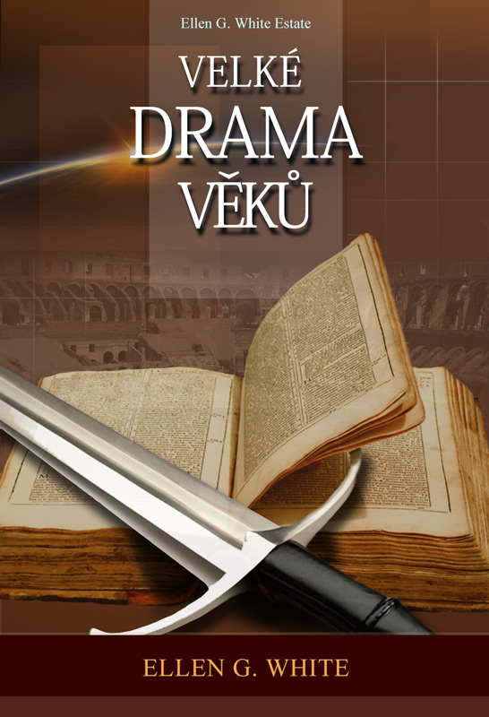

Copyright © 2012, Ellen G. White Estate, Inc.
1. kapitola — Zničení Jeruzaléma
2. kapitola — Neznámí hrdinové
4. kapitola — Věrni navzdory pronásledování
5. kapitola — Začátky reformace
6. kapitola — Věrní až do smrti
7. kapitola — Muž, kterého doba potřebovala
8. kapitola — Zde stojím a nemohu jinak
9. kapitola — Reformace ve Švýcarsku
10. kapitola — Postup reformace v Německu
11. kapitola — Špýrský protest a protestantské “Vyznání”
12. kapitola — Reformace ve Francii
13. kapitola — Reformace v Holandsku a ve Skandinávii
14. kapitola — Reformace na britských ostrovech
15. kapitola — Francouzská revoluce
16. kapitola — Za svobodou do světa
17. kapitola — Zaslíbení návratu
18. kapitola — USA 1844: Očekávání Kristova příchodu
19. kapitola — Nenaplněná očekávání
20. kapitola — Adventní hnutí v Evropě
21. kapitola — Odmítnuté varování
22. kapitola — Další zkouška víry
23. kapitola — Tajemství svatyně
24. kapitola — V přítomnosti Nejvyššího
25. kapitola — Nezměnitelná Boží vůle
27. kapitola — Cesta k plnému životu
28. kapitola — Vyšetřující soud
30. kapitola — Největší nepřítel
33. kapitola — Tajemství nesmrtelnosti
34. kapitola — Můžeme mluvit s mrtvými?
35. kapitola — Svoboda svědomí ohrožena
36. kapitola — Nadcházející boj
37. kapitola — Naše jediná jistota
38. kapitola — Poslední varování
41. kapitola — Minulost ukončena
This eBook is provided by the Ellen G. White Estate. It is included in the larger free Online Books collection on the Ellen G. White Estate Web site.
Ellen G. White (1827-1915) is considered the most widely translated American author, her works having been published in more than 160 languages. She wrote more than 100,000 pages on a wide variety of spiritual and practical topics. Guided by the Holy Spirit, she exalted Jesus and pointed to the Scriptures as the basis of one’s faith.
A Brief Biography of Ellen G. White
About the Ellen G. White Estate
The viewing, printing or downloading of this book grants you only a limited, nonexclusive and nontransferable license for use solely by you for your own personal use. This license does not permit republication, distribution, assignment, sublicense, sale, preparation of derivative works, or other use. Any unauthorized use of this book terminates the license granted hereby.
For more information about the author, publishers, or how you can support this service, please contact the Ellen G. White Estate at mail@whiteestate.org. We are thankful for your interest and feedback and wish you God’s blessing as you read.
Vydáním této knihy nechceme v prvé řadě zdůraznit, že existuje zlo. Vždyť jen málokdo dnes může popřít, že naše planeta se zmítá ve vážných problémech. Vojenské konflikty, přírodní katastrofy, dopravní neštěstí — to vše spolu s ekologickými problémy trvale ohrožuje lidskou civilizaci. A není snad ani třeba připomínat bolest, kterou vnímáme nejcitelněji — totiž bolest, jež vychází z narušených lidských vztahů.
Důvod k jejímu vydání je zcela opačný. Rádi bychom do svízelné situace, v níž se lidstvo nachází, vnesli alespoň trochu optimismu, ukázali naději a východisko. Americká spisovatelka Ellen Gould Whiteová se ve své knize obrací do minulosti, aby hledala možnosti, jež se nabízejí jako řešení problémů dnešních i budoucích. Na vybraných osudech známých i méně známých osobností světové historie ukazuje důležitost takových hodnot, jakými jsou svoboda, důvěra a láska. Barvitost vyprávění, hluboký vhled i důkladná znalost historických reálií umožňuje autorce zavést čtenáře do časů dávno minulých, kde před jejich zraky ožívají zapomenuté příběhy. Nicméně, v knize nejde jen o příběhy nebo historická fakta. Události mají své hlubší poselství, jež vede k zamyšlení, nakolik se dějinné zápasy o pravdu a víru mohou dotýkat člověka jednadvacátého století.
Úvodní kapitola knihy zachycuje poslední tragické okamžiky starověkého Jeruzaléma, Bohem vyvoleného města, které poté, co se odvrátilo od Ježíše Krista, podlehlo Titovým vojskům a skončilo v rozvalinách. Na dalších stránkách popisuje autorka vývoj křesťanské církve, církve vládnoucích tříd i církve pronásledované, upozorňuje na zdánlivě nedůležité kompromisy, které tečnu křesťanského myšlení vychýlily natolik, že se ocitlo mimo rámec Kristova odkazu a zapříčinilo tak značné zkreslení Božího obrazu v lidských očích. Na vzniklou propast pak upozornila reformace, která nejenže odhalila chyby oficiální církve, ale ukázala lidem také cestu zpět k Bohu. Významnou část knihy zaujímá poutavé líčení událostí francouzské revoluce, jejíž ideje vedly k odklonu od náboženského pojetí světa. V protipólu k “výdobytkům” revoluce dochází v první polovině 19. století ve Spojených státech amerických k náboženskému probuzení, při němž znovu ožila naděje na druhý Kristův příchod a konečné vyřešení problému zla.
To, co činí knihu Velké drama věků aktuální, je skutečnost, že autorka děj knihy neuzavírá devatenáctým stoletím, [7] ale překračuje rámec své doby a proniká do nám velmi blízké budoucnosti, při jejímž popisu se jí podařilo zúročit historický materiál a plasticky nastínit závěr lidských dějin. Čtenář zjišťuje, že velké drama se neodehrává pouze kolem nás, ale že on sám stojí přímo v jeho středu. Dozvídá se, že z tohoto zápasu, v němž nejde o nic méně než o lidský život, může vyjít jako vítěz, že svůj pohled může zaměřit k naději, která přesahuje náš svět i celý vesmír.
Poslední kapitoly knihy zachycují konečné vítězství dobra nad zlem, pravdy nad lží, světla nad tmou, radostí nad zármutkem, života nad smrtí a především trpělivé lásky nad pomstychtivou nenávistí.
O nadčasovosti tohoto díla svědčí bezpochyby i skutečnost, že kniha od svého prvního vydání v roce 1888 vyšla v milionových nákladech ve všech hlavních světových jazycích. Je naším přáním, aby i dnes byla pro čtenáře skutečným obohacením a přispěla k šíření pozitivních hodnot pravdy, naděje a lásky.
Vydavatelé [8]
Dříve než na svět přišel hřích, mohl Adam komunikovat přímo se svým Tvůrcem. Protože však přestoupil Boží zákon a odloučil se od Boha, připravil lidstvo o tuto přednost. Plán vykoupení nicméně umožnil, aby obyvatelé této planety zůstali i nadále ve spojení s nebem. Bůh hovořil s lidmi prostřednictvím svého Ducha a svět osvěcovalo Boží světlo sesílané prostřednictvím zjevení vyvoleným Božím služebníkům. “… z popudu Ducha svatého mluvili lidé, poslaní od Boha.” 2. Petrův 1,21.
V prvních dvaceti pěti staletích lidských dějin neexistovalo psané Boží zjevení. Lidé, kteří se učili od Boha, sdělovali své poznatky jiným, a tak poznání přecházelo z otce na syna, z generace na generaci. První písemné záznamy Božího slova pocházejí až z doby Mojžíše. Inspirovaná zjevení dala vzniknout inspirované knize. Tento proces pokračoval po dobu dlouhých šestnácti staletí — začal Mojžíšem, který zaznamenal stvoření světa a Boží zákon, a skončil apoštolem Janem, který zapsal nejnádhernější pravdy evangelia.
Bible se odvolává na Boha jako svého autora. Psaly ji však lidské ruce a rozmanitý literární sloh jednotlivých biblických knih prozrazuje charakteristické rysy různých pisatelů. Všechny zjevené pravdy “pocházejí z Božího Ducha” (2. Timoteovi 3,16), jsou však vyjádřeny lidskou řečí. Bůh prostřednictvím svého svatého Ducha osvěcoval mysl a srdce svých následovníků, dával jim sny a vidění, ukazoval symboly a obrazy, a ti, kterým byla pravda takto zjevena, pak zaznamenali myšlenky lidskou řečí.
Desatero přikázání vyhlásil sám Bůh a napsal je svou vlastní rukou. Je to Boží, nikoli lidský výtvor. Bible však obsahuje Bohem sdělené pravdy vyjádřené lidskou řečí, je spojením Božího s lidským. Podobným spojením je také Kristova přirozenost — Kristus je Syn Boží i Syn člověka. O Bibli platí totéž, co platilo o Kristu — “Slovo se stalo tělem a přebývalo mezi námi.” Jan 1,14.
Jednotlivé knihy Bible napsali v různých dobách lidé rozmanitých duševních a duchovních schopností, rozličného postavení a povolání, proto se jejich sloh značně liší. Různorodé jsou také náměty, o nichž pojednávají. Pisatelé tedy používali různé výrazové prostředky, jeden často předkládá stejnou pravdu výrazněji než druhý. Protože několik pisatelů psalo o stejném námětu z různých hledisek, může se povrchnímu, nepozornému nebo zaujatému čtenáři zdát, že se jejich popisy neshodují nebo si protiřečí. Přemýšlivý a pokorný [9] čtenář však při hlubším pohledu pozná, že spolu souhlasí.
Pravdu popisovali různí lidé, proto ji představili z různých pohledů. Na jednoho pisatele silněji zapůsobila jedna stránka věci a zvýraznil to, co odpovídalo jeho zkušenosti nebo co byl schopen vnímat a ocenit, jiný si povšiml jiného hlediska, ale každý pod vedením Ducha svatého popsal to, co nejsilněji zapůsobilo na jeho mysl. I když tedy pravdu představili z různých hledisek, je mezi nimi dokonalý soulad. Takto zjevené pravdy tvoří harmonický celek, který plně odpovídá potřebám lidí ve všech situacích a podmínkách života.
Bůh se rozhodl sdělit svou pravdu světu prostřednictvím lidí. Duch svatý vybral vhodné jedince a dal jim potřebné schopnosti, aby mohli vykonat svěřený úkol. Vedl jejich myšlení při volbě námětu, o kterém mluvili a psali. Poklad svěřil hliněným nádobám, přesto však pochází z nebe. Boží svědectví je podáváno nedokonalou lidskou řečí, přesto je to Boží svědectví. Poslušný, věřící člověk v něm postřehne slávu Boží moci, plnou milosti a pravdy.
Bůh ve svém slovu poskytuje lidem vědomosti potřebné ke spasení. Písmo svaté je proto třeba přijímat jako autoritativní, neomylné zjevení Boží vůle. Je měřítkem charakteru, zjevuje věrouku a je zkušebním kamenem pro posuzování zkušeností. “Veškeré Písmo pochází z Božího Ducha a je dobré k učení, k usvědčování, k nápravě, k výchově ve spravedlnosti, aby Boží člověk byl náležitě připraven ke každému dobrému činu.” 2. Timoteovi 3,16.17.
Skutečnost, že Bůh zjevil lidem svou vůli prostřednictvím svého slova, ovšem neznamená, že je už zbytečná stálá přítomnost a pomoc Ducha svatého. Naopak, náš Spasitel slíbil, že jeho Duch bude objasňovat Boží slovo jeho služebníkům, vysvětlovat jeho učení a ukazovat, jak je mají aplikovat. Protože Bibli inspiroval Boží Duch, je nemožné, aby učení Ducha odporovalo tomu, co učí Boží slovo.
Duch nebyl dán — a ani nemůže být nikdy dán — aby nahradil Bibli. Vždyť Písmo výslovně říká, že Boží slovo je měřítkem každého učení a každé zkušenosti. Apoštol Jan napsal: “Nevěřte každému vnuknutí, nýbrž zkoumejte duchy, zda jsou z Boha; neboť mnoho falešných proroků vyšlo do světa.” 1. Janův 4,1. A Izaiáš prohlásil: “K zákonu a svědectví! Což oni neříkají takové slovo, že mu z něho nevzejde jitřní záře?” Izajáš 8,20.
Dílo Ducha svatého ohrožují lidé, kteří tvrdí, že jsou vedeni Duchem, a proto se už nepotřebují řídit Božím slovem. Nechávají se vést pocity, které pokládají za Boží hlas ve svém nitru. To, co je ovládá, však není Boží Duch. Podléhání pocitům spolu s přehlížením Písma může vést jen ke zmatku, klamu a zkáze. A to slouží pouze záměrům satana. Protože působení Ducha svatého v Kristově církvi je životně důležité, snaží se satan prostřednictvím bludů extrémistů a fanatiků svést lidi k tomu, aby nebrali působení Ducha svatého vážně a přehlíželi zdroj síly, který nám Pán nabízí.
Podle Božího slova bude Duch svatý konat své dílo během doby, kdy bude [10] zvěstováno evangelium. V době vzniku Starého a Nového zákona nepřestával Duch svatý sdělovat pravdu různým jednotlivcům mimo zjevení, která byla vtělena do Písma. Bible sama hovoří o tom, jak Duch svatý lidem předával upozornění, výtky, rady a poučení v záležitostech, které neměly souvislost s psaným Božím slovem. Zmiňuje se o prorocích v různých dobách, jejichž výroky nikdo nezaznamenal. Stejným způsobem i později, když byl kánon Písma ukončen, Duch svatý pokračoval ve svém díle, osvěcoval, upozorňoval a povzbuzoval věřící.
Pán Ježíš slíbil svým učedníkům: “Přímluvce, Duch svatý, kterého pošle Otec ve jménu mém, ten vás naučí všemu a připomene vám všecko, co jsem vám řekl.” “Jakmile však přijde on, Duch pravdy, uvede vás do veškeré pravdy, … oznámí vám, co má přijít.” Jan 14,26; Jan 16,13. Písmo učí, že tento slib neplatil jen v době apoštolů. Platí pro Kristovu církev ve všech dobách. Spasitel své následovníky ujistil: “… já jsem s vámi po všecky dny až do skonání tohoto věku.” Matouš 28,20. Apoštol Pavel prohlásil, že dary a projevy Ducha Kristus udělil své církvi, “aby své vyvolené dokonale připravil k dílu služby — k budování Kristova těla, až bychom všichni dosáhli jednoty víry a poznání Syna Božího, a tak dorostli zralého lidství, měřeno mírou Kristovy plnosti.” Efezským 4,12.13.
Apoštol Pavel se modlil za věřící v Efezu: “Prosím, aby vám Bůh našeho Pána Ježíše Krista, Otec slávy, dal ducha moudrosti a zjevení, abyste ho poznali a osvíceným vnitřním zrakem viděli, k jaké naději vás povolal, … jak nesmírně veliký je ve své moci k nám, kteří věříme.” Efezským 1,17-19. Požehnání, o které apoštol Pavel prosil pro efezský sbor, působí Boží Duch, který osvěcuje rozum a odhaluje čtenáři hloubky Božího slova.
Po úžasném projevu Ducha svatého o letnicích vyzval apoštol Petr své posluchače, aby činili pokání a dali se pokřtít ve jménu Ježíše Krista na odpuštění hříchů; potom jim řekl: “… dostanete dar Ducha svatého. Neboť to zaslíbení platí vám a vašim dětem i všem daleko široko, které si povolá Pán, náš Bůh.” Skutky 2,38.39.
Když Bůh nechal prostřednictvím proroka Joela popsat příchod velkého dne Páně, slíbil také mimořádné působení Božího Ducha (Jóel 3,1). Toto proroctví se zčásti vyplnilo sesláním Ducha o letnicích, dokonale se však naplní v projevu Boží milosti, která bude provázet závěrečné působení evangelia.
Až se bude přibližovat konec času, velký spor mezi dobrem a zlem bude nabývat na síle. Satanův hněv vůči Kristově církvi se projevoval ve všech dobách a Bůh štědře uděloval svému lidu milost a svého Ducha, aby ho posílil v boji proti mocnostem zla. Když měli Kristovi apoštolové rozšířit evangelium po celém světě a zaznamenat je pro budoucí věky, dostali zvláštní zmocnění Duchem svatým. Oč více se církev blíží svému konečnému vysvobození, tím více síly vynakládá ovšem satan na své působení. Sestoupí na zem “plný zlosti, protože ví, jak málo času mu zbývá”. Zjevení 12,12). Bude předvádět “kdejaký mocný čin, klamná znamení a zázraky”. [11] 2. Tesalonickým 2,9. Po šest tisíc let se satan, kdysi nejpřednější z Božích andělů, plně věnoval dílu podvodu a zkázy. Všechny své schopnosti a důvtip, který získal během dlouhého zápasu, veškerou krutost, kterou si vypěstoval, použije proti Božímu lidu v konečném boji. V tak nebezpečné době mají Kristovi následovníci upozorňovat svět na druhý příchod Pána Ježíše a má se připravit lid, který bude stát před Kristem při jeho příchodu “čistý a bez poskvrny”. 2. Petrův 3,14. V této době církev nebude potřebovat zvláštní dar Boží milosti a moci o nic méně než v dobách apoštolů.
Duch svatý mě osvítil a ukázal mi výjevy z dlouhého zápasu mezi dobrem a zlem. Čas od času mi Pán dovolil sledovat, jak v různých dobách probíhal velký spor mezi Kristem, Pánem života, původcem našeho spasení, a satanem, vládcem zla, původcem hříchu, prvním přestupníkem svatého Božího zákona. Satanovo nepřátelství vůči Kristu se projevuje nenávistí namířenou proti Kristovým následovníkům. V celých dějinách můžeme sledovat stále stejný odpor vůči zásadám Božího zákona, stejný klam, jehož cílem je představit blud tak, aby vypadal jako pravda, aby Boží zákon nahradila lidská nařízení a aby lidé uctívali stvoření místo Stvořitele. Ve všech dobách se satan vytrvale snažil představit zkresleně Boží charakter; tak chtěl lidi svést k tomu, aby získali falešnou představu o Stvořiteli a dívali se na něj spíše se strachem a nenávistí než s láskou. Snaží se odstranit Boží zákon a způsobit, aby lidé necítili závaznost jeho požadavků. Pronásleduje ty, kdo se odvažují vzdorovat jeho podvodům. Stejné satanovo úsilí můžeme sledovat v dějinách patriarchů, proroků a apoštolů, mučedníků i reformátorů.
V posledním velkém zápase bude satan bojovat stejným způsobem, projeví stejné postoje a bude se snažit dosáhnout stejného cíle jako ve všech předchozích dobách. Bude se opakovat to, co tu už bylo, jen s jedním rozdílem — nastávající zápas se bude vyznačovat intenzitou, jakou svět dosud nezažil. Satanovy klamy budou rafinovanější, jeho útoky rozhodnější. Kdyby to bylo možné, svedl by i vyvolené (Marek 13,22).
Když mi Boží Duch představil velké pravdy svého slova a ukázal minulé i budoucí výjevy, vyzval mne, abych ostatním lidem oznámila, co mi zjevil — abych dějiny zápasu představila na pozadí historických událostí a vylíčila je tak, aby objasnily rychle se blížící boj. Z tohoto důvodu jsem se snažila vybrat z církevních dějin takové události, na kterých lze sledovat, jak lidé postupně poznávali velké pravdy, které Pán světu v různých obdobích zjevil, jak tyto pravdy rozněcovaly satanův hněv a vyvolávaly nepřátelství zesvětačtělé církve a jak povědomí o nich udržovalo svědeckou službu lidí, kteří “nemilovali svůj život tak, aby se zalekli smrti”. Zjevení 12,11.
Tyto události můžeme považovat za předobraz zápasu, který je před námi. Budeme-li je sledovat ve světle Božího slova a budeme-li osvíceni Božím Duchem, budeme schopni rozpoznat satanovy plány a nebezpečí, jež musí překonat lidé, kteří chtějí být shledáni — až Pán Ježíš znovu přijde — “bez viny”. [12]
Velké historické události, které znamenaly pokrok reformace v dějinách, patří minulosti. Protestantský svět je dobře zná a všeobecně uznává. Jsou to fakta, která nikdo nemůže popřít. Tyto dějiny líčím stručně v souladu se záměrem knihy. Stručnost, sterol jsem musela dodržet, vedla k tomu, že fakta zabírají jen tak malý prostor, aby ještě bylo možné správně pochopit, co z nich vyvozuji. V několika případech v knize cituji výroky historiků, kterým se podařilo seřadit události tak, aby poskytly stručný souhrnný pohled na věc, nebo shrnout podrobnosti vhodným způsobem. Ve většině případů však autoři nejsou výslovně uvedeni, jejich slova nejsou vyznačena uvozovkami, neodvolávám se na ně jako na autority, cituji je proto, že jejich výroky jsou vhodným a působivým podáním věci. Podobným způsobem postupuji při popisování zážitků a názorů lidí, kteří pokračují v díle obnovy v současné době.
Cílem této knihy není podat nové historické poznatky o zápasech minulých dob, ale spíše ukázat na fakta a zásady, které se týkají budoucích událostí. Celé toto vyprávění o minulých událostech nabývá nového významu, díváme-li se na ně jako na část zápasu mezi silami světla a tmy, osvětluje budoucnost a ozařuje cestu lidí, kteří podobně jako reformátoři minulých staletí budou povoláni, aby i za cenu ztráty pozemského vlastnictví svědčili “pro Boží slovo a pro svědectví Ježíše Krista”.
Záměrem této knihy je vylíčit průběh velkého sporu mezi pravdou a bludem, odhalit nástrahy satana a naznačit způsoby, jak jim lze odolat; snaží se představit uspokojivé řešení problému zla tím, že osvětluje původ a konečné následky hříchu — aby se plně projevila Boží spravedlnost a milost v jeho jednání se stvořením — a ukazuje svatou, neměnnou podstatu Božího zákona. Mou nejvroucnější modlitbou je, aby se díky této knize mohli lidé vymanit ze zajetí temných sil a stali se “účastníky dědictví svatých ve světle” k chvále toho, který si nás zamiloval a obětoval se za nás. [13] [14]
“Kdybys poznalo v tento den i ty, co vede k pokoji! Avšak je to skryto tvým očím. Přijdou na tebe dny, kdy tvoji nepřátelé postaví kolem tebe val, obklíčí tě a sevřou se všech stran. Srovnají tě se zemí a s tebou i tvé děti; nenechají v tobě kámen na kameni, poněvadž jsi nepoznalo čas, kdy se Bůh k tobě sklonil.” Lukáš 19,42-44.
Ježíš se díval na Jeruzalém z vrcholu Olivové hory. Byl to krásný a uklidňující pohled. V tento velikonoční čas přicházeli ze všech zemí do Jeruzaléma potomci Jákoba, aby oslavili velký národní svátek. Uprostřed zahrad, vinic a zelených strání posetých stany poutníků se zvedaly stupňovité pahorky, výstavné paláce a mohutné hradby hlavního města Izraele. Zdálo se, jako by Siónská dcera ve své pýše říkala: “Sedím jako královna a nepoznám zármutek.” Byla krásná a domnívala se, že je v bezpečí a že se těší přízni nebes jako kdysi před staletími, kdy královský pěvec zpíval: “Krásně se vypíná k potěše celé země Siónská hora, … sídlo velkého Krále.” Žalm 48,3. Úchvatný byl i pohled na budovu chrámu. Paprsky zapadajícího slunce dávaly vyniknout bělostné nádheře mramorových zdí, v jejich záři se leskla zlatá brána, věže a cimbuří. Chrám, chlouba židovského národa, tu stál jako “ztělesněná krása”. Který Izraelec by se na to mohl dívat, aniž by nepocítil radost a obdiv. Ježíš však přemýšlel o něčem úplně jiném. “Když už byl blízko a uzřel město, dal se nad ním do pláče.” Lukáš 19,41. Uprostřed všeobecného nadšení při triumfálním vjezdu, kdy lidé mávali palmovými ratolestmi a pahorky zněly ozvěnou radostného “hosana”, když ho tisíce hlasů provolávaly za krále, naplnil Vykupitele světa najednou nepochopitelný zármutek. On, Boží Syn, Zaslíbený Izraele, který svou mocí zvítězil nad smrtí a povolal její zajatce z hrobu, nyní plakal. Jeho slzy, to nebyl jen obyčejný zármutek, ale i velká, nepřekonatelná, smrtelná úzkost.
Nenaříkal nad sebou, i když dobře věděl, co bude následovat. Před ním leželo Getsemane, místo jeho nastávajícího smrtelného zápasu. V dohledu byla také Ovčí brána, kterou se po staletí vodila obětní zvířata; ta se měla otevřít i pro něj, až bude “jako beránek vedený na porážku” Izajáš 53,7. Nedaleko [15] odtud se vypínala Golgota, dějiště ukřižování. Ta cesta, na kterou se už brzy vydá, bude hrůzně temná, až položí svůj život jako oběť za hřích. Nebyly to však myšlenky na tyto události, které ho tak zarmoutily, zatímco lidé kolem něj se radovali. Jeho nesobecké srdce nesevřela úzkostná předtucha vlastního nadlidského utrpení. Kristus plakal nad tisíci odsouzenými v Jeruzalémě, plakal nad slepotou a zatvrzelostí lidí, kterým přišel požehnat a které přišel zachránit.
Před Ježíšovým zrakem se promítlo období více než tisíce let, v němž Bůh prokazoval vyvolenému lidu zvláštní přízeň a projevoval zvláštní péči. Stála tu hora Moria, na níž se dal Izák, “syn zaslíbení”, bez odporu připoutat jako oběť k oltáři, a tak se stal symbolem oběti Božího Syna. Zde byla Abrahamovi — “otci věřících” — potvrzena smlouva požehnání, slavné mesiášské zaslíbení. 1. Mojžíšova 22,9.16-18. Na tomto místě plameny oběti stoupající k nebi z humna Ornana Jebuzejského odvrátily meč hubícího anděla (1. Paralipomenon 21) — vhodný to symbol Spasitelovy oběti a jeho přímluvy za viníky. Jeruzalém byl poctěn Bohem více než celá země. “Hospodin si totiž zvolil Sión, zatoužil jej mít za sídlo.” Žalm 132,13. Tady po věky proroci pronášeli varovná poselství. Tady kněží mávali svými kadidelnicemi a vůně kadidla spolu s modlitbami věřících stoupala k Bohu. Tady byla denně obětována krev beránků, která ukazovala na budoucího Božího Beránka. Tady Hospodin zjevil svou přítomnost v oblaku slávy nad slitovnicí. Odtud vycházel onen tajemný žebřík spojující zemi s nebem (1. Mojžíšova 28,12; Jan 1,51) — žebřík, po němž sestupují a vystupují Boží andělé a který otevírá světu cestu do nejsvětějších míst. Kdyby Izrael jako národ zůstal Bohu věrný, zůstal by Jeruzalém, Boží vyvolené město, zachován navždy (Jeremjáš 17,21-25). Avšak dějiny tohoto národa, tolik poctěného Boží přízní, jsou dějinami odpadlictví a vzdoru. Izrael pohrdl Boží milostí, zneužil svých výsad a promarnil své příležitosti.
Ačkoli Izraelci “Boží posly zesměšňovali, pohrdali jeho slovy a jeho proroky prohlašovali za podvodníky” (2. Paralipomenon 36,16), Bůh s nimi jednal stále jako “Bůh plný slitování a milostivý, shovívavý, nejvýš milosrdný a věrný”. 2. Mojžíšova 34,6. Boží milosrdenství vůči nim nepřestalo, přestože je stále odmítali. S láskou, která převyšuje lásku otce k synovi, “nepřestával k nim Bůh posílat své posly, protože měl soucit se svým lidem i se svým příbytkem”. 2. Paralipomenon 36,15. Když výzvy, prosby a napomenutí nepomáhaly, poslal jim největší dar nebes — a v tomto jediném daru jim dal vlastně celé nebe.
Sám Boží Syn přišel, aby přivedl k pokání zatvrzelé město. Byl to Kristus, kdo vysvobodil Izrael jako vinný kmen z Egypta. Žalm 80,9. Vlastní rukou vyháněl před ním pohany. Zasadil ho “na úrodném svahu”. Pečlivě jej ohradil, vyslal své služebníky, aby se o něho starali. Nakonec zvolal: “Co se mělo pro mou vinici ještě udělat, a já pro ni neudělal?” Izajáš 5,1.4. Když pak očekával, že ponese hrozny, plodila plané víno. [16] Nepřestával však doufat, že přinese úrodu. Přišel osobně na svou vinici, aby zjistil, zda ji lze zachránit před zkázou. Okopal svůj vinný kmen, prořezal ho a ošetřil. Byl neúnavný ve svém úsilí zachránit to, co zasadil.
Celé tři roky chodil Pán světla a slávy mezi svým lidem. “Procházel zemí, všem pomáhal a uzdravoval všechny, kteří byli v moci ďáblově,” obvazoval raněné, vyhlásil zajatcům propuštění, navracel zrak slepým. Díky jeho působení [17] chromí chodili a hluší slyšeli; očišťoval malomocné, křísil mrtvé a chudým zvěstoval evangelium (Skutky 10,38; Lukáš 4,18 Matouš 11,5). Všem lidem bez rozdílu platilo jeho milostivé pozvání: “Pojďte ke mně všichni, kdo se namáháte a jste obtíženi břemeny, a já vám dám odpočinout.” Matouš 11,28.
I když mu na dobro odpovídali zlým a za svou lásku sklízel jen nenávist (Žalm 109,5), konal Ježíš vytrvale své poslání milosti. Nikdy neodmítl člověka, který hledal jeho milost. Žil jako poutník bez domova, jeho každodenním údělem byla chudoba a potupa. Sloužil potřebám lidí, ulehčoval jim v jejich bídě a přesvědčoval je, aby přijali dar života. Příliv slitování, odražený od zatvrzelých lidských srdcí, se k nim vracel ještě silnějším proudem nevýslovné, soucitné lásky. Izrael se však odvrátil od svého nejlepšího Přítele a Pomocníka. Nabídkami jeho lásky pohrdl, jeho rady odmítl, jeho varování zesměšnil.
Čas naděje a odpuštění rychle plynul. Bůh čekal již velmi dlouho a pohár trpělivosti se už téměř naplnil. Mračno kupící se po dlouhé věky odpadnutí a vzpour ztemnělo a hrozilo, že na provinilý národ přijde bouře. Toho, který je jako jediný mohl zachránit před hrozícím trestem, zlehčovali, pomlouvali, zatracovali a chystali se ho brzy ukřižovat. Až bude Kristus viset na golgotském kříži, skončí období, v němž se Izrael jako národ těšil Boží přízni a požehnání. Smrt jediného člověka je ztrátou, která je nekonečně větší než všechny poklady světa. Když si však Ježíš prohlížel Jeruzalém, viděl před sebou úděl celého města i celého národa — města a národa, který byl kdysi vyvoleným a vzácným Božím pokladem.
Proroci naříkali nad odpadlictvím Izraele a nad strašnými ranami, které přišly jako důsledek jeho hříchů. Jeremiáš si přál, aby jeho oči byly pramenem slz, aby mohl dnem i nocí oplakávat zabitou “dceru svého lidu”, “Hospodinovo stádce”, které bude odvedeno do zajetí (Jeremjáš 9,1; Jeremjáš 13,17). Jaký zármutek musel prožívat ten, jehož prorocký zrak viděl ne roky, ale celé věky dopředu. Viděl hubícího anděla s mečem pozdviženým proti městu, které bylo tak dlouho místem, v němž přebýval Hospodin. Z hřebenu Olivové hory, místa, na němž se později utábořil Titus a jeho vojsko, hleděl Kristus přes údolí na svatá nádvoří a sloupořadí, a přes slzy viděl strašnou budoucnost — hradby, obklíčené cizími vojsky. Slyšel dupot armád táhnoucích do války. Slyšel hlasy matek a dětí žebrajících v obleženém městě o chléb. Viděl, jak krásnou svatyni, paláce i věže ničí plameny a na místě, kde to vše dříve stálo, viděl jen hromadu doutnajících sutin.
Při pohledu do budoucnosti viděl vyvolený národ rozptýlený do všech zemí “jako vraky na pustém břehu”. V trestu, který měl brzy dopadnout na obyvatele města, viděl Kristus pouze první doušek z “kalicha hněvu”, který bude muset národ vypít do dna při posledním soudu. Boží soucit a láska zaznívají z truchlivých slov: “Jeruzaléme, Jeruzaléme, který zabíjíš proroky a kamenuješ ty, kdo byli k tobě posláni; kolikrát jsem chtěl shromáždit tvé děti, tak jako kvočna shromažďuje kuřátka pod svá křídla, a nechtěli jste!” [18] Matouš 23,37. Kéž bys, národe, poctěný více než ostatní, poznal dobu svého navštívení a to, co ti mohlo posloužit ku pokoji. Zadržel jsem anděla spravedlnosti, volal jsem tě k pokání, ale nadarmo. Odmítal jsi a zavrhoval nejen služebníky, vyslance a proroky, ale i Svatého Izraelského, svého Vykupitele. Zahyneš-li, poneseš za to odpovědnost ty sám. “… nechcete přijít ke mně, abyste měli život.” Jan 5,40.
Kristus v Jeruzalémě viděl symbol světa — zatvrzelého v nevěře a vzpouře —, který spěje k Božímu soudu. Utrpení hříšného lidstva tížilo jeho srdce a přinutilo jej k hořkému pláči. V lidské bídě, v slzách a krvi viděl důsledky hříchu. Jeho srdce bylo plné nekonečného soucitu k souženým a trpícím na zemi. Toužil pomoci všem. Ale ani jeho ruka nemohla zadržet příval lidského utrpení, protože jen málo lidí hledá skutečný zdroj pomoci. Byl ochoten položit život, aby jim přinesl záchranu, ale jen někteří z nich přijdou k němu, aby mohli žít.
Vládce nebes pláče. Syn věčného Boha je smutný, chvěje se úzkostí. Tento výjev, který naplnil celé nebe údivem, nám ukazuje, jak neobyčejně hříšný je hřích a jak těžký je i pro nekonečného Boha úkol zachránit viníka před následky přestoupení Božího zákona. Ježíš prorockým pohledem, který zaměřil na poslední pokolení, viděl, že v závěrečné době bude svět žít v podobném klamu, který způsobil zkázu Jeruzaléma. Velkým hříchem Židů bylo to, že zavrhli Krista. Velkým hříchem křesťanského světa je, že zavrhl Boží zákon, základ Boží vlády na nebi i na zemi. Lidé nebudou brát vážně Hospodinovy příkazy, budou jimi pohrdat. Milióny lidí spoutaných hříchem — satanových otroků, odsouzených k druhé smrti — také odmítnou naslouchat slovům pravdy, až nastane jejich den navštívení. Jak strašná to slepota! Jak divné to poblouznění!
Dva dny před Velikonocemi, když naposledy odešel z chrámu — poté, co odsoudil pokrytectví židovských vůdců —, vyšel Kristus opět se svými učedníky na Olivovou horu a posadil se s nimi na travnaté úbočí, odkud se nabízel pohled na město. Ještě jednou si prohlížel jeho hradby, věže a paláce. Ještě jednou se díval na chrám v jeho oslňující nádheře, na diadém krásy korunující posvátnou horu.
O tisíc let dříve opěvoval žalmista přízeň, kterou Bůh projevil Izraelcům tím, že učinil jejich svatyni svým obydlím: “V Šálemu je jeho stánek, jeho obydlí je na Siónu.” Bůh si zvolil “kmen Judův, horu Sión, tu si zamiloval. Svou svatyni vybudoval jak výšiny nebes.” Žalm 76,3; 78,68.69. První chrám byl vystavěn v době, kdy se Izraeli dařilo nejlépe. Král David tehdy pro tento účel shromáždil obrovské poklady a na Boží popud byly vypracovány plány na stavbu chrámu (1. Paralipomenon 28,12.19). Šalomoun, nejmoudřejší z izraelských panovníků, dílo dokončil. Tento chrám byl nejznamenitější stavbou, jakou kdy svět viděl. Přesto Hospodin prohlásil o druhém chrámu ústy proroka Agea: “Sláva tohoto nového domu bude větší [19] nežli prvního.” “Otřesu všemi pronárody, a přijdou s tím nejvzácnějším, co mají; a naplním tento dům slávou, praví Hospodin zástupů.” Ageus 2,10.8.
První chrám zbořil Nebúkadnesar a asi pět set let před Kristovým narozením jej znovu vystavěli Židé, kteří se po celoživotním zajetí vrátili do zničené a téměř opuštěné vlasti. Mezi nimi byli i starci, kteří pamatovali slávu Šalomounova chrámu a kteří při kladení základů nové stavby naříkali, že nebude tak krásná jako předešlá. Tehdejší pocity působivě popsal prorok: “Kdo zůstal mezi vámi z těch, kteří viděli tento dům v jeho prvotní slávě? A jaký jej vidíte nyní? Není ve vašich očích jen pouhé nic?” Ageus 2,4; Ezdráš 3,12. Tehdy Bůh slíbil, že sláva druhého domu převýší slávu prvního.
Druhý chrám se ovšem prvnímu nevyrovnal nádherou a velkolepostí, ani nebyl poctěn stejnými viditelnými důkazy Boží přítomnosti, jakými byl poctěn první chrám. Neprojevila se v něm nadpřirozená moc, která by svědčila o jeho zasvěcení. Nikdo v něm neviděl oblak slávy, který by naplnil nově vystavěný svatostánek. Z nebe nesestoupil oheň, který by strávil oběť na [20] jeho oltáři. Mezi cherubíny ve svatyni svatých nepřebývala Boží sláva, vždyť uvnitř nebyla truhla smlouvy, slitovnice ani desky svědectví. Z nebe nepromlouval hlas, který by kněžím oznamoval Hospodinovu vůli.
Po staletí se Židé marně pokoušeli dokázat, že se splnilo Boží zaslíbení, oznámené Ageem. Jejich myšlení totiž zaslepila pýcha a nevěra, proto nepoznali pravý význam prorockých slov. Druhý chrám nebyl poctěn oblakem Hospodinovy slávy, ale živou přítomností toho, v němž přebývala plnost božství tělesně a jenž byl sám Bůh zjevený v těle. “Touha všech národů” přišla opravdu do svého chrámu, když Ježíš z Nazareta učil a uzdravoval na jeho nádvořích. Kristovou přítomností, a jenom jí, převyšoval druhý chrám první. Avšak Izrael odmítl Dar, který Bůh chrámu nabídl. Se skromným Učitelem, který toho dne naposledy vyšel z jeho zlaté brány, opustila Boží sláva chrám navždy. Naplnila se Spasitelova slova: “… váš dům se vám ponechává pustý.” Matouš 23,38.
Učedníky naplnila hrůza a úžas, když Ježíš předpověděl zničení chrámu. Chtěli lépe porozumět smyslu jeho slov. Více než čtyřicet let bylo vynakládáno mnoho prostředků, práce a stavitelského umění, aby se zvýšila jeho nádhera. Herodes Veliký na něj vynaložil jak římské bohatství, tak židovské poklady, dokonce i císař jej obohatil vlastními dary. Těžké hranoly bílého mramoru takřka neuvěřitelných rozměrů, které byly dopraveny z Říma, tvořily součást stavby chrámu. Na ně upozornili učedníci svého Mistra slovy: “Pohleď, … jaké to kameny a jaké stavby.” Marek 13,1.
Na tato slova Ježíš odpověděl vážně a překvapivě: “Amen, pravím vám, že tu nezůstane kámen na kameni, všecko bude rozmetáno.” Matouš 24,2.
Učedníci se zničením Jeruzaléma spojovali událost, kdy Kristus přijde osobně na zem v pozemské slávě, aby převzal vládu nad celosvětovou říší, potrestal zatvrzelé Židy a zlomil římskou nadvládu. Pán jim slíbil, že přijde podruhé. Proto si při zmínce o trestech nad Jeruzalémem vzpomněli na jeho druhý příchod. Když se na Olivové hoře shromáždili kolem Spasitele, zeptali se: “Kdy to nastane a jaké bude znamení tvého příchodu a skonání věku?” Matouš 24,3.
Budoucnost byla učedníkům milosrdně zahalena. Kdyby tehdy plně pochopili dvě strašné skutečnosti — utrpení Vykupitele, jeho smrt a zkázu města i chrámu —, přemohla by je hrůza. Kristus jim naznačil význačné události, ke kterým dojde před koncem času. Tehdy mu však plně neporozuměli. Skutečný význam jeho slov měl být pochopen, až to Boží lid bude potřebovat. Proroctví, které Kristus vyslovil, mělo dvojí smysl: Předpovídalo zkázu Jeruzaléma a zároveň hrůzy posledního velkého dne.
Ježíš vyprávěl naslouchajícím učedníkům o soudech, jež stihnou odpadlý Izrael, a zvláště o trestu, který na sebe přivolají odmítnutím a ukřižováním Mesiáše. Blízkost hrůzného vyvrcholení budou oznamovat neomylná znamení. Strašná hodina přijde náhle a rychle. Spasitel upozornil své následovníky: “Když pak uvidíte znesvěcující ohavnost, o níž je řeč u proroka Daniele, jak stojí na místě svatém — kdo [21] čteš, rozuměj — tehdy ti, kdo jsou v Judsku, ať uprchnou do hor.” Matouš 24,15.16; Lukáš 21,20.21. Až modloslužebné symboly Římanů budou postaveny na posvátné půdě, která se rozprostírala ještě několik set metrů za městskými hradbami, tehdy Kristovi následovníci mají hledat bezpečí v útěku. Až uvidí varovná znamení, nesmějí ti, kdo se chtějí zachránit, ani okamžik otálet. V celém Judsku i v samotném Jeruzalémě musí okamžitě uposlechnout signál k útěku. Ten, kdo náhodou bude na střeše domu, nesmí už vejít do domu, ani kdyby tím mohl zachránit své nejvzácnější poklady. Ti, kdo budou pracovat na polích nebo vinicích, nesmějí ztrácet čas tím, že se vrátí pro vrchní oděv, který odložili při práci v parnu dne. Nesmějí otálet ani okamžik, aby je nestihla zkáza.
Za vlády Heroda byl Jeruzalém nejen velice zkrášlen, ale vybudováním věží, hradeb a pevností se také stal zdánlivě nedobytným. Kdo by tehdy veřejně předpověděl jeho zkázu, byl by — tak jako svého času Noe — považován za bláznivého panikáře. Kristus však řekl: “Nebe a země pominou, ale má slova nepominou.” Matouš 24,35. Boží hněv vzplanul proti Jeruzalému pro jeho hříchy a zatvrzelá nevěra jeho úděl jen zpečetila.
Hospodin prostřednictvím proroka Micheáše prohlásil: “Slyšte to, představitelé domu Jákobova, vůdcové izraelského domu, vy, kteří si hnusíte právo a překrucujete všechno, co je přímé. Sión budujete krveprolitím, Jeruzalém bezprávím. Jeho představitelé soudí za úplatek, jeho kněží učí za odměnu, jeho proroci věští za stříbro. Přitom spoléhají na Hospodina a říkají: Což není Hospodin uprostřed nás? Na nás nepřijde nic zlého.” Micheáš 3,9-11.
Tato slova přesně popisují zkorumpované a samospravedlivé obyvatele Jeruzaléma. Tvrdili, že přesně zachovávají požadavky Božího zákona, ve skutečnosti však přestupovali všechny jeho zásady. Nenáviděli Ježíše Krista, protože jeho čistota a svatost odhalovala jejich nepravost. Obviňovali ho, že je příčinou všech nesnází, které je postihly jako důsledek jejich hříchů. I když věděli, že je naprosto bez hříchu, prohlašovali, že jeho smrt je nezbytná, aby se zachránili jako národ. “Když proti němu nezakročíme,” říkali židovští vůdcové, “všichni v něj uvěří a přijdou Římané a zničí nám toto svaté místo i národ.” Jan 11,48. Jestliže obětují Krista, mohou se znovu stát silným, jednotným národem. Tak uvažovali a souhlasili s rozhodnutím svého velekněze, že by bylo lépe, aby zemřel jeden člověk, než aby zahynul celý národ.
Tak židovští vůdcové budovali “Sión krveprolitím a Jeruzalém bezprávím”. Micheáš 3,10. A pak, když zavraždili svého Spasitele, protože káral jejich hříchy, byli tak samospravedliví, že se považovali za vyvolený národ a očekávali, že je Bůh osvobodí od jejich nepřátel. “Proto,” pokračoval prorok, “bude Sión kvůli vám zorán jako pole, z Jeruzaléma budou sutiny, z hory Hospodinova domu návrší zarostlá křovím.” Micheáš 3,12. [22]
Téměř čtyři desetiletí — od chvíle, kdy Ježíš Kristus předpověděl úděl Jeruzaléma — odkládal Pán soud nad městem a národem. Boží shovívavost vůči lidem, kteří odmítli evangelium a zavraždili jeho Syna, je obdivuhodná. Boží jednání s židovským národem je představeno v podobenství o neplodném stromu. V tomto podobenství byl vysloven rozkaz: “Vytni jej. Proč má kazit i tu zemi?” Lukáš 13,7. Boží milosrdenství jej však ještě na nějaký čas ušetřilo. Mezi Židy bylo stále mnoho jedinců, kteří nevěděli nic o Kristově povaze a díle. Děti ještě neměly příležitost setkat se se světlem, které jejich rodiče odmítli. Bůh jim chtěl prostřednictvím kázání apoštolů a jejich následovníků dát potřebné světlo. Měli poznat, jak se splnila proroctví nejen o narození a životě Pána Ježíše, ale i o jeho smrti a vzkříšení. Děti nebyly odsouzeny za hříchy rodičů. Když se však mohly seznámit se vším, co znali jejich rodiče, a nabízené poznání odmítly, hřešily stejně jako jejich rodiče a doplnily míru jejich nepravostí.
Boží shovívavost vůči Jeruzalému jen utvrzovala Židy v jejich tvrdošíjné nevěře. Ve své nenávisti a krutosti vůči Ježíšovým učedníkům pohrdli poslední nabídkou milosti. Pak Bůh od nich odňal svou ochranu a přestal bránit satanu a jeho následovníkům — a národ byl ponechán zvůli vládce, kterého si vybral. Pohrdli Kristovou milostí, která by jim umožnila ovládnout zlé povahové rysy, jež pak nad nimi zvítězily. Satan rozpoutal jejich nejprudší a nejnižší vášně. Lidé přestali uvažovat, neřídili se rozumem, ovládaly je pudy a slepá zuřivost. Stali se ďábelsky krutými. V jednotlivých rodinách i v celém národě, v nejvyšších i v nejnižších společenských vrstvách zavládlo podezírání, závist, nenávist, hádky, vzpoury, vraždy. Nikde nebylo bezpečno. Přátelé a příbuzní se navzájem zrazovali. Rodiče zabíjeli své děti a děti vraždily své rodiče. Vládci národa neměli dost síly ani na to, aby ovládali sami sebe. Rozpoutané vášně z nich udělaly tyrany. Židé přijali falešné svědectví, aby odsoudili nevinného Božího Syna. Falešná obvinění nyní způsobila, že si nebyli jisti vlastními životy. Svými činy již dávno hlásali: “Opusťte cestu, odbočte ze stezky, přestaňte se Svatým Izraele.” Izajáš 30,11. Nyní se jejich přání splnilo. Boží bázeň je už přestala znepokojovat. Do čela národa se postavil satan a nejvyšší občanské a náboženské úřady se ocitly pod jeho vlivem.
Vůdci znepřátelených skupin se někdy spojili, aby loupili a týrali své zubožené oběti, a pak se znovu vrhali jeden na druhého a bez milosti se ničili. Ani svatost chrámu nemohla zkrotit jejich zběsilost. Vyznavači byli pobíjeni před oltářem a svatyně byla znesvěcena těly zabitých. Ve slepé a rouhavé opovážlivosti původci tohoto ďábelského díla veřejně prohlašovali, že nemají obavy, že by Jeruzalém mohl být zničen, protože je městem samotného Boha. Aby ještě více upevnili svou moc, podplatili falešné proroky, aby hlásali — přestože římské legie už obléhaly chrám —, že lid má očekávat Boží vysvobození. Nakonec velké množství lidí uvěřilo, že Nejvyšší zasáhne a porazí jejich nepřátele. Izrael však pohrdl Boží ochranou a nyní mu nebylo pomoci. Nešťastný [23] Jeruzalém, rozdrobený vnitřními nesváry, jehož ulice barvila krev jeho obyvatel, kteří se vzájemně vraždili, zatímco nepřátelská vojska dobývala jeho opevnění a pobíjela jeho obránce!
Všechny předpovědi o zkáze Jeruzaléma, které Ježíš vyslovil, se do písmene splnily. Židé zakusili pravdu jeho varovných slov: “… jakým soudem soudíte, takovým budete souzeni.” Matouš 7,2.
Ukázala se znamení, projevily se divy, které ohlašovaly příchod pohromy a soudu. Uprostřed noci zazářilo nad chrámem a nad oltářem nadpřirozené světlo. Při západu slunce bylo na obloze vidět obrazy vozů a válečníků, chystajících se k bitvě. Kněží, sloužící v noci ve svatyni, se děsili tajemných zvuků, země se chvěla a neznámé hlasy volaly: “Odejděme odtud.” Velká východní brána, která byla tak těžká, že ji sotva zavřelo dvacet mužů a která byla zajištěna obrovskými železnými tyčemi vsazenými hluboko do pevné kamenné dlažby, se o půlnoci otevřela, aniž bylo vidět, kdo s ní pohnul. (Milman, Dějiny Židů, kniha 13)
Po sedm let chodíval po ulicích Jeruzaléma muž, který hlásal, jaké pohromy město postihnou. Ve dne i v noci zpíval strašný žalozpěv: “Hlas z východu. Hlas ze západu. Hlas ze všech čtyř stran. Hlas proti Jeruzalému a proti chrámu. Hlas proti ženichům a nevěstám. Hlas proti celému národu.” Tento podivný člověk byl uvězněn a zbičován, z jeho úst však nevyšlo jediné slovo stesku. Na urážky a nadávky odpovídal jen: “Běda, běda Jeruzalému. Běda, běda jeho obyvatelům.” Jeho volání a nářek neustal, dokud nebyl zabit při obléhání, které předpověděl.
Ani jediný křesťan při zničení Jeruzaléma nezahynul. Kristus dal svým učedníkům pokyny a všichni, kdo uvěřili jeho slovům, čekali na předpověděná znamení. “Když uvidíte, že Jeruzalém obkličují vojska,” prohlásil Ježíš, “tu poznáte, že se přiblížila jeho zkáza. Tehdy ti, kdo jsou v Judsku, ať uprchnou do hor, kteří jsou v Jeruzalémě, ať z něho odejdou.” Lukáš 21,20.21. Když Římané pod vedením Cestia obklíčili město, upustili nečekaně od obléhání, i když se zdálo, že všechno mluví ve prospěch okamžitého útoku. Obyvatelé obleženého města přestali doufat v další úspěšný odpor a již se chtěli vzdát. Náhle [24] však velitel římských vojsk stáhl své síly, aniž k tomu měl nějaký zřetelný důvod. Milosrdná Boží prozíravost řídila události tak, aby přinesly dobro Božímu lidu. Čekající křesťané tak dostali slíbené znamení a všichni měli možnost uposlechnout Ježíšovo varování. Události probíhaly tak, že ani Židé ani Římané nemohli útěku křesťanů zabránit. Když Cestius ustoupil, Židé vyrazili z Jeruzaléma a pronásledovali jeho ustupující vojsko. Zatímco vojska obou stran byla plně zaměstnána, křesťanům se otevřela možnost opustit město. V té době nebyl v zemi nepřítel, který by se mohl pokusit jim v tom zabránit. V době obležení byli Židé shromážděni v Jeruzalémě, aby slavili svátky stánků, a tak se křesťané v celé zemi mohli dát na útěk, aniž by je při tom někdo rušil. Bez váhání uprchli na bezpečné místo — do města Pelly v Pereji za Jordánem.
Židovská vojska, pronásledující Cestia a jeho armádu, udeřila na jeho zadní voj s takovou zběsilostí, jako by jej chtěla úplně zničit. Jen s velkými nesnázemi se Římanům podařilo ustoupit. Židé neměli takřka žádné ztráty a vítězoslavně se vrátili s kořistí do Jeruzaléma. Tento zdánlivý úspěch jim však přinesl jen neštěstí. Naplnil je tvrdošíjným odporem vůči Římanům, a to mělo za následek, že na odsouzené město záhy dolehlo hrozné utrpení.
Když Titus znovu oblehl město, postihly Jeruzalém strašné pohromy. Město bylo obklíčeno v době Velikonoc, kdy se za jeho hradbami shromáždily milióny Židů. Zásoby potravin, které by vystačily pro obyvatele města na léta, kdyby byly pečlivě uskladněny, byly zničeny z řevnivosti a msty soupeřících skupin, a proto nyní všichni prožívali hrůzy hladovění. Mírka pšenice se prodávala za talent. Hlad doléhal tak, že muži okusovali kůži svých opasků, svou obuv a povlak svých štítů. Lidé se ve velkém množství vydávali v noci za hradby města, aby tam nasbírali divoce rostoucí rostliny, ačkoli mnozí při tom byli chyceni a po krutém mučení usmrceni. Ti, kdo se bezpečně vrátili, byli často oloupeni o to, co nasbírali s nasazením života. Vůdci používali nejnelidštější způsoby mučení, aby od strádajících vymohli poslední skrovné zásoby, které snad ještě mohli někde ukrýt. Těchto krutostí se často dopouštěli lidé, kteří měli ještě dost jídla a chtěli si jen vytvořit zásoby potravin pro budoucnost.
Tisíce lidí zahynuly hladem a morem. Zdálo se, že vymizely přirozené city. Muži okrádali své ženy, ženy okrádaly své muže. Bylo vidět, jak děti odtrhují jídlo od úst svých starých rodičů. Když se prorok ptal: “Cožpak může zapomenout žena na své pacholátko?”, dostalo se mu odpovědi ve zdech tohoto odsouzeného města: “Ženy, které bývají tak milosrdné, vařily vlastníma rukama své děti a pojídaly je při těžké ráně dcery mého lidu.” Izajáš 49,15; Pláč 4,10. Znovu se splnilo varovné proroctví vyslovené před čtrnácti staletími: “Ta změkčilá a zhýčkaná mezi vámi, která se pro zhýčkanost a změkčilost ani nepokusila postavit nohou na zem, bude nepřejícně hledět na svého vlastního muže i na svého syna a na svou dceru, … i na své děti, které porodí. Tajně je sní pro nedostatek všeho v tísni obležení, kterým tě bude tísnit [25] tvůj nepřítel ve tvých branách.” 5. Mojžíšova 28,56.57.
Římští vojevůdci se snažili vyvolat v Židech děs a hrůzu, a tak je přimět, aby se vzdali. Zajatci, kteří kladli odpor, když byli zajímáni, byli mrskáni, mučeni a poté ukřižováni před městskými hradbami. Stovky jich takto umíraly každý den. Toto příšerné dílo trvalo tak dlouho, dokud v údolí Jozafat a na Golgotě nebylo postaveno tolik křížů, že se mezi nimi dalo jen stěží projít. Tak úděsně se vyplnilo strašné zaklínání, které znělo před Pilátovým soudným trůnem: “Krev jeho na nás a na naše děti!” Matouš 27,25.
Titus by byl rád ukončil tuto děsivou podívanou — chtěl zachránit Jeruzalém, aby se jeho úděl nenaplnil v plné míře. Hnusil se mu pohled na hromady mrtvých těl ležících v údolích. Když ale z Olivové hory hleděl na velkolepý chrám, připadal si jako v čarokrásném snu; vydal rozkaz, aby se nikdo nedotkl ani jediného z kamenů, z nichž byl postaven. Než se rozhodl k útoku na chrám, vyzval židovské vůdce, aby ho nenutili znesvětit posvátné místo krví. Vyjdou-li a budou-li bojovat na jiném místě, neznesvětí žádný Říman svatost chrámu. Sám Josephus vynaložil všechnu svou výmluvnost a zapřísahal je, aby se vzdali a zachránili tak sebe, své město a své bohoslužebné místo. Na jeho slova však odpověděli jen hrubým proklínáním. Když před nimi tento jejich poslední lidský prostředník stál a zapřísahal je, aby se vzdali, zasypali ho šípy. Židé již dříve odmítli prosby Božího Syna a nyní je tyto domluvy a zapřísahání ještě více utvrdily v odhodlání bojovat až do konce. Titus se marně snažil chrám zachránit. Ten, který je větší, než byl on, prohlásil, že tam nezůstane kámen na kameni.
Slepá umíněnost židovských vůdců a hrozné zločiny, páchané v obleženém městě, vyvolaly u Římanů hrůzu a rozhořčení. Titus se nakonec rozhodl, že na chrám zaútočí. Umínil si přitom, že ho dobude, ale pokud možno tak, aby nedošlo k jeho poškození. Jeho rozkazy však vojáci neuposlechli. Když se v noci uchýlil do svého stanu, Židé z chrámu zaútočili a napadli vojáky před chrámem. Za boje pak vhodil jeden římský voják do předsíně hořící pochodeň a v mžiku se octly v plamenech cedrovým dřevem vykládané předsíně kolem svatyně. Titus v doprovodu svých velitelů přispěchal hned na místo a přikázal vojákům, aby oheň uhasili. Jeho rozkazy se však míjely účinkem. Rozvášnění vojáci rozšířili požár do dalších prostor sousedících s chrámem a svými meči pak pobili velké množství Židů, kteří se tam ukrývali. Krev tekla po chrámových schodech jako voda. Tisíce a tisíce Židů zahynuly. Vřavu boje přehlušovaly hlasy volající “Ichabod” — sláva odešla.
“Titus poznal, že je nemožné uklidnit běsnící vojsko. Vešel do chrámu se svými důstojníky a prohlížel si posvátnou budovu zevnitř. S úžasem hleděli na skvostný interiér, a protože plameny dosud nepronikly do svatyně, učinil Titus poslední pokus o její záchranu. Znovu přikázal vojákům, aby požár nešířili. Setník Liberalis se pokusil vynutit si poslušnost u svých vojáků, avšak ani úcta k císaři nedokázala potlačit jejich [26] zběsilé nepřátelství vůči Židům, válečnickou vášeň a neukojenou touhu drancovat. Vojáci viděli, že všechno kolem nich se v divokých plamenech leskne zlatem. Domnívali se, že v chrámu jsou uloženy nesmírné poklady. Jeden voják v nestřežené chvíli vhodil hořící pochodeň do otevřených dveří chrámu a v okamžiku vzplála celá budova. Oslepující oheň a kouř donutil důstojníky opustit chrám a nádherná budova byla ponechána svému údělu.
Byla to úděsná podívaná pro Římany — natož pro Židy. Celý vrchol hory — dominanty Jeruzaléma — planul jako sopka. Jedna budova za druhou se hroutily za strašného rachotu, pohlceny ohněm. Střechy z cedrového dřeva byly v jednom plameni. Pozlacené věže svítily jako hřeby rozžhavené do červena. Z věží u brány šlehaly ohnivé jazyky a vzhůru se valily sloupy dýmu. Okolní pahorky byly ozářeny světlem požáru. Postávaly na nich tmavé hloučky lidí, kteří s hrůzou a úzkostí sledovali šířící se zkázu. Na hradbách a na vyšších místech horního města bylo vidět mnoho tváří, některé bledé strachem a zoufalstvím, jiné zachmuřené pomstychtivostí. Volání římských vojáků, kteří pobíhali sem a tam, a nářek vzbouřenců, kteří umírali v plamenech, se mísil s hukotem požáru a duněním padajících trámů. Výkřiky lidí stojících na vyvýšených místech se jako ozvěna odrážely od okolních kopců. Podél hradeb zněl nářek a pláč. Lidé, vyčerpaní hladem, sbírali poslední síly, aby dali najevo svou úzkost a zármutek.
Krveprolití v prostorách chrámu bylo strašnější než to, co se dělo venku. Muži i ženy, staří i mladí, vzbouřenci i kněží — ti, kdo bojovali, i ti, kdo prosili o smilování, všichni bez rozdílu byli pobíjeni. Počet zabitých převyšoval počet těch, kdo je zabíjeli. Vojáci museli přelézat hromady mrtvol, aby mohli pokračovat ve vraždění.” (Milman, Dějiny Židů, kniha 16)
Po zničení chrámu padlo brzy do rukou Římanů celé město. Vůdci Židů vyklidili své nedobytné věže, takže Titus našel věže opuštěné. Prohlížel si je v němém úžasu a prohlásil, že mu je dal do rukou Bůh, protože žádná zbraň, jakkoli silná, by nic nesvedla proti takovým opevněním. Jak město, tak chrám byly srovnány do základů a místo, na němž stála svatyně, bylo zoráno “jako pole”. Jeremjáš 26,18. Během obléhání a následného dobývání chrámu zahynulo více než milión lidí. Ti, kdo přežili, byli odvedeni jako zajatci, prodáni do otroctví nebo odvlečeni do Říma, aby zvýšili lesk vítězoslávy dobyvatele, byli předhazováni dravé zvěři v amfiteátrech nebo rozehnáni jako tuláci po celé zemi.
Židé sami byli strůjci svého údělu. Sami si naplnili pohár pomsty. V pohromě, která je jako národ postihla, a ve všech bídách, které pak následovaly, když byli rozptýleni, sklízeli jen to, co sami zaseli. Prorok napsal: “Je to tvá zkáza, Izraeli,” protože ses “stavěl na [27] odpor svému Bohu”. Ozeáš 13,9; Ozeáš 14,1. Jejich utrpení se často vykládá jako trest, který je postihl na základě Božího rozhodnutí. Velký podvodník se tak snaží utajit svou vlastní činnost. Tvrdošíjným odmítáním Boží lásky a milosti Židé způsobili, že byla od nich odňata Boží ochrana a satan jim mohl vládnout podle své vůle. Strašné krutosti, které se projevily při zkáze Jeruzaléma, ukazují, jak satan jedná s těmi, kdo se poddali jeho nadvládě.
Neuvědomujeme si, kolik dlužíme Kristu za pokoj a ochranu, kterou nám dává. Je to Boží ochraňující moc, která brání, aby se lidstvo nedostalo plně pod nadvládu satana. Neposlušní a nevděční mají všechny důvody k tomu, aby byli vděčni Bohu za milosrdenství a shovívavost, s níž zadržuje krutou a zlomyslnou satanovu moc. Když však lidé překročí meze Boží trpělivosti, je tato brzdící moc odňata. Bůh se nechová k hříšníku jako vykonavatel rozsudku vyneseného za přestoupení. Ponechává lidi, kteří odmítají jeho milost, aby sklidili to, co sami zaseli. Každý paprsek světla, který jsme odmítli, každé varování, kterým jsme pohrdli nebo které jsme nebrali vážně, každý pěstovaný zlozvyk, každé přestoupení Božího zákona je zasetým semenem, které přinese jistou žeň. Jestliže člověk tvrdošíjně odporuje Duchu svatému, Bůh jej nakonec hříšníku odejme, a pak už neexistuje moc, která by bránila zlým pohnutkám lidského srdce, není ochrany před zlobou a nepřátelstvím satana. Zkáza Jeruzaléma je strašným varováním pro všechny, kdo berou na lehkou váhu nabídku Boží milosti a ignorují pozvání Boží dobroty. Je nejpřesvědčivějším svědectvím toho, jak Bůh nenávidí hřích, a důkazem jistého trestu, který stihne viníky.
Spasitelovo proroctví o tom, že Jeruzalém postihne trest, se splní ještě podruhé. Strašná zkáza Jeruzaléma je pouze náznakem oné závěrečné zkázy. V údělu vyvoleného města můžeme vidět úděl celého světa, který odmítá Boží milost a pošlapává Boží zákon. Temné jsou záznamy o lidské bídě, kterou země zažila za dlouhá staletí zločinu. Srdce se svírá a mysl omdlévá, uvažujeme-li o tom. Odmítání Boží moci má děsivé důsledky. Ovšem výjevy, které se odehrají v budoucnosti, budou ještě hrůznější. Minulé události — dlouhý sled bouří, sporů a převratů, “každá bota obouvaná do válečné vřavy a každý plášť vyválený v prolité krvi” (Izajáš 9,4) — jsou ničím v porovnání s hrůzami doby, kdy bude ochraňující Boží Duch zcela odňat lidem, kteří jej odmítli, a nebude bránit projevům lidských vášní a satanova hněvu. Tehdy celý svět uvidí — jako dosud nikdy — výsledky satanovy vlády.
V ten den však, jako v době zničení Jeruzaléma, bude Boží lid vysvobozen. Vysvobozen bude každý, “kdo je zapsán k životu”. Izajáš 4,3. Ježíš Kristus řekl, že přijde podruhé, aby shromáždil k sobě své věrné: “Tu budou lomit rukama všechny čeledi země a uzří Syna člověka přicházet na oblacích nebeských s velikou mocí a slávou. On vyšle [28] své anděly s mohutným zvukem polnice a ti shromáždí jeho vyvolené od čtyř úhlů světa, od jedněch konců nebe ke druhým.” Matouš 24,30.31. Tehdy budou ti, kdo nepřijali evangelium, zahubeni dechem jeho úst a zničeni slávou jeho příchodu (2. Tesalonickým 2,8). Jako zničil starý Izrael sám sebe, tak se hříšní sami zničí. Zahubí je jejich vlastní nepravost. Životem v hříchu se jejich povaha tak zvrhne a sami se tak vzdálí od Boha, že projev Boží slávy bude pro ně stravujícím ohněm.
Lidé by měli být pozorní a nepřehlédnout naučení, která jim Ježíš sdělil. Když Kristus upozornil své učedníky na zkázu Jeruzaléma, oznámil jim znamení blížící se pohromy, aby mohli včas odejít. Podobně upozornil svět i na dobu konečné zkázy a udal znamení její blízkosti, aby všichni, kdo chtějí, mohli uniknout blížícímu se hněvu. Ježíš řekl: “Budou znamení na slunci, měsíci a hvězdách a na zemi úzkost národů.” Lukáš 21,25; Matouš 24,29; Marek 13,24-26; Zjevení 6,12-17. Lidé, kteří rozpoznají znamení jeho příchodu, poznají, že “je blízko, přede dveřmi”. Matouš 24,33. Bděte tedy, tak zní jeho výzva (Marek 13,35). Ti, kdo berou vážně jeho upozornění, nebudou ponecháni v nevědomosti, aby je ten den zastihl nepřipravené. Pro ty, kdo však nebudou bdělí, “den Páně přijde, jako přichází zloděj v noci”. 1. Tesalonickým 5,2-5.
Svět není o nic ochotnější přijmout poselství pro tuto dobu, než byli Židé ochotni přijmout Ježíšovo varování před zkázou Jeruzaléma. Ať nastane Boží den kdykoli, přijde na bezbožné nečekaně. Život půjde zdánlivě dál a lidé budou plně zaměstnáni zábavami, obchodem a vyděláváním peněz, náboženští vůdcové budou opěvovat pokrok a osvícenost světa a lidé budou ukolébáni falešnou jistotou — tehdy, podobně jako se zloděj o půlnoci vkrádá nestřeženými dveřmi, tak přijde náhlá zkáza na nezodpovědné a bezbožné a “neuniknou”. 1. Tesalonickým 5,3. [29]
Ježíš vylíčil svým učedníkům, jaký bude úděl Jeruzaléma a jak bude vypadat jeho druhý příchod; kromě toho také předpověděl, co bude prožívat jeho lid od chvíle, kdy od nich odejde, až do doby, kdy se vrátí s mocí a slávou, aby je vysvobodil. Spasitel z Olivové hory viděl také těžkosti a utrpení, jemuž bude muset čelit prvoapoštolská církev. Díval se však ještě dále do budoucnosti, jež mu poskytla obraz divokých a pustošivých bouří, které zažijí jeho následovníci v dalších staletích temna a pronásledování. Pouze několik slov mu stačilo k vyslovení hrůzné předpovědi popisující úděl Boží církve, který jí připraví mocní tohoto světa (Matouš 24,9.21.22). Kristovi následovníci musí jít stejnou cestou pokoření, potupy a utrpení jako jejich Mistr. Nepřátelství namířené proti Spasiteli světa zakusí také všichni, kdo uvěří v jeho jméno.
Dějiny rané křesťanské církve svědčí o naplnění Ježíšových slov. Mocnosti země i pekla se spojily proti Kristu — v boji proti jeho následovníkům. Pohané si uvědomili, že vítězný postup evangelia smete jejich chrámy a oltáře, proto ve snaze zničit křesťanství sjednotili své síly. Začalo pronásledování: křesťanům byl zabavován majetek, byli vyháněni ze svých domovů — vedli “zápas s utrpením”. Židům 10,32. “Zakusili výsměch a bičování, ba i okovy a žalář.” Židům 11,36. Mnozí zpečetili své svědectví vlastní krví. Bez milosti byli pobíjeni urození i otroci, bohatí i chudí, vzdělaní i prostí.
Pronásledování, které začalo za císaře Nerona, přibližně v době, kdy byl umučen apoštol Pavel, pokračovalo s větší či menší krutostí po staletí. Křesťané byli nespravedlivě obviňováni z nejstrašnějších zločinů; kvůli nim prý dochází k nejrůznějším pohromám — hladu, moru a zemětřesení. V houstnoucí atmosféře všeobecného podezírání a nenávisti namířené proti křesťanům se našlo dost udavačů, kteří pro zisk zrazovali nevinné. Křesťané byli odsuzováni jako buřiči proti říši, nepřátelé náboženství a škůdci společnosti. Mnozí z nich byli v amfiteátrech vhozeni dravé zvěři nebo za živa upáleni. Někteří byli ukřižováni, jiní zašiti do kůží zvířat a vhozeni do arény, kde je roztrhali psi. Jejich mučednická smrt byla často hlavním bodem zábavy při veřejných slavnostech. [30] Celé zástupy se shromažďovaly, aby se mohly pobavit a zasmát. Smrtelný zápas křesťanů se tak stal jakýmsi zábavným představením, jež publikum neváhalo odměnit potleskem.
Kristovi následovníci byli pronásledováni jako lovná zvěř, ať se snažili ukrýt kdekoli. Byli nuceni skrývat se na nehostinných a pustých místech. “Trpěli nouzí, zakoušeli útisk a soužení. Svět jich nebyl hoden, bloudili po pouštích a horách, skrývali se v jeskyních a roklinách země.” Židům 11,37.38. Tisícům křesťanů poskytly útulek katakomby. Pod pahorky za hradbami Říma byly v zemi a ve skalách vyhloubeny dlouhé chodby. Spletitá a tmavá síť podzemních chodeb byla dlouhá mnoho kilometrů. V těchto podzemních úkrytech pochovávali Kristovi následovníci své zemřelé a zde také nalézali útočiště, když byli podezíráni a pronásledováni. Až Dárce života probudí k novému životu všechny, kdo vedli “dobrý boj víry”, vyjdou mnozí mučedníci pro Ježíše Krista právě z těchto temných slují.
I za nejkrutějšího pronásledování si svědkové Ježíše Krista uchovali čistou víru. Ačkoli byli zbaveni veškerého pohodlí, vyhnáni z dosahu slunečního svitu a museli žít v temné, třebaže jinak přívětivé náruči země, nestěžovali si. Povzbuzovali se navzájem slovy víry, trpělivosti a naděje, a to jim pomáhalo lépe snášet útrapy a pronásledování. Ztráta pozemského pohodlí je nemohla přivést k tomu, aby se zřekli víry v Ježíše Krista. Zkoušky a pronásledování se staly pouze stupni, které je vedly blíže k pokoji a konečné odměně.
Podobně jako Boží služebníci v dřívějších dobách, i oni “byli mučeni a odmítali se zachránit, protože chtěli dosáhnout něčeho lepšího, totiž vzkříšení”. Židům 11,35. Připomínali si slova svého Mistra, že se mají radovat, jsou-li pronásledováni pro Kristovu věc, protože jejich odměna v nebesích je veliká; vždyť podobně byli před nimi pronásledováni Boží proroci. Radovali se, protože považovali za čest, že mohou trpět pro pravdu. Z prostředku šlehajících plamenů stoupaly k nebesům oslavné písně. Vírou vzhlíželi vzhůru a viděli Pána Ježíše a jeho anděly, jak je z nebe pozorují s hlubokým zájmem a s uspokojením sledují jejich vytrvalost. Od Božího trůnu zaslechli hlas: “Buď věrný až do smrti, a dám ti vítězný věnec života.” Zjevení 2,10.
Marně se satan snažil zničit Kristovu církev násilím. Velký spor, v němž Kristovi učedníci položili své životy, neskončil, když tito věrní vlajkonoši na svých místech padli. Svou smrtí zvítězili. Boží dělníci padli, ale Boží dílo se nezastavilo. Evangelium se šířilo stále dál a počet jeho vyznavačů rostl. Proniklo dokonce do oblastí, kam se nedostali ani římští orlové. Jak prohlásil jeden křesťan před pohanskými vládci: “Můžete nás zabíjet, mučit, odsuzovat… Vaše nespravedlnost je důkazem, že jsme nevinni… Ani vaše krutost vám nepomůže.” Vedli tím jen další ke stejné vytrvalosti. “Čím více nás kosíte, tím více rostou naše řady. Krev křesťanů je [31] setbou.” (Tertullian, Obrana, odstavec 50)
Pronásledování přineslo vězení a smrt tisícům křesťanů. Na jejich místa se však vzápětí stavěli další a další. Ti, kdo byli umučeni pro víru, patří Kristu a on je považuje za vítěze. Bojovali “dobrý boj víry” a je pro ně připravena “koruna slávy”, kterou jim dá Ježíš Kristus, až znovu přijde. Utrpení, které prožívali, je sblížilo navzájem a přiblížilo je k jejich Vykupiteli. Příklad jejich života a svědectví jejich smrti byly trvalým důkazem pravdy. I tam, kde se to dalo nejméně očekávat, opouštěli satanovi poddaní svého pána a nastupovali pod Kristův prapor.
Satan se proto rozhodl, že bude proti Boží vládě bojovat účinněji tím, že svůj prapor vztyčí přímo uprostřed křesťanské církve. Kdyby se mu podařilo oklamat Kristovy následovníky a vést je, aby se znelíbili Bohu, jistě by ztratili i svou sílu, odhodlanost a vytrvalost a stali by se jeho snadnou kořistí.
Velký odpůrce se pak snažil získat lstí to, co se mu nepodařilo získat silou. Pronásledování skončilo a místo něho se objevilo nebezpečné pokušení časného blahobytu a světských poct. Pohané byli vedeni, aby částečně přijali křesťanskou víru, zatímco odmítali některé její základní důrazy. Vyznávali, že přijali Ježíše jako Božího Syna, že věří v jeho smrt a zmrtvýchvstání, nebyli však přesvědčeni, že jsou hříšní, a necítili potřebu činit pokání nebo změnit svá srdce. Udělali určité ústupky a navrhovali křesťanům, aby rovněž v něčem ustoupili, aby se všichni mohli sjednotit na společném základě víry v Ježíše Krista.
Tím se církev ocitla v hrozném nebezpečí. Vězení, mučení, oheň a meč byly ve srovnání s tím požehnáním. Někteří křesťané zůstali pevní a prohlásili, že nemohou udělat žádný kompromis. Jiní souhlasili, aby některé body víry byly upraveny nebo odstraněny. — Tak se spojili s lidmi, kteří přijali křesťanství jen částečně, v přesvědčení, že tímto způsobem je přivedou k plnému obrácení. Pro věrné Kristovy následovníky to byla doba nesmírného zármutku a úzkosti. Pod pláštíkem předstíraného křesťanství se satan vetřel do církve, znehodnocoval víru křesťanů a odvracel je od pravdy.
Většina křesťanů nakonec přistoupila na to, že sleví ze svých zásad. Tak došlo ke spojení mezi křesťanstvím a pohanstvím. Ctitelé model tvrdili, že se obrátili ke křesťanství a spojili se s církví, ve skutečnosti však stále tíhli k modlářskému uctívání předmětů; zaměnili pouze objekty svého uctívání — za obrazy Pána Ježíše, nebo dokonce Marie a svatých. Tak se do církve dostal zhoubný kvas modlářství a začal působit svým rozkladným vlivem. Nesprávné učení, projevy pověrčivosti a pohanské obřady se staly součástí víry a bohoslužby křesťanů. Když se Kristovi následovníci spojili s modláři, začalo se křesťanství kazit, církev ztratila svou čistotu i sílu. Ne všichni křesťané tomuto klamu podlehli. Mnozí i nadále důvěřovali Původci pravdy a uctívali jen Boha.
Lidé, kteří tvrdí, že následují Ježíše Krista, se vždy dělili do dvou skupin. [32] Jedna skupina studuje život Spasitele, snaží se odstraňovat své nedostatky a podobat se svému Vzoru, zatímco druhá skupina odmítá i základní praktické pravdy, které odhalují jejich chyby. Ani v nejlepších dobách netvořili církev pouze praví, čistí a upřímní členové. Ačkoli Kristus učil, že do církve nemají být přijímáni ti, kdo vědomě setrvávají v hříchu, přesto spolupracoval s lidmi, kteří vykazovali charakterové nedostatky, působil na ně blahodárným vlivem svého učení a osobního příkladu, aby jim poskytl příležitost poznat a napravit jejich nedostatky. Mezi dvanácti apoštoly byl také zrádce. Pán přijal Jidáše ne proto, že vykazoval charakterové vady, ale navzdory tomu, že je měl. Byl přijat mezi učedníky, aby pod vlivem učení a příkladu Pána Ježíše mohl poznat, co je to křesťanský charakter, a aby tak pochopil své nedostatky, prožil pokání a pod vlivem Boží milosti očistil své srdce “poslušností pravdy”. Jidáš však nechodil ve světle, které jej tak milostivě ozářilo. Hověl svým hříchům, a tím přivolával satanovo pokušení. Postupně převládly nesprávné rysy jeho povahy. Dovolil, aby jeho mysl ovládly temné síly, rozčílil se, když mu někdo vytkl jeho chyby, a tím postupně spěl k největšímu zločinu, ke zradě svého Mistra. Tak jednají všichni, kdo se ústy hlásí ke zbožnosti, ale ve skutečnosti mají rádi zlo. Nenávidí všechny, kteří ruší jejich pokoj tím, že je upozorňují na jejich hříšnost. Jakmile se jim naskytne vhodná příležitost, podobně jako Jidáš zradí ty, kdo jim v zájmu jejich dobra něco vytkli.
Apoštolové se v církvi setkávali s lidmi, kteří předstírali svou zbožnost, ale v skrytu měli sklon k zločinnosti. Ananiáš a Safira jednali jako podvodníci, předstírali, že dávají Bohu všechno, zatímco si lakotně ponechali část pro sebe. Duch pravdy ukázal apoštolům skutečnou povahu těchto pokrytců a Boží soud zbavil církev této poskvrny na její čistotě. Byl to jasný důkaz, že v církvi působí Kristův Duch, který umí rozpoznat skutečnost. Nahnal strach všem pokrytcům a pachatelům zla. Nemohli nadlouho zůstat spojeni s lidmi, v jejichž návycích a postojích se zrcadlil vliv Pána Ježíše. Když pak na církev dolehly zkoušky a pronásledování, stali se Kristovými následovníky pouze lidé, kteří byli ochotni pro pravdu opustit všechno. Proto dokud trvalo pronásledování, zůstávala církev poměrně čistá. Jakmile však pronásledování odeznělo, přidávali se k církvi lidé, kteří byli ne zcela obrácení a oddaní, a tím se otevřela satanu možnost, aby v církvi zaujal pevné pozice.
Mezi Knížetem světla a knížetem temna nemůže nastat jednota; a stejně tak se nemohou sjednotit ani jejich následovníci. Když křesťané přistoupili na sjednocení s poloobrácenými pohany, vydali se na cestu, která je vedla od pravdy stále dál. Satan jásal, že se mu podařilo oklamat tolik Kristových následovníků. Ještě intenzivněji pak působil na polovičatě obrácené a vedl je, aby začali pronásledovat ty, kdo zůstali Bohu věrni. Nikdo nedokázal tak dobře potírat křesťanství jako lidé, kteří dříve vystupovali jako jeho obhájci. Odpadlí křesťané spolu s polopohanskými spojenci zaměřili svůj útok na nejpodstatnější prvky Kristova učení. [33]
Ti, kdo chtěli zůstat věrni, se museli pustit do zoufalého boje a pevně se postavit proti všem klamům a ohavnostem, které se zamaskovaly do kněžských rouch a vkrádaly se do církve. Bible nebyla uznávána jako měřítko víry. Učení o náboženské svobodě bylo označeno za blud, a lidé, kteří se k němu hlásili, se stali terčem nenávisti a pronásledování.
Po dlouhém a ostrém sporu se malá skupina věrných rozhodla přerušit veškeré kontakty s odpadlou církví, pokud neprojeví ochotu rozloučit se s bludy a modlářstvím. Pochopili, že rozchod je naprosto nezbytný, mají-li zůstat věrni Božímu slovu. Neměli odvahu přehlížet bludy, které ohrožovaly jejich spasení, a dát tak příklad, který by ohrožoval víru jejich dětí a vnuků. Byli ochotni přijmout jakékoli ústupky, které by byly slučitelné s věrností Bohu, aby zachovali pokoj a jednotu; pochopili však, že jednota a pokoj získané za cenu obětování zásad by byly příliš drahé. Pokud by měla být jednota zachována pouze za cenu ústupků na úkor pravdy a spravedlnosti, pak je lepší rozchod, i když dojde k boji.
Církvi i světu by prospělo, kdyby v srdcích lidí, kteří se hlásí k Bohu, ožily stejné zásady, které tehdy vedly věrné Kristovy následovníky. Je zarážející, jak jsou dnes lidé lhostejní, pokud jde o základní body křesťanského učení. Rozšiřuje se názor, že učení vlastně není tak podstatné. Tento úpadek posiluje pozice satanových přisluhovačů. Tisíce lidí, kteří se dnes hlásí ke křesťanství, se dívají se sympatiemi na falešné nauky a osudové klamy, které věrní křesťané v minulých staletích odhalovali a potírali s nasazením vlastního života.
První křesťané byli opravdu zvláštní lidé. Jejich bezvadné jednání a neochvějná víra byly trvalou výčitkou, která nedopřála klidu hříšníkům. I když jich bylo málo, a třebaže neměli bohatství, postavení ani tituly, přesto se stávali postrachem pachatelů zla všude, kde lidé poznali jejich učení a povahy. Proto je také lidé zlí a špatní nenáviděli, podobně jako bezbožný Kain nenáviděl svého bratra Ábela. Ze stejného důvodu — tak jako Kain zabil Ábela — zabíjeli Kristovy následovníky lidé, kteří zavrhli působení Ducha svatého. Ze stejného důvodu Židé zavrhli a ukřižovali Krista — protože jeho čistota a svatost jeho charakteru byla trvalou výčitkou jejich sobectví a zkaženosti. Ve stejné situaci vždy byli a stále jsou i věrní Kristovi následovníci — vzbuzují nenávist a odpor lidí, kterým se hřích líbí a jdou rádi jeho cestou.
Jak může být evangelium nazýváno poselstvím míru? Když prorok Izaiáš předpovídal narození Mesiáše, dal mu titul “Vládce pokoje”. Když andělé oznamovali pastýřům na betlémských pláních, že se narodil Ježíš Kristus, zpívali: “Sláva na výsostech Bohu a na zemi pokoj mezi lidmi.” Lukáš 2,14. Uvedené prorocké výroky se na první pohled zásadně liší od slov samotného Ježíše Krista: “Nemyslete si, že jsem přišel na zem uvést pokoj, nepřišel jsem uvést pokoj, ale meč.” Matouš 10,34. Oba tyto výroky jsou však v naprostém souladu, [34] pokud jim správně rozumíme. Evangelium je poselství míru. Křesťanství je systém, který mohl přinést pokoj, soulad a štěstí celému světu, kdyby jej lidé přijali a řídili se jím. Kristovo náboženství spojuje do úzkého bratrského svazku všechny, kdo je přijmou. Posláním Pána Ježíše bylo smířit člověka s Bohem, a tím i lidi navzájem. Většina světa je však ovládána satanem, úhlavním nepřítelem Ježíše Krista. Evangelium předkládá lidem zásady života, které se naprosto liší od toho, na co jsou lidé zvyklí a co se jim líbí, a proto mu odporují. Nenávidí čistotu, která odhaluje a odsuzuje jejich hříchy, pronásledují a ničí ty, kdo jim předkládají spravedlivé a svaté požadavky Božího slova. V tomto smyslu — protože představená pravda vyvolává nenávist a odpor — je evangelium nazýváno mečem.
Tajemná Boží prozřetelnost, která dopouští, aby zlí lidé pronásledovali spravedlivé, působí lidem slabé víry velké rozpaky. Někteří z nich mají dokonce sklon přestat důvěřovat Bohu, protože dopouští, aby se nejpodlejším lidem dařilo dobře a navíc aby sužovali a trápili ty nejlepší a nejčistší. Kladou otázku, jak může spravedlivý, milosrdný a všemohoucí Bůh takovou nespravedlnost a násilí trpět. Nemáme však právo klást takové otázky. Bůh svou lásku prokázal zcela dostatečně. Nemáme právo pochybovat o jeho dobrotě jen proto, že nejsme schopni pochopit jednání jeho prozřetelnosti. Pán Ježíš předvídal, v jakých pochybnostech se budou zmítat jeho učedníci v dobách zkoušek a nejistoty; proto jim řekl: “Vzpomeňte si na slovo, které jsem vám řekl: Sluha není nad svého pána. Jestliže pronásledovali mne, i vás budou pronásledovat.” Jan 15,20. Pán Ježíš pro nás vytrpěl od zlých lidí více, než kolik může vytrpět kterýkoli z jeho následovníků. Lidé povolaní k tomu, aby zakusili pronásledování a mučednictví, jdou pouze cestou drahého Božího Syna.
“Pán neotálí splnit svá zaslíbení.” 2. Petrův 3,9. Nezapomíná na své děti a nezanedbává je. Působí, že zlí lidé odhalí svou pravou povahu, aby žádné Boží dítě nemuselo být zmateno. Stejně tak se spravedliví dostávají do výhně utrpení proto, aby byli očištěni, svým příkladem přesvědčili jiné o pravdivosti víry a zbožnosti a svým důsledným jednáním odsoudili bezbožné a nevěřící.
Bůh dopouští, aby se zlým lidem dařilo dobře a aby projevovali své nepřátelství vůči němu a — až naplní míru své nepravosti — aby mohli všichni lidé sledovat Boží spravedlnost a milost i v tom, až je Bůh bude na konci trestat. Blíží se den Boží odplaty, kdy všichni přestupníci Božího zákona a pronásledovatelé jeho lidu budou za své činy potrestáni; Pán potrestá každý projev krutosti a nespravedlnosti vůči svým věrným, jako kdyby byl spáchán proti samotnému Kristu.
Pozornost dnešních křesťanů by měla zaujmout ještě další otázka. Apoštol Pavel napsal: “A všichni, kdo chtějí zbožně žít v Kristu Ježíši, zakusí pronásledování.” 2. Timoteovi 3,12. Proč, jak se zdá, pronásledování do značné míry přestalo? Jedinou odpovědí je, že se církev přizpůsobila [35] měřítkům světa, a proto nevzbuzuje nepřátelství. Náboženství, které dnes běžně sledujeme, nevykazuje čistotu a svatost, jíž se vyznačovala křesťanská víra v době Ježíše Krista a apoštolů. Je to důsledek kompromisů s hříchem, je to důsledek lhostejnosti vůči velkým pravdám zjeveným v Písmu, důsledek nedostatku opravdové zbožnosti mezi křesťany. Proto je dnes křesťanství ve světě zdánlivě tak populární. Kdyby znovu ožila víra a moc prvotní církve, ožil by i odpor, a znovu by se rozhořel oheň pronásledování. [36]
Apoštol Pavel ve svém druhém listu Tesalonickým předpověděl velké odpadnutí, které vyústí v nastolení papežské moci. Napsal, že Kristův den nenastane, “dokud nedojde ke vzpouře proti Bohu a neobjeví se člověk nepravosti, Syn zatracení. Ten se postaví na odpor a povýší se nade všecko, co má jméno Boží nebo čemu se vzdává božská pocta. Dokonce usedne v chrámu Božím a bude se vydávat za Boha.” Dále apoštol upozorňuje spoluvěřící, že “ta nepravost již působí”. 2. Tesalonickým 2,3.4.7. Již ve své době viděl, jak se do církve vkrádají bludy, které připravují půdu pro vznik papežství.
Poznenáhlu, nejprve pokradmu a v tichosti, později už zjevněji, jak nabývalo na síle a získávalo nadvládu nad myšlením lidí, provádělo “tajemství nepravosti” své podvodné a rouhavé dílo. Téměř nepozorovaně vnikaly pohanské zvyky do křesťanské církve. Kruté pronásledování církve od pohanů utlumilo na čas ochotu k ústupkům a přizpůsobování. Když však pronásledování ustalo a křesťanství proniklo do královských paláců, vyměnilo skromnou prostotu, kterou se vyznačoval Kristus a jeho apoštolové, za okázalost a pýchu pohanských kněží a vládců. Na místo Božích požadavků postavilo lidské názory a tradice. Formální obrácení císaře Konstantina na počátku čtvrtého století přijali křesťané s velkým nadšením. Když svět, formálně oděný spravedlností, vstoupil do církve, postupoval již rozklad velmi rychle. Zdánlivě poražené pohanství vlastně zvítězilo. Pohanské myšlení ovládlo církev. Pohanské nauky, obřady a pověry byly zapracovány do věrouky a bohoslužby formálních Kristových následovníků.
Kompromis mezi pohanstvím a křesťanstvím vedl k tomu, že se začal prosazovat “člověk hříchu”, o němž proroctví předpovědělo, že se bude stavět proti Bohu a vyvyšovat se nad něj. Obrovská soustava falešného náboženství je mistrovským dílem satanovy moci — pomníkem jeho úsilí dosednout na trůn, aby vládl zemi podle své vůle.
Satan se kdysi pokusil dosáhnout dohody s Kristem. Přišel za Božím Synem na poušť pokušení, ukázal mu všechna království světa a jejich slávu a nabídl mu, že všechno odevzdá do jeho [37] rukou, uzná-li Kristus nadvládu knížete temnoty. Kristus pokáral opovážlivého pokušitele a přinutil ho, aby odešel. Satan však dosahuje větších úspěchů, svádí-li podobným způsobem lidi. Naváděl církev, aby hledala přízeň a podporu u mocných tohoto světa, aby tak získala světské výhody a pocty. Tím církev zavrhla Krista a začala se podřizovat představiteli odpadnutí — římskému biskupovi.
Podle jednoho z hlavních bodů učení římského katolicismu je papež viditelnou hlavou všeobecné Kristovy církve a je mu svěřena nejvyšší autorita nad biskupy a kněžími na celém světě. Kromě toho dostal ještě božské tituly. Byl oslovován “Pán Bůh Papež” a byl prohlášen za neomylného (viz Dodatky č. 1 a 2). Vyžaduje úctu všech lidí. Stejný požadavek, který vyslovil na poušti pokušení, klade satan prostřednictvím římské církve stále, a mnozí lidé jsou ochotni mu tuto poctu vzdávat.
Lidé, kteří uctívají a respektují Boha, reagují na tuto rouhavou opovážlivost tak, jako Kristus odpověděl na požadavek lstivého nepřítele: “Budeš se klanět Hospodinu, svému Bohu, a jeho jediného uctívat.” Lukáš 4,8. Bůh ve svém slovu ani v nejmenším nenaznačil, že ustanovuje nějakého člověka hlavou církve. Učení o papežské svrchovanosti je v přímém rozporu s učením Písma. Papež nemůže mít moc nad Kristovou církví, může se jen snažit ji uchvátit.
Římští katolíci obviňují protestanty z kacířství a ze svévolné odluky od pravé církve. Takové obvinění však platí spíše jim. Římská církev odložila Kristovu korouhev a opustila “víru, jednou provždy odevzdanou Božímu lidu”. Judův 3.
Satan dobře věděl, že Písmo lidem umožní odhalit jeho podvody a postavit se mu na odpor. Vždyť i Spasitel světa odrážel jeho útoky slovy Písma. Proti každému útoku Kristus nastavil štít věčné pravdy; bránil se slovy: “Je psáno.” Proti každému návrhu protivníka postavil Kristus moudrost a sílu Božího slova. Aby tedy satan udržel svou nadvládu nad lidmi a utvrdil moc papežského uchvatitele, musel lidi udržovat v neznalosti Písma. Bible vyvyšuje Boha a vymezuje lidem jejich místo, proto musí být jeho svaté pravdy utajeny a potlačeny. Tento způsob argumentace přijala i Římská církev. Po staletí bránila rozšiřování Bible; zakazovala lidem Bibli číst nebo ji dokonce mít doma (viz Dodatek č. 3). Bezzásadoví kněží a preláti svými výklady biblického učení sledovali jediný cíl: podpořit vlastní domnělá práva. Tak se papež stal téměř všeobecně uznávaným zástupcem Boha na zemi a osoboval si moc nad církví i státem.
Satan odstranil to, co mohlo odhalit jeho podvod, a pak už mohl jednat, jak se mu zlíbilo. Biblická proroctví předpovídala, že se bude “snažit změnit doby a zákon”. Daniel 7,25. A o to se také pokusil. Aby formálně obráceným pohanům poskytl náhradu za uctívání model, a tím usnadnil, aby přijali křesťanství, zavedl postupně do křesťanské bohoslužby uctívání obrazů a ostatků. Nakonec tento systém modloslužby zavedly [38] svými rozhodnutími všeobecné církevní sněmy (viz Dodatek č. 4). Aby dokonal znesvěcující dílo, opovážil se Řím vymazat z Božího zákona druhé přikázání, zakazující uctívání obrazů a symbolů, a rozdělil desáté přikázání, aby zůstal zachován jejich počet.
Ochota ustupovat pohanství otevřela cestu k ještě většímu přehlížení Boží autority. Prostřednictvím neposvěcených vůdců církve satan pozměnil také čtvrté přikázání a pokusil se odstranit starobylou sobotu, den, který Bůh požehnal a posvětil (1. Mojžíšova 2,2.3), a na její místo povýšit svátek zachovávaný pohany jako “ctihodný den slunce”. Pokus o tuto změnu nebyl zpočátku otevřený a zřejmý. V prvních staletích zachovávali sobotu všichni křesťané. Rozhodně uctívali Boha a byli přesvědčeni, že Boží zákon je nezměnitelný, proto tak úzkostlivě dodržovali jeho předpisy. Satan však chytře působil prostřednictvím svých pomocníků, aby dosáhl svého cíle. Aby se pozornost lidu obrátila k neděli, byl tento den vyhlášen svátkem na počest Kristova vzkříšení. V neděli se pak konaly bohoslužby. Sobota byla dosud pokládána za den odpočinku a byla stále zachovávána jako svatý Boží den.
Ještě před Ježíšovým příchodem navedl satan Židy, aby sobotu zatížili nejpřísnějšími požadavky, takže se její zachovávání stalo břemenem. Tím si připravil cestu pro to, čeho chtěl dosáhnout. Pak sobotu postavil do nesprávného světla. Lidé se na ni dívali s opovržením jako na židovské nařízení. Neděli považovali křesťané všeobecně za den radosti. Satan je přitom vedl k tomu, aby sobotu prožívali jako den postu, jako smutný a ponurý den, aby tak dali najevo svůj odpor k židovství.
Na počátku čtvrtého století vydal císař Konstantin nařízení, kterým vyhlásil neděli za veřejný svátek po celé římské říši (viz Dodatek č. 5). Den slunce uctívali jeho pohanští poddaní a zachovávali jej i křesťané. Císař se záměrně snažil spojit protikladné zájmy pohanství a křesťanství. Vymáhali to na něm ctižádostiví a po moci toužící biskupové, kteří pochopili, že budou-li křesťané i pohané světit stejný den, usnadní se pohanům přestup ke křesťanství, a tím vzroste moc a sláva církve. I když mnozí bohabojní křesťané byli postupně vedeni k tomu, aby neděli začali považovat za den do jisté míry posvátný, pravou sobotu stále pokládali za Hospodinův svatý den a zachovávali ji podle čtvrtého přikázání.
Velký podvodník tím své dílo neskončil. Rozhodl se, že shromáždí celý křesťanský svět pod svůj prapor a bude jej ovládat prostřednictvím svého pyšného zástupce, který se však prohlašoval za Kristova zástupce. Svého cíle dosáhl za pomoci polovičatě obrácených pohanů a ctižádostivých církevních hodnostářů “milujících svět”. Čas od času se konaly velké sněmy, na nichž se scházeli církevní hodnostáři z celého křesťanského světa. Téměř na každém sněmu byla Bohem ustanovená sobota o stupínek snížena, zatímco neděle byla úměrně tomu povýšena. Tak se stalo, že nakonec křesťané uctívali pohanský svátek jako Boží nařízení, zatímco biblickou sobotu prohlásili za pozůstatek židovství a na ty, kdo ji zachovávali, uvalovali církevní tresty. [39]
Božímu odpůrci se podařilo vyvýšit se “nade všecko, co má jméno Boží nebo čemu se vzdává božská pocta”. 2. Tesalonickým 2,4. Odvážil se změnit to přikázání Božího zákona, které trvale lidstvu připomíná pravého a živého Boha. Čtvrté přikázání představuje Boha jako Stvořitele nebe a země, a tím ho odlišuje od všech nepravých bohů. Bůh posvětil a oddělil sedmý den jako den odpočinku pro člověka právě proto, aby mu připomínal skutečnost stvoření. Měl lidem provždy představovat Boha jako zdroj života, předmět úcty a uctívání. Satan se snaží odvést člověka od věrnosti Bohu a od poslušnosti Božího zákona, proto je jeho úsilí namířeno především proti tomu přikázání, které ukazuje Boha jako Stvořitele.
Protestanté nyní tvrdí, že Kristovo zmrtvýchvstání v neděli učinilo z neděle křesťanskou sobotu. Písmo však pro něco takového neposkytuje žádný důkaz. Ježíš Kristus ani jeho apoštolové tento den nesvětili. Zachovávání neděle jako křesťanského zřízení má svůj původ v oné “tajemné síle nepravosti” (2. Tesalonickým 2,7), která začala působit již za dnů apoštola Pavla. Kdy a jak uznal Pán tento výplod papežství? Můžeme opravdu odůvodnit změnu, kterou Písmo nezná?
V šestém století bylo papežství již pevně nastoleno. Za své sídlo si zvolilo císařské město a římský biskup se prohlásil za hlavu celé církve. Pohanství ustoupilo a bylo nahrazeno papežstvím. Drak dal šelmě “svou sílu i trůn i velikou moc”. Zjevení 13,2. (viz Dodatek č. 6.) Pak začalo období papežského útlaku trvající 1 260 let, jak to předpověděla proroctví knihy Daniel a Zjevení (Daniel 7,25; Zjevení 13,5-7). Křesťané se museli rozhodnout: buď se vzdají své čistoty a přijmou zpohanštělé obřady a bohoslužbu, anebo je čeká doživotní žalář, smrt na mučidlech, na hranici nebo na popravišti pod katovou sekerou. Začala se plnit Ježíšova slova: “Zradí vás i vaši rodiče, bratři, příbuzní a přátelé a někteří z vás budou zabiti. A všichni vás budou nenávidět pro mé jméno.” Lukáš 21,16.17. Znovu začalo pronásledování věrných, které bylo ještě zběsilejší než ta předchozí. Svět se stal velkým bojištěm. Po staletí nalézala Kristova církev útočiště v ústraní a ve skrýších. Prorok to předpověděl slovy: “Žena pak uprchla na poušť, kde jí Bůh připravil útočiště, aby tam o ni bylo postaráno po tisíc dvě stě šedesát dní.” Zjevení 12,6.
Nástup římské církve k moci znamenal počátek doby temna. Tato temnota houstla s postupující rozpínavostí církve. Z Krista — jako “pravého základu” — byla víra přenesena na římského papeže. Místo aby lidé věřili v Božího Syna a očekávali od něho odpuštění hříchů a věčnou záchranu, vzhlíželi k papeži, ke kněžím a prelátům, kterým papež udělil určitou moc. Církev učila, že papež je pro člověka pozemský prostředník, a člověk se tedy k Bohu může přiblížit pouze jeho prostřednictvím; papež také stojí na Božím místě, a lidé jej proto musí bezpodmínečně poslouchat. Neuposlechnutí jeho požadavků bylo dostatečným důvodem, aby na přestupníky byly uvaleny nejpřísnější tělesné i duchovní tresty. Tak byla pozornost [40] lidí odvrácena od Boha k omylným, bloudícím a krutým lidem, a ještě hůře, k samému knížeti temnoty, který skrze ně projevoval svou moc. Hřích se zahalil do roucha svatosti. Kdykoli je Písmo zatlačeno do pozadí a člověk začne považovat sebe za nejvyšší autoritu, můžeme očekávat jen podvod, klam a nepravost. S vyvyšováním lidských nařízení a tradic přichází úpadek, který se projevuje vždy, když lidé opomíjejí Boží zákon.
Pro Kristovu církev nastalo velmi nebezpečné období. Skutečně věrných následovníků Pána Ježíše zůstalo málo. I když tu vždycky byli svědkové pravdy, v určitých dobách se zdálo, že bludy a pověry naprosto zvítězí a že pravé náboženství ze světa zmizí. Evangelium upadalo do zapomnění, ale náboženských obřadů přibývalo a lidé byli zatěžováni břemenem přísných požadavků.
Představitelé církve lidem vštěpovali nejen to, aby vzhlíželi k papeži jako ke svému zástupci před Bohem, ale také aby věřili, že se mohou očistit od hříchu svými vlastními zásluhami. Daleké pouti, kající skutky, uctívání ostatků, budování kostelů, kaplí a oltářů, placení velkých příspěvků církvi — tyto a spoustu dalších podobných úkolů ukládali lidem a tvrdili, že tak usmíří Boží hněv a získají Boží přízeň — jako by Bůh byl jako člověk, zlobil se pro malichernost a dal se usmířit dary nebo kajícími skutky.
I když vládla neřest, a to i mezi představiteli římské církve, zdálo se, že vliv církve stále roste. Koncem osmého století začali zastánci papežství tvrdit, že v prvních staletích měli římští biskupové stejnou duchovní moc, jakou mají nyní. Toto tvrzení potřebovali ovšem ještě doložit nějakým autoritativním dokladem. K tomu je navedl “otec lži”. Mniši vyhotovili padělky starých spisů. Najednou se objevila usnesení dávných koncilů, která do té doby nikdo nikdy neviděl, a dokládala, že svrchovaná moc papeže trvá již od nejranějších dob. Církev, která odmítla pravdu, tyto podvrhy ochotně uznala (viz Dodatek č. 7).
Malá skupina věrných, kteří “stavěli na pravém základu” (1. Korintským 3,10.11), byla zmatena, když sledovala, jak smetí falešného učení maří Boží dílo. Někteří z nich — podobně jako stavitelé jeruzalémských hradeb za dnů Nehemiáše — říkali: “Síla nosičů je podlomena, všude jsou hromady sutin, nejsme schopni hradby dostavět.” Nehemjáš 4,4. Unaveni dlouhým bojem proti perzekuci, podvodům, zlu a všem ostatním překážkám, které mohl vymyslet jen satan, aby mařil jejich dílo, ztratili někteří z věrných stavitelů odvahu. Aby měli pokoj a zajistili své majetky i životy, odvrátili se od pravého základu. Jiní se však pronásledování nezalekli a nebojácně prohlašovali: “Nebojte se jich, pamatujte na Panovníka velikého a budícího bázeň.” Nehemjáš 4,8. Pokračovali v díle s mečem po boku (Efezským 6,17).
Stejná nenávist a odpor vůči pravdě naplňujíce Boží nepřátele v každé době a také od Božích služebníků se vyžaduje stejná bdělost a věrnost. Slova, která Ježíš Kristus řekl prvním učedníkům, platí i jeho následovníkům na konci času: “Co vám říkám, říkám všem: Bděte!” Marek 13,37.
Zdálo se, že temnota houstne. Uctívání model se stalo zcela běžnou, rutinní [41] záležitostí. Před obrazy byly rozsvěcovány svíčky, lidé se k nim modlili. Šířily se naprosto nesmyslné pověry a zvyky. Pověry ovládly mysl lidí do té míry, že zdánlivě úplně potlačily zdravý rozum. Také kněží a biskupové se oddávali zábavám, propadli smyslnosti a zkaženosti. Dalo se jen čekat, že lid, který od nich očekával vedení, upadne do nevědomosti a zkázy.
Papežská domýšlivost postoupila o další krok, když v jedenáctém století papež Řehoř VII. vyhlásil dokonalost římské církve. V prohlášení, které vydal, tvrdil, že církev se nikdy nemýlila a nikdy se nezmýlí, jak to údajně slibuje Písmo. Písmo však nic takového netvrdí. Pyšný papež si zároveň osoboval právo sesazovat panovníky a prohlásil, že jeho rozhodnutí nemůže nikdo změnit, on však má právo zvrátit rozhodnutí všech (viz Dodatek č. 8).
Příkladnou ukázkou tyranské povahy tohoto obhájce neomylnosti je jeho jednání s německým císařem Jindřichem IV. Protože se opovážil nerespektovat autoritu Říma, papež prohlásil, že jej vylučuje z církve a sesazuje z trůnu. Jindřich se obával pohrůžek, že bude opuštěn svými knížaty, která papežův vyslanec podněcoval ke vzpouře, a považoval proto za nezbytné se s Římem usmířit. V doprovodu své manželky a jednoho věrného sluhy překročil uprostřed zimy Alpy, aby se před papežem pokořil. Když dorazil k zámku, kde se Řehoř usídlil, uvedli ho bez jeho průvodců do vnějšího nádvoří a tam ho v kruté zimě, s nepokrytou hlavou, bosýma nohama a v chatrných šatech nechali čekat, až papež svolí, že před něj smí předstoupit. Teprve po třech dnech, které Jindřich strávil v postu a u zpovědi, se papež rozhodl, že mu odpustí. Podmínil to ovšem tím, že císař vyčká, dokud mu papež nedovolí převzít vladařské žezlo. Povzbuzený tímto vítězstvím, začal Řehoř prohlašovat, že je jeho povinností krotit pýchu králů.
V jakém protikladu je pýcha tohoto velekněze s pokorou a laskavostí Pána Ježíše, který stojí u dveří lidského srdce a prosí, aby mohl vstoupit a přinést odpuštění a pokoj, a který učil své učedníky: “Kdo chce být mezi vámi první, buď vaším otrokem.” Matouš 20,27.
V následujících staletích docházelo k dalšímu rozmnožování bludů v učení římské církve. Ještě před vznikem papežství vzbuzovalo učení pohanských filozofů pozornost a ovlivňovalo církev. Mnozí domněle obrácení křesťané i nadále lpěli na zásadách pohanské filozofie. Sami ji dále studovali a naléhali i na ostatní, aby ji používali jako prostředku pro šíření vlivu mezi pohany. Tím se do křesťanské věrouky dostaly závažné bludy. Mezi nimi zaujala přední místo nauka o přirozené nesmrtelnosti člověka a nesmrtelnosti jeho vědomí. Toto falešné pohanské učení se stalo základem, na němž Řím vybudoval vzývání svatých a uctívání Panny Marie. Z něho vzniklo také bludné učení o věčných mukách hříšníků v pekle, které papežství záhy vneslo do věrouky.
Tak byla připravena cesta pro zavedení dalšího pohanského výmyslu, který Řím nazývá očistcem a jejž používá [42] k zastrašování důvěřivých a pověrčivých lidí. Toto bludné učení tvrdí, že existuje jakési místo útrap, kde duše lidí, kteří si nezaslouží věčné zatracení, musí pykat za své hříchy, a odtud budou vpuštěni do nebe, až se od svých hříchů očistí (viz Dodatek č. 9).
Řím potřeboval ještě další vynález, aby mohl těžit ze strachu a špatností svých přívrženců. Tímto výmyslem bylo učení o odpustcích. Řím sliboval plné odpuštění hříchů, a to minulých, přítomných i budoucích, a osvobození od utrpení a trestů všem, kdo se zúčastní tažení a válek za rozšíření pozemské vlády papeže, když budou trestat jeho nepřátele a hubit všechny, kdo se odvažují upírat mu duchovní nadvládu. Kněží učili lid, že dají-li církvi peníze, mohou se zbavit hříchů a mohou také vysvobodit duše svých zemřelých přátel, které byly odsouzeny k mučení v plamenech. Takto Řím plnil své pokladnice a vydržoval svou nádheru, přepych a neřestný způsob života lidí, kteří o sobě prohlašovali, že jsou zástupci Pána, který neměl kam složit hlavu (viz Dodatek č. 10).
Obřad večeře Páně, který popisuje Písmo, byl nahrazen modloslužebnou obětí při mši. Kněží předstírali, že svým nesmyslným mumláním proměňují obyčejný chléb a víno ve skutečné “tělo a krev Ježíše Krista” (Kardinál Wiseman, Skutečná přítomnost těla a krve našeho Pána Ježíše Krista v požehnané eucharistii, dokázaná z Písem, kap. 8, odd. 3, odst. 26). S rouhavou opovážlivostí veřejně prohlašovali, že mají moc tvořit Boha, Stvořitele všech věcí. Od křesťanů pak pod trestem smrti vyžadovali, aby vyznávali víru v tento blud, který uráží Boha. Mnozí to odmítli, a byli odsouzeni k smrti (viz Dodatek č. 11).
Ve třináctém století byl zřízen nejstrašnější ze všech nástrojů papežství — inkvizice. Představitele církevní hierarchie k tomu navedl sám kníže zla. Při jejich tajných poradách ovládal jejich zkaženou mysl satan a jeho andělé, zatímco neviděn stál uprostřed nich Boží anděl, který zaznamenával jejich hrůzná usnesení a zapisoval strašné činy, o kterých se lidé neměli nikdy dovědět. “Veliký Babylón” byl “opojen krví svatých”. Zohavená těla miliónů mučedníků volala k Bohu, aby nad touto odpadlickou mocí vykonal pomstu.
Papežství se stalo krutovládcem světa. Králové a císařové se podrobovali nařízením římského papeže. Zdálo se, že papež rozhoduje o časném i věčném osudu lidí. Po staletí většina křesťanů přijímala učení Říma v plném rozsahu a bez výhrad, uctivě konala jeho obřady a zachovávala jeho svátky, ctila a štědře podporovala jeho kněze. Římská církev nedosáhla nikdy větší důstojnosti, velkoleposti a moci.
Avšak “poledne papežství bylo půlnocí světa” (J. A. Wylie, Dějiny protestantismu, díl 1, kap. 4). Nejen prostí lidé, ale ani kněží téměř vůbec neznali Boží slovo. Představitelé církve — tak jako kdysi farizeové — nenáviděli světlo, které odhalovalo jejich hříchy. Když se jim podařilo odstranit Boží zákon, který je měřítkem spravedlnosti, získali neomezenou moc a zcela propadli neřestnému životu. Vládl klam a podvod, hrabivost a prostopášnost. Lidé se neštítili žádného zločinu, aby dosáhli bohatství nebo postavení. Paláce papežů a prelátů [43] byly místem nejohavnějších smilstev. Někteří z papežů se dopustili tak odporných zločinů, že se je světští vládci snažili sesadit jako netvory, jejichž špatnost již nelze trpět. Po staletí nezaznamenala Evropa pokrok ve vědách a umění — civilizační rozvoj jako by se zastavil. Křesťanstvo bylo ochromeno morálně i intelektuálně.
Stav, v jakém se nacházel svět pod římskou nadvládou, byl strašným naplněním slov proroka Ozeáše: “Můj lid zajde, protože odmítá poznání. Ty jsi zavrhl poznání a já zavrhnu tebe… Zapomněls na zákon svého Boha; i já zapomenu na tvé syny. Není věrnost ani milosrdenství ani poznání Boha v zemi. Kletby a přetvářka, vraždy a krádeže a cizoložství se rozmohly, krveprolití stíhá prolitou krev.” Ozeáš 4,6.1.2. Takové následky přineslo odmítnutí Božího slova. [44]
Temno, které zahalilo zemi během dlouhé doby papežské nadvlády, nemohlo zcela zastřít světlo pravdy. V každé době tu byli lidé, kteří svědčili o Bohu, věřili v Ježíše Krista jako jediného prostředníka mezi Bohem a člověkem, pokládali Bibli za jediné pravidlo života a světili pravou sobotu. Za co všechno svět vděčí těmto lidem, to se jejich potomci nikdy nedozvědí. Nepřátelé je upalovali jako kacíře, zpochybňovali jejich pohnutky, očerňovali jejich povahu, ničili nebo překrucovali jejich spisy. Přesto tito svědkové zůstali po dlouhá léta pevní a uchovávali ryzí víru jako svaté dědictví pro další generace.
Dějiny Božího lidu během staletí temna jsou zapsány v nebi, lidské záznamy jim však věnují málo pozornosti. Několik zmínek o věrných Božích následovnících poskytují žaloby jejich pronásledovatelů. Řím se snažil potlačit každý náznak nesouhlasu se svým učením nebo rozhodnutími. Snažil se zničit všechno, co považoval za kacířské, ať šlo o lidi nebo spisy. I malý náznak nedůvěry nebo pochybnosti o pravdivosti papežských dogmat stačil k tomu, aby člověk riskoval svůj život, bez ohledu na to, zda byl chudý či bohatý, prostý či vysoce postavený. Řím se také snažil odstranit záznamy o krutostech, kterých se dopouštěl vůči všem, kdo se mu odvážili odporovat. Koncily nařídily, že musejí být zničeny všechny knihy a spisy, které takové záznamy obsahují. Před vynalezením tisku existovalo jen málo knih, a pokud byly, nedaly se dobře uchovávat. Těžko se dalo Římu zabránit, aby svůj záměr neprovedl.
Žádné společenství věřících v dosahu moci Říma se nemohlo dlouho těšit svobodě svědomí. Jakmile papežství získalo moc, snažilo se tvrdě zasáhnout proti každému, kdo odmítal uznat jeho nadvládu. Tak se jeho moci poddali postupně všichni křesťané.
Ve Velké Británii zapustilo křesťanství kořeny velmi záhy. Evangelium, které [45] Britové přijali v prvních staletích, nebylo nakažené římským odpadlictvím. Jediným darem z Říma pro Brity bylo pronásledování vedené pohanskými císaři, které dosáhlo až k těmto vzdáleným břehům. Mnozí křesťané prchali před pronásledováním z Anglie do Skotska, odkud byla pravda přenesena do Irska. Ve všech těchto zemích ji lidé radostně přijímali (viz Dodatek č. 12).
Když Británii obsadili Sasové, převládlo v zemi pohanství. Dobyvatelé nebyli ochotni nechat se poučovat svými otroky. Křesťané museli hledat útočiště v nepřístupných horách a močálech. Světlo — na čas skryté — však nepřestalo svítit. Ve Skotsku zazářilo o sto let [46] později s takovým jasem, že osvítilo i vzdálené země. Z Irska vyšel zbožný Columba. S několika spolupracovníky shromáždil rozptýlené věřící na osamělém ostrově Iona, který se stal centrem jeho misijního působení. Mezi jeho evangelisty byl také člověk, který zachovával biblickou sobotu, a tak se pravda o sobotě dostala do širšího povědomí. Na ostrově Iona byla založena škola, ze které vycházeli misionáři nejen do Skotska a Anglie, ale i do Německa, Švýcarska a dokonce i do Itálie.
Řím se však zaměřil na Británii a rozhodl se, že ji dostane pod svou vládu. V šestém století se tam vypravili římští misionáři, aby obrátili pohanské Sasy. Zpupní barbaři je ochotně přijali a misionářům se podařilo přimět tisíce Sasů k tomu, aby přijali římské náboženství. Během svého působení se vyslanci Říma a obrácení Sasové setkávali s původními křesťany. Zjistili, že se zásadně liší. Původní křesťané byli prostí a skromní, jejich povahy, učení a zvyky odpovídaly Písmu, zatímco misionáři a jejich následovníci věřili pověrám, chovali se nadutě a okázale. Římský vyslanec požadoval, aby původní křesťanské sbory uznaly svrchovanost římského velekněze. Britové nevzrušeně odpověděli, že chtějí milovat všechny lidi, že však papež není oprávněn vládnout nad církví a že mu mohou prokazovat jen takovou poddanost jako každému jinému Kristovu následovníku. Řím se ještě několikrát pokusil přimět je k poslušnosti. Tyto skromné křesťany překvapila zpupnost římských vyslanců — jejich odpovědí však vždy bylo, že neznají jiného mistra než Krista. Nato papežství ukázalo svoji pravou tvář. Římský legát prohlásil: “Nechcete-li přijmout bratry, kteří vám přinášejí pokoj, setkáte se s nepřáteli, kteří vám přinesou válku. Nechcete-li se spojit s námi, abychom ukázali Sasům cestu života, dostanete od nich smrtelnou ránu.” (J. H. Merle D’Aubigné, Dějiny reformace šestnáctého století, sv. 17, kap. 2) Nebyly to plané pohrůžky. Svědkové biblické víry zakusili, co jsou to války, intriky a podvody, dokud nebyly sbory původních křesťanů v Británii zničeny nebo donuceny podřídit se papežské moci.
V zemích, kam nesahala moc Říma, žily po staletí skupiny křesťanů, které zůstaly téměř nedotčeny papežskou zkažeností. Byly však obklopeny pohanstvím a v průběhu staletí je ovlivnily pohanské bludy. Pokládali však stále Bibli za jediné pravidlo víry a zůstávali věrni mnoha jejím zásadám. Věřili v neměnnost Božího zákona a světili sobotu podle čtvrtého přikázání. Křesťanské sbory, které uchovávaly tuto víru a žily podle ní, působily ve střední Africe a mezi Armény v Asii.
Mezi těmi, kdo dokázali papežské moci vzdorovat nejrozhodněji, vynikli valdenští. Právě v zemi, kde mělo papežství své hlavní sídlo, se projevil nejodhodlanější odpor proti jeho bludům a zkaženosti. Po staletí si sbory v Piemontu udržely svou nezávislost. Nakonec však přišla doba, kdy Řím trval na tom, že se musí podřídit. Po neúspěšných bojích proti římské tyranii uznali vedoucí těchto sborů s nechutí [47] nadvládu moci, které se zdánlivě podrobil celý svět. Někteří z nich se však odmítli podřídit moci papežů nebo prelátů. Byli odhodláni zůstat věrni Bohu a uchovat si ryzost a prostotu víry. Došlo k rozdělení. Ti, kdo se drželi prvotní víry, se oddělili. Někteří z nich opustili rodné Alpy a vztyčili prapor pravdy v jiných zemích. Jiní se uchýlili do odlehlých roklin a do skalních tvrzí v horách a tam svobodně uctívali Boha.
Víra, kterou po staletí uchovávali a šířili valdenští, se podstatně lišila od falešného učení Říma. Jejich náboženské učení vycházelo z Písma, z pravé křesťanské věrouky. Tito chudí zemědělci, žijící v ústraní, odloučení od světa — u svých stád a na svých vinicích, s nimiž byli spjati každodenní těžkou prací — nedospěli k pravdě vlastním zápasem s bludy odpadlé církve. Neobjevili nějakou novou víru. Jejich víra byla dědictvím po otcích. Zápasili o “víru, jednou provždy odevzdanou Božímu lidu”. Judův 3. Církev na poušti, a nikoli nadutá kněžská hierarchie trůnící v hlavním městě tehdejšího světa, byla pravou Kristovou církví, strážcem pokladu pravdy, který Bůh svěřil svému lidu, aby jej předal světu.
K hlavním příčinám, které vedly k odluce pravé církve od Říma, patřila nenávist Říma k biblické sobotě. Papežská moc opovrhla pravdou, jak to předpověděla biblická proroctví. Boží zákon zašlapala do prachu a do popředí dala lidské tradice a zvyklosti. Církve, které se podřídily papežské nadvládě, byly brzy donuceny k uctívání neděle jako dne odpočinku. V záplavě bludů a pověr byli mnozí tak zmateni — a to i praví Boží následovníci —, že sice světili sobotu, ale nepracovali ani v neděli. Řím se s tím ovšem nespokojil. Požadoval nejen, aby světili neděli, ale také aby zneuctívali sobotu. Hrozil nejostřejšími slovy těm, kdo se opováží zachovávat sobotu. Pouze únik z moci Říma umožnil některým, že mohli nerušeně plnit požadavky Božího zákona (viz Dodatek č. 13).
Valdenští byli v Evropě mezi prvními, kdo měli překlad Písma svatého (viz Dodatek č. 14). Již několik staletí před reformací vlastnili v rukopisech překlad Bible ve svém mateřském jazyce. Měli přístup k ryzí a nefalšované pravdě, a proto se stali terčem nenávisti a pronásledování. Prohlašovali, že římská církev je odpadlým Babylónem z knihy Zjevení a s nasazením vlastních životů čelili její zkaženosti. Pod tlakem dlouhotrvajícího pronásledování učinili někteří ústupky ve víře a postupně upouštěli od zásad, jiní se však pevně drželi pravdy. Ve staletích temna a odpadlictví to byli valdenští, kdo popírali svrchovanost Říma, odmítali uctívání obrazů jako modloslužbu a zachovávali pravou sobotu. Svou víru uchovali i v dobách nejtěžšího pronásledování. Ačkoli byli ohrožováni savojskými zbraněmi a římskými mučicími nástroji, stáli neochvějně za Božím slovem a za Boží ctí.
Za mohutnými horskými valy — útočištěm pronásledovaných a utlačovaných ve všech dobách — našli valdenští úkryt. Právě zde udržovali světlo pravdy osvěcující temnotu středověku. Zde svědkové pravdy uchovali po tisíc let starou víru. [48]
Bůh připravil pro svůj lid velkolepý chrám. Jeho mohutnost odpovídá velikosti pravdy, kterou střežili. Hory se staly pro věrné vyhnance symbolem Hospodinovy neměnné spravedlnosti. Ukazovali svým dětem na vrcholy tyčící se nad nimi v majestátní důstojnosti a vyprávěli jim o Bohu, “u něhož není proměny ani střídání světla a stínu” (Jakubův 1,17) a jehož slovo je trvalé jako neměnné hory. Bůh stvořil hory a dal jim jejich stabilitu. Jen Boží ruka jimi může pohnout z místa. Podobně Bůh ustanovil svůj zákon, základ své vlády na nebi i na zemi. Člověk svou rukou může “sáhnout” na své bližní a zmařit jejich život, lidská ruka však nemůže vyrvat hory ze základů a vrhnout je do moře, stejně jako nemůže změnit přikázání Božího zákona nebo zmařit jediný z Božích slibů lidem, kteří plní jeho vůli. Boží služebníci mají tak věrně zachovávat Boží zákon, jak stálé jsou hory.
Hory, lemující hluboká údolí, byly stálými svědky Boží stvořitelské moci a trvalou připomínkou jeho péče a ochrany. Poutníci, kteří v nich našli útočiště, se tyto tiché symboly Hospodinovy přítomnosti naučili milovat. Nestěžovali si na svůj nesnadný úděl, nikdy nebyli na horských samotách osamoceni. Děkovali Bohu, že jim pomohl skrýt se před hněvem a krutostí lidí a byli rádi, že ho mohou svobodně uctívat. Když je nepřátelé pronásledovali, poskytly jim hory často bezpečnou ochranu. Z nejednoho strmého útesu zněly jejich písně, kterými chválili Boha, a římská vojska nemohla jejich chvalozpěvy umlčet.
Zbožnost těchto Kristových následovníků byla čistá a prostá. Pravdy si cenili více než domů a půdy, více než přátel, příbuzných, dokonce více než vlastního života. Usilovali o to, aby si tyto zásady osvojily i další generace. Od nejranějšího věku učili své děti znát Písmo a vedli je, aby úzkostlivě plnily požadavky Božího zákona. Opisy Bible byly vzácností, proto se textům Písma učili nazpaměť. Mnozí z nich uměli zpaměti celé stati Starého i Nového zákona. Výroky o Bohu se jim snoubily s krásnými přírodními výjevy a s každodenním požehnáním. Malé děti se učily pohlížet vděčně na Boha jako na dárce všeho dobrého.
Rodiče, přestože byli něžní a laskaví, dokázali vést své děti moudře — tak, aby si nezvykly prosazovat jen “to své”. Čekal je život plný zkoušek a těžkostí, možná i mučednická smrt; rodiče je proto učili snášet obtíže — měly se umět podřídit, ale přitom myslet a jednat samostatně. Od nejútlejšího věku se učily nést odpovědnost, mluvit obezřele, chápat moudrost mlčení. Jediné neprozřetelně pronesené slovo v přítomnosti nepřátel mohlo ohrozit život nejen toho, kdo je vyslovil, ale i životy stovek jeho spolubratrů. Vždyť tak jako vlci pronásledují svou kořist, pronásledovali nepřátelé pravdy ty, kdo se opovážili usilovat o náboženskou svobodu.
Valdenští obětovali pozemský blahobyt pro pravdu. I když jen s obtížemi vydělávali na obživu, zůstali trpěliví a vytrvalí. Pečlivě obdělávali každý kousíček orné půdy mezi horami. Údolí [49] i méně úrodné horské stráně obhospodařovali tak, aby dávaly co nejvyšší výnosy. Šetrnost a přísné odříkání tvořily součást výchovy, jediného dědictví, které předali svým dětem. Naučili se, že život je podle Boží vůle školou kázně a že své potřeby mohou uspokojit jen vlastní prací, prozíravostí, pečlivostí a vírou. Vyžadovalo to mnoho tvrdého úsilí, ale bylo to zdravé a užitečné. Právě takovou školu potřebuje hříšný člověk. Bůh mu ji poskytuje a pomáhá mu tak rozvíjet vlastní osobnost. I když valdenští vedli mladé lidi k tvrdé práci, nezanedbávali rozvoj jejich intelektuálních schopností. Vštěpovali jim, že všechny jejich síly a schopnosti patří Bohu a že je mají zdokonalovat a rozvíjet pro Boží službu.
Valdenské sbory se čistotou a prostotou podobaly církvi apoštolské doby. Odmítaly nadvládu papeže a prelátů a pokládaly Bibli za jedinou, nejvyšší a neomylnou autoritu. Jejich kazatelé, na rozdíl od panovačných římských kněží, následovali příkladu svého Mistra, který “nepřišel, aby si dal sloužit, ale aby sloužil”. Matouš 20,28. Pásli svěřené stádce, vodili je na zelené pastviny a k živým pramenům svatého Božího slova. Valdenští se neshromažďovali v nádherných chrámech nebo ve velkolepých katedrálách, nýbrž daleko od všech pomníků lidské pýchy a okázalosti — ve stínu hor, v alpských údolích a v dobách nebezpečí v některé ze skalních pevností, aby tam naslouchali slovům pravdy z úst Kristových služebníků. Kazatelé nejen hlásali evangelium, ale navštěvovali také nemocné, vyučovali děti, napomínali zbloudilé a pomáhali urovnávat spory, aby znovu zavládl soulad a bratrská láska. V dobách míru žili z dobrovolných darů členů. Každý z nich se však podobně jako Pavel, který vyráběl stany, vyučil nějakému řemeslu, jímž si v případě potřeby vydělával na živobytí.
Kazatelé vzdělávali také mládež. Tak získala všeobecné vzdělání. Hlavní pozornost byla však věnována studiu Bible. Matoušovu a Janovu evangeliu se mládež učila nazpaměť, podobně jako řadě epištol. Mladí lidé také opisovali Bibli. Některé rukopisy obsahovaly celé Písmo, jiné jen výňatky spolu se srozumitelnými výklady textu, které napsal někdo, kdo dovedl vykládat Písmo. Tak se šířily poklady pravdy, které nepřátelé dlouho ukrývali a utajovali, protože se sami chtěli vyvyšovat nad Boha.
Bylo třeba mnoho trpělivosti a neúnavného úsilí, když často v hlubokých, tmavých jeskyních za světla pochodní opisovali Bibli verš po verši, kapitolu za kapitolou. Boží dílo tak šlo kupředu a zjevená pravda “zářila” jako ryzí zlato. Oč jasněji a působivěji právě díky zkouškám a utrpení, které pro ni lidé podstupovali, to si mohli uvědomit pouze ti, kdo byli do díla přímo zapojeni. Tyto věrné pracovníky obklopovali Boží andělé.
Satan ponoukal římské kněze a preláty, aby pohřbili slovo pravdy pod nános bludů, klamů a pověr. To však podivuhodným způsobem zůstalo zachováno nezkažené po celou dobu temna. Neneslo totiž pečeť člověka, ale pečeť Boží. Lidé se stále snaží zatemnit jasný a zřejmý smysl Písma — jejich výklad je často pravým opakem biblického [50] svědectví. Avšak podobně jako duha nad vzdutými hlubinami přetrvá Boží slovo bouře, které je chtějí zničit. Podobně jako jsou bohaté žíly zlata a stříbra ukryty pod povrchem a všichni, kdo je chtějí získat, musí usilovně kopat, tak Písmo obsahuje poklady pravdy, které může odhalit pouze ten, kdo je zbožný a pokorný a usilovně hledá pravdu. Bůh si přál, aby Bible byla učebnicí pro všechny lidi a aby ji všichni studovali po celý život: v dětství, mladém věku i v dospělosti. Svěřil lidstvu své slovo jako zjevení sama sebe. Každá nově poznaná pravda ukazuje nově povahu jejího Původce. Bůh ustanovil, že se lidé studiem Bible mohou lépe seznámit se svým Tvůrcem a poznat jeho vůli. Bible je prostředkem komunikace mezi Bohem a člověkem.
I když valdenští považovali “bázeň před Hospodinem” za počátek moudrosti, nepřehlíželi význam styku se světem, důležitost poznání lidí i života, a proto stále rozšiřovali své vědomosti a zdokonalovali své poznání. Ze svých škol v horách vysílali některé mladé lidi do vzdělávacích ústavů ve městech ve Francii nebo v Itálii, kde získali větší možnost studovat, přemýšlet a pozorovat než v rodných Alpách. Tito mladí lidé byli vystaveni pokušení, viděli různé neřesti, setkali se se lstivými satanovými pomocníky, kteří je sváděli nejnebezpečnějšími klamy a nejrafinovanějšími bludy. Díky výchově, kterou dostali v dětství, však na to byli dobře připraveni.
Ve školách, do nichž přicházeli, si nesměli udělat z nikoho důvěrníka. Oděv měli upravený tak, aby v něm mohli ukrýt svůj největší poklad — vzácné opisy Písma. Tyto rukopisy, výsledky usilovné práce trvající řadu měsíců, ba roků, nosili stále u sebe, aniž vzbudili podezření. Opatrně svěřovali části těchto opisů lidem, o kterých se domnívali, že jsou ochotni přijmout pravdu. Už na klíně svých matek byli mladí valdenští vychováváni k tomuto cíli; svůj úkol pochopili a věrně plnili: ve vzdělávacích ústavech získávali stoupence pravé víry a často se stalo, že se její zásady rozšířily po celé škole. Stoupencům papežství se přitom ani po nejpečlivějším pátrání nepodařilo zjistit, odkud takzvané “zhoubné kacířství” pochází.
Kristův duch je duch misijní. Prvním přáním obráceného srdce je přivést jiné lidi ke Spasiteli. To byl postoj valdenských křesťanů. Cítili, že Bůh od nich žádá více, než aby pouze uchovali čistou pravdu ve svých sborech; pochopili svou odpovědnost za šíření světla mezi lidmi, kteří žijí ve tmě. Mocí Božího slova se snažili zlomit jho, které na ně uvalil Řím. Valdenští kazatelé byli vychováváni k misijní práci. Od každého, kdo se chtěl stát kazatelem, se očekávalo, že nejdříve získá zkušenosti jako evangelista. Každý musel sloužit tři roky jako misionář, než se mohl ujmout práce ve sboru doma. Misijní služba vyžadovala sebezapření a oběti. Byla to vhodná příprava pro kazatelskou práci v době, kdy každý člověk bude vystaven zkouškám. Mladí lidé, kteří byli vysvěceni k duchovenské službě, neměli před sebou vyhlídky na pozemské [51] bohatství nebo slávu. V životě je čekala těžká práce a nejrůznější nebezpečí — snad i úděl mučedníků. Valdenští misionáři chodili vždy ve dvojicích, tak jako Pán Ježíš vyslal své učedníky. S každým mladým mužem obvykle odcházel starší a zkušenější pracovník, který ho vedl a odpovídal za jeho další rozvoj. Od mladého pracovníka se očekávalo, že se bude řídit pokyny staršího. Tito spolupracovníci nebyli stále jen spolu; často se ale scházeli, společně se modlili a radili, a tak posilovali jeden druhého ve víře.
Kdyby prozradili účel svého působení, znamenalo by to jejich konec. Proto tak pečlivě tajili, o co jim vlastně jde. Každý kazatel ovládal nějaké řemeslo nebo živnost a “pod záminkou” běžného povolání plnili tito misionáři své pravé poslání. Velmi často vystupovali jako obchodníci nebo kupci. “Prodávali hedvábí, šperky a jiné zboží, které bylo k dostání jen na vzdálených trzích, a byli proto vítaní jako obchodníci tam, kde je jako misionáře nepřijali.” (Wylie, díl 1, kap. 7) Přitom však v srdci prosili Boha, aby jim dal moudrost, když budou nabízet lidem poklady vzácnější než zlato a drahé kamení. Nosili s sebou dobře ukryté opisy Bible, buď její části, nebo celé Písmo, a kdykoli se jim naskytla příležitost, upozorňovali své zákazníky na tyto rukopisy. Často tím vzbudili zájem o Boží slovo a rádi zanechali část Písma lidem, kteří po něm zatoužili.
Působení těchto misionářů začalo v rovinách a údolích na úpatí jejich rodných hor, brzy se však rozšířilo mnohem dál. Bosi, v hrubých prostých šatech, v jakých chodil jejich Mistr, procházeli velkými městy a pronikali až do vzdálených zemí. Všude zasévali vzácné “semeno pravdy”. Kudy prošli, tam vznikaly sbory a krev mučedníků dosvědčovala pravdu. Kristův den ukáže “bohatou žeň” — lidi, kteří byli spaseni díky působení těchto věrných křesťanů. Boží slovo se v křesťanských zemích šířilo tiše a nenápadně, lidé je radostně přijímali do svých domovů i srdcí.
Pro valdenské nebylo Písmo jen záznamem o tom, jak Bůh jednal s lidmi v minulosti, a zjevením toho, jakou mají nyní lidé odpovědnost a povinnost, nýbrž také sdělením, jaká nebezpečí i jakou slávu přinese budoucnost. Věřili, že konec všech věcí není daleko. Čím více s modlitbou a slzami zkoumali Bibli, tím více na ně působily její drahocenné výroky a tím více si uvědomovali [52] svou povinnost sdělovat druhým její zachraňující pravdy. Ze stránek Písma pochopili plán záchrany člověka a ve víře v Pána Ježíše nacházeli útěchu, naději a pokoj. Nakolik Boží světlo osvěcovalo jejich rozum a přinášelo radost do jejich srdcí, natolik toužili osvítit jeho světlem také ostatní lidi, kteří žili v temnotě bludů.
Sledovali, jak se pod vedením papeže a kněží mnozí lidé marně snaží dosáhnout odpuštění tím, že trýzní svá těla za hříchy svých duší. Tito lidé byli zaměřeni na sebe, protože jim kněží vštěpovali, že spasení dosáhnou svými dobrými skutky. Stále mysleli na svou hříšnost, báli se, že neuniknou Božímu hněvu, trápili své duše i svá těla, a přesto nenacházeli úlevu. Řím svým učením takto spoutal lidi s citlivým svědomím. Takoví lidé — a byly jich tisíce — opouštěli přátele a příbuzné, aby celý svůj život strávili v klášterní kobce. Častými posty a krutým bičováním, nočním bděním a mnohahodinovými modlitbami v kleče na studených, vlhkých kamenech ve svých smutných celách, dlouhými poutěmi, pokořujícími kajícími skutky a strašným mučením se tito lidé marně snažili získat pokoj. Deptáni vědomím hříchu a pronásledováni strachem z Božího hněvu, prožívali muka, dokud se vyčerpáním nezhroutili a bez jediného paprsku světla a naděje neklesli do hrobu.
Valdenští toužili přinést těmto hladovým duším “chléb života”, sdělit jim poselství pokoje obsažené v Božích slibech a říci jim, že Ježíš Kristus je jedinou nadějí na záchranu. Učení, že dobrými skutky může člověk odčinit přestoupení Božího zákona, pokládali za falešné. Spoléhání na lidské zásluhy odporuje učení o nekonečné lásce Pána Ježíše. Kristus zemřel jako oběť za člověka, protože hříšné lidstvo nemůže učinit nic pro to, aby se smířilo s Bohem. Zásluhy ukřižovaného a vzkříšeného Spasitele jsou základem křesťanovy víry. Člověk je závislý na Kristu a jeho spojení s ním musí být tak těsné, jak těsně jsou spojeny všechny údy s tělem nebo jako je větev spojena s kmenem.
Učení církve dovedlo lidi k tomu, že Boha i Ježíše Krista považovali za bytosti přísné, zachmuřené a nepřístupné. Spasitel jim byl představen jako ten, kdo nemá s hříšným člověkem soucit, a proto je třeba přímluv kněží a svatých. Lidé, jejichž mysl byla osvícena Božím slovem, chtěli představit ostatním Pána Ježíše jako soucitného a milujícího Spasitele, který s otevřenou náručí zve všechny lidi i s jejich břemenem hříchů, s jejich starostmi a obavami. Snažili se odstranit překážky, které satan navršil těmto lidem do cesty, takže pak nemohli vidět Boží sliby a jít přímo ke Kristu, aby mu vyznali své hříchy a získali tak odpuštění a pokoj.
Valdenští misionáři nadšeně odhalovali zvídavým lidem vzácné pravdy evangelia. Obezřetně rozšiřovali pečlivě opsané části Písma svatého. Jejich největší radostí bylo poskytnout naději takovému hříšníku, který si uvědomoval svou hříšnost a který dosud znal jen Boha pomsty, chystajícího se vykonat spravedlnost. S chvějícím se hlasem a se [53] slzami v očích, často na kolenou seznamovali své bližní s Božími sliby, v nichž je jediná naděje pro hříšníka. Světlo pravdy tak pronikalo do zatemnělých myslí a odstraňovalo mraky sklíčenosti, až Ježíš Kristus — Slunce spravedlnosti — zazářilo v jejich srdcích a přineslo na svých paprscích uzdravení. Často museli některou část Písma předčítat několikrát, protože si ji posluchač přál slyšet opakovaně, jako by se chtěl ujistit, že slyšel správně. Zvlášť často si posluchači přáli znovu slyšet slova: “Krev Ježíše Krista, jeho Syna, nás očišťuje od každého hříchu.” 1. Janův 1,7. “Jako Mojžíš vyvýšil hada na poušti, tak musí být vyvýšen Syn člověka, aby každý, kdo v něho věří, měl život věčný.” Jan 3,14.15.
Mnozí lidé se nedali oklamat tvrzením Říma. Chápali, jak marné jsou přímluvy lidí nebo andělů za hříšníka. Když se seznámili s “pravým světlem”, radostně volali: “Kristus je mým knězem, jeho krev je mou obětí, jeho oltář je mou zpovědnicí.” Spolehli se plně na zásluhy Pána Ježíše a opakovali si slova: “Bez víry však není možné zalíbit se Bohu.” Židům 11,6. “Není pod nebem jiného jména, zjeveného lidem, jímž bychom mohli být spaseni.” Skutky 4,12.
Některým ztrápeným lidem se ujištění o lásce Spasitele zdálo příliš krásné, než aby mu mohli věřit. Přineslo jim však velkou úlevu, zalila je taková “záplava světla”, že si připadali jako v nebi. S důvěrou se chopili Kristovy ruky, jejich nohy stanuly na “Skále věků”. Ztratili strach ze smrti — byli ochotní jít do vězení nebo na hranici, kdyby tím mohli vzdát úctu svému Vykupiteli.
Na tajných místech valdenští misionáři přednášeli a četli Boží slovo, někdy jen jednomu člověku, jindy malé skupince lidí, kteří toužili po světle a pravdě. Mnohdy takovým způsobem trávili celé noci. Úžas a obdiv posluchačů byl často tak velký, že hlasatelé Boží milosti museli přerušit čtení, aby posluchači mohli plně pochopit zvěst o spasení. Zněla i slova jako: “Přijme Bůh opravdu mou oběť? Usměje se na mne? Odpustí mi?” Jako odpověď mohli slyšet slova Písma: “Pojďte ke mně všichni, kdo se namáháte a jste obtíženi břemeny, a já vám dám odpočinout.” Matouš 11,28.
Vírou přijali zaslíbení a radostně volali: “Už nemusím konat dlouhé poutě, nemusím chodit na svatá místa. Mohu přijít k Pánu Ježíši takový, jaký jsem, a i když jsem hříšný a bídný, Kristus neodmítne pokornou prosbu. ‘Odpouštějí se ti tvé hříchy.’ I mně může být odpuštěno.”
Tito lidé prožívali čistou radost. Chválami a díkůvzdáním oslavovali Ježíše a pak se vraceli do svých domovů, aby i druhým sdělili svoji novou zkušenost — to, že našli pravou a živou “Cestu”. Ze slov Písma pronikala do srdcí lidí, kteří toužili po pravdě, podivuhodná a posvátná moc. Byl to Boží hlas, který přesvědčoval posluchače.
Hlasatel pravdy pak pokračoval ve své pouti. Jeho skromný zjev, jeho oddanost Bohu, upřímnost a opravdovost vzbuzovaly často pozornost. V mnoha případech se ho posluchači ani neptali, odkud přichází nebo kam jde. Byli tak ohromeni, nejdříve překvapením a později vděčností a radostí, že je ani [54] nenapadlo, aby se ho na to zeptali. Když ho žádali, aby s nimi šel do jejich domovů, odpověděl, že musí navštívit “ztracenou ovci”. Často si pak kladli otázku: Nebyl to náhodou anděl z nebe?
V mnoha případech už posla pravdy nikdy neviděli. Vypravil se do jiných krajů nebo dožil svůj život v nějakém vězení, možná jeho kosti zbělely na místě, kde vydal svědectví o pravdě. Slova, která zanechal, však nešlo zničit, působila dál v lidských srdcích a jejich blahodárné účinky plně poznáme až v den soudu.
Valdenští misionáři vnikali do satanova království a vzbuzovali pozornost mocností temna. Kníže zla sledoval každé úsilí o šíření pravdy a vzbuzoval strach a obavy v řadách svých podřízených. Představitelé římské církve poznali v působení skromných pocestných nebezpečí, které ohrožovalo jejich zájmy. Kdyby dovolili, aby světlo pravdy nerušeně zářilo, smetlo by těžké mraky bludu, které zastíraly lid. Lidé by se zaměřili jen na Boha, a to by mohlo nakonec podkopat nadvládu Říma.
Už samotná existence lidí, kteří si uchovali víru staré církve, trvale svědčila o odpadlictví Říma, a proto vyvolávala rozhořčenou nenávist a pronásledování. Řím také nemohl strpět urážku, že odmítli vzdát se Písma. Proto se rozhodl, že je zničí. Tak začalo strašné křížové tažení proti Božímu lidu, který našel domov v horách. Inkvizitoři se vydali po jejich stopách a případ nevinného Ábela, který padl vražednou Kainovou rukou, se měl v tomto případě mnohokrát opakovat.
Znovu a znovu byla pustošena jejich úrodná půda, byla devastována jejich obydlí a modlitebny, takže tam, kde kdysi byla kvetoucí pole a domovy bohabojného, pracovitého lidu, zůstala jen poušť. Jako divoká šelma ještě více zdivočí, když ucítí krev, tak běsnění odpůrců pravdy vzrostlo, když viděli utrpení svých obětí. Mnozí svědkové pravé víry byli pronásledováni po horách a štváni po údolích, skrývali se v hlubokých lesích a ve skalách.
Proti životu pronásledovaných nemohl nikdo vznést sebemenší námitku. I jejich nepřátelé o nich prohlašovali, že jsou mírumilovní, pokojní a zbožní. Jejich jediným proviněním bylo, že neuctívali Boha tak, jak si to přála mocná církev. Proto se na jejich hlavy snášely urážky a ponižování, proto byli mučeni všemi způsoby, jaké si jen člověk nebo ďábel dokáže vymyslet.
Jakmile Řím rozhodl, že tuto nenáviděnou sektu vyhladí, vydal papež bulu, která je označila za kacíře a vynesla nad nimi rozsudek smrti (viz Dodatek č. 15). Nebyli obviňováni z toho, že vedou zahálčivý život nebo že jsou nepoctiví či nepořádní, prohlašovalo se však o nich, že jejich zdánlivá zbožnost a svatost svádí “ovce pravého stáda”. Proto papež nařídil, aby “tato zhoubná, ohavná sekta škůdců byla rozdrcena jako klubko jedovatých hadů, odmítnou-li se podřídit.” (Wylie, sv. 16, kap. 1) Předpokládal tento nadutý mocipán, že se se svými slovy ještě jednou setká? Uvědomoval si, že jsou zaznamenána v nebeských knihách a že se s nimi setká [55] při soudu? “Cokoliv jste učinili jednomu z těchto mých nepatrných bratří,” řekl Pán Ježíš, “mně jste učinili.” Matouš 25,40.
Zmíněná papežská bula vyzývala všechny členy církve, aby se připojili ke křížovému tažení proti kacířům. Aby přilákala lidi ke krutému dílu, “zprošťovala od všech církevních trestů, obecných i jmenovitých, oprošťovala všechny, kdo se přidají ke křížovému tažení, od jakýchkoli přísah, které snad učinili, dávala jim právo na majetek, kterého snad nezákonně nabyli, a slibovala odpuštění všech hříchů každému, kdo usmrtí nějakého kacíře. Bula rušila všechny smlouvy, které byly výhodné pro valdenské, nařizovala sloužícím, aby od nich odešli, stanovila všeobecný zákaz poskytovat jim jakoukoli pomoc a dávala každému právo zmocnit se jejich majetku.” (Wylie, sv. 16, kap. 1.) Tento dokument jasně odhaluje, jaký duch jej inspiroval. Je z něho slyšet řev draka, nikoli Kristův hlas.
Vůdcové římské církve nechtěli přetvořit své povahy podle měřítek Božího zákona. Vytvořili si vlastní měřítka, která jim vyhovovala, a rozhodli se donutit všechny, aby se jimi řídili — protože to Řím přikazuje. Tak došlo k hrozným tragédiím. Zkažení a rouhaví kněží a papežové konali dílo, které jim uložil satan. Neznali milosrdenství. Stejný duch, který ukřižoval Krista a popravil apoštoly, stejný duch, který podnítil krvežíznivého Nerona proti věřícím v jeho době, se nyní snažil sprovodit ze světa ty, kdo byli milí Bohu.
Pronásledování, které trvalo po mnoho staletí, snášeli tito bohabojní lidé s trpělivostí a neochvějností, která oslavovala jejich Vykupitele. Navzdory křížovým tažením a přes nelidské katanství, jemuž byli vystaveni, vysílali dále své misionáře, aby šířili vzácnou pravdu. Byli pronásledováni až k smrti, jejich krev však zavlažovala zaseté semeno a přinášela plody. Tak valdenští nesli svědectví o Bohu už několik staletí před narozením Luthera. Rozptýleni do mnoha zemí, zasévali semeno reformace, které vzklíčilo v době Viklefa, rozrostlo se do šířky a do hloubky v době Luthera a bude hlásáno až do konce světa lidmi, kteří jsou stejně ochotni trpět “pro slovo Boží a svědectví Ježíšovo”. Zjevení 1,9. [56]
V době před reformací existovalo jen velmi málo opisů Bible. Bůh však nedopustil, aby bylo jeho slovo úplně odstraněno — “pravdy” Bible neměly zůstat ukryty navždy. Bůh mohl právě tak snadno rozšířit slovo života, jako mohl otevřít dveře žalářů a železné brány, aby osvobodil své služebníky. V různých zemích Evropy lidé pod vlivem Božího Ducha hledali pravdu jako skrytý poklad. Boží prozřetelnost je přivedla k Písmu a oni je studovali s velkým zájmem. Byli ochotni přijmout pravdu bez ohledu na následky. I když ne všemu rozuměli, odkryli mnoho dlouho zapomenutých pravd. Jako poslové nebes vycházeli do světa, lámali okovy bludů a pověr a vyzývali ostatní, tak dlouho zotročené, aby neváhali prosadit svoji svobodu.
Po staletí zůstávalo Boží slovo uzavřeno v jazycích, které znali pouze vzdělanci. Výjimku představovali jen valdenští. Přišla však doba, kdy bylo třeba Písmo přeložit a předat různým národům v jejich mateřštině. Svět se dostal za půlnoc. “Hodiny temna” pomalu míjely a v mnoha zemích se objevily příznaky nastávajícího svítání.
Ve čtrnáctém století v Anglii vzešla “jitřenka reformace”. Jan Viklef se stal hlasatelem reformace nejen v Anglii, ale pro celé křesťanstvo. Jeho rozhodný nesouhlas s Římem se už nikdy nepodařilo zcela umlčet. Viklef tak zahájil zápas, který vedl k osvobození jednotlivců i celých národů.
Přestože Viklef získal důkladné vzdělání, “počátkem moudrosti” pro něj byla bázeň před Hospodinem. Už jako student vynikal zbožností, obdivuhodným nadáním a mimořádnými znalostmi. Velmi toužil po vzdělání — jeho snahou bylo obsáhnout všechny vědní obory. Studoval scholastickou filozofii, církevní i občanské právo; zvlášť důkladně si osvojil právní řád své vlasti. Hodnota vzdělání získaného v mládí se výrazně projevila v jeho pozdější činnosti. Důkladná znalost tehdejší filozofie mu umožnila odhalit její bludy, studiem národního a církevního práva se připravil pro velký zápas za občanskou a náboženskou svobodu. Mohl sice používat jen “zbraně” získané z Božího slova, osvojil si však důslednost v myšlení pěstovanou na školách a obratnost v diskusích s učenci. Síla jeho génia, rozsáhlé [57] a důkladné vědomosti vzbuzovaly úctu jeho přátel i odpůrců. Jeho přívrženci s uspokojením sledovali, že patří mezi přední myslitele národa, jeho nepřátelé nemohli reformaci znevažovat poukazováním na nevědomost nebo slabost jejího obránce.
Bibli začal Viklef číst už jako student. Tehdy Bible existovala jen ve starých jazycích. Cestu ke zdroji pravdy tak mohli najít pouze vzdělanci, pro obyčejného smrtelníka bylo Písmo nedostupné. Už tím se Viklef připravoval pro budoucí práci reformátora. Učenci studovali Boží slovo a našli v něm velkou pravdu o Boží milosti. Toto poznání šířili svými přednáškami, a pomohli tak i jiným najít cestu k Bibli.
Když se Viklef začal zajímat o Písmo, zkoumal ho se stejnou důkladností, jaká mu umožnila získat mimořádné vzdělání. Do té doby měl pocit, že mu něco schází a tuto potřebu nemohlo uspokojit ani jeho studium ani učení církve. Teprve v Bibli našel to, co dříve marně hledal. Poznal plán spasení a pochopil, že Ježíš Kristus je jediný obhájce člověka. Odevzdal se do služby Bohu a rozhodl se, že bude hlásat pravdu, kterou objevil.
Jako později další reformátoři, ani Viklef zpočátku netušil, kam ho toto dílo dovede. Ačkoli se nepostavil proti Římu svévolně, oddanost pravdě ho nutně musela dovést ke střetu s klamem. Čím jasněji poznával bludy papežství, tím usilovněji a opravdověji hlásal biblickou pravdu. Poznal, že Řím zaměnil Boží slovo za lidské tradice. Neohroženě vystoupil proti kněžím a obvinil je, že zavrhli Písmo. Požadoval, aby byla Bible vrácena lidu a aby byla v církvi obnovena její autorita. Byl to schopný učitel a výřečný kazatel. Jeho každodenní život dokládal pravdu, kterou hlásal. Znalost Bible, síla důkazů, čistota života a jeho nezlomná odvaha a bezúhonnost mu získaly všeobecnou úctu a důvěru. Mnozí lidé nebyli spokojeni se svým dosavadním náboženstvím, zvláště když poznali, jaké neřády panují v římské církvi. S neskrývanou radostí přijímali pravdy, se kterými je Viklef seznamoval. Představitele církve to však přivádělo k zuřivosti, když zjistili, že reformátor získává větší vliv, než mají oni sami.
Viklef důsledně odhaloval bludy a neohroženě napadal zlořády, které Řím [58] schvaloval. V době, kdy působil jako králův kaplan, vyslovil svůj protest proti placení poplatku, který papež požadoval od anglického panovníka, a dokazoval, že papežova snaha vládnout nad světskými panovníky jde proti zdravému rozumu a odporuje biblickému zjevení. Papežovy požadavky vyvolaly velké znechucení, tím více však Viklefovo učení ovlivnilo představitele národa. Král spolu se šlechtou odmítli papežovy nároky na světskou moc a odmítli také zaplatit požadovaný poplatek. Tím byla papežské svrchovanosti v Anglii zasazena účinná rána.
Dalším zlem, proti kterému reformátor vedl dlouhý a nesmiřitelný zápas, byly řády žebravých mnichů. Tito mniši zaplavili Anglii a ohrožovali rozvoj a blahobyt národa — jeho výchovu a mravnost, řemesla. Mniši, kteří trávili život zahálkou a žebráním, nejen odčerpávali hmotné prostředky národa, ale také způsobili, že si lidé přestali vážit užitečné práce. Mezi mládeží upadala mravnost. Pod vlivem mnichů mnozí mladí lidé vstupovali do klášterů a oddávali se mnišskému životu, a to nejen bez souhlasu rodičů, ale často i bez jejich vědomí nebo přes jejich zákaz. Jeden z otců katolické církve, který kladl požadavky mnišství nad povinnosti dětí vůči rodičům, prohlásil: “I kdyby tvůj otec ležel před tvými dveřmi, plakal a naříkal, i kdyby tvá matka ukazovala tělo, které tě zrodilo, a prsy, které tě živily, nesmíš se k nim sklonit, ale musíš kráčet vpřed přímou cestou ke Kristu.” Tato “hrůzná nelidskost”, o které Luther později prohlásil, že “připomíná spíše vlka a tyrana než křesťana a člověka”, zatvrzovala srdce dětí proti rodičům. (Barnas Sears, Život Lutherův, str. 70.69) Představitelé římské církve takto svými výmysly znehodnocovali Boží přikázání, podobně jako kdysi farizeové. Tak děti opouštěly své domovy, a rodiče přicházeli o své syny a dcery.
Mniši svými řečmi lákali do svých řad i studenty univerzit. Mnozí z nich však tohoto kroku později litovali, protože poznali, že si tím zkazili život a rodičům navíc připravili chvíle zármutku. Jakmile se však jednou ocitli v poutech, nemohli znovu získat svobodu. Mnozí rodiče odmítali poslat své syny na univerzity, protože se obávali vlivu mnichů. Počet studentů ve velkých střediscích vzdělanosti citelně poklesl. Školy upadaly a rozmáhala se nevzdělanost.
Papež udělil mnichům právo zpovídat a udělovat rozhřešení. To se stalo zdrojem velkého zla. Ziskuchtiví mniši ochotně udělovali rozhřešení, takže je vyhledávali zločinci všeho druhu. To mělo za následek další růst zločinnosti a neřesti. Nemocní a chudí lidé zůstali bez pomoci, protože dary, které mohly zmírnit jejich bídu, dostali mniši. Ti hrozbami vymáhali od lidí almužny a označovali za bezbožné všechny, kdo řádům odmítali dary dávat. Přestože mniši hlásali chudobu, jejich bohatství rostlo, jejich nádherné budovy a plné stoly jen zvýrazňovaly postupující úpadek národa. Sami trávili život v přepychu a radovánkách a k lidem posílali nevzdělance, kteří uměli vyprávět jen pohádky, legendy a zábavné historky, aby lid bavili a ještě více ohlupovali. Mniši tak ovládali pověrčivé lidi a přesvědčovali je, [59] že k tomu, aby si zajistili místo v nebi, stačí, budou-li uznávat svrchovanost papeže, uctívat svaté a dávat dary mnichům.
Vzdělaní a zbožní muži se marně snažili zjednat nápravu mnišských řádů. Viklef, který měl větší rozhled, zasáhl kořen zla, když prohlásil, že systém je nesprávný už v samotné své podstatě, a proto by mnišství mělo být zrušeno. Tím vzbudil zájem o danou otázku. Když pak mniši procházeli zemí a prodávali papežovy odpustky, vyjadřovali mnozí lidé pochybnost, zda je vůbec možné koupit si odpuštění za peníze — zda by je neměli hledat spíš u Boha než u papeže. Chamtivostí a takřka bezednou hrabivostí mnichů byli mnozí notně pobouřeni: “Římští mniši a kněží nás vyžírají jako rakovina. Bůh nás musí vysvobodit, jinak lid zahyne.” (D’Aubigné, sv. 17, kap. 7) Žebraví mniši chtěli zakrýt svou chamtivost, a proto tvrdili, že se řídí příkladem Spasitele — podle nich Ježíš a jeho učedníci prý také žili z milodarů. Tím ovšem nakonec uškodili sami sobě, protože mnozí právě proto sáhli po Bibli, aby si to ověřili. To si ale Řím přál ze všeho nejméně; Zdroj pravdy, na který se nyní lidé zaměřili, jim chtěl utajit.
Viklef začal zveřejňovat svá pojednání proti mnichům. Nedělal to proto, aby s nimi vedl spor — chtěl pouze obrátit pozornost lidí k učení Bible a k jejímu Původci. Tvrdil, že papež nemá o nic větší pravomoc odpouštět hříchy nebo vylučovat z církve než prostý kněz, a že nikdo nemůže být vyloučen z církve, jestliže předtím na sebe nepřivolal Boží zatracení. Účinněji už nemohl ničit hrůzný systém duchovní a pozemské nadvlády, kterou papež budoval a pomocí níž ovládal duše a těla miliónů svých poddaných.
Král povolal Viklefa, aby hájil práva anglické koruny proti zásahům Říma. Jako královský velvyslanec strávil dva roky v Nizozemí vyjednáváním s papežovými pověřenci. Tam se setkal s duchovními z Francie, Itálie a Španělska, měl možnost nahlédnout do zákulisí a poznat mnoho věcí, které by v Anglii nikdy nepoznal. Naučil se mnohému, co mu posloužilo při jeho dalším působení. V představitelích papežského dvora poznal pravou povahu a cíle římské hierarchie. Po návratu do Anglie hlásal své dřívější názory ještě otevřeněji a horlivěji. Tvrdil také, že hrabivost, pýcha a klam jsou bohové Říma.
V jednom ze svých traktátů napsal o papeži a jeho výběrčích: “Vydírají z naší země živobytí chudých a z královské pokladny každoročně mnoho tisíc marek za svátosti a duchovní služby. Je to zlořečený blud svatokupectví; vedou všechny křesťany, aby toto kacířství schvalovali a pěstovali. Ačkoli naše říše má zajisté velké zásoby zlata a až na výběrčího vyslaného pyšným papežem z něho nikdo nikdy nevzal, musí se tato hora zlata v průběhu doby vyčerpat, neboť stále jen odváží peníze z naší země a neposílá za ně nic než Boží prokletí pro své svatokupectví.” (John Lewis, Život a utrpení J. Viklefa, str. 37)
Krátce po návratu do Anglie dostal Viklef od krále faru v Lutterworthu. Král [60] ho tím ujistil, že jeho výroky nevzbudily panovníkovu nelibost. Viklef měl vliv jak u dvora, kde působil na rozhodování o dalších opatřeních, tak mezi lidem při utváření jejich víry.
Brzy se však na jeho hlavu sneslo hromobití. Papež do Anglie poslal tři buly — univerzitě, králi a církevním hodnostářům —, v nichž nařizoval, aby byl tento učitel kacířství neprodleně a rozhodně umlčen (Augustus Neander, Všeobecné dějiny křesťanského náboženství a církve, díl 6, odd. 2, část 1, odst. 8). Ještě než buly do Anglie dorazily, předvolali biskupové ve své horlivosti Viklefa, aby ho soudili. K soudu ho doprovázeli dva z nejmocnějších šlechticů v království. Lidé obklopili soudní budovu, tlačili se dovnitř, a tak postrašili soudce, kteří jednání na čas odložili a Viklefovi [61] dovolili v pokoji odejít. Krátce nato zemřel Eduard III., kterého se ke konci jeho života preláti pokoušeli poštvat proti hlasateli pravdy, a správcem království se stal Viklefův dřívější ochránce.
Zanedlouho byly doručeny papežské buly, ve kterých se celé Anglii naléhavě přikazovalo, aby byl kacíř zatčen a uvězněn. Tato opatření naznačovala, že ho čeká hranice. Zdálo se, že Viklef brzy padne za oběť pomstě Říma. Avšak Pán, který kdysi prohlásil: “Neboj se, já jsem tvůj štít” (1. Mojžíšova 15,1), vztáhl opět svou ruku a ochránil svého služebníka. Smrt udeřila, nezasáhla však reformátora, ale papeže, který nařídil jeho zničení. Řehoř XI. zemřel a duchovní, kteří se shromáždili, aby Viklefa soudili, se rozešli.
Boží prozřetelnost řídila běh událostí ve prospěch reformace. Po smrti Řehoře byli zvoleni dva papežové, kteří vedli vzájemný spor. Každý z nich tvrdil, že je neomylný, a vyžadoval poslušnost. Jeden i druhý vyzýval věřící, aby mu pomáhali v boji proti jeho soupeři. Každý se snažil prosadit své požadavky hrozbami na adresu odpůrců, že je stihnou strašná prokletí, zatímco svým přívržencům sliboval odměny v nebi. To značně oslabilo moc papežství. Soupeřící strany se stačily jen vzájemně napadat a Viklef měl na určitý čas klid. Jeden papež dával druhého do klatby, obě strany se navzájem obviňovaly; na podporu jejich protichůdných nároků tekly potoky krve. Církví zmítaly zločiny a skandály. Reformátor v té době v tichém ústraní fary v Lutterworthu pilně pracoval, aby odvedl lid od soupeřících papežů k Ježíši Kristu, Knížeti pokoje.
Papežské schizma se všemi svými důsledky — rozkolem, sváry a zkázou — připravilo cestu reformaci, protože přiblížilo lidem pravou tvář papežství. V pojednání “O schizmatu papežů” Viklef vyzýval k zamyšlení nad tím, zda tito dva velekněží nemluví pravdu, když označují jeden druhého za antikrista. “Bůh déle nestrpí, aby satan vládl v jediném takovém knězi, a … způsobil rozštěpení mezi dva, aby je lidé ve jménu Kristově mohli snáze přemoci oba.” (R. Vaughan, Život a názory Jana Viklefa, sv. 2, str. 6)
Viklef, podobně jako jeho Mistr, hlásal evangelium chudým. Nestačilo mu však působit pouze ve skromných domovech svých svěřenců v Lutterworthu; jeho přáním bylo seznámit s evangeliem celou Anglii. Pro uskutečnění tohoto záměru ustanovil skupinu kazatelů, prostých oddaných mužů, kteří milovali pravdu a nepřáli si nic víc, než aby ji mohli šířit. Tito muži se dostali všude, učili na tržištích, na ulicích velkých měst i na venkovských cestách. Navštěvovali staré lidi, nemocné a chudé a seznamovali je s dobrou zprávou o Boží milosti.
Později, jako profesor teologie, kázal Viklef Boží slovo i na univerzitě v Oxfordu. Přednášel svým studentům pravdu tak věrně, že mu začali říkat “doktor evangelia”. Jeho největším životním dílem však je překlad Písma do angličtiny. Již ve spise “O pravdě a významu Písma” vyslovil svůj úmysl přeložit Bibli, aby každý obyvatel Anglie mohl číst [62] o podivuhodném Božím díle ve své mateřštině.
Jeho dílo však bylo nečekaně zastaveno. Ačkoli mu nebylo ještě ani šedesát let, pracovní vypětí a trvalé útoky jeho odpůrců mu odčerpaly mnoho sil. Předčasně zestárl a dolehla na něj těžká choroba. Když se o tom doslechli mniši, velice se zaradovali. Doufali, že Viklef nyní bude hořce litovat všeho, čím uškodil římské církvi. Hned se za ním vydali, aby vyslechli jeho zpověď. U lůžka muže, o němž se domnívali, že umírá, se sešli zástupci čtyř mnišských řádů, doprovázeni čtyřmi úředníky. “Máš smrt na jazyku,” říkali mu, “uznej své chyby a odvolej před námi vše, čím jsi nás urazil.” Viklef je v klidu vyslechl, pak vyzval svého opatrovníka, aby ho v lůžku nadzvedl, upřeně pohlédl mnichům do očí a pevným a silným hlasem, před nímž se tak často třásli, prohlásil: “Já nezemřu, ale budu žít a znovu budu ukazovat zlořády mnichů.” (D’Aubigné, sv. 17, kap. 7) Mniši v úžasu zalapali po dechu a celí vyděšení se rychle obrátili k odchodu.
Viklefova slova se splnila. Zůstal naživu, aby do rukou svých krajanů mohl vložit nejmocnější zbraň proti Římu — Bibli, Boží nástroj k osvobození, osvícení a obnově lidstva. Musel překonat mnoho překážek, aby dílo mohlo být dokončeno. Nemocný Viklef věděl, že mu na práci zbývá jen několik málo let; uvědomoval si také, jakému odporu musí čelit. Povzbuzovala ho však zaslíbení obsažená v Božím slovu. Bez obav pokračoval ve svém díle. Když byl na vrcholu svých duševních sil, když měl nejvíce zkušeností, Boží prozřetelnost ho zázračně zachovala a připravila pro největší úkol. Zatímco se křesťanský svět zmítal v neklidu, Viklef — aniž by se okolními zmatky nechal vyrušit — se na své faře v Lutterworthu věnoval svému milovanému dílu.
Po čase tak spatřil světlo světa první anglický překlad Bible. Boží slovo bylo zpřístupněno všem Angličanům. Teď se už Viklef nebál žaláře ani hranice. Vložil lidem do rukou “světlo”, které už nezhasne. Dal svým krajanům Bibli, což pro zlomení pout nevědomosti a hříchu i pro osvobození a povznesení jeho vlasti mělo větší význam než ta nejskvělejší vítězství na válečných polích.
Protože v té době ještě neexistoval knihtisk, mohla se Bible rozmnožovat jen pomalým a únavným opisováním. O Bibli byl mimořádný zájem, takže i když se mnozí ochotně dali do opisování, poptávku nebylo možné takřka uspokojit. Někteří zámožnější zákazníci chtěli celou Bibli, jiní kupovali pouze její části. V mnoha případech se spojilo několik rodin a koupili si společně jeden opis. Tak se Viklefova Bible záhy rozšířila mezi široké vrstvy zájemců.
Dovolávání se lidského rozumu způsobilo, že se lidé přestali trpně podřizovat papežským dogmatům. Viklef šířil základní učení protestantismu — spasení skrze víru v Ježíše Krista a neomylnost Písma. Kazatelé, které vysílal, rozšiřovali Bibli spolu s Viklefovými spisy, a to s takovým úspěchem, že novou víru přijala téměř polovina obyvatel Anglie.
Šíření Bible vyvolalo zděšení církevních úřadů. Nyní museli čelit mocnějšímu vlivu, než jaký měl Viklef — činiteli, proti němuž jim jejich zbraně nebyly [63] nic platné. V té době neměla Anglie zákon, který by šíření Bible zakazoval. A ani nebyl potřebný, když dosud Bible v angličtině neexistovala. Později byly takové zákony vydány a přísně se střežilo jejich dodržování. Nyní se však Boží slovo mohlo šířit, a to i přes odpor duchovenstva.
Pak se představitelé římské církve pokusili Viklefa znovu umlčet. Předvolali ho postupně třikrát před soud, avšak bezvýsledně. Nejdříve sněm biskupů prohlásil jeho spisy za kacířské. Biskupové získali na svou stranu mladého krále Richarda II. a přiměli ho, aby vydal královský dekret, podle něhož měli být vsazeni do vězení všichni, kdo budou nadále vyznávat odsouzené učení.
Viklef se odvolal k parlamentu. Nebojácně obžaloval církevní hodnostáře před národní radou a žádal nápravu hrozných zlořádů, které církev schvalovala. Přesvědčivě vylíčil touhu po moci a zkaženost papežství. Své odpůrce tím přivedl do úzkých. Viklefovi přátelé a přívrženci byli už předtím násilně přinuceni k poslušnosti, a proto očekávali, že se i starý a osamělý Viklef skloní před spojenou mocí koruny a mitry. Místo toho však zástupci církve poznali, že utrpěli porážku. Parlament, pobouřený Viklefovými burcujícími slovy, odvolal dekret o stíhání jeho přívrženců a Viklef byl opět volný.
Pak byl ovšem předvolán potřetí, a to před nejvyšší církevní tribunál v království. Stoupenci papežství předpokládali, že nyní již kacířství nebude ani v nejmenším tolerováno — podle nich již Viklef nemá šanci; vítězem bude Řím. Kdyby to bylo možné, nejraději by Viklefa přinutili, aby odvolal své učení, nebo by mu nechali postavit hranici.
Viklef však neodvolal, nebyl ochoten se přetvařovat. Trval na svém učení a odmítl obvinění svých pronásledovatelů. Zapomněl na sebe, na situaci, v jaké se nachází, i na to, že stojí před soudem, a povolal své posluchače před Boží soud, který zváží jejich výmysly a klamy na váhách věčné pravdy. Všichni v soudní síni pocítili moc Ducha svatého. Poznali, že na ně působí Bůh. Zdálo se, že nemají sílu odejít ze soudní síně. Viklefova slova jim pronikala do srdce, jako kdyby to byly “šípy z Božího toulce”. Obvinění z kacířství, které vznesli proti němu, přesvědčivě obrátil proti nim. Jak to, ptal se, že mají odvahu šířit bludy a kupčit s Boží milostí?
“S kým, myslíte, že vedete spor?” zeptal se jich nakonec. “Se starým mužem na pokraji hrobu? Ne. S pravdou. S pravdou, která je silnější než vy, a proto vás porazí.” (Wylie, sv. 2, kap. 13) S těmito slovy opustil shromáždění a žádný z jeho odpůrců se nepokusil mu v tom zabránit.
Viklefovo dílo bylo téměř dovršeno. “Prapor pravdy”, který tak dlouho třímal, měl zanedlouho vypadnout z jeho rukou. Ještě jednou však měl vydat svědectví o evangeliu. Pravda měla být hlásána ze samé pevnosti království bludu. Viklef byl povolán k soudu před papežský tribunál v Římě, který tak často proléval krev svatých. Nebyl slepý, aby neviděl nebezpečí, které mu hrozilo. Přesto by byl uposlechl, kdyby nebyl [64] postižen mrtvicí. To mu znemožnilo vydat se na cestu. I když jeho hlas v Římě nemohl zaznít, mohl své názory vyjádřit písemně. Ze své fary tak poslal papeži dopis, v němž uctivě, v křesťanském duchu, ale otevřeně káral okázalost a pýchu papežského dvora.
Mimo jiné napsal: “Je mi opravdovým potěšením hlásat a vysvětlovat komukoli víru, kterou vyznávám, zvláště pak římskému biskupovi, který — pokud je, jak předpokládám, neklamný a věrný — jistě co nejochotněji moji víru buď potvrdí, nebo ji opraví, je-li bludná.
Za prvé se domnívám, že Kristovo evangelium je úplným souhrnem zákona Božího… Myslím, že římský biskup, pokud je Kristovým zástupcem zde na zemi, je nejvíce ze všech lidí vázán zákonem evangelia. Neboť velikost mezi Kristovými učedníky nespočívala ve světské důstojnosti nebo ve světských poctách, nýbrž v poctivém a přesném následování Krista, jeho života a jeho jednání… Kristus byl v době svého putování po zemi velice chudý, odmítal všechnu světskou vládu a pocty a pohrdal jimi…
Žádný věřící člověk by neměl následovat ani samotného papeže, ani nějakého svatého, leda v tom, když následují Pána Ježíše Krista, neboť Petr i synové Zebedeovi zhřešili, když se odchýlili od Kristových šlépějí a zatoužili po světských poctách, proto by v těchto bludech neměli být následováni…
Papež by měl přenechat světským panovníkům všechnu časnou správu a vládu a k tomu účinně vést všechno duchovenstvo, neboť tak to činil Kristus zvláště skrze své apoštoly. Mýlím-li se v některém z těchto bodů, podstoupím co nejpokorněji trest, ba přijmu i trest smrti, bude-li to třeba. Kdybych mohl jednat podle své vůle nebo podle svého přání, jistě bych se osobně dostavil před římského biskupa. Pán mě však navštívil jinak a naučil mě, že je lépe poslouchati Boha než člověka.”
V závěru pak Viklef napsal: “Modleme se k našemu Bohu, aby ráčil podnítit našeho papeže Urbana VI. k tomu, aby tak jako na začátku svého úřadu následoval i se svým duchovenstvem Pána Ježíše Krista v jeho životě a díle — a aby vedli lid k témuž.” (John Foxe, Činy a pomníky, sv. 3, str. 49.50)
Viklef připomněl papeži a jeho kardinálům pokoru a skromnost Ježíše Krista, aby jim i celému křesťanstvu ukázal, jak odlišný je přístup Mistra a jeho domnělých zástupců.
Viklef očekával, že za svou věrnost zaplatí životem. Král, papež a biskupové se spojili, aby ho zničili. Přestože se zdálo, že do několika měsíců skončí na hranici, stál pevně a odvážně na svém. Říkával: “Proč hledáte mučednickou korunu někde daleko? Kažte Kristovo evangelium vysokým hodnostářům — a mučednictví vás nemine. To mám žít a mlčet?… Ne. To raději ať přijde rána, očekávám ji.” (D’Aubigné, sv. 17, kap. 8)
Boží prozřetelnost však stále chránila věrného služebníka. Muž, který celý svůj život odvážně bránil pravdu a kterému denně hrozilo nebezpečí smrti, neměl padnout za oběť nenávisti svých nepřátel. Viklef se nikdy nesnažil chránit sám sebe, ochránil ho však Pán. A nyní, když si jeho nepřátelé byli jisti svou [65] kořistí, zasáhl Bůh a uklidil ho z jejich dosahu. Ve svém kostele v Lutterworthu, právě když se chystal rozdělovat večeři Páně, dostal záchvat mrtvice, a krátce nato zemřel.
Bůh Viklefovi určil jeho dílo. Vložil slovo pravdy do jeho úst a postavil kolem něho stráže, aby se toto slovo mohlo dostat mezi lidi. Chránil ho a prodlužoval období, v němž mohl působit, dokud nebyly položeny základy pro velké dílo reformace.
Viklef vyšel z šera temného středověku. Neměl předchůdce, podle jehož díla by mohl upravovat svou soustavu reforem. Objevil se jako Jan Křtitel, aby vykonal zvláštní poslání — byl hlasatelem nové éry. Viklefovo učení se přesto vyznačovalo jednotou a úplností; nepřekonali je ani reformátoři, kteří přišli po něm, a někteří jí nedosáhli ani o sto let později. Položené základy byly tak široké a hluboké, a celá stavba tak pevná a spolehlivá, že ji ti, kdo přišli po něm, nemuseli opravovat.
Velké hnutí zahájené Viklefem, které mělo vysvobodit svědomí a rozum lidí a dát svobodu národům tak dlouho porobeným Římem, vycházelo z Bible. Písmo bylo zdrojem požehnání, “vodou života”, která proudila věky od čtrnáctého století. Viklef přijal Písmo bezvýhradnou vírou jako vnuknuté zjevení Boží vůle, jako dostatečné pravidlo víry a života. Byl vychováván tak, že římská církev mu byla Boží neomylnou autoritou, jejíž učení a tradice, jak se vyvinuly během tisíce let, je třeba mít v bezpodmínečné úctě a vážnosti. Od toho se však odvrátil, aby poslouchal Boží svaté slovo. K uznání této autority vybízel také své posluchače. Místo církve mluvící “ústy” papeže prohlásil za jedinou pravou autoritu Boží hlas promlouvající prostřednictvím Božího slova. Učil nejen to, že Bible je dokonalým zjevením Boží vůle, ale také, že jejím jediným vykladačem je Duch svatý a každý člověk má osobním studiem Písma poznat, jaké jsou jeho povinnosti. Tím obracel pozornost lidí od papeže a římské církve k Božímu slovu.
Viklef byl jedním z největších reformátorů. Vysoce vzdělaný, schopný pronikavého úsudku, nebojácně vystupující na obranu pravdy. V tom se mu vyrovnal jen málokdo z těch, kdo přišli po něm. Pro tohoto prvního reformátora je charakteristická mravní poctivost a bezúhonnost, neúnavná píle při práci i studiu, láska a věrnost ve službě, jíž zasvětil svůj život. To vše vyniká zvláště na pozadí doby, v níž žil, prostoupené duchovní temnotou a mravním úpadkem.
Viklefův charakter je důkazem, že Písmo svaté má výchovnou, přetvářející moc. Bible udělala z Viklefa to, čím byl. Snaha pochopit velké pravdy Božího zjevení má zpětný vliv na všechny schopnosti člověka — posiluje a rozvíjí jeho duševní potenciál, prohlubuje jeho vnímavost, bystří úsudek. Studium Bible zušlechťuje myšlení, cítění a touhy lidského srdce, a to více než jakékoli jiné studium. Posiluje cílevědomost, trpělivost, odvahu a sílu, kultivuje charakter a “posvěcuje” srdce. Svědomité [66] a uctivé zkoumání Bible, které člověku umožňuje, aby jeho mysl byla v přímém kontaktu s nekonečnou myslí Boha, dá světu muže s mocnějším a činorodějším intelektem, muže vznešenějších zásad, než jaké kdy připravilo to nejlepší vzdělání, které může poskytnout lidská moudrost. “Kam tvá slova proniknou,” zvolal žalmista, “tam vzchází světlo, nezkušení nabývají rozumnosti.” Žalm 119,130.
Viklefovo učení se šířilo ještě nějakou dobu po jeho smrti. Jeho stoupenci, známí jako viklefovci nebo lolardi, prošli nejen Anglií, ale rozešli se i do dalších zemí a všude přinesli poznání evangelia. Po smrti reformátora působili kazatelé s ještě větší horlivostí než předtím a jejich kázání přicházely poslouchat velké zástupy. Mezi obrácenými byli také někteří šlechtici, dokonce i manželka krále. V životě mnohých došlo k pronikavým změnám. Všeobecně se i zvyky lidu měnily k lepšímu. Z mnoha kostelů zmizely modloslužebné symboly. Záhy však začalo zběsilé pronásledování namířené proti všem, kdo se opovážili přijmout Bibli za svého “průvodce”. Angličtí panovníci, kteří chtěli posílit svou moc podporou ze strany Říma, neváhali obětovat životy reformátorů. Poprvé v dějinách Anglie byly pro vyznavače evangelia stavěny hranice. Přibývalo mučedníků — obhájci pravdy se mohli dovolávat jen Hospodina zástupů. Přestože byli pronásledováni jako nepřátelé církve a zrádci království, kázali dále na tajných místech. Úkryt jim přitom poskytovaly jeskyně či doupata, někdy našli přístřeší u chudých lidí.
Zběsilé pronásledování ovšem nikdy zcela neumlčelo vzdor namířený proti falešnému náboženství. Po staletí bylo slyšet varovné hlasy, které klidně, avšak vytrvale upozorňovaly na zkaženost, jíž je křesťanství prostoupeno. Přestože křesťané tehdejší doby znali pravdu jen zčásti, naučili se milovat Boží slovo; řídili se jeho zásadami a ochotně pro ně trpěli. Podobně jako věřící v době apoštolů obětovali mnozí z nich pro Kristovu věc svůj pozemský majetek. Ti, kdo mohli dále bydlet ve svých domovech, rádi poskytovali přístřeší svým pronásledovaným bratrům, a když pak byli sami vyhnáni, radostně přijímali úděl vyhnanců. Ovšem mnozí se také nechali zastrašit běsněním pronásledovatelů a vykoupili si svobodu tím, že obětovali svou víru. Takoví lidé vycházeli z žalářů oblečeni do rouch kajícníků, aby veřejně odvolali své dřívější přesvědčení. Nemálo však bylo těch — a byli mezi nimi jak muži urozeného původu, tak i poddaní a chudí —, kteří se nevzdali “pravdy” ani ve vězení ani v “lolardských věžích”, ani na mučidlech ani v plamenech. Působilo jim radost mít “podíl na Kristově utrpení”.
Představitelům církve se nepodařilo prosadit své záměry za Viklefova života a jejich nenávist se nemohla nasytit, ani když jeho tělo už klidně odpočívalo v hrobě. Rozhodnutím koncilu v Kostnici — vydaném více než čtyřicet let po jeho smrti — byly Viklefovy kosti vyzdviženy z hrobu, veřejně spáleny a popel vhozen do místního potoka. “Tento potok,” napsal jeden starý spisovatel, “odnesl jeho popel do řeky Avon, řeka Avon do řeky Severn, řeka Severn do [67] moře. A tak je Viklefův popel symbolem jeho učení, které je dnes rozšířeno po celém světě.” (T. Fuller, Církevní dějiny Británie, sv. 4, odd. 2, odst. 54) Sotva si jeho nepřátelé mohli uvědomit symboliku svého pomstychtivého činu.
Viklefovy spisy přivedly v Čechách Jana Husa k tomu, že odmítl mnohé bludy římské církve a zahájil dílo reformace. Ve dvou zemích, od sebe tak vzdálených, bylo tímto způsobem zaseto “semeno pravdy”. Z Čech se vliv reformace rozšířil do dalších zemí. Lidé se začali zajímat o Boží slovo, které bylo tak dlouho v zapomnění; Bůh připravoval cestu pro velkou reformaci. [68]
Evangelium do Čech proniklo již v devátém století. Bible byla přeložena do jazyka lidu a v tomto jazyce se konaly také bohoslužby. S narůstající papežskou mocí bylo však Boží slovo “zatemňováno”. Řehoř VII., který si předsevzal, že pokoří pýchu králů, se stejně usilovně snažil podmanit si lid, a proto vydal bulu, v níž zakazoval konání bohoslužeb ve staroslověnštině. Papež prohlásil, že “Všemohoucímu by se líbilo, kdyby bohoslužby byly konány v nějakém neznámém jazyku; vždyť zlo a kacířství vzniklo již nejednou právě kvůli tomu, že se toto pravidlo nedodržovalo.” (Wylie, sv. 3, kap. 1) Tím Řím nařizoval, aby “světlo Božího slova” bylo zastíněno a lid byl uzamčen v temnotě. Bůh však poskytl jiné prostředky, jimiž měl být Boží lid zachován. Do Čech přišlo několik valdenských a albigenských, kteří kvůli pronásledování museli opustit své domovy ve Francii a Itálii. Ačkoli se neodvažovali učit veřejně, působili tajně. Tak se po staletí uchovávala pravá víra.
Již před Husem se našli v Čechách ti, kdo veřejně odsuzovali zkaženost církve a vůbec všeobecný úpadek. Jejich působení vzbudilo velkou pozornost. Vyvolalo však také strach církevních hodnostářů, a tak začalo pronásledování učedníků evangelia. Pokud se chtěli sejít k bohoslužbám, museli se uchýlit do lesů a hor. V některých případech pronásledování vyústilo v popravy. Po nějaké době pak vyšlo nařízení, aby byli upáleni všichni, kdo se odchýlí od římské bohoslužby. Křesťané obětovali své životy s nadějí, že jejich věc zvítězí. Jeden z těch, kteří “učili, že spásu lze najít jen ve víře v ukřižovaného Spasitele”, když umíral, prohlásil: “Zběsilost nepřátel pravdy nad námi vítězí, nebude to ale trvat věčně. Z obecného lidu povstane bez meče a bez moci člověk, nad kterým se jim zvítězit nepodaří.” (Wylie, sv. 3, kap. 1) Lutherova doba byla ještě v daleké budoucnosti. Našel se však někdo jiný, jehož svědectví proti Římu mělo pohnout národy.
Jan Hus pocházel z chudé rodiny. Otec mu zemřel velice brzy. Jeho zbožná matka považovala vzdělání a úctu k Bohu za nejcennější věc. To bylo také “dědictví”, které se snažila zajistit pro svého syna. Hus navštěvoval venkovskou školu a pak odešel do Prahy na [69] univerzitu, kde byl přijat jako stipendista. Na cestě do Prahy ho doprovázela jeho matka. Jako chudá vdova nemohla dát svému synu žádné hmotné dary. Nedaleko před Prahou však spolu poklekli a matka pro svého syna, který již neměl otce, prosila o požehnání od Otce na nebesích. Zřejmě si ani neuvědomovala, jak Bůh její modlitbu vyslyší.
Na univerzitě na sebe Hus upozornil svou pílí i výbornými studijními výsledky. Svým bezúhonným životem a laskavým, přívětivým jednáním si získal také všeobecnou vážnost. Byl upřímným členem římské církve a opravdově hledal duchovní požehnání, které církev slibovala. O výročních svátcích chodil ke zpovědi, na kterou věnoval posledních pár mincí ze svého chudého měšce, účastnil se procesí, aby získal slibované odpustky. Po absolvování univerzity se stal knězem. Rychle postupoval a záhy se dostal ke královskému dvoru. Stal se také profesorem a později rektorem univerzity, která mu poskytla vzdělání. Během několika málo let se skromný stipendista stal pýchou své země a jeho jméno znali v celé Evropě.
Dílo reformace zahájil však Hus na jiném poli. Několik let po svém vysvěcení na kněze se stal kazatelem Betlémské kaple v Praze. Pro zakladatele této kaple bylo důležité, aby Boží slovo bylo kázáno v jazyce lidu. Přestože Řím s tím nesouhlasil, v Čechách taková kázání nikdy úplně nevymizela. Velká neznalost Bible však způsobila, že se mezi lidmi všech stavů rozšířily nejhorší neřesti. Hus tyto zlořády neúnavně káral a dovolával se přitom Božího slova, aby prosadil zásady pravdy a čistoty.
Pražský rodák Jeroným, který se později stal blízkým Husovým spolupracovníkem, přivezl s sebou z Anglie Viklefovy spisy. Anglická královna, která přijala Viklefovo učení, byla českou princeznou a jejím přičiněním se rozšířil vliv anglického reformátora v její rodné zemi. Hus si se zájmem přečetl Viklefovy spisy. Uvěřil, že jejich pisatel je upřímný křesťan a reformy, které prosazoval, se mu líbily. Aniž si to uvědomil, nastoupil cestu, která ho zavedla “daleko od Říma”.
Přibližně ve stejné době se v Praze objevili dva cizinci z Anglie, učenci, kteří přijali pravdu a přišli ji šířit v této vzdálené zemi. Své působení zahájili veřejným útokem na papežovu autoritu, ale úřady je brzy umlčely. Protože se nechtěli vzdát svého záměru, museli používat jiné metody. Byli právě tak dobří malíři jako kazatelé a svou dovednost začali využívat. Na veřejném místě namalovali dva obrazy. Jeden představoval Ježíše Krista, jak vjíždí do Jeruzaléma, “tichý a sedící na oslici” (Matouš 21,5), provázený svými chudě oděnými a bosými učedníky. Druhý obraz znázorňoval papežský průvod — papeže, oblečeného do drahého roucha, s trojnásobnou korunou, sedícího na nádherně ozdobeném koni, v čele s trubači a v doprovodu skvostně oblečených kardinálů a prelátů.
Bylo to kázání, které upoutalo pozornost širokých vrstev — kolem obrazů [70] se stále tlačily davy lidí. Nikdo nemohl přehlédnout jejich morální poselství. Pro mnoho lidí byl zvlášť působivý rozdíl mezi tichostí a pokorou Ježíše Krista a okázalostí a pýchou papeže, který se vydával za Kristova služebníka. V Praze propukly velké nepokoje a cizinci po krátké době poznali, že je nezbytné, aby v zájmu vlastní bezpečnosti město opustili. Pražané však nezapomněli na naučení, které jim přinesli. Obrazy hluboce zapůsobily také na Husa a přivedly ho k hlubšímu studiu Bible a Viklefových spisů. Ačkoli ještě nebyl připraven přijmout všechny reformy prosazované Viklefem, poznával jasněji pravou povahu papežství a o to horlivěji káral pýchu, ctižádost a zkaženost kněžské vrchnosti.
Z Čech se světlo šířilo do Německa. Nepokoje na pražské univerzitě způsobily, že z Prahy odešly stovky německých studentů. Mnozí z nich se poprvé seznámili s Biblí pod vlivem Jana Husa a po svém návratu šířili evangelium ve své vlasti.
Zprávy o událostech v Praze se donesly také do Říma a Hus byl zanedlouho vyzván, aby se dostavil před papeže. Uposlechnout pozvání však znamenalo vydat se na jistou smrt. Český král a královna, univerzita, šlechta a správní úředníci poslali papeži společnou žádost, aby Hus směl zůstat v Praze a zodpovídat se prostřednictvím zástupce. Papež žádosti nevyhověl, nařídil, aby Hus byl souzen a odsouzen a pak vyhlásil nad celou Prahou klatbu.
V oněch dobách vyvolal podobný rozsudek všeobecné zděšení. Obřady, kterými byla klatba provázena, měly vnést hrůzu a strach mezi lidi. Všeobecně byl papež považován za zástupce samého Boha, který drží v ruce klíče nebe a pekla a má moc udílet časné i duchovní tresty. Lidé věřili, že zemřelí ze země postižené papežskou klatbou nemohou vejít do věčné blaženosti, protože nebeské brány jsou pro ně uzavřené, dokud se papeži nezlíbí klatbu sejmout. Na znamení této strašné pohromy papež zakázal provádět náboženské obřady. Kostely byly uzavřeny. Svatební obřady se konaly před kostely. Mrtví, kterým byl odepřen pohřeb do svěcené země, byli pochováváni bez pohřebních obřadů v příkopech nebo na polích. Takovými opatřeními, která působila na lidskou představivost, se Řím pokoušel ovládnout svědomí lidí.
V Praze vládl neklid a pobouření. Mnoho lidí odsuzovalo Husa, že je příčinou všeho neštěstí, a žádalo, aby byl vydán Římu k potrestání. Hus na čas z Prahy odešel a uchýlil se do svého rodného kraje. V listě přátelům, které zanechal v Praze, napsal: “Uprchl jsem z naučení Kristova, abych nebyl nepřátelům příležitostí věčného zatracení, spravedlivým také příčinou utrpení a strasti; rovněž aby pošetilí díla Božího nestavili. Že bych však od pravdy utíkal, doufám v Boha, že v téže pravdě zemříti mi dá.” (Husův list Pražanům z prosince 1412) Hus ve své činnosti však neustal. Procházel krajem a kázal zvědavým zástupům. Opatření, k nimž papež sáhl, aby kázání evangelia zastavil, způsobila spíše jeho další rozšíření. “Vždyť [71] nic nezmůžeme proti pravdě, nýbrž jen ve jménu pravdy.” 2. Korintským 13,8.
“Zdálo se, jako by se v Husově mysli v tomto období jeho života odehrával bolestný zápas. Ačkoli se ho církev snažila zastrašit svým hromobitím, Hus nepopíral její autoritu. Římskou církev stále považoval za Kristovu nevěstu a papeže za představitele a zástupce Boha. Hus varoval před zneužíváním moci, nikoli před vlastním principem. Vnímal to jako tíživý rozpor mezi přesvědčením, k němuž dospěl úvahou, a požadavky svědomí. Jestliže je církevní moc spravedlivá a neomylná — a tomu věřit nepřestal —, jak je možné, že mu cosi v jeho nitru velí ji neuposlechnout? Poznal, že uposlechnutí by byl hřích. Proč však by poslušnost neomylné církve měla vést k takovému rozporu? To byl problém, který nedokázal vyřešit, to byly pochybnosti, kterými se trápil dnem i nocí. Nejblíže k řešení byl v okamžicích, kdy uvažoval, že znovu nastala situace podobná tomu, co se odehrávalo již v době Spasitele. Tehdy bezbožní kněží zneužívali svou zákonnou moc k nezákonným cílům. Proto Hus přijal zásadu — a v kázáních ji také nabízel jiným lidem —, že svědomí se má řídit přikázáními Písma pochopenými rozumem. Jinými slovy, že Bůh, který promlouvá v Bibli — a nikoli církev, promlouvající prostřednictvím kněžstva —, je jediným neomylným vůdcem.” (Wylie, sv. 3, kap. 2)
Když se po nějaké době situace v Praze uklidnila, vrátil se Hus do své Betlémské kaple a s ještě větším zanícením dál kázal Boží slovo. Měl sice mocné a vlivné odpůrce, nicméně královna, mnozí šlechtici a značná část lidu stála na jeho straně. Když porovnávali jeho čisté a povznášející učení i jeho svatý život s dogmaty, jež hlásali představitelé římské církve, s hrabivostí a prostopášností jejich života, pokládali si mnozí za čest, že mohou být jeho přívrženci.
K Husovi, který dosud působil osamoceně, se nyní přidal Jeroným. Spojili své osudy — a nakonec je ani smrt nerozdělila. Jeroným, který za svého pobytu v Anglii přijal Viklefovo učení, byl vzdělaný muž s bystrým úsudkem. Byl to i výborný řečník a vůbec měl vlohy, které lidé obdivují.
U Husa ve větší míře vynikly vlastnosti, které tvoří velikost charakteru. Jeho uvážlivá soudnost brzdila Jeronýmovu impulsivnost; Jeroným přitom Husa respektoval a podřizoval se jeho radám. Díky jejich vzájemné spolupráci postupovala reforma rychleji.
Bůh dopřál, aby mysl jeho vyvolených “nástrojů” osvítilo velké “světlo” a odhalilo jim mnohé z bludů Říma. Nedostali však všechno světlo, které chtěl Bůh světu dát. Prostřednictvím svých služebníků Bůh vyváděl lidstvo z temnoty římské církve. V cestě jim však stála spousta překážek, a tak je Bůh vedl krok za krokem, aby je byli schopni překonat. Nebyli připraveni přijmout celé světlo najednou. Kdyby se jim ho dostalo, nutně by se od světla odvrátili jako lidé, kteří dlouho žili ve tmě a najednou pohlédli do plného jasu poledního slunce. Proto Bůh odhaloval iniciátorům reformace světlo poznenáhlu — tak, jak je lidé mohli přijmout. V následujících staletích měli přijít další věrní dělníci, aby vedli lid dál po cestě nápravy. [72]
Rozkol v církvi dále pokračoval. O moc nyní soupeřili tři papežové a jejich rivalita působila mezi křesťany všeobecný zmatek a vedla k nárůstu zločinnosti. Papežové však nezůstali jen u vynášení klateb; boj o moc je nutil získat vyzbrojené vojsko. K tomu ovšem potřebovali peníze, které si opatřili tím, že prodávali různé výhody, úřady a církevní požehnání (viz Dodatek č. 16). Také kněží napodobovali své nadřízené. Aby znemožnili své odpůrce a posílili své vlastní pozice, uchylovali se ke svatokupectví a násilí. Hus stále odvážněji kritizoval ohavnosti tolerované ve jménu náboženství. Nebál se veřejně obvinit nejvyšší církevní představitele ze zodpovědnosti za hluboký úpadek, do kterého se křesťanstvo dostalo.
Zdálo se, že Praha je znovu na pokraji krvavého sporu. Jako v dávných dobách byl Boží služebník obviněn, “že uvádí do zkázy Izrael”. 1. Královská 18,17. Na město byla znovu uvalena klatba a Hus opět odešel do svého rodného kraje. Svědectví, jež tak věrně šířil ze své milované Betlémské kaple, bylo umlčeno. Nyní měl promluvit z vyšší kazatelny, a to ke všem křesťanům, dříve než položí svůj život “na oltář pravdy”.
K nápravě zla, které ničilo Evropu, byl svolán do Kostnice všeobecný církevní sněm. Sněm svolal na přání císaře Zikmunda jeden ze tří soupeřících papežů, Jan XXIII. Žádost o svolání sněmu nebyla papeži Janu příliš po chuti, protože jeho povaha a činnost sotva mohly snést prověřování, i kdyby je vedli preláti s tak uvolněnou mravností, jakými tehdy církevní hodnostáři bezpochyby byli. Neodvážil se však vzdorovat Zikmundově vůli (viz Dodatek č. 17).
Hlavními cíli, jichž měl sněm dosáhnout, bylo odstranění rozkolu v církvi a likvidace kacířství. Proto byli před sněm předvoláni oba vzdoropapežové i hlavní šiřitel nových názorů Jan Hus. Vzdoropapežové se obávali o vlastní bezpečnost, proto se osobně nedostavili, ale dali se zastoupit svými vyslanci. Ačkoli papež Jan byl formálně svolavatelem sněmu, ve skutečnosti přistupoval k zasedání s velkou nedůvěrou — podezíral totiž císaře, že má v úmyslu ho sesadit. Obával se, že bude brán k odpovědnosti za neřesti, jimiž zneuctil papežskou korunu, a za zločiny, které spáchal, aby ji získal. Přesto však přijel do Kostnice v okázalém průvodu, za doprovodu nejvyšších církevních hodnostářů a dalších dvořanů. K uvítací ceremonii se sešlo všechno duchovenstvo i hodnostáři města s početným zástupem měšťanů. Čtyři přední konšelé nesli nad hlavou papeže zlatý baldachýn. Před papežem nesli hostii. Byla to velkolepá podívaná, již umocňovala i bohatá roucha kardinálů a šlechticů.
Mezitím se ke Kostnici blížil jiný poutník. Hus věděl o nebezpečí, které mu hrozilo. Rozloučil se se svými přáteli — jako by je už nikdy neměl spatřit — a vydal se na cestu s pocitem, že ho vede na hranici. I když dostal od českého krále a císaře Zikmunda listy, jež mu měly zaručit ochranu a bezpečí, přesto učinil všechna nutná opatření, protože svou smrt považoval za velmi pravděpodobnou. [73]
V dopisu, který poslal svým přátelům v Praze, napsal: “Moji bratři, … vypravil jsem se na cestu … mezi velmi veliké a velmi mnohé nepřátele… Věřím svému milostivému, moudrému a mocnému Spasiteli, že skrze své zaslíbení a skrze vaši věrnou modlitbu dá mi moudrost a statečnost Ducha svatého, abych setrval, a oni aby nemohli mne na křivou stranu uchýliti; ač mi dá pokušení, hanění, vězení neb smrt trpěti, jakož jest sám trpěl, a své nejmilejší sluhy v též poddal, a nám dal příklad, abychom pro něho a pro své spasení trpěli. On Bůh, a my jeho stvoření, on Pán a my sluhové, on všeho světa král a my lidičkové nestateční, on bez hříchu a my hříšní… On také trpěl i proč bychom my netrpěli? Vždyť naše utrpení v milosti jest naše vyčištění od hříchů… Protož, milí bratři a milé sestry, modlete se snažně, ať mi ráčí dáti setrvání a aby mě ráčil ostříhati od poskvrnění. A jestli k jeho chvále a k vašemu prospěchu má smrt, ať mi ji ráčí dáti beze strachu zlého podstoupiti. Pakli jest k našemu lepšímu, aby mě vám ráčil navrátiti…, abychom ještě spolu v jeho zákoně se poučili, antikristových sítí něco porušili a budoucím bratřím po sobě dobrý příklad zůstavili. Již snad v Praze více mě před smrtí neuzříte; pakli mocný Bůh mě vám ráčí vrátiti, tím se veseleji uzříme; a ovšem když v radosti nebeské spolu se shledáme.” (Husův list českým přátelům z 10. října 1414) [74]
V jiném dopisu knězi, který se stal učedníkem evangelia, mluví Hus s hlubokou pokorou o svých vlastních chybách, vyznává, že s potěšením nosil pěkné šaty a že spoustu času promarnil neužitečnými zábavami. A pak přidává tyto důtklivé rady: “Čest Boží, spása duší a práce ať tebou vládnou, ne majetek prasat neb polností. Měj se na pozoru, abys … nevzdělával více příbytek než duši svou; hleď, abys byl vzdělavatelem stánku duchovního, jsa nakloněn k chudým a ponížen, a abys neprojídal statky v hodech. Bojím se také, nenapravíš-li života svého, upouštěje od krásných šatů a nadbytečných věcí, že těžce budeš pokárán od Pána, jakož i já nešťastný budu pokárán… Proto, že jsi mé mluvení a hlásání veřejné od mládí svého znamenitě poznal, není mi třeba ti více psáti. Ale prosím tě pro milosrdenství Ježíše Krista, abys mne nenásledoval v žádné lehkomyslnosti, kterou’s na mně spatřil.” Na obálku listu připsal: “Prosím tě, abys tohoto listu neotvíral, leč dostaneš-li zprávu o tom, že jsem mrtev.” (Husův list Mistru Martínkovi z 10. října 1414)
Cestou Hus všude sledoval známky toho, jak se jeho učení šíří a jak jeho věc lidé příznivě přijímají. Zástupy lidí se sbíhaly, aby ho spatřily a v některých městech ho ulicemi provázeli i městští úředníci.
Po příchodu do Kostnice měl Hus naprostou volnost. K císařovu dopisu přidal papež svůj osobní ochranný list. Tato slavnostní a opakovaná prohlášení však byla porušena a reformátor byl v krátké době na příkaz papeže a kardinálů zatčen a uvězněn v temné žalářní kobce. Později byl převezen do hradního vězení na druhém břehu Rýna. Papež svou věrolomností mnoho nezískal, zanedlouho byl sám vězněn ve stejném vězení (Bonnechose, sv. 1, str. 247). Zodpovídal se totiž před koncilem z toho, že vedle vraždy, svatokupectví a cizoložstva spáchal nejodpornější zločiny — “hříchy, které se nesluší ani jmenovat”. To prohlásil samotný koncil, který také papeže nakonec zbavil tiáry a nechal ho vsadit do vězení. Koncil rovněž sesadil vzdoropapeže a zvolil nového papeže (viz Dodatek č. 18).
Ačkoli se papež dopouštěl větších zločinů, než z jakých kdy Hus obviňoval kněžstvo a kvůli nimž požadoval nápravu, přesto týž koncil, který později papeže sesadil, udělal všechno pro to, aby reformátora zničil. Husovo uvěznění vyvolalo v Čechách velké pobouření. Mocní šlechtici zaslali koncilu protest proti takovému postupu. Císař, který nelibě nesl, že jeho záruky byly porušeny, vyslovil nesouhlas s opatřeními proti Husovi. Husovi protivníci však soptili hněvem a umíněně lpěli na svém; dovolávali se císařova zájmu o církev, snažili se v něm vzbudit strach a předsudky. Předložili dlouhý seznam argumentů, aby dokázali, že “není potřeba dodržovat přísahu danou kacířům nebo osobám podezřelým z kacířství, i když dostali záruky bezpečnosti od císařů a králů” (Jacques Lenfant, Dějiny kostnického koncilu, sv. 1, str. 516). Tak se jim podařilo prosadit své záměry.
Oslaben pobytem ve vězení — v němž díky vlhkému a zatuchlému prostředí [75] onemocněl zimnici, která ho málem připravila o život — předstoupil Hus konečně před koncil. V řetězech stál před císařem, který se svou ctí zavázal, že ho ochrání. Během dlouhého procesu zastával Hus pevně pravdu a před shromážděnými církevními a světskými hodnostáři vyslovil rozhodný nesouhlas se zkažeností kněžské vrchnosti. Když mu dali na vybranou, zda odvolá své učení, nebo podstoupí smrt, zvolil úděl mučedníka.
Boží milost mu byla oporou. Během týdnů utrpení — než koncil vynesl konečný rozsudek — plnil jeho duši nebeský pokoj. “Psal jsem list tento vám,” napsal přátelům, “v žaláři v okovech, čekaje nazítří na smrt odsouzení… Kterak se mnou Pán Bůh milostivě činil a se mnou jest v divných pokušeních, poznáte, až se u Boha v radosti z jeho milosti setkáme.” (List Husův veškerému národu českému z 10. června 1415)
V šeru vězeňské kobky předvídal Hus vítězství pravé víry. V duchu se vracel do Betlémské kaple v Praze, kde donedávna kázal evangelium, a ve snu uviděl papeže a jeho biskupy, jak ničí obrazy Krista, které namaloval na stěny kaple. “To ho nesmírně zarmoutilo; druhého dne však viděl ve snu mnoho malířů, kteří znovu malovali tyto obrazy, a ty byly ještě krásnější a bylo jich ještě více. Když malíři své dílo dokončili, vystoupili před [76] shromážděním lidí se slovy: ‘Jen ať sem přijdou biskupové a kněží. Tyhle obrazy už se jim nikdy smazat nepodaří!’” Hus pak ke svému snu poznamenal: “Doufám, že Kristův život, který slovem jeho v Betlémě malován byl ode mne v lidských srdcích, který zničiti chtěli, … malován bude od četnějších kazatelů lepších než já.” (D’Aubigné, díl 1, kap. 6)
Pak byl Hus předveden před koncil naposledy. Bylo to velkolepé, slavnostní shromáždění — císař, říšská knížata, vyslanci králů, kardinálové, biskupové a početný zástup lidí, kteří se přišli podívat na to, co se bude dít. Ze všech končin křesťanského světa se shromáždili svědkové této první velké oběti v dlouhém zápase, kterým měla být vybojována svoboda svědomí.
Když koncil Husa naposledy vyzval, aby se rozhodl, reformátor potvrdil své dřívější prohlášení. Pak upřel pronikavý pohled na panovníka, který tak hanebně porušil své slovo, a prohlásil: “Rozhodl jsem se z vlastní svobodné vůle přijít před tento koncil s ochranným průvodním listem zde přítomného císaře.” (Bonnechose, sv. 2, str. 84) Po Zikmundově tváři se rozlil krvavý ruměnec, když se zraky celého shromáždění obrátily na něj.
Jakmile byl vynesen rozsudek, začal obřad, kterým byl Hus zbaven kněžství. Biskupové oblékli vězně do kněžského roucha. Když ho měl Hus na sobě, prohlásil: “Náš Pán Ježíš Kristus byl oblečen do bílého roucha na posměch, když ho dal Herodes předvést před Piláta.” (Bonnechose, sv. 2, str. 86) Když pak byl znovu vyzván, aby odvolal, obrátil se k lidu a odpověděl: “S jakou tváří bych hleděl na nebesa? Jak bych mohl pohledět do tváře těm mnoha lidem, kterým jsem kázal čisté evangelium? Ne, cením si jejich spásy více než tohoto ubohého těla, určeného nyní k smrti.” Kus po kuse z něho svlékali kněžský oděv, přičemž každý biskup pronesl kletbu, když prováděl svou část obřadu. Nakonec mu na hlavu nasadili čepici z papíru ve tvaru špičaté biskupské mitry, pomalovanou ošklivými obrazy ďáblů a s nápisem ‘Arcikacíř’ na přední straně. “S největší radostí,” prohlásil Hus, “ponesu tuto korunu hanby pro tebe, Pane Ježíši, jenž jsi pro mne nesl korunu trnovou.”
Když byl takto vystrojen, preláti řekli: “Nyní poroučíme tvou duši ďáblu.” “A já,” odpověděl Jan Hus, a pozdvihl zrak k nebi, “poroučím svého ducha do tvých rukou, Pane Ježíši, neboť jsi mne vykoupil.” (Wylie, sv. 3, kap. 7)
Pak ho předali světským úřadům. Když ho vedli na místo popravy, šel za ním obrovský zástup — stovky ozbrojenců, kněží a biskupové ve svých drahocenných hávech, i občané Kostnice. Když ho přivázali ke kůlu a k zapálení hranice už bylo také všechno připraveno, vyzvali ještě jednou Husa, aby se zachránil tím, že své bludy odvolá. “Jaké bludy mám odvolat?” ohradil se Hus. “Nejsem si vědom žádného bludu. Volám Boha za svědka, že všechno, co jsem psal a kázal, sledovalo záchranu duší před hříchem a zatracením. A proto s největší radostí chci pravdu, kterou jsem psal a hlásal, zpečetit svou krví.” [77] (Wylie, sv. 3, kap. 7) Když vzplály kolem něho plameny, začal zpívat: “Ježíši, synu Davidův, smiluj se nade mnou” a zpíval, dokud jeho hlas nebyl umlčen navždy.
I jeho nepřátelé byli překvapeni jeho odvážným vystupováním. Jeden z horlivých zastánců papežství popsal mučednictví Husa a Jeronýma, který zemřel nedlouho potom, slovy: “Oba byli pevné mysli, když se přiblížila jejich poslední hodina. Chystali se na hranici, jako by šli na svatební hostinu. Nevydali ze sebe jediný výkřik bolesti. Když plameny vzplály, začali zpívat žalmy a hluk ohně mohl stěží přehlušit jejich zpěv.” (Wylie, sv. 3, kap. 7)
Když oheň zcela strávil Husovo tělo, byl popel i se zemí, na které ležel, sebrán a vhozen do Rýna a řeka jej odnesla do moře. Husovi pronásledovatelé doufali, že se jim konečně podařilo vymýtit pravdu, kterou hlásal, a jen stěží mohli tušit, že popel odplavený do moře bude jako semeno roznesen do všech koutů světa a v zemích dosud neznámých přinese “bohatou žeň” — lidi, kteří budou svědčit o pravdě. Hlas, který zazněl na kostnickém sněmu, se bude v mnoha ozvěnách vracet celá další staletí. Husova životní pouť skončila, ale pravda, pro kterou zemřel, nemůže nikdy zahynout. Jeho příklad víry a vytrvalosti povzbudil jiné, aby pevně stáli za pravdou a bránili ji navzdory hrozbě mučení a smrti. Jeho poprava ukázala celému světu proradnost a krutost Říma. Nepřátelé pravdy, ač si to neuvědomovali, tak ve skutečnosti prospěli tomu, co se snažili zničit.
V Kostnici však byla postavena ještě jedna hranice — ještě jeden svědek musel svou krví svědčit pro pravdu. Když se Jeroným loučil s Husem před jeho odjezdem na kostnický koncil, povzbuzoval ho ke statečnosti a pevnosti a slíbil, že mu přijde na pomoc, jestliže se dostane do nebezpečí. Když se pak dozvěděl o Husově uvěznění, snažil se ihned splnit svůj slib. Bez ochranného listu a pouze s jedním průvodcem se vypravil do Kostnice. Tam ale zjistil, že se sám vystavuje nebezpečí, aniž by mohl něco podniknout pro Husovo vysvobození. Pokusil se proto utéct z města, to se mu ale nepodařilo — byl zajat a v doprovodu vojenského oddílu dopraven zpět. Když se pak objevil poprvé před koncilem a pokusil se reagovat na vznesenou obžalobu, uvítaly ho výkřiky: “Do ohně s ním! Do ohně!” (Bonnechose, sv. 1, str. 234) Uvěznili ho a spoutali řetězy v poloze, která mu působila velké bolesti; k jídlu dostával jen chléb a vodu. Po několika měsících krutého věznění Jeroným onemocněl a jeho život visel na vlásku. Proto jeho nepřátelé — z obavy, že by mohl zemřít — zmírnili tvrdost svého počínání, třebaže ho ve vězení drželi ještě celý další rok.
Husova smrt nepřinesla takové výsledky, jaké stoupenci papežství očekávali. Porušení ochrany, kterou Husovi zaručoval doprovodný list, vyvolalo bouři rozhořčení, a proto sněm rozhodl vyčkat prozatím s upálením na hranici s tím, že se pokusí vynutit na Jeronýmovi “odvolání”. Jeroným byl předveden před koncil, který mu dal na vybranou: [78] buď odvolá, nebo ho čeká smrt na hranici. Na počátku jeho věznění by smrt byla jenom jako “pohlazení” v porovnání se strašným utrpením, které musel podstoupit. Nyní byl ale zesláblý a vyčerpaný nemocemi a dlouhým žalářováním; v úzkostech a nejistotě — v odloučení od přátel a v zármutku nad Husovou smrtí — se jeho mravní síla zcela vyčerpala a Jeroným se podrobil koncilu. Zavázal se, že bude vyznávat katolickou víru a přijal rozhodnutí koncilu odsuzující Viklefovo a Husovo učení s výjimkou “svatých pravd”, které učili (Bonnechose, sv. 2, str. 141).
Touto výjimkou se Jeroným pokoušel uchlácholit hlas svědomí a uniknout tvrdému údělu. V samotě vězení však pochopil zřetelněji, na co vlastně přistoupil. Přemýšlel o Husově odvaze a věrnosti a přitom si uvědomil, jak on sám pravdu zapřel. Myslel na nebeského Mistra, kterému se zavázal sloužit a který pro něho zemřel na kříži. Ještě před “odvoláním” nacházel v utrpení útěchu — měl jistotu, že je mu Bůh nakloněn. Teď ho ale trápily výčitky a pochybnosti. Uvědomoval si, že bude muset ještě znovu “odvolat”, než bude moci dosáhnout smíru s Římem. Cesta, po níž se vydal, mohla skončit jen úplným odpadnutím. Proto se rozhodl: Nezapře svého Pána, aby tím unikl krátkému utrpení.
Zanedlouho byl znovu předveden před koncil. Jeho odvolání soudce neuspokojilo. Ve své krvežíznivosti, již ještě více podráždila Husova prolitá krev, toužili po dalších obětech. Jeroným mohl svůj život zachránit jedině tím, že se pravdy vzdá bez jakýchkoli výhrad. Rozhodl se však, že vyzná svou víru a bude následovat svého bratra spolumučedníka do plamenů hranice.
Vzal zpět své dřívější odvolání a jako člověk odsouzený k smrti žádal o možnost obhajoby. Preláti se obávali jeho slov, a proto trvali na tom, aby buď jen potvrdil, nebo popřel pravdivost obvinění, která proti němu byla vznesena. To se Jeronýmovi zdálo příliš kruté a nespravedlivé: “Držíte mě zavřeného tři sta čtyřicet dní v té odporně špinavé, smrduté kobce, kde se mi nedostává téměř ničeho; a teď mě přivádíte sem a odmítáte mě vyslechnout, a přitom dopřáváte sluchu mým úhlavním nepřátelům… Jestli jste opravdu moudří a jste-li světlem světa, pak dbejte na to, abyste nehřešili proti spravedlnosti. Pokud jde o mne, jsem jen slabý smrtelník; můj život má jen nepatrný význam. A napomínám-li vás, abyste nevynášeli [79] nespravedlivý rozsudek, říkám to spíše ve vašem zájmu než ve svém.” (Bonnechose, sv. 2, str. 146.147)
Nakonec jeho žádosti vyhověli. Před svými soudci Jeroným poklekl a modlil se, aby Boží Duch vedl jeho myšlenky i slova, aby nepromluvil nic, co by neodpovídalo pravdě nebo co by znevážilo odkaz jeho Mistra. Tak se na jeho osobě naplnilo zaslíbení, které Pán dal prvním učedníkům: “Budou vás vodit před vládce a krále kvůli mně… A když vás obžalují, nedělejte si starosti, jak a co budete mluvit; neboť v tu hodinu vám bude dáno, co máte mluvit. Nejste to vy, kdo mluvíte, ale mluví ve vás Duch vašeho Otce.” Matouš 10,18-20.
Jeronýmova slova vyvolala úžas a obdiv, a to i v řadách jeho nepřátel. Měl už za sebou celý rok žalářování, kdy těžce strádal tělesně i duševně, kdy neměl možnost číst a pro tmu vězeňské kobky vůbec nic neviděl. Přesto důkazy, které předložil, měly takovou sílu a logiku, jako kdyby měl možnost studovat docela v klidu a bez rozptylování. Svým posluchačům připomněl v dlouhém výčtu svaté muže, kteří byli odsouzeni nespravedlivými soudci. Téměř v každé generaci se objevují jedinci, kteří se snaží povznést národ a kvůli tomu se pak stávají terčem hanby a odsuzování. Později se však ukáže, že si zasluhují úctu. Ostatně i sám Kristus byl odsouzen nespravedlivě jako zlosyn.
Když Jeroným před časem odvolával své názory, souhlasil s rozsudkem odsuzujícím Husa — prohlásil ho za spravedlivý. Nyní však řekl, že toho lituje a zdůraznil především nevinu a svatost tohoto mučedníka: “Znal jsem ho od dětství. Byl to znamenitý muž, spravedlivý a svatý; byl odsouzen přesto, že byl nevinen… Také já jsem hotov zemřít. Nezaleknu se muk, která mi připravují moji nepřátelé, nezaleknu se falešných svědků, kteří se jednou budou muset odpovídat za své lži před velkým Bohem, jehož nic nemůže oklamat.” (Bonnechose, sv. 2, str. 151)
Jeroným si dělal výčitky kvůli tomu, že zapřel pravdu: “Ze všech hříchů, které jsem spáchal od svého mládí, žádný tak netíží mou duši a nevyvolává tak ostré výčitky jako ten, který jsem spáchal na tomto osudném místě, když jsem schválil nespravedlivý rozsudek vynesený nad Viklefem a nad svatým mučedníkem Janem Husem, mým učitelem a přítelem. Ano, doznávám a prohlašuji s hrůzou, že jsem hanebně ztratil odvahu, když jsem ze strachu před smrtí zatratil jejich učení. Proto prosím Všemohoucího Boha, aby mi ráčil odpustit mé hříchy, obzvláště pak tento, nejohavnější ze všech.” Pak ukázal na své soudce a rozhodně prohlásil: “Odsoudili jste Viklefa a Jana Husa ne proto, že by jejich působení otřáslo základy církevního učení, ale prostě proto, že pranýřovali hanebnosti páchané duchovenstvem — jeho okázalost, nadutost a všechny neřesti prelátů a kněží. To, co tvrdili a co nelze vyvrátit, tvrdím a hlásám i já.”
Jeho řeč byla přerušena. Preláti byli vzteky bez sebe; křičeli: “Což je zapotřebí dalšího důkazu? Zde vidíme na vlastní oči nejzatvrzelejšího z kacířů!” [80]
Jeroným si nevšímal vřavy a zvolal: “Jakže? Myslíte si, že se bojím zemřít? Drželi jste mě celý rok ve strašném vězení, hroznějším než sama smrt. Zacházeli jste se mnou krutěji než Turek, Žid nebo pohan, takže maso mi doslova uhnívá zaživa a odpadá od kostí; a přesto si nestěžuji, neboť naříkání nesluší zmužilému. Musím však vyslovit svůj úžas nad tím, jakého barbarství se dopouštíte proti křesťanu.” (Bonnechose, sv. 2, str. 151—153)
Znovu se vzedmulo pobouření a Jeroným byl rychle odvlečen do vězení. Ve shromáždění však bylo několik lidí, na něž Jeronýmova slova hluboce zapůsobila a kteří by ho rádi zachránili před smrtí. Tito církevní hodnostáři Jeronýma navštívili a naléhavě ho žádali, aby se podřídil koncilu. Nabízeli mu skvělou perspektivu — jako odměnu za to, že se zřekne svého nesouhlasného, protiřímsky laděného postoje. Jeroným však zůstal neoblomný — stejně jako jeho Mistr, když mu byla nabízena sláva celého světa.
Odpovídal: “Dokažte mi z Písma svatého, že se mýlím, a já odvolám.”
“Písmo svaté!” zvolal jeden z těch, kteří ho přišli přesvědčovat. “Což se dá všechno dokázat z Písma? Kdo mu může porozumět, dokud je církev nevyloží?”
Jeroným odpověděl: “Zaslouží si lidské tradice, abychom jim věřili více než evangeliu našeho Spasitele? Apoštol Pavel nevybízel ty, jimž psal, aby poslouchali výmysly lidí, ale vyzval je: Zkoumejte Písmo.”
“Jsi kacíř!” odpověděl mu jeho protivník. “Mrzí mě, že jsem se s tebou vůbec tak dlouho přel. Vidím, že tě ovládá ďábel.” (Wylie, sv. 3, kap. 10)
Brzy nato byl nad Jeronýmem vynesen rozsudek. Vyvedli ho na totéž místo, na němž skončil svůj život Jan Hus. Cestou si zpíval a z jeho tváře bylo možné vyčíst radost a pokoj. Svůj pohled soustředil na Krista; myšlenky na smrt ho už nestrašily. Když se kat chystal zapálit hranici, stoupl si za něho, Jeroným však na něj zavolal: “Jen přistup směle přede mne a zapal oheň před mým zrakem. Kdybych se třásl strachy, vůbec bych tady nebyl.”
Poslední slova, která pronesl, když už kolem něho šlehaly plameny, byla modlitba: “Pane, Všemohoucí Otče, slituj se nade mnou a odpusť mi mé hříchy, neboť ty víš, že jsem vždy miloval tvou pravdu.” (Bonnechose, sv. 2, str. 168) Pak už jeho hlas přestal znít, ale jeho rty se dále pohybovaly jakoby v modlitbě. Když oheň dokonal své dílo, sebrali popel i se zemí a tak jako v případě Jana Husa jej vhodili do Rýna.
Tak zemřeli věrní šiřitelé “světla”. Ovšem pravda, kterou hlásali, stejně jako příklad jejich hrdinství nemohly zaniknout. Tak jako je nemožné obrátit slunce na jeho dráze, stejně nebylo možné zabránit příchodu “dne”, který právě tehdy vzcházel pro svět.
Upálení Jana Husa vyvolalo v Čechách rozhořčení a odpor. Celý národ cítil, že se Hus stal obětí zrady kněží a podlosti císaře. Považovali ho za věrného učitele pravdy, a koncil, který Husa odsoudil k smrti, obviňovali z vraždy. Husovo [81] učení vzbuzovalo nyní více pozornosti než kdykoli předtím. Přestože na základě papežského výnosu měly být Viklefovy spisy spáleny, podařilo se je zčásti zachránit. Lidé je nyní vytahovali z úkrytů a zkoumali je spolu s Biblí nebo alespoň s těmi částmi Bible, které se jim podařilo získat. Mnozí se tak obrátili na reformovanou víru.
Husovi vrazi však nepřihlíželi postupu Husova učení se založenýma rukama. Papež a císař spojili své síly s cílem zlikvidovat husitské hnutí. A tak Zikmundova vojska napadla Čechy.
Husité se však postavili na odpor. Vedl je Jan Žižka, který sice již krátce po začátku války oslepl na obě oči, nicméně i přesto patřil mezi nejschopnější vojevůdce své doby. Husité dokázali čelit mnohonásobné přesile, protože věřili v Boží pomoc a byli přesvědčeni, že bojují za spravedlivou věc. Stále znovu shromažďoval císař nová vojska, aby rozdrtil husitské voje — vždy znovu však byl nucen ustupovat. Husité neznali strach ze smrti a nikdo se jim nemohl postavit. Když potom Žižka několik let po vypuknutí války zemřel, nastoupil na jeho místo Prokop, který si jako statečný a zdatný vojevůdce s Žižkou v ničem nezadal, a v jistém smyslu ho dokonce i předčil.
Když se zpráva o smrti slepého vojevůdce donesla k uším nepřítele, považovali to za příznivý okamžik, kdy bude možné dobýt zpět vše, co dříve ztratili. Papež vyhlásil křižácké tažení proti husitům a do Čech vtrhlo obrovské vojsko. I to však utrpělo drtivou porážku. Poté bylo vyhlášeno nové křižácké tažení. Všechny země Evropy podléhající papeži musely dodat své vojáky, peníze i zbraně. Pod papežovým praporem se shromáždilo obrovské vojsko a všichni doufali, že husitští kacíři budou konečně vyhlazeni. V jistotě vítězství vstoupili křižáci do Čech. Národ se semkl, aby je zahnal. Dvě nepřátelská vojska se blížila k sobě, až byla mezi nimi pouze řeka. “Křižácká vojska byla mnohem silnější, ale místo aby vyrazila přes řeku a utkala se v boji s husity, za kterými tak daleko pochodovala, strnula a němě zírala na husitské bojovníky.” (Wylie, sv. 3, kap. 17) Pak náhle dolehla na vojáky tajemná hrůza. Aniž padla rána, obrovská vojenská síla se zhroutila, jako by ji rozprášila nějaká neviditelná moc. Husité pobili mnoho nepřátelských vojáků a začali pronásledovat uprchlíky. Do rukou vítězů padla velká kořist, takže válka, která měla Čechy zbídačit, je spíše obohatila.
O několik let později — již za vlády nového papeže — byla uspořádána ještě jedna křížová výprava. I v tomto případě dodaly vojsko a válečné prostředky všechny evropské země podléhající papeži. Všem, kdo se zúčastní tohoto nebezpečného podniku, slíbil papež velkou odměnu. Každý bojovník dostal příslib úplného odpuštění i nejhorších zločinů; všichni, kdo ve válce padnou, pak měli obdržet bohatou odměnu v nebi. [82] Ti, kdo přežijí, měli sklidit pocty a bohatství přímo na bitevním poli. Obrovské vojsko tak znovu vstoupilo na českou půdu. Husitští bojovníci před ním ustupovali, a tak lákali vetřelce, kteří pokládali své vítězství za jistou věc, dál a dál do vnitrozemí. Nakonec se Prokop se svým vojskem zastavil, obrátil se čelem k nepříteli a připravil se k bitvě. Křižáci nyní pochopili svůj omyl a očekávali ve svém táboře husitský útok. Když uslyšeli hluk blížícího se vojska, dříve než se husité vůbec objevili, padla na křižáky hrůza. Knížata, velitelé i prostí vojáci odhazovali zbraně a prchali na všechny strany. Marně se papežský legát, který tažení vedl, snažil znovu zorganizovat vystrašené a rozprchlé vojsko. Nakonec byl sám stržen proudem prchajících. Jeho armáda se rozutekla a vítězové znovu získali tučnou kořist.
Obrovské vojsko — vyslané nejsilnějšími národy Evropy, vojsko statečných válečníků, vycvičených a vybavených k boji — tak podruhé uprchlo bez jediné rány před obránci malého a do té doby slabého národa. Byl to projev Boží moci. Vetřelce zachvátila nadpřirozená hrůza. Bůh, který porazil faraónova vojska u Rudého moře a obrátil na útěk madiánská vojska před Gedeónem a jeho třemi sty muži, který jedné noci přemohl vojska pyšné Asýrie, znovu zmařil moc utlačovatele. “Třást se budou strachem, strachem, jaký ještě nebyl. Kosti toho, kdo tě oblehl, Bůh rozmetá, zahanbíš je, protože je Bůh zavrhl.” Žalm 53,6.
Představitelé papežství ztratili naději, že zvítězí silou, proto se nakonec uchýlili k diplomacii. Podařilo se jim dosáhnout kompromisu. Veřejně prohlašovali, že Čechům dávají svobodu svědomí, ve skutečnosti se však dopustili zrady a vydali Čechy pod římskou korouhev. Češi si jako podmínku usmíření s Římem kladli uznání čtyř požadavků: svobodné hlásání Božího slova, právo přijímat chléb i víno pro celou církev, používání mateřského jazyka při bohoslužbě a vyloučení duchovenstva ze všech světských úřadů a jeho podřízení pravomoci civilních soudů. Papežské úřady nakonec “daly svůj souhlas; tyto čtyři artikuly husitů přijímají, ovšem s tím, že právo jejich výkladu, tj. přesného určení jejich obsahu, náleží sněmu, čili jinými slovy papeži a císaři” (Wylie, sv. 3, kap. 18). To byl základ pro uzavření smlouvy. Řím tak lstí a podvodem dosáhl toho, co se mu nepodařilo získat na válečném poli; prosazením vlastního výkladu husitských artikulů i Bible samé mohl převrátit jejich smysl tak, aby se hodily jeho cílům.
Značná část Čechů poznala, že byli připraveni o svou svobodu, a nemohli se smlouvou souhlasit. Vznikly spory, které vedly k bojům a krveprolití. Za těchto bojů padl ušlechtilý Prokop a Čechy ztratily svou svobodu.
Zikmund, který zradil Husa a Jeronýma, se stal českým králem. Nedbal na své sliby, že bude zastávat práva Čechů, a začal hned zavádět a upevňovat v zemi papežskou nadvládu. Jeho podřízenost Římu mu však žádný velký zisk nepřinesla. Vždyť celá dvě desetiletí svého života se musel potýkat s nejrůznějšími nesnázemi a válečnými útrapami. Na válečném poli se mu však příliš nevedlo — dlouhé a neplodné války jenom vysávaly královskou pokladnu. Zemřel po [83] roce vlády, své království zanechal na pokraji občanské války a svým potomkům odkázal zneuctěné jméno.
Spory, boje a krveprolévání nebraly konce. Cizí vojska opět napadla Čechy a vnitřní rozkol dál rozvracel národ. Lidé, kteří zůstali věrni evangeliu, byli vystaveni krvavému pronásledování.
Když jejich dřívější bratři, kteří uzavřeli dohodu s Římem, přijali bludy Říma, vytvořili ti, kdo usilovali o prvotní víru, novou církev, kterou nazvali “jednota bratrská”. Tím proti sobě poštvali nepřátelské síly rekrutující se ze všech vrstev národa. I v této těžké době však zůstali pevní. Přestože se museli ukrývat v lesích a jeskyních, i nadále se scházeli ke čtení Božího slova a k bohoslužbám.
Od poslů, které tajně vyslali do různých zemí, se dozvěděli, že tu a tam jsou “jednotliví vyznavači pravdy, několik v tom městě, několik v jiném, kteří jsou právě tak jako oni vystaveni pronásledování, a že v Alpách je starobylá církev, která je založena na Písmu svatém a bojuje proti modlářské zkaženosti Říma.” (Wylie, sv. 3, kap. 19) Tato zprávu je velice potěšila a hned se rozhodli navázat s valdenskými křesťany písemný styk.
Čechové zůstali věrni evangeliu, a byli proto krutě pronásledováni. I v “nejtemnější hodině” však vyhlíželi k obzoru jako lidé, kteří očekávají nové jitro. “Prožívali zlé časy, avšak … nezapomínali na slova, která kdysi pronesl Hus a která pak opakoval Jeroným, že totiž musí uplynout ještě celé století, než nastane ‘nový den’. Tato slova znamenala pro tábory (husity) totéž, co pro kmeny Izraele v zemi otroctví slova Josefova: ‘Já umírám, ale Bůh vás jistě navštíví.’” (Wylie, sv. 3, kap. 19) “Koncem patnáctého století nastal sice pomalý, ale jistý růst bratrských sborů. Ačkoli ani zdaleka neměli plnou svobodu, prožívali období relativního klidu. Začátkem šestnáctého století bylo v Čechách a na Moravě asi dvě stě jejich sborů.” (Ezra Hall Gillett, Život a doba Jana Husa, díl 2, str. 570) “Tak početný byl zbytek těch, kdo unikli ničivému běsnění ohně a meče, jimž bylo dopřáno, aby spatřili úsvit nového dne, který předpověděl Jan Hus.” (Wylie, sv. 3, kap. 19) [84]
Martin Luther zaujímá přední postavení mezi těmi, kteří byli povoláni, aby vyvedli církev ze tmy středověkého papežství do světla čistší víry. Luther byl horlivý, nadšený a zanícený, bál se jedině Boha a jako jediný základ pro víru uznával Písmo svaté. Byl to muž, kterého jeho doba potřebovala. Jeho prostřednictvím Bůh vykonal veliké dílo pro obnovu církve a šíření pravdy ve světě.
Podobně jako první hlasatelé evangelia také Luther vyšel z chudých poměrů. Dětství prožil ve skromné rodině německého venkovana; jeho otec prací v dolech vydělával peníze na jeho výchovu — chtěl mít ze svého syna právníka. Bůh však s ním měl jiné záměry: Luther se měl stát stavitelem “velkého chrámu”, který byl budován postupně v průběhu mnoha staletí. Bůh připravoval Luthera pro jeho důležité životní poslání ve škole nesnází, odříkání a přísné kázně.
Lutherův otec byl muž energický a rozhodný, měl pevné zásady a potrpěl si na čestnost a otevřenost. Měl správný smysl pro povinnosti — plnil je bez ohledu na možné následky. Díky zdravému selskému rozumu záhy pochopil, že mnišským řádům není co důvěřovat. Nesl proto s velkou nelibostí, když Martin Luther bez jeho svolení vstoupil do kláštera. Trvalo dva roky, než se se synem znovu smířil, ale ani pak svůj názor nezměnil.
Lutherovi rodiče věnovali výchově a vzdělání svých dětí velkou pozornost. Snažili se jim poskytnout poznání Boha a vštípit jim křesťanské ctnosti. Syn často slyšel, jak se jeho otec modlí, aby si děti vštípily do paměti Hospodinovo jméno a jednoho dne mohly přispět k rozšíření Boží pravdy. Rodiče využívali každou příležitost, kterou jim život plný tvrdé práce mohl poskytnout, aby přispěli ke zvýšení mravní úrovně a k rozvoji rozumových schopností svých dětí. Opravdově a vytrvale se snažili připravit své děti pro zbožný a užitečný život. Byli důslední a neoblomní, a jejich výchova byla někdy až příliš přísná. [85] Ale syn sám, i když si uvědomoval, že v některých věcech chybovali, nacházel v této přísné výchově více kladných než záporných stránek.
Ve škole, kam ho rodiče poslali už v raném mládí, jednali s Lutherem drsně až krutě. Doma měli takovou nouzi, že když začal chodit do školy v jiném městě, musel si vydělávat na stravu zpěvem po domech. Často přitom trpěl hladem. Tehdejší ponuré a pověrami prostoupené náboženské představy mu naháněly strach. Chodil spát utrápený, bál se temné budoucnosti a třásl se hrůzou při pomyšlení na Boha, kterého znal spíše jako přísného, neúprosného soudce a krutého tyrana než jako laskavého nebeského Otce.
I za tak nepříznivých okolností usiloval Luther o vysokou mravní a rozumovou úroveň. Dychtil po vědění. Jeho vážná a praktická povaha ho vedla k tomu, že toužil spíše po věcech trvalých a užitečných než po něčem okázalém a povrchním.
Když v osmnácti letech nastoupil na univerzitu v Erfurtu, bylo jeho postavení příznivější a jeho vyhlídky lepší než v předchozích letech. Jeho rodiče se šetrností a úsilím dopracovali k určitému majetku a mohli ho hmotně podporovat. Vliv jeho rozumných přátel poněkud potlačil neblahé účinky jeho dřívější výchovy. Studoval knihy nejlepších spisovatelů, pilně shromažďoval jejich nejzávažnější myšlenky a osvojoval si moudrost moudrých. Navzdory přísné výchově prvních učitelů se u něho záhy projevily známky nadání a za příznivých okolností se jeho mysl rychle rozvíjela. Dobrá paměť, živá představivost, bystrý úsudek a neúnavná píle ho záhy vynesly na první místo mezi spolužáky. Duševní kázeň zlepšovala jeho bystrost a vnímavost. Byla to příprava pro zápasy, které ho v životě čekaly.
Luther měl v srdci úctu k Bohu, a proto zůstal vytrvalý ve svých záměrech. Trvale si také uvědomoval svou závislost na Boží pomoci a nikdy nezapomněl začít den modlitbou. Často prosil o radu a vedení; říkával: “Upřímná modlitba je tou lepší polovinou studia.” (D’Aubigné, Dějiny reformace XVI. století, sv. 2, kap. 2)
Když jednou prohlížel knihy v univerzitní knihovně, objevil latinskou Bibli. Takovou knihu předtím nikdy neviděl; netušil, že vůbec existuje. Slýchával části z evangelií a epištol, které byly předčítány při bohoslužbách, a domníval se, že je to celá Bible. Nyní měl poprvé v rukou celé Boží slovo. Se smíšenými pocity posvátné úcty a úžasu listoval jejími stránkami. Zrychlil se mu tep a srdce mu bušilo, když četl slova života. Každou chvíli se přitom zastavil a říkal si: “Kéž by Bůh dal, abych takovou knihu taky mohl mít.” (D’Aubigné, sv. 2, kap. 2) Po jeho boku stáli nebeští andělé a paprsky světla od Božího trůnu mu odhalovaly poklady pravdy. Vždy se bál urazit Boha, teď se ho ale zmocnilo nebývale hluboké přesvědčení o tom, jak je hříšný.
Opravdová touha po osvobození od hříchu a po míru s Bohem ho nakonec [86] přivedla k tomu, že vstoupil do kláštera a stal se mnichem. Tam od něj vyžadovali, aby vykonával nejhrubší práce a žebral po domech. Luther byl právě ve věku, kdy člověk nejvíce touží po úctě a uznání, a tyto ponižující úkony hluboce zasahovaly jeho cítění. Trpělivě však snášel pokořování, protože se domníval se, že za své hříchy musí trpět.
Každou volnou chvilku, která mu zbyla po splnění všech denních povinností, věnoval studiu, ukrajoval si z času vyhrazeného spánku, ale i z doby vyčleněné pro skrovnou stravu. Ze všeho nejraději studoval Boží slovo. Našel Bibli přikovanou řetězem ke klášterní zdi a často se k ní obracel. Čím více sílilo jeho přesvědčení o tom, jak je hříšný, tím více se snažil vlastními skutky získat odpuštění a pokoj. Vedl velice přísný život. Pomocí postů, nočních bdění a bičování se snažil potlačit své přirozené žádosti, kterých ho mnišský život nezbavil. Nezastavil se před žádnou obětí, která by mu dopomohla k takové čistotě srdce, aby se mohl postavit bez obav před Boha. Později říkával: “Byl jsem opravdu zbožným mnichem a zachovával jsem pravidla svého řádu přísněji, než mohu vylíčit. Může-li se mnich dostat do nebe díky svým mnišským skutkům, pak bych na to měl jistě nárok… Kdyby to bylo pokračovalo dále, určitě bych si umrtvováním přivodil smrt.” (D’Aubigné, sv. 2, kap. 4) Bolestivé umrtvování mělo za následek, že zeslábl a upadal do mdlob; toho se pak už nikdy zcela nezbavil. Přesto, že se snažil ze všech sil, jeho nitro nenacházelo pokoj. Nakonec se dostal až na pokraj zoufalství.
Když se už Lutherovi zdálo, že je všechno ztraceno, poslal mu Bůh přítele a pomocníka. Byl to zbožný Staupitz. Otevřel Lutherovi Boží slovo a vedl ho, aby přestal myslet na sebe a hloubat o věčném trestu za přestoupení Božího zákona a aby hleděl na Ježíše Krista, svého Spasitele, který odpouští hříchy. “Netrap se nad svými hříchy, ale raději se vrhni do náruče Vykupitele. Doufej v něho, ve spravedlnost jeho života, ve výkupnou moc jeho smrti… Poslouchej Božího Syna. Stal se člověkem, aby ti dal důkaz Boží lásky. Miluj Krista, který tě miloval jako první.” (D’Aubigné, sv. 2, kap. 4) Byla to slova posla milosti. Na Luthera hluboce zapůsobila. Po mnoha bojích s bludy, které tak dlouho zastával, mohl lépe poznat pravdu a dojít k vnitřnímu pokoji. [87]
Luther byl vysvěcen na kněze a povolán z kláštera na univerzitu ve Wittenberku jako profesor. Tam se věnoval studiu Bible v původních jazycích. Začal přednášet o Bibli, mnoha nadšeným posluchačům vykládal knihu žalmů, evangelia a epištoly. Staupitz, jeho přítel a představený, na něj naléhal, aby vystoupil na kazatelnu a kázal Boží slovo. Luther váhal, cítil se nehodný mluvit k lidem na Kristově místě. Teprve po dlouhém vnitřním boji se podvolil naléhání přátel. Tehdy již velmi dobře znal Písmo a prožíval úzké spojení s Bohem. Posluchači byli uchváceni jeho výřečností. Jasnost a pádnost, s níž předkládal pravdy, je přesvědčovala a jeho vroucnost ovlivňovala jejich srdce.
Luther byl stále věrným synem římské církve a ani ho nenapadlo, že by mohl být někým jiným. Boží prozřetelnost ho vedla, aby navštívil Řím. Šel pěšky, cestou přespával v klášterech. Zavítal také do jednoho italského kláštera, který byl honosně, přepychově zařízený. To ho velice udivilo. Mniši zajištěni knížecími příjmy žili v překrásných komnatách, oblékali se do nákladných a drahocenných šatů a hodovali u přeplněných stolů. S trapnými pocity a celý zmatený srovnával Luther tuto podívanou s odříkáním a tvrdostí svého vlastního života.
Konečně v dálce uviděl město na sedmi pahorcích. V hlubokém pohnutí padl na zem a volal: “Svatý Říme, buď pozdraven.” (D’Aubigné, sv. 2, kap. 6) Pak vešel do města, navštěvoval kostely, naslouchal podivným bajkám, které vyprávěli kněží a mniši, a konal všechny požadované obřady. Všude se ale setkával s projevy, které v něm vzbuzovaly úžas a hrůzu. Zjistil, že ve všech vrstvách duchovenstva vládne neřest a hřích. Slyšel, jak preláti neslušně žertují, a zděsil se, když zaslechl, že se tak chovají dokonce i během mše. Když pak hovořil s mnichy a prostými lidmi, setkával se s nevázaností a zhýralostí. Ať se obrátil kamkoli, všude místo svatosti nacházel jen znesvěcování. Napsal: “Nikdo si neumí představit, jaké hříchy a hanebnosti se v Římě dějí. Je třeba to vidět a slyšet, aby tomu vůbec bylo možné uvěřit. Obyvatelé Říma říkají: Existuje-li nějaké peklo, pak je Řím postaven na něm. Toto město je bezedný jícen, který chrlí všechny druhy hříchu.” (D’Aubigné, sv. 2, kap. 6)
Krátce předtím vydal papež výnos, kterým sliboval odpustky všem, kdo po kolenou vystoupí po “Pilátových schodech”, o nichž se tvrdilo, že prý po nich sestupoval náš Spasitel, když opouštěl Pilátovu soudní síň, a které byly údajně zázračným způsobem přeneseny z Jeruzaléma do Říma. Luther jednoho dne zbožně zdolával tyto schody po kolenou, když se mu náhle zdálo, že slyší hlas podobný hromu, který mu říká: “Spravedlivý bude žít z víry.” Římanům 1,17. Luther rychle vyskočil a uháněl pryč z toho místa hanby a hrůzy. Slova, která tehdy slyšel, na něj nikdy nepřestala silně působit. Od té doby chápal jasněji než kdykoli dříve, jak je nesmyslné věřit, že si člověk může spasení zasloužit svými skutky, a jak je důležité věřit v zásluhy Ježíše Krista. Otevřely se mu oči, aby poznal faleš papežství, a zůstaly už otevřeny natrvalo. Po těchto zkušenostech nechal Řím za zády jednou provždy — odvrátil se od něho i “svým [88] srdcem”. Tento odstup se pak trvale zvětšoval, až nakonec Luther veškeré styky s římskou církví přerušil úplně.
Po návratu z Říma získal Luther na wittenberské univerzitě hodnost doktora teologie. Tehdy se mu naskytla nebývalá příležitost — možnost věnovat se studiu Písma, které tolik miloval. Slavnostně se zavázal, že bude celý svůj život pilně studovat a věrně kázat Boží slovo, a nikoli výroky a učení římské církve. Už nebyl pouhým mnichem nebo profesorem, ale pověřeným zvěstovatelem Bible. Byl povolán, aby jako pastýř sytil Boží lid, který hladoví a žízní po pravdě. S přesvědčením hlásal, že křesťané mají přijímat jen takové učení, které se zakládá na autoritě Písma svatého. Tato slova, v nichž je obsažena hlavní zásada reformace, otřásala samými základy papežské moci.
Luther pochopil, jaké nebezpečí spočívá v tom, když se lidmi vymyšlené učení staví nad Boží slovo. Nebál se kritizovat nevěru učenců; útočil proti filozofii a teologii, které svým vlivem tak dlouho ovládaly lid. Odsuzoval takové učení nejen jako bezcenné, ale také jako zhoubné; usiloval o to, aby jeho posluchači spíše než na výmysly filozofů a teologů zaměřili svou pozornost na věčné pravdy, které hlásali proroci a apoštolové.
Zástupům lidí, kteří ochotně naslouchali jeho slovům, přinášel úžasné poselství. Lidé předtím nikdy nic podobného neslyšeli. Radostná zvěst o Ježíšově lásce, ujištění o odpuštění a usmíření skrze Kristovu prolitou krev — to byla pro ně slova naděje a povzbuzení. Ve Wittenberku se rozzářilo “světlo”, jehož paprsky pronikly do všech koutů světa a jehož jas poroste až do konce času.
“Světlo” a “tma” se však nemohou snést. Mezi pravdou a bludem je nepřekonatelný rozpor. Zachovávat a bránit jedno znamená napadat a vyvracet druhé. Sám Kristus prohlásil: “Nepřišel jsem uvést pokoj, ale meč.” Matouš 10,34. Také Luther několik let po zahájení reformace řekl: “Bůh mě nevede, ale tlačí vpřed. Unáší mě. Nejsem svým pánem. Chtěl bych žít v klidu, jsem však vrhán do bouří a zvratů.” (D’Aubigné, sv. 5, kap. 2) To bylo krátce předtím, než se stal účastníkem velkého sporu.
Římská církev začala obchodovat s Boží milostí. Stoly penězoměnců (viz Matouš 21,12) stály hned vedle oltářů a chrámovými prostorami se rozléhaly výkřiky prodávajících a kupujících. Aby byly zajištěny prostředky nutné na stavbu chrámu svatého Petra v Římě byly jménem papeže veřejně nabízeny ke koupi odpustky za hříchy. Za cenu takových zločinů měl být postaven chrám k Boží poctě, jeho úhelný kámen měl být položen za “mzdu nepravosti”. Nicméně právě prostředek, který si Řím vybral, aby se povznesl k dalšímu rozmachu, zasadil smrtelnou ránu jeho moci a velikosti. Vyprovokoval nejrozhodnější a nejobratnější odpůrce papežství a vedl k boji, který otřásl papežským trůnem s trojitou korunou.
Tetzel, úředník pověřený prodejem odpustků v Německu, byl usvědčen z nejhorších zločinů proti společnosti a proti Božímu zákonu. Zaslouženému [89] trestu však unikl a nechal se najmout, aby prosazoval zištné a bezohledné plány papeže. Docela bezostyšně odříkával největší lži a vyprávěl bajky, jimiž chtěl oklamat neinformované, důvěřivé a pověrčivé lidi. Kdyby ovšem lidé znali Boží slovo, nebylo by tak snadné je zmást. Církev však lidem bránila v přístupu k Bibli — nad tím si potřebovala udržet kontrolu, aby se mohlo zmnožit bohatství a moc ctižádostivých církevních představitelů (viz John C. L. Gieseler, Přehled církevních dějin, díl 4, odd. 1, odst. 5).
Když Tetzel vcházel do města, šel před ním posel a oznamoval: “Milost Boží a svatý otec vcházejí do vašich bran.” (D’Aubigné, sv. 3, kap. 1) Lid vítal rouhavého podvodníka, jako by k nim sestoupil z nebe sám Bůh. Hanebný obchod se konal v kostele, kde Tetzel z kazatelny vychvaloval odpustky jako nejcennější Boží dar. Prohlašoval, že jeho potvrzenky o odpuštění mají moc odpustit i hříchy, které bude kupující chtít spáchat v budoucnosti, a to bez nutnosti činit pokání (D’Aubigné, sv. 3, kap. 1). Navíc tvrdil, že odpustky mají moc zachránit nejen živé, ale i mrtvé, a že v tom okamžiku, kdy peníze dopadnou na dno jeho pokladny, opustí duše, za niž bylo zaplaceno, očistec a dostane se do nebe (viz K. R. Hagenbach, Dějiny reformace, díl 1, str. 96).
Když Šimon Kouzelník nabízel apoštolům peníze, aby mu prodali moc konat zázraky, Petr mu odpověděl: “Tvé peníze ať jsou zatraceny i s tebou: Myslel sis, že se Boží dar dá získat za peníze.” Skutky 8,20. Tetzelovu nabídku ovšem ochotně přijímaly tisíce lidí. Do jeho pokladny proudilo zlato i stříbro. Spasení, které lze koupit za peníze, bylo možno získat snáze než spasení, které vyžaduje pokání, víru a vytrvalé úsilí odolávat hříchu a přemáhat ho (viz Dodatek č. 19).
Proti učení o odpustcích se postavili učení a zbožní členové římské církve. Mnozí tomu, co se o odpustcích říkalo, nevěřili, protože to odporovalo zdravému rozumu i Božímu slovu. Proti tomuto hříšnému obchodu se však neodvážil protestovat žádný z prelátů. To mnohé lidi zneklidňovalo — kladli si otázku, zda Bůh nějakým způsobem svou církev neočistí.
Luther, přestože byl stále horlivým přívržencem papežství, se zhrozil, když slyšel rouhavá slova prodavačů odpustků. Odpustky si koupilo také mnoho členů jeho sboru a brzy začali přicházet ke svému duchovnímu, zpovídali se mu z různých hříchů a očekávali rozhřešení ne proto, že svých hříchů litovali a chtěli se napravit, nýbrž proto, že si koupili odpustky. Luther odmítl dát jim rozhřešení a upozorňoval je, že bez pokání a nápravy života ve svých hříších zahynou. Bezradně se obrátili na Tetzela se stížností, že jejich zpovědník neuznává jeho potvrzenky o odpustcích. Někteří dokonce žádali, aby jim vrátil jejich peníze. To Tetzela přivedlo k nepříčetnosti — zuřil a klel, na náměstích dal zapálit ohně a prohlašoval, že “dostal od papeže příkaz upálit všechny kacíře, kteří se opováží postavit se proti jeho nejsvětějším odpustkům” (D’Aubigné, sv. 3, kap. 4).
Nyní se Luther odvážně pustil do boje za pravdu. Začal lidi varovat z kazatelny. [90] Vysvětloval jim, jak je hřích odporný a učil je, že člověk nemůže svými skutky zmírnit svou vinu nebo se vyhnout trestu. Pouze lítost před Bohem a víra v Ježíše Krista mohou hříšníka zachránit. Kristovu milost nelze koupit, je to nezasloužený dar. Luther lidem radil, aby nekupovali odpustky, ale aby ve víře vzhlíželi k ukřižovanému Vykupiteli. Vyprávěl jim svou vlastní bolestnou zkušenost — jak se pokořováním a kajícími skutky marně snažil zasloužit si spasení, a ujišťoval posluchače, že teprve tehdy, když se přestal zabývat sám sebou a začal věřit v Ježíše Krista, našel pokoj a radost.
Protože Tetzel nepolevil ve svém úsilí při prodeji odpustků a dál hlásal svá bezbožná tvrzení, Luther se rozhodl ostřeji zakročit proti těmto zlořádům. Brzy se mu naskytla vhodná příležitost. V zámeckém kostele ve Wittenberku uchovávali mnoho ostatků a o některých svátcích je veřejně vystavovali. Všichni, kteří v takové dny navštívili kostel a vyzpovídali se, dostali ujištění, že jim byly odpuštěny všechny hříchy. Proto v těchto dnech přicházelo do kostela mnoho lidí. Právě se blížil svátek Všech svatých, jeden z nejvýznamnějších svátků, kdy byly relikvie vystavovány. Den předtím se Luther připojil k zástupům, které již proudily do kostela, a přibil na dveře chrámu listinu, obsahující 95 tezí proti učení o odpustcích. Prohlásil přitom, že je ochotný obhájit tyto teze příštího dne na univerzitě proti všem, kdo si myslí, že je mohou vyvrátit.
Jeho teze vzbudily všeobecnou pozornost. Lidé je četli znovu a znovu, všude se o nich mluvilo. Vyvolaly velké vzrušení na univerzitě i v celém městě. Články dokazovaly, že moc odpouštět hříchy nebo promíjet trest za ně nebyla nikdy dána ani papeži, ani žádnému jinému člověku. Celá věc odpustků je podvod — způsob jak vylákat z pověrčivých lidí peníze — satanův plán jak ničit lidi, kteří uvěří lživým slibům. Dokazovaly také, že Kristovo evangelium je nejcennějším pokladem církve a že Boží milost, která je v něm zjevena, je zdarma udělována všem, kdo ji pokáním a vírou přijímají.
Lutherovy teze byly výzvou k diskusi. Nikdo se však neodvážil do diskuse vstoupit. Otázky, které Luther předložil, se v několika málo dnech rozšířily po celém Německu a za pár týdnů o nich věděl celý křesťanský svět. Mnozí oddaní katolíci, kteří věděli o zlořádech v církvi a bědovali nad nimi, avšak nevěděli, jak zastavit jejich postup, četli teze s velkou radostí a poznávali v nich Boží hlas. Cítili, že Pán se postaral o to, aby rychle se šířící záplava zkázy, jejímž zdrojem byl Řím, byla zastavena. Knížata a světská vrchnost se tajně radovala, že bude konečně zastavena domýšlivá síla, která neuznává právo odvolat se proti jejím rozhodnutím.
Lidé pověrčiví, milující hřích, se však děsili, když viděli, jak se rozplývají výmysly, které zaháněly jejich strach. Vychytralí duchovní, které Luther vyrušil při schvalování zločinů, soptili vzteky, když zjistili, že jejich zisky jsou ohroženy. Spojili proto své síly — doufali totiž, [91] že se jim podaří zachovat zdroje svých příjmů. Reformátor musel čelit rozhořčeným žalobcům. Někteří ho obviňovali, že jednal ukvapeně, bez rozmyslu, jiní mu vyčítali opovážlivost — tvrdili, že není veden Bohem, ale že jedná z domýšlivosti a touhy prosazovat sebe. Luther odpovídal: “Kdo neví, že člověk jen zřídka přichází s novými myšlenkami, aniž přitom vzbuzuje dojem domýšlivosti a aniž je obviňován, že vyvolává spory? … Proč byl Kristus a všichni mučedníci vydáni na smrt? Protože se zdálo, že jsou domýšliví a pohrdají moudrostí své doby a protože prosazovali nové, aniž se nejdříve skromně poradili se starými názory.”
Jindy prohlásil: “Ať dělám cokoli, není to projev lidské moudrosti, ale vyplývá to z Božího pověření. Je-li to Boží dílo, kdo je zastaví? Není-li, kdo je dokáže prosadit? Ani má vůle, ani jejich, ani naše; ale ať se stane tvá vůle, svatý Otče, jenž jsi na nebesích.” (D’Aubigné, sv. 3, kap. 6)
Luthera sice vedl k zahájení reformačního díla Duch svatý, ve svém úsilí však nemohl dále pokročit bez vážných střetů. Jeho nepřátelé ho pomlouvali a odsuzovali, překrucovali jeho úmysly, posmívali se mu a trousili uštěpačné poznámky. To vše se na něj nahrnulo jako nespoutaný živel a nezůstalo to bez následků. Luther však žil v jistotě, [92] že vedoucí představitelé církve i škol se k němu ochotně připojí v úsilí o nápravu. Povzbuzení, kterého se mu dostalo od vysoce postavených lidí, mu dodávalo radost a naději. V duchu si představoval, jak církvi vzchází “jasnější den”. Povzbuzování se však časem změnilo ve výtky a odsuzování. Mnozí církevní i světští hodnostáři byli sice přesvědčeni, že jeho teze jsou pravdivé, brzy však pochopili, že kdyby na ně přistoupili, vyvolalo by to velké změny. Osvícení a reforma v širokých lidových vrstvách by nutně vedly k podlomení moci Říma, zastavily by se nesčetné zdroje příjmů plnící papežskou pokladnu, a to by vedlo k omezení přepychu a marnotratnosti papežského dvora. Vychovat lid k takovému způsobu myšlení a jednání, jež je vlastní odpovědným bytostem, naučit ho, aby spasení očekával jen od Ježíše Krista, to by vedlo k pádu papežova trůnu a potažmo i k úplné ztrátě jeho moci a autority. Z těchto důvodů odmítli poznání, které jim Bůh nabízel. Spojili se proti Kristu a proti pravdě tím, že se postavili proti muži, kterého poslal Bůh, aby je “osvítil”.
Luther se roztřásl strachy, když si uvědomil, že stojí sám proti nejmocnějším silám země. Někdy zapochyboval, zda ho opravdu vedl Bůh, aby se vzepřel autoritě církve. Napsal: “Kdo jsem byl, abych se postavil proti moci papeže, před kterým … se třesou králové země a celý svět? … Nikdo nemůže mít ani tušení, co jsem v těchto prvních dvou letech v srdci vytrpěl a do jaké malomyslnosti, ba mohu říci zoufalství, jsem upadal.” (D’Aubigné, sv. 3. kap. 6) Nebyl však natolik opuštěn, aby musel propadnout úplné sklíčenosti. Když ho nepodpořili lidé, vzhlížel k samému Bohu a poznal, že v něm má spolehlivou oporu.
Jednomu ze stoupenců reformace Luther napsal: “K porozumění Písma se nemůžeme dopracovat ani studiem ani moudrostí. Předně musíme začít modlitbou. Pros Pána, aby ti ze své veliké milosti dopřál správně pochopit své slovo. Nikdo jiný nemůže vyložit Boží slovo než Původce tohoto slova, jak o tom sám řekl: ‘A budou všichni učeni od Boha.’ Nic si neslibuj od své vlastní práce a od svého vlastního rozumu. Spoléhej jen na Boha a na vliv Ducha Božího. Věř svědectví muže, který má zkušenost.” (D’Aubigné, sv. 3, kap. 6) V uvedených slovech je nesmírně důležité poučení pro ty, kdo cítí, že je Bůh povolává, aby seznámili jiné s pravdami, jež mají klíčový význam pro tuto dobu. Tyto pravdy vyvolají nepřátelství satana a lidí, kteří si oblíbili satanem vymyšlené bajky. V boji s mocnostmi zla je potřebné něco víc než pouze síla rozumu a lidského vědění.
Když se Lutherovi odpůrci odvolávali na zvyklosti a tradice nebo na výroky a autoritu papeže, čelil jim Luther výhradně Biblí. Takové důkazy nedokázali vyvrátit. Tito otroci formalismu a pověr volali po jeho krvi, stejně jako kdysi Židé volali po krvi Ježíše Krista. “Je to kacíř,” prohlašovali o něm katoličtí horlivci. “Nechat žít ještě jednu jedinou hodinu takového kacíře, to je velezrada proti církvi. Dejte pro něho okamžitě postavit šibenici.” (D’Aubigné, sv. 3, kap. 9) Luther ovšem nepadl za [93] oběť jejich vzteku a zuřivosti. Bůh měl pro něho úkol, který bylo třeba vykonat, proto poslal své anděly, aby ho chránili. Nicméně mnozí z těch, kdo přijali Lutherovo učení, se stali oběťmi satanova hněvu a pro věc pravdy nebojácně podstupovali mučení i smrt.
Lutherovo učení přitahovalo pozornost přemýšlivých lidí v celém Německu. Jeho kázání a spisy byly “světlem, které svítilo” na cestu tisícům lidí. Místo mrtvého formalismu, v němž byla církev tak dlouho udržována, nastupovala živá víra. Lidé přestávali věřit pověrám římské církve, mnohé předsudky vzaly za své. Boží slovo, kterým Luther prověřoval jakékoli učení i každý výrok, si jako dvojsečný meč prosekávalo cestu k lidským srdcím. Všude se probouzela touha po duchovním pokroku, všude byl takový hlad a žízeň po pravdě, jaký se neprojevil po celá staletí. Pozornost lidí, tak dlouho zaměřená na obřady vytvořené člověkem a na pozemské prostředníky, se nyní obracela s pokáním a vírou ke Kristu, a to ke Kristu ukřižovanému.
Všeobecný zájem vyvolával stále větší obavy církevní vrchnosti. Luther dostal pozvání do Říma, kde se měl odpovídat z šíření kacířství. Jeho přátelé se však tohoto příkazu zalekli. Velmi dobře si uvědomovali, jaké nebezpečí by mu hrozilo v tomto zkaženém městě, opitém krví mučedníků pro Ježíše Krista. Nesouhlasili s tím, aby jel do Říma, a žádali, aby byl vyslýchán v Německu.
Nakonec to také tak dopadlo. Papež jmenoval vyslance, který měl případ vyšetřit. V písemných pokynech mu dal jasně na srozuměnou, že Luthera již prohlásil za kacíře, a vyslanci uložil, “aby ho neprodleně stíhal a trestal”. Kdyby Luther zůstal neoblomný a kdyby se vyslanci nepodařilo ho zajmout, byl zmocněn “prohlásit ho za psance po celém Německu, vyhnat, proklít a vyobcovat všechny, kdo by se k němu připojili” (D’Aubigné, sv. 4, kap. 2). Dále papež svému vyslanci nařídil, aby vyhubil “kacířskou nákazu” tím, že vyobcuje z církve s výjimkou císaře všechny, bez ohledu na jejich postavení v církvi nebo ve státě, kdo nebudou ochotni Luthera a jeho přívržence zatknout a předat Římu k potrestání.
V tom se projevil skutečný duch papežství. Dokument ani v náznaku nevykazuje rysy křesťanského postoje, dokonce ani prosté spravedlnosti. Luther žil daleko od Říma, neměl možnost své stanovisko vysvětlit a hájit. Aniž by byl jeho případ řádně vyšetřen, byl prohlášen za kacíře, obviněn a odsouzen, a to samozvaným “svatým otcem”, jedinou, nejvyšší, neomylnou autoritou v církvi a v celé říši.
V této době, kdy Luther tolik potřeboval nějakého přítele, který by ho povzbudil, případně mu i poradil, poslala Boží prozřetelnost do Wittenberku Filipa Melanchthona. Byl to skromný a ostýchavý mladý muž. Díky zdravému úsudku, rozsáhlým vědomostem a působivé výřečnosti, ale i pro ryzost své povahy a smysl pro spravedlnost si nicméně získal všeobecný obdiv a úctu. Jeho šlechetná povaha přitom nebyla nijak zastíněna výjimečností jeho nadání. Záhy se stal opravdovým učedníkem evangelia a Lutherovým nejvěrnějším přítelem a důležitým pomocníkem. Jeho laskavost, opatrnost a přesnost se dobře doplňovaly [94] s Lutherovou odvahou a činorodostí. Jejich spolupráce byla pro reformaci vítanou posilou, pro Luthera se navíc stala zdrojem velkého povzbuzení.
Církevní soud se měl konat v Augsburku a Luther se chtěl na cestu vydat pěšky. Jeho přátelé však o něj měli obavy, proslýchalo se totiž, že bude cestou zajat a zavražděn. Proto ho prosili, aby se cesty vzdal; naléhali na něj, aby načas odjel z Wittenberku a ukryl se v bezpečí u lidí, kteří ho rádi ochrání. Luther však nechtěl opustit místo, kam ho postavil Bůh. Musí dál věrně hájit pravdu bez ohledu na nesnáze, které ho provázejí. Prohlašoval: “Jsem jako Jeremiáš, muž sporů a bojů, čím častěji se však ozývají jejich hrozby, tím větší mám radost… Znevážili mou čest a dobré jméno. Zbývá ještě jedno, a to je mé ubohé tělo; ať si je vezmou, zkrátí tak můj život o několik hodin. Co se však týče mé duše, tu si vzít nemohou. Kdo chce hlásat světu Kristovo slovo, musí počítat v každém okamžiku se smrtí.” (D’Aubigné, sv. 4, kap. 4)
Zprávu o tom, že se Luther dostavil do Augsburku, vyslechl papežský vyslanec se zadostiučiněním. Zdálo se, že ten problematický kacíř, který na sebe poutá pozornost celého světa, je nyní v moci Říma, a vyslanec si umínil, že ho nesmí nechat uniknout.
Luther s sebou neměl ochranný list, ačkoli ho přátelé prosili, aby se bez něj před vyslancem ani neukazoval; sami pak o tento list císaře požádali. Papežský legát chtěl přimět Luthera, bude-li to aspoň trochu možné, aby odvolal; pokud by se to nepodařilo, chtěl ho dát dopravit do Říma, kde by pak s ním naložili stejně jako s Husem a Jeronýmem. Proto se prostřednictvím svých agentů snažil Luthera navést k tomu, aby ho navštívil bez ochranného listu a svěřil se jeho milosrdenství. To však Luther rázně odmítl. Teprve když obdržel listinu, která mu zaručovala císařovu ochranu, vydal se za papežským legátem.
Zástupci papeže měli v úmyslu jednat nejdříve laskavě — chtěli si tím Luthera získat. Vyslanec proto pro rozhovor s Lutherem zvolil přátelský tón. Požadoval, aby se Luther bez výhrad podrobil autoritě církve a aby odvolal všechny své články bez dokazování nebo vysvětlování. Nesprávně však odhadl Lutherovu povahu. Luther ve své odpovědi vyjádřil sice úctu k církvi, svou touhu po pravdě, svou ochotu odpovědět na všechny námitky proti svému učení i ochotu předložit své nauky k posouzení předním univerzitám, současně však vyslovil nesouhlas s kardinálovým požadavkem, aby své názory odvolal, aniž by byl nejdříve usvědčen z bludu.
Jedinou odpovědí na to bylo: “Odvolej, odvolej.” Luther dokázal, že jeho stanovisko vychází z Písma, a pevně prohlásil, že se nemůže zříci pravdy.
Vyslanec, který nebyl s to vyvrátit Lutherovy důkazy, ho zahrnul záplavou výtek a posměšků, jež prokládal tradičními citáty a výroky Otců; Luthera přitom vůbec nepustil ke slovu. Luther si uvědomil, že další rozmluva je zbytečná, a snažil se získat od vyslance souhlas s možností podat písemnou odpověď. Po jistém otálení mu vyslanec vyhověl. [95] “Učinil jsem tak,” napsal Luther příteli, “protože je to pro mne jako utlačeného dvojnásob výhodné. Za prvé, co je psáno, lze předložit k posouzení druhým, a za druhé, mám lepší možnost zapůsobit na rozvahu nebo dokonce na svědomí nadutého a žvanivého despoty, který by jinak zásluhou svého panovačného jazyka vyhrál.” (Martyn, Život Lutherův a jeho doba, str. 271.272)
Při další rozmluvě předložil Luther stručný, jasný a přesvědčivý výklad svých názorů, jenž se opíral o řadu citátů z Písma. Přečetl listinu nahlas a odevzdal ji kardinálovi. Ten ji však s opovržením odhodil a prohlásil, že je to jen spousta prázdných slov a bezvýznamných citátů. To Luthera pobouřilo; rozhodl se, že se “utká” se zpupným prelátem na jeho vlastní půdě. V disputaci o tradici a učení církve pak jeho výroky zcela vyvrátil.
Když vyslanec poznal, že Lutherovy důkazy jsou nenapadnutelné, přestal se ovládat a vztekle se rozkřičel: “Odvolej, nebo tě pošlu do Říma před soudce, kteří jsou příslušní rozhodnout o tvé věci. Exkomunikují z církve tebe a všechny tvé přívržence i každého, kdo by se tě chtěl zastat. Odvolej, nebo se už nevracej!” (D’Aubigné, sv. 4, kap. 8)
Luther se svými přáteli okamžitě odešel, a tím dal jasně najevo, že z jeho strany nelze s “odvoláním” počítat. Situace se vyvinula jinak, než kardinál zamýšlel. Namlouval si, že Luthera dokáže zastrašit násilím, a přinutí ho tak k poslušnosti. Když potom zůstal sám se svými pomocníky, díval se z jednoho na druhého a cítil, že tenhle nezdar ho pořádně vyvedl z míry.
Lutherovo úsilí při jednání s papežovým vyslancem přineslo dobré plody. Jednání se účastnilo mnoho lidí, a ti měli příležitost porovnat oba muže a udělat si úsudek o duchu, který projevovali, o síle a pravdivosti jejich argumentů. Jak pronikavě se lišili. Hlasatel reformace — prostý, skromný, avšak pevný — tu stál v Boží síle a měl na své straně pravdu. Zástupce papeže, domýšlivý, panovačný, ukvapený, nepředložil jediný důkaz z Písma, jenom volal: “Odvolej, nebo budeš poslán do Říma a trest tě nemine.”
Přestože Luther měl ochranný císařský list, jeho odpůrci usilovně přemýšleli, jak by ho mohli zatknout a uvěznit. Přátelé na něj naléhali, aby se okamžitě vrátil do Wittenberku, protože jeho další pobyt v Augsburku je už zbytečný, a aby záměr odejít co nejpečlivěji utajil. Luther jejich rady uposlechl a odjel z Augsburku před svítáním na koni, pouze v doprovodu stráže, kterou mu dal na cestu městský úřad. Tížily ho obavy, když tajně projížděl temnými a tichými ulicemi města, vždyť jeho nepřátelé ho stále sledovali a připravovali mu záhubu. Podaří se uniknout nástrahám, které na něho nachystali? Byly to pro něj chvíle úzkosti a opravdových modliteb. Dorazil k malé brance v městské hradbě. Branka se otevřela a Luther i se svou stráží projel bez problémů. Jakmile se bezpečně dostali z města, zrychlili uprchlíci jízdu a dříve než se papežův vyslanec dozvěděl o Lutherově odjezdu, byl již mimo dosah pronásledovatelů. Satan a jeho náhončí byli poraženi. Ten, o kterém si mysleli, že je v jejich moci, jim unikl jako pták z klece. [96]
Papežský legát byl vzteky bez sebe, když se dověděl, že Luther utekl. Očekával, že se mu dostane řádné pocty za moudrost a rozhodnost, s jakou jednal s tímto “rušitelem” církve. Jeho naděje však vzaly za své. Svůj hněv si vylil v dopisu saskému kurfiřtu Fridrichovi, ve kterém si na Luthera stěžoval a žádal, aby ho poslal do Říma nebo ho vypověděl ze Saska.
Na svou obhajobu Luther žádal, aby mu papežský legát nebo i sám papež dokázali jeho bludy z Písma. Slavnostně se zavázal, že své učení odvolá, když mu předloží důkazy, že je v rozporu s Božím slovem. Vyslovil také vděčnost Bohu za to, že byl uznán za hodného trpět za svatou věc.
Do té doby toho kurfiřt o reformačním učení moc nevěděl. Otevřenost, síla a jasnost Lutherových myšlenek však na něj hluboce zapůsobila. Fridrich se rozhodl, že bude Luthera chránit, dokud se neprokáže, že se mýlí. Na vyslancovu žádost odpověděl dopisem, v němž napsal: “Mělo by vám stačit, že k vám dr. Martin Luther přijel do Augsburku. Nečekali jsme, že po něm budete požadovat ‘odvolání’, aniž ho přesvědčíte o jeho bludech. Žádný z učenců našeho knížectví mi neoznámil, že Lutherovo učení je bezbožné, protikřesťanské nebo kacířské.” (D’Aubigné, sv. 4, kap. 10) Kurfiřt odmítl poslat Luthera do Říma nebo ho vypovědět ze své země.
Uvědomoval si, že ve společnosti nastal všeobecný mravní úpadek a že je potřebné provést zásadní reformu. Nebylo by třeba podnikat složitá a nákladná opatření k omezení zločinnosti, kdyby lidé uznali Boží požadavky a příkazy osvíceného svědomí a řídili se jimi. Věděl, že Lutherova činnost sleduje tento cíl, a vlastně ho těšilo, že se její vliv začíná projevovat v církvi.
Věděl také, že jako univerzitní profesor je Luther mimořádně úspěšný. Ode dne, kdy Luther přibil své články na dveře zámeckého kostela, uplynul sice pouhý rok, za tu dobu však viditelně poklesl počet poutníků, kteří navštěvovali tento kostel o svátku Všech svatých. Řím tak byl připraven o ctitele a o jejich dary. Jejich místo však zaujali jiní lidé, kteří přicházeli do Wittenberku. Nebyli to poutníci, přicházející do Wittenberku uctívat ostatky, ale studenti, kteří plnili univerzitní posluchárny. Lutherovy spisy vzbuzovaly všude nový zájem o Písmo a na univerzitu ve Wittenberku se hlásili studenti nejen ze všech částí Německa, ale i z jiných zemí. Mladí muži, když poprvé přicházeli k Wittenberku, “zvedali ruce k nebesům a děkovali Bohu, že dal zazářit světlu pravdy z tohoto města — jako kdysi dávno ze Sióna — a že se odtud světlo šíří do nejvzdálenějších zemí” (D’Aubigné, sv. 4, kap. 10).
Do té doby se Luther jen částečně vzdal bludů, které hlásala římská církev. Při porovnávání Písma svatého s papežskými dekrety a ustanoveními však došel k mnoha překvapivým zjištěním. Příležitostně k tomu poznamenal: “Právě čtu papežova nařízení a … nevím, je-li papež sám antikrist nebo jeho apoštol, tak velice je v nich Kristus zkreslován a křižován.” (D’Aubigné, sv. 5, kap. 1) V té době byl však Luther stále ještě stoupencem římské církve a ani v nejmenším ho nenapadlo, že by se od ní mohl někdy odloučit. [97]
Lutherovy spisy a jeho učení postupně pronikly do všech křesťanských zemí. Jeho vliv se rozšířil do Švýcarska a Holandska, opisy jeho prací se dostaly do Francie a Španělska; v Anglii bylo jeho učení přijato jako slovo života; pravda se rozšířila také do Belgie a Itálie. Tisíce lidí jako by se probudily ze smrtelné strnulosti k radosti a naději života víry.
Řím byl stále podrážděnější Lutherovými útoky. Někteří jeho fanatičtí odpůrci, a byli mezi nimi i doktoři katolických univerzit, prohlašovali, že ten, kdo zabije tohoto vzpurného mnicha, nebude mít hřích. Jednou přistoupil k Lutherovi neznámý muž, který pod svrchníkem ukrýval pistoli, a ptal se ho, proč jde tak sám. “Jsem v Božích rukou,” odpověděl Luther. “Bůh je má síla a můj štít. Co mi může udělat člověk?” (D’Aubigné, sv. 6, kap. 2) Když neznámý uslyšel tato slova, zbledl a utekl, jako kdyby se právě setkal s andělem.
Řím se snažil Luthera zničit, Bůh ho však chránil. Jeho učení znělo všude — “v chatrčích i v klášterech, … v zámcích šlechticů, na univerzitách i v královských palácích, a všude se našli ušlechtilí mužové, kteří byli připraveni podpořit jeho úsilí.” (D’Aubigné, sv. 6, kap. 2)
Právě v té době Luther četl spisy Jana Husa a zjistil, že velkou pravdu o ospravedlnění z víry, která byla součástí jeho přednášek, hlásal již tento český reformátor. Prohlásil: “My všichni, Pavel, Augustin a já, jsme husité, aniž o tom víme!” … “Bůh jistě potrestá svět za to, že pravda, která mu byla hlásána již před sto lety, byla upálena.” (Wylie, sv. 6, kap. 1)
Ve výzvě císaři a německé šlechtě k reformě křesťanství Luther o papeži napsal: “Je hrozné sledovat muže, který se sice vydává za Kristova zástupce, přitom si ale klidně žije v přepychu, v jakém se mu nemůže rovnat žádný císař. Podobá se chudému Ježíši nebo skromnému Petrovi? Tvrdí se o něm, že je pánem světa! Kristus, za jehož náměstka se vydává, ovšem prohlásil: ‘Mé království není z tohoto světa.’ Může panství náměstka převyšovat panství jeho pána?” (D’Aubigné, sv. 6, kap. 3)
Univerzitám Luther napsal: “Velice se obávám, že univerzity se stanou velkými branami do pekla, nebudou-li pečlivě studovat Písmo svaté a vštěpovat je do srdcí mladých lidí. Neradím nikomu, aby dával své dítě tam, kde na prvním místě není Písmo svaté. Každá instituce, kde se lidé trvale nezabývají Božím slovem, se nutně zvrhne.” (D’Aubigné, sv. 6, kap. 3)
Tato výzva se rychle rozšířila po celém Německu a měla obrovský vliv. Celý národ se dostal do varu a zástupy se stavěly pod prapor reformace. Lutherovi odpůrci, kteří hořeli touhou po pomstě, naléhali na papeže, aby proti němu rázně zakročil. Řím vydal nařízení, že jeho učení má být okamžitě odmítnuto. Luther a jeho stoupenci dostali šedesát dnů na rozmyšlenou. Jestliže neodvolají, budou z církve vyloučeni.
Pro reformaci nadešla nyní rozhodná chvíle. Po staletí naháněla hrozba exkomunikace z církve hrůzu i mocným panovníkům a velké říše se před ní třásly strachem a nejistotou. Na lidi, které [98] postihla kletba Říma, pohlíželi ostatní s odporem a hrůzou. Nesměli se stýkat se svými blízkými, byli postaveni mimo zákon, byli štváni až k smrti. Luther nebyl slepý, aby neviděl, že se nad ním hrozivě stahují mračna. Zůstal však pevný a věřil, že Kristus je jeho oporou a záštitou. S vírou a odvahou mučedníka napsal: “Nevím, co se stane a ani se o to nestarám… Ať už rána padne, kam padne, nebojím se. Vždyť ani jediný lístek nespadne bez vůle našeho Otce. Oč více se postará o nás. Je snadné zemřít za Slovo, neboť Slovo, které se stalo tělem, samo podstoupilo smrt. Zemřeme-li s ním, budeme s ním žít, a podstoupíme-li to, co podstoupil Kristus před námi, budeme tam, kde je on a budeme s ním žít věčně.” (D’Aubigné, sv. 6, kap. 9)
Když se Luther dozvěděl o papežské bule, prohlásil: “Odmítám ji a jsem proti ní, protože je bezbožná a nesprávná… V ní je odsouzen sám Kristus… Raduji se, že takové zlo mohu snášet pro to nejlepší na světě. Nyní cítím ve svém srdci větší volnost, protože konečně vím, že papež je antikrist, že jeho trůn je trůnem samého satana.” (D’Aubigné, sv. 6, kap. 9)
Dokument vydaný Římem však nezůstal bez účinku. Vězení, mučení a popravčí meč byly zbraně, jimiž bylo možné vynutit si poslušnost. Slabí a pověrčiví se třásli před papežovým nařízením. A tak zatímco se Luther těšil všeobecné oblibě, cítili mnozí, že život je příliš drahý, než aby se dával v sázku pro věc reformace. Všechno zdánlivě nasvědčovalo tomu, že Lutherovo dílo brzy skončí.
Luther však zůstal klidný. Řím proti němu vytasil své klatby a svět přihlížel, aniž by jakkoli pochyboval, že Luther zahyne nebo bude přinucen se podvolit. Luther však odpověděl Římu na odsouzení stejně rozhodně a veřejně prohlásil, že se rozhodl navždy se s ním rozejít. Před zástupem univerzitních studentů, učitelů a občanů ze všech společenských vrstev spálil papežovu bulu spolu s církevními zákony, dekretáliemi (tj. papežskými listy o právních otázkách) a několika spisy podporujícími papežskou autoritu. Prohlásil: “Moji nepřátelé mohou spálením mých knih poškodit věc pravdy v myslích prostých lidí a přivést jejich duše do zkázy. Z toho důvodu pálím na oplátku jejich knihy. Právě začal skutečný boj. Dosud jsem si s papežem jen hrál. Začal jsem toto dílo v Božím jménu. Skončí beze mne, ale s Boží mocí.” (D’Aubigné, sv. 6, kap. 10)
Na urážky svých odpůrců, kteří se mu vysmívali, že jeho věc nemá dostatek zastánců, Luther odpovídal: “Kdo ví, zda si mne Bůh nevyvolil a nepovolal a zda se oni nemají obávat toho, že když pohrdají mnou, pohrdají samým Bohem? Mojžíš byl sám při odchodu z Egypta. Elijáš byl sám za vlády krále Achaba. Izajáš byl sám v Jeruzalémě a Ezechiel byl sám v Babylóně… Bůh nikdy nevyvolil za proroka velekněze nebo nějakou jinou velkou osobnost. Obvykle volil prosté muže, jimiž ostatní lidé pohrdali, jednou dokonce pastýře Amose. V každé době museli svatí lidé kárat velké tohoto světa, krále, knížata, kněze a moudré, a vystavovali se tím nebezpečí života… [99] Neříkám, že jsem prorok. Říkám však, že by se měli bát právě proto, že já jsem sám, a jich je mnoho. Jsem si jist, že Boží slovo je se mnou, a ne s nimi.” (D’Aubigné, sv. 6, kap. 10)
Luther se rozhodl pro konečný rozchod s římskou církví až po těžkém vnitřním zápasu. V té době napsal: “Den ode dne stále více cítím, jak je těžké zbavit se předsudků získaných v dětství. Kolik bolesti mi způsobilo, ač jsem měl na své straně Písmo, abych ospravedlnil sám před sebou, že se opovažuji postavit se sám proti papeži a považuji ho za antikrista. Jak jsem se v nitru soužil. Kolikrát jsem s hořkostí sám sobě kladl otázku, kterou tak často vyslovovali obhájci papežství: Což jsi moudrý jen ty? Je možné, aby se všichni ostatní mýlili? Co když se mýlíš ty a zatahuješ do svého bludu tolik lidí, kteří pak budou na věky zatraceni? Tak jsem bojoval sám se sebou a se satanem, až Kristus svým neomylným slovem posílil mé srdce proti těmto pochybnostem.” (Martyn, str. 372.373)
Papež hrozil Lutherovi exkomunikací, jestliže neodvolá — a nyní se hrozba splnila. Vydal novou bulu, kterou ohlásil, že Luther byl vyloučen z římské církve, označil ho za nebem prokletého a rozšířil klatbu také na všechny, kdo přijmou jeho učení. Tím začal velký zápas.
Odpor a nepřátelství druhých lidí jsou údělem všech hlasatelů, kterým Bůh uložil zvěstovat pravdu pro jejich dobu. Pro Lutherovu dobu existovala dobová pravda, která měla tehdy zvláštní význam. Existuje také dobové poselství pro dnešní církev. Pán, který koná všechno podle své vůle, uvádí lidi do různých situací a ukládá jim povinnosti vhodné pro dobu, v níž žijí, a pro podmínky, kterým jsou vystaveni. Budou-li si vážit světla, které obdrželi, otevře se před nimi širší pohled na pravdu. Dnes však většina lidí netouží po pravdě, stejně jako po ní netoužili přívrženci papežství, kteří stáli proti Lutherovi. Dnes jsou lidé právě tak jako dříve nakloněni přijímat názory a tradice vytvořené lidmi místo Božího slova. Lidé, kteří hlásají přítomnou pravdu pro tuto dobu, nemohou očekávat, že budou přijímáni s větší přízní než dřívější reformátoři. Protože se blíží konec dějin tohoto světa, nabývá na intenzitě velký spor mezi pravdou a bludem, mezi Kristem a satanem.
Pán Ježíš svým učedníkům řekl: “Kdybyste náleželi světu, svět by miloval to, co je jeho. Protože však nejste ze světa, ale já jsem vás ze světa vyvolil, proto vás svět nenávidí. Vzpomeňte si na slovo, které jsem vám řekl: Sluha není nad svého pána. Jestliže pronásledovali mne, i vás budou pronásledovat — jestliže mé slovo zachovali, i vaše zachovají.” Jan 15,19.20. A na druhé straně náš Pán jasně prohlásil: “Běda, když vás budou všichni lidé chválit; vždyť stejně se chovali jejich otcové k falešným prorokům.” Lukáš 6,26. Duch světa není dnes ve větším souladu s Kristovým duchem, než tomu bylo v dřívějších dobách, a lidé, kteří hlásají čisté Boží slovo, nejsou dnes přijímáni o nic příznivěji než kdysi jejich předchůdci. Odpor vůči pravdě může mít různou podobu, nepřátelství se může projevovat ve skrytější formě, protože je rafinovanější. Rozpor je však stále stejný a bude se projevovat až do konce času. [100]
Na německý trůn nastoupil nový císař, Karel V. Z Říma se ihned vydali vyslanci, aby panovníkovi blahopřáli; zároveň ho však chtěli přimět, aby použil síly a zakročil proti reformaci. Saský kurfiřt, jemuž Karel do značné míry vděčil za svou korunu, ho však žádal, aby proti Lutherovi nic nepodnikal, dokud ho nevyslechne. To byla pro císaře trapná a nepříjemná situace. Papežští přisluhovači by se bezpochyby nespokojili s ničím jiným než s císařským výnosem, který by Luthera odsoudil k smrti. Kurfiřt však důrazně prohlásil, že “ani jeho císařská výsost ani nikdo jiný neprokázal, že Lutherovy spisy jsou nepravdivé,” a proto žádal o “ochranný list pro dr. Luthera, aby mohl předstoupit před tribunál vzdělaných, zbožných a nestranných soudců.” (D’Aubigné, sv. 6, kap. 11)
V té době se všeobecná pozornost soustředila na sněm německých států ve Wormsu, který se sešel krátce poté, co Karel dosedl na trůn. Tento národní sněm měl posoudit důležité politické otázky a státní zájmy; zároveň to bylo poprvé, kdy se německá knížata měla sejít se svým mladým panovníkem na poradním shromáždění. Ze všech částí říše přicházeli do Wormsu církevní a státní hodnostáři — urození a mocní šlechtici, kteří žárlivě střežili svá dědičná práva, církevní knížata ve vysokých funkcích, která nijak neskrývala svoji nadřazenost, rytíři se svými ozbrojenými průvody, vyslanci cizích i vzdálených zemí. Nejvíce pozornosti však ve shromáždění vzbuzoval případ saského reformátora.
Ještě předtím nařídil císař kurfiřtovi, aby přivedl Luthera s sebou na sněm; císař mu zaručil ochranu a slíbil, že bude moci vést otevřeně rozpravu o sporných otázkách s povolanými osobami. Luther si velice přál předstoupit před císaře. V té době trpěl četnými zdravotními obtížemi; kurfiřtovi však napsal: “Nemohu-li jít do Wormsu v dobrém zdraví, budu tam tedy dovezen nemocný. Jestliže mě volá císař, není pochyb, že je to volání samého Boha. Chtějí-li použít proti mně násilí, což je velmi pravděpodobné (vždyť to není z jejich hlavy, když mi nařídili, abych přišel), kladu svou při do Božích rukou. Ten, kdo zachránil život tří mládenců v ohnivé peci, stále žije a panuje. Jestliže mě [101] nezachrání, má pro mne život malý význam. Zabraňme jen tomu, aby se evangelium stalo předmětem posměchu bezbožných, a prolijme svou krev za to, aby nezvítězili. Mně nepřísluší rozhodovat o tom, zda můj život nebo má smrt přispěje ke spáse všech… Můžete ode mne očekávat všechno, … jen ne útěk nebo odvolání. Utíkat nemohu, tím méně odvolat.” (D’Aubigné, sv. 7, kap. 1)
Když se po Wormsu rozkřiklo, že Luther předstoupí před sněm, vyvolalo to všeobecný rozruch. Aleander, papežský legát, kterému byl případ svěřen, soptil vzteky; bylo mu jasné, že případ skončí pro papeže pohromou. Zahajovat vyšetřování případu, v němž papež už vynesl rozsudek, znamenalo vlastně odmítnout papežovu svrchovanou autoritu. Navíc se obával, že výmluvné a pádné Lutherovy důkazy by mohly mnohá z knížat odvrátit od papeže. Proto u císaře Karla naléhavě protestoval proti Lutherovu příjezdu do Wormsu. Právě v té době byla uveřejněna papežská bula, která ohlašovala Lutherovu exkomunikaci z církve. To spolu s protestem papežského vyslance přimělo císaře, aby ustoupil. Napsal kurfiřtovi, že pokud Luther neodvolá, musí zůstat ve Wittenberku.
Aleander se však s tímto vítězstvím nespokojil; vynaložil všechny své schopnosti a lstivost, aby byl Luther odsouzen. Vytrvale případem zaměstnával knížata, preláty a ostatní členy sněmu, obviňoval reformátora ze “svádění a vzpoury, bezbožnosti a rouhání”. Jeho úsilí a horlivost však dávala jasně tušit, jaký duch ho ovládá. “Více než horlivost a zbožnost ho žene nenávist a touha po pomstě”, soudilo se všeobecně. (D’Aubigné, sv. 7, kap. 1) Většina členů sněmu byla nyní o poznání více nakloněna posuzovat Lutherův případ příznivě.
Aleander však stále důrazněji císaři připomínal, že je jeho povinností provádět papežovy příkazy. Podle německých zákonů si to však žádalo souhlas knížat. Císař — přemožený nakonec legátovou neodbytností — ho vyzval, aby případ předložil sněmu. “Pro nuncia to byl slavný den. Sněm byl významný, případ ještě významnější. Aleander na něm bude zastupovat Řím, … matku a paní všech církví.” Měl obhájit Petrovu vládu před shromážděnými křesťanskými knížaty. “Měl dar výřečnosti a cítil, že na velikost události stačí. Prozřetelnost to zařídila tak, aby Řím byl zastupován nejschopnějším ze svých řečníků před nejvznešenějším soudem, ještě než bude sám odsouzen.” (Wylie, sv. 6, kap. 4) Lutherovi příznivci se báli toho, co by mohl způsobit Aleandrův projev. Saský kurfiřt se sněmování nezúčastnil, vyslal však na sněm několik svých rádců, kteří měli nunciovu řeč zaznamenat.
Aleander nasadil všechny své schopnosti, své vzdělání i výřečnost. Na Lutherovu hlavu se “sypalo” jedno obvinění za druhým; Aleander ho označil za nepřítele církve a státu, živých i mrtvých, duchovenstva i světského stavu, členů rad i prostých křesťanů. “V Lutherových [102] bludech je toho dost,” prohlásil, “aby to ospravedlnilo upálení sta tisíců kacířů.”
V závěru se snažil představit vyznavače reformace jako lidi zavrženíhodné: “Kdo jsou všichni ti luteráni? Je to skupina drzých učitelů, zkažených kněží, zběhlých mnichů, prostomyslných právníků, zchudlých šlechticů a chudých lidí, které svedli a zmátli. Oč je převyšuje katolická strana v počtu členů, v síle a moci. Jednomyslné usnesení tohoto slavného shromáždění osvítí nevědomé, bude varovat nerozvážné, dopomůže k rozhodnutí kolísavým a dá sílu slabým.” (D’Aubigné, sv. 7, kap. 3)
Takovým způsobem jsou zastánci pravdy napadáni v každé době. Proti všem, kdo se opovažují prosadit proti zavedeným bludům jasné učení Božího slova, jsou namířeny stále stejné argumenty. “Kdo jsou ti kazatelé nového učení?” volají obhájci populárního náboženství. “Jsou to nevzdělanci, příslušníci chudiny a je jich málo. Přesto tvrdí, že mají pravdu a že jsou vyvoleným Božím lidem. Jsou to oklamaní lidé, kteří nic neznají. Oč početnější a vlivnější je naše církev. Kolik velikých a učených mužů je mezi námi. Oč více moci je na naší straně!” To jsou argumenty, které ovlivňují svět. Nejsou však dnes o nic pravdivější, než byly v době Luthera.
Reformace neskončila Lutherem, jak se mnozí domnívají. Bude pokračovat až do konce dějin tohoto světa. Luther měl vykonat velké dílo. Měl dalším lidem předat “světlo”, kterým ho Pán ozářil. Neobdržel však všechno světlo, které má být dáno světu — tak jako tenkrát, i dnes lidé objevují nové pravdy.
Vyslancův projev zapůsobil na sněm hlubokým dojmem. Nevystoupil tam žádný Luther, aby jasnými a přesvědčivými pravdami Božího slova překonal zastánce papežství. Nikdo se ani nepokusil Luthera hájit. Projevila se všeobecná nálada — nejen odsoudit Luthera a jeho učení, ale pokud možno také vykořenit kacířství. Řím dobře využil této příležitosti k obhajobě své věci — nezapomněl na nic z toho, čím mohl sám sebe ospravedlnit. Toto zdánlivé vítězství však bylo předzvěstí porážky. Napříště bude zřetelněji vidět rozdíl mezi pravdou a bludem, jako by se střetly na bojišti v otevřené válce. Od toho dne už Řím nebude stát tak jistě jako dosud.
Ačkoli většina členů sněmu by neváhala Luthera vydat, aby ho Řím potrestal, byli mezi nimi také mnozí, kteří zřetelně vnímali zkaženost církve a přáli si, aby tyto zlořády byly odstraněny — věděli totiž, že kvůli zkaženosti a hrabivosti církevní vrchnosti trpí především německý lid. Vyslanec vylíčil papežskou vládu v co nejpříznivějším světle. Pán nicméně zapůsobil na jednoho z členů sněmu, aby popsal následky papežské tyranie: saský vévoda Jiří s ohromující přesností vypočítal lži a zločiny papežství a jejich hrozné následky a v závěru své řeči prohlásil:
“To jsou některé ze zlořádů, které volají proti Římu. Všechen stud šel stranou, jeho jediným cílem jsou … peníze, peníze, peníze …, takže kazatelé, kteří mají učit pravdě, nešíří nic jiného než lži, a jsou nejen trpěni, ale jsou za to [103] odměňováni, protože čím více lžou, tím větší jsou jejich zisky. Právě z tohoto zkaženého pramene vytékají nakažené vody. Prostopášnost si podává ruku s lakotou… Běda, pohoršení způsobené duchovenstvem vrhá mnoho ubohých duší do věčného zatracení. Musí být provedena všeobecná náprava.” (D’Aubigné, sv. 7, kap. 4)
Přiléhavější a pádnější odsouzení papežských zlořádů by nezaznělo ani z úst samotného Luthera. Skutečnost, že řečník patřil mezi rozhodné Lutherovy nepřátele, jen posílila účinek jeho slov. Kdyby se oči shromážděných otevřely, uviděli by ve svém středu Boží anděly, jak pomocí paprsků světla prozařují tmu bludu a otevírají mysli a srdce pro přijetí pravdy. Síla Boží pravdy a moudrosti ovládla i odpůrce reformace, a tak připravila cestu pro velký úkol, který bylo třeba zvládnout. Martin Luther u toho sice nebyl, ve shromáždění však zazněl hlas někoho ještě většího.
Sněm okamžitě ustanovil výbor, který měl za úkol připravit seznam toho, čím papežství tak těžce utlačuje německý lid. Seznam obsahoval sto jednu položku a byl císaři předložen s žádostí, aby neprodleně přijal opatření pro nápravu těchto zlořádů. “Jakou ztrátu křesťanských duší,” stálo v žádosti, “jaké loupení a vydírání má na svědomí pohoršení, jímž je obklopena duchovní hlava křesťanstva. Je naší povinností zabránit zkáze a zneuctění našeho lidu. Z toho důvodu vás co nejpokorněji — avšak přitom co nejnaléhavěji — žádáme, abyste se postaral o všeobecnou nápravu a zajistil její uskutečnění.” (D’Aubigné, sv. 7, kap. 4)
Nyní členové sněmu požadovali, aby se na sněm dostavil Luther. Přes Aleandrovy prosby, hrozby a protesty k tomu dal císař nakonec souhlas, a tak byl Luther pozván, aby předstoupil před sněm. S pozvánkou obdržel i ochranný list, který mu zajišťoval návrat na bezpečné místo. Pozvánku a ochranný list doručil do Wittenberku posel, který měl za úkol doprovodit Luthera do Wormsu.
Lutherovi přátelé byli zděšeni — obávali se, že ani na ochranný list nebude brán zřetel. Proto Luthera prosili, aby se nevystavoval nebezpečí života. Luther jim odpověděl: “Papeženci nechtějí, abych přišel do Wormsu, chtějí pouze mé odsouzení a mou smrt. Na tom nezáleží. Modlete se ne za mne, ale za Boží slovo… Kristus mi dá svého Ducha, abych přemohl služebníky bludu. Pohrdám jimi celým svým životem. Zvítězím nad nimi svou smrtí. Budou se ve Wormsu snažit, aby mě přiměli odvolat; a já odvolám toto: Řekl jsem dříve, že papež je Kristovým zástupcem. Nyní prohlašuji, že je odpůrcem našeho Pána a satanovým apoštolem.” (D’Aubigné, sv. 7, kap. 6)
Na nebezpečnou cestu se Luther nevydal sám. Kromě císařského posla ho doprovázeli také tři jeho nejvěrnější přátelé. Melanchthon by také rád šel s nimi; byl srdcem spojen s Lutherem a chtěl ho následovat — bude-li to třeba — i do vězení nebo na smrt. Luther však jeho prosbu odmítl. Kdyby zahynul, upřely by se naděje reformace na jeho mladého spolupracovníka. Když se loučili, Luther řekl: “Nevrátím-li se a pošlou-li mě moji nepřátelé na smrt, uč dále a stůj dále pevně v pravdě. Pracuj na [104] mém místě… Budeš-li ty žít, nebude mít moje smrt nijak vážné následky.” (D’Aubigné, sv. 7, kap. 7) Studenti a wittenberští občané, kteří se shromáždili při Lutherově odjezdu, byli hluboce dojati. Zástupy lidí, jejichž srdcí se dotklo evangelium, se loučily s Lutherem se slzami v očích.
Cestou Luther a jeho průvodci viděli, že lidi trápí chmurné obavy; v některých městech jim neprokazovali ani žádné pocty. Když pak zastavili na noc, vyjádřil jistý kněz své obavy tím, že předložil před Luthera podobiznu jednoho italského reformátora, který zemřel mučednickou smrtí. Následujícího dne se dozvěděli, že ve Wormsu byly odsouzeny Lutherovy spisy. Říšští poslové vyhlašovali císařův výnos a vyzývali občany, aby zakázané spisy odevzdali na městský úřad. Posel, který Luthera doprovázel, se obával o Lutherovu bezpečnost na sněmu a domníval se, že Lutherova dřívější odhodlanost už není tak pevná. Na otázku, zda si přeje pokračovat v další cestě, však Luther odpověděl: “Ačkoli je nade mnou v každém městě vynesena klatba, půjdu dále.” (D’Aubigné, sv. 7, kap. 7)
V Erfurtu Luthera přijali s poctami. Obklopen zástupy lidí procházel ulicemi, jimiž před lety tak často chodil se svou žebráckou mošnou. Navštívil svou bývalou klášterní celu a přemýšlel o tom, jak jeho nitro osvítilo “světlo”, které nyní svítí pro celé Německo. Vyzvali ho, aby promluvil. Luther to měl sice zakázáno, nicméně jeho průvodce mu dal svolení, a mnich, který byl kdysi otrokem kláštera, vystoupil nyní na kazatelnu.
Velké shromáždění oslovil Kristovým pozdravem: “Pokoj vám” a pak pokračoval: “Filozofové, doktoři a spisovatelé se snaží naučit lidi způsobu, jak dosáhnout věčného života, a nedaří se jim to. Já vám jej nyní prozradím: … Bůh vzkřísil z mrtvých Člověka, Pána Ježíše Krista, aby zničil smrt, odstranil hřích a zavřel brány pekla. To je dílo spasení… Kristus zvítězil. To je radostná zvěst. Jsme spaseni tím, co vykonal on, ne svými skutky. Náš Pán Ježíš Kristus řekl: Pokoj vám; hleďte na mé ruce. To znamená: Pohleď, člověče, já jsem z tebe sejmul hřích a vykoupil tě, nyní máš pokoj.”
Dále ve své řeči ukázal, že pravá víra se projeví svatým životem. “Protože nám Bůh dává spásu, hleďme, aby naše skutky byly takové, aby našly u něho zalíbení. Jsi bohatý? Nechť tvé bohatství slouží potřebám chudých. Jsi chudý? Nechť tvé služby najdou uplatnění u bohatých. Je-li tvá práce užitečná jen tobě samému, pak služba, kterou se snažíš vykonávat pro Boha, je lží.” (D’Aubigné, sv. 7, kap. 7)
Lidé mu naslouchali s němým údivem. Tolik toužili po “chlebu života”. A tady slyší, jak je Kristus vyvyšován nad papeže, legáty, krále a císaře. Luther se ani slůvkem nezmínil o tom, v jakém je vlastně sám nebezpečí. Neusiloval o publicitu, o to, aby o něm všichni mluvili nebo ho litovali. Když přemýšlel o Kristu, zapomínal na sebe. “Skryl se” za Mužem z Golgoty a snažil se ukazovat jen na Pána Ježíše jako na Zachránce hříšníků. [105]
Cestou se Luther všude setkával s velkým zájmem. Lidé ho zvědavě “okukovali”. Mnozí příznivci ho varovali před záměry papeženců. “Upálí tě,” říkali někteří, “skončíš na hranici jako Jan Hus.” Luther jim však odpovídal: “I kdyby po celé cestě z Wormsu do Wittenberku zapálili oheň, jehož plameny by šlehaly až k nebi, projdu jím ve jménu Páně. Přijdu na sněm, vstoupím do tlamy toho netvora a vylámu mu zuby, protože vyznám Pána Ježíše Krista.” (D’Aubigné, sv. 7, kap. 7)
Zpráva o tom, že se blíží k Wormsu, vzbudila notný rozruch. Lutherovi přátelé se obávali o jeho bezpečnost, jeho nepřátelé měli strach, že se jim jejich záměr nezdaří. Vynaložili značné úsilí, aby mu zabránili vstoupit do města — vyzvali ho, aby odešel na zámek jednoho rytíře, který mu byl příznivě nakloněn; tam se údajně měly všechny rozpory vyřešit v přátelském duchu. Jeho přátelé ho chtěli od cesty odradit tím, že mu líčili nebezpečí, která mu hrozí. To se jim ale nepodařilo. Luther odhodlaně prohlásil: “I kdyby bylo ve Wormsu tolik ďáblů jako tašek na střechách domů, i tak bych tam šel.” (D’Aubigné, sv. 7, kap. 7)
Když dorazil do Wormsu, vítal ho u brány obrovský zástup lidí. Tak velký dav se nesešel ani na uvítanou císaři. Zavládlo velké vzrušení. Ze zástupu se ozval pronikavý, naříkavý hlas zpívající pohřební žalozpěv, jako by chtěl Luthera varovat před údělem, který ho očekává. “Bůh bude mou ochranou,” prohlásil Luther, když vystoupil z vozu.
Papeženci se zhrozili — vůbec nedoufali, že si Luther troufne do Wormsu přijít. Císař ihned svolal své rádce, aby uvážili, jaká opatření mají podniknout. Jeden z biskupů, horlivý obhájce papežství, prohlásil: “Dlouho jsme se už o tom radili. Vaše císařská milost by se měla zbavit toho člověka co nejrychleji. Což nedal Zikmund upálit Jana Husa? Nejsme povinni vydávat ochranné listy kacířům, ani nejsme povinni takové listy dodržovat.” “Nikoli,” odpověděl císař, “svůj slib musíme dodržet.” (D’Aubigné, sv. 7, kap. 8) Proto bylo rozhodnuto, že Luther může předstoupit před sněm.
Celé město chtělo vidět toho podivuhodného muže, a tak zástup návštěvníků brzy naplnil pokoje, ve kterých se ubytoval. Luther se sotva zotavil po své nedávné nemoci a byl unaven putováním, které trvalo celé dva týdny; musel se také připravit na zítřejší závažné události a k tomu potřeboval klid a odpočinek. Lidé si však tolik přáli ho spatřit, že si mohl dopřát jen několik hodin odpočinku. Pak už se kolem něho shromáždili zase šlechtici, rytíři, kněží, měšťané. Mezi nimi byli mnozí šlechtici, kteří požadovali na císaři nápravu zlořádů v církvi a kteří — jak prohlásil Luther — “byli všichni vysvobozeni mým evangeliem” (Martyn, str. 393). Přátelé, ale i nepřátelé přicházeli, aby se podívali na toho statečného mnicha. Luther je přijímal s neochvějným klidem a všem odpovídal moudře a důstojně. Z jeho jednání bylo cítit rozhodnost a odhodlání; z jeho bledé, vyhublé tváře, jež nesla stopy nedávné nemoci a vyčerpání, bylo možné vyčíst hřejivost a laskavost. Zvláštní velebnost jeho projevu a opravdovost jeho slov mu dodávala sílu, které nedokázali [106] odolat ani jeho nepřátelé. Někteří se domnívali, že je naplněn Boží mocí, jiní prohlašovali, jako kdysi farizeové o Kristu: “Je posedlý ďáblem.”
Následujícího dne byl Luther vyzván, aby se dostavil na sněm. Určený císařský úředník ho měl přivést do sálu. Podařilo se mu to však jen s velkými obtížemi. Všechny ulice zaplnili diváci — každý chtěl vidět mnicha, který se odvážil odporovat papežské moci.
Než Luther předstoupil před své soudce, přitočil se k němu ještě stařičký generál, hrdina mnoha bitev, a laskavě k němu promluvil: “Ubohý mnichu, ubohý mnichu, nyní vstupuješ na vznešenější stanoviště, než jaké jsem já nebo kterýkoli jiný velitel kdy zaujímal v nejkrvavější z našich bitev. Je-li však tvá věc spravedlivá a máš-li jistotu, kráčej vpřed v Božím jménu a ničeho se neboj. Bůh tě neopustí.” (D’Aubigné, sv. 7, kap. 8)
Konečně stál Luther před sněmem. Císař zasedl na trůn. Kolem něho stály nejvýznamnější říšské celebrity. Ještě nikdy nikdo nestál před významnějším shromážděním, aby se odpovídal ze své víry, než před jakým stál Martin Luther. “Předvolání před sněm už samo o sobě předznamenalo vítězství nad papežstvím. Přestože papež již nad Lutherem rozsudek vynesl, soudní dvůr mu dovolil se veřejně hájit, čímž se postavil nad papeže. Papež uvalil na tohoto člověka klatbu a tím ho vyloučil z lidské společnosti; nyní byl ale odsouzenec zdvořile pozván před nejvznešenější shromáždění na světě. Papež ho odsoudil k věčnému mlčení, on však nyní promluví k tisícům pozorných posluchačů, svolaných z nejvzdálenějších končin křesťanstva. Tak se prostřednictvím Luthera uskutečňovala obrovská revoluce. Řím již sestupoval ze svého trůnu, a byl to hlas mnicha, který ho tak pokořil.” (D’Aubigné, sv. 7, kap. 8)
Před slavným a váženým shromážděním vypadal neurozený reformátor bázlivě a rozpačitě. Některá knížata zaregistrovala jeho pocity; přistoupili k němu a jeden z nich mu pošeptal: “Nebojte se těch, kdo zabíjejí tělo, ale duši zabít nemohou.” Jiný mu řekl: “Budou vás vodit před vládce a krále kvůli mně, … bude vám dáno, co máte mluvit. Nejste to vy, kdo mluvíte, ale mluví ve vás Duch vašeho Otce.” Matouš 10,28.18-20. Velcí muži světa tak pomocí Kristových slov posílili Božího služebníka v té těžké chvíli.
Luther byl přiveden přímo před císařův trůn. V přeplněném sále zavládlo hluboké ticho. Pak povstal císařský úředník, ukázal na hromadu Lutherových spisů a žádal, aby Luther odpověděl na dvě otázky: Zda se k nim hlásí jako ke svým spisům a zda je ochoten odvolat názory, které v nich hlásá. Když byly přečteny názvy knih, Luther odpověděl na první otázku a potvrdil, že je jejich autorem. Pak pokračoval: “Pokud jde o druhou otázku, ta se týká víry i spásy duší a jde v ní o Boží slovo, největší a nejvzácnější poklad na nebi i na zemi. Bylo by ode mě neuvážené, kdybych odpověděl bez rozmýšlení. Mohl bych toho říci méně, [107] než vyžadují okolnosti, nebo více, než žádá pravda, a tak bych se mohl prohřešit proti slovům Kristovým: ‘Kdo mě však zapře před lidmi, toho i já zapřu před svým Otcem v nebi.’ Matouš 10,33. Proto žádám vaše císařské Veličenstvo ve vší pokoře, aby mi dopřálo času, abych mohl odpovědět, aniž bych se prohřešil proti Božímu slovu.” (D’Aubigné, sv. 7, kap. 8)
Luther si počínal moudře, když vznesl takový požadavek. Tím přesvědčil shromáždění, že nejedná ukvapeně a bez rozvahy. Taková rozvážnost a takové sebeovládání — nečekané u člověka, který se dříve projevil tak směle a neústupně — přispěly k jeho síle a umožnily mu později odpovídat uvážlivě, moudře, rozhodně a důstojně, což překvapilo a zklamalo jeho protivníky a bylo výčitkou jejich nestoudnosti a pýše.
Následujícího dne se měl dostavit, aby podal konečnou odpověď. Chvílemi mu téměř přestávalo tlouct srdce, když si uvědomil, jaké síly se spojily proti pravdě. Víra ho opouštěla, doléhal na něho strach. Připadalo mu, že nebezpečí hrozivě narůstá, že nepřátelé nad ním téměř zvítězili a temné mocnosti přešly do protiútoku. Mračna zlověstně zčernala, jako by ho chtěla dostat co nejdál od Boha. Silně zatoužil po ujištění, že Pán bude s ním. Plný úzkosti se vrhl k zemi a vyrážel ze sebe přerývané výkřiky, kterým mohl porozumět jen Bůh.
“Všemohoucí a věčný Bože,” volal, “jak strašný je tento svět! Otvírá svou tlamu, aby mě sežral, a já tak málo věřím v tebe…, jestliže musím vkládat svou důvěru jen v sílu tohoto světa, pak je všechno ztraceno… Přišla moje poslední hodinka, rozsudek nade mnou byl již vynesen… Bože, pomoz mi proti celé moudrosti světa. Pomoz mi, … jen ty to dokážeš; … protože tady nejde o mé dílo, ale o tvé. Já tady nemám co dělat, nemám zač bojovat s mocnými tohoto světa… Jde o tvou věc … a je to spravedlivá a věčná věc. Pane, pomoz mi! Věrný a nezměnitelný Bože, neskládám svou důvěru v žádného člověka. Vše, co se zakládá na člověku, je nejisté; vše, co vychází z člověka, selhává… Ty jsi mne vyvolil pro toto dílo… Stůj při mně, pro tvého milovaného Ježíše Krista, který je mou ochranou, mou záštitou a mým pevným hradem.” (D’Aubigné, sv. 7, kap. 8)
Moudrá prozřetelnost dopustila, aby si Luther uvědomil, co mu hrozí, aby nespoléhal na vlastní síly a nepouštěl se neuváženě do nebezpečí. Nebyly to však obavy z tělesného a duševního utrpení, nebyl to strach z mučení nebo smrti, co ho tak děsilo. Dostal se do mezní situace a cítil, že není schopen v ní obstát. Věc pravdy by mohla utrpět jeho slabostí. Zápasil s Bohem ne o vlastní záchranu, ale o vítězství evangelia. Trpěl úzkostí jako Izrael oné noci, když zápasil u opuštěného potoka. A podobně jako Izrael také zvítězil. V zoufalé bezmocnosti se vírou upnul ke Kristu jako k mocnému Vysvoboditeli; posilou mu bylo ujištění, že nebude stát před sněmem [108] sám. Do srdce se mu vrátil klid a pocítil radost z toho, že mu bylo dopřáno vyvyšovat Boží slovo před vládci národů.
Luther se připravoval na nadcházející zápas s myšlenkami soustředěnými na Boha. Přemýšlel o tom, jak odpoví, pročítal znovu statě svých vlastních spisů a vypisoval si z Bible důkazy, jimiž by podepřel svá tvrzení. Nakonec položil levou ruku na otevřené Písmo svaté, pravou ruku pozvedl k nebi a přísahal, že “zůstane věrný evangeliu a bude otevřeně vyznávat svou víru, i kdyby měl své svědectví zpečetit vlastní krví” (D’Aubigné, sv. 7, kap. 8).
Když ho znovu uvedli do sněmovního sálu, nebylo na jeho tváři ani stopy po strachu nebo rozpacích. Klidně a důstojně stál jako Boží svědek před mocnými světa. Císařský úředník od něj nyní žádal, aby oznámil, zda chce odvolat své učení. Luther odpověděl mírně a pokorně, bez emocí. Z jeho projevu byl cítit ostych a úcta, zároveň však i radost a odhodlání, což shromáždění překvapilo.
“Nejjasnější císaři, vznešená knížata, milostiví pánové,” začal Luther, “stojím dnes před vámi podle příkazu, který mi byl včera doručen. Milosrdenstvím Božím zapřísahám vaše Veličenstvo a vaše vznešené výsosti, abyste milostivě vyslechli obranu věci, o níž jsem přesvědčen, že je spravedlivá a pravdivá. Prosím, abyste mi odpustili, jestliže se z nevědomosti prohřeším proti dvorním zvyklostem a řádům, protože jsem nebyl vychován v královských palácích, ale v ústraní kláštera.” (D’Aubigné, sv. 7, kap. 8)
Pak přešel k položené otázce a prohlásil, že jeho spisy nejsou všechny stejného druhu. Některé pojednávají o víře a dobrých skutcích a i jeho nepřátelé o nich prohlašují, že jsou nejen neškodné, nýbrž prospěšné. Odvolat tyto spisy — to by znamenalo odsoudit pravdu, kterou vyznávají všichni. Druhou skupinu tvoří knihy, které odhalují zkaženost a zlořády papežství. Odvolat tyto spisy — to by znamenalo posílit krutovládu Říma a dát neomezený prostor pro páchání hrozných nepravostí. Třetí skupina spisů napadá ty, kdo hájí panující zlořády. O těchto spisech ochotně uznal, že v nich byl tvrdší, než příslušelo. Netvrdil, že je neomylný; ani tyto knihy však nemohl odvolat, protože by to povzbudilo nepřátele pravdy, kteří by pak utiskovali Boží lid ještě krutěji.
“Jsem však jen člověk, ne Bůh,” pokračoval Luther dále, “proto se budu hájit, jako se hájil Kristus: Řekl-li jsem něco špatného, prokaž, že je to špatné… Pro Boží milosrdenství zapřísahám vás, nejjasnější císaři, a vás, nejvznešenější knížata, a příslušníky všech stavů, abyste dokázali ze spisů proroků a apoštolů, že jsem se mýlil. Jakmile mě o tom přesvědčíte, odvolám každý blud a budu první, kdo vezme knihy, které jsem napsal, a hodí je do ohně.”
“Co jsem právě řekl, doufám, jasně ukazuje, že jsem pečlivě promyslel a zvážil nebezpečí, jež mi hrozí. To mi však strach nenahání, naopak, těší mě, když vidím, že evangelium je dnes, stejně jako v dřívějších dobách, příčinou sporů a zápasů. To je podstata a úděl Božího slova. Ježíš Kristus řekl: ‘Nepřišel jsem [109] uvést na zemi pokoj, ale meč.’ Matouš 10,34. Boží rozhodnutí jsou podivuhodná i nahánějí hrůzu. Střezte se, abyste ve snaze potlačit spory nepronásledovali svaté Boží slovo, a nepřivolali tak na sebe zhoubu v podobě nepřekonatelných nástrah a věčnou záhubu… Mohl bych uvést mnoho příkladů z Božího slova. Mohl bych mluvit o faraónech, o králích Babylónu či Izraele, kteří zmařili svůj život zdánlivě moudrými činy, jimiž se snažili posílit své panství. ‘Bůh přenáší hory, než by se kdo nadál.’” Jób 9,5. (D’Aubigné, sv. 7, kap. 8)
Luther mluvil německy. Když skončil svou řeč, byl požádán, aby přednesl totéž latinsky. Ačkoli se cítil již velice vyčerpaný, vyhověl žádosti a pronesl svou řeč znovu stejně jasně a se stejnou silou jako poprvé. Boží prozřetelnost to takto vedla. Myšlení mnoha hodnostářů bylo totiž tak zatemněno bludem a pověrami, že při prvním přednesu nepoznali závažnost Lutherových argumentů. Opakování jim pak umožnilo je lépe pochopit.
Ti, kteří zatvrzele zavírali oči před světlem — neměli zájem nechat se přesvědčit pravdou — byli rozzuřeni silou Lutherových slov. Když skončil svůj projev, řekl mu mluvčí sněmu zlostně: “Neodpověděl jsi na otázku, která ti byla položena… Žádá se od tebe, abys dal jasnou a přesnou odpověď… Odvoláš, nebo neodvoláš?”
Luther odpověděl: “Jelikož nejjasnější Veličenstvo a urozené panstvo žádá ode mne jasnou, prostou a přesnou odpověď, dám vám ji a zní takto: Nemohu podřídit svou víru ani papeži ani sněmům, protože je nad slunce jasné, že se často mýlí a navzájem si protiřečí. Proto tedy dokud nebudu přesvědčen důkazy z Písma svatého nebo zdravým rozumem, dokud nebudu přesvědčen těmi statěmi, jež jsem uváděl, a dokud se tím neuvolní mé svědomí vázané Božím slovem, nemohu odvolat a neodvolám, neboť se nesluší křesťanu, aby mluvil proti svému svědomí. Zde stojím a nemohu jinak. Bůh mi pomáhej. Amen.” (D’Aubigné, sv. 7, kap. 8)
Tento spravedlivý muž stál na pevném základu Božího slova. Nebeské světlo ozařovalo jeho tvář. Všichni měli možnost poznat jeho velikost a povahovou ryzost, jeho vnitřní pokoj a radost, když mluvil proti bludu a o nadřazenosti víry, která přemáhá svět.
Shromáždění na chvíli oněmělo úžasem. Při svém prvním slyšení totiž Luther mluvil tiše a jeho jednání bylo uctivé a pokorné. Zastánci papežství si to vykládali jako znamení, že začíná ztrácet odvahu. Pokládali jeho žádost o odročení za předehru k odvolání. Sám císař Karel si všiml mnichovy tělesné sešlosti, jeho chudého oděvu a prostého vystupování a napůl s opovržením prohlásil: “Tenhle mnich ze mne nikdy neudělá kacíře.” Odvaha a pevnost, s níž nyní Luther vystoupil, stejně jako pádnost a srozumitelnost jeho argumentů, byla pro posluchače překvapením. Císař s obdivem zvolal: “Tento mnich mluví velice odvážně.” Mnozí němečtí šlechtici sledovali s pýchou a obdivem tohoto představitele svého národa.
Přívrženci Říma byli zahnáni do úzkých. Jejich věc se dostala do nepříznivého světla. Pokusili se uhájit svoji pozici [110] ne tím, že by se odvolali na Písmo, ale tím, že se uchýlili k osvědčenému prostředku Říma — k vyhrůžkám. Mluvčí sněmu prohlásil: “Jestliže neodvoláš, císař a říšští stavové uváží, jak zakročí proti nenapravitelnému kacíři.”
Lutherovým přátelům, kteří s velkým potěšením naslouchali jeho skvělé obraně, přeběhl při těchto slovech mráz po zádech. Luther však klidně odpověděl: “Bůh buď mým pomocníkem, protože nemohu nic odvolat.” (D’Aubigné, sv. 7, kap. 8)
Pak dostal pokyn, aby opustil sněm, aby se knížata mohla poradit. Každý cítil, že nastala rozhodná chvíle. Lutherova tvrdošíjnost a neochota k ústupkům může ovlivnit dějiny církve na celá staletí. Sněm rozhodl, že mu poskytne ještě jednu příležitost; znovu a naposledy byl přiveden do shromáždění a znovu mu byla položena otázka, zda chce odvolat své učení. “Nemohu odpovědět jinak,” prohlásil, “než jak jsem už odpověděl.” Bylo zřejmé, že ho ani sliby ani hrozbami nepřinutí podvolit se nátlaku.
To bylo pro papežence zklamání — jejich moc, před níž se třásli králové a šlechtici, byla takto zlehčena prostým mnichem. Rádi by mu dali pocítit svůj hněv a umučili ho k smrti. Luther chápal, jaké nebezpečí mu hrozí, proto se všemi jednal s křesťanskou důstojností a klidem. V jeho slovech nebylo cítit emoce, nebyla v nich pýcha ani přetvářka. Přestal myslet na sebe i na vrchnost, před kterou stojí, a cítil jen, že je v přítomnosti někoho, kdo je nekonečně větší než papež, preláti, králové a císaři. Lutherovými ústy promluvil Kristus tak mocně a důstojně, že v té chvíli naplnila jak přátele, tak nepřátele posvátná úcta a úžas. Na sněmu byl přítomen Duch svatý, který zapůsobil na srdce nejvyšších mužů říše. Některá z knížat odvážně uznala, že Lutherova věc je spravedlivá. Mnozí byli přesvědčeni, kde je pravda, někteří na to však brzy zapomněli. Byla tam i skupina lidí, kteří tehdy neprojevili své přesvědčení, ale později sami Písmo studovali a stali se neohroženými přívrženci reformace.
Kurfiřt Fridrich očekával Lutherovo vystoupení před sněmem v úzkosti a obavách; jeho projev pak na něj ovšem hluboce zapůsobil. Byl na Luthera pyšný, líbila se mu jeho odvaha, pevnost a duchapřítomnost a rozhodl se, že ho bude bránit ještě důrazněji. Poznal rozdíl mezi oběma stranami. Pochopil, že moc Boží pravdy porazila moudrost papežů, králů a prelátů. Papežství utrpělo porážku, kterou bude cítit mezi všemi národy a ve všech dobách.
Když papežský legát poznal, jaký účinek měla Lutherova řeč, zmocnily se ho ještě větší obavy o osud Říma a rozhodl se zničit Luthera stůj co stůj; byl připraven využít k tomu všech dostupných prostředků. Vynaložil všechnu svoji pověstnou výřečnost a diplomatický um, aby mladičkého císaře přesvědčil, jak bláhové a riskantní by bylo obětovat pro věc bezvýznamného mnicha přátelství a podporu mocného papeže.
Jeho slova se neminula účinkem. Den po Lutherově projevu předložil císař [111] Karel sněmu poselství, v němž oznámil své odhodlání pokračovat v politice svých předchůdců — zachovávat a chránit křesťanství. Protože Luther odmítl zříci se svých “bludů”, budou použita nejpřísnější opatření proti němu a proti kacířství, které učil. “Prostý mnich, svedený svou vlastní pošetilostí, se postavil proti křesťanské víře. Abych zadržel šíření takové bezbožnosti, obětuji své království, své poklady, své přátele, své tělo, svou krev, svou duši i svůj život. Hodlám propustit Martina Luthera z úřadu a zakázat mu, aby vyvolával v zemi zmatky a nepokoj. Zakročím pak proti němu a proti jeho přívržencům jako proti zatvrzelým kacířům. Exkomunikuji je, dám je do klatby, abych je vyhubil. Vyzývám příslušníky stavů, aby jednali jako věrní křesťané.” (D’Aubigné, sv. 7, kap. 9) Přesto císař prohlásil, že Lutherův ochranný list musí být nadále respektován a že — než budou proti němu zahájena opatření — musí mu být dovoleno vrátit se bezpečně domů.
Členové sněmu zastávali protichůdné názory. Vyslanci a zástupci papeže znovu požadovali, aby nebyl brán ohled na ochranný list. Prohlašovali: “Jeho popel by měl být vhozen do Rýna, jako byl do něho vhozen před sto lety popel Jana Husa.” (D’Aubigné, sv. 7, kap. 9) Ale němečtí šlechtici, ač sami byli na papežově straně a se svým nepřátelstvím vůči Lutherovi se nijak netajili, nesouhlasili s porušením veřejné záruky, která by poskvrnila čest národa. Připomínali pohromy, které přišly po Husově smrti, a prohlásili, že se neodváží přivolat na Německo a na hlavu svého mladičkého císaře podobné hrůzy.
Císař Karel na ten proradný návrh reagoval slovy: “I kdyby čest a víra vymizely z celého světa, musí trvale zůstat v srdcích knížat.” (D’Aubigné, sv. 7. kap. 9) Když pak na něho nejzarytější Lutherovi odpůrci znovu naléhali, aby s Lutherem naložil tak, jako Zikmund naložil s Husem, totiž aby ho vydal do rukou církve, vzpomněl si na výjev, kdy Hus na sněmu veřejně poukázal na své řetězy a připomněl císaři daný slib. A při této vzpomínce Karel V. prohlásil: “Nechtěl bych se červenat jako Zikmund.” (Lenfant, díl 1, str. 422)
Karel vědomě odmítl pravdy hlásané Lutherem. “Jsem pevně odhodlán řídit se příkladem svých předků,” napsal [112] tento panovník (D’Aubigné, sv. 7, kap. 9). Místo aby se vydal po cestě pravdy a spravedlnosti, rozhodl se neopustit vyšlapanou cestu zvyků. Protože tak jednali jeho předci, bude také on podporovat papežství s celou jeho krutostí a převráceností. To bylo jeho stanovisko; odmítl přijmout více “světla”, než přijali jeho otcové, a vzít na sebe jakoukoli další povinnost, než jaké na sebe vzali oni.
Také dnes mnoho lidí podobně lpí na zvycích a tradicích svých předků. Když jim Pán posílá další poznání, odmítají je přijmout s tím, že co nebylo odevzdáno jejich otcům, nepřijmou ani oni. Nejsme ve stejné situaci jako naši otcové, proto také nemáme stejné povinnosti a odpovědnost jako oni. Bůh neschvaluje takový přístup, kdy měříme své povinnosti příkladem otců, místo abychom sami studovali Boží slovo. Máme větší odpovědnost než naši předkové. Jsme odpovědni za světlo, které přijali oni a které nám předali jako dědictví, a jsme odpovědni také za světlo, které nám září z Božího slova nyní.
Nevěřícím Židům Kristus řekl: “Kdybych byl nepřišel a nemluvil k nim, byli by bez hříchu. Nyní však nemají výmluvu pro svůj hřích.” Jan 15,22. Stejná Boží moc oslovila prostřednictvím Luthera císaře a německá knížata. Když “zazářilo světlo” z Božího slova, přesvědčoval Boží Duch mnohé členy sněmu naposled v jejich životě. Podobně jako před staletími Pilát dovolil, aby pýcha a touha po popularitě uzavřely jeho srdce pro Vykupitele světa, jako třesoucí se Felix kdysi vyzval posla pravdy: “Pro dnešek můžeš jít, až budu mít čas, dám si tě zase zavolat” (Skutky 24,25), jako pyšný Agrippa kdysi přiznal: “Málem bys mě přesvědčil, abych se stal křesťanem” (Skutky 26,28), ale přesto odmítl Bohem seslané poselství, tak se nyní také Karel V. podřídil politickým tlakům a světské pýše a rozhodl se odmítnout “světlo pravdy”.
Zprávy o tom, co se proti Lutherovi chystá, se rychle roznesly a vyvolaly ve městě velký rozruch. Reformátor si získal mnoho přátel, kteří si dobře uvědomovali proradnost a krutost Říma vůči všem, kdo se odvážili odhalit jeho zkaženost. Tito přátelé si umínili, že Luther mu nesmí padnout za oběť. Stovky šlechticů se zavázaly, že ho budou chránit. Nebylo málo těch, kdo otevřeně označovali královo poselství za projev slabošské poddanosti moci Říma. Na vratech domů a na veřejných prostranstvích se objevily plakáty, některé Luthera odsuzovaly, jiné ho podporovaly. Na jednom z nich byla napsána pouze tato slova biblického mudrce: “Běda tobě, země, když král tvůj dítě jest.” Kazatel 10,16. Nadšení lidu pro Lutherovu věc po celém Německu přesvědčilo císaře i sněm, že jakákoli nespravedlnost vůči němu by ohrozila pořádek v říši a možná i pevnost trůnu.
Fridrich Saský se záměrně choval zdrženlivě, pečlivě skrýval své skutečné pocity vůči reformátorovi. Pozorně ho hlídal, sledoval každý jeho pohyb a zároveň každý čin jeho nepřátel. Mnozí se naopak netajili svou náklonností k Lutherovi. Luthera navštěvovali knížata, hrabata, baroni a další významné osobnosti z církevních i světských kruhů. “Místnůstka doktora Luthera,” [113] napsal Spalatin, “nemohla pojmout všechny návštěvníky, kteří přicházeli.” (Martyn, díl 1, str. 404) Lidé se na něho dívali, jako by byl něco víc než pouhý člověk. I ti, kdo nepřijali jeho učení, museli obdivovat jeho čestnost a poctivost, která ho vedla k tomu, že by raději zemřel, než aby znásilnil své svědomí.
Mnozí na Luthera naléhali, aby přistoupil na kompromis s Římem. Někteří šlechtici ho varovali, že bude-li tvrdošíjně zastávat svůj názor proti názoru církve a koncilu, bude v krátké době vykázán z říše a nenajde zastání. Na to Luther odpověděl: “Kristovo evangelium nemůže být hlásáno, aniž by vzbudilo odpor… Proč by mě měl strach z nebezpečí odloučit od Pána a od Božího slova, jež jediné je pravdou? Ne, raději se vzdám svého těla, své krve a svého života.” (D’Aubigné, sv. 7, kap. 10)
Znovu ho vyzvali, aby se podřídil názoru císaře, že se pak nebude muset ničeho obávat. “Z celého srdce souhlasím s tím,” odpověděl, “aby císař, knížata, ba i nejposlednější křesťan prozkoumali a posoudili má díla; má to ale jednu podmínku: budou je měřit Božím slovem. Člověk nepotřebuje nic jiného než poslouchat Boží slovo. Neznásilňujte mé svědomí, které je svázáno s Písmem svatým.” (D’Aubigné, sv. 7, kap. 10)
Na jiné varování reagoval slovy: “Jsem ochoten zříci se svého ochranného listu. Svěřím do císařových rukou sebe a svůj život, Boží slovo však nikdy!” (D’Aubigné, sv. 7, kap. 10) Vyjádřil svou ochotu podřídit se rozhodnutí všeobecného koncilu, ale jen za podmínky, že koncil bude rozhodovat na základě Písma svatého. “Pokud jde o Boží slovo a víru,” prohlásil dále, “je každý křesťan právě tak dobrým soudcem jako papež, i kdyby měl podporu miliónu koncilů.” (Martyn, díl 1, str. 410) Nakonec dospěli přátelé i nepřátelé k přesvědčení, že další snahy o usmíření jsou zbytečné.
Kdyby Luther ustoupil byť jen v jediném bodu, satan a jeho pomahači by zvítězili. Jeho pevnost a neústupnost tak napomohla osvobození církve a otevřela éru nových, lepších časů. Jediný muž, který se opovážil myslet a jednat o náboženských věcech samostatně, ovlivnil církev i celý svět, a to nejen své současníky, ale i další generace. Jeho pevnost a věrnost bude až do konce času příkladem pro všechny, kdo se dostanou do podobných situací. Boží moc a svrchovanost triumfovala nad moudrostí lidí a nad silou satana.
Krátce poté obdržel Luther císařské nařízení, aby se vrátil domů. Luther dobře věděl, že se blíží jeho odsouzení. Dny jeho života se zdály být sečteny. Když ale odcházel z Wormsu, cítil radost a vděčnost vůči Bohu. Prohlásil: “Sám ďábel střežil papežovu tvrz. Kristus však do ní učinil hluboký průlom a satan byl donucen uznat, že Pán je mocnější než on.” (D’Aubigné, sv. 7, kap. 11)
Luther nechtěl, aby jeho nepoddajnost byla chápána jako vzpoura, a proto po svém odjezdu napsal císaři dopis. Mimo jiné v něm stálo: “Bůh, jenž zkoumá srdce, je mým svědkem, že jsem připraven uposlechnout Vaši Výsost — ať poctěn, či zneuctěn, ať živý, či umírající — ve všem bez výjimky, až na Boží [114] slovo, kterým člověk žije. Ve všech věcech pozemského života Vám budu věrný, neboť ztratit či získat něco tady na zemi nemá žádný význam pro spasení. Jde-li však o věčné zájmy, Bůh si nepřeje, aby se člověk podřizoval člověku, neboť takové podřizování v duchovních věcech je vlastně uctívání, a to přísluší jedině Stvořiteli.” (D’Aubigné, sv. 7, kap. 11)
Cestou z Wormsu byl Luther přijímán s ještě většími poctami, než když jel tam. Církevní hodnostáři vítali exkomunikovaného mnicha a světští panovníci prokazovali pocty muži, kterého odsoudil sám císař. Prosili ho, aby kázal, a přestože to měl zakázáno, vystupoval za kazatelnu se slovy: “Neslíbil jsem, že spoutám Boží slovo, a také to neudělám.” (Martyn, díl 1, str. 420)
Nedlouho po jeho odjezdu z Wormsu vymohli papeženci na císaři, aby vydal proti Lutherovi edikt. V této listině byl Luther označen za “samého satana, který má lidskou podobu a je oblečen v mnišské kutně” (D’Aubigné, sv. 7, kap. 11). Edikt nařizoval, aby — jakmile přestane platit ochranný list — byly podniknuty kroky k zastavení jeho působení; dále zakazoval, aby mu kdokoli poskytl přístřeší, dal mu najíst nebo napít, aby mu poskytl pomoc slovem nebo činem, veřejně či tajně. Měl být zajat, ať se zdržuje kdekoli, a vydán úřadům. Také jeho přívrženci měli být uvězněni a jejich majetky zabaveny. Jeho spisy měly být zničeny a konečně všichni, kdo by se opovážili jednat proti tomuto nařízení, měli být rovněž prokleti. Saský kurfiřt a knížata, která se k Lutherovi chovala nejpřátelštěji, opustili Worms krátce po Lutherově odjezdu, a tak císařovo nařízení získalo souhlas sněmu. To byl pro papežence vítězoslavný okamžik. Domnívali se, že osud reformace je tím zpečetěn.
V této těžké chvíli zajistil Bůh svému služebníku možnost útěku. “Bdělé oko” sledovalo každý Lutherův pohyb a věrné a šlechetné srdce se rozhodlo jej zachránit. Bylo jasné, že se Řím uspokojí pouze jeho smrtí; před lví tlamou ho proto mohl zachránit jen bezpečný úkryt. Bůh vnukl Fridrichu Saskému nápad, jak reformátora zachránit. Věrní přátelé kurfiřtův záměr provedli a Luther byl ukryt tak dobře, že o něm téměř nikdo nevěděl. Cestou domů byl přepaden, zajat, odtržen od svých průvodců a rychle dopraven přes lesy na hrad Wartburk, osamělou tvrz v horách. Jeho únos i úkryt byly zahaleny tajemstvím, takže ani Fridrich sám dlouho nevěděl, kam byl Luther odveden. Toto utajení mělo svůj smysl; pokud kurfiřt nevěděl, kde se Luther zdržuje, nemohl nic vyzradit. Stačilo mu ujištění, že je reformátor v bezpečí.
Minulo jaro, uplynulo léto a podzim, přišla zima a Luther stále zůstával ve vězení. Aleander a jeho přívrženci jásali, domnívali se, že “světlo evangelia” brzy zhasne. Místo toho však reformátor doplňoval svou lampu ze “zásobárny pravdy” a její světlo mohlo zanedlouho zazářit ještě jasněji.
V bezpečí a přátelském ovzduší na Wartburku Luther po nějakou dobu odpočíval po předchozím vypětí z dlouhých [115] zápasů. Avšak v klidu a odpočinku nemohl najít uspokojení natrvalo. Byl navyklý na život plný činorodosti a tuhých zápasů, proto těžce snášel nečinnost. Ve dnech osamělosti mu vyvstával před očima stav církve a Luther zoufale volal: “Běda! Není nikoho, kdo by se v těchto dnech Božího hněvu postavil jako zeď před Pánem a zachránil Izraele!” (D’Aubigné, sv. 9, kap. 2) Znovu se v myšlenkách zabýval sám sebou a začal se obávat, že by mohl být obviněn ze zbabělosti, protože utekl z boje. Vyčítal si lhostejnost a pohodlnost. Přitom však v té době vykonal za den více práce, než se zdálo, že může jeden člověk vykonat. Jeho pero nezahálelo. Lutherovy nepřátele, kteří si namlouvali, že byl umlčen, to ovšem vyvedlo z míry, když dostali jasný důkaz, že v činnosti neustává. Po celém Německu se šířilo mnoho traktátů pocházejících z jeho pera. Prokázal také neobyčejně důležitou službu svým krajanům, když přeložil do němčiny Nový zákon. Ze svého skalnatého Patmosu bez přestání téměř celý rok hlásal evangelium a káral hřích a bludy své doby.
Bůh ukryl svého služebníka z dějiště veřejného života nejen proto, aby ho zachránil před hněvem jeho nepřátel nebo aby mu dopřál období klidu pro důležitou práci. Šlo o něco ještě důležitějšího. V samotě a v ústraní horské pevnosti byl Luther odloučen od podpory světa a chráněn před lidskou chválou. Tím byl uchráněn před pýchou a sebejistotou, které jsou tak často plodem úspěchu. Utrpením a pokořováním byl připravován na to, aby znovu zanedlouho bezpečně vystoupil do závratných výšin.
Když se lidé těší svobodě, kterou jim přináší pravda, rádi oslavují ty, které Bůh vyvolil, aby rozlomili okovy bludu a pověry. Satan se snaží odvrátit myšlení a city lidí od Boha a zaměřit je na lidi. Vede je, aby uctívali nástroje, a zapomínali na “ruku”, která prozřetelně všechno řídí. Náboženští vůdcové, kteří jsou oslavováni a ctěni lidmi, velmi často zapomínají na svou závislost na Bohu a začínají spoléhat na sebe. Pak se snaží ovládat myšlení a svědomí lidí, kteří jsou ochotni nechat se jimi vést, místo toho, aby hledali vedení v Božím slovu. Právě tím se také často brání postupu reformního úsilí. Před takovým nebezpečím chtěl Bůh ochránit reformaci. Přál si, aby toto dílo neslo pečeť Boha, nikoli člověka. Lidé se dívali na Luthera jako na tlumočníka pravdy. Proto musel být odsunut do ústraní, aby se pohled všech mohl zaměřit na věčného Původce pravdy. [116]
Bůh vybíral pro reformaci církve své nástroje stejným způsobem jako při počátečním budování církve: pominul velikány světa, muže bohaté a mocné, kteří byli navyklí přijímat chválu a pocty jako vůdcové lidu. Jejich pýcha, sebejistota a pocit nadřazenosti byly překážkou, jež Bohu nedovolila přetvořit je v bytosti schopné soucitu s bližními, v lidi, kteří se stanou spolupracovníky pokorného Ježíše z Nazareta. Pozvání: “Pojďte za mnou a učiním z vás rybáře lidí” (Matouš 4,19) dostali prostí, nevzdělaní galilejští rybáři. Byli to skromní a učenliví následovníci. Čím méně je ovlivnilo tehdejší falešné učení, tím lépe je mohl Kristus vyučit a vychovat pro svou službu. Podobně tomu bylo i v době velké reformace. Hlavní představitelé reformace pocházeli ze skromných poměrů; nezakládali si na svém postavení, nepodléhali vlivu fanatismu a klerikalismu. Bůh záměrně používá skromné nástroje k uskutečnění velkých cílů. Pak lidé neoslavují člověka, ale Pána, který působí, že lidé chtějí a konají to, co si přeje on.
Jen několik týdnů poté, co se v nuzném hornickém domku v Sasku narodil Martin Luther, spatřil světlo světa Ulrich Zwingli; narodil se jako syn pastevce obývajícího prostou chatrč v Alpách. Výchova a prostředí, v němž Ulrich jako dítě vyrůstal, mu byly dobrou průpravou pro budoucí poslání. Život uprostřed krásné a vznešené přírody ho vedl k vědomí Boží velikosti, moci a svrchovanosti. Vyprávění o statečných činech, které se odehrály v jeho rodných horách, rozněcovala jeho mladické touhy. Zbožná babička mu vyprávěla několik krásných biblických příběhů, které vybrala ze spousty církevních legend a pověstí. Dychtivě naslouchal vyprávění o velkých činech patriarchů a proroků, o pastýřích, kteří pásli svá stáda na pahorcích Palestiny, kde k nim mluvili andělé, o dítěti z Betléma a o muži Golgoty.
Také otec Zwingliho — podobně jako Lutherův otec — chtěl dát svému synkovi vzdělání, a proto musel chlapec záhy opustit rodné údolí. Rychlý rozvoj jeho intelektu vyústil brzy v otázku: kde najít učitele, kteří by ho mohli něčemu naučit. Ve třinácti letech odešel do Bernu, kde byla tehdy nejlepší škola ve Švýcarsku. Tady na něj však číhalo nebezpečí, [117] jež mohlo ohrozit celý jeho budoucí život; mniši totiž vyvinuli značné úsilí, aby ho zlákali ke vstupu do kláštera. Dominikáni a františkáni soupeřili o všeobecnou oblibu — snažili se lidi přilákat honosně zdobenými kostely, okázalými obřady, prostřednictvím slavných ostatků svatých a zázračných obrazů.
Bernští dominikáni pochopili, že když získají tohoto mladého nadaného studenta, přinese jim to užitek a přispěje to k jejich slávě. Jeho mládí, jeho vrozené řečnické a spisovatelské schopnosti, jeho hudební a básnické nadání by byly pro lidi větším magnetem než všechna okázalost a nádhera. Díky zvýšené návštěvnosti jejich obřadů by se pak znásobily i příjmy řádu. Různými úskoky a lichotkami se pokoušeli Zwingliho zlákat, aby vstoupil do jejich kláštera. Luther se jako student pohřbil do klášterní kobky a zůstal by pro svět ztracen, kdyby ho Boží prozřetelnost nevysvobodila. Toho byl Zwingli ušetřen — jeho otec, který se naštěstí dověděl o záměrech mnichů, by nikdy nepřipustil, aby jeho syn vedl zahálčivý a nesmyslný mnišský život. Pochopil, že je ohrožena jeho budoucí prospěšnost, a nařídil mu, aby se okamžitě vrátil domů.
Syn uposlechl, ale v rodném údolí se nemohl cítit trvale spokojený. Po čase proto odešel do Basileje, kde pokračoval ve studiu. Tam také Zwingli poprvé slyšel evangelium o nezasloužené Boží milosti. Učitel klasických jazyků Wittenbach se při studiu řečtiny a hebrejštiny dostal také k Písmu svatému a své žáky seznámil s jeho obsahem. Přitom prohlašoval, že existuje pravda starší a mnohem hodnotnější než nauky, kterým učí teologové a filozofové. Je to stará pravda o tom, že smrt Ježíše Krista je pro hříšníka jediným výkupným. Pro Zwingliho to byly první paprsky světla, které předchází úsvit.
Zanedlouho byl Zwingli z Basileje povolán, aby nastoupil svou životní dráhu. Jeho prvním působištěm byla farnost v Alpách, nepříliš vzdálená od jeho rodného údolí. Když byl ustanoven za kněze, jak napsal jeden z jeho pozdějších spolupracovníků, “věnoval se celou svou duší studiu Boží pravdy, protože si uvědomoval, kolik toho musí znát člověk, kterému bylo svěřeno Kristovo stádce.” (Wylie, díl 8, kap. 5) Čím více zkoumal Písmo, tím jasněji poznával rozdíl mezi jeho pravdami a bludy Říma. Podřídil se Bibli jako Božímu slovu, jedinému, dostatečnému a neomylnému pravidlu. Poznal, že Písmo musí vykládat samo sebe. Neopovážil se proto vysvětlovat Písmo tak, aby to podpíralo předem vykonstruované učení. Považoval za svou povinnost poznat jeho původní a zřejmý smysl. Snažil se využít všechno, co mu mohlo pomoci plně a přesně poznat jeho pravý význam, prosil o pomoc Ducha svatého, který — jak Pán Ježíš slíbil — zjeví pravdu všem, kdo ji hledají upřímně a s modlitbou.
Zwingli prohlásil: “Písmo pochází od Boha, ne od člověka, a sám Bůh, který osvěcuje, ti umožní pochopit, že pochází od něj. Boží slovo … nemůže selhat; je jasné, samo učí, samo se vykládá, osvěcuje duši spásou a milostí, utěšuje ji [118] v Bohu, pokořuje ji, takže se sama ztrácí, až propadá, aby přijala Boha.” Pravdu těchto slov dokázal Zwingli vlastním životem. O tom, co v té době prožíval, později napsal: “Když … jsem se začal plně věnovat Písmu svatému, tu mne filozofie a teologie stále naváděly, abych se s nimi přel. Nakonec jsem dospěl k závěru: Musíš se oprostit od všech lží a poznat, jaký je Bůh, a to na základě jeho vlastního slova. Pak jsem začal prosit Boha o jeho světlo a postupně jsem Písmo chápal stále jasněji.” (Wylie, díl 8, kap. 6)
Učení, které Zwingli hlásal, nepřevzal od Luthera. Bylo to učení Kristovo. Švýcarský reformátor k tomu poznamenal: “Káže-li Luther Krista, činí to, co činím já. Přivedl ke Kristu více lidí, než jsem jich přivedl já. To ale není důležité. Neponesu jméno nikoho jiného než Ježíše Krista, jsem jeho vojákem a on je můj jediný vůdce. Nikdy jsem Lutherovi nenapsal jediné slovo a Luther nenapsal mně. A proč? … Aby se ukázalo, jak je Boží Duch jednotný, protože oba, aniž jsme se spolu domluvili, učíme o Kristu stejné věci.” (D’Aubigné, sv. 8, kap. 9)
V roce 1516 nabídli Zwinglimu místo kazatele v klášteře v Einsiedelnu. Tam měl možnost poznat ještě blíže zkaženost Říma a odtud mohl působit jako reformátor daleko za hranice svých rodných Alp. Do Einsiedelnu přitahoval lidi především obraz Panny Marie, o které se tvrdilo, že má zázračnou moc. Nad vstupem do kláštera bylo napsáno: “Zde lze získat úplné odpuštění hříchů.” (D’Aubigné, sv. 8, kap. 5) Po celý rok přicházeli poutníci k oltáři Panny Marie, o velkém výročním svátku Panny Marie sem přicházely obrovské zástupy lidí ze všech částí Švýcarska a dokonce i z Francie a Německa. Zwingli to nesl velmi těžce, a proto využil danou příležitost, aby těmto “otrokům” pověr zvěstoval svobodu evangelia.
“Nemyslete si,” prohlásil, “že Bůh přebývá v tomto chrámě víc než v kterékoli jiné části světa, který stvořil. Ať žijete v kterékoli zemi, Bůh je všude okolo vás a slyší vás… Mohou vám neužitečné skutky, dlouhé pouti, oběti, obrazy, vzývání Panny Marie nebo svatých získat Boží milost? … K čemu je dobré množství slov, do nichž odíváme své modlitby? Jaký smysl má nablýskaná kápě, dohola ostříhaná hlava, dlouhá vlající kutna nebo zlatem vyšívané střevíce? … Bůh hledí k srdci, a naše srdce jsou od něho na hony vzdálena. Kristus, kdysi obětovaný na kříži, je dostatečnou obětí [119] a odplatou za hříchy věřících po celou věčnost.” (D’Aubigné, sv. 8, kap. 5)
Mnoha posluchačům se toto učení nelíbilo. Bylo to pro ně zklamání, když se dozvěděli, že jejich úmorná pouť je vlastně k ničemu. Nemohli pochopit, že se jim v Ježíši Kristu nabízí nezasloužené odpuštění. Více se jim líbil starý způsob jak získat nebe, který jim vyznačil Řím. Zalekli se složitosti toho, že by měli hledat něco lepšího. Pro ně bylo jednodušší svěřit své spasení farářům a papeži než usilovat o čistotu srdce.
Jiní však radostně přijali zvěst o vykoupení v Ježíši Kristu. Obřady předepisované Římem jim nepřinášely pokoj. Vírou přijímali krev Spasitele jako prostředek smíření a odpuštění. Tito lidé se vrátili do svých domovů a předávali dalším drahocenné světlo, které přijali. Tak se pravda šířila od vesničky k vesničce, od města k městu a počet poutníků k oltáři Panny Marie se citelně zmenšoval. Ubývalo obětí a darů, a v důsledku toho se zmenšoval i plat Zwingliho, který byl na nich závislý. To mu však působilo jen radost, protože mohl sledovat, jak se zmenšuje vliv pověr a fanatismu.
Církevní úřady by musely být slepé, aby si nevšimly Zwingliho aktivit, prozatím se však obávaly zakročit. Stále ještě doufaly, že ho získají pro svou věc a snažily se na něho zapůsobit lichocením. Mezitím si však pravda získávala lidská srdce.
Působení v Einsiedelnu bylo pro Zwingliho průpravou k práci ve větším měřítku. Z Einsiedelnu byl totiž povolán jako kazatel do katedrály v Curychu. Curych byl tehdy nejvýznamnějším městem Švýcarské konfederace a Zwingli odtud mohl působit do značné šíře. Církevní představitelé, kteří ho do Curychu pozvali, chtěli zamezit jakýmkoli novotám a v tomto směru také vydali instrukce, jimiž Zwinglimu určovali jeho povinnosti.
Poučovali ho: “Budeš vynakládat všechno své úsilí, aby byly zajištěny příjmy kapituly, a budeš brát ohled i na ty nejmenší. Budeš povzbuzovat a napomínat věrné, a to z kazatelny i ve zpovědnici, aby platili všechny desátky a poplatky a aby svými oběťmi prokazovali oddanost církvi. Horlivě budeš usilovat o zvyšování příjmů ze služby nemocným, ze mší a vůbec z každého duchovního úkonu.” Dále mu kněží, kteří ho uváděli do jeho nové práce, vysvětlovali: “Také podávání svátostí, kázání a duchovenská péče patří k povinnostem kaplana. Na to si však můžeš zajistit zástupce — zvláště pokud jde o kázání. Svátosti budeš podávat jen významným osobám a jen když o to budeš požádán, nesmíš tak činit komukoli bez rozlišování.” (D’Aubigné, sv. 8, kap. 6)
Zwingli beze slova vyslechl poučení, poděkoval za čest, kterou mu prokázali povoláním na toto význačné místo, a potom začal vysvětlovat způsob, který by rád zavedl: “Kristův život byl lidem příliš dlouho skrytý. Budu o jeho životě kázat z evangelia svatého Matouše, … budu čerpat jen z pramene Písma svatého, zkoumat jeho hloubky, porovnávat jednu stať s druhou a snažit [120] se jim porozumět prostřednictvím vytrvalých a opravdových modliteb. Svou službu zasvětím Boží slávě, chvále jeho jediného Syna, skutečné spáse duší a jejich vzdělávání v pravé víře.” (D’Aubigné, sv. 8, kap. 6) I když někteří kněží nesouhlasili s jeho plánem a pokoušeli se mu to rozmluvit, zůstal Zwingli neoblomný. Prohlásil, že nehodlá zavádět žádné nové způsoby, nýbrž starý způsob používaný církví v dřívějších dobách.
Zájem o pravdy, které kázal, byl již vzbuzen. Lidé začali přicházet na jeho kázání ve velkém počtu. Mezi jeho posluchači byli i mnozí z těch, kteří už dávno přestali chodit na bohoslužby. Zwingli začínal svá kázání tím, že otevřel evangelium a pak četl a vysvětloval svým posluchačům inspirovaný záznam života, učení a smrti Ježíše Krista. Podobně jako v Einsiedelnu představoval i zde Boží slovo jako jedinou neomylnou autoritu a Kristovu smrt jako jedinou dokonalou oběť. Prohlašoval: “Chci vás přivést ke Kristu, k pravému zdroji záchrany.” (D’Aubigné, sv. 8, kap. 6) Kolem kazatele se shromažďovali lidé všech vrstev, od veřejných činitelů a učenců po řemeslníky a rolníky. S hlubokým zájmem naslouchali jeho slovům. Zwingli nejen představoval nabídku nezaslouženého spasení, ale také nebojácně káral zlořády a zkaženost své doby. Mnozí lidé po návratu z chrámu chválili Boha. Říkali: “Tento muž je kazatelem pravdy. Bude naším Mojžíšem, aby nás vyvedl z téhle egyptské temnoty.” (D’Aubigné, sv. 8, kap. 6)
Zpočátku bylo jeho působení přijímáno s velkým nadšením, časem se však začaly objevovat i nepřátelské reakce. Jeho učení se stalo mnohým mnichům trnem v oku. Z různých stran musel Zwingli čelit kritice, posměchu a výhrůžkám. Na takové jednání trpělivě odpovídal: “Chceme-li získat bezbožné pro Ježíše Krista, musíme nad mnoha věcmi zamhouřit oči.” (D’Aubigné, sv. 8, kap. 6)
V té době se objevila nová pomoc, která měla podpořit reformní úsilí. Do Curychu přišel jakýsi Lucian s některými Lutherovými spisy. Poslal ho tam jeden z basilejských stoupenců reformace v domnění, že prodej těchto knih by mohl být účinným prostředkem pro šíření evangelia. Zwinglimu napsal: “Zjisti, zda je to člověk obratný a opatrný; pokud ano, nech ho roznášet mezi Švýcary, od města k městu, od domu k domu Lutherovy spisy, zvláště jeho výklad modlitby Páně, psaný pro křesťany laiky. Čím více se o nich bude vědět, tím více je budou lidé kupovat.” (D’Aubigné, sv. 8, kap. 6)
Když se Bůh chystal zlomit okovy nevědomosti a pověr, napjal i satan všechny své síly — snažil se lidi “zahalit tmou” a spoutat jejich křídla ještě pevněji. Zatímco v různých koutech Evropy reformátoři ukazovali lidem, že odpuštění a ospravedlnění lze získat jen díky oběti Ježíše Krista, Řím s obnoveným úsilím otevíral ve všech křesťanských zemích trh a nabízel odpuštění za peníze.
Církev stanovila za každý hřích poplatek a dala lidem volnost k páchání špatností; hlavně když církevní pokladna byla stále plná. Tak se vedle sebe rozvíjely oba proudy: jeden nabízel odpuštění hříchu za peníze, druhý odpuštění [121] v Ježíši Kristu. Řím podporoval hřích a udělal si z něho zdroj příjmů, reformátoři hřích odsuzovali a poukazovali na Krista jako na smiřující oběť a vysvoboditele.
V Německu svěřili prodej odpustků dominikánským mnichům a řídil jej neslavně proslulý Tetzel. Ve Švýcarsku byl obchod s odpustky v rukách františkánů a dohlížel na něj italský mnich Samson. Samson již vykonal pro církev dobrou službu tím, že zajistil pro papežskou pokladnu obrovské finanční částky z Německa a Švýcarska. Nyní projížděl křížem krážem Švýcarsko a vábil k sobě velké zástupy lidí. Obíral chudé rolníky o jejich skromné výdělky a vymáhal od zámožných bohaté dary. Vliv reformace se však již zřetelně projevil. Obchod sice nešlo zastavit, vynášel však podstatně méně. Bylo to ještě v době, kdy Zwingli působil v Einsiedelnu: tehdy Samson — krátce po svém příchodu do Švýcarska — dorazil se svým zbožím do sousedního města. Když se Zwingli dozvěděl o jeho poslání, vystoupil okamžitě proti němu. Nikdy se nepotkali, ale Zwingli odhalil Samsonovy záměry; mnich proto musel odjet a najít odbytiště někde jinde.
V Curychu Zwingli kázal proti kramářům s odpustky tak horlivě, že když se pak Samson blížil k městu, vyslala k němu církevní rada posla se vzkazem, aby se Curychu vyhnul. Samson se nakonec do města dostal podvodem, neprodal tam však ani jediný odpustek a krátce nato opustil Švýcarsko úplně.
Významnou posilou byla pro reformaci paradoxně morová epidemie, která Švýcarsko zachvátila v roce 1519. Lidé se octli tváří v tvář smrti a mnozí pochopili, [122] jak marné a bezcenné jsou odpustky, které si krátce předtím koupili, a zatoužili po pevnějším základu pro svou víru. Zwingli žil v Curychu a ani jemu se mor nevyhnul. Nemoc ho tak oslabila, že ztrácel naději na uzdravení. Začaly se šířit zprávy, že zemřel. I v těchto těžkých chvílích si zachoval odvahu a naději. Vzhlížel vírou ke golgotskému kříži a věřil v plné usmíření hříchů. Když se pak vrátil od bran smrti, hlásal evangelium ještě horlivěji než předtím a jeho slova působila nezvyklou mocí. Lidé s radostí uvítali svého milovaného kazatele, který jen tak tak unikl ze spárů smrti. Sami přicházeli od lůžek nemocných a umírajících a více než dosud si uvědomovali, jakou hodnotu má evangelium.
Zwingli dospěl k jasnějšímu pochopení pravd evangelia a sám na sobě plněji pocítil jeho obnovující sílu. Zabýval se nyní dvěma náměty: pádem člověka do hříchu a plánem vykoupení. Hlásal: “V Adamovi jsme všichni mrtví, propadlí zkáze a odsouzení.” (Wylie, díl 8, kap. 9) “Kristus … však za nás zaplatil nekonečné vysvobození… Jeho utrpení … je věčná oběť, má trvale uzdravující moc, činí navždy zadost Boží spravedlnosti pro všechny, kdo na ni spoléhají pevnou a neochvějnou vírou.” Přitom učil, že lidé nesmějí s odvoláním na nezaslouženou Kristovu milost setrvávat v hříchu. “Kde je víra v Boha, tam je Bůh, a kde přebývá Bůh, tam je horlivost, která vede a nutí lidi k dobrým skutkům.” (D’Aubigné, sv. 8, kap. 9)
O Zwingliho kázání byl obrovský zájem — lidé, kteří si ho přicházeli poslechnout, zaplnili chrám vždy do posledního místečka. Postupně, jak to mohli snést, jim odhaloval pravdu. Pečlivě dbal na to, aby zpočátku neuváděl články, které by je ohromily a vyvolaly předsudky. Jeho úkolem bylo získat srdce lidí pro Kristovo učení, proměnit je Kristovou láskou a ukázat jim Kristův příklad. Přijmou-li zásady evangelia, pak není pochyb, že zmizí jejich pověrčivé názory a zvyky.
Reformace v Curychu byla na postupu a nepřátelé začali bít na poplach — bylo třeba se vzchopit k aktivnímu odporu. Rok předtím se ve Wormsu odmítl podřídit požadavkům císaře a papeže mnich z Wittenberku a nyní se zdálo, že se podobný odpor vůči papežským požadavkům projeví také v Curychu. Opakovaně na Zwingliho útočili. V kantonech věrných papeži byl čas od času upálen některý z přívrženců evangelia. To však nestačilo. Bylo třeba umlčet především učitele kacířství. Kostnický biskup proto poslal tři vyslance k městské radě v Curychu a obvinil Zwingliho, že učí lid přestupovat církevní zákony, a tím ohrožuje řád a soulad společnosti. Jestliže nebude respektována autorita církve, tvrdil, nastane všeobecná anarchie. Zwingli odpověděl, že už čtyři roky káže evangelium v Curychu, “který je klidnější a pokojnější než kterékoli jiné město švýcarské konfederace”. Pak se ptal: “Není právě křesťanství nejlepší ochranou obecného pořádku?” (Wylie, díl 8, kap. 11)
Vyslanci naléhali na členy městské rady, aby zůstali věrni církvi, mimo níž, jak tvrdili, není spásy. Zwingli odpověděl: “Nedejte se zviklat tímto obviňováním. [123] Základem církve je táž Skála, týž Kristus, který dal Petrovi jeho jméno, protože ho Petr věrně vyznal. Každý, kdo celým srdcem věří v Pána Ježíše, ať je z kteréhokoli národa, je Bohu milý a Bůh ho přijímá. To je vpravdě církev, mimo níž nikdo nemůže být zachráněn.” (D’Aubigné, londýnské vydání, sv. 8, kap. 11) Výsledkem zasedání rady bylo to, že jeden z biskupových vyslanců přijal reformovanou víru.
Městská rada odmítla proti Zwinglimu cokoli podniknout, a Řím se proto chystal k novému útoku. Když se reformátor dozvěděl o úkladech svých nepřátel, zvolal: “Jen ať přijdou. Mám z nich takový strach jako skalní útes z vln, které se vzdouvají u jeho paty.” (Wylie, díl 8, kap. 11) Snahy kněží jen podpořily věc, kterou chtěli zničit. Pravda se šířila dále. Její přívrženci v Německu, zklamáni Lutherovým zmizením, se vzchopili, když viděli, jakého pokroku dosahuje evangelium ve Švýcarsku.
Když reformace zapustila v Curychu kořeny, projevily se její plody v tom, že poklesla zločinnost a byl posílen pořádek a soulad. “V našem městě se usídlil pokoj,” napsal Zwingli, “není tu sporů, nevyskytuje se tu pokrytectví, závist a řevnivost. Z čeho pramení taková jednomyslnost, z čeho pramení naše učení, které nás plní pokojem a zbožností, ne-li od Pána?” (Wylie, díl 8, kap. 15)
Úspěchy, jichž reformace dosáhla, byly pro papežence výzvou k ještě rozhodnější protiofenzívě. Věděli o chabých výsledcích, jichž bylo dosaženo v “tažení” proti Lutherovi, proto se rozhodli zničit reformaci jejími vlastními zbraněmi. Vyzvou Zwingliho k disputaci, a protože budou jejími pořadateli, zajistí si vítězství tím, že určí nejen místo, kde se bude rozprava konat, ale i rozhodčí, kteří posoudí, kdo zvítězil. Dostane-li se Zwingli jednou do jejich područí, pak už si dají pozor, aby jim neunikl. Bude-li vůdce umlčen, pak i celé hnutí bude brzy potlačeno. Své plány ovšem pečlivě tajili.
Disputaci se rozhodli uspořádat ve městě Badenu. Zwingli se však nedostavil. Městská rada v Curychu podezírala přívržence papežství z úkladů, a poučena hranicemi zapálenými pro vyznavače evangelia v kantonech věrných papeži, nedovolila svému kazateli, aby se sám vystavoval takovému nebezpečí. Zwingli byl ochoten setkat se s kýmkoli, koho Řím vyšle do Curychu. Jít však do Badenu, kde už tekla krev mučedníků pro pravdu, znamenalo jít na jistou smrt. Reformátora měli zastupovat Ökolampad a Haller, zástupcem Říma byl proslulý dr. Eck, doprovázený zástupem učených doktorů a prelátů.
I když se Zwingli rozpravy neúčastnil, jeho vliv byl zřejmý. Všechny zapisovatele vybrali obhájci papežství a ostatním pod trestem smrti zakázali psát si poznámky. Přesto Zwingli dostával každý den přesnou zprávu o tom, co bylo v Badenu řečeno. Disputace se totiž zúčastnil jeden student, který každý večer zapsal argumenty, jež byly toho dne předloženy. Jiní dva studenti zase zajistili jejich rychlé doručení Zwinglimu do Curychu. Zwingli tak měl každý den čerstvé zprávy a dopisy od Ökolampada. [124] Ještě v noci psal odpovědi — podával rady a různé podněty či připomínky; ráno se pak s nimi studenti vraceli do Badenu. Aby unikli pozornosti stráží u městské brány, nosili tito poslové na hlavách koše s drůbeží, takže mohli procházet bez obtíží.
Tak Zwingli bojoval se svými lstivými protivníky. Myconius napsal: “Vykonal více svým přemýšlením, probdělými nocemi a radami, které posílal do Badenu, než by byl mohl vykonat tím, že by se rozpravy se svými nepřáteli účastnil osobně.” (D’Aubigné, sv. 11, kap. 13)
Stoupenci papežství se předem radovali z předpokládaného vítězství, proto přišli do Badenu v nejdražších šatech a ozdobili se šperky. Pořádali slavnostní hody, jejich stoly se prohýbaly pod nejvzácnějšími lahůdkami a nejvybranějšími víny. Tíhu svých duchovních povinností si ulehčovali radovánkami a hýřením. Zastánci reformace se od nich zásadně odlišovali — i když navenek, z pohledu obyčejného člověka, to byla skupina jen o něco lepší než žebráci. Jejich skromné prostředky jim umožňovaly jen nejstřídmější živobytí. Majitel domu, v němž bydlel Ökolampad, sledoval příležitostně svého nájemníka v jeho bytě a vždy ho našel buď při studiu, nebo při modlitbě. Udiveně nad tím kroutil hlavou a přiznával, že kacíř je přinejmenším “velmi zbožný”.
Při rozpravě “vystoupil Eck nadutě za nádherně vyzdobený řečnický pult, zatímco skromný a prostě oblečený Ökolampad se musel posadit před svým protivníkem na hrubě vyřezanou židli” (D’Aubigné, sv. 11, kap. 13). Eckův pronikavý hlas ani jednou neselhal a neopustila ho ani jeho bezmezná jistota. Jeho zápal pro věc posilovala vidina odplaty i popularity; na obránce víry čekal také slušný honorář. Pokud se svými argumenty neuspěl, uchyloval se k urážkám a zapřísahání.
Ökolampad byl velice skromný a ostýchavý a bál se boje. Rozpravu však zahájil slavnostním prohlášením: “Neuznávám žádné jiné kritérium než Boží slovo.” (D’Aubigné, sv. 11, kap. 13) Ačkoli se choval jemně a zdvořile, byl velice schopný a houževnatý. Zatímco obhájci papežství se podle svého zvyku dovolávali jako autority církevních zvyků, držel se reformátor pevně Písma svatého. Prohlásil: “Obyčeje v našem Švýcarsku neplatí, pokud nejsou v souladu s ústavou. Ve věcech víry je však naší ústavou Bible.” (D’Aubigné, sv. 11, kap. 13)
Rozdíl mezi oběma diskutujícími nezůstal bez účinku. Klidné a jasné argumenty reformátora, přednášené skromně a laskavě, na přítomné posluchače významně zapůsobily; není divu, že se pak znechuceně odvraceli od Eckova hlučného naparování.
Po ukončení rozpravy, která trvala osmnáct dní, si papeženci byli jisti svým vítězstvím. Většina poslanců podpořila Řím, sněm označil reformátory za poražené a prohlásil, že jsou spolu se svým vůdcem Zwinglim vyobcováni z církve. Plody, které disputace přinesla, však ukázaly, které straně prospěla. Rozprava byla pro protestantismus významnou posilou; netrvalo dlouho a pro reformaci se vyslovila významná města Bern a Basilej. [125]
Lutherovo tajuplné zmizení vyvolalo v celém Německu zděšení. Lidé se velice zajímali, co s ním je; šířily se ovšem i všelijaké podivné zvěsti a mnoho lidí se domnívalo, že byl zavražděn. Mnozí naříkali, a nebyli to jen jeho oddaní přátelé, ale i tisíce lidí, kteří se k reformaci veřejně nepřihlásili. Mnozí lidé přísahali, že jeho smrt pomstí.
Představitelé římské církve s obavami sledovali, jak se nálady zvedají proti nim. Zpočátku sice nad domnělou Lutherovou smrtí jásali, časem však zjistili, že by bylo nejlepší se před hněvivými reakcemi veřejnosti někam skrýt. Ani nejodvážnější Lutherovy činy nezpůsobily jeho odpůrcům takové starosti jako jeho zmizení. Ti, kdo ve své nenávisti chtěli zničit toho troufalého reformátora, dostali právě ve chvíli, kdy se stal bezmocným zajatcem, strach. Jeden z nich prohlásil: “Jediná šance, jak se můžeme zachránit, je zapálit pochodně a prohledat celý svět, abychom Luthera našli a vrátili ho národu, který po něm volá.” (D’Aubigné, sv. 9, kap. 1) Ukázalo se, že císařův výnos vyzněl naprázdno. Papežští legáti běsnili vzteky, když zjistili, že se o něj lidé zajímají mnohem méně než o Lutherův osud.
Zprávy o tom, že je v bezpečí, i když jako vězeň, zmírnily všeobecné obavy a ještě více povzbudily nadšení pro Luthera. Lidé četli Lutherovy spisy ještě horlivěji než předtím. Řady Lutherových přívrženců stále rostly; vždyť právě on bránil Boží slovo proti obrovské přesile. Reformace nabývala na síle — “setbě”, kterou Luther zasel, se dařilo všude. Díky jeho nepřítomnosti se podařilo vykonat dílo, které by se za jeho přítomnosti nezvládlo. Ostatní pracovníci cítili větší odpovědnost, když byl jejich vůdce v ústraní, a vynaložili všechny své síly, aby se reformace nezastavila.
Ani satan ovšem nezahálel. Pokusil se o to, o co se snažil v každém reformním hnutí — oklamat a ničit lidi tím, že jim podstrčí padělek, který vydává za originál. Působení falešných kristů zažila církev už v prvním století své existence; a stejně tak se objevovali falešní proroci i v šestnáctém století.
Několik mužů, které hluboce zasáhlo náboženské vzrušení, se domnívalo, že dostali zvláštní zjevení z nebe. Tvrdili, že je Bůh pověřil, aby dokončili reformaci, [126] kterou prý Luther pouze skromně zahájil. Ve skutečnosti však spíš jeho dílo mařili. Odmítali důležitý princip, který je základem reformace — totiž že Boží slovo je jediným a dostatečným pravidlem víry a života. Na místo tohoto neomylného měřítka stavěli své nejisté a nestálé dojmy a pocity. Tím, že dali stranou Písmo, které odhaluje blud a klam, dali satanovi příležitost, aby ovládl myšlení lidí.
Jeden z těchto proroků tvrdil, že dostal pokyny od anděla Gabriela. Jistý student, který se k němu přidal, zanechal studií a prohlašoval, že mu Bůh dal moudrost k výkladu jeho slov. K nim se pak připojili další lidé, kteří inklinovali k fanatismu. Působení těchto blouznivců vyvolalo značný rozruch. Lutherova kázání působila burcujícím vlivem — lidé cítili potřebu nápravy; nyní však tvrzení falešných proroků svedla na scestí řadu čestných a poctivých lidí.
Vůdcové tohoto hnutí přišli do Wittenberku a začali proti Melanchthonovi a jeho spolupracovníkům uplatňovat své domnělé nároky: “Bůh nás poslal, abychom učili lid. Měli jsme s Pánem důvěrné rozmluvy. Víme, co se stane; jsme apoštolové a proroci a obracíme se na doktora Luthera.” (D’Aubigné, sv. 9, kap. 7)
To reformátory zaskočilo, cítili se bezradní; ještě nikdy se s něčím takovým nesetkali, nevěděli, jak se zachovat. Melanchthon prohlásil: “V těchto lidech je opravdu mimořádný duch, ale jaký to je duch? … Varujme se, abychom na jedné straně neuhášeli Božího Ducha, na druhé straně abychom nebyli svedeni satanovým duchem.” (D’Aubigné, sv. 9, kap. 7)
Výsledky nového učení na sebe nenechaly dlouho čekat. Lidé začali zanedbávat Bibli nebo ji úplně odložili. Na školách nastal zmatek: studenti přestali zachovávat řád a odcházeli ze studií. Lidem, kteří si mysleli, že jsou schopni oživit a řídit reformaci, se vlastně podařilo přivést ji na pokraj zkázy. Přívrženci papežství získali znovu sebedůvěru a měli důvod jásat: “Ještě jeden, poslední zápas a všechno bude naše.” (D’Aubigné, sv. 9, kap. 7)
Když se Luther na Wartburku dověděl o těchto událostech, dělal si velké starosti: “Vlastně jsem to čekal, že satan na nás takový mor pošle.” (D’Aubigné, sv. 9, kap. 7) Pochopil pravou povahu těchto domnělých proroků a rozpoznal nebezpečí, které ohrožovalo věc pravdy. Ani nepřátelství papeže a císaře mu nedělalo tak velkou starost, jakou cítil nyní. Z lidí, kteří se vydávali za příznivce reformace, se stali její nejhorší odpůrci. Právě ty pravdy, které mu přinesly tolik radosti a útěchy, použili k tomu, aby vyvolali spory a zmatek v církvi.
Luthera inspiroval k reformaci Duch svatý a vedl ho dál, než si Luther sám přál. Původně neměl v úmyslu zaujímat taková stanoviska, ani nechtěl dělat tak zásadní změny. Byl pouze nástrojem v rukou Nekonečné moci. Přesto měl často obavy o výsledek své práce. Jednou řekl: “Kdybych věděl, že mé učení škodí člověku, jednomu jedinému člověku, [127] třeba tomu nejnižšímu a nejubožejšímu — což nemůže, protože je to evangelium — chtěl bych raději desetkrát zemřít než neodvolat.” (D’Aubigné, sv. 9, kap. 7)
Rovněž samotný Wittenberk, středisko reformace, se rychle dostával pod vliv fanatismu a anarchie. Tento alarmující stav nebyl důsledkem Lutherova učení, přesto však jeho odpůrci z něj obviňovali Luthera. Reformátor cítil hořkost a někdy se ptal sám sebe: “Je možné, aby takto skončilo velké reformační dílo?” (D’Aubigné, sv. 9, kap. 7) Když ale potom zápasil s Bohem v modlitbě, pocítil vnitřní uspokojení. Prohlásil: “Není to moje dílo, ale tvé. Ty přece nedovolíš, aby ho zničila pověrčivost nebo fanatismus.” V těch těžkých chvílích si však uvědomil, že již déle nevydrží stát stranou. Proto se rozhodl pro návrat do Wittenberku.
Okamžitě se vydal na cestu. Bylo to nebezpečné — stále pro něj platila říšská klatba a nepřátelé ho mohli připravit o život. Pro přátele i nadále platil zákaz poskytnout mu pomoc nebo přístřeší. Císařská vláda přijala nejpřísnější opatření proti jeho přívržencům. Luther však viděl, že dílo evangelia je ohroženo, a proto neváhal vydat se do boje za pravdu.
V dopise saskému kurfiřtovi, v němž oznámil svůj úmysl odejít z Wartburku, Luther napsal: “Budiž známo Vaší Výsosti, že odcházím do Wittenberku pod ochranou, jež je daleko vyšší než ochrana knížat a kurfiřtů. Nemám v úmyslu žádat podporu Vaší Výsosti, vůbec netoužím po vaší ochraně, spíše budu chránit já vás. Kdybych věděl, že Vaše Výsost mě může nebo chce ochránit, nešel bych do Wittenberku vůbec. Není meče, který by mohl podpořit tuto věc. Bůh sám musí učinit vše, bez pomoci a součinnosti člověka. Ten, kdo má největší víru, ten může nejvíce ochránit.” (D’Aubigné, sv. 9, kap. 8)
Ve druhém dopise, jejž napsal cestou do Wittenberku, Luther doplnil: “Vím, že vzbudím nelibost Vaší Výsosti a hněv celého světa. Nejsou však Wittenberští mé stádo? Což mi je Bůh nesvěřil? A což bych se pro ně neměl v případě nutnosti vystavit nebezpečí smrti? Kromě toho se obávám, že v Německu dojde ke strašnému výbuchu, kterým Bůh potrestá náš národ.” (D’Aubigné, sv. 9, kap. 7)
Velice obezřele, v pokoře, ale energicky a pevně zahájil Luther svou činnost. Jak prohlásil: “Slovem musíme svrhnout a zničit to, co bylo ustaveno násilím. Nepoužiji sílu proti pověrčivým a nevěřícím… Na nikom nesmí být nic vynucováno. Pravou podstatou víry je svoboda.” (D’Aubigné, sv. 9, kap. 8)
Brzy se po Wittenberku rozkřiklo, že se Luther vrátil a že bude kázat. Posluchači přišli ze všech stran a kostel se naplnil k prasknutí. Luther vystoupil na kazatelnu a s velkou moudrostí a laskavostí učil, napomínal a káral. Mluvil také o jednání lidí, kteří se snažili násilně zrušit mše:
“Mše je věc nedobrá. Bůh s ní nesouhlasí. Měla by být zrušena, a přál bych si, aby byla na celém světě nahrazena večeří Páně. Nikdo však od ní nesmí být odtržen násilím. Musíme tuto věc nechat v Božích rukou. Ať jedná Boží slovo, ne my. My nemáme srdce lidí ve svých rukou, jako má hrnčíř v rukou [128] jíl. Máme právo mluvit, nemáme však právo konat. Kažme, ostatní je už na Bohu. Kdybych použil násilí, co bych získal? Předstírání, formálnost, napodobování, náboženské úkony vymyšlené člověkem, pokrytectví… Nebude v tom však ani upřímnost srdce, ani víra, ani láska. Kde chybějí tyto tři věci, chybí všechno, a za takový výsledek bych nedal ani zlámaný groš… Bůh pouhým slovem dokáže více než vy a já a vůbec celý svět. Bůh se zmocňuje srdce. A je-li zasaženo srdce, je získáno všechno…
Budu kázat, vést rozpravy a psát. Nebudu však nikoho nutit, protože víra je svobodný projev člověka. Víte, co jsem udělal. Povstal jsem proti papeži, odpustkům a obhájcům papežství, ale bez násilí, a nevyvolával jsem rozruch. Prosazoval jsem Boží slovo. Kázal jsem a psal — to je všechno, co jsem dělal. A přece, zatímco jsem psal — slovo, které jsem kázal, svrhlo papežství. Žádný kníže ani císař mu nijak neuškodili. A já jsem přitom neudělal vůbec nic. Pouhé slovo učinilo vše. Kdybych býval chtěl použít sílu, pak by snad celé Německo bylo zalito krví. Co by to však přineslo? Zkázu a devastaci těla i duše. Proto jsem byl tiše a nechal jsem slovo, aby samo prošlo světem.” (D’Aubigné, sv. 9, kap. 8)
Po celý týden kázal Luther denně pozorným zástupům. Boží slovo rozptýlilo ovzduší fanatického vzrušení. Moc evangelia přivedla svedené znovu na cestu pravdy.
Luther netoužil po setkání s fanatiky, jejichž jednání způsobilo tolik zla. Věděl, že jsou to lidé neukáznění, křivě smýšlející, kteří tvrdí, že dostali z nebe zvláštní osvícení, přitom ale nesnesou žádnou radu ani napomenutí. Osobují si nejvyšší autoritu a od každého vyžadují, aby bez námitek uznal jejich nároky. Když ho však požádali o rozhovor, nic proti tomu nenamítal. Při setkání s nimi ovšem jasně odhalil škodlivost jejich postojů, takže tito domnělí proroci hned nato opustili Wittenberk.
Fanatismus byl načas zastaven. O několik let později však vypukl s ještě větší silou a s ještě děsivějšími následky. O vůdcích tohoto hnutí Luther řekl: “Pro ně bylo Písmo svaté jen mrtvou literou, všichni hned vykřikovali: ‘Duch, Duch.’ Určitě nepůjdu tam, kam je vede jejich duch. Kéž mě Bůh ve svém milosrdenství uchrání před církví, v níž jsou jen samí ‘svatí’. Chci žít s pokornými, slabými, bezmocnými, kteří vědí o svých hříších, a kteří stále volají k Bohu z hloubi svých srdcí, aby od něho získali pomoc a útěchu.” (D’Aubigné, sv. 10, kap. 10)
Tomáš Münzer, jeden z nejhorlivějších fanatiků, byl ovšem člověk velice schopný. Kdyby své schopnosti nechal správně usměrnit, mohl vykonat mnoho dobrého. Münzer však nepřijal hlavní zásady pravého náboženství. “Byl posedlý touhou zreformovat svět, a zapomínal na to, na co zapomínají všichni podobní pošetilci, že totiž s reformací musí začít u sebe.” (D’Aubigné, sv. 9, kap. 8) Chtěl získat postavení a vliv — nedokázal se smířit s tím, že bude po Lutherovi až ten druhý. Tvrdil, že reformátoři na místo papeže “dosadili” autoritu [129] Písma, a vytvořili tak vlastně jinou formu papežství. Prohlašoval o sobě, že ho Bůh pověřil, aby zavedl skutečnou reformaci. Münzer tvrdil: “Kdo má tohoto ducha, má pravou víru, i kdyby nikdy v životě Bibli ani neviděl.” (D’Aubigné, sv. 10, kap. 10)
Fanatičtí učitelé se poddávali svým dojmům a každý svůj pocit považovali za Boží hlas. Proto zacházeli do extrémů. Někteří dokonce spálili své Bible. Oháněli se slovy: “Litera zabíjí, ale Duch oživuje.” Münzerovo učení odpovídalo touze lidí po zázracích a uspokojovalo i jejich pýchu, protože lidské názory a představy kladlo nad Boží slovo. Jeho učení přijaly tisíce lidí. Zanedlouho Münzer veřejně při bohoslužbách odmítl jakýkoli společenský pořádek a prohlásil, že poslouchat vrchnost je totéž jako pokoušet se sloužit současně Bohu i satanu.
Lidem se již téměř podařilo zbavit se papežské nadvlády a rádi by zlikvidovali i světskou vládu. Münzerovo revoluční učení, podle jeho tvrzení Bohem posvěcené, je svádělo k tomu, aby odmítli jakýkoli řád a popustili uzdu svým vášním a představám. Následovaly divoké vzpoury a boje, německá země nasákla krví.
Vnitřní trýzeň, kterou Luther prožíval kdysi v Erfurtu, jej nyní — když viděl, že tyto výplody fanatismu jsou připisovány reformaci — zasáhla znovu a s ještě větší silou. Papeži nakloněná šlechta prohlašovala — a mnozí byli ochotni jejímu tvrzení i uvěřit —, že vzpoury jsou zákonitým důsledkem Lutherova učení. I když toto obvinění bylo zcela neopodstatněné, reformátora se těžce dotklo. Bylo pro něj neúnosné, že věc pravdy zneuctili tím, že ji srovnávali s nejhrubším fanatismem. Na druhé straně také vůdcové vzpoury nenáviděli Luthera, protože nejen odmítl jejich učení a domnělý nárok na božskou inspiraci, ale navíc je označil za povstalce proti státní správě. Na oplátku ho nařkli, že je sprostý lhář. Zdálo se, že vyvolal proti sobě nepřátelství šlechty i lidu.
Katolíci jásali a těšili se, že reformace vezme rychlý konec. Obviňovali Luthera z bludů, které se ve skutečnosti sám snažil vymýtit. Skupině fanatiků, kteří lživě tvrdili, že se s nimi jedná velmi nespravedlivě, se podařilo získat sympatie značného množství lidí a — jak se tak často stává v případě lidí, kteří se dostanou na scestí — pokládali je za mučedníky. Lidé, kteří se všemožně stavěli proti reformaci, byli litováni a oslavováni jako oběti krutosti a útlaku. Byla to práce satana, vyvolaná stejným duchem [130] vzpoury, který se poprvé projevil v nebi.
Satan se soustavně snaží klamat lidi a vést je k tomu, aby hřích nazývali spravedlností a spravedlnost hříchem. A jak se mu dílo daří! Jak často jsou věrní Boží služebníci kritizováni a hanobeni, protože odvážně stojí za pravdou. Zatímco lidé, kteří vykonávají satanovo dílo, jsou oslavováni a chváleni a dokonce pokládáni za mučedníky, ti, kdo si zaslouží úctu a podporu za svou věrnost Bohu, se stávají terčem podezírání a nedůvěry.
Napodobeniny svatosti — nepravé, předstírané posvěcení — stále matou lidi. V různých podobách se projevuje stále stejný duch jako v době Luthera, který odvádí mysl lidí od Písma svatého a svádí je, aby se řídili vlastními pocity a dojmy — místo toho, aby poslouchali Boží zákon. Je to jeden z nejúspěšnějších nástrojů, jimiž satan hanobí čistotu a pravdu.
Luther neohroženě vzdoroval útokům, jež byly vedeny proti evangeliu; Boží slovo se přitom osvědčilo jako účinná zbraň. Za pomoci tohoto slova Luther vzdoroval papežově moci; bylo mu dobrou zbraní proti racionalistické filozofii vzdělanců; jím “vyzbrojen” stál pevně jako skála proti fanatismu, který se snažil přidružit k reformaci.
Všichni tito odpůrci reformace svým způsobem ignorovali Písmo a povyšovali lidskou moudrost na zdroj náboženské pravdy a poznání. Racionalismus zbožšťoval lidský rozum a považoval ho za měřítko náboženství. Římská církev tvrdila, že její nejvyšší kněz má nejvyšší autoritu díky přímé posloupnosti od apoštolů, a tím otevřela dokořán dveře pro všechny výstřednosti a špatnosti, které lze skrytě páchat pod rouškou svatosti apoštolského poslání. Münzer a jeho stoupenci tvrdili, že dostali vnuknutí; toto vnuknutí však nebylo nic jiného než jejich vlastní představy: Münzer tak svým vlivem podkopával jakoukoli lidskou i Boží autoritu. Pravé křesťanství ovšem chápe Boží slovo jako “velkou pokladnici zjevené pravdy” a jako měřítko pro posouzení všech vnuknutí.
Po návratu z Wartburku dokončil Luther překlad Nového zákona a krátce nato německý lid dostal evangelia ve své mateřštině. Překlad přijali s velkou radostí všichni, kdo milovali pravdu; s opovržením ho naopak odmítli ti, pro které byly přijatelnější lidské výmysly a lidská přikázání.
Kněze děsilo pomyšlení, že prostí lidé budou nyní moci s nimi diskutovat o požadavcích Božího slova, a že tak vyjde najevo jejich vlastní nevědomost. Jejich “světská” argumentace nemohla obstát před “mečem Ducha”. Řím se marně snažil zabránit šíření Písma. Nepomohla mu ani veškerá jeho autorita, ani vydávání dekretů, ani klatby či mučení. Čím více Řím Bibli odsuzoval a zakazoval, tím více lidé toužili poznat její obsah a učení. Všichni, kdo uměli číst, se chtěli seznámit s Božím slovem. Nosili Bibli s sebou, četli ji znovu a znovu a po čase znali celé části zpaměti. Když Luther viděl, jak byl přijat Nový zákon, pustil se ihned do překladu textů Starého zákona. Hotový překlad uveřejňoval [131] po částech, jakmile se mu některou starozákonní knihu podařilo dokončit.
Také Lutherovy spisy se setkaly s vřelým přijetím ve městech i na venkově. “Co Luther a jeho přátelé sepisovali, to druzí rozšiřovali. Někteří mniši, přesvědčeni o nesprávnosti klášterních slibů, toužili vyměnit jednotvárný zahálčivý život za život činorodý. Neuměli však hlásat Boží slovo, a tak procházeli zemi, navštěvovali vesnice a osady a prodávali knihy, které napsal Luther a jeho přátelé. Záhy se Německo hemžilo lidmi, kteří odvážně šířili knihy.” (D’Aubigné, sv. 9, kap. 11)
Tyto knihy studovali se zájmem lidé všech vrstev, ať bohatí, či chudí. Vesničtí učitelé je po nocích předčítali těm, kteří se shromáždili u krbu. Díky tomuto úsilí někteří posluchači poznali pravdu, přijali zvěst evangelia a nadšeně ji pak šířili mezi další lidi.
“Kam tvá slova proniknou, tam vzchází světlo, nezkušení nabývají rozumnosti.” Žalm 119,130. Skutečnost ověřila pravdivost těchto slov inspirovaných Duchem svatým. Studium Písma způsobilo pronikavou změnu v lidských srdcích a v lidském myšlení. Církevní vláda nasadila papežovým poddaným železné jho, které je udržovalo v nevědomosti a ponížení. Úzkostlivě je vedla k pověrčivému dodržování obřadů a vnějších forem. Na jejich srdce a rozum to však nemělo téměř žádný vliv. Lutherovo kázání srozumitelně ukazovalo pravdy Božího slova, takže slovo samo, když se dostalo do rukou lidí, probudilo síly, jež v nich dosud dřímaly. Boží slovo totiž dokáže člověka nejen zušlechtit, ale i posílit jeho myšlenkové schopnosti.
Lidé všech společenských vrstev hájili za pomoci Bible učení reformace. Stoupenci papežství, kteří ponechali studium Písma kněžím a mnichům, se na ně nyní obraceli s výzvou, aby nové učení vyvrátili. Kněží a mniši, kteří neznali ani Písmo ani Boží moc, utrpěli však od těch, které označovali za nevzdělance a kacíře, zdrcující porážku. Jeden katolický spisovatel napsal: “Luther naneštěstí přesvědčil své stoupence, aby nevěřili ničemu jinému než Písmu svatému.” (D’Aubigné, sv. 9, kap. 11) Celé zástupy poslouchaly pravdu, již přednášeli muži, kteří sice neměli velké vzdělání, ale kteří dokázali oponovat učeným a výřečným teologům. Ostudná nevědomost význačných osobností vyšla najevo tehdy, když jejich argumenty byly konfrontovány s prostým učením Božího slova. Dělníci, vojáci, ženy, [132] ba i děti znali učení Bible lépe než kněží a učenci.
Rozdíl mezi přívrženci evangelia a zastánci papežských pověr byl v řadách vzdělaných stejně zřetelný jako mezi prostým lidem. “Proti starým představitelům církevní hierarchie, kteří přestali studovat jazyky a pěstovat literaturu …, stála ušlechtile smýšlející mládež, která se oddala studiu, zkoumala Písma a seznamovala se s mistrovským dílem starověku. Tito mladí lidé, kteří měli bystrý rozum, ušlechtilou mysl a nebojácné srdce, získali záhy takové znalosti, že se s nimi dlouho nikdo nemohl měřit… Pochopitelně, pokaždé, když se tito mladí obránci reformace setkali na nějakém shromáždění s katolickými doktory teologie, útočili na ně s takovou lehkostí a jistotou, že tito nevzdělaní doktoři se nejednou dostali do úzkých ve své bezradnosti a lidé jimi zaslouženě opovrhovali.” (D’Aubigné, sv. 9, kap. 11)
Když katoličtí kněží zjistili, že jim ubývá posluchačů, zavolali na pomoc světské úřady a všemi dostupnými způsoby se snažili přivést své ovečky zpět. Lidé však našli v novém učení to, co uspokojovalo potřeby jejich duše, a odvraceli se od duchovních, kteří je tak dlouho krmili bezcennými slupkami pověrečných obřadů a lidských tradic.
Když pak začalo pronásledování namířené proti hlasatelům pravdy, řídili se pronásledovaní Kristovými slovy: “Když vás budou pronásledovat v jednom městě, prchněte do jiného.” Matouš 10,23. Světlo se velice rychle šířilo. Jakmile se uprchlíci někde setkali se vstřícností a pohostinností, zůstali tam a kázali Krista; někdy to bylo v kostele, jindy — pokud je do kostela nepustili — v soukromých domech nebo pod širým nebem. Všude, kde našli posluchače, vznikl vlastně “posvěcený chrám”. Tak se pravda rychle šířila.
Všechny výzvy k potírání kacířství, jež byly adresovány církevním a státním úřadům, vyzněly do ztracena. Věznění, mučení, upalování na hranicích ani popravy mečem nepřinášely žádoucí výsledky. Přestože tisíce věřících zpečetily svou víru krví, šíření evangelia se nezastavilo. Pronásledování jen pomohlo pravdu rozšířit, a fanatismus, který chtěl nepřítel do ní přimíchat, způsobil jen to, že se jasněji projevil rozdíl mezi Božím a satanovým působením. [133]
Jedním z nejskvělejších svědectví, která kdy zazněla ve prospěch reformace, byl protest německých křesťanských knížat na sněmu ve Špýru roku 1529. Díky odvaze, víře a pevnosti těchto Božích mužů se podařilo pro následující staletí zajistit svobodu myšlení a svědomí. Protest knížat dal také reformační církvi název protestantská; jeho základní myšlenky tvoří pak “nejvlastnější podstatu protestantismu” (D’Aubigné, sv. 13, kap. 6).
Reformaci nastaly těžké a chmurné časy. Přes wormský edikt, který postavil Luthera mimo zákon a zakazoval šířit a podporovat jeho učení, vládla nicméně v německé říši dosud náboženská snášenlivost. Boží prozřetelnost jako by zadržovala síly, které se stavěly proti pravdě. Karel V. chtěl reformaci zničit, od každého úderu, k němuž se několikrát chystal, byl ale nucen nakonec upustit. Znovu a znovu se již zdálo, že se blíží neodvratný konec pro všechny, kdo se opovážili vzdorovat Římu; v rozhodný okamžik se však na východní hranici objevila turecká vojska; pak zase vyhlásil německému císaři válku francouzský král nebo dokonce sám papež, žárlivý na jeho rostoucí vliv. A v této době mezinárodních konfliktů mohla reformace sílit a šířit se.
Nakonec však katoličtí panovníci urovnali své spory, aby mohli proti reformátorům zakročit společně. Sněm ve Špýru, který se konal roku 1526, poskytl každému státu plnou svobodu ve věcech náboženských až do svolání všeobecného koncilu. Jakmile však pominula nebezpečí, která vedla k tomuto ústupku, svolal císař v roce 1529 do Špýru druhý sněm, který měl kacířství vyhladit. Na něm měla být knížata pokud možno pokojným způsobem přivedena k tomu, aby se postavila proti reformaci. Kdyby se to nepodařilo, byl Karel připraven sáhnout po meči.
Papežovi stoupenci jásali. Dostavili se do Špýru v hojném počtu a zcela nepokrytě dávali najevo své nepřátelství vůči reformátorům i jejich příznivcům. Melanchthon o tom řekl: “Jsme vyvrheli, [134] jsme smetí světa. Kristus však shlédne na svůj ubohý lid a zachrání ho.” (D’Aubigné, sv. 13, kap. 5) Evangelická knížata, která se sněmu účastnila, nesměla nechat kázat evangelium ani ve svých domovech. Obyvatelé Špýru však toužili slyšet Boží slovo a přes zákaz se v tisícových zástupech shromažďovali k bohoslužbám, které se konaly v kapli saského kurfiřta.
To uspíšilo příchod rozhodné chvíle. Císař poslal sněmu poselství, v němž ho žádal, aby zrušil usnesení zaručující svobodu svědomí, protože toto usnesení zapříčinilo velké nepořádky. Tento svévolný císařův počin však vyvolal ze strany evangelíků bouřlivou odezvu a zvýšil jejich ostražitost. Jeden z nich k tomu poznamenal: “Kristus znovu upadl do rukou Kaifáše a Piláta.” Papežovi stoupenci byli vzteky bez sebe. Jistý fanatický katolík prohlásil: “Turci jsou lepší než luteráni, protože Turci dodržují postní dny, zatímco luteráni je ignorují. Budeme-li muset volit mezi Písmem svatým a starými církevními bludy, zavrhneme raději Písmo svaté.” Melanchthon k tomu poznamenal: “Každý den zde na sněmu hodí Faber po nás, evangelících, nějaký nový kámen.” (D’Aubigné, sv. 13, kap. 5)
Náboženská tolerance byla zaručena zákonem a evangelické státy byly odhodlány vystoupit proti porušování svých práv. Luther, pro něhož stále ještě platila klatba wormského ediktu, se nesměl špýrského sněmu zúčastnit. Na jeho místo však nastoupili jeho spolupracovníci a šlechtici, které Bůh povolal, aby hájili Boží věc v tak nebezpečné době. Šlechetný Fridrich Saský, bývalý Lutherův ochránce, zemřel, nicméně vévoda Jan, jeho bratr a nástupce, uvítal reformaci s radostí; a jakkoli měl rád klid a mír, za věc víry se postavil velice rozhodně.
Kněží požadovali, aby se státy, které přijaly reformaci, bezpodmínečně podrobily římské pravomoci. Reformátoři naproti tomu žádali svobodu, která jim byla předtím zaručena. Bylo pro ně nepřijatelné, aby Řím znovu vládl v zemích, které tak radostně přijaly Boží slovo.
Nakonec byl předložen kompromisní návrh, aby v těch zemích, kde se reformace ještě neprosadila, byl přísně dodržován wormský edikt, a “v těch státech, kde se lid od něho odchýlil a kde nelze vynutit jeho dodržování bez nebezpečí vzpoury, aby nezaváděli žádné nové reformy, nedotýkali se sporných bodů, nestavěli se proti sloužení mše a nepřipustili, aby římští katolíci přijímali luterství.” (D’Aubigné, sv. 13, kap. 5) Tato opatření sněm schválil k velké radosti katolických kněží a prelátů.
Kdyby dodržování tohoto ediktu bylo vynuceno, “nemohla by se reformace ani šířit tam, kde je dosud neznáma, ani by se nemohla upevnit na dobrých základech tam, kde se již rozšířila.” (D’Aubigné, sv. 13, kap. 5) Svoboda projevu by byla potlačena. Nebylo by dovoleno přestoupit na jinou víru. A od přívrženců reformace se žádalo, aby se těmto omezením a zákazům ihned podřídili. Zdálo se, že svět bude brzy připraven o jakoukoli naději. “Znovuzavedení [135] nadvlády Říma … by nutně znamenalo návrat starých zlořádů” a pak už by se jistě našla příležitost, “jak dokončit zkázu díla, které se beztak už silně otřásalo” pod náporem rozbrojů a fanatismu (D’Aubigné, sv. 13, kap. 5).
Když se evangelíci sešli k poradě, dívali se jeden na druhého rozpačitě a ustrašeně. Jeden se ptal druhého: “Co budeme dělat?” “Na stůl” se dostaly otázky důležité pro celý svět. Mají se vůdci reformace podřídit a přijmout edikt? V této rozhodné chvíli bylo tak snadné sklouznout na nesprávnou cestu. Kolika přijatelnými záminkami a výmluvami bylo možné odůvodnit nutnost podrobit se. Luterská šlechta měla zaručenu svobodu vyznání. Stejné právo měli i všichni jejich poddaní, kteří ještě před vydáním tohoto dekretu přijali reformační víru. Nestačilo by jim už to ke spokojenosti? Kolika nebezpečím by se mohli vyhnout, kdyby přistoupili na podmínky ediktu. Do kolika nebezpečných situací a sporů je neochota poslechnout přivede? Kdo ví, jaké možnosti přinese budoucnost? Proto přijměme olivovou ratolest míru, kterou Řím podává, a rány Německa budou zaceleny. Podobnými argumenty mohli reformátoři ospravedlnit svůj souhlas s postupem, který by jistě v krátké době vedl k potlačení jejich zájmů.
“Naštěstí správně rozeznali, co se skrývá za navrhovaným řešením, a rozhodli se jednat na základě své víry. Co bylo v pozadí předloženého návrhu? Řím si osoboval právo ovládat svědomí a zakazovat svobodné studium. Nenabízela se však jim i jejich protestantským poddaným náboženská svoboda? Ano, ale jen jako zvláštní výhoda vyplývající se společného ujednání, nikoli jako právo. Pro ty, kdo ale nebyli do ujednání zahrnuti, měla platit velká zásada moci: pro svědomí není místa, Řím je neomylným soudcem a je nutné jej poslouchat. Přijetí navrhované dohody by znamenalo, že náboženská svoboda se bude vztahovat jen na reformované Sasko, zatímco v celém ostatním křesťanském světě bude studium Písma a vyznávání reformační víry zločinem a jako takové bude trestáno vězením a smrtí na hranici. Je pro ně snad přijatelné, aby náboženská svoboda platila jen někde? Mohou souhlasit s prohlášením, že reformace už nesmí získat žádného přívržence, a připustit, že tam, kde Řím vládne v této chvíli, bude vládnout na věky? Mohli by pak reformátoři tvrdit, že nemají na svědomí krev stovek a tisíců lidí, kteří v důsledku tohoto ujednání přijdou o život v papežem ovládaných zemích? Znamenalo by to zradu věci evangelia a svobod křesťanstva v nejrozhodnějším okamžiku.” Rozhodli se raději “obětovat všechno, i své státy, své koruny a své životy” (D’Aubigné, sv. 13, kap. 5).
Knížata se dohodla: “Odmítneme toto nařízení, v otázkách svědomí nerozhoduje většina. Za klid a pokoj, který nyní vládne v říši, vděčíme nařízení z roku 1526. Jeho zrušení by v Německu způsobilo rozkol. Sněm nemá právo zrušit náboženské svobody, dokud se nesejde koncil.” (D’Aubigné, sv. 13, kap. 5) Povinností státu je chránit svobodu [136] svědomí a tam také končí jeho pravomoc v náboženských otázkách. Každá vláda, která se pokouší usměrňovat nebo vynucovat náboženské přesvědčení mocí, opouští zásadu, za niž tak šlechetně bojovali evangeličtí křesťané.
Stoupenci papežství se rozhodli, že potlačí to, co nazývali “vzdorovitou umíněností”. Nejdříve se pokusili vyvolat mezi přívrženci reformace rozkol a zastrašit všechny, kdo se pro ni dosud otevřeně nevyslovili. Nakonec byli před sněm pozváni zástupci svobodných měst, kteří se měli vyjádřit k tomu, zda je pro ně návrh přijatelný. Když požádali o odklad, nebylo jim vyhověno — a když pak měli přísahat, téměř polovina se jich postavila na stranu reformátorů. Lidé, kteří odmítli obětovat svobodu svědomí a právo samostatně myslet, dobře věděli, že se tímto postojem vystavují budoucí kritice, odsouzení a perzekuci. Jeden z delegátů řekl: “Musíme buď zapřít Boží slovo, nebo se nechat upálit.” (D’Aubigné, sv. 13, kap. 5.)
Král Ferdinand, který zastupoval na sněmu císaře, si uvědomoval, že nařízení způsobí vážné neshody, nebudou-li s ním souhlasit knížata. Pokusil se je přesvědčit, dobře totiž věděl, že použití násilí proti takovým mužům by jen stupňovalo jejich odhodlanost. “Prosil knížata, aby přijala nařízení, a ujišťoval je, že císař s nimi bude spokojen.” Tito věrní mužové však uznávali moc, která převyšuje všechny pozemské vládce. Klidně odpověděli: “Uposlechneme císaře ve všem, co může přispět k zachování pokoje a ke cti Boží.” (D’Aubigné, sv. 13, kap. 5)
Nakonec král oznámil před sněmem kurfiřtovi a jeho přátelům, že edikt “bude vydán formou císařského nařízení” a že “jim nezbývá nic jiného než se podřídit většině”. Po tomto vyhlášení král opustil shromáždění, aniž poskytl zastáncům reformace příležitost jakkoli se k němu vyjádřit. “Nadarmo vyslali poselstvo ke králi s prosbou, aby se vrátil.” Na jejich námitky král odpověděl velice stručně: “Je to hotová věc. Nezbývá, než se podrobit.” (D’Aubigné, sv. 13, kap. 5)
Císařská strana si byla vědoma toho, že evangelická knížata se budou držet Písma svatého jako nadřazeného nad lidské nauky a požadavky; a stejně tak věděli, že kdekoli přijmou tuto zásadu, tam bude papežství nakonec svrženo. Nicméně stejně jako tisíce lidí, kteří přišli po nich, vnímali jen “to, co je možno vidět očima”, a namlouvali si, že věc císaře a papeže bude prosazena, zatímco věc reformátorů dopadne špatně. Kdyby zastánci reformace spoléhali na lidskou pomoc, byli by opravdu bezmocní, jak si to jejich nepřátelé mysleli. Ačkoli byli početně slabí a stáli v opozici proti Římu, přesto byli silní. Odvolali se “od sněmu k Božímu slovu, a od císaře Karla k Ježíši Kristu, Králi králů a Pánu pánů.” (D’Aubigné, sv. 13, kap. 6)
Když Ferdinand odmítl respektovat jejich přesvědčení v otázce svědomí, rozhodla se knížata, že i navzdory jeho nepřítomnosti předloží neprodleně svůj protest národnímu sněmu. Sepsali slavnostní prohlášení tohoto znění:
“Protestujeme tímto před Bohem, naším jediným Stvořitelem, Ochráncem, [137] Vykupitelem a Spasitelem, jenž bude jednoho dne naším Soudcem, a přede všemi lidmi a před veškerým stvořením, že my, za sebe i za svůj lid, v žádném případě nesouhlasíme s navrhovaným nařízením a nepřipojíme se k ničemu, co se jakkoli příčí Bohu, svatému Božímu slovu, našemu pravému svědomí, spáse našich duší…
Neschvalujeme vyhlášené nařízení. Neexistuje žádné jiné pravé učení mimo to, které se shoduje s Božím slovem… Pán zakazuje hlásání každého jiného učení… Písmo svaté má být vykládáno jinými, jasnějšími texty Bible… Tato svatá kniha je pro křesťana nezbytná, je snadná k pochopení a jejím posláním je odstraňovat temnotu. Usnesli jsme se, že z Boží milosti chceme prosazovat hlásání výlučně ryzího Božího slova, tak jak je obsaženo v biblických knihách Starého a Nového zákona, a nepřipustit, aby se k němu přidávalo cokoli, co by mu mohlo odporovat. Toto slovo je jediná pravda. Je bezpečným měřítkem života i jakéhokoli učení; nikdy neselže, nikdy nás nezklame. Kdo staví na tomto základu, ten obstojí přede všemi pekelnými mocnostmi, zatímco všechna lidská domýšlivost, která se proti němu postaví, padne před tváří Boží.
Z toho důvodu odmítáme jho, jež se na nás vkládá… Současně očekáváme, že Jeho císařská Milost se k nám zachová jako křesťanský vládce, který miluje Boha nade vše. Prohlašujeme, že jsme připraveni být jemu i vám, milostiví páni, poslušni a odevzdáni, jak je naší pravou a zákonnou povinností.” (D’Aubigné, sv. 13, kap. 6)
Protest zapůsobil na sněm hlubokým dojmem. Členové sněmu se nestačili divit troufalosti protestujících a zmocnily se jich obavy. Budoucnost se jim jevila jako bouřlivá a značně nejistá. Zdálo se, že rozkol, nesváry a krveprolévání nelze odvrátit. Ovšem stoupenci reformace — přesvědčeni o tom, že jejich věc je spravedlivá — spoléhali na Všemohoucího a byli “plni odvahy a odhodlání”.
“Zásady obsažené v tomto proslulém protestu … jsou nejvlastnější podstatou protestantismu. Tento protest se staví proti dvojímu zneužívání moci ve věcech víry: Prvním je zasahování státních úřadů do náboženských otázek, druhým pak samozvaná moc církve. Protestantismus naproti tomu klade právo svědomí nad moc úřadů a autoritu Božího slova nad moc církve. Především odmítá světskou moc v duchovních věcech a odvolává se na slova apoštolů: ‘Lépe je poslouchat Boha než lidi.’ Nad korunu Karla V. vyvýšil korunu Ježíše Krista. Šel však ještě dále: Vyhlásil zásadu, že všechno lidské učení má být podřízeno Božímu slovu.” (D’Aubigné, sv. 13, kap. 6) Kromě toho vyhlásili protestující své právo svobodně formulovat své vyznání víry. Budou nejen věřit Božímu slovu a poslouchat je, ale i učit to, co Boží slovo říká, a neuznávají právo kněží nebo úřadu proti tomu zasahovat. Špýrský protest je slavnostním vystoupením proti náboženskému útlaku s požadavkem na právo všech lidí uctívat Boha podle vlastního svědomí.
Protest byl veřejně vyhlášen. Vepsal se do paměti tisíců lidí a zaznamenaly ho “nebeské knihy”, odkud ho nemůže nikdo [138] vymazat. Celé evangelické Německo přijalo protest jako vyjádření své víry. Mezi lidmi byl pak všeobecně považován za příslib nové a lepší doby. Jeden ze šlechticů řekl na adresu špýrských protestantů: “Kéž Všemohoucí, který vám dal milost vyznat se tak důrazně, svobodně a neohroženě, vás zachová v této křesťanské pevnosti až po věčnost.” (D’Aubigné, sv. 13, kap. 6)
Kdyby si reformace po dosažení prvního úspěchu dovolila vyčkávat, až získá přízeň “světa”, zpronevěřila by se Bohu i sobě, a tím by si připravila vlastní zkázu. To, co tehdy prožili reformátoři, je poučením pro všechny následující věky. Satan působí proti Bohu i proti Božímu slovu stále stejným způsobem. Stejně jako v šestnáctém století staví se i dnes proti tomu, aby se Písmo stalo měřítkem života. V naší době lidé odešli daleko od jeho učení a příkazů, a je třeba, aby se vrátili k vlastnímu základu protestantismu — k Bibli jako k jedinému pravidlu víry a života. Satan stále působí všemi svými prostředky, aby omezil náboženskou svobodu. Antikristovská mocnost, proti které vystoupili protestanté ve Špýru, se nyní pokouší s obnovenou silou znovu získat ztracenou vládu. Stejně neochvějná věrnost Božímu slovu, která se projevila v reformaci během tak kritické chvíle, je i dnes jedinou nadějí pro nápravu.
Z určitých signálů bylo zřejmé, že protestantům hrozí nebezpečí, jiná znamení však ukazovala, že Bůh ochrání věrné. V té době “Melanchthon ve spěchu provázel ulicemi Špýru směrem k Rýnu svého přítele Simona Grynaeua a naléhal na něho, aby prchl za řeku. Grynaeus nad tím kroutil hlavou, bylo mu divné, kam tak spěchají. A Melanchthon mu na vysvětlenou řekl: Ukázal se mi jakýsi stařec, kterého jsem nikdy předtím neviděl, a s vážným, téměř slavnostním výrazem ve tváři mě upozornil, že Ferdinand pošle za chvíli strážníky, aby Grynaeua zatkli.”
Toho dne totiž Faber, přední obhájce papežství, ve svém kázání napadl Grynaeua. Grynaeus se proti tomuto útoku ohradil a nakonec Faberovi vytkl, že hájí “ohavné bludy”. “Faber se zdržel výbuchu zlosti, hned nato šel ale ke králi a získal od něho zatykač na nepohodlného heidelberského profesora. Melanchthon nepochyboval o tom, že jeho přítele zachránil Bůh tím, že poslal jednoho ze svých andělů s důležitým varováním.”
“Na břehu Rýna pak netrpělivě čekal, dokud proud řeky nezachrání Grynaeua před pronásledovateli. ‘Konečně,’ vydechl Melanchthon, když ho uviděl na protějším břehu, ‘konečně unikl ze spárů lidí, kteří touží po nevinné krvi.’ Když se Melanchthon vrátil domů, dozvěděl se, že biřici, kteří pátrali po Grynaeuovi, prohledali dům od půdy až po sklep.” (D’Aubigné, sv. 13, kap. 6)
Reformace však měla ještě více zazářit před mocnými tohoto světa. Král Ferdinand odmítl evangelická knížata přijmout. Místo toho dostali příležitost předložit svou věc císaři a shromážděným církevním a státním hodnostářům. Císař Karel V. chtěl totiž urovnat spory, které zachvátily říši po vyhlášení [139] špýrského protestu, a proto svolal do Augsburku sněm, kterému chtěl podle svého oznámení sám předsedat. Na tento sněm pozval také představitele protestantů.
Reformaci hrozilo velké nebezpečí. Její přívrženci však svěřili svou věc Bohu a slíbili, že zůstanou evangeliu věrni. Saského kurfiřta jeho rádci varovali před účastí na sněmu — císař prý vyžaduje přítomnost protestantských knížat, protože je chce vlákat do pasti. “Jít a dát se zavřít do hradeb města a vydat se tak do rukou mocného nepřítele, to přece znamená riskovat všechno!” Jiní však velkodušně prohlašovali: “Když budou knížata vystupovat kurážně a jako jeden muž, Boží věc bude zachráněna.” “Bůh je věrný, neopustí nás,” prohlásil Luther (D’Aubigné, sv. 14, kap. 2). Kurfiřt se vypravil do Augsburku i se svým doprovodem. Všichni byli seznámeni s nebezpečím, které jim hrozí, a mnozí se vydali na cestu s chmurami na čele a s obavami v duši. Luther, který je doprovázel až do Coburgu, povzbuzoval jejich slábnoucí víru zpěvem chorálu, který složil na tuto cestu: “Hrad přepevný je náš Bůh”. Píseň pomohla poutníkům zahnat jejich skleslost a úzkostné předtuchy.
Evangelická knížata chtěla předložit sněmu své názory systematicky seřazené a doložené důkazy z Písma. Přípravu dokumentu proto svěřili Lutherovi, Melanchthonovi a jejich spolupracovníkům. Takto vzniklé Vyznání přijali protestanté jako vyjádření své víry; a pak se sešli, aby tento významný dokument podepsali. Byly to slavnostní chvíle, ale i okamžiky napětí — reformátoři se totiž obávali, aby věc reformace nebyla směšována s politikou. Podle nich by reformace měla působit jen vlivem, který vychází z Božího slova. Když chtěli Vyznání podepsat protestantští šlechtici, postavil se Melanchthon proti tomu s odůvodněním: “To je záležitost teologů a kněží, aby navrhovali tyto věci. Autoritu mocných země zachovejme pro jiné věci.” Jan Saský se ohradil: “Chraň Bůh, abyste mě z toho vylučovali. Jsem rozhodnut udělat to, co je správné, i kdyby mě to mělo stát korunu. Chci vyznávat Pána. Kurfiřtský klobouk a hermelín mi nejsou tak drahé jako kříž Ježíše Krista.” Po tomto prohlášení vzal pero a podepsal se pod Vyznání. Jiný ze šlechticů vzal do ruky pero a řekl: “Vyžaduje-li to čest mého Pána Ježíše Krista, jsem ochoten … opustit statky a položit svůj život. Spíše bych se vzdal svých poddaných a své půdy a odešel ze země svých otců s holí v ruce, než abych přijal jiné učení než to, které je obsaženo v tomto vyznání.” (D’Aubigné, sv. 14, kap. 6) Takovou víru a odvahu měli tito Boží mužové.
Nadešla chvíle, kdy měli předstoupit před císaře. Karel V. přijal evangelické reformátory vsedě na svém trůnu, obklopen kurfiřty a knížaty. Evangelíci přečetli vyznání své víry. Před vznešeným shromážděním jasně vyložili pravdy evangelia a pojmenovali bludy katolické církve. Právem se tento den označuje za “největší den reformace a za jeden z nejslavnějších dnů v dějinách křesťanstva a lidstva” (D’Aubigné, sv. 14, kap. 7).
Jen několik let uplynulo od chvíle, kdy mnich z Wittenberku stál ve Wormsu sám před národní radou. Nyní stála [140] na jeho místě nejvznešenější a nejmocnější knížata říše. Lutherovi bylo zakázáno jet do Augsburku, byl tam však přítomen svými slovy a modlitbami. “Jsem přešťastný,” napsal, “že jsem se dožil této hodiny, v níž byl Kristus veřejně vyvýšen tak vynikajícími vyznavači a v tak slavném shromáždění.” (D’Aubigné, sv. 14, kap. 7) Tak se naplnila slova Písma: “O tvých svědectvích před králi budu mluvit.” (Žalm 119,46)
Za života apoštola Pavla se evangelium, pro které byl vězněn, dostalo právě díky Pavlovu uvěznění před knížata a šlechtu císařského města. Podobně i v této době zněla v palácích zvěst, kterou císař zakázal hlásat z kazatelen. To, co mnozí pokládali za nevhodné, aby se říkalo poddaným, poslouchali nyní užaslí vládci a panstvo říše. Králové a šlechtici tvořili posluchačstvo, korunovaná knížata byla kazateli a předmětem kázání byla královská Boží pravda. “Od apoštolských dob,” poznamenal dobový spisovatel, “se nepřihodilo nic většího, ani nezaznělo velkolepější vyznání.” (D’Aubigné, sv. 14, kap. 7)
“Všechno, co luteráni říkají, je pravda, to nemůžeme popřít,” prohlásil jeden katolický biskup. “Můžete rozumovými důkazy vyvrátit Vyznání, které přednesl kurfiřt a jeho druhové?” zeptal se kdosi doktora Ecka. “Pomocí spisů apoštolů a proroků nikoli,” zněla odpověď, “avšak na základě spisů církevních otců a vyjádření koncilů ano!” Tazatel ovšem pokračoval: “Rozumím, luteráni vycházejí podle vás z Písma, kdežto my stojíme mimo Písmo.” (D’Aubigné, sv. 14, kap. 8)
Reformační víru přijala i další německá knížata. Sám císař prohlásil, že články protestantů jsou ryzí pravda. Vyznání bylo přeloženo do mnoha jazyků a rozšířeno po celé Evropě. V dalších generacích je přijaly milióny lidí jako vyjádření své víry.
Věrní Boží služebníci však nebyli ve svém díle osamoceni. Když se proti nim spojily zlé mocnosti a duchové, Pán na ně nezapomněl. Kdyby se jim “otevřely oči”, viděli by jasné důkazy Boží přítomnosti a pomoci, jako prorok v pradávných dobách. Když Elizeův služebník upozorňoval svého pána na nepřátelské vojsko, které obklíčilo město a odřízlo jim všechny ústupové cesty, prorok se modlil: “Hospodine, otevři mu prosím oči, aby viděl.” (2. Královská 6,17) Najednou sluha viděl, že stráň je plná vozů a ohnivých koní. Nebeské vojsko stálo připraveno ochránit Božího muže. Tak andělé chrání ty, kdo pracují pro obnovu církve.
Luther prosazoval mimo jiné i zásadu, že reformace nesmí žádat o podporu světskou moc a své zájmy nesmí hájit se zbraní v ruce. Těšilo ho, že evangelium vyznávají říšská knížata, když ale tito lidé navrhli vytvoření obranného svazu, prohlásil, že “učení evangelia má hájit sám Bůh… Čím méně bude k dílu přispívat člověk, tím mocněji zasáhne Bůh. Podle jeho názoru byla všechna navrhovaná politická opatření projevem nedůstojného strachu a hříšné nedůvěry.” (D’Aubigné, sv. 10, kap. 14)
Když se mocní odpůrci chystali reformaci zničit a zdálo se, že je proti ní namířeno tisíce mečů, Luther napsal: [141] “Satan stupňuje svou zuřivost. Bezbožní velekněží spřádají úklady, hrozí nám válka. Vybídněte lid, aby statečně bojoval před Božím trůnem vírou a modlitbou, tak aby naši nepřátelé, přemoženi Božím Duchem, byli přinuceni přistoupit na mír. Co hlavně potřebujeme, co hlavně musíme dělat, je modlit se. Oznamte lidem, že jsou nyní vystaveni ostří meče a satanově zlobě, a řekněte jim, ať se modlí.” (D’Aubigné, sv. 10, kap. 14)
O něco později se Luther ještě jednou zmínil o svazu, který zamýšlela založit evangelická knížata, a prohlásil, že jedinou zbraní, kterou bychom měli používat, je “meč Ducha”. V listě saskému kurfiřtovi napsal: “Nemůžeme s dobrým svědomím schvalovat navrhovaný obranný svaz. Raději bychom desetkrát zemřeli, než abychom viděli, že pro věc evangelia byla prolita jediná kapka krve. Musíme být jako ‘ovce vedené na porážku’. Musíme nést Kristův kříž. Vaše Výsost může být bez obav — svými modlitbami dosáhneme více než všichni naši nepřátelé svým vychloubáním. Jen nepošpiňte své ruce krví svých bratrů. Jestliže císař žádá, abychom byli vydáni jeho soudům, jsme připraveni před ně předstoupit. Nemůžete bránit naši víru — každý pro svou víru podstupuje vlastní nebezpečí.” (D’Aubigné, sv. 14, kap. 1)
Ze skrytých modliteb vyšla síla, která v době velké reformace otřásla světem. V posvátném tichu vstupovali Boží služebníci na skálu Božích zaslíbení. V době zápasů v Augsburku “se Luther každý den nejméně tři hodiny modlil — a zvolil právě ten čas, který byl nejvhodnější pro studium”. V soukromí svého bytu otevíral svou duši před Bohem slovy “plnými úcty, bázně a naděje, jako když člověk mluví s přítelem”. Říkal: “Vím, že jsi náš Otec a náš Bůh, a že zaženeš pronásledovatele svých synů, protože s námi jsi ohrožen i ty. Celá tato věc je tvá a jen z tvého donucení se jí účastníme. Braň nás tedy, Otče!” (D’Aubigné, sv. 14, kap. 6)
Melanchthonovi, kterého tížily obavy a úzkost, Luther napsal: “Milost a pokoj v Kristu — v Kristu, říkám, ne na světě. Amen. Jak nenávidím ty nesmírné starosti, které tě tak stravují! Jde-li o nespravedlivou věc, opusť ji, jde-li však o věc spravedlivou, proč nevěříš slibům Pána, který nás vyzývá, abychom spali beze strachu? … Kristus neopustí dílo spravedlnosti a pravdy. Kristus žije, Kristus vládne, jakýpak strach tedy můžeme mít?” (D’Aubigné, sv. 14, kap. 6)
Bůh vyslyšel volání svých služebníků — knížatům a duchovním dal milost a odvahu, aby mohli bránit pravdu proti vládcům tmy tohoto světa. Pán prohlásil: “Hle, kladu na Siónu kámen vyvolený, úhelný, vzácný; kdo v něj věří, nebude zahanben.” 1. Petrův 2,6. Protestantští reformátoři stavěli na Kristu a “brány pekla” je nemohly přemoci. [142]
Po špýrském protestu a augsburském vyznání, které znamenaly vítězství reformace v Německu, následovala temná léta sporů. Zdálo se, že protestantismus, oslabený rozkolem svých přívrženců a útoky nepřátel, je definitivně odsouzen k zániku. Tisíce lidí zpečetilo své svědectví vlastní krví; vypukla občanská válka. Někteří z předních zastánců věc reformace zradili, nejušlechtilejší z knížat — stoupenců reformace — padli do rukou císaře a byli vláčeni jako zajatci od města k městu. Ve chvíli, kdy se již vítězství zdálo na dosah, utrpěl císař porážku. Musel se dívat, jak mu kořist uniká z rukou, a nakonec musel zákonem zaručit svobodu pro učení, jehož zničení si předsevzal jako životní cíl. Dal v sázku své království, poklady i vlastní život, aby kacířství zničil; dožil se však jen toho, že viděl svá vojska zničená v bojích, vyprázdněnou pokladnu, mnohá jeho území ohrožovaly vzpoury, zatímco víra, kterou se marně snažil potlačit, se šířila. Karel V. bojoval proti všemohoucí síle. Bůh prohlásil: “Buď světlo,” avšak císař se pokoušel uchovat neporušenou tmu. Své záměry nedokázal uskutečnit. Předčasně zestárlý, vyčerpaný dlouhým bojem, vzdal se nakonec trůnu a uchýlil se do samoty kláštera.
Ve Švýcarsku — stejně jako v Německu — nastaly pro reformaci černé dny. Mnoho kantonů sice přijalo reformaci, jiné se však se slepou umíněností držely učení Říma. V katolických kantonech pronásledovali ty, kdo toužili poznat pravdu, a to vedlo nakonec k občanské válce. Zwingli a mnozí jeho spolupracovníci padli v krvavé bitvě u Kappelu; Ökolampad, zdrcený hroznými katastrofami, zanedlouho zemřel. Řím slavil vítězství a na mnoha místech se zdálo, že znovu získá všechno, co ztratil. Nicméně Pán, jehož úradek je od věčnosti, svou věc ani svůj lid neopustil a reformace se mohla šířit do dalších zemí.
Ve Francii se první signály reformace objevily ještě předtím, než tam zaznělo jméno Martin Luther. Jedním z prvních francouzských reformátorů byl stařičký Lefévre, profesor pařížské univerzity, upřímný a horlivý stoupenec papežství. Při studiu staré literatury [143] upoutala jeho pozornost Bible a Lefévre zavedl její studium mezi svými studenty.
Lefévre byl nadšeným ctitelem svatých a připravoval dějiny světců a mučedníků, jak o nich hovoří církevní legendy. Dílo vyžadovalo mnoho práce, když však už měl zpracovanou značnou část knihy, napadlo ho, že by mu v práci mohla pomoci Bible, a začal ji proto s tímto záměrem studovat. Zjistil, že se v ní opravdu píše o svatých, ale jinak než v římském kalendáři. To bylo překvapení! Lefévre znechuceně odložil práci na dějinách světců a začal se věnovat studiu Písma. To, co v něm objevil, začal záhy také učit.
V roce 1512 — tedy předtím, než své působení zahájil Luther nebo Zwingli — Lefévre napsal: “Bůh nám prostřednictvím víry dává spravedlnost, která nám jedině díky jeho milosti dává právo na věčný život.” (Wylie, sv. 13, kap. 1) O tajemství vykoupení řekl: “Jak nevýslovně velká je to proměna. Bezhříšný je odsouzen a hříšník je vysvobozen. Požehnaný snáší zlořečení a zlořečený dostává požehnání. Život umírá a mrtvý žije. Sláva je překonána tmou a člověk, který neznal nic než tápání, je oděn slávou.” (D’Aubigné, sv. 12, kap. 2)
Učil, že sláva za spasení patří jen Bohu, člověku pak přísluší poslouchat. Prohlásil: “Jsi-li členem Kristovy církve, jsi částí Kristova těla; patříš-li ke Kristovu tělu, máš Boží přirozenost… Kdyby jen lidé dokázali pochopit tuto výsadu, jak čistě, svatě a bezhříšně by žili a s jakým opovržením by posuzovali všechnu slávu tohoto světa, když by ji porovnali se slávou, kterou dostali — se slávou, kterou lidské oko nedokáže vnímat.” (D’Aubigné, sv. 12, kap. 2)
Někteří Lefévrovi žáci nadšeně naslouchali jeho slovům a později — ještě dlouho po jeho smrti — dále hlásali pravdu. Jedním z nich byl i Vilém Farel, syn zbožných rodičů, vychovaný k tomu, aby s bezvýhradnou vírou přijímal učení církve. Mohl o sobě prohlásit — podobně jako kdysi apoštol Pavel: “Žil jsem podle nejpřísnějšího směru našeho náboženství jako farizeus.” Skutky 26,5. Jako horlivý katolík by nejraději zničil každého, kdo by se opovážil postavit proti církvi. Později, když vzpomínal na toto období svého života, napsal: “Skřípal jsem zuby jako vzteklý vlk, když jsem slyšel někoho mluvit proti papeži.” (Wylie, sv. 13, kap. 2) Neúnavně uctíval svaté, spolu s Lefévrem obcházel pařížské kostely, modlil se u oltářů a zdobil je svými dary. Tyto obřady jeho nitru příliš klidu nepřinesly. Svíralo jej vědomí vlastních hříchů, které nedokázala odstranit ani dlouhá řada kajícných skutků. Jako hlas z nebe vnímal slova reformátora: “Spasení je z milosti. Nevinný je odsouzen a provinilý propuštěn. Jen Kristův kříž otvírá brány nebes a zavírá brány pekla.” (D’Aubigné, sv. 13, kap. 2)
Potom nadšeně přijal pravdu; podobně jako kdysi apoštol Pavel, i on přestal otročit tradicím, aby zakusil svobodu, kterou dává Bůh. Jak sám řekl, “namísto hltavého vlka s vražedným srdcem” se z něj stal “tichý a neškodný beránek, jehož srdce už nepatří papeži, ale Ježíši Kristu.” (D’Aubigné, sv. 12, kap. 3) [144]
Zatímco Lefévre dál šířil evangelium mezi svými studenty, Farel, který horlil pro věc Ježíše Krista stejně jako předtím pro papežství, začal pravdu hlásat veřejně. Zanedlouho se k nim přidal významný církevní hodnostář, biskup z Meaux, a poté i další učitelé, kteří vynikali schopnostmi a svým vzděláním. Evangelium získávalo stoupence ve všech vrstvách společnosti, mezi řemeslníky a rolníky, ale i na dvoře krále Františka I. Reformovanou víru přijala králova sestra a zdálo se, že také sám král a královna matka jsou evangeliu příznivě nakloněni. Reformátoři proto doufali, že evangelium přijme celá Francie.
Jejich naděje se však nesplnily — budoucnost jim měla přinést zkoušky a pronásledování. To však jejich očím zůstávalo prozatím milosrdně zahaleno. Přišla doba míru, kdy měli možnost načerpat sílu pro pozdější těžkosti, a reformace mohla postupovat rychle kupředu. Biskup z Meaux působil horlivě ve své vlastní diecézi: učil duchovenstvo i lid, propouštěl nevzdělané a nemravné kněze a na jejich místo, pokud to jen bylo možné, přijímal vzdělané a zbožné muže. Přeložil rovněž Nový zákon. Právě v době, kdy Lutherova německá Bible vycházela z tiskárny ve Wittenberku, byl v Meaux vydán francouzský překlad Nového zákona. Biskup nešetřil námahou ani penězi, takže zakrátko mohli Bibli číst i rolníci v jeho farnostech.
Jako poutníci umírající žízní vítají radostně pramen životodárné vody, tak přijímali tito lidé Boží poselství. Rolníci i řemeslníci se při své každodenní dřině navzájem povzbuzovali tím, že spolu mluvili o hlubokých pravdách Bible. Po večerech se už nescházeli v krčmě u vína, ale shromažďovali se v domácnostech, aby společně četli z Písma, modlili se a oslavovali Boha. Změny na sebe nedaly dlouho čekat. I když tito nevzdělaní, těžce pracující lidé patřili k nejnižší společenské vrstvě, projevila se v jejich životě obnovující a povznášející moc Boží milosti. Tito skromní a laskaví křesťané byli důkazem toho, co evangelium může pro člověka vykonat.
Šíření evangelia se ovšem neomezilo pouze na Meaux — v celém širokém okolí den za dnem přibývalo obrácených lidí. Hněv církevní hierarchie po nějakou dobu brzdil král, který nenáviděl úzkoprsou bigotnost mnichů. Stoupenci papežství však nakonec přesto zvítězili. Biskup z Meaux si pak musel vybrat mezi upálením a odvoláním. Rozhodl se sice pro snazší cestu — ale přestože vůdce odpadl, “stádce” zůstalo pevné. Mnozí podali svědectví o pravdě uprostřed plamenů. Svou odvahou a věrností tak tito prostí křesťané promluvili k tisícům lidí, kteří jejich svědectví nezaslechli v dobách míru.
Nebyli to však jen prostí a chudí lidé, kteří se v utrpení a za posměchu odvážili svědčit pro Krista. I mezi zámeckým panstvem se našli ušlechtilí lidé, kteří si pravdy cenili více než bohatství, postavení nebo i vlastního života. Šlechtické brnění ukrývalo často silnějšího a pevnějšího ducha než biskupské roucho a mitra. Louis de Berquin měl šlechtický původ. Byl to udatný dvorní rytíř, [145] zajímající se o studium a vědění, uhlazeného chování a mravně bezúhonný. Dobový spisovatel o něm řekl: “Horlivě plnil papežská usnesení, pilně se účastnil mší a kázání… Nad všechny ostatní své ctnosti vynikal mimořádnou nenávistí vůči luterství.” Boží prozřetelnost ho však, podobně jako mnoho dalších, přivedla k Bibli, aby v ní ke svému úžasu našel “nikoli učení Říma, ale učení Lutherovo” (Wylie, sv. 13, kap. 9). Od té doby se dal plně do služeb evangelia.
Schopnosti a výřečnost tohoto “nejvzdělanějšího z francouzských šlechticů”, jeho odvaha a nadšení, i jeho vliv u dvora — byl totiž královým oblíbencem — způsobily, že v něm mnozí viděli potenciálního reformátora své země. Beza o něm řekl: “Z Berquina by mohl být druhý Luther, kdyby ve Františkovi I. našel druhého kurfiřta.” Jeho odpůrci dokonce tvrdili, že “je horší než Luther” (Wylie, sv. 13, kap. 9). A francouzští katolíci se ho opravdu báli. I když byl uvězněn jako kacíř, král ho propustil na svobodu. Tento boj trval celá léta. František kolísal mezi Římem a reformací — zuřivost mnichů střídavě toleroval a zase krotil. Papežské úřady Berquina třikrát uvěznily, ale panovník ho vždy znovu propustil na svobodu — obdivoval totiž jeho génia a ušlechtilou povahu, a odmítl ho vydat jako oběť zlovolné církevní hierarchie.
Berquin byl několikrát upozorněn na nebezpečí, které mu ve Francii hrozí. Přátelé ho prosili, aby se jako jiní zachránil dobrovolným odchodem ze země. Bojácný a přizpůsobivý Erasmus, který přes své jedinečné vzdělání neměl onu mravní velikost, která podřizuje život a čest pravdě, Berquinovi napsal: “Požádej, aby tě poslali jako vyslance do některé cizí země. Jdi a cestuj po Německu. Znáš přece Bedeho a jemu podobné — je to tisícihlavý netvor, chrlí jed na všechny strany. Tvých nepřátel jsou celé pluky. I kdyby tvé učení bylo lepší než učení Ježíše Krista, nenechají tě na pokoji, dokud tě potupně nezahubí. Nevěř příliš králově ochraně. V žádném případě mě neuváděj v podezření v souvislosti s náboženskými otázkami.” (Wylie, sv. 13, kap. 9)
Jak rostlo nebezpečí, sílila i Berquinova horlivost. Odmítl Erasmovu radu, aby začal chytračit a uhýbat, a rozhodl se postupovat s ještě větší razancí: bude nejen bránit pravdu, ale také napadat bludy. Obvinění z kacířství, které se papežovi stoupenci stále snaží vznést proti němu, vznese sám proti nim. Jeho nejzarytějšími odpůrci byli učení profesoři a mniši z teologické fakulty pařížské univerzity, jedné z nejvyšších církevních autorit ve městě i v celé zemi. Ze spisů těchto profesorů Berquin vybral dvanáct tvrzení a veřejně prohlásil, že “odporují Bibli a jsou kacířská”. Pak vyzval krále, aby rozsoudil jejich spor.
Panovník byl ochoten uspořádat měření sil obou stran. Potěšilo ho, že se mu naskýtá příležitost pokořit pýchu nadutých mnichů, a přikázal papežovým stoupencům, aby svou věc obhájili pomocí Bible. Ti však dobře věděli, že jim tato zbraň nepomůže — daleko lépe totiž ovládali jiné zbraně: vězení, mučení, upalování na hranicích. Nyní se karty obrátily a katolíci poznali, že sami padají do jámy, kterou kopali pro [146] Berquina. To je zaskočilo a přemýšleli jak z toho uniknout.
“V té době kdosi poškodil sochu Panny Marie na rohu jedné ulice.” Celé město bylo vzhůru nohama. K místu se sběhly celé zástupy; lidé naříkali, ze všech stran zaznívala lítost a rozhořčení. Také krále se to hluboce dotklo. Mnichům se tak naskytla jedinečná příležitost k výpadu proti Berquinovi; hned jí využili a začali vykřikovat: “To jsou plody Berquinova učení. Tohle luterské spiknutí brzy zničí všechno — náboženství, zákony i samotný trůn.” (Wylie, sv. 13, kap. 9)
Znovu Berquina zatkli. Král odjel z Paříže, a mniši proto mohli jednat podle svého. Postavili reformátora před soud a vyřkli nad ním ortel smrti. Aby král nemohl zasáhnout a osvobodit jej, ještě téhož dne rozsudek vykonali. V poledne byl Berquin veden na popraviště. Na místě popravy se shromáždil obrovský zástup. Mnozí si s úžasem a nevolí uvědomovali, že odsouzený patří k nejlepší a nejstatečnější z francouzských šlechtických rodin. Tváře lidí v davu se chmuřily rozhořčením a zděšením, pohrdáním, nenávistí. Jen jediná tvář zůstala klidná: mučedník byl ve svých myšlenkách daleko odtud, uvědomoval si jedině přítomnost svého Pána.
Nevšímal si rozlámané káry, na které ho vezli, nevšímal si zamračených tváří svých katů, nebál se ani popravy. Po boku mu stál Pán, který zemřel, ale žije a bude živ navěky, a má klíče smrti a pekla. Z Berquinovy tváře vyzařoval klid a mír. Byl skvostně oblečen — na sobě měl “sametový plášť, kabát ze saténu a damašku a zlatem prošívané punčochy” (D’Aubigné, Dějiny reformace v Evropě v době Kalvínově, sv. 2, kap. 16). Dosvědčí svou víru před Králem králů a před celým vesmírem, proto ani náznak smutku nesmí zkalit jeho radost.
Když průvod pomalu projížděl přeplněnými ulicemi, lidé s údivem sledovali, jaký zvláštní klid, radost a vědomí vítězství vyzařuje z jeho tváře i projevů. Říkali si: “Vypadá jako někdo, kdo sedí v chrámě a přemýšlí o svatých věcech.” (Wylie, sv. 13, kap. 9)
Když přijeli až k hranici, pokusil se Berquin říci lidu několik slov. Mniši ho však chtěli přehlušit, protože se obávali následků. Začali proto hlučet a vojáci se přidali ještě s řinčením zbraní. Tímto jednáním v roce 1529 dala nejvyšší církevní moc Paříže “obyvatelstvu, které bude žít v roce 1793, hanebný příklad jak umlčet na popravišti poslední slova umírajícího” (Wylie, sv. 13, kap. 9).
Berquin byl uškrcen a jeho tělo spáleno. Přestože zpráva o jeho smrti zarmoutila příznivce reformace v celé Francii, jeho příklad nebyl zbytečný. “Také my jsme připraveni,” říkali stoupenci pravdy, “podstoupit smrt s radostí, s pohledem upřeným na život, který nás čeká.” (D’Aubigné, Dějiny reformace v Evropě v době Kalvínově, sv. 2, kap. 6)
Během pronásledování v Meaux bylo učitelům reformovaného vyznání odebráno povolení kázat, a museli proto přijmout jiná zaměstnání: Lefévre odešel po čase do Německa. Farel se vrátil do svého rodného města ve východní Francii, aby šířil evangelium v kraji svého dětství. Zprávy o tom, co se stalo v Meaux, se donesly i tam, [147] a pravda, kterou tak odvážně hlásal, nacházela i zde své posluchače. Nepřátelé ovšem brzy požádali úřady, aby ho umlčely, a Farel byl vykázán z města. A jelikož pak už nemohl působit veřejně, chodil po vesnicích a učil lidi v jejich soukromí nebo na loukách a sám se skrýval v lesích a v jeskyních, které bývaly místem jeho dětských her. Bůh ho připravoval pro větší zkoušky. Jak sám napsal: “Zkoušky, perzekuce a satanovy útoky, na které jsem byl předem upozorněn, se skutečně dostavily, a byly krutější, než jsem dokázal snést. Avšak Bůh je můj Otec a vždycky mi dá tolik síly, kolik potřebuji.” (D’Aubigné, Dějiny reformace šestnáctého století, sv. 12, kap. 9)
Podobně jako v době apoštolů, i nyní bylo pronásledování evangeliu “spíše ku prospěchu” Filipským 1,12. Ti, kdo byli vyhnáni z Paříže a z Meaux, “začali kázat evangelium všude, kam přišli” Skutky 8,4. A tak si pravda našla cestu do mnoha zapadlých končin Francie.
Bůh i nadále připravoval pracovníky, kteří měli šířit jeho poselství. V jedné pařížské škole tehdy studoval tichý, přemýšlivý mladík, který vynikal inteligencí a bystrostí úsudku, mravní čistotou a bezúhonností. Byl také velice horlivý v náboženských věcech. Díky své píli a nadání se brzy stal chloubou celé školy a všeobecně se očekávalo, že Jan Kalvín se stane jedním z nejschopnějších a nejváženějších obhájců církve. Nicméně “paprsek Božího světla” pronikl i za hradby filozofické scholastiky a pověr, které Kalvína obklopovaly. Zprávy o novém učení ho zprvu vyděsily; vůbec nepochyboval, že kacíři zaslouží smrt na hranici. Náhodné setkání s kacířstvím ho však přimělo změřit sílu římské teologie s protestantským učením.
V Paříži žil jeden z Kalvínových bratranců, který se přidal k reformátorům. Kalvín s ním často diskutoval o otázkách vzrušujících křesťanstvo. Olivetan, který přijal protestantismus, tvrdil: “Existují pouze dva druhy náboženství. První skupinu tvoří náboženství vymyšlená člověkem; podle nich se člověk může zachránit sám pomocí obřadů a dobrých skutků. Ve druhé skupině je jediné náboženství — zjevené v Bibli —, které vede člověka, aby spasení hledal pouze v nezasloužené Boží milosti.”
Kalvín na to zareagoval slovy: “Nechci žádné z tvých nových učení, myslíš si, že jsem žil celý život v bludu?” (Wylie, sv. 13, kap. 7)
V hlavě se mu však začaly rojit myšlenky, kterých se nedokázal zbavit. Když zůstal v pokoji sám, musel přemýšlet o tom, co mu říkal bratranec. Vědomí hříchu ho svazovalo. Představoval si, jak stojí bez přímluvce před svatým a spravedlivým Soudcem. Přímluvy svatých, dobré skutky ani církevní obřady nemohly odčinit hřích. Před sebou viděl jen “tmu věčného zoufalství”. Marně se mu snažili pomoci učitelé teologie, marná byla i zpověď a pokání, jež nemohly smířit jeho duši s Bohem.
V době, kdy takto vnitřně bez úspěchu zápasil, dostal se jednoho dne náhodně na veřejné prostranství, kde se stal svědkem upálení kacíře. Velice ho překvapil výraz pokoje, který bylo možno [148] vyčíst ve tváři mučedníka. Ve smrtelném utrpení a v děsivém područí církevní klatby projevoval víru a odvahu. Mladý student ji bolestně srovnával s temnou beznadějí vlastního života, jež na něj doléhala i přesto, že co nejpřísněji poslouchal církev. Věděl, že kacíři odvozují svou víru z Bible, a rozhodl se, že ji bude studovat, aby odhalil tajemství jejich radosti.
Když pak v Bibli našel Krista, zvolal: “Otče, Kristova oběť usmiřuje tvůj hněv. Jeho krev smývá mou nečistotu. Jeho kříž snímá moje hříchy. Jeho smrt odčinila moji vinu. Vymysleli jsme si mnoho zbytečných pošetilostí, ty jsi však přede mne postavil své slovo jako pochodeň a dotýkáš se mého srdce, abych mohl odmítnout všechny zásluhy kromě zásluh Ježíše Krista.” (Martyn, díl 3, kap. 13)
Kalvín se připravoval na dráhu kněze. Už ve dvanácti letech byl ustanoven kaplanem malého kostela a biskup mu ostříhal hlavu podle církevních předpisů. Nebyl vysvěcen, ani neplnil povinnosti kněze, počítali ho však k duchovenstvu, měl oficiální titul a dostával plat.
Protože cítil, že se nemůže stát knězem, věnoval se nějaký čas studiu práv; i odtud však odešel a rozhodl se zasvětit svůj život evangeliu. Váhal ale, zda se má stát učitelem. Byl přirozeně plachý a ostýchavý a tížil ho pocit odpovědnosti, spojený s tímto povoláním. Navíc se chtěl dále věnovat studiu. Nakonec však dal na naléhání svých přátel. Prohlásil: “Je podivuhodné, že člověk tak nízkého původu může být povýšen do tak vysokého postavení.” (Wylie, sv. 13, kap. 9)
Kalvín začal své dílo tiše a nevzrušeně — jeho slova působila jako rosa osvěžující zemi. Odešel z Paříže a usadil se v malém městě, které chránila kněžna Markéta. Ta si oblíbila evangelium a poskytovala ochranu i jeho učedníkům. Kalvín byl tehdy mladý muž, měl skromné a laskavé vystupování. Své působení začal tím, že navštěvoval lidi v jejich domovech. Když se kolem něho shromáždila celá rodina, četl jim z Bible a vysvětloval pravdu o spasení. Lidé, kteří slyšeli toto poselství, je předávali dalším, a tak zanedlouho rozšířil své působení z města do okolních městeček a vesnic. Navštěvoval zámky i chudé chaloupky, a budoval základy pro sbory, které později měly vydat svědectví o pravdě.
Po několika měsících se vrátil do Paříže. Mezi učenci to nezvykle vřelo. [149] Studium starých jazyků je přivedlo k Bibli, a mnozí, na které její pravdy dosud nezapůsobily, o nich vášnivě diskutovali, a dokonce se přeli se stoupenci římské církve. Kalvín by sice dokázal dobře vést teologické spory, měl však splnit vyšší poslání než se účastnit hlučných rozprav učenců. Mysl lidí byla probuzena a nastal čas, kdy jim měl někdo ukázat pravdu. A tak zatímco na univerzitách zněly rušné teologické rozpravy, chodil Kalvín dům od domu, otevíral s lidmi Bibli a vyprávěl jim o ukřižovaném Kristu.
Boží prozřetelnost dala Paříži další příležitost k přijetí evangelia. Lefévrovo a Farelovo volání lidé odmítli, nyní však měli poselství znovu vyslechnout příslušníci všech společenských vrstev. Král se ještě nepostavil plně na stranu Říma — proti reformaci; bránila mu v tom určitá politická hlediska. Markéta zase nepřestávala doufat, že ve Francii zvítězí protestantismus. Rozhodla, že v Paříži bude hlásáno reformované křesťanství. V době královy nepřítomnosti přikázala evangelickému knězi, aby kázal v pařížských kostelech. Protože to ale katoličtí hodnostáři zakázali, dala kněžna k dispozici palác. Jednu z místností v paláci nechala upravit na kapli a oznámila, že každý den v určenou hodinu se zde bude konat kázání a že jsou zváni lidé všech stavů. Na bohoslužby přicházely celé zástupy — lidé se shromažďovali nejen v kapli, ale zaplnili i přilehlé prostory. Denně přicházely tisíce posluchačů — šlechtici, státníci, právníci, obchodníci a řemeslníci. Král, místo aby tato shromáždění zakázal, nařídil, aby pro ně byly v Paříži vyhrazeny dva kostely. Ještě nikdy nebylo město tak vyburcováno Božím slovem. Zdálo se, že na obyvatelstvo působí Boží Duch. Opilství, prostopášnosti, řevnivost a zahálku nahradila střídmost, cudnost, pořádek a píle.
Církevní vrchnost však nelenila. Protože král neměl v úmyslu jakkoli zasahovat proti konání bohoslužeb, obrátili se církevní hodnostáři na lid. Všemi prostředky se snažili vyvolat strach, předsudky a fanatismus nevědomých a pověrčivých davů. Paříž — stejně jako kdysi Jeruzalém — slepě poslouchala představitele církve a “nepoznala, co vede ku pokoji”. Dva roky bylo v hlavním městě hlásáno Boží slovo, a třebaže mnoho lidí evangelium přijalo, většina je odmítla. František usiloval o náboženskou snášenlivost, jen aby tím posloužil vlastním záměrům, a katolíkům se podařilo získat opět převahu. Kostely byly znovu zavřeny a znovu vzplály hranice.
Kalvín se v té době v Paříži připravoval na své budoucí působení — studoval, přemýšlel, modlil se, ale také dále šířil evangelium. Nakonec však na něj padlo podezření a úřady rozhodly o jeho upálení. Domníval se, že je v ústraní a že mu nehrozí žádné nebezpečí. Opak byl však pravdou — znenadání přiběhli do jeho bytu přátelé se zprávou, že strážníci jsou již na cestě a hrozí mu zatčení. V tom okamžiku se ozvalo bouchání na domovní dveře. Teď už šlo o vteřiny. Zatímco někteří přátelé zdrželi strážníky u dveří, jiní mu pomohli dostat se [150] z domu oknem. Kalvín pak rychle zmizel na předměstí, kde našel úkryt v domku dělníka, který přijal reformaci; převlékl se do šatů svého hostitele a s motykou na rameni zamířil na jih. Útočiště našel znovu na Markétině panství (D’Aubigné, Dějiny reformace v Evropě v době Kalvínově, sv. 2, kap. 30).
Pod ochranou vlivných přátel tam strávil několik měsíců a znovu měl možnost věnovat se studiu. Přitom se ale trvale zaobíral myšlenkami na evangelizaci Francie. V nečinnosti ostatně dlouho nevydržel — jakmile rozruch trochu utichl, našel si nové působiště — tentokrát v Poitiers, kde byla univerzita a kde se nové názory již setkaly s příznivou odezvou; tamější obyvatelé ochotně a rádi naslouchali evangeliu. Kázání se však nekonala na veřejnosti — “slovo věčného života” otevíral Kalvín svým posluchačům v domě vysokého městského hodnostáře nebo ve veřejných zahradách. Když se počet posluchačů rozrostl, došli k názoru, že bude bezpečnější scházet se za městem. Shromáždění se konala v jeskyni, do níž se vcházelo z hlubokého, úzkého průsmyku, zakrytého stromy a převislými skalními výčnělky. Lidé se shromažďovali postupně, po malých skupinách, které odcházely z města různými cestami. Na tomto odlehlém místě Kalvín nahlas předčítal Bibli a pak ji vykládal. Zde také francouzští protestanté poprvé slavili večeři Páně. Tento malý sbor vyslal rovněž několik věrných evangelistů.
Kalvín se do Paříže vrátil ještě jednou; nedokázal se vzdát naděje, že Francie jako národ přijme reformaci. Zjistil však, že pro svou činnost zde nebude mít příznivé podmínky — hlásat evangelium znamenalo jít přímo na hranici. Proto se nakonec rozhodl, že odejde do Německa. Jakmile opustil Francii, rozpoutala se proti protestantům štvanice, jíž by bezpochyby také padl za oběť, kdyby tam zůstal.
Stoupenci reformace ve Francii usilovali o to, aby jejich země držela krok s Německem a Švýcarskem, a proto se rozhodli zasadit římským pověrám pádnou ránu, která by vyburcovala celý národ. Tak byly jedné noci po celé Francii vylepeny plakáty napadající mši. Tento neuvážený čin však nijak nepřispěl k šíření evangelia, spíše naopak — přinesl zhoubu nejen těm, kdo plakáty vylepili, ale i všem stoupencům reformace ve Francii. Katolíci totiž získali to, po čem už dlouho toužili — záminku, aby mohli požadovat úplné vyhubení kacířů jako agitátorů, kteří ohrožují bezpečnost trůnu a mír v národě.
Kdosi také — aniž se později zjistilo, zda byl původcem činu někdo z nerozvážných stoupenců reformace, anebo někdo z jejích lstivých odpůrců — přilepil jeden plakát na dveře králova pokoje. Panovník se zhrozil. Text na plakátu velice hrubým způsobem znevažoval pověry, které lidé po celé věky ctili a uznávali. To byla bezpříkladná troufalost — vnucovat králi tyto vývody. [151] Nejdřív ze sebe nedokázal vypravit ani slovo — celý se třásl vzteky. Pak vydal příkaz: “Zatkněte bez rozdílu všechny, kdo jsou podezřelí z luterského kacířství. Všechny je zničím.” (D’Aubigné, Dějiny reformace v Evropě v době Kalvínově, sv. 4, kap. 10) Tak se král jednoznačně postavil na stranu Říma.
Všichni luteráni v Paříži měli být okamžitě zatčeni. Nejdříve zatkli jednoho chudého řemeslníka, přívržence reformace, který obvykle vodil věřící na tajná shromáždění. Pod hrozbou okamžitého upálení v případě neposlušnosti měl vodit papežského pověřence po bytech pařížských protestantů. Nejprve se hrůzou nad tímto podlým rozkazem zhroutil, nakonec ale ze strachu souhlasil, že své bratry zradí. V doprovodu početného zástupu lidí, spolu s kněžími, nosiči kadidla, mnichy a vojáky, procházeli zrádce a královský detektiv Morin pomalu a tiše ulicemi města. Průvod měl být okázalým projevem úcty k “svátosti oltářní”, projevem pokání za to, jak protestanté urazili mši. Divadlo však mělo zakrýt pravý důvod tohoto pomstychtivého aktu. Když přišli před dům, kde bydlel luterán, udělal zrádce beze slova znamení. Průvod se zastavil, do domu vstoupila stráž, vyvlekla celou rodinu ven a spoutala ji; pak se hrozný průvod vydal za další obětí. “Nevynechali jediný dům, velký ani malý, nezapomněli ani na kolej pařížské univerzity… Díky Morinovi se roztřáslo celé město… Nastala hrůzovláda.” (D’Aubigné, Dějiny reformace v Evropě v době Kalvínově, sv. 4, kap. 10)
Zajatce čekalo kruté mučení a smrt. Podle zvláštního nařízení musely hranice hořet jen mírným plamenem, aby odsouzenci trpěli co nejdéle. Ti však zůstali pevní a klidní a svou smrtí jenom zpečetili své vítězství. Jejich nepřátelé, v bezmoci nad tím, že se zajatci nic nepohne, naproti tomu pochopili, že vlastně prohráli. “Ve všech pařížských čtvrtích stály šibenice, každý den plály ohně hranic, postupné popravy měly ještě více šířit hrůzu z kacířství. Nakonec to však prospělo jen evangeliu. Celá Paříž mohla vidět, jaké muže vytváří nové učení. Mučednický kůl se stal nejúčinnější kazatelnou. Klid a radost vyzařující z tváří odsouzených, když kráčeli … na popraviště, hrdinství, s jakým snášeli žár plamenů, laskavost, s jakou odpouštěli urážky, proměnily v mnoha případech hněv v lítost, nenávist v lásku a výmluvně promluvily ve prospěch evangelia.” (Wylie, sv. 13, kap. 20)
Kněží, ve snaze udržovat v lidech hrůzu a děs, rozšiřovali o protestantech ty nejhorší pomluvy a obvinění: “kacíři” prý připravovali vyhlazení katolíků, svržení vlády a zavraždění krále. Pro tato obvinění neměli sebemenší důkaz, jejich tvrzení se však — jako neblahá předpověď — přesto měla jednou splnit, i když za zcela odlišných okolností a z úplně opačných příčin. Krutosti, které katolíci páchali na nevinných protestantech, měly v budoucnu přinést odplatu. A jejich předpověď se o několik staletí později skutečně splnila. Obětí se vskutku stal král a vláda, ale i poddaní. Krutosti ovšem i potom páchali lidé nevěřící a sami přívrženci papežství. A bylo to nikoli šíření, ale potlačování [152] protestantismu, co přineslo o tři staletí později ve Francii tyto pohromy.
Ve všech vrstvách společnosti zavládlo podezírání, nedůvěra a strach. Přes všeobecné vzrušení bylo zřejmé, jak hluboce zasáhlo Lutherovo učení ty, kdo dosáhli nejvyššího vzdělání, měli největší vliv a projevili nejšlechetnější charakter, protože nejvyšší funkce zůstaly najednou neobsazené. Odcházeli řemeslníci, tiskaři, učenci, univerzitní profesoři, spisovatelé i dvořané. Paříž opouštěly stovky lidí; dobrovolně odcházeli z rodné země a v mnoha případech tím dali poprvé najevo, že jsou stoupenci reformace. Papežovi přívrženci se nestačili divit, když zjistili, kolik mezi sebou trpěli kacířů, aniž to tušili. Zlost si pak vylévali na obětech, které zůstaly v dosahu jejich moci. Vězení se naplnila a zdálo se, že vzduch ztmavl kouřem hranic, zapálených pro vyznavače evangelia.
František I. se proslavil podporou velkého hnutí za obnovu vědeckého bádání, kterým se vyznačoval začátek šestnáctého století. S oblibou shromažďoval u svého dvora vzdělané muže ze všech zemí. Protože měl rád vzdělanost a pohrdal nevědomostí a pověrčivostí mnichů, reformaci do určité míry toleroval. Snaha zničit kacířství však vedla tohoto příznivce vzdělanosti až k tomu, že zakázal v celé Francii tisk knih. Na příkladu tohoto pracovníka se ukazuje, že intelektuální úroveň neochrání před náboženskou nesnášenlivostí.
Francie se měla veřejně a slavnostně zavázat, že protestantismus zničí. Kněží požadovali, aby urážka nebes, způsobená zesměšněním mše, byla odčiněna krví, a aby král v zájmu svého národa tuto hrůznou věc veřejně schválil.
Určili, že hrůzný obřad se bude konat 21. ledna 1535. V celém národu rozdmýchali pověrečný strach a fanatickou nenávist. Pařížské ulice se zaplnily lidmi, kteří přišli ze všech okolních krajů. Obřad měl začít ráno okázalým průvodem. “Domy, kolem nichž průvod procházel, zdobily smuteční prapory a na určených místech stály oltáře.” Přede dveřmi každého domu plála pochodeň na počest “svátosti”. Průvod se seřadil před svítáním u královského paláce. “V čele nesli prapory a kříže z několika farností, pak šli ve dvojicích měšťané s pochodněmi” a za nimi příslušníci čtyř mnišských řádů ve svých hábitech. Za nimi nesli velkou sbírku slavných ostatků a za ostatky jeli církevní hodnostáři v purpurových rouchách, ozdobených drahými kameny. Byla to jedinečná a úchvatná podívaná.
“Hostii nesl pařížský biskup pod nádherným baldachýnem, který drželi čtyři šlechtici… Za hostií kráčel král… František I., na hlavě neměl korunu, ani nebyl oblečený do královských šatů.” S “nepokrytou hlavou, s očima sklopenýma k zemi, se zapálenou svící v ruce” kráčel král Francie “jako kajícník” (Wylie, sv. 13, kap. 21). Před každým oltářem se pokorně sklonil, ne za vlastní hříchy ani za nevinnou krev, jíž si poskvrnil ruce, ale za smrtelný hřích poddaných, kteří se opovážili zavrhnout mši. Za ním kráčela královna a ostatní [153] hodnostáři, vždy ve dvojici, každý se zapálenou svící.
Součástí obřadu byl také panovníkův projev k vysokým hodnostářům království ve velkém sále biskupského paláce. Vystoupil před ně se zarmoucenou tváří a pohnutými slovy naříkal nad “zločiny, rouháním, nad dnem žalu a hanby”, který přišel na národ. Vyzval každého věrného poddaného, aby pomáhal vyhladit “mor kacířství”, který hrozí Francii zkázou. Prohlásil: “Jakože jsem, pánové, vaším králem, kdybych věděl, že jeden z mých údů je poskvrněn nebo nakažen touto hnusnou hnilobou, požádal bych vás, abyste jej uťali… Ba více, kdybych viděl, že jedno z mých dětí je tím poskvrněno, neušetřil bych je… Sám bych se ho vzdal a obětoval bych ho Bohu.” Slzy přerušily jeho projev. Celé shromáždění naříkalo a jedním hlasem volalo: “Dáme život za katolické náboženství!” (D’Aubigné, Dějiny reformace v Evropě v době Kalvínově, sv. 4, kap. 12)
Nad národem, který pohrdl “světlem pravdy”, zavládla strašná temnota. Projevila se milost, “která přináší spásu” — Francie viděla její moc a svatost, obyvatele oslovila její krása, města i vesnice osvítila její záře, ale Francie ji odmítla a dala přednost tmě před světlem. Odmítla nabízený nebeský dar, nazvala zlo dobrem a dobro zlem, až se stala obětí vlastního sebeklamu. Přestože se Francouzi mohli domnívat, že slouží Bohu, když pronásledují jeho lid, jejich upřímnost ve zlu je nezbavila viny. Vědomě odmítli světlo, které je mohlo ochránit před klamem, a zabránit, aby se nepošpinili krví nevinných lidí.
Slavnostní přísaha o vymýcení kacířství se konala ve velké katedrále, v níž o tři sta let později nastolil na trůn bohyni rozumu národ, který zapomněl na živého Boha. Pak se průvod znovu seřadil a představitelé Francie se dali do díla, ke kterému se přísahou zavázali. “V krátkých vzdálenostech od sebe byly postaveny hranice, na nichž měli být zaživa upáleni protestanté. Hranice měly být zapalovány v okamžiku, kdy se přiblíží král s průvodem, aby přihlížel popravě.” (Wylie, sv. 13, kap. 21) Utrpení těchto svědků Ježíše Krista se nedá ani vylíčit. Oběti však nezakolísaly. Když byl vyzván jeden z mučedníků, aby odvolal, odpověděl: “Věřím jen tomu, co dříve hlásali proroci a apoštolové a čemu věřili všichni svatí. Má víra je zakotvena v Bohu a odolá všem pekelným mocnostem.” (D’Aubigné, Dějiny reformace v Evropě v době Kalvínově, sv. 4, kap. 12)
Znovu a znovu se průvod zastavoval na místech, kde v mukách umírali protestanté. Když dorazil zpátky ke královskému paláci, dav se rozešel, král a preláti se odebrali do svých komnat spokojeni s tím, co se toho dne odehrálo. Ubezpečovali se navzájem, že započaté dílo bude pokračovat až do úplného vykořenění kacířství.
Evangelium pokoje, které Francie odmítla, bude vykořeněno, přinese to však strašlivé následky. 21. ledna 1793, dvě stě padesát osm let poté, co Francie začala pronásledovat stoupence reformace, procházel ulicemi Paříže jiný průvod se zcela jiným záměrem. “Hlavní postavou byl opět král. Znovu nastala vřava a znovu se ozývaly výkřiky — i nyní [154] bylo slyšet volání po dalších obětech. Znovu byly postaveny černé šibenice a znovu den skončil hroznými popravami. Ludvík XVI. se rval se svými vězniteli a katy. Násilím ho dovlekli ke špalku a přinutili pokleknout; pak dopadla sekera a jeho hlava se skutálela na pódium.” (Wylie, sv. 13, kap. 21) Král nebyl jedinou obětí, nedaleko od jeho popraviště zemřelo v čase hrůzovlády pod gilotinou dva tisíce osm set lidí.
Reformace otevřela světu Bibli, rozpečetila předpisy Božího zákona a ukázala, jaké požadavky klade na svědomí člověka. Nekonečná láska odhalila lidem Boží zákony a zásady. Bůh radil: “Bedlivě je dodržujte. To bude vaše moudrost a rozumnost před zraky každého jiného lidu. Když uslyší všechna tato nařízení, řeknou: Jak moudrý a rozumný lid je tento veliký národ.” 5. Mojžíšova 4,6. Francie odmítla Boží dar, a tím zasela símě anarchie a sebezničení. Jako nevyhnutelný následek přišla revoluce a hrůzovláda.
Ještě předtím, než plakáty proti mši vyvolaly pronásledování, musel odvážný Farel uprchnout ze své rodné země. Odešel do Švýcarska, kde podpořil Zwingliho v jeho práci a pomohl reformaci k tomu, aby si získala oblibu. Přestože další léta strávil ve Švýcarsku, i nadále rozhodujícím způsobem ovlivňoval reformační hnutí ve Francii. V prvních letech vyhnanství usiloval o šíření evangelia ve své rodné zemi — často kázal svým krajanům žijícím blízko hranic, neúnavně sledoval dění ve Francii, radil a povzbuzoval. Spolu s dalšími exulanty přeložil spisy německých reformátorů do francouzštiny a nechal je vytisknout ve velkých nákladech podobně jako francouzský překlad Bible. Kolportéři roznesli tyto knihy po celé Francii. Jelikož je dostali za velmi nízké ceny, zisk z prodeje jim umožňoval pokračovat v práci.
Své působení ve Švýcarsku zahájil Farel skromně: v odlehlé farnosti působil jako učitel. Učil děti obvyklým předmětům, přitom je však opatrně seznamoval i s pravdami Bible a doufal, že prostřednictvím dětí naváže styk s rodiči. Někteří uvěřili, ale kněží okamžitě zasáhli, aby Farelovo úsilí zmařili. Zburcovali pověrčivý venkovský lid, aby se postavil proti Farelovi. Tvrdili, že “to nemůže být Kristovo evangelium, protože jeho hlásání nepřináší pokoj, ale válku.” (Wylie, sv. 14, kap. 3) Podobně jako první učedníci, když byli pronásledováni v jednom městě, odešel i Farel do jiného města. Chodil pěšky od vesnice k vesnici, od města k městu, snášel hlad, zimu a únavu, neustále byl v ohrožení života. Kázal na tržištích, v kostelích, někdy i z kazatelen chrámů. Někdy našel kostel prázdný, bez posluchačů, někdy bylo jeho kázání přerušováno výkřiky a posměšky. Někdy byl dokonce násilím odveden z kazatelny. Nejednou ho přepadla lůza a zbila ho téměř k smrti. Ve svém úsilí však nepolevil — i přes nepřízeň a odmítání se vždy dokázal vzchopit a dál pokračoval v šíření evangelia. Postupně byl také svědkem toho, jak města a městečka, která byla dříve baštou papežství, jedno po druhém otevírají své brány [155] evangeliu. Malá farnost, kde zahájil své působení, přijala brzy reformovanou víru; také města Murten a Neuchâtel se zřekla římských obřadů a odstranila ze svých kostelů modloslužebné sochy a obrazy.
Farel dlouho toužil po tom, aby se evangelium rozšířilo i v Ženevě, která by se pak mohla stát střediskem reformace pro Francii, Švýcarsko a Itálii. Nejprve se mu podařilo získat mnoho okolních měst a vesnic a pak se spolu s jedním spolupracovníkem vydal do Ženevy. Zde mu však dovolili přednést pouze dvě kázání. Kněží, kteří marně usilovali o to, aby byl odsouzen státními úřady, ho pozvali před církevní radu, na kterou si přinesli zbraně ukryté pod kabáty. Byli odhodláni připravit ho o život. Před vchodem do síně se shromáždil rozvášněný dav s klacky a meči, který byl připraven Farela zabít, kdyby se mu podařilo uniknout z rady. Zachránila ho přítomnost státních úředníků a vojáků. Druhého dne časně ráno ho spolu s jeho společníkem převezli na druhou stranu jezera na bezpečné místo. Tak skončil jeho první pokus evangelizovat Ženevu.
Dalším, kdo se pokoušel o šíření protestantismu v Ženevě, byl mladý muž jménem Froment. Byl velice skromný a nenápadný, a to do té míry, že i přátelé reformace s ním jednali chladně. Jak tenhle nezkušený mladík může zvládnout nástrahy, před kterými musel utéct i silný a odvážný Farel? “Ne mocí ani silou, nýbrž mým duchem, praví Hospodin.” Zacharjáš 4,6. “Co je slabé, vyvolil Bůh, aby zahanbil silné.” “Neboť bláznovství Boží je moudřejší než lidé a slabost Boží je silnější než lidé.” 1. Korintským 1,27.25.
Froment začal pracovat jako učitel. Pravdy, se kterými seznamoval své žáky ve škole, opakovaly pak děti doma. Netrvalo dlouho a do školy začali přicházet i rodiče, kteří si chtěli poslechnout výklad Bible. Školní třídu tak zakrátko zaplnili pozorní posluchači. Froment také zdarma rozdával výtisky Nového zákona i různé traktáty. Mnohé tiskoviny se pak dostaly i k dalším zájemcům, kteří neměli odvahu přijít si poslechnout nové učení osobně. Po čase musel utéct i Froment, pravdy, kterým učil, však přesto stačily v myslích lidí zakořenit. Tak se reformace šířila i nadále. Po čase se kazatelé vrátili a nakonec v Ženevě zavedli protestantské bohoslužby.
Když do bran Ženevy po dlouhém putování a mnoha útrapách vstoupil Kalvín, město se už přihlásilo k reformaci. Vracel se právě z poslední návštěvy svého rodiště do Basileje; když ale zjistil, že přímá cesta je obsazena vojsky Karla V., byl nucen jít oklikou přes Ženevu.
Farel v této návštěvě rozpoznal Boží vůli. Ženeva sice přijala reformaci, ale bylo třeba vykonat ještě mnoho práce. Lidé se k Bohu obracejí jako jednotlivci, nikoli jako skupiny. Proces obnovy může uskutečnit v srdcích a svědomí lidí Duch svatý, nikoli úřední rozhodnutí. Obyvatelé Ženevy sice odmítli nadvládu Říma, nebyli však už tak ochotni vzdát se nepravostí, které kvetly za jeho vlády. Zavést skutečné zásady evangelia [156] [157] a připravit lidi, aby plnili poslání, ke kterému je povolala prozřetelnost, to nebyl snadný úkol.
Farel si byl jistý, že v Kalvínovi našel člověka, se kterým může spolupracovat při realizaci tohoto úkolu. Vyzval proto mladého evangelistu, aby v Ženevě zůstal a pracoval. To Kalvína vyděsilo — byl ostýchavý a miloval klid; a taky se bál prudkých a nezávislých Ženevanů. Měl křehké zdraví a rád se věnoval studiu, proto vyhledával spíše samotu. Věřil, že reformaci nejlépe poslouží svým perem, a proto toužil po tichém místě, odkud by prostřednictvím tisku mohl učit a budovat sbory. Farelovu slavnostní výzvu však považoval za Boží povolání, proto se neodvážil odmítnout. Jak sám prohlásil, měl pocit, “jako by se z nebe vztáhla Boží ruka, aby ho uchopila a postavila neodvolatelně na místo, odkud chtěl odejít” (D’Aubigné, Dějiny reformace v Evropě v době Kalvínově, sv. 9, kap. 17).
V té době se reformace dostala do ohrožení. Papež hřímal proti Ženevě klatbami a velké národy vyhrožovaly, že ji zničí. Jak mohlo malé město odolat náporu síly, která si už podrobila nejednoho z králů a císařů? Jak se mohlo bránit proti armádě mocných dobyvatelů?
I v ostatním křesťanském světě ohrožovali reformaci mocní nepřátelé. První úspěchy měla už reformace za sebou a Řím nyní znovu sbíral síly, aby podnikl další kroky k jejímu zničení. V té době byl založen jezuitský řád — silný a bezohledný obhájce papežství. Odříznuti od všech pozemských svazků a lidských zájmů, zbaveni přirozených citů, s dokonale umlčeným rozumem a svědomím, neznali jezuité žádnou vládu, žádný svazek — kromě vlády svého řádu; neznali jinou povinnost kromě povinnosti rozšiřovat jeho moc (viz Dodatek č. 20). Kristovo evangelium dalo věřícím sílu, takže dokázali překonat četná nebezpečí i nejrůznější těžkosti: nebáli se zimy, hladu, strádání, ani hořících hranic, vězení a mučení; tak mohli dál šířit pravdu. Aby překonali tyto síly, vyzbrojili jezuité své přívržence fanatismem, který jim umožnil obstát v nebezpečí a “namířit” proti Kristovu evangeliu všechny zbraně klamu a podvodu. Neštítili se sebevětšího zločinu, používali nejpodlejší klamy, jejich podlost a schopnost přetvářky jako by neznaly hranic. Slibovali sice věčnou chudobu a pokoru, cílevědomě však usilovali o bohatství a moc. Plně se oddali svému hlavnímu záměru: zlikvidovat protestantismus a znovu nastolit papežskou vládu.
Členové řádu se navenek chovali jako svatí — navštěvovali věznice a nemocnice, sloužili nemocným a chudým, předstírali, že se zřekli světa a nosí svaté jméno Pána Ježíše, který chodil po světě, aby konal dobro. Pod bezvadným zevnějškem se však často skrývaly ty nejzrůdnější úmysly; hlavní zásada řádu zněla: “Účel světí prostředky.” Podle této zásady považovali lži, krádeže, křivopřísežnictví a vraždy nejen za přípustné a omluvitelné, ale přímo za hodné doporučení, pokud sloužily zájmům církve. Různě maskovaní jezuité se vkrádali do státních úřadů, stávali se poradci [158] králů a usměrňovali politická rozhodnutí. Stávali se sluhy, aby mohli sledovat jednání svých pánů; zřizovali lycea pro syny knížat a šlechticů a školy pro prostý lid; nutili děti protestantských rodičů účastnit se římskokatolických obřadů. Vnější okázalost a přepych římské bohoslužby měly zmást mysl lidí, oslnit a zaujmout jejich představivost. A tak se stávalo, že synové zrazovali svobodu, o niž bojovali a pro niž krváceli jejich otcové. Jezuitský řád se rychle rozšířil po celé Evropě a všude, kam jeho členové přišli, znovu ožil vliv papežství.
Pro posílení vlivu a moci jezuitů vydal papež bulu, jíž obnovil inkvizici (viz Dodatek č. 21). Tento hrozný soud sice vzbuzoval všeobecný odpor, a to i v katolických zemích, v tajných žalářních kobkách se však přesto znovu měly odehrát hrůzné scény — výjevy tak děsivé, že jen stěží mohly snést denní světlo. V mnoha zemích jezuité popravili nebo přinutili odejít do exilu tisíce lidí. Obvykle to byl výkvět národa — ryzí a ušlechtilí lidé: vzdělanci, nadaní umělci a zruční řemeslníci, zbožní a věrní kazatelé; pilní občané, kteří milovali svou zemi.
Takovými prostředky se Řím snažil utlumit světlo reformace, vzít lidem Bibli, aby znovu nastolil nevědomost a pověrčivost doby temna. Díky Božímu požehnání a působení charakterově vynikajících mužů, kteří pokračovali v díle “odstartovaném” Lutherem, však protestantismus nezanikl. Za svou sílu nevděčil přízni knížat ani jejich zbraním; jeho oporami se staly ty nejmenší a nejskromnější země a nejméně mocné národy. Byla to malá Ženeva mezi mocnými nepřáteli usilujícími o její zničení, Holandsko na březích Severního moře, které bojovalo proti tyranii Španělska, tehdy největšího a nejbohatšího království, ponuré a chudé Švédsko, které získalo vítězství pro reformaci.
Kalvín působil v Ženevě téměř třicet let. Nejprve tam založil církev, která vycházela z mravních zásad Bible, a pak odtud řídil šíření reformace po celé Evropě. Jako veřejný činitel se dopustil řady chyb; rovněž jeho učení nebylo bez nedostatků. Přesto však tlumočil poselství, jež mělo v jeho době zvláštní význam. Zasloužil se o to, že zásady reformace zůstaly uchovány, a to i v časech obnoveného náporu papežství. Stal se vzorem pro šíření životní prostoty a ryzosti v evangelických sborech jako opaku pýchy a zkaženosti živené učením Říma.
Ženeva byla střediskem reformačního učení — odtud se šířily knihy, tady se připravovali noví učitelé. Ženeva se také stala útočištěm pro pronásledované z celé západní Evropy. Sem přicházeli pro radu a povzbuzení, sem utíkali, když trpěli hlady a nemocemi nebo když přišli o svůj domov a rodinu. Zde jim byla poskytnuta potřebná péče. Mnozí tu našli nový domov a jejich zručnost, učenost a zbožnost byly pro město přínosem. Jiní se později vrátili do svých rodných zemí, aby tam bojovali proti tyranii Říma a šířili pravdu; například skotský reformátor John Knox, mnoho anglických puritánů, protestanté z Holandska i ze Španělska, nebo i francouzští hugenoti. [159]
V Holandsku vyvolala papežská krutovláda záhy rozhodný odpor. Již sedm set let před Lutherem odhalili podstatu římského papežství dva stateční biskupové, kteří byli posláni do Říma jako vyslanci. Na adresu “svaté stolice” řekli: Bůh “učinil svou církev, svou královnu a choť, vznešeným a věčným opatřením pro její dítky, dal jí věno, které nepomíjí ani se nekazí, dal jí věčnou korunu a žezlo… Z toho všeho žijete jako zloděj. Usadil jste se v Božím chrámu, stal jste se vlkem ovcím, místo abyste jim byl pastýřem… Chcete, abychom uvěřili, že jste nejvyšším knězem, chováte se však spíše jako tyran… Místo abyste byl služebníkem služebníků, jak se sám nazýváte, usilujete stát se pánem pánů… Kvůli vám lidé opovrhují Božími přikázáními… Duch svatý buduje všechny církve na celé zemi… Město našeho Boha, jehož jsme občany, sahá do všech končin nebes, a je větší než město, nazvané svatými proroky ‘Babylón’, které tvrdí, že je Boží, vyvyšuje se až do nebe a chvástá se, že jeho moudrost je nesmrtelná, a bez odůvodnění prohlašuje, že se nikdy nezmýlilo a ani zmýlit nemůže.” (Gerhard Brandt, Dějiny reformace v Nizozemí a v okolních zemích, sv. 1, str. 6)
V následujících staletích přicházeli s podobnými protesty i mnozí další. Někteří učitelé, kteří procházeli různými zeměmi pod různými jmény jako kdysi valdenští misionáři a všude šířili pravdy evangelia, přišli také do Holandska. Jejich učení se rychle šířilo; kromě toho přeložili do holandštiny i valdenskou Bibli. O této Bibli, jejímuž textu dali veršovanou podobu, prohlásili, že “má velkou přednost — nejsou v ní smyšlenky, klamy, podvody, nýbrž jen slova pravdy, ledacos je v ní tu a tam sice řečeno tvrdě, snadno se však v ní dá nalézt jádro toho, co je dobré a svaté” (Gerhard Brandt, Dějiny reformace v Nizozemí a v okolních zemích, sv. 1, str. 14). Tak popisovali její vliv přátelé staré víry ve dvanáctém století.
Pak začalo pronásledování. Přes mučení a hranice však počet věřících stále [160] rostl. Prohlašovali, že Bible je jedinou neomylnou autoritou v náboženských záležitostech a “nikdo nesmí být k víře nucen, ale má být pro víru získáván kázáním” (Martyn, sv. 2, str. 87).
Lutherovo učení našlo v Holandsku příznivou půdu; evangelium zde hlásali upřímní a věrní muži — například Menno Simons. Přestože byl vychován jako katolík a byl vysvěcen na kněze, Bibli vůbec neznal a nechtěl ji číst ze strachu, aby ho nesvedla ke kacířství. Když v něm začaly klíčit pochybnosti, zda je učení o proměňování vína a chleba pravdivé, považoval to za pokušení od satana. Pochybností se chtěl zbavit modlitbou a pokáním; aby přišel na jiné myšlenky a umlčel hlas svědomí, vyhledával různé zábavy a radovánky. To vše se však míjelo účinkem. Po čase začal studovat Nový zákon a četl i Lutherovy spisy; pak přijal reformační víru. Krátce nato byl svědkem toho, jak v sousední vesnici sťali muže jen proto, že se dal znovu pokřtít. Začal proto studovat, co se v Bibli píše o křtu dětí. Nepodařilo se mu však pro to najít v Písmu jediný důkaz — naopak poznal, že Bible požaduje pokání a víru jako podmínku křtu.
Poté Menno vystoupil z římské církve a zasvětil svůj život vyučování toho, co přijal. V Německu i v Holandsku se v té době objevili fanatici, kteří hlásali nesmyslné a buřičské učení, které podkopávalo pořádek a slušnost a vedlo ke vzpourám a násilnostem. Menno pochopil, jak strašné následky by mohla mít tato hnutí, proto horlivě vystupoval proti bludnému učení a ztřeštěným názorům fanatiků. Díky tomu se mnozí z těch, kdo byli těmito fanatiky svedeni, zřekli jejich zhoubného učení. V Holandsku žilo také mnoho potomků původních křesťanů, lidí, kteří přijali valdenské učení, a mezi nimi Menno rovněž úspěšně pracoval.
Celých pětadvacet let prožil na cestách, v doprovodu manželky a dětí; přitom zakusil velké těžkosti a strádání, nesčetněkrát byl v ohrožení života. Prošel Holandsko a severní Německo a působil hlavně mezi prostými lidmi. Měl však dalekosáhlý vliv. I když získal jen omezené vzdělání, byl přirozeně výmluvný, čestný a poctivý, skromný, laskavý, upřímně a opravdově zbožný. Vlastním životem dával příklad jak plnit zásady, kterým učil, a tím vzbuzoval v lidech důvěru. Jeho následovníci však byli rozehnáni a perzekvováni; navíc trpěli tím, že je zaměňovali za münsterské fanatiky. Přesto se díky jeho působení obrátilo mnoho lidí.
Nikde se reformační učení nesetkalo s tak širokým ohlasem jako v Holandsku — a jen v málokteré jiné zemi byli jeho přívrženci tak krutě pronásledováni. V Německu zakázal reformaci Karel V., který by nejraději poslal všechny její přívržence na hranici; proti této tyranii se však postavila knížata. V Holandsku měl ovšem větší moc a jedno nařízení o perzekuci protestantů stíhalo druhé. Číst Bibli, poslouchat ji nebo kázat o ní, anebo dokonce jen o ní mluvit, znamenalo vystavovat se nebezpečí trestu smrti upálením. Modlit se k Bohu tajně, přestat se klanět obrazům a sochám nebo zazpívat žalm [161] bylo rovněž důvodem k hrdelnímu trestu. I ti, kdo se zřekli svých “bludů”, byli odsouzeni k smrti stětím, pokud šlo o muže, nebo k pohřbení za živa, pokud šlo o ženu. Za vlády Karla V. a Filipa II. takto zahynuly tisíce lidí.
Jednou před inkvizitory přivlekli celou rodinu s tím, že se neúčastní mše v kostele a uctívá Boha doma. Když byli vyslýcháni a zjišťovalo se, jakým způsobem uctívají Boha, nejmladší syn odpověděl: “Poklekneme na kolena a modlíme se, aby Bůh osvítil naši mysl a odpustil nám naše hříchy. Modlíme se za našeho panovníka, aby jeho vláda byla úspěšná a jeho život šťastný, modlíme se za vrchnost, aby ji Bůh zachoval.” (Wylie, sv. 18, kap. 6) Někteří soudci tím byli hluboce dojati, přesto však byl otec a jeden z jeho synů odsouzeni k upálení.
Zběsilost perzekutorů byla tak veliká jako víra mučedníků. Nejen muži, ale i ženy a mladé dívky dokázali jednat s obdivuhodnou odvahou. “Ženy stávaly vedle svých mužů, když je upalovali a když trpěli žárem ohně, šeptaly jim slova útěchy nebo jim zpívaly žalmy, aby je potěšily.” “Mladé dívky se ukládaly do svých hrobů, v nichž je pochovávali zaživa, jako by se ukládaly k spánku ve svých ložnicích; když šly na popraviště nebo na hranici, vzaly si na sebe ty nejlepší šaty, jako by šly na svou svatbu.” (Wylie, sv. 18, kap. 6)
Jako v dobách, kdy se pohanství snažilo zničit evangelium, i nyní působila krev křesťanů jako setba (Viz Tertullian, Apologie, odst. 50). Perzekuce měla za následek jen to, že svědků pravdy rychle přibývalo. Panovník soptil vzteky nad nezdolnou odhodlaností mučedníků, ve své krutosti však nepolevil. Reformace přesto zvítězila: pod vedením ušlechtilého Viléma Oranžského přinesla revoluce nakonec Holandsku náboženskou svobodu.
Zatímco v horách Piemontu, na francouzských rovinách i na pobřeží Holandska si pokrok evangelia vyžádal mnoho krve, severské země přijaly evangelium pokojným způsobem. Do Skandinávie přinesli reformační víru studenti, kteří se vraceli ze svých studií ve Wittenberku. Šíření pravdy napomohlo také vydání Lutherových spisů. Prostý, tvrdý lid Severu postupně odmítl zkaženost, přepych a pověry Říma, aby místo toho přijal čistotu, prostotu a životodárné pravdy Bible.
Tausen, “reformátor Dánska”, už jako malý chlapec vynikal překvapivou inteligencí. Toužil po vzdělání, ale majetkové poměry v rodině rolníka, ze které pocházel, mu to neumožnily; proto vstoupil do kláštera. Čistotou svého života, pílí a věrností si získal přízeň představeného; při zkouškách se pak ukázalo, že díky svému nadání by církvi mohl v budoucnu prokázat dobré služby. Jeho představení proto rozhodli, že mu umožní studovat na některé německé nebo holandské univerzitě. Mladý student si mohl vybrat školu sám — s jedinou výhradou: nesmí to být Wittenberk. Stipendista církve nesmí být ohrožován jedem kacířství, tvrdili mniši.
Tausen si vybral Kolín nad Rýnem, který byl tehdy stejně jako dnes jednou [162] z bašt katolictví. Tady ho ovšem záhy znechutila mystika vzdělanců; zároveň se mu však dostaly do rukou Lutherovy spisy. Přečetl je s údivem a s nadšením a velice zatoužil slyšet toto učení přímo z úst reformátora. I přes riziko, že by mohl pobouřit svého představeného v klášteře a ztratit jeho podporu, se nechal zapsat ke studiím ve Wittenberku.
Po návratu do Dánska vstoupil opět do svého kláštera. Do té chvíle ho nikdo nepodezříval z luterství — a on sám si nechával své tajemství pro sebe; své druhy se však snažil vést k čistší víře a svatějšímu životu, aniž by v nich vzbudil nějaké předsudky. Otevíral Bibli a vysvětloval její pravý význam a nakonec jim kázal Krista jako jedinou spravedlnost pro hříšníka a jedinou naději na spasení. Představený kláštera, který do něho vkládal velké naděje jako do statečného obránce církve, tím byl notně popuzen a okamžitě poslal Tausena do jiného kláštera, kde ho zavřeli do cely a drželi pod přísným dohledem. [163]
Jeho strážci se zděsili, když se několik mnichů po krátké době přihlásilo k protestantství. Přes mříže své cely hlásal Tausen svým druhům pravdu. Kdyby se dánští církevní otcové vyznali v tom, jak církev potírá kacířství, okamžitě by Tausena umlčeli. Místo toho, aby ho zavřeli do kobky v nějakém podzemním vězení, ho však jen vyhnali z kláštera. Nic jiného ani udělat nemohli; král totiž právě vydal výnos, kterým poskytoval ochranu učitelům nového učení. Tausen začal kázat. Měl přístup do kostelů a lidé se hrnuli, aby si vyslechli zvěst pravdy. Kromě Tausena hlásali v Dánsku Boží slovo i další kazatelé. Do dánštiny byl také přeložen Nový zákon, který byl pak rozšířen v mnoha výtiscích. Přes veškerou snahu se ani v Dánsku katolíkům nepodařilo zmařit reformační úsilí — také tato země se zanedlouho přihlásila k reformaci.
Do Švédska pronikly reformační myšlenky rovněž díky mladým lidem, kteří se s evangeliem seznámili ve Wittenberku. Dva z vůdců švédské reformace, Olaf a Laurentius Petri, synové kováře v Orebro, studovali pod vedením Luthera a Melanchthona. Oba byli velice zbožní, získali hluboké teologické vzdělání a pravdu pak šířili odvážně a s nadšením. Zatímco Olaf — stejně jako velký reformátor — dokázal lidi strhnout svou horlivostí a výřečností, Laurentius — povahou podobný Melanchthonovi — byl spíše přemýšlivý a rozvážný. Přestože úsilí obou bratrů podporoval i sám král, katolíci i v tomto případě našli způsob jak mařit jejich snahu. Duchovní proti nim burcovali nevzdělaný a pověrčivý lid; Olaf Petri byl často napadán lůzou — v několika případech se dokonce na poslední chvíli musel zachránit útěkem.
Za vlády římské církve trpěl lid útlakem a chudobou. Církev ho připravila o Písmo, nechala mu náboženství sestávající pouze ze symbolů a obřadů, které nerozvíjely mysl, ale vracely lid k pověrám a pohanským zvykům předků. Národ se rozdělil na soupeřící tábory, jejichž spory jen prohlubovaly všeobecný úpadek. Král se rozhodl provést reformu ve státě i v církvi, a vítal proto schopné pomocníky v boji proti Římu.
Olaf Petri za přítomnosti panovníka a předních švédských činitelů obhájil před zástupci Říma přesvědčivě reformační učení. Prohlásil, že učení církevních otců lze přijmout jen tehdy, je-li v souladu s Písmem; podstata věrouky je v Bibli vyložena jasně a prostě, takže všichni ji mohou pochopit. Kristus řekl: “Mé učení není mé, ale toho, kdo mě poslal.” Jan 7,16. A Pavel prohlásil, že kdyby hlásal jiné evangelium než to, které přijal, nechť je proklet (Galatským 1,8). Olaf Petri vyslovil otázku: “Kde tedy jiní berou odvahu vydávat dogmata podle toho, jak se jim zlíbí, a vnucovat je jako věci nutné ke spáse?” (Wylie, sv. 10, kap. 4) Poté dokázal, že církevní dekrety nemají platnost, jestliže odporují Božím přikázáním, a zdůraznil velkou protestantskou zásadu, že “jedině Písmo” je měřítkem víry a života. [164]
Tento zápas — třebaže se odehrával poměrně v ústraní — ukazuje, “jací lidé patřili mezi reformátory. Nebyli to nevzdělanci, sektáři, hluční diskutéři, kteří by pouze vyhledávali spory. Tomu byli na hony vzdáleni. Byli to lidé, kteří zkoumali Boží slovo a věděli jak zacházet se zbraněmi z ‘biblické zbrojnice’. V učenosti předstihli svou dobu. Vezmeme-li v úvahu tak skvělá střediska, jako byl Wittenberk a Curych, a tak slavná jména, jako je Luther a Melanchthon, Zwingli a Ökolampad, o nichž víme, že to byli vůdcové hnutí, pak celkem samozřejmě předpokládáme, že byli silní a úspěšní a jejich žáci se jim samozřejmě nemohli vyrovnat. Podíváme-li se však na odlehlé Švédsko a vezmeme-li v úvahu neznámá jména jako Olaf a Laurentius Petri, co zjistíme? Že i tady působili učenci a bohoslovci, kteří dokonale ovládli celou soustavu pravd evangelia a snadno zvítězili nad učiteli katolických škol a hodnostáři církve.” (Wylie, sv. 10, kap. 4)
Výsledkem rozprav bylo, že protestantskou víru přijal švédský král a o něco později se pro ni vyslovilo i národní shromáždění. Olaf Petri přeložil do švédštiny Nový zákon a na přání krále začali oba bratři překládat celou Bibli. Tak dostal švédský lid poprvé Boží slovo v mateřském jazyce. Sněmovna rovněž vydala nařízení, podle něhož kazatelé v celém království měli vysvětlovat Písmo a děti ve škole se měly učit číst a poznávat Bibli.
Evangelium postupně vytlačilo nevědomost a pověrčivost. Národ — osvobozený od římského útlaku — dosáhl takové síly a velikosti jako nikdy předtím; Švédsko se stalo jednou z bašt protestantismu. O sto let později, v době největšího ohrožení, se tento malý a do té doby slabý národ — a to jako jediný v Evropě — odvážil podat pomocnou ruku, aby vysvobodil Německo z dusivého sevření třicetileté války. Zdálo se, že celá severní Evropa se zakrátko znovu dostane pod krutovládu Říma. Švédská vojska však pomohla Německu zastavit nápor katolických vojsk, dobýt svobodu protestantům — kalvinistům i luteránům — a obnovit svobodu svědomí pro ty země, které přijaly reformaci. [165]
Mezitím co Luther otvíral do té doby uzavřenou Bibli lidem v Německu, pracoval na stejném úkolu Tyndale v Anglii. Viklef přeložil Bibli z latinského textu, který obsahoval mnoho chyb, a tato Bible nikdy ani nevyšla tiskem; ruční opis měl přitom tak vysokou cenu, že si jej mohlo opatřit jen několik bohatých a urozených lidí. K jejímu omezenému rozšíření přispělo i to, že ji církev přísně zakázala. Roku 1516 — rok předtím, než Luther vyhlásil své teze — vydal Erasmus řecký a latinský text Nového zákona, a Boží slovo tak bylo vůbec poprvé vytištěno v původním jazyku. V tomto vydání opravil mnohé chyby předchozích rukopisů, a text se tak stal srozumitelnější. Mnoha vzdělaným lidem to pomohlo k lepšímu poznání pravdy a povzbudilo je to v reformačním úsilí; většina prostých lidí však i nadále k Božímu slovu přístup neměla. Tyndale měl proto navázat na Viklefovo úsilí tím, že dá svým krajanům Bibli v jejich mateřštině.
Tyndale pilně studoval a usilovně hledal pravdu — pochopit evangelium mu umožnil Erasmův řecký text Nového zákona. Začal hlásat své přesvědčení a žádal, aby každé učení bylo prověřováno Písmem. Na námitku katolíků, že Bibli vydala církev a že tedy pouze církev ji může vykládat, Tyndale odpověděl: “Víte, kdo naučil orly hledat si kořist? A tentýž Bůh učí své hladovějící děti, aby hledaly svého Otce v jeho slově. Vy jste nám Písmo nedali, naopak, vy jste je před námi ukryli. Upalujete ty, kdo je hlásají a učí, a kdybyste mohli, ‘upálili’ byste i Písmo.” (D’Aubigné, Dějiny reformace šestnáctého století, sv. 18, kap. 4)
Tyndalova kázání se setkala s širokou odezvou a mnozí přijali pravdu. Kněží však pozorně sledovali situaci, a jakmile se Tyndale vzdálil, výhrůžkami a zkreslováním faktů mařili jeho úsilí. V mnoha případech se jim to také podařilo. Tyndale o tom řekl: “Co mohu dělat. Zatímco já zasévám, nepřítel pustoší pole, které jsem opustil. Nemohu být všude. Kdyby jen křesťané měli Písmo svaté ve vlastním jazyku, sami by odolali [166] těmto chytrákům. Bez Bible nemohou laikové pravdu plně pochopit.” (D’Aubigné, Dějiny reformace šestnáctého století, sv. 18, kap. 4)
Začal se zabývat novou myšlenkou. Říkal si: “V Hospodinově chrámu byly žalmy zpívány v jazyku Izraele, nemělo by tedy být evangelium hlásáno mezi námi v angličtině? … Má mít církev méně světla v poledne, než měla ráno? … Křesťané musí číst Nový zákon ve své mateřštině.” Církevní učitelé a učenci se mnohdy liší ve svých názorech. Jen Bible může člověka přivést k poznání pravdy. “Jeden teolog hlásá to, druhý ono… Oba dva pak odporují ostatním… Jak můžeme poznat, kdo mluví pravdu, a kdo hlásá lež? … Jak? … Opravdu jen podle Božího slova.” (D’Aubigné, Dějiny reformace šestnáctého století, sv. 18, kap. 4)
Krátce nato jeden katolický teolog ve sporu s Tyndalem prohlásil: “Snadněji se obejdeme bez Božích zákonů než bez papežových.” Tyndale však namítl: “Odmítám papeže i se všemi jeho zákony a dopřeje-li mi Bůh života, přičiním se o to — a nepotrvá to dlouho — aby každý zemědělský nádeník znal Písmo lépe než vy.” (Anderson, Letopisy anglické Bible, str. 19)
Myšlenka zpřístupnit lidem Nový zákon v mateřském jazyce, se kterou si do té doby jen pohrával, nyní dostala jasné obrysy a Tyndale začal svůj záměr okamžitě realizovat. Když ho pronásledování vyhnalo z domova, odešel do Londýna, kde mohl ve své práci nerušeně pokračovat. Odtud ho ale papežovi přívrženci po čase znovu vypudili. Zmocnil se ho pocit, že se proti němu spikla celá Anglie a rozhodl se hledat útočiště v Německu. Tam také začal s tiskem anglického překladu Nového zákona. Práci však musel dvakrát přerušit — a když mu zakázali tisknout v jednom městě, odešel do jiného. Nakonec se dostal do Wormsu, kde o několik let dříve hájil Luther evangelium před sněmem. V tomto starobylém městě žilo mnoho přátel reformace a Tyndale tam pokračoval ve své práci bez dalších potíží. V krátkém čase vyšel Nový zákon tiskem v třítisícovém nákladu; další vydání následovalo ještě téhož roku.
Tyndale i nadále pracoval velice svědomitě a vytrvale. Přestože anglické [167] úřady velmi pečlivě hlídaly přístavy, dostal se novozákonní překlad různými tajnými cestami do Londýna a odtud se pak šířil po celé zemi. Snahy papežových přívrženců zabránit šíření pravdy vyzněly naprázdno. Durhamský biskup si například koupil od jednoho knihkupce, Tyndalova přítele, celou zásilku Biblí v domnění, že jejich zničením celou věc ve velké míře překazí, dosáhl však pravého opaku — takto získané peníze umožnily nákup materiálu pro nové a lepší vydání, ke kterému by jinak nemohlo dojít. Když byl Tyndale později uvězněn, nabídli mu svobodu pod podmínkou, že prozradí jména lidí, kteří mu pomáhali financovat tisk jeho Biblí. Odpověděl jim, že durhamský biskup se o financování celé záležitosti přičinil více než všichni ostatní. Za celou zásilku knih zaplatil značnou sumu, což Tyndalemu umožnilo pokračovat v činnosti s ještě větším nasazením.
Tyndale se dostal do rukou svých odpůrců díky zradě a dlouhé měsíce trpěl ve vězení. A přestože ho nakonec čekala mučednická smrt, díky jeho úsilí měli protestanté pro další staletí k dispozici důležitý “nástroj víry”.
Latimer hlásal z kazatelny, že se Bible má číst v jazyce lidu. Původcem Písma svatého, jak tvrdil, “je sám Bůh”, a proto má Písmo také něco z moci a věčnosti svého Původce. “Všichni — král, císař, úředník i správce, … jsou povinni poslouchat … svaté Boží slovo.” “Nechoďme oklikami, řiďme se Božím slovem. Nechoďme ve stopách … našich předků, nedělejme to, co dělali, ale to, co měli dělat.” (Hugh Latimer, První kázání před králem Eduardem VI.)
Dalšími anglickými reformátory byli například Barnes a Frith, Tyndalovi dobří přátelé; po nich přišli Ridleyové a Cranmer. Byli to lidé vzdělaní a pro svou zbožnost i v katolických kruzích namnoze velice vážení. Postavili se proti papežství, protože poznali bludy “svaté stolice”, a jelikož znali tajemství “Babylónu”, mělo jejich svědectví o to větší sílu.
“Nyní vám položím trochu zvláštní otázku,” řekl Latimer: “Kdo je nejpilnějším biskupem a prelátem v celé Anglii? … Vidím, že napjatě očekáváte, že uvedu jeho jméno… Řeknu vám to, je to ďábel… Nikdy neopouští svoji diecézi. Zavolejte ho kdykoli, vždycky je doma. Je stále u svého pluhu… Nikdy ho nepřistihnete při zahálce. O tom vás mohu ujistit… Tam, kde se zabydlí ďábel, mizí knihy a objevují se svíčky, mizí Bible a objevují se růžence, tam mizí světlo evangelia a nahrazuje ho světlo svíček, a to i v poledne. Tam se ztrácí Kristův kříž a objevuje se prodej odpustků, přestává odívání nahých, sycení chudých a pomoc bezmocným, a nastává uctívání rytin a obrazů, zdobení dřeva a kamene, vyzdvihují se výmysly člověka a jeho zákony, a odmítají se Boží přikázání a nejsvětější Boží slovo… Kéž by naši preláti stejně přičinlivě zasévali semeno dobrého učení, jako je satan pilný v zasévání koukolu a plevele!” (Hugh Latimer, Kázání)
Tito reformátoři vyznávali velkou zásadu — stejnou zásadu, jakou uznávali valdenští, Viklef, Jan Hus, Luther, Zwingli [168] a jejich spolupracovníci —, že Písmo svaté je neomylným měřítkem víry a života. Odmítali domnělé právo papežů, sněmů, církevních otců a králů ovládat svědomí lidí ve věcech víry. Naproti tomu uznávali svrchovanou autoritu Bible — a všechno učení a všechny názory posuzovali jejím učením. Víra v Boha a jeho slovo — to jim bylo oporou, když obětovali své životy na hranicích. Když vzplála hranice, jež měla umlčet Latimera, obrátil se reformátor na svého spolutrpícího druha se slovy: “Buď dobré mysli, ještě dnes zažehneme v Anglii z Boží milosti svíci a ta, doufám, nikdy nedohoří.” (Dílo Hugha Latimera, díl 1, str. XIII)
Ani ve Skotsku neměla být pravda, kterou hlásal Columba se svými spolupracovníky, už nikdy zcela umlčena. Ještě staletí poté, co se anglické sbory podrobily Římu, si sbory ve Skotsku dokázaly udržet svou svobodu. A přestože ve dvanáctém století zde papežství získalo obrovskou moc a řádilo tak neomezeně jako v žádné jiné zemi, pronikla pravda i sem. Z Anglie přinesli Lolardi do Skotska Viklefovu Bibli a jeho učení, a měli tak významný podíl na tom, že zde evangelium neupadlo v zapomnění. Každé století mělo zkrátka své svědky pravdy a své mučedníky.
Počátek velké reformace přinesl Lutherovy spisy a pak i Tyndalův anglický Nový zákon; tito reformátoři dokázali “zažehnout pochodeň pravdy”, která ve Skotsku téměř uhasla, a usilovali o nápravu škod, které Řím napáchal za čtyři staletí útlaku.
Přestože se reformační hnutí neobešlo bez obětí, krev mučedníků významně napomohla jeho rozšíření. Jakmile představitelé římské církve zaregistrovali hrozící nebezpečí, postavili hranici pro některé z nejušlechtilejších a nejváženějších Skotů; tím ovšem postavili kazatelnu, odkud pak po celé zemi zněla slova umírajících svědků, která rozechvívala srdce posluchačů a naplňovala je pevnou touhou setřást římské jho.
Mezi mučedníky upálené na hranici patří i Hamilton a Wishart, šlechtici rodem i povahou, kteří vychovali mnoho oddaných učedníků. A byla to Wishartova hranice, která “oslovila” muže, kterého plameny neumlčí a který odzvoní papežství ve Skotsku umíráčkem.
John Knox zavrhl církevní tradici a mystiku a začal se věnovat studiu Božího slova. Wishartovo učení ho pak utvrdilo v odhodlání rozejít se s Římem a přidat se k pronásledovaným reformátorům.
Když na něj jeho přátelé naléhali, aby přijal kazatelský úřad, Knox se třásl před takovou odpovědností. Po několika dnech přemýšlení o samotě a po těžkém vnitřním zápase však nakonec souhlasil. Úkol, který tím na sebe vzal, pak plnil odevzdaně a vytrvale až do konce svého života. Mučednické hranice, které kolem něj hořely, jeho úsilí jenom stupňovaly. Byl to čestný a otevřený muž, který se nebál lidí. Zdálo se, že jeho odvaha nezná mezí — i když mu trvale hrozila perzekuce, svůj boj s modlářstvím nikdy nevzdal. [169]
Když ho předvedli před skotskou královnu, v jejíž přítomnosti ochladla horlivost nejednoho představitele protestantů, John Knox se nezalekl a vyznal přímo a jasně své přesvědčení. Nedal se získat lichotkami; ani hrozby ho nijak nezastrašily. A když ho královna obvinila z kacířství a z toho, že navádí lid, aby přijal náboženství zakázané státem, který tím pak přestupuje Boží přikázání, jež nařizuje, aby poddaní poslouchali svou vrchnost, Knox na to reagoval slovy:
“Protože pravé náboženství neodvozuje svou sílu ani moc od světských knížat, ale jen od věčného Boha, nejsou poddaní povinni volit si náboženství podle své vrchnosti. Knížata často vědí o pravém náboženství méně než kdokoli jiný… Kdyby všichni Abrahamovi potomci přijali náboženství faraóna, kterému byli tak dlouho poddáni, řekněte, Vaše Veličenstvo, jaké náboženství by nyní na světě bylo? Nebo kdyby všichni lidé v době apoštolů přijali stejné náboženství jako římští císařové, jaké náboženství by nyní bylo na zemi? … Z toho je možno, Vaše Veličenstvo, vidět, že poddaní nejsou povinni vyznávat náboženství své vrchnosti, i když ji mají poslouchat.”
Královna Marie řekla: “Vy vykládáte Písmo tak, a oni (římskokatoličtí učitelé) jinak. Komu mám věřit a kdo to rozsoudí?”
“Máte věřit Bohu, který mluví jasně ve svém slovu,” odpověděl reformátor. “A nad to, co Vás učí Boží slovo, nemáte věřit ani tomu, ani onomu. Boží slovo je jasné a srozumitelné. Objeví-li se na některém místě nejasnost, vysvětluje Duch svatý, který si nikdy neodporuje, tutéž věc srozumitelněji na jiných místech, takže nemůže zůstat žádná pochybnost — ovšem s výjimkou lidí, kteří chtějí mermomocí zůstat v nevědomosti.” (David Laing, Sebrané spisy Johna Knoxe, díl 2, str. 281.284)
Takto mluvil neohrožený reformátor před královnou — s nasazením vlastního života; a stejně odvážně a vytrvale šířil evangelium — dokud Skotsko nebylo osvobozeno od papežství.
V Anglii — díky tomu, že zde protestantství bylo zavedeno jako státní náboženství — se útlak a perzekuce sice zmírnila, v jisté formě však pokračovala i nadále. Anglikánská církev; zavrhla mnohé z učení Říma, nemálo věcí si však ponechala: odstranila sice nadvládu papeže, ale na jeho místo se dostal panovník jako hlava církve; také její bohoslužba se stále ještě významně odchylovala od čistoty a prostoty evangelia nepochopila rovněž důležitou zásadu náboženské svobody — protestantští králové se jen výjimečně uchýlili ke krutostem, jimiž Řím bojoval proti kacířství, neuznávali však právo každého člověka uctívat Boha podle vlastního svědomí; od všech vyžadovali, aby přijali učení státní církve a zachovávali církví předepsané bohoslužebné formy. Po staletí tak byli lidé s odlišným názorem ve větší nebo menší míře perzekvováni.
V sedmnáctém století byly například ze svých míst vyhnány tisíce kazatelů. Pod hrozbou těžkých pokut, vězení nebo [170] vyhnanství se lidé nesměli účastnit jakýchkoli náboženských shromáždění, jež neměla souhlas církve. Věrní lidé, kteří chtěli i nadále společně uctívat Boha, se proto museli shromažďovat v tmavých chodbách, na půdách a někdy i v noci po lesích. Přes veškerou opatrnost však mnozí pro svou víru trpěli. Někteří odešli do vyhnanství, jiní byli uvězněni a po čase se jim úplně rozpadla rodina. Bůh je však neopustil a jeho svědectví nemohlo umlčet žádné pronásledování. Mnozí také byli nuceni odejít do Ameriky, kde položili základy občanské a náboženské svobody, jež tvoří bezpečí a slávu této země.
Podobně jako v době apoštolů útlak a perzekuce pouze napomohly rozšíření evangelia. V jednom odporném vězení trávil čas spolu se zločinci i Jan Bunyan, který zde napsal své podivuhodné dílo, alegorii o cestě poutníka ze země zkázy do nebeského města. Po tři staletí “promlouvá tento hlas” z bedfordského vězení a posiluje lidská srdce. Bunyanovy spisy “Cesta poutníka” a “Milost dostatečná i pro největšího z hříšníků” přivedly mnohé lidi na “cestu života”.
Také Baxter, Flavel, Alleine a další nadaní a vzdělaní lidé s hlubokou křesťanskou zkušeností statečně hájili víru, která byla jednou provždy dána svatým. I přes útlak a postavení psanců, do něhož byli vehnáni mocnými tohoto světa, nemůže být jejich dílo nikdy zničeno. Flavelovy knihy “Pramen života” a “Metody milosti” pomohly tisícům najít cestu ke Kristu. Baxterův spis “Protestantský pastor” významně podpořil úsilí těch, kdo toužili po oživení Božího díla. Jeho kniha “Věčný odpočinek vykoupených” rovněž dobře splnila své poslání a mnohé věřící přivedla k “odpočinku”, který má Boží lid stále ještě před sebou.
O sto let později, v době velké duchovní temnoty, se na scéně objevují další reformátoři — Whitefield a bratři Wesleyové. Působení státní církve přispělo k hlubokému náboženskému úpadku, který neměl daleko k pohanství. Duchovní s oblibou studovali přirozené náboženství, které tvořilo hlavní část jejich teologie; lidem z vyšších vrstev byla zbožnost pro smích — cítili se být povzneseni nad tím, co nazývali náboženským fanatismem. Nevzdělané nižší vrstvy propadaly neřestem a církev neměla dostatek odvahy ani víry, aby se pustila do boje za ztracenou věc pravdy.
Téměř úplně se zapomnělo na důležité učení o ospravedlnění z víry, kterému tak srozumitelně učil Luther. Místo toho se prosadila římská zásada spoléhat na to, že spasení lze získat dobrými skutky. Když pak Whitefield a Wesleyové coby příslušníci státní církve upřímně hledali Boží přízeň, dostalo se jim poučení, že ji získají ctnostným životem a plněním náboženských předpisů.
Když Charles Wesley jednou onemocněl a cítil, že se blíží jeho smrt, ptali se ho, z čeho odvozuje naději na věčný život. Jeho odpověď zněla: “Snažím se co nejlépe sloužit Bohu.” Přítel, který mu otázku položil, nebyl s jeho odpovědí očividně vůbec spokojený. Wesley uvažoval: “Jakže! Moje snaha není [171] dostatečným důvodem k naději? Chce mi snad upřít moje úsilí? Vždyť na nic jiného spoléhat nemohu.” (John Whitehead, Život kazatele Charlese Wesleyho, str. 102) Tak velké bylo temno, které zahalilo církev a zastřelo učení o smíření, oloupilo Krista o jeho slávu a odvrátilo pozornost lidí od jejich jediné naděje na spasení — od krve ukřižovaného Vykupitele.
Wesley a jeho přátelé dospěli k poznání, že pravé náboženství vychází ze srdce a že Božímu zákonu podléhají myšlenky, právě tak jako slova a činy. Byli přesvědčeni, že stejně jako bezúhonné chování je nutná svatost srdce, a proto začali žít opravdu novým životem. Opravdově a s modlitbou se snažili potlačit přirozené zlé sklony lidského srdce; žili nesobeckým, obětavým životem, v lásce a pokoře. Přísně dodržovali všechno, o čem se domnívali, že by mohlo přispět k dosažení toho, po čem toužili nejvíce — totiž svatosti, která jim zaručí přízeň u Boha. K vytčenému cíli však nedospěli. Marná byla jejich snaha vymanit se z područí hříchu nebo zlomit jeho moc. Bojovali stejně jako kdysi Luther v klášterní cele v Erfurtu. Trápila je stejná otázka: “Což může člověk být před Bohem spravedlivý?” Jób 9,2.
“Oheň Boží pravdy”, který téměř vyhasl na protestantském oltáři, měl být znovu zapálen ohněm “staré pochodně”, kterou po staletí udržovali čeští křesťané — jednotou bratrskou. Po reformaci katolická církev v Čechách protestantismus potlačila a všichni, kdo se nechtěli vzdát pravdy, museli uprchnout. Někteří vyhnanci našli útočiště v Sasku a zde si také udrželi starou víru — potomci těchto křesťanů pak přinesli “světlo” Wesleymu a jeho přátelům.
John a Charles Wesleyové byli po svém vysvěcení ke kněžství vysláni na misijní cestu do Ameriky. Stejnou lodí cestovala také skupina moravských bratří. Plavbu provázely silné bouře a John Wesley tváří v tvář smrti poznal, že nemá jistotu smíření s Bohem. Z jednání Moravanů naopak vycítil klid a důvěru, kterou on neznal.
Později napsal: “Už předtím jsem si všiml, jak vážně a opravdově jednají; je v tom hluboká pokora. Ostatním cestujícím sloužili tak, jak by to nedokázal žádný Angličan. Za své služby nepožadovali odměnu — a ani by ji nepřijali. Tvrdili, že je to užitečné pro jejich pyšné srdce a že jejich milovaný Spasitel pro ně vykonal mnohem více. Každý den měli příležitost projevit tichost, kterou nedokázala překonat žádná urážka. Když je ostatní odstrkovali nebo ponižovali, vstali a odešli, ale nestěžovali si. Při jiné příležitosti se ukázalo, že jsou oproštěni od strachu, právě tak jako od pýchy, hněvu a pomstychtivosti. Při zpěvu žalmu na počátku jejich bohoslužby se rozbouřilo moře, hlavní plachta se roztrhla na kusy, voda zaplavila loď a vnikla do podpalubí, jako kdyby nás už pohlcovala hlubina. Angličané začali strachy křičet, Moravané však zpívali klidně dál. Ptal jsem se později jednoho z nich: ‘Neměl jste strach?’ Odpověděl: ‘Díky Bohu, nikoli.’ Nedalo mi to a ptal jsem se ještě dál: ‘A vaše ženy a děti?’ Odpověděl klidně: ‘Ne, naše ženy a děti se nebojí smrti.’” (Whitehead, Život kazatele Johna Wesleyho, str. 10) [172]
Když se dostal do města Savannah, žil Wesley nějaký čas s Moravany a jejich křesťanský život na něj hluboce zapůsobil. O jejich bohoslužbě, která se tolik lišila od bezduchého formalismu anglikánské církve, napsal: “Když jsem viděl tu zvláštní prostotu a velebnost, téměř jsem zapomněl na to, že už uplynulo sedmnáct staletí, a představil jsem si, že jsem v jednom z oněch shromáždění bez obřadů a okázalosti, které vedl apoštol Pavel, výrobce stanů, nebo rybář Petr, ve kterých se však projevoval Boží Duch a moc.” (Whitehead, Život kazatele Johna Wesleyho, str. 11.12)
Po návratu do Anglie Wesley pod vedením kazatele jednoty bratrské dospěl k hlubšímu pochopení biblické víry: poznal, že chce-li být spasen, nesmí spoléhat na vlastní skutky, ale musí plně důvěřovat “Božímu Beránku, který snímá hříchy světa”. Na shromáždění jednoty bratrské v Londýně četli Lutherův článek o změně, kterou Duch Boží působí v srdci věřícího. Wesley to celé vyslechl a v jeho srdci se probudila víra. Popsal to slovy: “Pocítil jsem v srdci zvláštní teplo. Cítil jsem, že věřím v Krista, jen v Krista, jako ve zdroj spasení. Získal jsem jistotu, že Kristus sňal mé hříchy a vysvobodil mě od zákona hříchu a smrti.” (Whitehead, Život kazatele Johna Wesleyho, str. 52)
Po dlouhá léta únavného a bezútěšného snažení — po léta přísného odříkání, pokání a pokořování — sledoval Wesley vytrvale svůj cíl: nalézt Boha. Nyní ho našel a poznal, že milost, kterou si chtěl zasloužit modlitbami a posty, almužnami či odříkáním, je dar, “který si nelze koupit ani zasloužit”.
Když plně přijal Krista skrze víru, zatoužil celou svou bytostí šířit evangelium o Boží milosti. “Celý svět chápu jako svou farnost,” prohlásil, “ať jsem v kterékoli části světa, pokládám za vhodné a správné — chápu to jako svoji svatou povinnost — hlásat všem, kdo jsou ochotni poslouchat, radostnou zvěst o spasení.” (Whitehead, Život kazatele Johna Wesleyho, str. 74)
Žil dále přísným, odříkavým životem — nyní to už ale nedělal proto, aby si něco zasloužil, ale byl to důsledek jeho víry. Nebyla to podmínka, ale ovoce svatosti. Boží milost v Kristu je základem křesťanské naděje a tato milost vede k poslušnosti. Wesley zasvětil svůj život hlásání toho, co poznal: pravdu o ospravedlnění z víry v očisťující krev Pána Ježíše, pravdu o proměňující moci Ducha svatého v lidském srdci, která přináší v životě člověka ovoce a vede jej, aby se řídil příkladem Ježíše Krista.
Whitefield a Wesleyové byli na své dílo připraveni tím, že po dlouhou dobu žili v přesvědčení o své ztracenosti a o tom, jak je jejich stav beznadějný. Aby zvládli těžkosti a vyrovnali se s nimi jako dobří “bojovníci” Ježíše Krista, museli projít bolestnými zkouškami opovržení, výsměchu a perzekuce jak na univerzitě, tak ve své kazatelské práci. Mnozí spolužáci na univerzitě skupinu kolem Wesleyů nazývali opovržlivě “metodisté”, tedy jménem, které je dnes v jedné z největších náboženských denominací v Anglii a Americe vyslovováno s úctou. [173]
Jako členové anglikánské církve lpěli na tradičních bohoslužebných formách, Boží slovo jim však postupně odhalilo lepší principy. Duch svatý je vedl, aby kázali ukřižovaného Krista, a jejich snahu provázela Boží moc. Tisíce lidí tak přivedli k poznání pravdy a opravdovému obrácení. Tyto ovce bylo ovšem také třeba chránit před dravými vlky, a přestože Wesley neměl v úmyslu založit novou denominaci, zorganizoval je do útvaru s názvem Jednota metodistů.
Tito kazatelé naráželi na nejrůznější nepřátelské projevy ze strany státní církve, a snad právě díky tomu se reforma začala projevovat i v samotné anglikánské církvi. Je zřejmé, že pokud by reformační hnutí vzniklo zcela mimo církev, neproniklo by tam, kde ho bylo tolik potřeba. Protože tito reformátoři byli členy církve a jako kazatelé působili přímo v jejích řadách, našla si pravda cestu i tam, kde by jinak zůstaly zavřené “dveře”. Také někteří další duchovní se probrali z mravní otupělosti a začali usilovně kázat ve svých farnostech. Sbory, které ustrnuly ve formalismu, se tak znovu probudily k životu.
V době bratří Wesleyů, podobně jako v každém jiném období církve, vykonali lidé s různými dary dílo, ke kterému je Bůh povolal. Neshodovali se v každém bodu učení, všechny však vedl Boží Duch a spojoval je cíl získávat lidi pro Krista. Tak se v určité době zdálo, že názorové rozdíly mezi Whitefieldem a Wesleyovými vyvolají vzájemné odcizení; protože se však u Krista naučili tichosti, dokázali se v lásce usmířit. Ostatně ani neměli čas na dlouhé disputace, vždyť všude kolem vládly bludy a nepravosti a hříšníkům hrozilo zahynutí.
Reformátoři neměli na růžích ustláno. Mezi jejich odpůrci bylo mnoho vlivných a vzdělaných lidí, po čase se proti nim tvrdě postavili i kněží — kostely zůstaly zavřeny před ryzí vírou i před jejími hlasateli. Díky nepřátelství mnoha duchovních, kteří reformátory odsuzovali z kazatelen, se znovu šířila nevědomost, temnota a nepravosti. John Wesley opakovaně unikal smrti jen díky Boží milosti. Když vůči němu začal dav projevovat nenávist a když se už zdálo, že neunikne, objevil se po jeho boku anděl v lidské podobě, lůza se zalekla a Boží služebník odešel bez úhony. [174]
Jedno takové vysvobození ze spárů lůzy popisuje Wesley takto: “Mnozí se mě pokoušeli srazit na zem, když jsme sestupovali z kopce po strmé, kluzké stezce do města. Dobře věděli, že pokud se octnu na zemi, těžko se znovu postavím na nohy. Já jsem však neklopýtl, ani neuklouzl, dokud jsem nebyl zcela z jejich dosahu… Mnozí se mě snažili chytit za límec nebo za šaty, aby mě mohli srazit, to se jim ale nepodařilo. Jen jediný zachytil kapsu mého kabátu a za chvíli mu zůstala v rukou; druhá kapsa, v níž jsem měl jednu bankovku, zůstala jen natržena… Jakýsi zuřivec, který stál těsně za mnou, mával velkou dubovou holí. Kdyby se mi trefil do zátylku, zbavil by mě všech dalších nesnází. Jenomže pokaždé, když se rozpřáhl, šla jeho rána vedle. Nevím, jak je to možné, protože jsem nemohl uhnout ani napravo ani nalevo… Jiný se protlačil kupředu a zvedl ruku, aby mě udeřil, náhle však jeho ruka zvolna klesla, takže mě jen pohladil po hlavě a řekl: ‘Jaké má hebké vlasy!’ … Celé město znalo tyto muže jako největší výtržníky, vždycky stáli v čele lůzy. Jeden z nich dokonce vyhrál v zápase s medvědem…”
“Jak laskavě a poznenáhlu nás Bůh připravuje, abychom plnili jeho vůli. Před dvěma lety zasáhl kus cihly mé rameno. Rok nato jsem dostal kamenem mezi oči. Před měsícem jsem dostal ránu, dnes večer dvě, jednu než jsme vešli do města, druhou, když jsme odcházeli. Necítil jsem však žádnou z nich. Jeden muž mě silně udeřil do prsou a druhý tak prudce do úst, že mi hned vytryskla krev. Necítil jsem ale vůbec žádnou bolest, bylo to jako by se mě dotkli stéblem.” (John Wesley, Dílo, díl 3, str. 297. 298)
První metodisté se stávali častým terčem posměchu a perzekuce, a to jak ze strany členů anglikánské církve, tak i nevěřících. Hlavní podíl na tom měly šířící se výmysly a překrucování skutečností týkajících se metodistů. Tak byli nuceni se zpovídat před soudy, které prosazovaly spravedlnost jen podle jména; spravedlnost byla tehdy u soudu vůbec vzácným hostem. Perzekutoři se na nich často dopouštěli násilí, lůza pronikala do jejich domů, ničila jim nábytek a zařízení, kradla, co se jí zlíbilo, a týrala muže, ženy i děti. Někde se objevily i plakáty vyzývající všechny, kdo se chtějí zúčastnit rozbíjení oken a rabování domů metodistů, aby se shromáždili v určenou dobu na určeném místě. Úřady tolerovaly a mlčky schvalovaly toto veřejné porušování lidských i Božích zákonů. A tak lidé, jejichž jediným přestupkem bylo, že se snažili přivést hříšníky na “cestu svatosti”, museli trvale vzdorovat útlaku a perzekuci.
John Wesley o obviněních vznesených proti němu a jeho přátelům prohlásil: “Někteří tvrdí, že učení těchto mužů je falešné, bludné a fanatické, že je nové a dosud neslýchané, že je to kvakerství, fanatismus a papeženství. Všechna tato obvinění byla již vyvrácena a bylo podrobně dokázáno, že každý bod učení, jak je vykládá naše církev, vychází z Písma. Proto nemůže být ani falešné, ani bludné, přijímáme-li Písmo [175] jako pravdivé.” “Jiní tvrdí: Jejich učení je příliš přísné, příliš zužují cestu do nebe.” To je opravdu první námitka (a byla to téměř jediná námitka po určitou dobu) a skrývá se za tisíci dalších námitek, které mají nejrůznější podobu. Opravdu dělá cestu do nebe užší, než jak ji představil náš Pán a jeho apoštolové? Je opravdu jejich učení přísnější než učení Bible? Zamysleme se jen nad několika jasnými texty: “Budeš milovat Hospodina, svého Boha, celým svým srdcem a celou svou duší a celou svou silou.” “Z každého planého slova, jež lidé promluví, budou skládat účty v den soudu.” “Ať tedy jíte či pijete či cokoli jiného děláte, všecko čiňte k slávě Boží.” 5. Mojžíšova 6,5; Matouš 12,36; 1. Korintským 10,31.
“Je-li jejich učení přísnější než toto, zaslouží si výtku. Vy však dobře víte, že tomu tak není. A kdo může být — byť o puntík — méně přísný, aniž by porušil Boží slovo? Mohl by být služebník Božích tajemství považován za věrného, kdyby změnil nějakou část svatého pokladu? Nikoli. Nemůže nic zmírnit, nemůže nic zeslabit, musí všem lidem hlásat: ‘Nesmím podřizovat Písmo vašemu vkusu. Vy se mu musíte podřídit, jinak zahynete.’ Z toho vychází celý povyk, že tito lidé jsou ‘přísní a nemilosrdní’. Opravdu jsou přísní a nemilosrdní? V jakém smyslu? Copak nesytí hladové a neoblékají nahé? ‘Ne, v tom to není, v tom jsou přičinliví, jsou však přísní a neúprosní v posuzování druhých lidí. Myslí si, že spaseni budou jen lidé, kteří to dělají jako oni.’” (John Wesley, Dílo, díl 3, str. 152.153)
Duchovní úpadek, který se projevil v Anglii krátce předtím, než se na scéně objevil Wesley, byl do značné míry důsledkem učení namířeného proti Božímu zákonu. Mnozí tehdy tvrdili, že Kristus zrušil mravní zákon, takže křesťan ho už nemusí zachovávat ani nemusí konat dobré skutky. Jiní sice připouštěli, že zákon je věčný, na druhou stranu však tvrdili, že není třeba, aby kazatelé vedli lid k poslušnosti přikázání, protože ty, které Bůh vyvolil ke spasení, “Boží milost neodolatelně vede k zbožnému a ctnostnému životu”, zatímco lidé předurčeni k věčnému zatracení “nemají sílu plnit požadavky Božího zákona”.
A opět jiní, kteří tvrdili, že “vyvolený nemůže odpadnout od milosti nebo ztratit Boží přízeň”, dospěli k ještě hrůznějšímu závěru, že totiž “bezbožné činy, které páchají, nejsou ve skutečnosti hříšné, a nelze je pokládat za přestupování Božího zákona, a že tedy nemusí ze svých hříchů činit pokání.” (McClintock and Strong, Encyklopedie, heslo Antinomie) Tvrdili: “Proto ani ten nejodpornější hřích, považovaný všeobecně za přestoupení Božího zákona, není v Božích očích hříchem,” jestliže se ho dopustí někdo z vyvolených, “protože jednou z podstatných a význačných vlastností vyvolených je, že nemohou činit nic, co by se nelíbilo Bohu nebo co by zakazoval jeho zákon.”
Toto hrozné učení se v podstatě shoduje s pozdějším učením lidových vychovatelů a teologů, kteří hlásali, že vlastně neexistuje neměnný Boží zákon jako měřítko pravdy, ale že měřítka mravnosti si určuje společnost sama a stále je mění. Všechna tato učení vymýšlí a podněcuje týž mistrný duch. Už mezi bezhříšnými obyvateli nebes [176] zahájil kdysi své dílo, které si klade za cíl odstranit spravedlivé požadavky Božího zákona.
Takový pohled na učení o Božích úradcích, které zdůrazňuje neměnnost lidského charakteru, vedl mnohé k tomu, že zavrhli Boží zákon úplně. Wesley rozhodně vystupoval proti bludům týkajícím se odstranění Božího zákona a dokazoval, že učení, které pošlapává Boží zákon, odporuje Písmu. “Ukázala se Boží milost, která přináší spásu všem lidem.” “To je dobré a vítané u našeho Spasitele Boha, který chce, aby všichni lidé došli spásy a poznali pravdu. Je totiž jeden Bůh a jeden prostředník mezi Bohem a lidmi, člověk Kristus Ježíš, který dal sám sebe jako výkupné za všechny.” Titovi 2,11; 1. Timoteovi 2,3-6. Pán uděluje štědře svého Ducha všem, kdo přijímají jeho nabídku spasení. Tak Kristus, “pravé světlo”, “osvěcuje každého člověka”. Jan 1,9. Tím, že svévolně odmítají dar života, však lidé spasení ztrácejí.
Na tvrzení, že smrt Ježíše Krista odstranila zákon o obřadech stejně jako přikázání Desatera, Wesley odpověděl: “Mravní zákon, obsažený v Desateru a potvrzený proroky, Kristus nezrušil. Účelem Kristova příchodu nebylo odvolat nějakou jeho část. Mravní zákon nemůže být nikdy zrušen, stojí pevně jako věrný svědek v nebi… Tak tomu bylo na počátku světa, kdy zákon ještě nebyl vytesán do kamenných desek, ale při stvoření byl vepsán do lidského srdce. I když zákon, který kdysi napsala Boží ruka, je nyní do značné míry znetvořen hříchem, přesto nemůže být úplně vymazán, protože bychom nevěděli nic o dobru a zlu. Každá součást tohoto zákona musí platit pro všechny lidi ve všech dobách, zákon není závislý na čase ani na místě, ani na jiných okolnostech podléhajících změnám, ale jen na podstatě Boha a na přirozenosti člověka a na jejich vzájemném neměnném vztahu.”
“Nepřišel jsem rušit, ale naplnit… Není sporu, že tímto výrokem Ježíš Kristus myslí (shodně se vším, co předcházelo, i s tím, co bude následovat): Přicházím, abych nastolil zákon v jeho plnosti a odstranil všechno, co k němu přidali lidé. Přicházím, abych objasnil, co je v něm zatemněného a nejasného. Přicházím, abych ukázal pravý a plný význam každé jeho části, abych ukázal délku a šířku i celý dosah každého přikázání, které zákon obsahuje, výšku a hloubku i nevýslovnou čistotu a duchovnost zákona ve všech jeho částech.” (Wesley, Kázání 25)
Wesley prohlásil, že zákon je v dokonalém souladu s evangeliem. “Zákon a evangelium pojí nejužší možný vztah. Na jedné straně zákon neustále připravuje cestu pro evangelium a odkazuje nás k němu. Na druhé straně nás evangelium trvale vede k důslednějšímu plnění zákona. Zákon například požaduje, abychom milovali Boha, abychom milovali svého bližního, abychom byli pokorní, tiší a svatí. Cítíme, že na to nestačíme, že ‘pro člověka je to nemožné’. Bůh nám však slíbil, že nám takovou lásku, pokoru, tichost a svatost dá. Přijímáme toto evangelium, tuto radostnou zvěst, a ono se v nás uskutečňuje [177] na základě naší víry. ‘Spravedlnost zákona’ se v nás naplňuje … vírou, jež je v Kristu Ježíši…”
Wesley také napsal: “V prvních řadách nepřátel Kristova evangelia stojí lidé, kteří otevřeně a výslovně odmítají Boží zákon a kritizují jej; lidé, kteří učí ostatní, aby přestupovali ne jedno — ať už nejmenší nebo největší — ale všechna přikázání najednou… Nejpřekvapivější na tom je, že lidé, kteří přijali tento hrozný blud, opravdu věří, že uctívají Krista, když odmítají jeho zákon, a oslavují Boha, když ruší Boží učení. Uctívají Krista právě tak, jako ho poctil Jidáš, když řekl: ‘Buď zdráv, Mistře’ a políbil ho. A Kristus může zrovna tak právem říci každému z nich: ‘Zrazuješ Syna člověka políbením?’ Vždyť to není nic jiného než zrazování Krista polibkem, když někdo mluví o jeho krvi a bere mu jeho korunu, když někdo zlehčuje některou část jeho zákona pod záminkou, že pomáhá dílu evangelia. Odpovědnosti se nezbaví nikdo, kdo hlásá víru takovým způsobem, že přímo nebo nepřímo navádí k neposlušnosti, kdo káže Krista tak, že ruší nebo oslabuje třeba jen nejmenší z Božích přikázání.” (Wesley, Kázání 25)
Lidem, kteří tvrdili, že “hlásání evangelia naplňuje všechny požadavky zákona”, Wesley odpověděl: “To naprosto odmítáme. Odporuje to prvotnímu záměru zákona, totiž usvědčovat lidi z hříchu a probouzet ty, kdo dosud spí na pokraji záhuby.” Apoštol Pavel napsal: “ze zákona pochází poznání hříchu” (Římanům 3,20) a “dokud člověk nepozná svůj hřích, nepocítí potřebu smiřující Kristovy krve”… Pán Ježíš řekl: “Lékaře nepotřebují zdraví, ale nemocní.” “Je proto nesmyslné nabízet lékaře lidem zdravým nebo lidem, kteří jsou si jisti svým zdravím. Nejdříve je musíme přesvědčit, že jsou nemocní, jinak vám za vaši nabídku ani nepoděkují. Stejně nesmyslné je nabízet Ježíše Krista lidem, kteří mají pocit, že jsou dokonalí, a přitom nikdy neprožili lítost sami nad sebou.” (Wesley, Kázání 35)
Wesley podobně jako kdysi jeho Mistr hlásal evangelium o Boží milosti a přitom se snažil “vyvýšit a zvelebit Boží zákon” Izajáš 42,21. Věrně plnil Bohem svěřený úkol a dožil se velkých výsledků. Na sklonku jeho dlouhého života — dožil se více než osmdesáti let a více než půl století prožil na cestách jako kazatel — se k jeho učení hlásilo přes půl miliónu věřících. Počet lidí, které jeho působení pozvedlo ze zkázy a otroctví hříchu k vyššímu a čistšímu životu a kteří díky jeho učení prožili hlubší a plnější zkušenost s Bohem, se dozvíme, až se celá rodina vykoupených shromáždí jednou v Božím království. Wesleyův život poskytuje každému křesťanu velmi cenné poučení. Kéž by se víra a pokora, obětavost a oddanost tohoto Kristova služebníka projevovala i v dnešních církvích! [178]
V šestnáctém století se reformace nabízející lidem Bibli šířila po celé Evropě. Zatímco v některých zemích lidé Bibli vítali, jako by to byl posel z nebes, jinde se papežská moc postarala o to, aby její rozšíření a vliv byl co nejmenší. A byla i země, kde se Bible sice mohla rozšířit, převládající “temnota” však nedovolila, aby lidé její poselství pochopili. Celá staletí zde pravda sváděla boj s bludem, až nakonec zlo převládlo a pravda musela ustoupit. “Soud pak je v tom, že světlo přišlo na svět, ale lidé si zamilovali více tmu než světlo.” Jan 3,19. Tento národ musel sklidit plody toho, pro co se sám rozhodl; pohrdl darem Boží milosti a Duch svatý mu přestal klást omezení. Zlo mohlo dozrát a celý svět sledoval, jaké ovoce to přináší, když lidé odmítnou “světlo”.
Boj proti Bibli, který probíhal ve Francii po několik staletí, vyvrcholil v hrůzách revoluce, jež byla zákonitým důsledkem tažení Říma proti Bibli (viz Dodatek č. 22). Je to nejpřesvědčivější ukázka důsledků papežské politiky, jakou kdy svět viděl; ukázka toho, kam vedlo po více než tisíc let učení římské církve.
Bibličtí proroci předpověděli, že v době papežské nadvlády bude Písmo potlačováno. Apoštol Jan v knize Zjevení také ukazuje strašné následky, které zvláště ve Francii přinese vláda “muže hříchu”.
Boží anděl prohlásil: “Budou pustošit svaté město po dvaačtyřicet měsíců. A povolám své dva svědky, oblečeni v smuteční šat budou prorokovat tisíc dvě stě šedesát dní… Až ukončí své svědectví, vynoří se z propasti dravá šelma, svede s nimi bitvu, přemůže je a usmrtí. Jejich těla zůstanou ležet na náměstí toho velikého města, které se obrazně nazývá Sodoma a Egypt, kde byl také ukřižován jejich Pán… Obyvatelé země budou z toho mít radost, budou jásat a navzájem si posílat dary, protože tito dva proroci jim nedopřáli klidu. Ale po třech a půl dnech vstoupil do nich duch života přicházející od Boha, postavili se na nohy a hrůza padla na ty, kdo to viděli.” Zjevení 11,2-11.
Období, o kterých se zde mluví — “dvaačtyřicet měsíců” a “tisíc dvě stě [179] šedesát dnů” —, jsou totožná a představují dobu, po kterou Řím utlačoval Kristovu církev. Papežská nadvláda, trvající 1 260 let, začala v roce 538 a skončila v roce 1798. V tomto roce vstoupila francouzská armáda do Říma a zajala papeže, který potom zemřel ve vyhnanství. I když nedlouho poté byl zvolen nový papež, nedokázalo už papežství nikdy plně obnovit svou dřívější moc.
Pronásledování církve netrvalo celých 1 260 let; Bůh z milosrdenství ke svému lidu zkrátil dobu jeho krutých zkoušek. Když předpovídal “velkou tíseň”, která přijde na církev, Spasitel řekl: “Kdyby nebyly ty dny zkráceny, nebyl by spasen žádný člověk; ale kvůli vyvoleným budou ty dny zkráceny.” Matouš 24,22. Díky reformaci skončilo pronásledování už před rokem 1798.
O dvou svědcích prorok dále napsal: “To jsou ty dvě olivy a ty dva svícny, které stojí před Pánem země.” Žalmista vysvětluje: “Světlem pro mé nohy je tvé slovo, osvěcuje moji stezku.” Zjevení 11,4; Žalm 119,105. Dva svědkové znázorňují Písmo Starého a Nového zákona. Oba podávají důležité svědectví o původu a věčném trvání Božího zákona. Oba také svědčí o plánu záchrany člověka. Předobrazy, oběti a proroctví Starého zákona ukazují na budoucího Spasitele. Evangelia a epištoly Nového zákona vyprávějí o Spasiteli, který přišel přesně tak, jak to předpověděly předobrazy a proroctví.
“Oblečeni v smuteční šat budou prorokovat tisíc dvě stě šedesát dní.” Po většinu této doby zůstávali Boží svědkové v skrytu. Papežská moc se snažila skrýt před lidmi slovo pravdy a dát jim falešné svědectví, které je v rozporu s pravdou (viz Dodatek č. 23). Věrní svědkové prorokovali tehdy, když Bibli zakazovaly církevní i světské úřady, když se nepřátelé snažili překroutit její svědectví a chtěli od ní odvést pozornost, když pronásledovali, zrazovali, mučili, zavírali do tmavých kobek, týrali pro jejich víru nebo vyháněli do hor a jeskyní každého, kdo se opovážil hlásat její svaté pravdy. Svědčili po celé období 1 260 let. I v časech největšího temna žili věrní lidé, kteří milovali Boží slovo a horlivě obhajovali Boží čest; ti také obdrželi sílu a moudrost a z Božího pověření svědčili o pravdě po celé uvedené období.
“Kdyby jim chtěl někdo ublížit, vyšlehne oheň z jejich úst a sežehne jejich nepřátele; takto zahyne každý, kdo by jim chtěl ublížit.” Zjevení 11,5. Lidé nemohou beztrestně pošlapávat Boží slovo. Toto vážné varování vysvětluje závěrečná kapitola Zjevení: “Já dosvědčuji každému, kdo slyší slova proroctví této knihy: Kdo k nim něco přidá, tomu přidá Bůh ran popsaných v této knize. A jestliže kdo ubere ze slov knihy tohoto proroctví, tomu Bůh odejme podíl na stromu života a místo ve svatém městě, jak se o nich píše v této knize.” Zjevení 22,18.19.
Takto je člověk varován, aby se neodvažoval jakkoli měnit to, co Bůh zjevil nebo nařídil. Varování platí pro všechny, kdo svádějí jiné ke znevažování Božího zákona; pro ty, kdo lehkomyslně prohlašují, že není důležité, zda respektujeme Boží zákon. Všichni, kdo vlastní názory povyšují nad Boží zjevení a smysl Písma by chtěli měnit podle svého nebo aby vyhovoval světu, berou na sebe hroznou odpovědnost. Psané [180] slovo, Boží zákon, posuzuje povahu každého člověka a odsoudí všechny, které tato spravedlivá zkouška prohlásí za nedostatečné.
“Až ukončí své svědectví…” Období, ve kterém oba svědkové prorokovali oblečeni do smutečního šatu, skončilo v roce 1798. Když se blížil konec jejich skrytého působení, rozpoutala proti nim válku mocnost, znázorněná v Písmu jako “dravá šelma”, která vystoupila z propasti. V mnoha evropských zemích řídil satan prostřednictvím papežství po celá staletí státní i církevní vládu. Zde se však satanská moc projevuje novým způsobem.
Řím z předstírané úcty uzavřel Bibli v neznámém jazyku a skryl ji před lidmi. Za jeho vlády svědkové prorokovali “oblečeni do smutečního šatu”. Na scéně se však měla objevit další mocnost — šelma vystupující z propasti — a vyhlásit otevřenou válku proti Božímu slovu.
“Veliké město”, v jehož ulicích jsou svědkové zabíjeni a kde leží jejich mrtvá těla, je “duchovní” Egypt. Mezi národy, o nichž se zmiňují biblické dějiny, patřil Egypt k těm, které projevovaly nejvíce troufalosti, pokud jde o popírání existence živého Boha a odmítání jeho nařízení. Nikdy se žádný panovník nepostavil proti Bohu tak otevřeně a s takovou mírou svévole a odporu jako egyptský vládce. Když mu Mojžíš přednesl poselství ve jménu Hospodina, faraón pyšně odpověděl: “Kdo je Hospodin, že bych ho měl uposlechnout a propustit Izraele? Hospodina neznám a Izraele nepropustím!” 2. Mojžíšova 5,2. To je ateismus. A národ představovaný Egyptem se měl rovněž nevěrně a vzdorovitě vzepřít požadavkům živého Boha. “Veliké město” se také přirovnává v duchovním smyslu k Sodomě. Zkaženost Sodomy, její přestupování Božího zákona, se projevovala zvlášť v nemravnosti; a stejným hříchem měl být poznamenán i národ, který naplní uvedené biblické proroctví.
Podle proroctví se měla krátce před rokem 1798 objevit nějaká moc satanského původu, která povede tažení proti Bibli. V zemi, kde byl hlas dvou Božích svědků umlčen, se měla projevit nevěra faraóna a nemravnost Sodomy.
Uvedené proroctví se s nápadnou přesností naplnilo v dějinách Francie. Za revoluce, v roce 1793, “svět poprvé uslyšel, jak shromáždění mužů, kteří se narodili a byli vychováni v civilizovaném světě a přisvojili si právo vládnout jednomu z nejušlechtilejších evropských národů, zvedlo svůj hlas, aby jednomyslně popřelo základní pravdu, kterou člověk obdržel, a jednomyslně odmítlo víru a uctívání Boha” (Sir Walter Scott, Život Napoleonův, díl 1, kap. 17). “Francie je jediným národem na světě, který se zapsal do dějin tím, že jako národ pozvedl ruku ve zjevné vzpouře proti Stvořiteli vesmíru. Bylo a stále je mnoho rouhačů, mnoho nevěřících v Anglii, Německu, Španělsku i jinde, Francie však vystupuje v dějinách světa jako jediný stát, který výnosem svého Ústavodárného shromáždění prohlásil, že Bůh není, a jehož obyvatelé v hlavním městě i jinde, muži i ženy, tančili [181] a zpívali radostí, když uslyšeli toto prohlášení.” (Blackwood’s Magazine, listopad 1870)
Francie vykázala příznačné rysy, jež byly vlastní i Sodomě; také za revoluce se projevila mravní zvrhlost a zkaženost, jež měla na svědomí zkázu měst v Jordánské nížině. Dějepisec spojuje ateismus Francie s její nemravností, podobně jak je to uvedeno v proroctví. “Na zákony týkající se náboženství těsně navazovaly další zákony, které snižovaly manželský svazek — nejsvětější svazek, který mohou lidské bytosti vytvořit a jehož stálost nejsilněji přispívá k upevnění pořádku ve společnosti — na úroveň dočasné občanské smlouvy, kterou mohou lidé snadno uzavřít, a také kdykoli zrušit… Kdyby se nepřátelé snažili najít způsob, jak spolehlivě zničit všechno, co je v rodinném životě úctyhodné, krásné a trvalé, a současně zajistit, aby zkáza, které chtějí docílit, přecházela z pokolení na pokolení, nemohli vymyslet nic rafinovanějšího než degradaci manželství… Sophie Arnoultová, herečka proslulá svými duchaplnými výroky, označila republikánské manželství za ‘svátost cizoložství’.” (Scott, díl 1, kap. 17)
Na Francii se naplnila i další část proroctví: “Kde byl také ukřižován jejich Pán.” Zjevení 11,8. V žádné jiné zemi nebyly zaznamenány tak výrazné projevy nepřátelství namířené proti Kristu; nikde jinde se pravda nesetkala s tak rozhořčeným a krutým odporem. Pronásledováním vyznavačů evangelia přibíjela Francie na kříž Krista v osobě jeho následovníků.
Dlouhá staletí tekla krev mučedníků. Zatímco v horách Piemontu umírali valdenští “pro Boží slovo a svědectví Ježíše Krista”, přinášeli ve Francii podobné svědectví pro pravdu jejich bratři, albigenští. Později byli krutým způsobem mučeni a ubíjeni i stoupenci reformace. Pro krále, šlechtu, urozené dámy i křehké slečny, pýchu a výkvět národa, byl pohled na smrtelný zápas mučedníků pouze zábavnou podívanou. Stateční hugenoti, kteří bojovali za nejposvátnější lidská práva, prolévali svou krev na mnoha bojištích. Protestanté byli považováni za psance, na jejich hlavy byly vypisovány odměny, byli štváni jako divá zvěř.
“Církev na poušti”, hrstka potomků prvotních křesťanů, která ve Francii žila v osmnáctém století, se skrývala v horách na jihu. Stále vyznávali víru svých otců. Když se odvážili scházet se v noci v horách nebo na pustých vřesovištích, pronásledovalo je vojsko a odvlékalo je do doživotního otroctví na galejích. Nejšlechetnější, nejvzdělanější a nejinteligentnější z Francouzů trpěli v okovech spolu s lupiči a vrahy (viz Wylie, sv. 22, kap. 6). S jinými jednali “milosrdněji” — chladnokrevně je zastřelili, když neozbrojeni a bezmocní klesli na kolena, aby se modlili. Stovky starců, bezbranných žen a nevinných dětí zůstaly bez známek života ležet na místě, kde se shromáždili k bohoslužbě. V horách nebo lesích, kde se obvykle shromažďovali, mohl tehdy návštěvník najít “téměř na každém kroku mrtvá těla ležící v trávě nebo těla oběšená na stromech”. Jejich země, zpustošená mečem a sekerou, “se stala jedinou obrovskou pouští”. “Tato zvěrstva se neodehrávala … v temném dávnověku, nýbrž za skvělé éry Ludvíka [182] XIV. Tehdy se pěstovala věda, kvetla literatura a duchovními u dvora a v hlavním městě byli vzdělaní a výřeční muži, kteří rádi vystavovali na odiv svou laskavost a šlechetnost.” (Wylie, sv. 22, kap. 7)
Tím nejčernějším na seznamu zločinů a nejhrůznějším z ďábelských počinů všech staletí byla bartolomějská noc. Svět si stále s hrůzou připomíná toto hrozné vyvražďování, které co do zbabělosti a krutosti nemá v dějinách obdoby. Na naléhání představitelů římské církve dal k tomuto hroznému zločinu svůj souhlas dokonce sám francouzský král. Zvon, vyzvánějící v noci umíráčkem, byl povelem k vraždění. Protestanté, kteří klidně spali ve svých domovech, protože důvěřovali slibu svého krále, byli chladnokrevně vražděni po tisících.
Tak jako Kristus neviditelně vedl svůj lid z egyptského otroctví, vedl i satan neviditelně své poddané v tomto strašném díle masového vraždění. Celých sedm dní probíhalo v Paříži vyvražďování, přičemž první tři dny se vyznačovaly nepochopitelnou zuřivostí. Hrozné divadlo se však neomezilo jen na Paříž — zvláštní královský rozkaz je rozšířil do všech krajů a měst, kde protestanté žili. Nebral se přitom ohled na věk ani pohlaví; mezi oběti patřily nevinné děti stejně jako šedovlasí starci. Šlechtic i sedlák, starý i mladý, matka i dítě, všichni byli společně popraveni. Zhoubný masakr pokračoval ještě dva měsíce a zahynulo při něm celkem sedmdesát tisíc lidí, kteří představovali skutečný výkvět národa.
“Když zpráva o masakru dorazila do Říma, radost kněžstva neznala mezí. Kardinál z Lorraine odměnil posla tisíci korunami. Z děla andělského hradu byla vypálena slavnostní salva, z každé věže zněly zvony, slavnostní hranice proměnily noc v den. Papež Řehoř XIII. se v doprovodu kardinálů a dalších církevních hodnostářů odebral v dlouhém průvodu do chrámu sv. Ludvíka, kde kardinál z Lorraine zazpíval ‘Te Deum’… Na památku masakru byla vyražena medaile a ve Vatikánu je možno stále vidět tři fresky Vasariho, které zobrazují útok na admirála, krále s radou, jak připravují masakr, a samotné vraždění protestantů. Řehoř poslal císaři Karlovi Zlatou růži. A čtyři měsíce po masakru … s uspokojením vyslechl kázání francouzského kněze, … který mluvil o onom dni plném štěstí a radosti, kdy nejsvětějšímu otci došla o tom zpráva a kdy se odebral v slavnostním průvodu, aby vzdal díky Bohu a svatému Ludvíkovi.” (Henry White, Bartolomějská noc, kap. 14, odst. 34)
Duch, který vedl k bartolomějské noci, vedl také ke krutostem revoluce. Ježíš Kristus byl prohlášen za podvodníka a francouzští ateisté svorně volali: “Pryč s bídákem”, a mysleli tím Krista. Opovážlivé rouhání vůči Bohu šlo ruku v ruce s nejpodlejší zločinností. Lidé páchající největší krutosti a neřesti zaujali přední místa. Tím vším vzdávali satanovi nejvyšší poctu. Krista znovu přibíjeli na kříž tím, že pošlapávali pravdu, čistotu a nesobeckou lásku. [183]
“Vynoří se z propasti dravá šelma, svede s nimi bitvu, přemůže je a usmrtí.” Ateistická moc, která vládla ve Francii za revoluce a za hrůzovlády, se opovážila vést proti Bohu a Božímu slovu válku, jakou svět nikdy předtím neviděl. Národní shromáždění zrušilo uctívání Boha. Nechali sbírat Bible, které pak byly s neskrývanými projevy posměchu a opovržení a za účasti široké veřejnosti páleny. Pošlapávali Boží zákon, odmítli biblická ustanovení. Zrušili den odpočinku jednou v týdnu a místo něho ustanovili každý desátý den jako den radovánek a rouhání. Zakázali konání křtů a večeře Páně. Oznámení vylepená na hřbitovech hlásala, že smrt je věčný spánek.
Tvrdili, že úcta k Bohu je tak vzdálena počátku moudrosti, že je vlastně začátkem hlouposti. Zakázali jakékoli náboženské uctívání kromě uctívání svobody a vlasti. “Povolali pařížského biskupa, aby sehrál hlavní roli v nejostudnější frašce, před národním shromážděním… Přišel s celým průvodem, aby před sněmem prohlásil, že náboženství, kterému mnoho let učil, je v každém bodě výmyslem kněží a nevyplývá z dějin ani ze svatých pravd. Slavnostně popřel existenci Boha, k jehož uctívání byl vysvěcen, a zavázal se, že nadále bude uctívat jen svobodu, rovnost, ctnost a mravnost. Potom položil na stůl odznaky své biskupské hodnosti a předseda sněmovny ho bratrsky objal. Několik odpadlých kněží jednalo podle příkladu tohoto preláta.” (Scott, Život Napoleonův, díl 1, kap. 17)
“Obyvatelé země budou z toho mít radost, budou jásat a navzájem si posílat dary, protože tito dva proroci jim nedopřáli klidu.” Nevěrná Francie umlčela kárající hlas dvou Božích svědků. Slovo pravdy leželo mrtvé v jejích ulicích a ti, kdo nenáviděli omezení a požadavky Božího zákona, měli důvod k radosti. Lidé se veřejně postavili proti nebeskému vládci. Jako hříšníci v dávných dobách volali: “Což se to Bůh dozví? Cožpak to Nejvyšší pozná?” Žalm 73,11.
Jeden z kněží nového řádu prohlásil s téměř neuvěřitelnou troufalostí: “Bože, pokud existuješ, pomsti své uražené jméno. Vyzývám tě k boji. Ty mlčíš, neodvažuješ se vyslat své hromy. Kdo uvěří, že existuješ?” (Lacretelle, Dějiny, díl 11, str. 309; Archibald Alison, Dějiny Evropy, díl 1, kap. 10) Je to jen ozvěna faraónovy otázky: “Kdo je Hospodin, že bych ho měl uposlechnout…? Hospodina neznám.” 2. Mojžíšova 5,2.
“Bloud si v srdci říká: Bůh tu není.” Žalm 14,1. Bůh však o lidech, kteří převracejí pravdu, říká: “Jejich zaslepenost bude všem stejně zjevná.” 2. Timoteovi 3,9. Nedlouho poté, co odmítla uctívání živého Boha, “Velkého a Vznešeného, který žije ve věčnosti,” klesla Francie do ponižujícího modlářství. Začala uctívat bohyni rozumu v podobě nemravné ženy, a to ve shromáždění poslanců národa — nejvyšších občanských a zákonodárných představitelů. Dějepisec poznamenal: “Jeden z obřadů této šílené doby vyniká svou nesmyslností a bezbožností. Dveře sněmovny se doširoka otevřely a vstoupila skupina hudebníků. Za nimi se ubíral slavnostní [184] průvod členů městské rady zpívajících hymnu na oslavu svobody. Jako předmět svého budoucího kultu vedli ženu v závoji, kterou nazývali ‘bohyně rozumu’. Když ji přivedli na pódium, sňali jí obřadně závoj z tváře a posadili ji po pravici předsedy sněmu. Všichni v ní poznali baletku z opery… Této osobě, jako nejvhodnější představitelce onoho rozumu, který uctívali, vzdalo národní shromáždění Francie veřejný hold.”
“Tato bezbožná a směšná maškaráda se stala jakýmsi vzorem: uvedení ‘bohyně rozumu’ se pak konalo na mnoha místech po celé zemi, kde obyvatelé chtěli napodobit představitele revoluce.” (Scott, díl 1, kap. 17)
Řečník, který uváděl uctívání rozumu, prohlásil: “Zákonodárci! Fanatismus ustupuje rozumu. Jeho zakalené oči nemohly snést jasnou zář světla. Dnes pod těmito gotickými klenbami, pod kterými se shromáždil obrovský zástup, poprvé zazněla pravda. Francouzi zde projevují tu skutečně správnou úctu — uctívají svobodu a rozum. Tady jsme vyslovili přání, aby se republice dobře vedlo, tady jsme odmítli neživé modly a přijali rozum, živé božstvo, mistrovský a vrcholný výtvor přírody.” (M. A. Thiers, Dějiny francouzské revoluce, díl 2, str. 370.371)
Když byla do sněmovny přivedena bohyně rozumu, vzal ji řečník za ruku, obrátil se ke shromáždění a prohlásil: “Smrtelníci, přestaňte se třást před bezmocnými hromy Boha, kterého stvořil váš strach. Od této chvíle zapomeňte na všechna božstva, kromě rozumu. Nabízím vám jeho nejkrásnější a nejryzejší symbol; chcete-li mít nějaké božstvo, obětujte jenom takovému… Skloňte se před vznešeným senátem svobody! Ať žije rozum.”
“Předseda senátu bohyni objal, pak ji posadili do nádherného vozu a za doprovodu obrovského zástupu lidí ji vezli do katedrály Notre Dame, aby tam nahradila Boha. Tam ji posadili na oltář a všichni přítomní jí vzdali hold.” (Alison, díl 1, kap. 10)
Zanedlouho přišlo na řadu veřejné pálení Biblí. Členové Společnosti Národního muzea vešli jednoho dne do sálu městské rady a provolávali: “Ať žije rozum!” Na dlouhé žerdi nesli napíchnuté ohořelé zbytky několika knih, mezi nimi breviáře, misály a Starý i Nový zákon, které “odpykaly v ohni”, jak [185] prohlásil předseda, “za všechna bláznovství, ke kterým vedly lidstvo”. (Pařížské noviny, 1793, č. 318)
Papežství zahájilo proces, jenž vyústil v otevřený ateismus. Do této situace vehnaly Francii napjaté sociální, politické a náboženské poměry, jež byly výsledkem politiky Říma. Spisovatelé, kteří popisovali hrůzy revoluce, tvrdili, že břímě odpovědnosti leží na vládnoucích činitelích a církvi. Pravda je ovšem taková, že hlavní vinu nese církev. Papežství poštvalo krále proti reformaci jako nepříteli koruny, zdroji nepokojů, který ohrožuje mír a soulad národa. Tímto způsobem Řím inspiroval panovníky k nevídaným krutostem a perzekuci.
S Biblí přicházela svoboda. Lidé, kteří přijali evangelium, najednou jako by “přišli k rozumu”. Postupně se dokázali vymanit z otroctví nevědomosti, pověr a nemravnosti a začali myslet a jednat jako lidé. To ovšem mezi panovníky vyvolávalo obavy o vlastní trůn.
V pozadí tohoto strachu a obav stál Řím, který toho následně dokázal obratně využít. V roce 1525 píše papež francouzskému regentu: “Tato mánie (čímž myslel protestantství) zničí nejen náboženství, ale i všechnu vrchnost, šlechtu, všechen řád a zákony.” (G. de Félice, Dějiny protestantů ve Francii, díl 1, kap. 2, odst. 8) O několik let později naléhal papežský nuncius na krále: “Veličenstvo, nebuďte na omylu. Protestanté převrátí všechen občanský a náboženský pořádek… Trůn je ohrožen, právě tak jako oltář… Zavedení nového náboženství musí nutně vést k zavedení nové vlády.” (D’Aubigné, Dějiny reformace v Evropě v době Kalvínově, díl 2, kap. 36) Teologové působili na předsudky lidí. Prohlašovali totiž, že protestantské učení “obrací lidi k novinkám a k pošetilostem, olupuje krále o oddanou lásku jeho poddaných a přivádí do záhuby jak církev, tak stát.” Tak se Římu podařilo poštvat Francii proti reformaci. “Meč, který stíhal protestanty, byl poprvé tasen ve Francii; měl bránit trůn, zachránit šlechtu a zachovat zákony.” (Wylie, díl 13, kap. 4)
Vládnoucí představitelé mohli stěží předvídat, kam tato osudná politika povede. Učení Bible by vštěpovalo do lidských srdcí a myslí zásady spravedlnosti, střídmosti, pravdy, rovnosti a lásky, které jsou základními kameny prospěchu národa. “Spravedlnost vyvyšuje pronárody” a “upevňuje trůn” (Přísloví 14,34; Přísloví 16,12); “spravedlnost vytvoří pokoj” a jeho ovoce bude “klid a bezpečí navěky”. Izajáš 32,17. Člověk, který poslouchá Boží zákon, bude také věrně ctít a poslouchat zákony své země; kdo má bázeň před Bohem, respektuje i krále a jeho spravedlivou a zákonnou moc. Neštěstí Francie bylo v tom, že zakázala Bibli a vyhnala její “učedníky”. Čestní, mravně silní, zásadoví a inteligentní lidé, kteří měli odvahu přiznat se ke svému přesvědčení a trpět za pravdu, byli po staletí posíláni do otroctví na galeje, umírali na hranicích nebo ve vězeňských kobkách. Tisíce z nich hledaly záchranu v útěku a tak to pokračovalo ještě dvě stě padesát let po zahájení reformace.
“Po celé dlouhé období mohly generace Francouzů sledovat, jak stoupenci [186] evangelia prchají před zběsilostí perzekutorů a odnášejí s sebou vzdělanost, řemeslnický um, píli a pořádkumilovnost, v nichž zpravidla vynikali, aby jimi obohatili země, ve kterých našli azyl. A nakolik byli přínosem pro jiné země, natolik chudla jejich původní vlast. Kdyby všechno, co vypudili, zůstalo ve Francii, kdyby se svou pílí a umem mohli vyhnanci po celých těch tři sta let podílet na obdělávání půdy a zdokonalení řemeslné výroby, kdyby svým tvůrčím nadáním a inteligencí mohli přispívat k obohacení její vědy a literatury, kdyby měli možnost přispět svou moudrostí k řízení politických záležitostí, kdyby mohli svou statečnost projevit v bitvách, které Francie vedla, kdyby svým smyslem pro právo spoluutvářeli její zákony a přidali k tomu ještě náboženství Bible, které posiluje rozum a řídí svědomí lidí, jakou slávu by to Francii přineslo! Jakou velkolepou, úspěšnou a šťastnou zemí — vzorem pro národy — mohla být!”
“Slepý a neúprosný fanatismus však odtud vyhnal každého učitele ctnosti, každého zastánce pořádku, každého čestného obránce trůnu. Muži, díky nimž mohla jejich země získat ‘věhlas a slávu’, dostali na vybranou — hranici nebo vyhnanství. Dílo zkázy bylo úplné. Ve Francii nezůstalo svědomí, které by se dalo zatratit, náboženství, které bylo možné dovléct na hranici, vlastenectví, které by šlo vyhnat ze země.” (Wylie, díl 13, kap. 20) A revoluce se všemi svými hrůzami přišla jako zákonitý následek.
“S odchodem hugenotů nastal ve Francii všeobecný úpadek. Kvetoucí průmyslová města začala chátrat, úrodné oblasti se změnily v původní divočinu. Období nebývalého rozmachu vystřídalo období intelektuální tuposti a mravního úpadku. Paříž se stala jedním velkým chudobincem. Odhaduje se, že těsně před výbuchem revoluce pobíralo dvě stě tisíc chudých almužnu od dvora. Jedině jezuitům se dařilo v upadajícím národě; tyransky řídili kostely a školy, vězení i galeje.”
Evangelium by Francii přineslo řešení politických a sociálních problémů, se kterými se potýkalo duchovenstvo, král i zákonodárci a jež nakonec přivedly národ do anarchie a zkázy. Pod nadvládou Říma lid neměl možnost poznat blahodárné Kristovo učení o sebeobětování a nesobecké lásce; nevěděl nic o sebezapření pro blaho druhých. Církev nekárala bohaté za to, že utlačují chudé, chudí se ve svém útlaku a ponížení nemohli dovolat pomoci. Bohatí a mocní dávali své sobectví najevo čím dál krutěji a s čím dál větší otevřeností. Staletí trvající hrabivost a rozmařilost šlechty vyústila v nelidské vydírání rolníků. Bohatí utlačovali chudé a v řadách chudiny se rozrůstala nenávist namířená proti bohatým.
V mnoha oblastech vlastnila zemědělské usedlosti šlechta. Lidé, kteří v zemědělství pracovali, byli pouze nájemci, odkázaní na milost svých pánů, a nezbývalo jim než se podřizovat jejich přemrštěným požadavkům. Břímě vydržování církve a státu nesly na svých bedrech střední a nižší vrstvy, kterým úřady a církev ukládaly těžké daně. “Přání šlechty platilo za nejvyšší zákon. Zemědělci a rolníci mohli klidně i hladovět, [187] o to se jejich utlačovatelé pramálo starali… Lidé byli nuceni při každém svém kroku dbát na zájmy svého pána. Život zemědělských dělníků byl životem nepřetržité práce a nekončící bídy. Jejich stížnosti, pokud si vůbec troufali stěžovat, byly odmítány s naprostým pohrdáním. Soudy vždy stály na straně šlechty. Soudci běžně přijímali úplatky. V systému, kde vládlo všeobecné úplatkářství, tak i pouhý rozmar aristokrata platil jako zákon. Z daní, vyždímaných z prostých lidí světskými vládci na jedné straně a duchovenstvem na straně druhé, se do královské nebo církevní pokladny nedostala ani polovina. Všechno ostatní se ztratilo v rozmařilých radovánkách. Ti, kdo ožebračovali své poddané, byli sami osvobozeni od placení daní a podle zákona nebo podle zvyklostí jim patřily všechny úřady ve státě. Příslušníků privilegovaných tříd bylo sto padesát tisíc, takže pro uspokojení všech jejich rozmarů byly milióny lidí odsouzeny k bídnému a beznadějnému životu.” (viz Dodatek č. 24)
Královský dvůr se topil v přepychu a rozmařilosti. Lid a vládnoucí třída žily v trvalé nedůvěře; vše, co vláda udělala, bylo z pohledu lidu podezřelé a egoistické. Více než půl století před vypuknutím revoluce vládl ve Francii Ludvík XV., který i v oněch zlých časech proslul jako líný, smyslný panovník nevázaných mravů. Stát se zvrhlou a krutou aristokracií a se zbídačenými a nevzdělanými nižšími vrstvami se ocitl v těžké finanční situaci. Lid ztratil naději a trpělivost. Aniž by bylo třeba prorockého jasnozření, bylo zřejmé, že situace spěje ke strašnému výbuchu. Na varovné hlasy svých rádců král odpovídal: “Snažte se, aby všechno šlo tak dlouho, pokud budu žít, po mé smrti ať se děje cokoli.” Nemělo smysl stále mu opakovat, že je třeba provést reformy. Král registroval rozmáhající se zlo, neměl však ani sílu ani odvahu podniknout jakékoli kroky k nápravě. Úděl, který čekal Francii, až příliš dobře vyjadřovalo jeho nestoudné a sobecké heslo: “Po nás potopa.”
Podezíravost a nedůvěra vládnoucích tříd byla vodou na mlýn Římu, který jí využíval k tomu, aby vládci drželi lid v otroctví; dobře věděl, že právě tím stát oslabí, a bude si moci tím více k sobě připoutat vládce i lid. Byla to chytrá politika — Řím věděl, že mají-li být lidé opravdu zotročeni, musí být spoutány a zotročeny jejich duše. A nejjistější způsob, jak jim zabránit, aby se vymanili z otroctví, bylo vychovat je tak, aby nebyli schopni těšit se ze svobody. Tisíckrát horší než tělesné utrpení, které přinášela politika Říma, byla mravní zkáza. Lid, kterému vzali Bibli a který vychovávali učením prostoupeným fanatismem a sobectvím, byl vydán napospas nevědomosti a pověrčivosti, propadal neřestem a naprosto nebyl schopný vládnout si sám.
Konečný výsledek se však podstatně lišil od toho, co si Řím přál. Nedokázal udržet lidové masy ve slepé poslušnosti svých dogmat, ale vychoval z nich nevěrce a revolucionáře, kteří v římském katolicismu viděli jen opovrženíhodné kněžské intriky. Duchovenstvo chápali jako součást svého útlaku. Jediný bůh, kterého znali, byl bůh Říma. Učení Říma bylo jejich jediným náboženstvím. Hrabivost a krutost Říma považovali [188] za zákonité ovoce Bible, a s tím nechtěli nic mít.
Řím nesprávně představoval Boží povahu i Boží požadavky, a lidé nyní odmítli Bibli i jejího původce. Řím vyžadoval slepou víru ve svá dogmata, a přitom se dovolával Bible. Voltaire a jeho spojenci na to reagovali tím, že úplně odmítli Boží slovo a začali šířit jed nevěry. Řím srazil lid k zemi svou železnou patou, a nyní se tento ponižovaný a utlačovaný lid snažil zbavit této tyranie, s tím ale odhodil i veškeré zábrany. To podvodné pozlátko, které tak dlouho uctíval, ho natolik rozzuřilo, že pak spolu s bludem odmítl i pravdu. Otroci neřesti zaměnili volnost za nevázanost a vítězoslavně jásali nad svou domnělou svobodou.
Na počátku revoluce král udělal ústupek a poskytl lidu větší zastoupení, než jaké měli zástupci šlechty a duchovenstva dohromady. Lid se tak sice stal jazýčkem na vahách moci, nebyl však připraven tohoto postavení moudře a prozíravě využít. V touze odčinit bezpráví, jež na něm bylo pácháno, se rozhodl zcela přebudovat společenský systém. Pokořovaný lid, který nebyl s to zapomenout na dlouhá léta útrap a strádání, se rozhodl, že revolucí změní svou nesnesitelnou bídu a že se pomstí těm, které považoval za původce svého utrpení. Utlačovaní pak dělali to, čemu se naučili v dobách útlaku, a stali se utlačovateli svých bývalých trýznitelů.
Nešťastná Francie sklízela krvavou žeň své setby. Podrobení se nadvládě Říma mělo hrůzné následky. Na místě, kde Francie pod vlivem římského katolicismu založila na počátku reformace první hranici, vztyčila revoluce svou první gilotinu. Na stejném místě, kde byli v šestnáctém století upáleni první protestantští mučedníci, skončily v osmnáctém století pod gilotinou první oběti. Tím, že vypudila evangelium, které by ji uzdravilo, otevřela Francie dveře nevěře a zkáze. Tam, kde lidé odmítli zábrany vyplývající z Božího zákona, se ukázalo, že lidmi vydané zákony nestačí zadržet příval uvolněných vášní. Národ se vydal na cestu revoluce a anarchie. Boj proti Bibli zahájil etapu, kterou dějiny označují pojmem “hrůzovláda”. Mír a štěstí zmizely z lidských domovů i srdcí. Nikdo si nebyl ničím jistý. Ten, kdo se ještě včera radoval z vítězství, byl už dnes jedním z podezřelých. Všude vládlo násilí a lidské vášně.
Král, kněží a šlechta se museli podrobit nesmyslným požadavkům zfanatizovaných davů. Poprava krále pouze podnítila touhu lidu po pomstě, a ti, kdo jej odsoudili, ho brzy sami následovali na popraviště. Popraveni měli být všichni domnělí nepřátelé revoluce. Zaplnila se vězení. Jednu dobu v nich bylo více než dvě stě tisíc vězňů. Ve městech po celém království se odehrávaly hrůzné scény. Část revolucionářů se postavila proti jiné skupině a Francie se stala velkým bojištěm znepřátelených skupin, ovládaných nespoutanými vášněmi. “V Paříži docházelo k jedné bouři za druhou, občané se rozdělili do různých stran a skupin, které — jak se zdálo — usilovaly jen o to, aby se navzájem vyhubily.” Všeobecnou bídu násobilo ještě to, že se Francie zapletla [189] do dlouhé a ničivé války s evropskými velmocemi. “Země dospěla na pokraj zkázy; vojska se domáhala žoldu, Pařížané hladověli, venkov pustošili lupiči, civilizace téměř zanikla v anarchii a nevázanosti.”
Lid si až příliš dobře osvojil krutost a násilí, jak ho to svědomitě učil Řím. Konečně nastal den odplaty. Tentokrát už to ale nebyli následovníci Ježíše Krista, kdo byli vlečeni do vězení a na hranice. Ti už dávno vymřeli nebo byli vyhnáni do ciziny. Nemilosrdný Řím začal nyní pociťovat smrtící sílu lidí, které naučil libovat si v krvavém násilí. “Příklad perzekuce, který francouzské duchovenstvo tak dlouhou dobu předvádělo, se nyní obrátil s ještě větší silou proti nim. Popraviště rudla krví kněží. Galeje a vězení, kdysi plná hugenotů, se nyní zaplnila jejich pronásledovateli. Přikováni ke galejní lavici museli tvrdě veslovat. Římskokatoličtí kněží se nyní shýbali pod stejnými ‘ranami’, jaké jejich církev tak štědře rozdávala šlechetným kacířům.”
“Pak přišly dny, kdy nejbarbarštější tribunály vydávaly nejbarbarštější zákony, kdy nikdo se nemohl pozdravit se sousedy, ani se pomodlit, aniž by riskoval, že se tím dopustí smrtelného zločinu. Tehdy špiclové nahlíželi do všech koutů, každé ráno pracovala gilotina a vězení byla přeplněná jako podpalubí otrokářské lodi. Krev proudila kanály do Seiny… Vozy plné obětí projížděly denně ulicemi Paříže ke svému cíli a prokonzulové — které státní výbor vyslal do krajů — jednali s takovou krutostí, jakou nepoznala ani Paříž. Jejich vražedné horlivosti nestačila ani gilotina. Dlouhé řady odsouzenců kosily kartáčové střely z děla. Do lodí naplněných lidmi museli udělat díry, aby se vůbec potopily. Lyon se změnil v pustinu. V Arrasu zajatcům odepřeli i milost rychlé smrti. Podél řeky Loiry, od Saumuru až k moři, se slétala velká hejna vran a dravých ptáků, aby hodovali na nahých tělech spletených v hrůzném objetí. Popravčí nebrali zřetel na pohlaví ani na věk. Tato hanebná vláda nechala popravit stovky chlapců a děvčat, kteří nedosáhli ještě sedmnácti let. Nemluvňata vyrvaná ženám z náručí nabodávali jakobíni na hroty svých pík.” Během pouhých deseti let zahynulo nesmírné množství lidí.
To vše byl satanův záměr, na jehož provedení pracoval celá staletí. Celé jeho působení je od samého začátku až do konce založeno na podvodu. Jeho trvalou snahou je přinášet lidem těžkosti a strádání, ničit Boží dílo, mařit vliv jeho milosrdenství a lásky, a působit tím v nebi zármutek. Je schopen zaslepit lidskou mysl a navádět člověka k tomu, aby svůj nezdar sváděl na Boha, jako by všechna bída byla důsledkem plánu Stvořitele. Když pak lidé, které ponižoval a utiskoval, získají svobodu, vede je k páchání násilí a výstředností. Případy takové nevázanosti mohou pak tyrani používat jako příklad toho, kam až vede svoboda.
Když lidé prohlédnou klam v jedné podobě, přistrojí ho satan do jiného šatu a lidé ho přijímají se stejným nadšením jako předtím. Když zjistili, že římské katolictví je klam a satan už je prostřednictvím tohoto nástroje nemohl vést k přestupování Božího zákona, sváděl je k tomu, aby viděli v každém náboženství podvod a aby Bibli pokládali [190] za pouhou bajku. Tak lidé zavrhli Boží ustanovení a oddali se nekontrolovanému zlu.
Obyvatelé Francie nepochopili, že skutečná svoboda spočívá v dodržování požadavků Božího zákona. Tento osudný omyl jim přinesl spoustu těžkostí. “Jen kdybys dal pozor na má přikázání, byl by tvůj pokoj jako řeka a tvá spravedlnost jako mořské vlny.” “Nemají pokoj svévolníci, praví Hospodin.” “Ale kdo mě poslouchá, v bezpečí bude bydlet a žít klidně, beze strachu z něčeho zlého.” Izajáš 48,18.22; Přísloví 1,33.
Přestože mnozí nevěrní lidé neuznávají Boží zákon, je zřejmé, že úspěšný život je podmíněn podřízeností Božímu řádu. O tom svědčí nejen Bible, ale i dějiny.
Když satan prostřednictvím římskokatolické církve vedl lidi k neposlušnosti, působil tak skrytě a nenápadně, že lidé v bídě a ponížení — které se dostavily jako následek neposlušnosti — nerozpoznali důsledky přestoupení Božích zákonů. Díky působení Ducha svatého však satan neměl možnost své záměry plně uskutečnit. Lidé však neodhalili skutečnou příčinu svého stavu ani zdroj svého utrpení. Za revoluce národní rada veřejně zavrhla Boží zákon a během následné hrůzovlády mohli pak všichni poznat zákon příčiny a následku.
Když Francie veřejně zavrhla Boha a odmítla Bibli, znamenalo to pro mnohé dosažení cíle — konečně tady bylo království, v němž neplatí meze stanovené Božím zákonem. Protože trest za zlo nepřichází okamžitě, mají lidé sklon “činit zlé věci” . Kazatel 8,11. Přestupování správného a spravedlivého zákona musí však nevyhnutelně skončit nezdarem. Lidskou hříšnost sice nepostihl okamžitý trest, přesto si však po dlouhá staletí zcela zákonitě připravovala neodvratný úděl. Míra Boží trpělivosti se naplnila a mnozí příliš pozdě zjistili, že i tato trpělivost má své meze. Boží Duch, který krotil satanovu moc, přestal působit, a ďáblovi, jehož jedinou rozkoší je hříšnost člověka, se otevřelo volné pole působnosti. Když lidé začali páchat hrozné zločiny, jež slovy nelze ani vylíčit, mohli satanovi sluhové sklízet ovoce vzpoury. Zničenou zemí zněl hrůzostrašný pláč — pláč vycházející z nejhlubší úzkosti. Francie se otřásla, jako by ji postihlo zemětřesení. Náboženství, společenský řád a zákony, rodina, stát i církev — to vše bylo smeteno za vydatného přispění těch, kdo odmítli Boží zákon. Starozákonní mudrc řekl: “Svévolník svou svévolí padne.” “Přestože hříšník páchá zlo stokrát a lhůta se mu prodlužuje, já vím, že dobře bude těm, kdo se bojí Boha, těm, kdo se bojí jeho tváře. Avšak svévolníkovi se dobře nepovede.” (Přísloví 11,5; Kazatel 8,12.13) “Protože měli poznání v nenávisti a bázeň před Hospodinem si nezvolili…, budou jíst plody své cesty, přesytí se svými plány.” (Přísloví 1,29.31)
Věrní Boží svědkové, které zabila rouhačská moc vystupující “z propasti”, neměli být umlčeni nadlouho. “Po třech a půl dnech vstoupil do nich duch života přicházející od Boha, postavili se na nohy a hrůza padla na ty, kdo to viděli.” Zjevení 11,11. V roce 1793 přijalo francouzské [191] Národní shromáždění dekret, kterým zrušilo křesťanské náboženství a odmítlo Bibli. O tři a půl roku později však stejné shromáždění tento dekret zrušilo a opět povolilo volné šíření Bible. Svět se zděsil velikosti zla, které přišlo jako důsledek odmítnutí Písma, a lidé poznali, jak důležitá je víra v Boha a v Boží slovo jako základ ctnosti a mravnosti. Pán řekl: “Koho jsi haněl a hanobil? Proti komu jsi povýšil hlas a oči pyšně vzhůru zvedl? Proti Svatému Izraele.” Izajáš 37,23. “Proto hle, já jim dám poznat, tentokrát jim dám poznat svou moc a bohatýrskou sílu, poznají, že moje jméno je Hospodin.” Jeremjáš 16,21.
O dvou svědcích prorok dále řekl: “Tu uslyšeli ti dva proroci mocný hlas z nebe: Vstupte sem! A vstoupili do nebe v oblaku, a jejich nepřátelé na to hleděli.” Zjevení 11,12. Od doby, kdy Francie rozpoutala válku proti dvěma Božím svědkům, dostalo se jim takových poct jako nikdy předtím. Již v roce 1804 byla založena Britská a Zahraniční biblická společnost. Poté začaly vznikat podobné společnosti s četnými pobočkami i na evropském kontinentu. V roce 1816 byla založena Americká biblická společnost. V době založení Britské společnosti byla Bible přeložena již do 50 jazyků, v nichž pak byla tištěna a rozšiřována. Od té doby byla přeložena do dalších několika set jazyků a dialektů (viz Dodatek č. 25).
V první polovině 18. století misijnímu působení v zahraničí nikdo nevěnoval pozornost. Nebyly zakládány žádné nové společnosti, o šíření křesťanství v pohanských zemích usilovalo jen několik církví. Koncem osmnáctého století však došlo k zásadnímu obratu. Racionalismus ve svých důsledcích lidi neuspokojoval. Začali si více uvědomovat důležitost Božího zjevení a náboženství vůbec. Od té doby zaznamenala misie v cizích zemích nebývalý rozkvět (viz Dodatek č. 26).
Zdokonalení tisku napomohlo ještě většímu rozšíření Bible. Lepší možnost kontaktu mezi různými zeměmi, překonání mnohých předsudků a národní výlučnosti a ztráta světské moci římského papeže otevřely cestu pro postup Božího slova. Po několik let se Bible prodávala bez omezení na římských ulicích a dnes již Kniha knih proniká do všech částí světa.
Nevěřící Voltaire jednou pohrdavě prohlásil: “Už mě unavuje, jak lidé neustále opakují, že křesťanství založilo dvanáct mužů. Dokážu, že stačí jeden muž, aby je překonal.” Od jeho smrti žilo na světě už mnoho generací. Milióny lidí se zúčastnily tažení proti Bibli. Bible však není zdaleka poražena. Tam, kde byly v době Voltaira stovky, jsou dnes desetitisíce, ba statisíce výtisků Boží knihy. Jeden z prvních reformátorů prohlásil: “Bible je kovadlina, o niž se zničilo nejedno kladivo.” Pán říká: “Žádná zbraň vyrobená proti tobě se nesetká se zdarem, každý jazyk, jenž proti tobě povstane na soudu, usvědčíš ze svévole.” Izajáš 54,17.
“Slovo Boha našeho je stálé navěky.” “Všechna jeho ustanovení jsou věrná, spolehlivá navěky a navždy, pravdou a přímostí vytvořená.” Izajáš 40,8; Žalm 111,7.8. Cokoli je postaveno na moci člověka, bude svrženo, avšak to, co je založeno na skále neměnného Božího slova, potrvá navěky. [192]
Angličtí reformátoři se sice zřekli učení římského katolicismu, mnohé jeho formy si však ponechali. I když odmítli vyznání víry a autoritu Říma, do bohoslužeb anglikánské církve přejali nemálo římskokatolických zvyků a obřadů. Tvrdili, že se dané věci netýkají svědomí; Písmo je nepožaduje, a proto nejsou důležité, ani je nezakazuje, a nejsou tedy ani špatné. Jejich zachovávání mělo zmenšit propast mezi reformovanými církvemi a Římem a údajně usnadnit přestup katolíků na protestantskou víru.
Pro lidi převážně konzervativně založené a ochotné ke kompromisům to byly naprosto přesvědčivé argumenty. Někteří však měli jiný názor: právě to, že tyto zvyky “zmenšují rozdíl mezi Římem a protestantismem” (Martyn, díl 5, str. 22), byl podle nich dostatečný argument k jejich odmítnutí. Považovali je za znamení otroctví, z něhož se osvobodili a do něhož neměli chuť se vrátit. Byli přesvědčeni, že Bůh stanovil ve svém slovu pravidla, kterými se má bohoslužba řídit, a lidé k tomu nemají nic přidávat ani z toho ubírat. Velké odpadnutí začalo tehdy, když se lidé pokusili nahradit Boží autoritu autoritou církve. Řím začal tím, že přikazoval to, co Bůh nezakázal, a skončil tím, že zakazoval to, co Bůh výslovně nařídil.
Mnozí lidé si opravdově přáli vrátit se k čistotě a prostotě, kterou se vyznačovala prvotní církev. Mnohé z obřadů anglikánské církve považovali za pozůstatky modlářství a svědomí jim nedovolilo se jich účastnit. Avšak církev, podporovaná světskými úřady, vůbec nepřipustila, aby si někdo dovolil nesouhlasit s jejími formami. Zákon nařizoval účast na bohoslužbách a zakazoval jakákoli náboženská shromáždění bez úředního povolení, a to pod hrozbou trestu vězení, vyhnanství nebo smrti.
Panovník, který začátkem 17. století nastoupil na anglický trůn, prohlásil, že je odhodlán přimět puritány, “aby se podřídili, … nebo je vyhnat ze země nebo ještě něco horšího.” (George Bancroft, Dějiny Spojených států amerických, část 1, kap. 12, odst. 6) Za této bezvýchodné situace, bez jakéhokoli náznaku [193] světlejší budoucnosti, dospěli mnozí z těchto opovrhovaných, pronásledovaných a vězněných k přesvědčení, že pro toho, kdo chce sloužit Bohu podle vlastního svědomí, “přestala být Anglie jednou provždy vhodným domovem” (J. G. Palfrey, Dějiny Nové Anglie, kap. 3, odst. 43). Někteří se proto rozhodli hledat útočiště v Holandsku. Čekaly je četné obtíže, přišli o majetek nebo se dostali i do vězení; mnozí překrucovali jejich úmysly nebo se na nich dopustili zrady a vydali je nepřátelům. Oni však přesto zůstali pevní a vytrvalí a ve spřáteleném Holandsku našli útočiště.
Při útěku opustili svůj domov, majetek i zdroj obživy. V neznámé zemi — mezi lidmi s jinými zvyky a hovořícími jiným jazykem — se z nich stali cizinci. Aby se uživili, museli vykonávat práce, které neuměli. Muži, kteří strávili celý život obděláváním půdy, se nyní museli učit řemeslům. Přijali to však radostně — nemarnili čas lenošením nebo naříkáním. I když na ně často doléhala chudoba, děkovali Bohu za požehnání, která obdrželi, a byli rádi, že mohou vést nerušený duchovní život. “Chápali, že jsou poutníky, proto nehleděli na bídu, ale pozvedali oči k nebesům, ke své nejdražší vlasti, a jejich duše se naplnila pokojem.” (Bancroft, část 1, kap. 12, odst. 15)
Ve vyhnanství a v těžkostech sílila jejich láska a víra. Věřili Božím slibům a Bůh je v době nouze nezklamal. Boží andělé jim byli nablízku, povzbuzovali je a pomáhali jim. A když se zdálo, že jim Boží prozřetelnost ukazuje cestu přes oceán, do země, kde by mohli najít novou vlast a zanechat svým dětem tak cenné dědictví náboženské svobody, bez váhání se na tuto cestu vydali.
Bůh dopustil na svůj lid zkoušky, a tím jej připravil, aby mohl splnit záměry, které s ním měl. Ponížil svou církev, aby ji mohl povýšit. Bůh se chystal zasáhnout v její prospěch, aby dal světu další důkaz, že nezapomíná na lidi, kteří mu důvěřují. Běh událostí změnil tak, že satanův hněv a úklady bezbožných lidí nakonec zvýraznily Boží slávu a dovedly Boží lid na bezpečné místo. Pronásledování a vyhnanství tak otevřelo cestu ke svobodě.
Když byli puritáni poprvé donuceni oddělit se od anglikánské církve, zavázali se slavnostním slibem, že budou jako svobodný Boží lid “společně chodit po všech Božích cestách, které znají nebo v budoucnu poznají” (J. Brown, Otcové poutníci, str. 74). Tak zachovali hlavní zásadu protestantismu. Když poutníci z Holandska odcházeli, s úmyslem najít domov v Novém světě, jejich kazatel John Robinson, kterému Prozřetelnost nedovolila, aby je doprovázel, ve svém proslovu na rozloučenou řekl:
“Bratři, na krátkou chvíli se spolu rozloučíme a jen Pán ví, zda vás ještě někdy uvidím. Ať už se shledáme nebo ne, vyzývám vás před Bohem a jeho svatými anděly, abyste mne následovali jen tam, kam já následuji Krista. Jestliže vám Bůh něco zjeví prostřednictvím jiného nástroje, přijměte to právě tak ochotně, jako jste ochotně přijímali každou pravdu ode mne. Jsem si naprosto jist, že Bůh nám skrze své slovo odhalí ještě další pravdy a dá nám ještě více světla.” (Martyn, díl 5, str. 70) [194]
“Nenalézám slov, jimiž bych dostatečně vyjádřil své politování nad stavem reformovaných církví, které dospěly ve svém náboženském vývoji do určitého stadia, a nepostupují dále, než kam se dostali reformátoři. Luteráni se nemohou dostat dále, než kam dospěl Luther…, a kalvinisté, jak víte, ustrnuli tam, kam je dovedl velký Boží muž, který ovšem nepoznal všechno. To je bída, nad kterou je třeba naříkat, vždyť reformátoři ve své době hořeli a šířili světlo, nepoznali však dokonale celou Boží pravdu. Kdyby byli dnes naživu, přijali by právě tak ochotně další poznání, jak ochotně přijali první světlo.” (D. Neal, Dějiny puritánů, díl 1, str. 269)
“Pamatujte na svůj církevní slib, kterým jste se zavázali, že budete chodit po všech cestách Páně, které znáte nebo v budoucnu poznáte. Pamatujte na svůj slib a smlouvu s Bohem i mezi sebou navzájem, že přijmete každé světlo a každou pravdu, která vysvitne z psaného Božího slova. Zapřísahám vás však — dříve než přijmete určitou pravdu, porovnávejte ji a poměřujte s ostatními pravdami Písma. Vždyť není možné, aby křesťanský svět vyšel tak brzy z tak husté protikřesťanské temnoty a aby ze dne na den dospěl k naprosto dokonalému poznání.” (Martyn, díl 5, str. 70.71)
Touha po svobodě svědomí dala “poutníkům” sílu, aby zvládli obtíže spojené s dlouhou cestou přes moře i další nesnáze a nebezpečí, jež na ně číhaly v nové zemi, a aby s Božím požehnáním mohli v Americe položit základy pro velký národ. Přes svou upřímnost a zbožnost “poutníci” nepochopili plně [195] velkou zásadu náboženské svobody; svobodu, pro kterou tolik obětovali, nebyli totiž ochotni dopřát druhým. “Jen velmi málo lidí, i nejpřednějších myslitelů a moralistů sedmnáctého století, správně chápalo významnou zásadu, vyplývající z Nového zákona, že jedině Bůh má právo posuzovat lidskou víru.” (Martyn, díl 5, str. 297) Nauka, že Bůh pověřil církev dozorem nad svědomím a dal jí právo určovat, co je kacířství, a trestat je, je jedním z nejhlouběji zakořeněných papežských bludů. Reformátoři sice odmítli učení Říma, nezbavili se však úplně jeho nesnášenlivosti. Hustá temnota, do níž papežství za dlouhou dobu své vlády zahalilo celé křesťanstvo, nebyla ještě úplně odstraněna. Například jeden z předních kazatelů osady v Massachusettském zálivu prohlásil: “Právě tolerance udělala svět protikřesťanským. Trestání kacířů církvi neuškodilo.” (Martyn, díl 5, str. 335) Osadníci přijali zásadu, že při volbách do samosprávy mají hlasovací právo jen členové církve. Založili jakýsi nový druh státní církve a od všech vyžadovali příspěvky na podporu duchovních. Úřady měly právo potlačovat kacířství. Světská moc se tak dostala do rukou církve. Tato opatření měla zanedlouho nevyhnutelný důsledek — perzekuci jiných.
Jedenáct let po založení první osady přijel do Nového světa Roger Williams. Podobně jako první “poutníci”, i on sem přišel proto, aby mohl žít v prostředí náboženské svobody. Na rozdíl od nich však pochopil, co tehdy pochopili jen nemnozí — že totiž svoboda je nezcizitelným právem všech, bez ohledu na jejich náboženské přesvědčení. Opravdově hledal pravdu a stejně jako Robinson předpokládal, že ještě nepřijali všechno světlo z Božího slova. Williams “jako první v moderním křesťanstvu ustanovil světskou správu založenou na zásadě svobody svědomí a rovnosti názorů před zákonem.” (Bancroft, část 1, kap. 15, odst. 16) Tvrdil, že státní správa má za úkol potlačovat zločiny, nikoli však znásilňovat svědomí: “Veřejnost nebo úřady mohou rozhodovat, co je povinnost člověka vůči člověku, jestliže se však pokoušejí předepisovat povinnosti člověka vůči Bohu, překračují svou pravomoc a vytvářejí nebezpečné prostředí. Je totiž jasné, že má-li státní správa takovou moc, může dnes nařídit určité názory nebo víru, a zítra zase jiné. Tak se v Anglii chovali různí králové a královny a v římské církvi papežové a koncily. Tak by z víry vznikl zmatek.” (Martyn, díl 5, str. 340)
Účast na bohoslužbách vyžadovala státní církev pod hrozbou pokuty nebo vězení. “Williams se proti tomuto zákonu postavil a kritizoval jej. Nejhorším ustanovením anglického zákoníku bylo, že nařizoval příslušnost ke státní církvi. Nutit lidi, aby se sdružovali s lidmi odlišné víry, pokládal Williams za zjevné porušování jejich přirozených práv. Nutit násilím nevěřící a ty, kterým se nechce, k účasti na bohoslužbách je totéž jako vyžadovat od nich pokrytectví… Tvrdil, že ‘nikoho nelze nutit, aby se bohoslužeb účastnil proti své vůli’. Jeho [196] protivníci, ohromeni jeho učením, volali: ‘Cože, není snad dělník hoden své mzdy?’ ‘Ano,’ odpovídal, ‘je hoden mzdy, ale od těch, kdo ho najímají.’” (Bancroft, část 1, kap. 15, odst. 2)
Současníci si Rogera Williamse vážili a milovali ho jako věrného Božího služebníka, muže výjimečného nadání, mimořádně čestného a opravdově laskavého. Nemohli však tolerovat, že státní správě vytrvale upíral právo vládnout nad církví a prosazuje požadavky náboženské svobody. Tvrdili, že kdyby se toto nové učení zavedlo v praxi, “zničilo by základy státu a vlády v zemi” (Bancroft, část 1, kap. 15, odst. 10). Nakonec Williamse odsoudili k vyhnanství — vyloučili ho z osad. Aby se vyhnul vězení, musel uprchnout uprostřed mrazivé zimy do divokých lesů.
“Čtrnáct týdnů jsem prožil v drsné přírodě, neměl jsem co jíst a kde spát,” napsal později. “Krkavci mě živili v pustinách.” Dutiny stromů mu sloužily jako přístřeší (Martyn, díl 5, str. 349.350). Tak pokračoval jeho namáhavý útěk sněhem a divokým lesem, až našel útočiště u jednoho indiánského kmene, u jehož příslušníků si důvěru a náklonnost získal tím, že jim zvěstoval evangelium.
Když se konečně po měsících putování dostal k břehům Narragensettského zálivu, položil tam základy prvního novodobého státu, který v plném rozsahu uznával právo na náboženskou svobodu. Základní zásadou osady Rogera Williamse bylo, “že každý smí uctívat Boha podle vlastního svědomí” (Martyn, díl 5, str. 354). Jeho malý stát, Rhode Island, se stal útočištěm pronásledovaných a utlačovaných. Rostl a prospíval, až se jeho zásady — občanská a náboženská svoboda — staly nejdůležitějšími zásadami Americké republiky.
Ve slavném dokumentu, který američtí předkové vydali jako svou chartu práv — v Prohlášení nezávislosti — se říká: “Pokládáme za samozřejmé, že všichni lidé byli stvořeni jako sobě rovni a Stvořitel jim dal nezcizitelná práva, mezi něž patří právo na život, svobodu a úsilí o štěstí.” Ústava zaručuje nedotknutelnost a neporušitelnost svědomí naprosto jasnými slovy: “Jako kvalifikace pro jakýkoli veřejný úřad ve Spojených státech nesmí být nikdy vyžadována náboženská příslušnost.” “Kongres nesmí vydat zákon, který by předepisoval vyznávání určitého náboženství nebo omezoval svobodné vyznávání náboženství.”
“Tvůrci ústavy uznávali věčnou zásadu, že vztah člověka k Bohu je mimo rámec lidského zákonodárství a že jeho právo na svobodu svědomí je nezadatelné. Tuto pravdu není nutné dokazovat, vyplývá z podstaty naší bytosti. Právě toto vědomí dalo mnoha lidem sílu postavit se proti lidským zákonům a nepovolit ani v plamenech hranic. Pochopili, že jejich odpovědnost vůči Bohu je nadřazena nad lidská nařízení a jiní lidé nemají právo ovládat jejich svědomí. Je to přirozená zásada, která nemůže být ničím odstraněna.” (Kongresové dokumenty USA, série 200, dokument č. 271)
Když se po Evropě rozšířily zprávy o zemi, kde každý může užívat plodů [197] své práce a žít podle hlasu svého svědomí, vydaly se k břehům Nového světa tisíce lidí. Počet osad rychle narůstal. “Stát Massachusetts vydal zvláštní zákon, který umožňoval volný vstup a pomoc z veřejných prostředků křesťanům jakékoli národnosti, ‘kteří utíkali za Atlantický oceán před válkami, hladem nebo před útlakem perzekutorů’. Tak se uprchlíci a utlačovaní stali podle ustanovení zákona hosty státu.” (Martyn, díl 5, str. 417) Během dvaceti let od [198] prvního přistání v Plymouthu se v Nové Anglii usadily tisíce “poutníků”.
Pro dosažení cíle, po kterém toužili, “se spokojili s tím, že uhájili holou existenci skromným životem v pilné práci. Nepožadovali od půdy nic víc než úrodu úměrnou vynaložené práci. Neutěšovali se klamnými představami o zářivé budoucnosti… Byli spokojeni s pozvolným, ale trvalým pokrokem svého společenského řádu. Trpělivě snášeli útrapy a odříkání života v divočině, svými slzami a svým potem zavlažovali strom svobody, až hluboko zakořenil.”
Bibli pokládali za základ víry, zdroj moudrosti a chartu svobody. Jejím zásadám pilně učili v rodinách, ve školách a v kostelech. Důsledky se projevily v dobrém hospodaření, moudrosti, poctivosti a střídmosti. Člověk mohl v osadě puritánů žít léta, “aniž spatřil opilce, uslyšel proklínání nebo potkal žebráka” (Bancroft, část 1, kap. 19, odst. 25). Prokázalo se, že zásady Bible jsou nejjistější zárukou národní velikosti. Slabé a izolované osady vyrostly v konfederaci silných států a svět s údivem sledoval “církev bez papeže a stát bez krále”, jak žije v pokoji a prosperitě.
Břehy Ameriky však také lákaly stále větší počet přistěhovalců, kteří sem přicházeli ze zcela jiných důvodů, než jaké sem přivedly první “poutníky”. Ačkoli jejich prostá víra a čistota měly velkou, přetvářející sílu, jejich vliv se nyní stále zmenšoval, úměrně stoupajícímu počtu obyvatel, kteří hledali jen hmotné výhody.
Zásada, přijatá prvními osadníky, že jen členové církve mohou volit nebo být voleni do státní správy, vedla k hrozným koncům. První osadníci ji původně přijali proto, aby uchovali čistotu státu, v důsledku však přivodila rozklad církve. Protože členství v církvi bylo podmínkou účasti při volbách i podmínkou k získání úřadu, připojili se k církvi mnozí, kteří sledovali pouze své osobní zájmy, aniž by prožili skutečnou změnu srdce. Díky přílivu neobrácených lidí docházelo ovšem v církvích k výrazným změnám; dokonce i kazateli se stávali lidé, kteří nejen učili bludy, ale ani neznali přetvářející moc Ducha svatého. Tím se znovu potvrdilo, co se už tolikrát projevilo v dějinách církve od doby Konstantina až do dnešních dnů — totiž jak neblahé následky přináší každý pokus budovat církev pomocí státu, snaha prosadit světskou mocí evangelium Ježíše Krista, který prohlásil: “Moje království není z tohoto světa.” Jan 18,36. Jakékoli spojení církve se státem, byť jen nepatrné, nepřibližuje svět církvi, i když se to tak může jevit, ale ve skutečnosti vždy přibližuje církev světu.
Další generace téměř úplně zapomněla na významnou zásadu hlásanou Robinsonem a Rogerem Williamsem — že poznání pravdy postupně roste a že věřící mají ochotně přijímat všechno světlo, které vyzařuje z Božího slova. Protestantské církve v Americe — právě tak jako v Evropě —, které přijaly požehnání reformace, nepokračovaly v započaté cestě. Ačkoli čas od času se na scéně objevili lidé, kteří se zasloužili o odhalení starých bludů, většina lidí se — jako Židé v době Pána Ježíše nebo jako zastánci papežství v době Luthera — spokojila s tím, že věřila tomu, čemu [199] věřili jejich otcové, a žila tak, jak žili oni. Proto náboženství znovu upadlo do formalismu, bylo v něm plno bludů a pověr, které by církev musela odmítnout, kdyby se i nadále držela Božího slova. Duch “reformace” se postupně vytrácel, až vznikla téměř tak velká potřeba reformace v protestantských církvích, jaká byla v římskokatolické církvi v době Lutherově. Projevovalo se v nich právě tolik světskosti a duchovní otupělosti, ale i stejný obdiv k lidským názorům a nahrazování zásad Božího slova lidskými výmysly.
Velké rozšíření Bible a jejího poselství na počátku devatenáctého století nepřineslo odpovídající pokrok v poznání zjevené pravdy a prakticky prožívaného náboženství. Satan už nemohl skrývat před lidmi Boží slovo, jak to dělal v dřívějších dobách, protože k Bibli měli přístup všichni. Své záměry proto realizoval tím, že mnohé vedl ke znevažování biblického poselství. Tak lidé přestali studovat Písmo a dále přijímali nesprávné výklady a učení, které nevycházejí z Bible.
Když satan poznal, že se mu nedaří potlačit pravdu pronásledováním, použil znovu metodu kompromisů, která již v minulosti vedla k velkému odpadnutí a vzniku římské církve. Vedl křesťany, aby se spojili, tentokrát nikoli s pohany, ale s lidmi, kteří se lpěním na světských věcech projevovali jako skuteční modláři, stejně jako kdysi ctitelé soch. Výsledek tohoto spojení nebyl o nic méně zhoubný než výsledek obdobného spojení v dobách minulých. Pod rouškou náboženství vzkvétala pýcha a výstřednosti a církve zachvátil rozklad. Satan dále převracel učení Bible. Nejrůznější tradice, které ničí milióny lidí, zapouštěly hluboké kořeny. Církev podporovala a hájila tradice, místo aby usilovala “o víru, jednou provždy odevzdanou Božímu lidu”. Tak odložila zásady, pro které tolik vykonali a vytrpěli reformátoři. [200]
Za jednu z nejdůležitějších biblických zpráv lze považovat zvěst o Ježíšově druhém příchodu, kdy dokončí dílo záchrany člověka. Boží lid, který musí tak dlouho putovat “údolím stínu smrti”, dostává radostnou naději v zaslíbení o příchodu Pána, který je “vzkříšení a život” a který přijde, aby “přivedl vyhnance domů”. Učení o druhém příchodu Ježíše Krista je základní myšlenkou Písma. Od chvíle, kdy první lidé museli odejít z ráje, čekají věřící na příchod slíbeného zachránce, který zvítězí nad jejich odpůrcem a uvede je znovu do ztraceného ráje. Už v dávných dobách očekávali věřící slavný příchod Mesiáše — jako naplnění své naděje. Enochovi, který patřil k sedmé generaci potomků obyvatel ráje a který celých tři sta let “chodil” po této zemi s Bohem, Pán dovolil, aby z dálky spatřil příchod Vysvoboditele. Prohlásil: “Hle, přichází Pán s desetitisíci svých svatých, aby vykonal soud nade všemi.” Judův 14.15. Jób zvolal ve svém utrpení s neotřesitelnou důvěrou: “Já vím, že můj Vykupitel je živ a jako poslední se postaví nad (mým) prachem… Uzřím Boha, já ho uzřím, pro mne tu bude, mé oči ho uvidí, ne někdo cizí.” Jób 19,25-27.
Příchod Ježíše Krista, který nastolí vládu spravedlnosti, inspiroval pisatele Bible k mnoha krásným a vznešeným výrokům. Bibličtí básníci a proroci se o něm vyjadřovali oslavně a s horoucím nadšením. Žalmista o moci a slávě krále Izraele napsal: “Ze Siónu, místa dokonalé krásy, zaskvěl se Bůh, přichází Bůh náš a nehodlá mlčet… Nebesa shůry i zemi volá, povede při se svým lidem.” Žalm 50,2-4. “Nebesa se zaradují, rozjásá se země … vstříc Hospodinu, že přichází, že přichází soudit zemi. On bude soudit svět spravedlivě a národy podle své pravdy.” Žalm 96,11-13.
Prorok Izaiáš napsal: “Probuďte se, plesejte, kdo přebýváte v prachu! Vždyť tvá rosa je rosou světel, porazíš i zemi stínů.” “Tvoji mrtví obživnou, má mrtvá těla vstanou!” “Panovník Hospodin provždy odstraní smrt a setře slzu z každé tváře, sejme potupu svého lidu z celé země; tak promluvil Hospodin. V onen den se bude říkat: ‘Hle, to je náš Bůh. Je [201] to Hospodin, v něhož jsme skládali naději, budeme jásat a radovat se, že nás spasil.’” Izajáš 26,19; 25,8.9.
Abakuk sledoval ve vidění Kristův příchod: “Z Témanu přichází Bůh, z hory Páranu Svatý. Nebesa přikrývá jeho velebnost, země je plná chvalozpěvů. Září jako světlo.” “Stanul, a měří zemi, pohlédl, a zatřásl pronárody; pukají odvěká horstva, pahorky pravěké se hroutí; cesta věčnosti patří jemu.” “Jedeš na svých ořích, tvoje vozy přivážejí spásu.” “Spatřily tě hory a chvějí se… propastná tůň do křiku se dala, vysoko vzpíná své ruce. Do svého obydlí se stáhlo slunce i měsíc, utekly před světlem tvých šípů, před září tvého blyštivého kopí.” “Vyšel jsi spasit svůj lid, spasit pomazaného svého.” Abakuk 3,3.4.6.8.10.11.13.
Když se Spasitel chystal k odchodu od svých učedníků, utěšoval je ujištěním, že znovu přijde: “Vaše srdce ať se nechvěje… V domě mého Otce je mnoho příbytků… Jdu, abych vám připravil místo. A odejdu-li, abych vám připravil místo, opět přijdu a vezmu vás k sobě.” Jan 14,1-3. “Až přijde Syn člověka ve své slávě a všichni andělé s ním, posadí se na trůnu své slávy; a budou před něho shromážděny všechny národy.” Matouš 25,31.32.
Andělé, kteří se ukázali nad Olivovou horou po Kristově nanebevstoupení, opakovali učedníkům slib o Kristově návratu: “Tento Ježíš, který byl od vás vzat do nebe, znovu přijde právě tak, jak jste ho viděli odcházet.” Skutky 1,11. A apoštol Pavel, který mluvil pod vlivem Ducha svatého, dosvědčil: “Zazní povel, hlas archanděla a zvuk Boží polnice, sám Pán sestoupí z nebe.” 1. Tesalonickým 4,16. Prorok na ostrově Patmos praví: “Hle, přichází v oblacích! Uzří ho každé oko.” Zjevení 1,7.
S příchodem Krista se spojuje sláva “chvíle, kdy bude všechno nové, jak o tom Bůh od věků mluvil ústy svých svatých proroků”. Skutky 3,21. Tehdy bude zlomena dlouhotrvající vláda zla. “Vlády nad světem” se ujme “Hospodin a jeho Mesiáš; a bude kralovat na věky věků.” Zjevení 11,15. “I zjeví se Hospodinova sláva a všechno tvorstvo společně spatří, že promluvila Hospodinova ústa.” “Panovník Hospodin dá vzklíčit spravedlnosti a chvále přede všemi pronárody.” “V onen den se Hospodin zástupů stane ozdobnou korunou a nádherným věncem pozůstatku svého lidu.” Izajáš 40,5; 61,11; 28,5.
Tehdy bude všude nastoleno dlouho očekávané Mesiášovo království míru. “Hospodin potěší Sión, potěší všechna jeho místa, jež jsou v troskách. Jeho poušť změní, bude jako Eden, jeho pustina jako zahrada Hospodinova.” “Bude jí dána sláva Libanónu, nádhera Karmelu a Šáronu.” “Už nikdy o tobě neřeknou: Opuštěná. A nikdy o tvé zemi neřeknou: Zpustošená. Budou tě nazývat: Oblíbená a tvou zemi: Vdaná.” “Jako se ženich veselí z nevěsty, tak se tvůj Bůh bude veselit z tebe.” Izajáš 51,3; 35,2; 62,4.5.
Příchod Pána pánů byl ve všech dobách nadějí jeho věrných následovníků. Slib, že opět přijde, který Spasitel dal při loučení na Olivové hoře, byl pro učedníky příslibem skvělé budoucnosti; dávalo jim to radost a naději, kterou jim nemohly vzít ani těžkosti a strádání. [202] V dobách útlaku a perzekuce byl “příchod velkého Boha a našeho Spasitele blaženou nadějí”. Když zarmoucení křesťané v Tesalonice pochovávali své milované, kteří doufali, že se dožijí příchodu Pána Ježíše, připomínal jim jejich učitel, apoštol Pavel, zmrtvýchvstání, ke kterému dojde při příchodu Spasitele. Tehdy mrtví v Kristu vstanou a spolu s živými budou uchváceni, aby se potkali s Pánem v oblacích. “A pak už navždy budeme s Pánem. Těmito slovy se vzájemně potěšujte.” 1. Tesalonickým 4,16-18.
Na ostrově Patmos slyšel milovaný učedník Pána Ježíše slib: “Ano, přijdu brzy,” a jeho toužebná odpověď vyjádřila to, za co se modlí církev během celého svého pozemského putování: “Amen, přijď, Pane Ježíši!” Zjevení 22,20.
Z vězeňských cel, z hranic a popravišť, kde věřící a mučedníci svědčili pro pravdu, zní po staletí hlas jejich víry a naděje. Protože “byli přesvědčeni o tom, že Kristus vstal z mrtvých, a že tudíž i sami vstanou z mrtvých, až Kristus přijde, pohrdali smrtí,” jak napsal jeden z těchto křesťanů, “a byli nad ni povzneseni.” (Daniel T. Taylor, Kristova vláda na zemi čili Hlas církve ve všech dobách, str. 33) Ochotně sestupovali do hrobu, aby z něho mohli “svobodně vstát” (tamtéž, str. 54). Toužili setkat se s Pánem, “který přijde z nebe v oblacích a se slávou svého Otce”, “aby přinesl spravedlivým království”. Valdenští vyznávali tutéž víru (tamtéž, str. 129—132). Viklef očekával příchod Vykupitele jako naději církve (tamtéž, str. 132—134).
Luther prohlásil: “Jsem přesvědčen, že nepřejde ani tři sta let a dostaví se den soudu. Bůh nebude a nemůže již déle strpět tento bezbožný svět.” “Blíží se velký den, v němž bude svrženo království zla.” (Tamtéž, str. 158.134)
“Tento starý svět není daleko od svého konce,” prohlásil Melanchthon. Kalvín vyzval křesťany, “aby si bez váhání přáli příchod Kristova dne jako událost ze všech nejžádoucnější”. Jindy prohlásil, že “na tento den bude stále myslet celá rodina věřících”. “Musíme toužit po Kristu, musíme ho hledat a přemýšlet o něm, až do úsvitu toho velkého dne, kdy náš Pán plně zjeví slávu svého království.” (Tamtéž, str. 158.134)
“Nevzal snad Pán Ježíš lidské tělo s sebou do nebe?” prohlásil skotský reformátor J. Knox. “Cožpak se nevrátí? Víme, že se vrátí, a to brzy.” Ridley a Latimer, kteří položili své životy za pravdu, vyhlíželi ve víře příchod Pána. Ridley napsal: “Svět se nepochybně blíží ke svému konci — v to věřím, a proto to říkám. Volejme s Janem, služebníkem Páně, ve svých srdcích k našemu Spasiteli: ‘Přijď, Pane Ježíši, přijď.’” (Tamtéž, str. 151.145)
“Pomyšlení na příchod Pána,” napsal Baxter, “je pro mne jedno z nejmilejších a nejradostnějších.” (Richard Baxter, Dílo, díl 17, str. 555) “Výsledkem víry a charakteristikou pravých věřících je očekávat Kristův příchod a radovat se z této blažené naděje.” “Je-li smrt posledním nepřítelem, který má být zničen při zmrtvýchvstání, pak až se prosadí toto konečné vítězství, zřejmě pochopíme, [203] jak opravdově věřící měli toužit a modlit se za druhý příchod Ježíše Krista.” (Tamtéž, díl 17, str. 500) “To je ten den, po něm mají všichni věřící toužit, v něj mají doufat a na něj mají čekat jako na dokončení svého vykoupení a splnění všech přání a tužeb své duše.” “Urychli, Pane, tento blažený den.” (Tamtéž, díl 17, str. 182.183) To byla naděje apoštolské církve, “církve na poušti” i reformátorů.
Proroctví předpovídá nejen způsob a účel druhého příchodu Ježíše Krista, ale udává také znamení, podle kterých lidé poznají, že se blíží. Pán Ježíš řekl: “Budou znamení na slunci, měsíci a hvězdách.” Lukáš 21,25. “Zatmí se slunce a měsíc ztratí svou záři, hvězdy budou padat z nebe a mocnosti, které jsou v nebesích, se zachvějí. A tehdy uzří Syna člověka přicházet v oblacích s velikou mocí a slávou.” Marek 13,24-26. Jan v knize Zjevení popisuje první ze znamení, která budou předcházet druhý příchod, takto: “Nastalo veliké zemětřesení, slunce zčernalo jako smuteční šat, měsíc úplně zkrvavěl.” Zjevení 6,12.
Tato znamení se ukázala před začátkem devatenáctého století. V roce 1755 se toto proroctví splnilo do té doby nejničivějším známým zemětřesením. Všeobecně se o něm hovoří jako o lisabonském zemětřesení, i když zasáhlo velkou část Evropy, Afriky i Ameriky. Otřesy byly pozorovatelné i v Grónsku, v Západní Indii, na ostrově Madeira, v Norsku a Švédsku, ve Velké Británii a v Irsku. Zemětřesení zasáhlo území nejméně deseti miliónů čtverečních kilometrů. V Africe se zemětřesení projevilo téměř stejně silně jako v Evropě; zničena byla velká část Alžírska. Nedaleko hranic s Marokem zmizela celá vesnice s osmi nebo deseti tisíci obyvateli. Obrovská přílivová vlna zasáhla pobřeží Španělska a Afriky, zaplavila celá města a způsobila hroznou zkázu.
Nejsilněji se zemětřesení projevilo ve Španělsku a Portugalsku. Město Kádiz zasáhla přílivová vlna vysoká téměř dvacet metrů. Třásly se hory, “některé z největších v Portugalsku otevřely své vrcholky, neobvyklým způsobem pukly, rozpadly se na kusy a obrovské skalní masivy se valily do údolí. Očití svědkové tvrdili, že z některých hor šlehaly plameny.” (Sir Charles Lyell, Základy geologie, str. 495)
“V Lisabonu ‘bylo z hlubin země slyšet jakoby dunění hromu. Vzápětí zničil velkou část města prudký otřes. Během šesti minut zahynulo na šedesát tisíc lidí. Moře nejdříve ustoupilo, obnažilo široký pruh písčitého pobřeží, za chvíli se však vodní příval hnal zpátky. Přílivová vlna vystoupila patnáct i více metrů nad obvyklou úroveň hladiny.’ Za zcela výjimečnou událost, ke které v Lisabonu za této katastrofy došlo, lze považovat také zmizení nové přístavní hráze, vybudované s obrovskými náklady z mramoru. Na tuto hráz se seběhl velký zástup lidí v domnění, že tam jsou v bezpečí před bortícími se domy. Přístavní hráz se však zničehonic propadla do moře a všichni lidé, kteří na ní byli, zahynuli; na hladinu nevyplavalo ani jedno mrtvé tělo.” (Tamtéž, str. 495) [204]
“V důsledku zemětřesení skončily v troskách všechny kostely a kláštery, většina velkých veřejných budov a více než čtvrtina obytných domů. Asi dvě hodiny po zemětřesení propukly v různých částech města silné požáry, jež během necelých tří dnů město naprosto zpustošily. K zemětřesení došlo ve svátek, kdy byly kostely a kláštery plné lidí, jen málokdo se zachránil.” (Encyclopedia Americana, heslo Lisabon) “Zděšení lidí se nedá popsat. Nikdo neplakal, nikdo neuronil ani slzu. Ti, kdo přežili, byli šílení hrůzou, pobíhali sem a tam, tloukli se do obličeje a do prsou a volali: ‘Slitování, to je konec světa.’ Matky zapomínaly na své děti a pospíchaly pro obrazy nebo sochy Ukřižovaného; mnozí hledali útočiště v kostelech. Docela zbytečně ovšem vystavovali Ukřižovaného a objímali oltáře. Obrazy, sochy, kněží i návštěvníci kostelů byli společně pohřbeni v jedné zřícenině.” Odhaduje se, že onoho osudného dne přišlo o život celkem devadesát tisíc lidí (viz Dodatek č. 27).
O čtvrtstoletí později se ukázalo další znamení, o kterém se zmiňuje proroctví — zatmění slunce a měsíce. Je pozoruhodné, že proroctví přesně předpovědělo čas jeho naplnění. Když Kristus mluvil se svými učedníky na Olivové hoře, popsal dlouhé období zkoušek církve — tj. 1 260 roků papežského pronásledování, které mělo být podle Ježíšova slibu zkráceno, a poté se zmínil o některých jevech, které budou předcházet jeho příchod. Vymezil rovněž [205] dobu, kdy se ukáže první z nich: “Ale v těch dnech po onom soužení zatmí se slunce, měsíc ztratí svou záři.” Marek 13,24. Období 1 260 prorockých dnů, neboli let, skončilo v roce 1798. O čtvrtstoletí dříve téměř ustalo jakékoli pronásledování. Po skončení pronásledování mělo podle slov Ježíše Krista nastat zatmění slunce. Toto proroctví se také splnilo, a to 19. května 1780.
“Temný den 19. května 1780 je jistě nejtajuplnější úkaz svého druhu, ne-li zcela ojedinělý. Bylo to naprosto nepředvídatelné a nejzáhadnější zatmění celé viditelné oblohy v Nové Anglii.” (R. M. Devens, Naše první století, str. 89)
Očitý svědek, který žil ve státě Massachusetts, popisuje událost takto: “Ráno vyšlo jasné slunce, brzy se však schovalo. Nebe se zatáhlo, mraky potemněly a záhy začaly z černých a hrozivých mračen šlehat blesky, ozývalo se hromové dunění a začalo drobně pršet. K deváté hodině mraky prořídly a zbarvily se do žlutočervena. Země, skály, stromy, budovy, voda i lidé změnili v tomto divném, nezemském světle svou podobu. Po několika minutách celou oblohu — až na úzký proužek na obzoru — zahalil těžký černý mrak a nastala taková tma, jaká bývá obvykle v létě v devět hodin večer.”
“Na lidi dolehl strach, úzkost, posvátná bázeň. Ženy stály ve dveřích a rozhlížely se po ztemnělé krajině. Muži se vraceli z práce na polích, tesaři odložili nástroje, kováři opustili kovadliny, obchodníci pulty. Ve školách přerušili vyučování a vyděšené děti se rozutekly domů. Pocestní se uchylovali do nejbližších usedlostí. Každý se ptal, co se bude dít. Vypadalo to, jako by se krajem měl přehnat uragán nebo jako by přicházel konec světa.”
“Lidé zapalovali svíčky a oheň v krbech jako za bezměsíčného podzimního večera… Slepice zalezly do kurníků a šly spát, dobytek na pastvě se shromažďoval u ohrad a bučel, žáby kvákaly, ptáci zpívali večerní písně a začali poletovat netopýři. Lidé však věděli, že to nepřichází noc…”
“Dr. Nathanael Whittaker, kazatel v Salemu, zorganizoval v modlitebně shromáždění a ve svém kázání tvrdil, že jde o nadpřirozenou tmu. Také na mnoha dalších místech se konala shromáždění. Kazatelé spontánně mluvili o tom, že tma je zřejmě naplněním biblického proroctví… Kolem jedenácté hodiny byla tma největší.” (The Essex Antiquarian, duben 1899, roč. 3, č. 4, str. 53.54) “Na většině území Nové Anglie byla ve dne taková tma, že lidé nemohli bez svíček poznat, kolik je vlastně hodin, nemohli obědvat ani konat domácí práce…”
“Šlo o zatmění mimořádného rozsahu. Na východě zasáhla tma do Falmouthu, na západě pak až do nejvzdálenější části státu Connecticut a do města Albany. Na jihu dosáhla až k mořskému pobřeží a na severu až do míst, kam sahají americké osady.” (William Gordon, Dějiny boje za nezávislost USA, díl 3, str. 57)
Po naprosté tmě, která trvala téměř celý den, se hodinu nebo dvě před příchodem večera obloha zčásti vyjasnila a objevilo se slunce, zahalené stále ještě tmavou, hustou mlhou. “Po západu slunce se znovu utvořily mraky a velmi [206] rychle se setmělo.” “I noční tma však byla neobyčejná a naháněla hrůzu jako tma během dne. Přestože byl téměř úplněk, nedaly se bez umělého světla rozpoznat žádné předměty. Zdálo se, že ani umělé světlo ze sousedních domů nebo ze vzdálenějších míst nemůže proniknout hustou temnotou; jako by to byla egyptská tma.” (Isaiah Thomas v časopisu Massachusetts Spy, roč. 10, č. 472 z 25. května 1780) Očitý svědek vyprávěl: “Napadlo mě, že tma by nemohla být větší, ani kdyby byla všechna světelná tělesa ve vesmíru zahalena neproniknutelným závojem nebo kdyby přestala existovat.” (List dr. Samuela Tenneye z Exeteru, New Hampshire, z prosince 1785, uveřejněný v Massachusetts Historical Society Collections, 1792, sv. I, díl 1, str. 97) Úplněk, který nastal v devět hodin večer, “ani v nejmenším nerozptýlil mrtvolné šero.” Teprve po půlnoci tma zmizela a poprvé se ukázal měsíc, zbarvený do krvava.
Dějiny zaznamenaly 19. květen 1790 jako “temný den”. Od doby Mojžíše nebylo zaznamenáno tak husté, rozsáhlé a dlouhotrvající zatmění. Popis této události, jak jej podal očitý svědek, je ozvěnou Božího výroku, který zaznamenal prorok Joel dvacet pět staletí před jejím naplněním: “Slunce se zastře tmou a měsíc krví, dříve než přijde den Hospodinův, veliký a hrozný.” Jan 12,31.
Ježíš Kristus vyzýval své následovníky, aby sledovali znamení jeho návratu a radovali se, až uvidí příznaky, že jejich Král přichází. “Když se toto začne dít, napřimte se a zvedněte hlavy, neboť vaše vykoupení je blízko.” Poukázal svým následovníkům na pučící stromy na jaře a řekl: “Když se už zelenají, sami víte, že léto je blízko. Tak i vy, až uvidíte, že se toto děje, vězte, že je blízko království Boží.” Lukáš 21,28.30.31.
Nakolik však pýcha a formalismus nahradily v církvi skromnost a lásku, natolik ochladla láska ke Kristu a víra v jeho příchod. Lidé, kteří se hlásí ke křesťanství, jsou do té míry zaujati záležitostmi tohoto světa a touhou po zábavě, že přestali myslet na Spasitelovu výzvu, aby sledovali znamení jeho příchodu. Učení o jeho druhém příchodu dali stranou. Písmo, které o něm hovoří, zatemnili falešným výkladem, až na něj do značné míry zapomněli. To platí především o církvích v Americe. Svoboda a blahobyt, ve kterém se kochali lidé všech společenských vrstev, honba za bohatstvím a přepychem, snaha vydělat co nejvíce peněz, touha po popularitě a moci, která byla zdánlivě dostupná každému, vedly lidi k tomu, že se soustředili na zájmy a naděje tohoto života a odsunovali do daleké budoucnosti slavný den, kdy pomine dnešní řád věcí.
Když Kristus představoval svým následovníkům znamení svého návratu, předpověděl, že právě před jeho druhým příchodem nastane odpadnutí. Jako v době Noema budou lidé plně zaujati “světskými” záležitostmi a touhou po zábavě — budou kupovat a prodávat, sázet a stavět, ženit se a vdávat — a nikdo nebude myslet na Boha a budoucí život. Pro ty, kdo budou v té době žít, platí [207] Kristovo napomenutí: “Mějte se na pozoru, aby vaše srdce nebyla zatížena nestřídmostí, opilstvím a starostmi o živobytí a aby vás onen den nepřekvapil jako past.” “Buďte bdělí a proste v každý čas, abyste měli sílu uniknout všemu tomu, co se bude dít, a mohli stanout před Synem člověka.” Lukáš 21,34.36.
Stav církve v uvedené době charakterizují Ježíšova slova z knihy Zjevení: “Podle jména jsi živ, ale jsi mrtev.” Na adresu lidí, kteří se nechtějí dát vyrušit ze svého bezstarostného klidu, vyslovil vážné varování: “Nebudeš-li bdít, přijdu tak, jako přichází zloděj, a nebudeš vědět, v kterou hodinu na tebe přijdu.” Zjevení 3,1.3.
Bylo nezbytné lidi vyburcovat, aby si uvědomili, že jim hrozí nebezpečí a aby se připravili na závažné události, které budou označovat konec doby milosti. Boží prorok vyslovil varování: “Hospodinův den je veliký a přehrozný! Kdo mu odolá?” Kdo obstojí, až se zjeví Pán, jehož “oči jsou čisté, nemohou se dívat na zlo a hledět na trápení”. Jóel 2,11; Abakuk 1,13. Pro lidi, kteří volají “Bože, my se k tobě hlásíme”, přitom však přestupují Boží smlouvu a běhají “za cizími bohy”, ve svých srdcích ukrývají špatnost a mají rádi cesty nepravosti, bude den Kristova návratu “tmou, a ne světlem, temnotou bez jasu”. Ozeáš 8,2.1; Žalm 16,4; Ámos 5,20. Pán prohlásil: “V té době prohledám Jeruzalém se svítilnami, ztrestám muže, kteří jsou jako zkyslé víno nad svým kalem, kteří si v srdci říkají: Hospodin neudělá nic dobrého ani zlého.” Sofonjáš 1,12. “A budu stíhat zlobu světa a nepravost svévolníků. Učiním přítrž pýše opovážlivců, ponížím troufalost ukrutníků.” Izajáš 13,11. “Jejich stříbro ani zlato je nedokáže vysvobodit, … v plen bude vydán jejich blahobyt a jejich domovy ve zpustošení.” Sofonjáš 1,18.13.
Také prorok Jeremiáš již před staletími hovořil o této době: “Srdce se mi svírá, srdce mi buší, nemohu mlčet. Slyšíš, má duše, hlas polnice, válečný ryk? Zkáza za zkázou se hlásí.” Jeremjáš 4,19.20.
“Onen den bude dnem prchlivosti, dnem soužení a tísně, dnem ničení a zkázy, dnem tmy a temnot, dnem oblaku a mrákoty, dnem polnice a válečného ryku.” Sofonjáš 1,15.16. “Hle, přichází den Hospodinův…, aby zemi změnil v poušť a vymýtil z ní její hříchy.”.Izajáš 13,9)
Popisem onoho velikého dne vyzývá Písmo velice působivě Boží lid, aby se probral ze své duchovní strnulosti a hledal s lítostí a pokorou Boží tvář: “Trubte na polnici na Siónu, křičte na poplach na mé svaté hoře, ať se třesou všichni obyvatelé země, neboť přichází den Hospodinův. Je blízko.” “Uložte půst, svolejte slavnostní shromáždění! Shromážděte lid, posvěťte sbor, sezvěte starce, shromážděte pacholátka…, ať vyjde ženich ze svého pokojíku a nevěsta ze své komůrky. Ať mezi chrámovou předsíní a oltářem pláčou kněží.” “Navraťte se ke mně celým srdcem, v postu, pláči a nářku. Roztrhněte svá srdce, ne oděv, navraťte se k Hospodinu, svému Bohu, neboť je milostivý a plný slitování, shovívavý a nejvýš milosrdný.” Jóel 2,1.15-17.12.13.
Aby lidé mohli obstát v Boží den, muselo být vykonáno velké dílo duchovní obnovy. Bůh viděl, že mnozí z jeho vyznavačů nebudují pro věčnost. Ve své [208] milosti jim chtěl poslat varovné poselství, aby je vyburcoval z jejich otupělosti a připravil je na příchod Pána Ježíše.
Toto výstražné poselství je obsaženo ve 14. kapitole knihy Zjevení; sestává ze tří částí a jeho symbolickými hlasateli jsou nebeské bytosti. Poté následuje popis návratu Ježíše Krista, který přichází, aby sklidil “žeň světa”. První varovné poselství ohlašuje začátek Božího soudu. Apoštol Jan viděl anděla letícího “středem nebeské klenby, aby zvěstoval věčné evangelium obyvatelům země, každé rase, kmeni, jazyku i národu. Volal mocným hlasem: Bojte se Boha a vzdejte mu čest, neboť nastala hodina jeho soudu; poklekněte před tím, kdo učinil nebe, zemi, moře i prameny vod.” Zjevení 14,6.7.
Bible uvádí, že toto poselství je součástí “věčného evangelia”, jehož hlásání Bůh nesvěřil andělům, ale lidem. Boží andělé mají řídit toto dílo, mají na starosti velká hnutí pro záchranu lidí; evangelium však ve skutečnosti hlásají Kristovi služebníci na zemi.
Věrní lidé, kteří se řídili hlasem Božího Ducha a učením Božího slova, měli hlásat varovné poselství světu. Byli to lidé, kteří přijali pevné “prorocké slovo” a stáli “jako svíce, svítící v temném místě, dokud se nerozbřeskne den a jitřenka vám nevzejde v srdci”. 2. Petrův 1,19. Usilovali o poznání Boha více než o všechny poklady světa. Byli přesvědčeni, že “získat ho je lepší nežli nabýt stříbra, jeho výnos je nad ryzí zlato”. Přísloví 3,14. A Pán jim zjevil velké věci svého království. “Hospodinovo tajemství patří těm, kdo se ho bojí, ve známost jim uvádí svou smlouvu.” Žalm 25,14.
Nebyli to učení teologové, kdo porozuměli této pravdě a pak ji hlásali. Kdyby byli věrnými strážci, kdyby usilovně a s modlitbou studovali Písmo, poznali by, že přichází noc; proroctví by jim odhalila události, ke kterým mělo brzy dojít. Nebyli takoví, a proto poselství světu ohlásili mnohem skromnější lidé. Pán Ježíš řekl: “Dokud máte světlo, neustávejte v cestě, aby vás nepřekvapila tma.” Jan 12,35. Lidé, kteří odmítají Bohem nabízené světlo, nebo ti, kdo se je nesnaží hledat, i když je mají na dosah, zůstávají “ve tmě”. Spasitel však prohlásil: “Kdo mě následuje, nebude chodit ve tmě, ale bude mít světlo života.” Jan 8,12. Kdo se upřímně snaží konat Boží vůli a řídí se přesně světlem, které už obdržel, dostane větší světlo. Takovému člověku Bůh pošle “hvězdu nebeské záře”, aby ho uvedla do celé pravdy.
V době prvního Kristova příchodu mohli jeruzalémští kněží a zákoníci, kteří měli k dispozici Písmo, poznat znamení doby a ohlásit příchod slíbeného Mesiáše. Micheášovo proroctví uvádí jeho rodiště, kniha Daniel určuje dobu jeho příchodu (Micheáš 5,2; Daniel 9,25). Bůh svěřil tato proroctví židovským vůdcům. Ničím nemohou omluvit to, že nevěděli a neoznámili lidu blížící se příchod Mesiáše. Jejich nevědomost byla důsledkem hříšné netečnosti. Stavěli pomníky popraveným Božím prorokům, ale nerespektováním velkých Božích mužů uctívali vlastně služebníky satana. Zaujati vlastními ambicemi a bojem [209] o pozice a moc nad lidmi, zapomněli na Boží pocty, které jim nabízel Král nebes.
Představitelé izraelského národa měli s hlubokým zájmem a úctou studovat kdy, kde a za jakých okolností dojde k největší události v dějinách světa — příchodu Božího Syna, který měl přijít, aby zachránil člověka. Všichni ho měli očekávat a vyhlížet, aby mohli jako první uvítat Vykupitele světa. Co se však nestalo: Betlémem prošli dva unavení poutníci z Nazareta — celou úzkou uličkou až na východní konec města —, aniž by našli místo, kde by si mohli odpočinout a přenocovat. Neotevřely se žádné dveře, aby je přijaly. Nakonec našli útulek v chatrném chlévě, připraveném pro dobytek. Tam se také narodil Spasitel světa.
Andělé znali slávu, kterou sdílel Boží Syn s Otcem, dříve než byl stvořen svět. S velkým zájmem sledovali, jak se Pán Ježíš objeví na zemi a jak tato událost všechny lidi potěší. Někteří andělé byli určeni, aby donesli radostnou zvěst lidem, kteří byli ochotni ji přijmout a předat ji ostatním. Kristus sestoupil z nebe, aby přijal lidskou přirozenost. Vzal na sebe nekonečné břemeno zla, aby svůj život vydal jako oběť za hřích. Andělé si však přáli, aby se Syn Nejvyššího i ve svém ponížení představil lidem s důstojností a slávou, jaká odpovídá jeho podstatě. Shromáždí se v hlavním městě Izraele světové celebrity, aby uvítali jeho příchod? Představí ho zástupům lidí, kteří ho očekávají?
Jeden anděl navštívil zemi, aby se přesvědčil, kdo je připraven uvítat Pána Ježíše. Nikde nenašel známky toho, že Mesiáše někdo očekává. Nezaslechl žádné chvalozpěvy a fanfáry ohlašující Mesiášův příchod. Nějakou dobu zůstal nad vyvoleným městem a nad chrámem, kde se po staletí projevovala Boží přítomnost, ale i tady zaznamenal stejnou lhostejnost. Pyšně a okázale obětovali kněží v chrámě poskvrněné oběti. Farizeové mluvili k lidu a modlili se na nárožích ulic. V palácích králů, ve shromážděních filozofů, ve školách rabínů se Kristovým příchodem nikdo nezabýval, přestože pro celá nebesa to byla příležitost k chvále a radosti.
Nikde nenašel důkaz, že Mesiáše očekávají, nikde neviděl přípravy na uvítání Knížete života. Překvapený Boží posel už pomýšlel na návrat do nebe, když znenadání objevil několik pastýřů hlídajících v noci stáda. Pozorovali hvězdnou oblohu, přemýšleli o proroctvích, která předpovídala příchod Mesiáše na zem, a toužili po tom, aby Vykupitel světa už přišel. Byla to malá skupinka lidí připravených přijmout nebeské poselství. Náhle se jim ukázal Boží anděl a oznámil jim tu radostnou dobrou zprávu. Nebeská sláva ozářila celou rovinu, ukázal se nespočetný zástup andělů a jako by to pro jednoho posla byla příliš velká radost, množství hlasů propuklo v chvalozpěv, který budou jednou zpívat zástupy spasených lidí: “Sláva na výsostech Bohu a na zemi pokoj mezi lidmi.” Lukáš 2,14.
Jaké poučení nabízí tato zvláštní událost z Betléma. Jak se v ní ukazuje také naše nevěra, pýcha i samolibost. Je pro nás varováním, abychom nebyli lhostejní ke znamením doby a nepropásli den, kdy se k nám Bůh skloní. [210]
Andělé našli ty, kteří čekali na Mesiášův příchod, nejenom na judských kopcích a nejen mezi prostými pastýři. Také v pohanské zemi žili lidé, kteří očekávali Zachránce. Byli to mudrci, bohatí a urození — filozofové Východu. Protože zkoumali přírodu, poznali tito mudrci Boha z jeho díla. Z hebrejských Písem se dověděli o hvězdě, která má vzejít z Jákoba, a napjatě očekávali příchod toho, který má být nejen “potěšením Izraele”, ale také “světlem, jež bude zjevením pohanům” a spásou “až na sám konec země”. Lukáš 2,25.32; Skutky 13,47. Hledali světlo a světlo z Božího trůnu osvětlovalo cestu, po níž kráčeli. Zatímco jeruzalémští kněží a rabíni, ustanovení strážci a vykladači pravdy tonuli ve tmě, vedla tyto cizince hvězda seslaná nebem k místu, kde se právě narodil Král.
Kristus se “po druhé zjeví ne už kvůli hříchu, ale ke spáse těm, kdo ho očekávají”. Židům 9,28. Podobně jako zvěst o narození Spasitele nebylo ani poselství o druhém příchodu Ježíše Krista svěřeno náboženským vůdcům. Ti totiž přestali udržovat spojení s Bohem a odmítli Boží světlo. Proto nebyli zahrnuti mezi lidi, o nichž apoštol Pavel napsal: “Vy však, bratří, nejste ve tmě, aby vás ten den mohl překvapit jako zloděj. Vy všichni jste synové světla a synové dne. Nepatříme noci ani temnotě.” 1. Tesalonickým 5,4.5.
Strážci na hradbách Božího města měli být první, kdo zaslechnou zvěst o druhém příchodu Spasitele; měli být první, kdo pozvednou hlas a oznámí, že se blíží; měli být první, kdo upozorní lid, aby se připravil na jeho příchod. Byli však pohodlní, snili o pokoji a jistotě, zatímco lid “spal” ve svých hříších. Pán Ježíš viděl svou církev jako neplodný fíkovník, pokrytý sice zeleným listím, ale bez hodnotného ovoce. Dodržují se okázalé náboženské formy a obřady, schází však skutečná pokora, pokání a víra, díky nimž by jedině mohly být bohoslužby pro Boha přijatelné. Místo plodů Ducha se projevuje pýcha, formalismus, okázalost, sobectví a útlak. Upadající církev zavírá oči před znameními doby. Bůh na ni však nezapomněl, ani nepřestal být věrný. Křesťané se ovšem vzdálili od Boha a odloučili se od jeho lásky. Protože odmítli plnit podmínky, nenaplnily se na nich ani Boží sliby.
To je neodvratný následek toho, když člověk přehlíží výsady a neváží si poznání, které mu Bůh dává. Jestliže církev nebude plnit záměr, který Bůh sledoval jejím založením, nepřijme-li každý paprsek světla a přestane-li plnit všechny povinnosti, které jí Bůh uložil, zákonitě se celá její bohoslužba zvrhne v pouhé zachovávání forem a vytratí se skutečná zbožnost. Dějiny křesťanské církve tuto skutečnost ilustrují několika názornými příklady. Bůh vyžaduje od svého lidu projevy víry a poslušnosti — úměrné požehnání a výsadám, které jim propůjčil. Poslušnost vyžaduje oběť a je v ní obsažen kříž. Proto tolik Kristových následovníků odmítlo přijmout Boží světlo a jako kdysi Židé nepoznali “čas, kdy se k nim Bůh sklonil”. Lukáš 19,44. Pán je pominul, protože byli pyšní a nevěřili, a zjevil svou pravdu lidem, kteří podobně jako betlémští pastýři a mudrci z Východu brali vážně světlo, které jim Bůh seslal. [211]
William Miller, poctivý a čestný farmář, který původně pochyboval o Boží autoritě Písma, ale upřímně toužil poznat pravdu, se měl stát hlasatelem druhého Kristova příchodu. Podobně jako mnozí jiní reformátoři, také Miller se v mládí potýkal s nedostatkem. Byla to však pro něj velká škola, která ho naučila sebezapření, ale i činorodosti. Pocházel z rodiny, pro jejíž členy byla typická nezávislost a svobodomyslnost, ale i vytrvalost a horlivé vlastenectví — tedy vlastnosti, které se výrazně projevily i v jeho povaze. Jeho otec byl kapitánem v revoluční armádě a skromné poměry, ve kterých Miller vyrůstal, byly dány oběťmi a strádáním oné bouřlivé doby (viz Dodatek č. 28).
Miller byl tělesně velmi zdatný a od dětství vynikal také nadprůměrnou inteligenci. S přibývajícími léty se jeho rozumové schopnosti prohlubovaly. Ačkoli neměl možnost studovat na vysoké škole, díky touze po poznání i návyku všechno pečlivě promýšlet a kriticky zkoumat se z něho stal člověk se zdravým úsudkem a velkým rozhledem. Vynikal bezúhonností a těšil se záviděníhodné pověsti; lidé si ho vážili pro jeho poctivost, hospodárnost a dobročinnost. Díky vynaloženému úsilí a pracovitosti získal záhy dobré postavení, přitom se ale ještě dále vzdělával. Úspěšně působil na několika postech v civilní i vojenské sféře a zdálo se, že se před ním doširoka otevírá cesta k bohatství a slávě.
Miller měl opravdově zbožnou matku — své dětství proto prožil v náboženském prostředí. V raném mládí se však dostal do společnosti deistů, kteří na něj měli podstatný vliv — většinou šlo totiž o lidi ušlechtilých vlastností, kteří se těšili všeobecné vážnosti svých spoluobčanů. Jelikož žili v křesťanském prostředí, byli křesťanstvím také do určité míry ovlivněni. Bibli pak mohli vděčit za vynikající povahové vlastnosti, díky nimž také získali uznání a důvěru ostatních. Přesto však těmito vlastnostmi působili proti Božímu slovu. Jejich názory postupně přejal i Miller. Tehdy běžný [212] výklad Bible měl četná úskalí, která mu připadala nepřekonatelná. Jeho nová víra, která Bibli dala stranou, mu však místo ní nenabídla nic lepšího a zdaleka mu nepřinášela uspokojení. Přesto se jí držel asi dvacet let — do svých třiačtyřiceti, kdy si pod vlivem Ducha svatého uvědomil vlastní hříšnost. Jeho dosavadní přesvědčení mu nepřineslo jistotu, co bude po smrti — budoucnost se mu zdála temná a chmurná. Později o svých tehdejších pocitech napsal:
“Při pomyšlení na smrt mě mrazilo. Jestliže budou lidé vydávat počet ze svého života, bude to znamenat záhubu pro všechny. Nebe nad mou hlavou mi připadalo jako z bronzu a země pod mýma nohama jako železo. Věčnost — co to je? A smrt — proč je? Čím více jsem o tom uvažoval, tím méně jsem tomu rozuměl. Čím více jsem na to myslel, tím zmatenější byly mé vývody. Snažil jsem se na to nemyslet, to se mi ale nedařilo — své myšlenky jsem nedokázal ovládnout. Byl jsem opravdu zoufalý, vůbec jsem ale nechápal proč. Reptal jsem a nadával — ale nevěděl jsem na koho. Věděl jsem, že se mýlím, nevěděl jsem ale, jak nebo kde najít pravdu. Cítil jsem lítost a beznaděj.”
V takovém stavu žil několik měsíců. A potom, jak napsal: “Najednou jsem začal velmi intenzivně přemýšlet o povaze Spasitele. Uvědomoval jsem si, že by opravdu mohla existovat tak dobrá a soucitná bytost, která by se obětovala za naše hříchy, a tím nás zachránila před trestem za hřích. Okamžitě jsem pocítil, jak laskavá by musela taková bytost být, a představoval jsem si, jak bych se schoval do její náruče a důvěřoval jejímu milosrdenství. Napadlo mě: Jak ale dokázat, že taková bytost existuje? Dospěl jsem k přesvědčení, že kromě Bible nemám jediný důkaz o existenci takového Spasitele, ani o tom, co přijde v budoucnu…”
“Poznal jsem, že Bible představuje právě takového Spasitele, jakého jsem potřeboval. Nemohl jsem pochopit, že obyčejná kniha obsahuje zásady tak dokonale přizpůsobené potřebám hříšného světa. Musel jsem připustit, že Písmo je zjevení od Boha. Bibli jsem si oblíbil a v Ježíši Kristu jsem našel přítele. Spasitel se pro mne stal nejpřednějším mezi desetitisíci. Bible, o které jsem si ještě donedávna myslel, že je nesrozumitelná a že si odporuje, se nyní stala ‘světlem pro mé nohy, … které osvěcuje mou stezku’. Našel jsem vnitřní klid a pocit uspokojení. Poznal jsem, že Pán Bůh je pevnou Skálou uprostřed oceánu života. Bible se stala hlavním předmětem mého studia a mohu popravdě říci, že jsem ji studoval s velkým potěšením. Zjistil jsem, že z ní vlastně neznám ani polovinu. Připadalo mi nepochopitelné, že jsem předtím neviděl její krásu a že jsem ji odmítal. Nacházel jsem v ní odpověď na všechny touhy mého srdce, lék na každou nemoc duše. Ztratil jsem chuť číst cokoli jiného. To jediné, po čem jsem toužil, bylo získat moudrost od Boha.” (S. Bliss, Paměti Williama Millera, str. 65—67)
Miller se veřejně přihlásil k víře, kterou předtím zavrhoval. Jeho bývalí přátelé však okamžitě začali předkládat [213] důkazy, které také on dříve uváděl, aby dokázal, že Bible není inspirována Bohem. Na to jim nebyl schopen odpovědět. Uvažoval však: Je-li Bible zjevením od Boha, musí tvořit nedílný celek a její jednotlivé části si nesmějí navzájem odporovat. Jestliže má lidem poskytnout poučení, musí jim být srozumitelná. Rozhodl se, že Písmo prozkoumá a zjistí, zda lze všechny zdánlivé rozpory vyřešit.
Rozhodl se, že nebude brát v úvahu tehdy všeobecně přijímané názory a nebude používat ani současné komentáře k Bibli, ale že bude porovnávat jednu část Písma s druhou pomocí odvolávek uvedených na spodním okraji stránek Bible a konkordance. Ve svém studiu postupoval systematicky a metodicky, začal první knihou Mojžíšovou, četl verš po verši a nepostoupil dále, dokud mu smysl několika přečtených vět nebyl úplně jasný. Kdykoli narazil na něco nejasného, podle svého zvyku porovnal nejasné místo se všemi ostatními místy, o kterých se domníval, že řeší stejnou otázku. Připouštěl, že každé slovo v textu má význam. Když měl pocit, že studovaný text zapadá do rámce všech ostatních obdobných textů, považoval problém za vyřešený. Kdykoli tedy narazil na těžce srozumitelnou stať, našel vysvětlení v některé jiné části Písma. Protože se při zkoumání Písma opravdově modlil, aby ho Pán osvítil, objasnilo se mu všechno, co dříve považoval za nesrozumitelné. Tak se mu potvrdila pravdivost žalmistových slov: “Kam tvá slova proniknou, tam vzchází světlo, nezkušení nabývají rozumnosti.” Žalm 119,130.
S velkým zájmem studoval knihy Daniel a Zjevení a používal pro jejich výklad stejnou zásadu jako při výkladu ostatních částí Bible. Ke své velké radosti zjistil, že prorockým symbolům lze porozumět. Poznal, že proroctví — pokud se již splnila — se naplnila do posledního písmene, a že všechny obrazy, symboly a přirovnání vysvětluje buď samotný oddíl, nebo jiné části Bible, a lze jim proto porozumět. Později napsal: “Tak jsem se přesvědčil, že Bible je soustava zjevených pravd, formulovaných naprosto jasně a jednoduše, takže ani prostý člověk by v nich neměl zabloudit.” (Bliss, str. 70) Tak se mu v řetězu [214] pravdy skládal článek po článku — jako odměna za úsilí, jež vynaložil na pečlivé zkoumání biblických proroctví. Andělé působili na jeho mysl a pomáhali mu v porozumění.
Způsob, jakým se proroctví splnila v minulosti, vzal za měřítko, jímž posuzoval splnění všech proroctví, jež se mají naplnit v budoucnu. Došel k přesvědčení, že tehdy obecný názor na duchovní vládu Ježíše Krista — tisícileté království tady na zemi před koncem světa — nemá biblické opodstatnění. Nauka, že před osobním příchodem Pána Ježíše bude na zemi tisíc let spravedlnosti a pokoje, odsouvá do vzdálené budoucnosti naléhavost Božího dne. I když se lidem může líbit, odporuje učení Ježíše Krista a jeho apoštolů, kteří tvrdili, že pšenice a plevel mají růst spolu až do žní, tedy do konce světa, “se zlými lidmi a podvodníky to půjde stále k horšímu” a “v posledních dnech nastanou zlé časy”. Království temnoty potrvá až do příchodu Pána Ježíše a bude zničeno “dechem Kristových úst a zahubeno zjevením jeho příchodu”. Matouš 13,30.38-41; 2. Timoteovi 3,13.1; 2. Tesalonickým 2,8.
Prvokřesťanská církev neučila, že se celý svět obrátí a Pán Ježíš bude vládnout na této zemi; toto učení přijala většina křesťanů až počátkem osmnáctého století. Jeho následky byly ovšem nedobré, stejně jako v případě každého jiného bludu. Příchod Ježíše Krista odsouvalo do daleké budoucnosti a vedlo lidi k tomu, aby nebrali vážně znamení, která ohlašují, že se blíží. Vzbuzovalo falešný pocit jistoty a bezpečí, takže mnozí zcela zanedbávali přípravu na setkání s Pánem.
Miller poznal, že Bible hovoří jednoznačně o osobním příchodu Ježíše Krista. Apoštol Pavel napsal: “Zazní povel, hlas archanděla a zvuk Boží polnice, sám Pán sestoupí z nebe.” 1. Tesalonickým 4,16. Spasitel řekl: “Uzří Syna člověka přicházet na oblacích nebeských s velkou mocí a slávou.” “Neboť jako blesk ozáří oblohu od východu až na západ, takový bude příchod Syna člověka.” Matouš 24,30.27. Budou jej doprovázet všechny nebeské zástupy. “Přijde Syn člověka ve své slávě a všichni andělé s ním.” Matouš 25,31. “On vyšle své anděly s mohutným zvukem polnice a ti shromáždí jeho vyvolené.” Matouš 24,31.
Při jeho příchodu budou spravedliví mrtví vzkříšeni a spravedliví živí proměněni. Apoštol Pavel napsal: “Ne všichni zemřeme, ale všichni budeme proměněni, naráz, v okamžiku, až se naposled ozve polnice. Až zazní, mrtví budou vzkříšeni k nepomíjitelnosti a my živí proměněni. Pomíjitelné tělo musí totiž obléci nepomíjitelnost a smrtelné nesmrtelnost.” 1. Korintským 15,51-53. V listu Tesalonickým, kde také hovoří o Kristově příchodu, píše: “Ti, kdo zemřeli v Kristu, vstanou nejdříve; potom my živí, kteří se toho dočkáme, budeme spolu s nimi uchváceni v oblacích vzhůru vstříc Pánu. A pak už navždy budeme s Pánem.” 1. Tesalonickým 4,16.17.
Teprve až Ježíš Kristus přijde osobně, může jeho lid “obdržet království”. Spasitel řekl: “Až přijde Syn člověka ve své slávě a všichni andělé s ním, posadí se na trůnu své slávy; a budou před něho [215] shromážděny všechny národy. I oddělí jedny od druhých, jako pastýř odděluje ovce od kozlů, ovce postaví po pravici a kozly po levici. Tehdy řekne král těm po pravici: Pojďte, požehnaní mého Otce, ujměte se království, které je vám připraveno od založení světa.” Matouš 25,31-34. Z citovaného textu vyplývá, že až Syn člověka přijde, mrtví vstanou “k nepomíjitelnosti” a živí budou proměněni. Touto velkou změnou budou připraveni “přijmout království”. Apoštol Pavel napsal: “Člověk, jak je, nemůže mít podíl na království Božím a pomíjitelné nemůže mít podíl na nepomíjitelném.” 1. Korintským 15,50. Člověk ve svém dnešním stavu je smrtelný, pomíjející, Boží království je ale nepomíjející, potrvá navždy. Proto člověk ve svém současném stavu nemůže vstoupit do Božího království. Až Pán Ježíš přijde, dá svému lidu nesmrtelnost a pak jej povolá, aby přijal království, jehož byl dosud jen dědicem.
Tyto a další části Bible Millerovi jasně ukázaly, že události, které podle všeobecného očekávání měly nastat před příchodem Ježíše Krista — jako je celosvětová vláda pokoje a nastolení Božího království na zemi —, nastanou až po druhém příchodu Pána Ježíše. Pochopil také, že znamení doby a situace, ve které se svět nachází, odpovídá prorockému popisu posledních dnů. Miller proto musel — a to jen na základě studia Písma — dojít k přesvědčení, že doba, vyhrazená pro existenci země v jejím současném stavu, se chýlí k závěru.
“Jiný důkaz, který mě zásadně ovlivnil,” napsal Miller, “byly časové údaje uvedené v Písmu… Zjistil jsem, že předpověděné události, ke kterým v minulosti došlo, se často odehrály v určeném čase. Sto dvacet let do potopy (1. Mojžíšova 6,3), sedm dní, jež ji budou předcházet, a čtyřicet dní předpověděného deště (1. Mojžíšova 7,4), čtyři sta let, které stráví Abrahámovo potomstvo v cizí zemi (1. Mojžíšova 15,13), tři dny, o nichž se zdálo ve snu číšníkovi a pekaři (1. Mojžíšova 40,12-20), sedm faraónových let (1. Mojžíšova 41,28-54), čtyřicet let na poušti (4. Mojžíšova 14,34), tři a půl roku hladu (1. Královská 17,1; viz Lukáš 4,25), … sedmdesát let zajetí (Jeremjáš 25,11), sedm let Nebúkadnesara (Daniel 4,13) a sedm týdnů, šedesát dva týdnů a jeden týden, celkem sedmdesát týdnů oddělených pro Židy (Daniel 9,24-27) — všechny tyto předpověděné události se splnily v udaných lhůtách.” (Bliss, str. 74.75)
Když tedy při studiu Bible narazil na různé časové údaje, které se podle jeho chápání vztahovaly k druhému příchodu Ježíše Krista, považoval je za “časy předem stanovené”, které Bůh ukázal svým služebníkům. Mojžíš napsal: “Skryté věci patří Hospodinu, našemu Bohu, zjevné však patří navěky nám a našim synům.” Prostřednictvím proroka Ámose nám Pán sdělil, že Hospodin “nečiní nic, aniž by zjevil své tajemství prorokům, svým služebníkům”. 5. Mojžíšova 29,28; Ámos 3,7. Ti, kdo zkoumají Boží slovo, mohou pak s důvěrou očekávat, že o nejúžasnější události, ke které dojde v dějinách lidstva, hovoří Bible zcela otevřeně.
“Protože jsem byl plně přesvědčen,” napsal Miller, “že veškeré Písmo pochází z Božího Ducha a je užitečné pro [216] život (2. Timoteovi 3,16), že nikdy nevzniklo z lidské iniciativy, ale bylo napsáno z popudu Ducha svatého (2. Petrův 1,21) pro naše poučení, abychom z trpělivosti a z povzbuzení, které nám dává Písmo, čerpali naději (Římanům 15,4), musel jsem pokládat časové údaje uvedené v Bibli za právě tak důležitou součást Božího slova jako kteroukoli jinou část Písma, kterou je nutno vážně zkoumat. Proto jsem cítil, že snažím-li se pochopit, co nám Bůh ve své milosti zjevil, nemám právo nechat bez povšimnutí časová období udaná v proroctvích.” (Bliss, str. 75)
Proroctví, které podle jeho názoru nejjasněji určuje čas druhého příchodu Ježíše Krista, uvádí text v knize Daniel 8,14: “Až po dvou tisících a třech stech večerech a jitrech dojde svatyně spravedlnosti (očištění).” Podle pravidla, které přijal, že Písmo se musí vysvětlovat jen Písmem, Miller zjistil, že den v symbolických proroctvích představuje rok (4. Mojžíšova 14,34; Ezechiel 4,6). Pochopil, že období 2 300 prorockých dnů neboli skutečných let sahá daleko za konec židovského období, a nemůže se tedy týkat židovské svatyně. Miller převzal všeobecně rozšířený názor, že v křesťanské době je svatyní celá země, a proto proroctví porozuměl tak, že očištění svatyně předpověděné v knize Daniel 8,14 znamená očištění země ohněm při druhém příchodu Ježíše Krista. Důsledně pak vyvodil, že kdyby mohl být přesně určen výchozí bod pro období 2 300 prorockých dnů, mohl by být přesně stanoven i čas druhého příchodu Pána Ježíše. “Tak by se zjistila doba velkého závěru, čas, kdy současný stav ‘se vší svou pýchou a mocí, okázalostí a marností, zkažeností a útlakem skončí,’ kdy bude ze země odňata kletba, smrt zahubena a kdy Pán odmění své služebníky proroky a všechny, kdo jsou svatí a mají úctu k Božímu jménu, a kdy zahubí ty, kdo hubili zemi.” (Bliss, str. 76)
Miller pokračoval ve studiu proroctví s novým a ještě větším zaujetím. Celé dny i noci věnoval studiu toho, co nyní považoval za tak nesmírně důležité a zajímavé. V osmé kapitole knihy [217] Daniel nenašel klíč k tomu, odkdy počítat 2 300 prorockých dnů; anděl Gabriel, který dostal příkaz, aby objasnil Danielovi vidění, mu k tomu poskytl jen částečné vysvětlení. Když prorok ve vidění sledoval strašné pronásledování, které zasáhne církev, opustily ho síly. Více už nedokázal snést a anděl ho na chvíli opustil. Daniel zůstal bez sebe a byl “těžce nemocen po řadu dní”. Jak napsal: “Žasl jsem nad tím viděním, ale nikdo to nechápal.” Daniel 8,27.
Bůh pak vybídl svého posla: “Vysvětli mu to vidění.” Tento příkaz musel být splněn. Proto se anděl po nějaké době vrátil k Danielovi a řekl: “Nyní jsem vyšel, abych ti posloužil k poučení, pochop to slovo a rozuměj vidění.” Daniel 8,16; Daniel 9,22.23. Vidění popsané v osmé kapitole však mělo jeden důležitý bod týkající se uvedeného údobí 2 300 dnů, a ten zůstal bez vysvětlení. Anděl se proto při svém dalším vysvětlování zabýval hlavně otázkou času.
“Sedmdesát týdnů let je stanoveno tvému lidu a tvému svatému městu… Věz a pochop! Od vyjití slova o navrácení a vybudování Jeruzaléma až do Mesiáše vévody uplyne sedm týdnů, potom šedesát dva týdnů, když bude opět vybudováno prostranství i příkop. Ale budou to svízelné doby. Po uplynutí šedesáti a dvou týdnů bude Mesiáš zabit, ale jemu to neuškodí… Upevní svou smlouvu s mnohými v posledním týdnu, v polovině toho týdne zastaví obětní hod i oběť přídavnou.” Daniel 9,24-27.
Anděl přišel k Danielovi proto, aby mu vysvětlil, čemu Daniel neporozuměl ve vidění popsaném v osmé kapitole, totiž časový údaj — “až po dvou tisících a třech stech večerech a jitrech dojde k očištění svatyně”. Nejdříve vybídl Daniela, aby “pochopil a porozuměl vidění,” jeho další slova pak zněla: “Sedmdesát týdnů let je stanoveno tvému lidu a tvému svatému městu.” Slovo “stanoveno” doslova znamená “odseknuto”. Sedmdesát prorockých týdnů, tedy doslovných 490 let, je podle prohlášení anděla odečteno Židům. Od čeho však mají být odečteny? Protože údobí 2 300 prorockých dnů je jediným časovým údajem, který uvádí osmá kapitola, musí to být doba, od níž se odečítá zmíněných sedmdesát týdnů. Sedmdesát týdnů je tedy součástí 2 300 dnů, a obě období proto musí mít společný začátek. Anděl prohlásil, že období sedmdesáti týdnů začíná vydáním příkazu k obnově Jeruzaléma. Dá-li se zjistit, kdy byl takový příkaz vydán, bude tím stanoven výchozí bod pro velké období 2 300 prorockých dnů.
O příkazu k obnově Jeruzaléma se mluví v sedmé kapitole knihy Ezdráše (Ezdráš 7,12-26). Nejúplnější takový příkaz vydal perský král Artaxerxes v roce 457 př. Kr. Ezdráš 6,14 ovšem uvádí, že Židé stavěli Boží dům v Jeruzalémě “podle rozkazu Kýra, Dareia a Artaxerxa, králů perských”. Tito tři králové vydali, potvrdili nebo doplnili příkaz, až splňoval požadavky proroctví, aby se podle něho mohl počítat začátek období 2 300 let. Přijmeme-li rok 457 př. Kr. — tedy rok, kdy byl příkaz rozšířen také na stavbu celého města — jako rok vydání příkazu, zjistíme, že každý údaj proroctví, [218] který se měl stát v sedmdesáti týdnech, se přesně vyplnil.
“Od vyjití slova o navrácení a vybudování Jeruzaléma až do Mesiáše vévody uplyne sedm týdnů, potom šedesát dva týdnů” — celkem tedy šedesát devět týdnů neboli 483 let. Artaxerxův výnos vstoupil v platnost na podzim roku 457 př. Kr. Počítáme-li od toho roku 483 let, dostaneme se k podzimu roku 27 po Kr. (viz Dodatek č. 29). V tomto roce se proroctví splnilo. Slovo “Mesiáš” znamená “Pomazaný”. Na podzim roku 27 po Kr. byl Kristus pokřtěn Janem Křtitelem a byl “pomazán” Duchem svatým. Apoštol Petr dosvědčuje, že “Bůh obdařil Ježíše z Nazareta Duchem svatým a mocí”. Skutky 10,38. A Spasitel sám prohlásil: “Duch Hospodinův jest nade mnou; proto mě pomazal, abych přinesl chudým radostnou zvěst.” Lukáš 4,18. Po svém křtu odešel Ježíš do Galileje “a kázal Boží evangelium: Naplnil se čas.” Marek 1,14.15.
“Upevní svou smlouvu s mnohými v posledním týdnu.” Daniel 9,27. Poslední týden, o kterém se tu hovoří, je posledním ze sedmdesáti týdnů. Je to posledních sedm let z období určeného Židům. V této době, která trvala od roku 27 do roku 34 po Kr., hlásal Ježíš evangelium zvláště Židům — nejprve osobně a později prostřednictvím svých učedníků. Když se apoštolové vydali na cestu s radostnou zvěstí o království, dostali od Spasitele rozkaz: “Na cestu k pohanům nevstupujte, do samařské obce nechoďte; jděte raději ke ztraceným ovcím z lidu izraelského.” Matouš 10,5.6.
“V polovině toho týdne zastaví obětní hod i oběť přídavnou.” Daniel 9,27. V roce 31 po Kr., tři a půl roku po svém křtu, byl náš Pán ukřižován. Velkou obětí na Golgotě skončil obětní systém, který po čtyři tisíce let ukazoval na Božího Beránka. Symbol došel naplnění, které představoval, a všechny zápalné a suché oběti podle obřadního systému mohly být zrušeny.
Sedmdesát týdnů neboli 490 let, určených zvláště Židům, skončilo, jak jsme poznali, v roce 34 po Kr. Tehdy zpečetil židovský národ rozhodnutím velerady své odmítnutí evangelia: umučil Štěpána a začal pronásledovat Kristovy následovníky. Poselství o záchraně se pak přestalo omezovat na vyvolený národ a postupně se šířilo do celého světa. Pronásledování donutilo učedníky uprchnout z Jeruzaléma, a “začali kázat evangelium všude, kam přišli”. “Filip odešel do města Samaří a zvěstoval tam Krista.” Petr vedený Duchem zvěstoval evangelium bohabojnému Kornéliovi, římskému setníkovi v Cesareji, a horlivý Pavel, který přijal víru v Ježíše Krista, dostal příkaz, aby nesl radostnou zvěst “daleko k pohanům”. Skutky 8,4.5; Skutky 22,21.
Tím se proroctví beze zbytku vyplnilo; začátek období sedmdesáti týdnů je proto možné s naprostou jistotou stanovit na rok 457 př. Kr. a jeho konec na rok 34 po Kr. Známe-li výchozí bod, je velmi snadné vypočítat, kdy období 2 300 prorockých dnů skončí. Odečteme-li sedmdesát týdnů, tj. 490 dní od 2 300 dní, zbude 1810 dní. Od roku 34 po Kr. uplyne 1810 let v roce 1844. Po vypršení této dlouhé prorocké [219] lhůty podle výroku anděla “dojde svatyně svého očištění”. Tak Miller přesně určil dobu očištění svatyně, k němuž podle všeobecného přesvědčení mělo dojít při druhém příchodu Ježíše Krista.
Miller a jeho přátelé se nejdříve domnívali, že období 2 300 dnů skončí na jaře roku 1844. Proroctví však odkazovalo na podzim toho roku. Toto nepochopení přineslo zklamání a rozčarování lidem, kteří stanovili dřívější datum příchodu Pána Ježíše. Ani v nejmenším však nezpochybnilo, že období 2 300 dní skončí v roce 1844 a že tehdy dojde k velké události znázorněné očištěním svatyně.
Když Miller začal studovat Písmo, aby dokázal, že je Božím zjevením, ani v nejmenším nepředpokládal, že dojde k takovému závěru; sám jen stěží věřil výsledkům svého studia. Biblické důkazy však byly příliš jednoznačné a přesvědčující, než aby je mohl odložit. Po dvou letech, která věnoval studiu Bible, došel v roce 1818 k pevnému přesvědčení, že přibližně za dvacet pět let Kristus přijde, aby vykoupil svůj lid. Miller o tom napsal: “Nemohu ani vypovědět, jaká radost naplnila moje srdce, když jsem pomyslel na tu skvělou naději, a jak opravdově jsem zatoužil prožívat radost vykoupených. Bible se pro mne stala novou knihou. Představovala hody pro můj rozum. Všechno, co v jejím učení bylo pro mne nejasné, tajemné nebo neznámé, se v mé mysli rozplynulo před jasným světlem, které nyní zazářilo z jejích svatých stránek. Pravda mi připadala průzračná a naprosto dokonalá. Všechny rozpory a nesrovnalosti, které jsem dříve v Božím slově nacházel, nyní zmizely a přestože byla řada míst, jimž jsem dosud plně nerozuměl, vyzařovalo nyní z Bible pro mne tolik světla osvěcujícího mou dosud zatemněnou mysl, že jsem při studiu Písma prožíval uspokojení, jakého bych se při zkoumání Bible nikdy nenadál.” (Bliss, str. 76.77)
“Byl jsem opravdově přesvědčen, že nejzávažnější událost předpověděná v Písmu se brzy splní; pocítil jsem silnou odpovědnost vůči světu — cítil jsem nutkání říci o tom ostatním.” (Bliss, str. 81) Nemohl se zbavit pocitu odpovědnosti, že světlo, které přijal, musí předat dalším lidem. Očekával, že narazí na odpor nevěřících lidí, očekával však také, že všichni křesťané se budou radovat z naděje, že se brzy setkají se Spasitelem, kterého, jak tvrdili, milují. Obával se jen toho, že díky velké radosti z naděje na slavné vysvobození, které přijde tak brzy, přijmou mnozí toto učení bez toho, že by dostatečně studovali Písmo a tak se o pravdě sami přesvědčili. Váhal, zda má o svém objevu hovořit, kdyby se snad dopustil omylu, aby nepřivedl jiné lidi k pádu. Proto znovu prověřil všechny důkazy, o které opíral své závěry, a pečlivě zvážil každou námitku, která mu přišla na mysl. Nakonec usoudil, že ve světle Božího slova všechny námitky mizí jako mlha před slunečními paprsky. Po pěti letech dalšího studia dospěl ke skálopevnému přesvědčení o správnosti svého stanoviska.
Pak na něj znovu a s novou silou dolehl pocit odpovědnosti oznámit druhým, co bylo podle jeho přesvědčení [220] jasným učením Písma. Jak napsal: “Když jsem pracoval, znělo mi stále v uších: ‘Jdi a řekni světu, jaké mu hrozí nebezpečí.’ Stále se mi vracel výrok: ‘Řeknu-li o svévolníkovi: Svévolníku, zemřeš, a ty bys nepromluvil a nevaroval ho před jeho cestou, ten svévolník zemře za svou nepravost, ale za jeho krev budu volat k odpovědnosti tebe. Jestliže budeš svévolníka varovat před jeho cestou, aby se od ní odvrátil, ale on se od své cesty neodvrátí, zemře pro svou nepravost, ale ty jsi svou duši vysvobodil.’ Ezechiel 33,8.9. Měl jsem pocit, že budou-li nevěřící lidé účinně varováni, dojdou mnozí pokání, pokud však nebudou upozorněni, budu volán k odpovědnosti.” (Bliss, str. 92)
Začal své názory šířit soukromě, kdykoli se k tomu naskytla vhodná příležitost, a modlil se, aby některý kazatel uznal jejich přesvědčivost a začal je vyučovat. Přitom se ale nedokázal zbavit přesvědčení, že je osobně povinen varovat ostatní. Stále mu v mysli zněla slova: “Jdi a řekni světu… Za jeho krev budu volat k odpovědnosti tebe.” Čekal devět let, ale svědomí ho tak tížilo, že v roce 1831 poprvé vystoupil na veřejnosti, aby předložil vysvětlení a důvody svého přesvědčení.
Podobně jako byl prorok Elizeus povolán, aby opustil své voly na poli a přijal plášť, který jej zasvěcoval k prorockému úřadu, tak byl William Miller povolán, aby opustil svůj pluh a seznámil lidi s tajemstvím Božího království. S obavami přistoupil k úkolu vést posluchače krok za krokem prorockými údobími až k druhému příchodu Ježíše Krista. Odezva, s níž se setkal u posluchačů, mu však dodala sílu a odvahu.
Jen na naléhání svých spoluvěřících, v jejichž slovech rozpoznal Boží volání, se Miller nechal přimět, aby se svými názory vystoupil před širším okruhem posluchačů. Bylo mu tehdy padesát let, nebyl zvyklý mluvit a vystupovat na veřejnosti. Tížil ho pocit, že se pro tento úkol nehodí. Jeho působení, které napomáhalo druhým k záchraně, však od první chvíle provázelo požehnání. Už jeho první vystoupení vyvolalo náboženské probuzení, při němž se obrátili s výjimkou dvou osob všichni členové třinácti rodin. Okamžitě dostal pozvání, aby promluvil i na jiných místech a téměř všude přispěla jeho vystoupení k rozvoji a oživení Božího díla. Hříšní lidé se obraceli, křesťané se probouzeli k většímu posvěcení, deisté a bezvěrci přijímali Písmo a křesťanské náboženství. Lidé, mezi nimiž působil, potvrzovali: “Získal mnohé, na něž jiní nezapůsobili.” (Bliss, str. 138) Ve svých kázáních ukazoval lidem na velké pravdy křesťanství a snažil se zmírnit rostoucí smyslnost a poživačnost oné doby.
Téměř v každém městě byly desítky, v některých i stovky lidí, které přivedl k obrácení. Na mnoha místech se mu otevíraly protestantské kostely skoro všech vyznání, aby v nich kázal, a pozvání přicházela obvykle od kazatelů několika sborů najednou. Přijal zásadu, že bude mluvit jen tam, kam ho pozvou. Brzy však zjistil, že nemůže vyhovět ani polovině pozvání. Mnozí z těch, kdo nepřijali jeho výpočet přesného data druhého příchodu, [221] dospěli k přesvědčení, že Kristův příchod se blíží a je třeba se na něj připravit. V některých velkých městech zanechalo jeho působení velký vliv. Obchodníci s lihovinami přestávali prodávat alkohol a proměňovali výčepy na shromažďovací místnosti; hazardní herny byly rušeny; bezvěrci, deisté, univerzalisté, ale i lidé bez jakýchkoli zásad, z nichž někteří nenavštívili celá léta žádný kostel, měnili svůj způsob života. Některé církve konaly modlitební shromáždění v různých čtvrtích téměř každou hodinu, pracující lidé se shromažďovali v poledne, aby se modlili a oslavovali Boha. Nedošlo k nějakému mimořádnému vzrušení, ale všeobecně mysl lidí opanovala vážnost. Millerovo působení — podobně jako činnost dřívějších reformátorů — mělo lidi přesvědčit, vyburcovat jejich svědomí, nikoli vzbuzovat nějaké citové vzrušení.
V roce 1833 dostal Miller od baptistické církve, jejímž byl členem, povolení kázat. Mnoho kazatelů tohoto vyznání schvalovalo jeho činnost, takže Miller mohl ve svých aktivitách i nadále pokračovat. Bez ustání cestoval a kázal, i když jeho osobní práce se zaměřovala především na Novou Anglii a státy Středozápadu. Po několik let hradil všechny náklady sám a ani později nepřijal nikdy tolik, aby to plně pokrylo náklady spojené s cestou na místo, kam byl pozván. Veřejná činnost tedy silně zatěžovala jeho rozpočet, takže v tomto období života jeho majetek postupně mizel. Měl početnou rodinu, a vlastně jen díky tomu, že všichni byli skromní a pracovití, je stačila rodinná farma uživit.
Roku 1833, tedy dva roky poté, kdy s důkazy o brzkém příchodu Ježíše Krista začal seznamovat široký okruh lidí, se objevilo poslední znamení, které mělo podle slov Spasitele ohlásit druhý příchod. Pán Ježíš řekl: “Hvězdy budou padat z nebe.” Matouš 24,29. A Jan, který ve vidění sledoval výjevy, jež budou ohlašovat Boží den, v knize Zjevení napsal: “Nebeské hvězdy začaly padat na zem, jako když fík zmítaný vichrem shazuje své pozdní plody.” Zjevení 6,13. Toto proroctví se úchvatným a překvapujícím způsobem naplnilo 13. listopadu 1833, kdy došlo k velkému meteorickému dešti. Bylo to největší a nejpodivuhodnější “padání hvězd”, jaké kdy dějiny zaznamenaly: “Celá obloha nad územím Spojených států byla řadu hodin v pohybu.
Od chvíle, kdy tuto zemi osídlili první lidé, neukázal se na obloze podobný úkaz, který by jedni sledovali s tak velkým obdivem a druzí s takovou hrůzou a zděšením.” “Velkolepost úkazu a jeho děsivá krása se zapsaly mnohým do paměti a nikdy z ní nevymizí… Nikdy nepadal déšť hustěji jako tehdy meteority. Na východě, západě, na severu i jihu — všude mohli lidé pozorovat stejný úkaz. Zdálo se, že se pohybuje celé nebe… Úkaz, jak jej ve svém Deníku popsal profesor Silliman, pozorovali obyvatelé na celém území Spojených států… Od dvou hodin v noci až do rozednění se na celé obloze, která byla úplně jasná a bezmračná, odehrával skvělý úkaz, nepřetržitá hra oslnivě zářících světel.” (R. M. Devens, Americký [222] pokrok neboli Velké události největšího století, kap. 28, odst. 1—5)
“Lidský jazyk nedokáže vylíčit nádheru této velkolepé podívané… Kdo ji neviděl, nedokáže si vytvořit ani přibližnou představu o té nádheře. Vypadalo to, jako by se celé hvězdné nebe soustřeďovalo v jednom místě u středu oblohy a současně odtud rychlostí světla vystřelovalo na všechny strany. Tisíce záblesků stíhaly v rychlém sledu další tisíce, a přesto jim nebylo konce, jako by byly pro tuto příležitost stvořeny.” (F. Reed v listu Christian Advocate and Journal, z 13. prosince 1833) “Není možné si představit přesnější zobrazení symbolu fíkového stromu, který shazuje své plody, když jím zatřese silný vítr.” (Portlandský list Evening Advertiser z 26. listopadu 1833)
Newyorské noviny Journal of Commerce otiskly 14. listopadu 1833 obsáhlý článek o tomto podivuhodném úkazu. Uvádí se v něm: “Myslím, že žádný filozof nebo učenec dosud nepopsal a nezaznamenal událost, jaká se stala včera ráno. Přesně ji předpověděl prorok před osmnácti sty lety. Kdybychom snad nechtěli pochopit, že padání hvězd je opravdu padáním hvězd…, pak včerejší úkaz doslovně odpovídá významu jeho slov.”
Tak se ukázalo poslední ze znamení Ježíšova příchodu, o nichž Kristus řekl svým učedníkům: “Až toto všecko uvidíte, vězte, že ten čas je blízko, přede dveřmi.” Matouš 24,33. Po těchto znameních uviděl apoštol Jan ve vidění další velkou událost — nebe se rozestoupilo jako rozvinutá kniha, nastalo silné zemětřesení, každá hora a každý ostrov se pohnul ze svého místa a bezbožní se v hrůze pokoušeli uprchnout a skrýt se před Synem člověka. Zjevení 6,12-17.
Mnozí lidé, kteří padání hvězd viděli na vlastní oči, je považovali za předzvěst přicházejícího soudu za “strašný symbol, nezvratný náznak, milostivé znamení onoho velkého a hrozného dne” (Portlandský list Evening Advertiser z 26. listopadu 1833). Tak se lidé začali zajímat o splnění proroctví a mnozí začali brát vážně upozornění na blízký druhý Ježíšův příchod. [223]
V roce 1840 vzbudilo zájem široké veřejnosti další podivuhodné naplnění proroctví. O dva roky dříve uveřejnil Josiah Litch, jeden z hlavních kazatelů, kteří hlásali druhý příchod Ježíše Krista, výklad deváté kapitoly knihy Zjevení a předpověděl v něm pád osmanské říše. Podle jeho výpočtů měla být tato mocnost poražena “v roce 1840, někdy v měsíci srpnu”. Jen několik dnů před uvedeným datem napsal: “Vycházíme-li z toho, že první údobí 150 let skončilo přesně tehdy, když nastoupil na trůn se souhlasem Turků Konstantin XI., a období 391 let a 15 dnů začalo po skončení prvního údobí, pak prorocké období skončí 11. srpna 1840, kdy se rozpadne osmanská říše, která má hlavní město v Konstantinopoli. A to se také, jak věřím, stane.” (Josiah Litch v časopisu Signs of the Times z 1. srpna 1840)
Přesně v určené době přijalo Turecko prostřednictvím svých vyslanců ochranu spojeneckých velmocí Evropy, a tím se podrobilo křesťanským národům. Tato událost přesně naplnila předpověď (viz Dodatek č. 30). Když se tato zpráva rozšířila v Americe, byl to pro mnohé jasný důkaz, že zásady vypracované Millerem a jeho společníky pro výklad biblických proroctví jsou správné a přesné. Adventní hnutí dostalo nový impuls. K Millerovi se přidali vzdělaní a vlivní lidé, kteří jeho názory hlásali a publikovali. V letech 1840—44 se tak hnutí rychle šířilo.
William Miller byl díky dlouholetému studiu duchovně silný a vyzrálý. Za spolupráce s “nebeskou moudrostí” se osvědčil jako muž ryzí povahy, který budil úctu a vážnost všude, kde si cenili poctivosti a mravní bezúhonnosti. Měl laskavé srdce, vynikal křesťanskou pokorou a sebeovládáním. Byl pozorný a vlídný ke všem, vždy ochotný vyslechnout názory druhých a zvážit jejich argumenty. K nejrůznějším názorovým proudům a naukám přistupoval bez předpojatosti a rozčilování, vše však posuzoval Božím slovem. Díky zdravému úsudku a dokonalé znalosti Písma byl schopen odmítnout bludy a odhalit klam.
Přesto však i jeho působení naráželo na rozhořčený odpor. Podobně jako v případě dřívějších reformátorů nesetkaly se pravdy, které hlásal, s příznivým ohlasem u populárních náboženských učitelů. Protože nemohli doložit své názory Písmem, uchylovali se k výrokům lidí a k tradicím otců. Pro hlasatele adventní pravdy byly však přijatelné pouze důkazy, jež vycházely z Božího slova. “Jedině Písmo” — znělo jejich heslo. Odpůrci nahrazovali nedostatek důkazů z Písma zesměšňováním a pošklebky. Neváhali vynaložit svůj čas, prostředky i důvtip, jen aby škodili lidem, kteří se provinili pouze tím, že radostně očekávali návrat svého Pána, snažili se žít čistým životem a vybízeli druhé, aby se připravili na Kristův druhý příchod.
Nepřátelé se usilovně snažili odvést lidi od myšlenek na druhý Ježíšův příchod. Tvrdili, že studovat proroctví, která se vztahují k příchodu Ježíše Krista a konci světa, je hřích a vůbec něco, za co by se lidé měli spíš stydět. Tím podkopávali víru v Boží slovo. Duchovní [224] různých církví tak způsobili, že se mnozí odvrátili od víry nebo se dokonce oddali hříchu a vydali se na cestu špatnosti. Tyto důsledky pak jejich původci přičítali na vrub adventistům.
I když Millerova kázání přitahovala celé zástupy inteligentních a pozorných posluchačů, Millerovo jméno se na stránkách náboženského tisku objevovalo jen výjimečně, a to jen jako předmět posměchu a odsuzování. Lehkomyslní a bezbožní lidé, kterým názory církevních představitelů dodávaly odvahy, zesměšňovali Millera hanlivými přívlastky, nemravnými a rouhavými vtipy. Šedovlasého muže, který opustil pohodlí domova a cestoval na vlastní náklady od města k městu, od vesnice k vesnici, který bez odpočinku pracoval, aby svět upozornil na blížící se soud, posměšně nazývali bláznem, lhářem a vypočítavým podvodníkem.
Zesměšňování, lži a nadávky používané proti Millerovi vyvolaly rozhořčený odpor, a to i na stránkách nenáboženského tisku. “Chovat se k předmětu tak neobyčejně závažnému, který má tak strašné následky,” lehkomyslně a sprostě, psalo se v tisku, “znamená nejen se vysmívat citům lidí, kteří o něm kážou a obhajují jej,” ale “tropit si žerty ze dne soudu, vysmívat se samému Bohu a zlehčovat závažnost Božího soudu.” (Bliss, str. 183)
Původce všeho zla se snažil nejen mařit vliv adventního poselství, ale také zničit jeho hlasatele. Když Miller přednášel svým posluchačům pravdy Písma, káral jejich hříchy a vnášel neklid do jejich sebeuspokojení, vzbudila jeho přísná a otevřená slova mezi posluchači rozhořčení a nepřátelství. Odpor, který jeho poselství vyvolalo mezi členy církví, povzbuzoval spodinu společnosti k ještě větší troufalosti. Millerovi nepřátelé se rozhodli, že ho zabijí, až bude odcházet ze shromáždění. Andělé však stáli na stráži a jeden z nich v podobě muže vzal Božího služebníka za ruku a vyvedl ho z rozzuřeného davu do bezpečí. Miller své dílo prozatím nedokončil, takže satan a jeho přisluhovači zažili jen zklamání, když se jim nepodařilo uskutečnit svůj úmysl.
Navzdory všemu odporu zájem o adventní hnutí stále rostl; počet přívrženců vzrostl z desítek a stovek na mnoho tisíc — církve zaznamenaly velký přírůstek členstva. Po krátké době se však začalo projevovat nepřátelství namířené i proti těmto nově obráceným a církve začaly zavádět kázeňská opatření, jež se vztahovala na členy obhajující Millerovy názory. Miller na to reagoval písemným provoláním ke křesťanům všech vyznání, v němž požadoval, aby mu z Písma dokázali, v čem se mýlí.
Miller napsal: “Cožpak věříme něčemu, co nepřikazuje Písmo, které vy sami prohlašujete za jediné pravidlo víry a života? Co jsme provedli, že se na nás z kazatelen i ze stránek novin sypou zlomyslná odsouzení a že jsme vylučováni z vašich církví a společenství?” “Nemáme-li pravdu, ukažte nám, prosím, v čem se mýlíme. Dokažte nám z Božího slova, že zastáváme bludy. Zakusili jsme dost posměchu, nemůže nás však přesvědčit, že se mýlíme. Jedině Boží slovo může změnit naše názory. Dospěli jsme k nim po zralé úvaze a modlitbách, [225] když jsme našli důkazy v Písmu.” (Bliss, str. 250.252)
Varování, která Bůh posílá světu prostřednictvím svých služebníků, jsou někdy přijímána se stejnou nedůvěrou. Když zkaženost lidí před potopou přiměla Boha, aby seslal na zemi potopu, oznámil nejprve lidem svůj záměr, aby jim poskytl příležitost odvrátit se od zla. Po sto dvacet let slýchali varování, aby činili pokání, jinak že se projeví Boží trest a oni zahynou. Poselství však považovali za nesmyslnou báchorku, nevěřili mu a ještě více se zatvrdili ve své bezbožnosti; posmívali se Božímu poslu a jeho naléhavým prosbám a dokonce ho obvinili z nafoukanosti. Jak se může jeden člověk stavět proti všem velikánům světa? Kdyby poselství Noema bylo pravdivé, proč je nepřijal celý svět, proč mu neuvěřil? Tvrzení jednoho člověka proti moudrosti tisíců! Proto varování nepřijali a nehledali úkryt v arše.
Odpůrci ukazovali na přírodu — na neměnné střídání ročních období, na modrou oblohu, ze které ještě nikdy nepršelo, na zelená pole, osvěžovaná noční rosou — a volali: “Nemluví snad v podobenstvích?” S opovržením prohlašovali, že hlasatel pravdy je naprostý pomatenec a ještě více se oddávali svým radovánkám. Nevzdávali se svých zlých činů. Jejich nevěra však nezabránila tomu, aby se předpověděná událost nestala. Bůh dlouho snášel jejich bezbožnost a dal jim mnoho příležitostí k pokání; ve stanovený čas však lidi, kteří odmítli jeho milost, postihl trest.
Ježíš Kristus prohlásil, že podobně lidé nebudou věřit v jeho druhý příchod. Jako současníci Noema “nic nepoznali, až přišla potopa a zachvátila všecky — takový bude i příchod Syna člověka”. Matouš 24,39. Až se lidé, kteří se považují za Boží lid, začnou směšovat se světem, žít tak jak žije svět a účastnit se nepřístojných zábav, až se rozmařilost světa stane rozmařilostí církve, až budou znít svatební zvony a všichni se budou radovat, že je čeká na zemi mnoho let blahobytu — tehdy, náhle — jako blesk z nebe — přijde konec jejich slibných vidin a klamných nadějí.
Tak jako Bůh poslal svého služebníka, aby upozornil svět na přicházející potopu, tak také poslal vyvolené posly, aby ohlásili, že se již blíží poslední soud. A jako se Noemovi současníci posmívali předpovědím hlasatele pravdy, tak se v Millerově době mnozí — a to i členové křesťanských církví — vysmívali varování adventistů.
Proč vlastně církve s takovou nelibostí odmítali zvěst o druhém příchodu Ježíše Krista? Zatímco pro bezbožné lidi znamená druhý příchod Ježíše Krista hrozbu a záhubu, pro věřící je radostí a nadějí. Tato velká pravda povzbuzovala Boží věrné následovníky ve všech dobách. Proč se tedy stala — podobně jako sám Ježíš Kristus — “kamenem úrazu” a “skálou pohoršení” pro Boží lid? Náš Pán slíbil svým učedníkům: “Odejdu-li, abych vám připravil místo, opět přijdu a vezmu vás k sobě.” Jan 14,3. Laskavý a soucitný Spasitel předvídal, jak budou jeho následovníci osamělí [226] a zarmoucení, proto přikázal andělům, aby je potěšili ujištěním, že se vrátí tak, jak odešel do nebe. Když učedníci pozorně hleděli vzhůru, aby zachytili poslední pohled na Pána, kterého milovali, slyšeli tato slova: “Muži z Galileje, co tu stojíte a hledíte k nebi? Tento Ježíš, který byl od vás vzat do nebe, znovu přijde právě tak, jak jste ho viděli odcházet.” Skutky 1,11. Poselství andělů v nich vzbudilo novou naději. Učedníci “se s velikou radostí navrátili do Jeruzaléma, byli stále v chrámě a chválili Boha”. Lukáš 24,52.53. Neradovali se proto, že Pán Ježíš od nich odešel, a tedy zůstali sami, aby bojovali se zkouškami a pokušeními světa, ale proto, že je andělé ujistili, že se Ježíš Kristus opět vrátí.
Zvěst o návratu Ježíše Krista by měla být i dnes — podobně jako v Betlémě, když ji andělé oznámili pastýřům — dobrou zprávou, která přináší velkou radost. Lidé, kteří opravdu milují svého Spasitele, musí s radostí uvítat zprávu vycházející z Božího slova, že Pán — k němuž se upínají jejich naděje na věčný život — znovu přichází, ne proto, aby snášel urážky, posměch a opovržení — jak tomu bylo při jeho prvním příchodu —, ale v moci a slávě, aby vysvobodil svůj lid. Pouze lidé, kteří nemají rádi Spasitele, si přejí, aby se nevrátil. Neexistuje jasnější důkaz, že se církve odklonily od Boha, než podráždění a odpor, který v nich vyvolává toto Bohem seslané poselství.
Věřící, kteří přijali učení o brzkém příchodu Ježíše Krista, si uvědomili nutnost pokání a pokory před Bohem. Mnozí dlouho váhali mezi Kristem a “světem”, nyní však cítili, že nadešla chvíle rozhodnutí. “Věčnost se pro ně stala nezvyklou skutečností. Nebe se přiblížilo, začali cítit svou vinu před Bohem.” (Bliss, str. 146) Křesťané se probouzeli k novému duchovnímu životu; uvědomovali si, že zbývá málo času a že to, co mají vykonat pro své bližní, musí vykonat rychle. Svět ustupoval do pozadí, zdálo se jim, že se před nimi otevírá věčnost. Cítili, že život se vším, co patří k jeho trvalému blahu nebo záhubě, zastiňuje všechno časné. Boží Duch umocnil jejich úsilí, když své bližní vyzývali k přípravě na Boží den. Svědectví beze slov, které dávali svým každodenním životem, představovalo trvalou výčitku neposvěceným členům církví, kteří ustrnuli na formalitách. Ti si nepřáli, aby je někdo rušil z jejich radovánek, honby za penězi a úsilí po světských poctách. Odtud pramenilo nepřátelství a odpor proti víře v příchod Ježíše Krista i proti těm, kdo ho hlásali.
Když odpůrci poznali, že důkazy z proroctví nelze vyvrátit, pokoušeli se odradit lidi od dalšího studia tvrzením, že proroctví jsou zapečetěna. Tím se protestanté vydali cestou římských katolíků. Zatímco papežství Bibli lidem zakazovalo (viz Dodatek č. 31), protestantské církve tvrdily, že důležitým částem Božího slova — a to částem, které odhalují pravdy zvlášť důležité pro dnešní dobu — nelze rozumět.
Kazatelé i členové církví prohlašovali, že proroctví z knihy Daniel a Zjevení jsou nesrozumitelným tajemstvím. Pán Ježíš však upozorňoval své následovníky [227] na výroky z knihy proroka Daniela, které se uskuteční v určené době. Řekl: “Kdo čteš, rozuměj!” Matouš 24,15. Tvrzení, že kniha Zjevení je tajemstvím, kterému nelze rozumět, odporuje samotnému názvu této knihy. Kniha Zjevení začíná slovy: “Zjevení, které Bůh dal Ježíši Kristu, aby ukázal svým služebníkům, co se má brzo stát… Blaze tomu, kdo předčítá slova tohoto proroctví, a blaze těm, kdo slyší a zachovávají, co je tu napsáno, neboť čas je blízko.” Zjevení 1,1-3.
Prorok napsal: “Blaze tomu, kdo předčítá.” Někteří lidé tedy nebudou chtít číst a pro ně požehnání neplatí. “Blaze těm, kdo slyší” — jiní lidé odmítají poslouchat cokoli, co se týká proroctví. Pro ně požehnání také neplatí. “A zachovávají, co je tu napsáno” — mnozí lidé nedbají na upozornění a pokyny obsažené v knize Zjevení. Žádný z nich nemůže počítat se slíbeným požehnáním. Všichni lidé, kteří zesměšňují proroctví a zlehčují vážně míněné prorocké symboly, všichni, kdo odmítají změnit svůj život a připravit se na příchod Božího Syna, zůstanou bez požehnání.
Jak mohou přes toto svědectví Písma tvrdit, že kniha Zjevení je tajemství, které člověk nemůže pochopit? Kniha Zjevení je odhalené tajemství, otevřená kniha. Její studium vede mysl k proroctví Daniela a obě tyto prorocké knihy poskytují nejdůležitější Boží pokyny ohledně událostí, ke kterým dojde v závěru dějin tohoto světa.
Pán Janovi ve vidění ukázal pozoruhodné a zajímavé události z dějin církve. Jan viděl stav Božího lidu, hrozící nebezpečí, zápasy i jeho konečné vysvobození. Zaznamenal závěrečná poselství, která povedou k dozrání žně světa buď do snopů pro nebeskou sýpku, nebo do otepí pro oheň zkázy. Jan viděl nesmírně důležité skutečnosti — zvláště pro církev posledních dnů —, aby se lidé, kteří se odvrátí od bludu k pravdě, mohli dozvědět o nebezpečí a bojích, jež je čekají. Nikdo nemusí žít v nejistotě, co přijde na tento svět.
Proč tedy lidé tak málo vědí o tak důležité části Písma svatého? Proč se v tak velké míře projevuje nechuť studovat její poselství? Je to výsledek záměrného úsilí knížete temnoty — zatajovat před lidmi to, co odhaluje jeho klamy a podvody. Proto Ježíš Kristus, který Janovi zjevil budoucnost — protože předvídal odpor proti studiu knihy Zjevení —, slíbil požehnání všem, kdo budou číst, poslouchat a zachovávat slova tohoto proroctví. [228]
Ve všech dobách i v časech velkých reformačních nebo náboženských hnutí působil Bůh nápadně stejným způsobem. V jednání s lidmi se řídí stále stejnými zásadami. Dnešní významná hnutí mají obdobu v minulosti, a to, co církev prožila kdysi, nabízí cenná naučení i pro naši dobu.
Bible jasně učí, že Bůh prostřednictvím Ducha svatého zvláštním způsobem vede své služebníky, aby pomocí velkých hnutí dovedl k závěru dílo záchrany. Lidé jsou nástroji v Božích rukou. Pán jejich prostřednictvím realizuje záměry svého milosrdenství. Každý člověk má určitý úkol. Pán dává každému tolik poznání, kolik potřebuje pro splnění úkolu, který mu Bůh svěřil. Žádný člověk — bez ohledu na to, jak jej Bůh poctil — nikdy plně nepochopil velký plán záchrany lidstva ani dokonale nedocenil Boží záměr, který se měl uskutečnit v jeho době. Lidé plně nerozumí, čeho chce Bůh dosáhnout prostřednictvím úkolu, který jim svěřil. Nechápou dokonale a v úplnosti důsledky poselství, které v Božím jménu hlásají.
“Dokážeš vystihnout Boha či obsáhnout dokonalost Všemohoucího?” “Mé úmysly nejsou úmysly vaše a vaše cesty nejsou cesty moje, je výrok Hospodinův. Jako jsou nebesa vyšší než země, tak převyšují cesty mé cesty vaše a úmysly mé úmysly vaše.” “Já jsem Bůh a jiného už není, jsem Bůh a nic není jako já. Od počátku oznamuji, co se v budoucnu stane, od pradávna, co se ještě nestalo.” Jób 11,7; Izajáš 55,8.9; Izajáš 46,9.10.
Ani proroci, které Duch svatý osvítil mimořádným způsobem, plně neporozuměli důsledkům zjevení, které obdrželi. Význam jednotlivých poselství měl být odhalován postupně, nakolik bude Boží lid potřebovat naučení, která jsou v nich obsažena.
Když apoštol Petr psal o záchraně, s níž se lidé seznamují prostřednictvím evangelia, prohlásil: “Toto spasení hledali a po něm se ptali proroci, kteří prorokovali o milosti, která je vám připravena; zkoumali, na který čas a na jaké okolnosti ukazuje Duch Kristův v nich přítomný, když předem svědčí o utrpeních, jež má Kristus vytrpět, i o veliké slávě, která potom přijde. [229]
Bylo jim zjeveno, že tím neslouží sami sobě, nýbrž vám.” 1. Petrův 1,10-12.
Přestože proroci plně nerozuměli tomu, co jim Bůh zjevil, snažili se z toho, co chtěl Bůh lidem říci, pochopit co nejvíce. Proroci “zkoumali a ptali se”, “zkoumali, na který čas a na jaké okolnosti ukazuje Duch Kristův v nich přítomný”. Jaké naučení z toho vyplývá pro Boží lid křesťanské éry, kterému Pán poslal prostřednictvím svých služebníků dané proroctví? “Bylo jim zjeveno, že tím neslouží sami sobě, nýbrž vám.” Všimněme si, že poselství, která tito lidé “zkoumali”, poslal Pán teprve budoucím generacím, a zkusme porovnat jejich zápal s netečností a nezájmem pozdějších “šťastnějších” generací k tomuto daru nebes. Je to odsudek lhostejnosti, která miluje pohodlí a tento svět, a spokojí se s prohlášením, že proroctvím nelze porozumět.
I když rozum omezeného člověka nemůže proniknout do myšlení nekonečného Boha, ani plně pochopit jeho záměry, často nejsou lidé schopni porozumět Božímu poselství proto, že se dopouštějí nějaké chyby nebo že něco přehlížejí. Jejich myšlení je mnohdy tak zaslepeno lidskými názory, tradicemi a nesprávnými naukami, že dokážou jen částečně pochopit velké pravdy zjevené v Božím slovu. Podobně na tom byli také učedníci Ježíše Krista v době, kdy s nimi Pán Ježíš osobně žil. Přejali lidovou představu mesiáše jako pozemského vládce, který povýší Izrael na světovládný trůn, takže nebyli schopni rozumět jeho slovům, když předpovídal své utrpení a smrt.
Ježíš Kristus je vyslal s poselstvím: “Naplnil se čas a přiblížilo se království Boží. Čiňte pokání a věřte evangeliu.” Marek 1,15. Toto poselství bylo založeno na proroctví z knihy Daniel, deváté kapitoly. Anděl prohlásil, že po šedesáti devíti prorockých týdnech přijde “Pomazaný vévoda”. Apoštolové tedy s velkými nadějemi a s radostným očekáváním vyhlíželi, kdy už bude nastoleno v Jeruzalémě království mesiáše, který bude vládnout nad celým světem.
Hlásali poselství, které jim Kristus svěřil, i když mu sami správně nerozuměli; přestože vycházelo z textu Daniel 9,25, nechápali smysl následujícího verše téže kapitoly, který předpovídá, že “Pomazaný bude zahlazen,” jemu to však neublíží. Od nejútlejšího dětství byla jejich srdce naladěna na očekávání slávy pozemské říše, a to je tak zaslepilo, že nepochopili ani smysl proroctví, ani význam Kristových slov.
Splnili svou povinnost tím, že židovskému národu tlumočili nabídku milosti, ale jejich očekávání — že uvidí svého Pána nastupovat na Davidův trůn — se nenaplnilo. Zděšeně sledovali jeho zatčení, bičování, zesměšňování, odsouzení a konečné ukřižování. Kolik beznaděje a zklamání museli zakusit v těch dnech, kdy jejich Pán odpočíval v hrobě!
Kristus přišel přesně tehdy a tak, jak to předpověděla proroctví. Biblické záznamy se naplnily do puntíku. Kázal poselství o spasení a “jeho slovo bylo mocné” — posluchači poznali, že toto [230] poselství pochází z nebe. Písmo a Duch svatý potvrdili jeho božské pověření.
Přestože učedníci milovali opravdově svého drahého Mistra, jejich mysl zatemňovaly pochybnosti a nejistota. V zármutku si pak ani nevzpomněli, že Pán Ježíš své utrpení a smrt předpovídal. Mohli by prožívat takový zármutek a zklamání, kdyby Ježíš z Nazareta byl opravdu mesiášem? Tato otázka je trýznila během dlouhých, beznadějných hodin oné soboty mezi jeho smrtí a vzkříšením, zatímco Spasitel odpočíval v hrobce.
Ani v těchto těžkých chvílích však nebyli opuštěni. Prorok napsal: “Sedím-li ve tmě, mým světlem je Hospodin… Vyvede mě na světlo a uzřím jeho spravedlnost.” “Žádná tma pro tebe není temná: noc jako den svítí, temnota je jako světlo.” Pán Bůh prohlásil: “Ve tmách vzchází přímým světlo.” “Slepé povedu cestou, již neznají, stezkami, o nichž nic nevědí, je budu vodit. Tmu před nimi změním v světlo, pahorkatiny v rovinu. Toto jsou věci, jež učiním, od toho neupustím.” Micheáš 7,8.9; Žalm 139,12; Žalm 112,4; Izajáš 42,16.
Poselství, které učedníci hlásali v Kristově jménu, souhlasilo do nejmenšího detailu a předpověděné události se skutečně odehrály. “Naplnil se čas a přiblížilo se království Boží,” hlásali. Po uplynutí “času” — šedesáti devíti týdnů podle proroctví knihy Daniel, deváté kapitoly, kdy měl vystoupit “Pomazaný”, tedy Mesiáš — byl Pán Ježíš skutečně pomazán Duchem svatým, když ho Jan pokřtil v Jordánu. “Boží království”, které se přiblížilo, jak hlásali, bylo nastoleno smrtí Ježíše Krista; nebyla to však pozemská říše, jak se tomu tehdy všeobecně věřilo a učilo. Podobně nebude pozemskou říší ani budoucí, věčné Kristovo království, které bude nastoleno, až “království, vladařská moc a velikost všech království pod celým nebem budou dány lidu svatých Nejvyššího,” v němž “všechny vladařské moci ho budou uctívat a poslouchat”. Daniel 7,27. Bible označuje slovním spojením “Boží království” jak království milosti, tak i království slávy. O království milosti psal apoštol Pavel v listu Židům. Nejdříve ukázal Krista, laskavého Přímluvce, který je schopen “mít soucit s našimi slabostmi”, a pak prohlásil: “Přistupme tedy směle k trůnu milosti, abychom došli milosrdenství a nalezli milost a pomoc v pravý čas.” Židům 4,15.16. Trůn milosti představuje království milosti, protože existence trůnu předpokládá existenci království. Také v mnoha svých podobenstvích Ježíš představoval “Boží království” a popisoval působení Boží milosti na lidská srdce.
Podobně trůn slávy představuje království slávy. O tomto království Pán Ježíš řekl: “Až přijde Syn člověka ve své slávě a všichni andělé s ním, posadí se na trůn své slávy; a budou před něho shromážděny všechny národy.” Matouš 25,31.32. Toto království však patří budoucnosti — bude nastoleno až při druhém příchodu Ježíše Krista.
Království milosti bylo zřízeno hned po pádu prvních lidí do hříchu, když byl vypracován plán pro záchranu [231] hříšného lidstva. Tehdy toto království existovalo na základě Božího zaslíbení, přesto se lidé mohli už tehdy vírou stát jeho občany. Skutečně je pak nastolila smrt Ježíše Krista. I když Spasitel už začal svou pozemskou službu, mohl unavený umíněností a nevděkem lidí odmítnout smrt na golgotském kříži. V zahradě Getsemane se kalich hořkosti v jeho rukou chvěl. Ještě i tehdy mohl setřít z čela krůpěje krvavého potu a nechat hříšné lidstvo, aby zahynulo ve svých vinách. Kdyby to byl udělal, nebyla by pro hříšníky možnost záchrany. Když však Spasitel obětoval svůj život a posledním dechem zvolal: “Je dokonáno”, zajistil uskutečnění plánu záchrany člověka a slib, který dal Bůh prvním lidem po pádu do hříchu, tak proměnil ve skutečnost. Boží království milosti, které do té doby existovalo jako Boží slib, bylo nyní fakticky nastoleno.
Tak se Kristova smrt — událost, v níž učedníci viděli konec svých nadějí — stala věčnou zárukou pravé naděje. I když jim přinesla kruté zklamání, představovala vrcholný důkaz správnosti jejich víry. Událost, která jim způsobila zármutek a zoufalství, otevřela dveře naděje pro každého Adamova potomka. Na ní závisí budoucí život a věčné štěstí věrných Božích následovníků všech věků.
Uskutečnily se záměry nekonečné milosti — jakkoli apoštolům přinesly zklamání. Přestože jejich srdce uchvátila Boží milost a síla jeho učení — vždyť učil “jako ten, kdo má moc” (Matouš 7,29) —, do ryzího zlata jejich lásky ke Kristu se přimíchala bezcenná struska nafoukanosti a sobecké ctižádostivosti. Dokonce ještě při velikonoční večeři, v hodině zkoušky, kdy jejich Mistr již vstupoval do stínu Getsemane, “vznikl mezi nimi spor, kdo z nich je asi největší”. Lukáš 22,24. Mysleli jen na trůn, na korunu a na slávu, zatímco před nimi stálo pohanění a utrpení v zahradě, soudní dvorana a golgotský kříž. Pýcha a touha po světské slávě zapříčinily, že se tak křečovitě drželi nauk své doby, a nepochopili, co jim Spasitel vyprávěl o podstatě svého království, o svém utrpení a smrti. Tyto omyly jim přinesly bolestné rozčarování, které však bylo nezbytné, jestliže měli najít správný směr. I když učedníci nepochopili smysl poselství, které hlásali, a nedočkali se splnění svých nadějí, kázali varovné poselství, které jim Bůh svěřil, a Pán odmění jejich víru a poslušnost. Právě oni pak směli hlásat slavnou zvěst o zmrtvýchvstalém Spasiteli všem národům. Proto — aby byli připraveni pro tento úkol — Pán dopustil, aby prožili zklamání, které jim připadalo tak hořké.
Po svém zmrtvýchvstání se Ježíš zjevil dvěma učedníkům na cestě do Emaus a “začal od Mojžíše a všech proroků a vykládal jim to, co se na něho vztahovalo ve všech částech Písma”. Lukáš 24,27. Srdce učedníků zahořela. Jejich víra znovu vzplála. “Nově se narodili k živé naději” (1. Petrův 1,3) — dokonce ještě dříve, než se jim Ježíš nechal poznat. Chtěl osvítit jejich mysl a upevnit jejich víru v pevné “prorocké slovo”. Přál si, aby pravda pevně zakořenila v jejich myslích, a to nejen proto, že se s ním osobně [232] setkali, ale především na základě nepochybných důkazů, které představuje Písmo — na základě symbolů a předobrazů Starého zákona a na základě proroctví. Následovníci Pána Ježíše potřebovali víru založenou na rozumových důvodech, a to nejen pro sebe, ale proto, aby mohli zvěst o Kristu nést celému světu. Aby takovou víru získali, vedl je Ježíš tak, že “začal od Mojžíše a všech proroků”. Takovým způsobem doložil zmrtvýchvstalý Spasitel hodnotu a důležitost Starého zákona.
Jakou proměnu učedníci prožili, když měli možnost znovu pohlédnout do milované tváře svého Mistra (Lukáš 24,32). Mnohem plněji a dokonaleji než dříve “nalezli toho, o němž psal Mojžíš v Zákoně i proroci”. Jan 1,45. Nejistotu, pochybnosti, beznaděj vystřídala dokonalá jistota a neochvějná víra. Není divu, že po jeho nanebevstoupení “byli stále v chrámě a velebili Boha”. Lukáš 24,53. Lidé, kteří věděli o potupné smrti jejich Pána, očekávali, že uvidí v jejich tvářích výraz zármutku, bezradnosti a porážky, setkali se však spíše s projevy radosti a vítězství. To byla příprava učedníků pro jejich další úkol; prošli nejtěžší zkouškou, jakou jen mohli snést, a zakusili, jak se Boží slovo vítězně naplnilo, i když podle lidského úsudku bylo již všechno ztraceno. Co mohlo později ohrozit jejich víru nebo zeslabit vřelost jejich lásky? I v největším zármutku měli “mocné povzbuzení” a naději, v níž byli “pevně a bezpečně zakotveni”. Židům 6,18.19. Byli svědky Boží moudrosti a moci a měli jistotu, “že ani smrt ani život, ani andělé ani mocnosti, ani přítomnost ani budoucnost, ani žádná moc, ani výšiny ani hlubiny, ani co jiného v celém tvorstvu nedokáže nás odloučit od lásky Boží, která je v Kristu Ježíši, našem Pánu.” Vyznávali: “Ale v tom všem slavně vítězíme mocí toho, který si nás zamiloval.” Římanům 8,38.39.37. “Slovo Hospodinovo zůstává na věky.” 1. Petrův 1,24. “Kdo je odsoudí? Vždyť Kristus Ježíš, který zemřel a který byl vzkříšen, je na pravici Boží a přimlouvá se za nás!” Římanům 8,34.
Pán prohlašuje: “Můj lid nebude zahanben na věky.” Jóel 2,26. “Večer se uhostí pláč, ale ráno všechno plesá.” Žalm 30,6. Když se v den vzkříšení učedníci setkali s Pánem a jejich srdce hořelo; když na cestě do Emaus naslouchali jeho slovům; když se dívali na jeho hlavu, ruce a nohy, které nesly stopy ran; když je před svým nanebevstoupením zavedl k Betánii, pozvedl ruce, požehnal jim a vyzval je: “Jděte do celého světa, kažte evangelium” a dodal: “Já jsem s vámi po všecky dny až do skonání tohoto věku” (Marek 16,15; Matouš 28,20); když o letnicích přišel slíbený Utěšitel, učedníci obdrželi Boží moc a získali jistotu, že jejich Pán, který vystoupil na nebesa, je s nimi — nebyli by ochotni vyměnit službu evangelia jeho milosti spolu s “korunou spravedlnosti”, kterou obdrží v den jeho druhého příchodu — i kdyby je tato služba vedla cestou oběti a mučednictví — za slávu světských [233] trůnů, na které se zpočátku tak těšili. Pán, který “může učinit neskonale víc, než zač prosíme a co si dovedeme představit,” jim poskytl možnost účastnit se jeho utrpení a také sdílet jeho radost — radost z možnosti “přivést mnoho synů k slávě”, nevýslovnou radost “přenesmírné váhy věčné slávy”, s níž se “toto krátké a lehké soužení”, jak píše apoštol Pavel, “nedá srovnat”. Efezským 3,20; Židům 2,10; 2. Korintským 4,17; Římanům 8,18.
Prožitek učedníků, kteří hlásali “evangelium o království” při prvním příchodu Pána Ježíše, se podobá zkušenosti lidí, kteří hlásali zvěst o jeho druhém příchodu. Tak jako apoštolové vyšli a začali kázat: “Naplnil se čas a přiblížilo se království Boží”, stejně i Miller a jeho spolupracovníci hlásali, že se brzy naplní nejdelší a poslední proroctví Bible, že se blíží soud a brzy bude nastoleno věčné království. Kázání apoštolů vycházelo z časového údaje o sedmdesáti týdnech z proroctví knihy Daniel, deváté kapitoly; adventní poselství upozorňovalo na ukončení období 2 300 večerů a jiter z knihy Daniel 8,14. Součástí tohoto údobí je i zmíněných sedmdesát týdnů. Obojí kázání bylo tedy založeno na splnění různých částí téhož velkého prorockého údobí.
Podobně jako apoštolové ani Miller a jeho spolupracovníci plně nepochopili význam poselství, které hlásali. Bludy, tak dlouho zakořeněné v církvi, jim nedovolily správně pochopit důležité prvky proroctví. I když kázali poselství, které měli z Božího pověření oznámit světu, nepochopili správně jeho význam, a proto zažili zklamání.
Při výkladu proroctví Daniela 8,14: “Až po dvou tisících a třech stech večerech a jitrech dojde svatyně spravedlnosti (očištění)” přijal Miller, jak již bylo řečeno, tehdy všeobecně rozšířený názor, že svatyní je tato země. Domníval se, že očištění svatyně znamená očištění země ohněm při druhém příchodu Ježíše Krista. Když došel k závěru, že konec údobí 2 300 večerů a jiter lze přesně určit, domníval se, že tím je nám oznámena doba druhého příchodu Ježíše Krista. Mýlil se, protože přijal obecně rozšířený názor na to, co v Bibli představuje svatyně.
V předobrazném systému, který znázorňoval oběť a kněžskou službu Pána Ježíše, bylo očištění svatyně poslední službou, kterou velekněz konal podle ročního liturgického kalendáře. Byl to poslední akt procesu smíření — jím byly odstraněny nebo přeneseny hříchy Izraele. Tento svátek obrazně představoval závěrečné dílo našeho Velekněze v nebi, odstraňování hříchů Božího lidu z nebeských záznamů. Tato služba zahrnuje vyšetřování, soud, a bezprostředně předchází příchod Ježíše Krista na nebeských oblacích s velkou slávou a mocí. Když bude Pán přicházet, bude už o každém člověku rozhodnuto. Ježíš prohlásil: “Hle, přijdu brzo, a má odplata se mnou; odplatím každému podle toho, jak jednal.” Zjevení 22,12. První část soudu bude bezprostředně předcházet druhý příchod Pána Ježíše, jak to zvěstuje poselství prvního anděla ze Zjevení 14,7: “Bojte se Boha a vzdejte mu čest, neboť nastala hodina jeho soudu.” [234]
Lidé, kteří hlásali toto varování, kázali pravé poselství v pravý čas. Podobně jako apoštolové, kteří zvěstovali: “Naplnil se čas a přiblížilo se království Boží” na základě proroctví z knihy Daniel deváté kapitoly, ale přitom nepochopili, že tato část Písma předpovídá smrt Mesiáše, hlásal Miller a jeho spolupracovníci poselství založené na proroctví z knihy Daniel 8,14 a Zjevení 14,7, a nepochopili, že ve Zjevení čtrnácté kapitole jsou ještě další proroctví, která je třeba také lidem oznámit před druhým Ježíšovým příchodem. Tak jako se apoštolové mýlili v otázce království, které má být nastoleno na konci sedmdesáti týdnů, tak se první adventisté mýlili v tom, k jaké události dojde po uplynutí 2 300 večerů a jiter. V obou případech myšlení lidí zatemnily tehdy běžné názory nebo spíše lpění na nich. V obou případech lidé splnili Boží vůli a hlásali poselství, které jim Pán svěřil, ale v obou případech zažili zklamání, protože své poselství nesprávně pochopili.
Přesto Pán uskutečnil svůj milostivý záměr; zaznělo varování, že se blíží soud. Velký den se přiblížil a Pán ve své prozřetelnosti vyzkoušel lidi tím, že jim nechal oznámit určitý čas, aby se ukázalo, co je v jejich srdcích. Poselství mělo vyzkoušet a očistit křesťanskou církev. Mělo ukázat, zda členové církve milují tento svět, nebo svého nebeského Pána. Vyznávali, že milují svého Spasitele, a nyní měli svou lásku dokázat. Budou ochotni vzdát se světských nadějí a ambicí a přijmou radostně zvěst o druhém příchodu svého Pána? Díky poselství měli poznat svůj skutečný duchovní stav. Bylo jim posláno z milosti, mělo je vyburcovat, aby v pokání a pokoře hledali svého Pána.
Také zklamání — i když bylo výsledkem jejich nesprávného chápání proroctví — jim mělo přinést užitek. Prověřilo motivace lidí, kteří tvrdili, že varovné poselství přijali. Zavrhnou po zklamání všechno, co prožili, a přestanou důvěřovat Božímu slovu, nebo se pokorně a s modlitbou budou snažit poznat, v čem se dopustili chyby a jaký má vlastně proroctví smysl? Kolik z nich jednalo jen ze strachu, z chvilkového popudu nebo vzrušení? Kolik z nich vlastně věřilo jen polovičatě nebo vůbec? Mnozí tvrdili, že se těší na příchod Pána Ježíše, když však měli snášet posměch a odmítání ostatních, když byli vystaveni zkoušce — protože Pán nepřišel a oni zažili zklamání —, opustí to, čemu uvěřili? Zavrhnou pravdu doloženou jasným svědectvím Božího slova proto, že okamžitě nepochopí, proč Pán jedná tak, jak jedná?
Zklamání také ukázalo skutečnou sílu lidí, kteří s opravdovou vírou uposlechli to, o čem byli přesvědčeni, že je učení Božího slova a Ducha svatého. Naučili se, čemu může lidi naučit jen podobná zkušenost — totiž jak je nebezpečné přijímat názory a výklady lidí namísto toho, abychom Bibli umožnili, aby se vykládala sama. Zklamání a zármutek, který byl výsledkem jejich vlastního omylu, vedl pravé věřící k nápravě. Vedl je k důkladnějšímu studio [235] biblických proroctví, k tomu, že začali ověřovat základy své víry a odmítli všechno, co sice ostatní křesťané obecně uznávali, ale co se nezakládalo na Písmu.
To, co se zdálo těmto věřícím — podobně jako kdysi apoštolům — v hodině zkoušky těžko pochopitelné, bylo jim později jasné. Když pak viděli, “k čemu je Pán nakonec přivedl” (Jakubův 5,11), pochopili, že se v jejich případě splnil Boží laskavý záměr, přestože v důsledku vlastního omylu prožili zprvu zklamání. Na základě vlastní zkušenosti poznali, že Pán je “lítostivý a milostivý” a že “všechny stezky Hospodinovy jsou milosrdenství a věrnost pro ty, kteří dodržují jeho smlouvu a svědectví” Žalm 25,10. [236]
Poselství prvního anděla ze čtrnácté kapitoly knihy Zjevení předpovídá velké náboženské probuzení, ke kterému dojde po hlásání brzkého příchodu Ježíše Krista. Jan viděl anděla, který “letěl středem nebeské klenby” a “zvěstoval věčné evangelium obyvatelům země, každé rase, kmeni, jazyku i národu.” Volal “mocným hlasem:” “Bojte se Boha a vzdejte mu čest, neboť nastala hodina jeho soudu; poklekněte před tím, kdo učinil nebe, zemi, moře i prameny vod.” Zjevení 14,6.7.
Významné je to, že podle Bible je hlasatelem uvedeného poselství anděl. Boží moudrosti se zalíbilo znázornit čistotou, slávou a mocí nebeského posla vznešenost díla, které má toto poselství vykonat, a zároveň moc a slávu, jež je budou provázet. Andělův let “středem nebeské klenby”, “mocný hlas”, který poselství zvěstuje, a hlásání poselství všem “obyvatelům země” — “každé rase, kmeni, jazyku i národu” — naznačují, jak rychle se hnutí bude šířit i jeho celosvětový rozsah.
Poselství samo naznačuje dobu, kdy má hnutí nastat. Uvádí, že hnutí je součástí “věčného evangelia” a ohlašuje začátek soudu. Poselství o záchraně člověka bylo hlásáno ve všech dobách, uvedené poselství je však ta část evangelia, která má být hlásána až v době konce, protože jen tehdy bude platit, že nastala hodina soudu. Proroctví ukazují řadu událostí, které budou předcházet zahájení soudu. To platí zvláště o biblické knize Daniel. Pán však proroka Daniela vyzval, aby tu část proroctví, která se vztahuje na dobu konce, zavřel a zapečetil “až do doby konce”. Daniel 12,4. Teprve tehdy — až dospějeme do určené doby — může být hlásáno poselství o soudu, založené na splnění předchozích proroctví. V době konce, jak napsal prorok, “budou mnozí zmateně pobíhat, ale poznání se rozmnoží”. Daniel 12,4.
Apoštol Pavel varoval církev, aby neočekávala příchod Ježíše Krista za jeho života. Ten den “nenastane”, napsal, “dokud nedojde ke vzpouře proti Bohu a neobjeví se člověk nepravosti”. 2. Tesalonickým 2,3. Teprve po velkém odpadnutí a dlouhém období vlády “člověka nepravosti” můžeme očekávat Kristův příchod. [237] “Člověk nepravosti”, nazývaný také “tajemství nepravosti”, “syn zatracení” a “ten hříšný”, představuje papežství, které — jak předpověděla proroctví — mělo vládnout 1 260 let. Toto období skončilo v roce 1798. Druhý příchod Ježíše Krista nemohl tedy nastat před uvedeným rokem. Pavlovo varování platí pro celé křesťanské období až do roku 1798. Teprve po tomto datu má být hlásáno poselství o Ježíšově druhém příchodu.
Uvedené poselství nemělo být zvěstováno v předcházejících staletích. Apoštol Pavel, jak víme, toto poselství nekázal; pokud šlo o druhý příchod Pána Ježíše, odkazoval své bratry do tehdy vzdálené budoucnosti. Ani reformátoři nepoukazovali na druhý příchod Ježíše Krista; Martin Luther například očekával, že soud nenastane ani za tři sta let po něm. Po roce 1798 byla však biblická kniha Daniel “odpečetěna”, někteří lidé proroctví pochopili a začali šířit zprávu o blízkém soudu.
Podobně jako velká reformace v 16. století začalo i adventní hnutí současně v různých zemích. V Evropě i v Americe studovali věrní a zbožní lidé proroctví, zkoumali Duchem svatým inspirované texty a nacházeli v nich přesvědčující důkazy, že se přiblížil konec světa. V různých zemích se nezávisle na sobě objevily skupiny křesťanů, kteří výhradně studiem Písma dospěli k přesvědčení, že se blíží příchod Spasitele.
V roce 1821, tři roky poté, co Miller dospěl studiem proroctví k přesvědčení, že se přiblížila doba soudu, začal o blízkém příchodu Ježíše Krista kázat dr. Josef Wolff, “misionář celého světa”. Wolff se narodil v Německu v židovské rodině, jeho otec byl rabín. Už jako velmi mladý byl přesvědčen o pravdivosti křesťanství. Bystrý a zvídavý chlapec pozorně naslouchal rozhovorům zbožných Židů, kteří se každý den scházeli v domě jeho otce a hovořili o nadějích a očekávání národa, o slávě přicházejícího Mesiáše a obnově Izraele. Jednou zaslechl jméno “Ježíš z Nazareta” a začal se zajímat, kdo to je. “Byl to neobyčejně nadaný Žid, když se však vydával za Mesiáše, odsoudil ho židovský soud k smrti,” zněla odpověď. Zvídavý chlapec se však ptal: “Proč je Jeruzalém rozbořen a my v zajetí?” “Běda, běda!” odpověděl otec, “protože Židé vraždili proroky.” Chlapci navždy utkvěla myšlenka: “Co když byl také Ježíš prorokem a Židé ho zabili, i když byl nevinný.” (Cesty a dobrodružství Josefa Wolffa, sv. 1, str. 6) Ten pocit byl tak silný, že se často zastavil před křesťanským kostelem, do něhož mu bylo zakázáno vstupovat, a poslouchal kázání.
Když mu bylo sedm let, chlubil se před jedním starším křesťanským sousedem, jak Izrael zvítězí, až jednou přijde Mesiáš. Starý pán na to vlídně odpověděl: “Milý chlapče, řeknu ti, kdo byl skutečný Mesiáš: Byl to Ježíš z Nazareta…, kterého tvoji předkové ukřižovali, podobně jako předtím zabíjeli proroky. Jdi domů a přečti si padesátou třetí kapitolu z knihy proroka Izaiáše, a přesvědčíš se, že Ježíš Kristus je Syn Boží.” (Tamtéž, díl 1, str. 7) Chlapce to přesvědčilo okamžitě. Šel domů, přečetl [238] si udanou část Písma a s údivem zjistil, jak dokonale se předpověď splnila na Ježíši z Nazareta. Mají křesťané pravdu? Chlapec požádal otce, aby mu proroctví vysvětlil, ten však reagoval zarytým mlčením, takže se už neodvážil zeptat se ho na to podruhé. To jen posílilo jeho touhu dovědět se o křesťanství více.
Informace, které hledal, před ním doma pečlivě tajili. Když mu bylo pouhých jedenáct let, opustil rodičovský dům a vydal se do světa, aby sám získal vzdělání a vybral si náboženství a životní povolání. Načas našel domov u příbuzných, odtud ho ale jako odpadlíka brzy vyhnali. Zůstal bez prostředků mezi cizími lidmi a musel se o sebe postarat sám. Stěhoval se z místa na místo, pilně studoval a vydělával si na živobytí vyučováním hebrejštiny. Díky jednomu katolickému učiteli se stal katolíkem a rozhodl se, že bude působit jako misionář mezi Židy. S tímto záměrem odešel o několik let později do Říma, aby pokračoval ve svých studiích v katolickém Ústavu pro šíření víry. I tam byl díky svému zvyku myslet nezávisle a mluvit otevřeně nařčen z kacířství. Otevřeně napadal zlořády v církvi a zdůrazňoval potřebu nápravy. I když mu byli katoličtí hodnostáři zpočátku velmi nakloněni, musel po nějaké době Řím opustit. Pod dohledem církve prošel různá místa, až bylo nakonec všem jasné, že se nikdy nepodřídí autoritě římské církve. Prohlásili ho za nepolepšitelného a nechali ho odejít, kam chtěl. Odešel do Anglie, přijal protestantství a přestoupil do anglikánské církve. Po dvou letech pilného studia zahájil v roce 1821 své veřejné působení.
Když Wolff přijal pravdu o prvním příchodu Pána Ježíše, jako “muže bolesti, který zkusil nemoci,” poznal, že proroctví stejně zřetelně předpovídají také jeho druhý příchod v moci a slávě. A tak se snažil přivést svůj národ k Ježíši z Nazareta jako k slíbenému Mesiáši a poukazoval na jeho první příchod, kdy se Kristus v pokoře obětoval za hříchy lidí, a současně je učil, že přijde podruhé jako král a vysvoboditel.
“Ježíš z Nazareta, pravý Mesiáš,” hlásal, “jehož ruce a nohy byly probity a jako beránek byl veden na porážku, muž bolesti, který zkusil nemoci, přišel poprvé, když Judovi bylo odňato žezlo a zákonná moc, a přijde podruhé v nebeských oblacích za zvuku trouby archanděla” (Josef Wolff, Bádání a misijní činnost, str. 62), “postaví se na Olivové hoře a přijme panství nad tvorstvem, odevzdané kdysi Adamovi, který jej pak lehkovážně pozbyl (1. Mojžíšova 1,26; 3,17). Ježíš Kristus bude králem nad celým světem. Pláč a nářek stvoření ustane, zaznějí písně chvály a díkůvzdání… Až Ježíš přijde v slávě svého Otce, se svatými anděly…, vstanou nejprve mrtví věřící (1. Tesalonickým 4,16; 1. Korintským 15,32). My, křesťané, to nazýváme prvním zmrtvýchvstáním. Pak změní říše zvířat svou povahu (Izajáš 11,6-9) a podřídí se Pánu Ježíši (Žalm 8); zavládne všeobecný mír.” (Wolff, Deník, str. 378.379) “Pán opět pohlédne na zemi a prohlásí: Hle, všechno je velmi dobré.” (Tamtéž, str. 294)
Wolff věřil, že příchod Ježíše Krista je blízko. V jeho výkladu proroctví o posledních událostech byla oproti Millerovu [239] výkladu odchylka pouhých několika let. Lidem, kteří mu na základě textu Písma “O onom dni nebo hodině neví nikdo” tvrdili, že lidé nikdy nebudou znát čas Kristova příchodu, Wolff odpovídal: “Řekl nám Pán, že onen den a hodinu lidé nikdy nebudou znát? Neoznámil nám znamení doby, abychom mohli přinejmenším poznat, že se jeho příchod blíží, podobně jako člověk poznává příchod léta, když na fíkovníku vyráží listí? (Matouš 24,32) Nemáme snad nikdy poznat onu dobu, i když nás sám vybízí, abychom proroctví knihy Daniel nejen četli, ale také abychom mu rozuměli? A právě v knize Daniel je napsáno, že její slova budou ‘zapečetěna’ až do času konce (což platilo v jeho době) a že mnozí budou chodit sem a tam (to je hebrejský výraz pro uvažování a zkoumání o času) a že se rozmnoží lidské poznání (to znamená poznání o uvedeném času) — Daniel 12,4. Náš Pán tím nechtěl říci, že nebudeme vědět o jeho blížícím se příchodu, ale že nikdo nebude znát přesný den a přesnou hodinu jeho návratu. Řekl, že již sama znamení doby by nás měla vést k přípravě na jeho příchod, jako se Noe připravoval tím, že stavěl koráb.” (Wolff, Bádání a misijní činnost, str. 404. 405)
O tehdy běžném výkladu Písma nebo spíše o jeho nesprávném výkladu Wolff napsal: “Většina křesťanů opustila jasný smysl Písma svatého a přijala buddhistický způsob hledání jakéhosi tajemného smyslu jednotlivých pojmů. Věří, že budoucí štěstí vykoupených spočívá v jakémsi poletování ve vzduchu; když slyší slovo Židé, rozumí tím pohany, když se mluví o Jeruzalémě, rozumí tím církev, když se v Bibli píše o zemi, domnívají se, že se mluví o nebi; když je řeč o příchodu Ježíše Krista, rozumějí tím pokrok misijních společností, a výraz ‘jít na Boží horu’ chápou jako ‘velké shromáždění metodistů’.” (Wolff, Deník, str. 96).
Během dvaceti čtyř let, mezi lety 1821 až 1845, procestoval Wolff mnoho zemí. V Africe navštívil Egypt a Etiopii, v Asii Palestinu, Sýrii, Persii, Bucharu a Indii. Navštívil také Spojené státy a cestou se zastavil na Ostrově svaté Heleny, kde kázal. V srpnu 1837 přijel do New Yorku. Nejdříve kázal tam, později také ve Philadelphii a Baltimore. Nakonec navštívil Washington. Jak napsal: “Zde mi jedna ze sněmoven Kongresu na návrh bývalého prezidenta Johna Quincy Adamse jednomyslně udělila povolení použít kongresový sál ke konání přednášky, kterou jsem měl v sobotu před všemi členy Kongresu, před biskupem z Virginie a před duchovními a obyvateli Washingtonu. Tutéž poctu mi prokázali členové vlády v New Jersey a v Pensylvánii. Přednášel jsem jim o svých cestách po Asii, ale také o království Ježíše Krista.” (Tamtéž, str. 398. 399)
Dr. Wolff cestoval po nejméně civilizovaných zemích bez ochrany nějaké evropské vlády. Prožil mnoho nesnází a musel čelit nesčetným nebezpečím. Trpěl hladem, mnohokrát ho zbili, byl také prodán do otroctví a třikrát ho odsoudili k smrti. Několikrát ho přepadli [240] lupiči a několikrát téměř zemřel žízní. Jednou byl oloupen o všechno, co měl, a musel putovat stovky kilometrů pěšky přes hory; sníh mu šlehal do tváře a jeho bosé nohy ztuhly, jak šel po zmrzlé zemi.
Když ho varovali, aby neozbrojen nechodil k divokým a nepřátelským kmenům, prohlašoval, že je ozbrojen — “modlitbou, horlivostí pro Krista a vírou v jeho pomoc”. Jak říkal: “Jsem také zásoben láskou k Bohu a k bližním a mám v rukou Bibli.” (W. H. D. Adams, Často v nebezpečí, str. 192) Ať šel kamkoli, vždy měl s sebou Bibli v hebrejštině a v angličtině. O jedné ze svých pozdějších cest napsal: “Držel jsem v ruce otevřenou Bibli. Cítil jsem, že v této knize je má síla, že její moc je mi oporou.” (Tamtéž, str. 201)
Vytrvale pracoval na svém úkolu, až se poselství o Božím soudu rozšířilo do velké části obydleného světa. Mezi Židy, Turky, Pársy, Hindy a mnoha jinými národy a kmeny šířil Boží slovo v různých jazycích a všude učil, že se blíží království Mesiáše.
Na cestách po Buchaře se setkal u jednoho izolovaného kmene s učením o brzkém Kristově příchodu. Napsal také, že “jemenští Arabové mají knihu, zvanou Seera, která podává zprávu o druhém příchodu Ježíše Krista a o jeho vládě ve slávě, a očekávají, že v roce 1840 dojde k velkým událostem.” (Wolff, Deník, str. 377) “V Jemenu … jsem strávil šest dní u rechabitů. Ti nepijí víno, neobdělávají vinice, nesejí, žijí ve stanech a drží se slov Jonadaba, syna Rechabova. Našel jsem mezi nimi také Izraelce z kmene Dan…, kteří spolu s rechabity očekávají brzký příchod Mesiáše na nebeských oblacích.” (Tamtéž, str. 389)
Podobnou víru našel jiný misionář u Tatarů. Jeden tatarský kněz položil misionáři otázku, kdy přijde Kristus podruhé. Když mu misionář odpověděl, že o tom nic neví, byl kněz velice překvapen takovou neznalostí člověka, který o sobě tvrdí, že je učitel Bible, a vysvětlil mu své přesvědčení založené na proroctvích, že Ježíš Kristus přijde asi v roce 1844.
Již od roku 1826 znělo adventní poselství v Anglii. Hnutí tady nemělo tak výraznou podobu jako v Americe, neučilo přesné datum Kristova druhého příchodu, přesto však hlásalo brzký příchod Ježíše Krista v moci a slávě, a to nejen mezi příslušníky anglikánské církve. Anglický spisovatel Mourant Brock uvádí, že asi sedm set kazatelů anglikánské církve zvěstovalo “evangelium o království”. Do Velké Británie ovšem také dorazila zvěst o tom, že Ježíš přijde v roce 1844. Ze Spojených států sem přicházely tiskoviny o adventním hnutí. I v Anglii byly tištěny podobné knihy a časopisy. V roce 1842 se vrátil do své vlasti Robert Winter — rodilý Angličan, který přijal adventní víru v Americe —, aby v Anglii hlásal blízký Kristův příchod. Přidali se k němu mnozí další a poselství o soudu bylo zvěstováno v různých částech Anglie.
V Jižní Americe, kde panovala naprostá nevědomost a kde vládli katoličtí [241] kněží, se dostal k Písmu španělský jezuita Lacunza a na základě vlastního studia poznal pravdu o brzkém příchodu Ježíše Krista. Cítil nutnost sdělit své poznatky dalším lidem, nechtěl se však vystavovat nebezpečí, že ho Řím postihne církevním trestem. Proto je zveřejnil pod pseudonymem “Rabbi Ben-Ezra” a představil se jako obrácený Žid. Lacunza žil v 18. století a jeho kniha se dostala i do Anglie. Do angličtiny byla sice přeložena až v roce 1825, její vydání však v Anglii přispělo k prohloubení zájmu o druhý Ježíšův příchod.
V Německu hlásal toto učení v osmnáctém století duchovní luterské církve Bengel, proslulý kritik a znalec Bible. Když dokončil své školní vzdělání, věnoval se Bengel “studiu teologie, k níž ho přitahovala jeho vrozená vážná povaha a náboženské zaměření, umocněné jeho výchovou a vzděláním v mládí. Jako jiní hloubaví mladí lidé, kteří žili před ním i po něm, musel bojovat s náboženskými pochybnostmi a těžkostmi. Bengel s dojetím vzpomínal na ‘mnohé šípy, které probodly jeho ubohé srdce a připravily mu v mládí krušné chvíle’.” (Encyclopaedia Britannica, 9. vydání, heslo Bengel) Stal se také členem württemberské konzistoře (zemského církevního úřadu), kde se zasazoval o náboženskou svobodu. “Hájil práva a výsady církve, ale současně usiloval o to, aby byla zaručena plná svoboda lidem, kteří cítí, že musí z přesvědčení ze své církve vystoupit.” Blahodárné účinky jeho působení lze v kraji, odkud pocházel, pociťovat dosud.
Když si Bengel jednou připravoval kázání pro adventní neděli z dvacáté první kapitoly Zjevení, pochopil znenadání pravdu o Ježíšově druhém příchodu. Proroctví z knihy Zjevení začal nyní chápat mnohem jasněji než kdykoli předtím. Uchvátilo ho vědomí nesmírné důležitosti a nepřekonatelné slávy výjevů předpověděných prorokem a musel na chvíli upustit od svého uvažování. Když však vystoupil na kazatelnu, vnucovala se mu celá otázka znovu v plné živosti a síle. Od té chvíle se věnoval studiu proroctví, zvláště proroctví v knize Zjevení. Brzy dospěl k přesvědčení, že poukazují na blížící se příchod Ježíše Krista. Datum, které stanovil jako čas druhého Kristova příchodu, se jen o několik roků lišilo od data, které později vypočítal Miller.
Bengelovy spisy se rozšířily mezi všemi křesťany. V jeho domovině — ve Württemberku — a do jisté míry i v ostatních částech Německa lidé jeho výklady proroctví přijímali. Hnutí pokračovalo i po jeho smrti a adventní poselství se šířilo v Německu ve stejné době, kdy znělo také v jiných zemích. V té době odešli někteří věřící z Německa do Ruska a založili tam kolonie. Víra v Ježíšův brzký příchod se v německých sborech v Rusku udržovala velmi dlouho.
Stranou nezůstala ani Francie a Švýcarsko. V Ženevě, kde reformační učení šířili Farel a Kalvín, zvěstoval poselství o Ježíšově druhém příchodu muž jménem Gaussen. Jako student přijal Gaussen racionalismus, který se rozšířil po Evropě v druhé polovině osmnáctého a začátkem devatenáctého století. Když [242] nastoupil do kazatelského úřadu, nejen že nevěděl nic o pravé víře, ale měl sklon spíše ke skepticismu. Jako mladý se začal zajímat o proroctví; když si přečetl Rollinovy “Dějiny starověku”, upoutala ho druhá kapitola knihy Daniel. Když pak porovnal biblický záznam se zprávou dějepisce, s údivem zjistil, že proroctví se vyplnilo s obdivuhodnou přesností. To byl pro něj důkaz Boží inspirace Písma, který mu v pozdějších letech posloužil ve chvílích nebezpečí jako kotva. Racionalismus ho přestal uspokojovat. Po čase ho studium Bible a hledání většího poznání přivedly k pevné víře.
Během dalšího studia proroctví dospěl k přesvědčení, že Ježíšův příchod je blízko. Uvědomil si vážnost a význam této velké pravdy a chtěl ji sdělit lidem. Nicméně obecně rozšířené přesvědčení, že proroctví knihy Daniel jsou zahalena tajemstvím a nelze jim porozumět, se pro něj stalo vážnou překážkou. Nakonec se rozhodl — jak to před ním udělal Farel, když kázal v Ženevě evangelium — začít s dětmi a doufal, že jejich prostřednictvím vzbudí zájem rodičů.
Jak později řekl o smyslu svého úsilí: “Chtěl jsem, aby bylo jasné, že tuto otázku předkládám tímto přirozeným způsobem a obracím se s ní k dětem ne proto, že jde o bezvýznamnou věc, nýbrž právě naopak — proto, že jde o věc velice závažnou. Chtěl jsem, aby mě lidé slyšeli, a obával jsem se, že by to nemělo žádnou odezvu, kdybych se obrátil nejprve k dospělým… Rozhodl jsem se proto, že získám ty nejmladší. Shromáždil jsem kolem sebe skupinu dětí. Až se skupina rozroste, až se uvidí, že poslouchají a že se jim to líbí a rozumějí tomu, zajímají se o to a umějí věc i samy vysvětlit, pak se jistě brzy utvoří druhá skupina posluchačů a dospělí zjistí, že se vyplatí věnovat tomu čas a studium. Až se to stane, bude vyhráno.” (L. Gaussen, Prorok Daniel, sv. 2, úvod)
Gaussenovo úsilí mělo úspěch. Když mluvil k dětem, přicházeli starší, aby poslouchali. Ochozy jeho kostela se plnily pozornými posluchači. Byli mezi nimi vážení a vzdělaní lidé i cizinci, kteří byli v Ženevě na návštěvě. Tak se poselství dostalo i do jiných oblastí.
Gaussena tento úspěch povzbudil k tomu, aby své učení uveřejnil. Doufal, že tím podpoří studium prorockých knih ve francouzsky mluvících sborech. Gaussen prohlásil: “Uveřejněním výkladu přednášeného dětem se obracíme k dospělým, kteří takové knihy obvykle přehlížejí pod falešnou záminkou, že jsou nesrozumitelné. Jak mohou být nesrozumitelné, když jim rozumějí vaše děti? … Velice jsem si přál rozšířit pokud možno známost proroctví v našich sborech… Neexistuje jiný předmět studia, který by podle mého přesvědčení lépe odpovídal potřebám doby… Tím se musíme připravit na nastávající tříbení, být bdělí a očekávat Ježíše Krista.”
I když Gaussen patřil mezi nejvýznačnější a nejoblíbenější francouzsky mluvící kazatele, byl po nějaké době zbaven úřadu. A to hlavně proto, že místo katechismu, nudné a racionalistické učebnice, ve které zůstalo pramálo skutečné víry, používal při vyučování mládeže Bibli. Později se stal učitelem na teologické škole a o nedělích pokračoval v práci s dětmi — učil je poznávat [243] Bibli. Jeho publikace zabývající se proroctvími vzbudily velký zájem. Z profesorské katedry, v tisku i ve svém oblíbeném zaměstnání učitele dětí mohl dlouhá léta účinně působit na velký počet posluchačů a vést je ke studiu proroctví, která ukazují, že příchod Pána Ježíše je blízko.
Adventní poselství se dostalo i do Skandinávie, kde se rovněž setkalo s širokou odezvou. Mnozí lidé se probudili z bezstarostné jistoty, vyznávali a opouštěli své hříchy a hledali u Krista odpuštění. Faráři státní církve se však postavili proti tomuto hnutí a někteří hlasatelé poselství se kvůli nim dostali do vězení. Na mnoha místech, kde byli hlasatelé Ježíšova brzkého příchodu tímto způsobem umlčeni, považoval Bůh za vhodné oznámit poselství zázračným způsobem — prostřednictvím malých dětí. Protože nebyly plnoleté, nešlo proti nim uplatnit zákon a směly nerušeně mluvit.
Toto hnutí se ujalo zvláště v lidových vrstvách. Lidé se shromažďovali v prostých bytech dělníků, aby vyslechli varovné poselství. Také dětští kazatelé pocházeli většinou z chudých rodin. Některým nebylo více než šest nebo osm let. Svým životem dokazovali, že milují Spasitele a snaží se žít podle jeho svatých požadavků. Svou inteligencí a schopnostmi mezi svými vrstevníky obvykle nijak nevynikali, když se však postavili před posluchače, bylo zřejmé, že je vede síla, která přesahuje jejich vrozené schopnosti. Jejich hlas i celý jejich vzhled se změnil, když důrazně a naléhavě ohlašovali přicházející soud a citovali Písmo: “Bojte se Boha a vzdejte mu čest, neboť přišla hodina jeho soudu.” Zjevení 14,7. Kárali hříchy lidí, odsuzovali nemravnost a neřesti, vytýkali požitkářství a odpadlictví, napomínali své posluchače, aby si pospíšili a zachránili se před přicházejícím hněvem.
Posluchači se chvěli. K jejich srdcím promlouval Boží Duch. Mnozí znovu a hlouběji začali studovat Písmo; alkoholici a nemravní lidé se vzdali svých vášní a začali žít jiným životem; ti, kdo jednali nečestně, změnili své způsoby. Výsledky, jež šíření poselství přineslo, byly více než zřejmé, takže i duchovní státní církve museli uznat, že je to Boží dílo.
Bůh si přál, aby se zpráva o Ježíšově druhém příchodu rozšířila do skandinávských zemí. Když byli hlasatelé tohoto poselství umlčeni, vložil Bůh svého Ducha na děti, aby se zvěst mohla šířit. Když se Ježíš blížil k Jeruzalému, obklopily ho nadšené zástupy, které ho za jásotu a mávání palmovými ratolestmi provolávaly Synem Davidovým. V té chvíli ho žárliví farizeové vyzvali, aby zástupy umlčel. Ježíš jim však odpověděl, že se tím plní proroctví, a kdyby lidé mlčeli, křičelo by kamení. Když vešli do jeruzalémských bran, radostné volání dospělých utichlo — pohrůžky kněží je zastrašily; na nádvoří však začaly zpívat a mávat palmovými ratolestmi děti; volaly: “Hosana synu Davidovu!” Matouš 21,8-16. Rozčilení farizeové namítali: “Slyšíš, co to říkají?” Ježíš jim odpověděl: “Ovšem. Nikdy jste nečetli: Z úst nemluvňátek a kojenců připravil [244] sis chválu?” Matouš 21,16. Tak jako Bůh působil prostřednictvím děti v době prvního příchodu Ježíše Krista, stejně se podílely na zvěstování jeho druhého příchodu. Je třeba, aby se naplnil Boží výrok, že zprávu o Ježíšově druhém příchodu uslyší celé lidstvo, všechny národy, kmeny a jazyky.
William Miller a jeho spolupracovníci měli hlásat varovné poselství v Americe. Tato země se stala střediskem velkého adventního hnutí a zde se také vyplnilo proroctví z poselství prvního anděla. Spisy amerických adventistů se pak šířily do vzdálených zemí. Všude, kam pronikli misionáři, zazněla také radostná zvěst o brzkém příchodu Ježíše Krista a poselství věčného evangelia: “Bojte se Boha a vzdejte mu čest, neboť přišla hodina jeho soudu.”
Výklad proroctví, který ukazoval, že příchod Ježíše Krista lze očekávat na jaře roku 1844, na lidi velice zapůsobil. Když se poselství šířilo do jednotlivých států unie, setkávalo se s širokou odezvou. Mnozí lidé přijali výklad prorockých období za správný, překonali vlastní pýchu a s radostí přijali pravdu. Někteří kazatelé se zřekli svých sektářských názorů a pocitů, vzdali se svých placených míst, opustili své sbory a začali zvěstovat Ježíšův příchod. Kazatelů, kteří poselství přijali, bylo však poměrně málo, proto je většinou hlásali prostí laici. Farmáři opouštěli svá pole, řemeslníci své dílny, obchodníci své obchody, pro splnění úkolu, který na ně čekal, byl však počet pracovníků nedostatečný. Stav církve a světa nedopřál klidu věrným “strážcům”, kteří s radostí snášeli námahu, strádání a utrpení, jen aby přivedli lidi k pokání a záchraně. I když se jim satan stavěl na odpor, dílo vytrvale postupovalo a pravdu o Kristově příchodu přijalo mnoho lidí.
Všude znělo poselství vyzývající k záchraně před přicházejícím hněvem. Podobně jako Jan Křtitel, předchůdce Ježíše Krista, přikládali tito kazatelé “sekeru ke kořeni stromu” a vyzývali k pokání. Jejich naléhavé volání bylo v naprostém protikladu k ujišťování, že je klid a bezpečí, které znělo z kazatelen. Ať už poselství zaznělo kdekoli, posluchači jím byli zasaženi. Prosté, přímé svědectví Písma, které za pomoci Ducha svatého pronikalo do lidských srdcí, mělo tak přesvědčující sílu, že mu dokázal odolat jen málokdo. Formální křesťany vyburcovalo z falešné jistoty: začali si uvědomovat své odpadlictví, zesvětačtělost a nevěru, pýchu, sobectví. Mnozí hledali Boha s lítostí a pokorou; svou pozornost, kterou tak dlouho soustředili na pozemské věci, obrátili nyní k nebi. Pod vlivem Ducha svatého se jejich srdce obměkčilo a oni se přidávali k volání: “Bojte se Boha a vzdejte mu čest, neboť přišla hodina jeho soudu.”
Nejeden hříšník se s pláčem ptal: “Co mám dělat, abych byl zachráněn?” Skutky 16,30. Nečestné jednání, jímž se provinili v minulosti, vedlo mnohé k lítosti a pokání, ke snaze odčinit spáchané křivdy. Všichni, kdo našli v Kristu pokoj, toužili, aby stejné požehnání zakusili také ostatní. Srdce rodičů se obracela k dětem a srdce dětí k rodičům. [245] Mizely bariéry, které vytváří pýcha a nezájem. Lidé upřímně vyznávali své nedostatky, v mnoha rodinách usilovali o záchranu svých nebližších a nejdražších. Často zněly přímluvné modlitby. Všude lidé opravdově volali k Bohu. Někteří zápasili celou noc v modlitbě o ujištění, že jim Pán odpustil hříchy, nebo za obrácení příbuzných či známých.
Na shromáždění adventistů přicházely zástupy lidí všech vrstev, bohatí i chudí. Lidé vysoce postavení i prostí chtěli z různých důvodů sami slyšet učení o druhém příchodu. Pán “tlumil” projevy nepřátelství, když jeho služebníci vysvětlovali důvody své víry. Často to byly slabé nástroje, ale Boží Duch dodal pravdě sílu. Shromáždění návštěvníci cítili přítomnost andělů a počet věřících den ode dne rostl. Velké zástupy posluchačů s napětím a bez dechu sledovaly důkazy o brzkém příchodu Ježíše Krista. Zdálo se, že se nebe přiblížilo k zemi. Boží působení vnímali mladí i staří. Lidé se vraceli domů a nahlas chválili Boha. Jejich šťastné hlasy zněly tichem noci. Kdo se zúčastnil těchto shromáždění, nedokázal na to nikdy zapomenout.
Hlásání přesného data Kristova příchodu narazilo na velký odpor u mnoha lidí ze všech vrstev, od duchovních až po nejtroufalejší hříšníky. Splnila se slova proroctví: “Ke konci dnů přijdou posměvači, kteří žijí, jak se jim zachce, a budou se posmívat: Kde je ten jeho zaslíbený příchod? Od té doby, co zesnuli otcové, všecko zůstává tak, jak to bylo od počátku stvoření.” 2. Petrův 3,3.4. Mnozí křesťané, kteří prohlašovali, že milují Spasitele, tvrdili, že nejsou proti učení o druhém příchodu, že jsou jen proti stanovení data. Bůh však viděl, co je v jejich srdci. Nechtěli slyšet o tom, že Kristus přijde, aby spravedlivě soudil. Byli to nevěrní služebníci, jejich činy nemohly obstát před pronikavým Božím pohledem. Měli strach setkat se se svým Pánem. Stejně jako Židé v době Kristova prvního příchodu nebyli ani oni připraveni uvítat Pána Ježíše. Nejen že nechtěli slyšet jasné důkazy z Písma, ale navíc se vysmívali lidem, kteří Pána čekali. To byl triumf pro satana a padlé anděly — posmívali se Kristu a jeho andělům, že ti, kdo si říkají Boží lid, ho milují tak málo, že po jeho návratu netouží.
“Nikdo nezná den ani hodinu,” zněla nejčastější námitka lidí, kteří odmítli adventní poselství. Písmo říká: “O onom dni a hodině však neví nikdo, ani andělé v nebi, ani Syn; jenom Otec sám.” Matouš 24,36. Ti, kdo očekávali svého Pána, tento text vysvětlovali prostě a přiléhavě; svým odpůrcům pak poukázali na chyby v jejich výkladu. Uváděli slova, která Kristus pronesl během památné rozmluvy se svými učedníky na Olivové hoře, když odešel naposledy z chrámu. Učedníci se tehdy ptali: “Pověz nám, kdy to nastane a jaké bude znamení tvého příchodu a skonání věku?” Pán Ježíš jim představil znamení a řekl: “Až toto všecko uvidíte, vězte, že ten čas je blízko, přede dveřmi.” Matouš 24,3.33. Jeden výrok Spasitele nesmíme vykládat tak, aby odporoval jinému výroku. I když nikdo nezná den a hodinu Kristova příchodu, [246] Pán nás poučuje a vyzývá, abychom poznali, kdy se určená doba blíží. Písmo dále učí, že nebrat vážně Kristovo upozornění a odmítat nebo ignorovat, že se blíží doba jeho příchodu, by pro nás bylo stejně tragické, jako bylo tragické pro současníky Noema, že nevěděli, kdy nastane potopa. Podobenství, které srovnává věrného a nevěrného služebníka, uvádí, jak dopadne ten, který si v srdci říká: “Můj pán dlouho nejde.” Ukazuje, jak bude Ježíš Kristus posuzovat a odměňovat ty, kdo jsou bdělí a hlásají jeho příchod, i ty, kdo jej popírají. “Bděte tedy!” řekl. “Blaze tomu služebníku, kterého pán při svém příchodu nalezne, že tak činí.” Matouš 24,42.46. “Nebudeš-li bdít, přijdu tak, jako přichází zloděj, a nebudeš vědět, v kterou hodinu na tebe přijdu.” Zjevení 3,3.
Apoštol Pavel mluví o lidech, pro které Kristův příchod nastane neočekávaně. “Den Páně přijde, jako přichází zloděj v noci. Až budou říkat: ‘je pokoj, nic nehrozí’, tu je náhle přepadne zhouba … a neuniknou.” Pro ty, kdo berou Kristovo varování vážně, dodává: “Vy však, bratří, nejste ve tmě, aby vás ten den mohl překvapit jako zloděj. Vy všichni jste synové světla a synové dne. Nepatříme noci ani temnotě.” 1. Tesalonickým 5,2-5.
Ukazovali, že Písmo neomlouvá lidskou nevědomost ohledně Ježíšova blízkého příchodu. Kdo však hledal jen důvod, aby mohl pravdu odmítnout, ten si zacpával uši, aby vysvětlení neslyšel. Výrok: “Nikdo nezná den ani hodinu” opakovali dále otevření posměvači, ale i domnělí Kristovi služebníci. Když se lidé probudili a začali se ptát na cestu k záchraně, postavili se představitelé církví mezi ně a pravdu a pokoušeli se uklidnit jejich obavy nesprávným výkladem Božího slova. Nevěrní “strážní” se tak připojili k největšímu podvodníkovi a volali: “Klid, pokoj”, když Bůh nemluví o pokoji. Tak jako farizeové v době Pána Ježíše i nyní mnozí odmítali vejít do nebeského království a bránili jiným, kteří tam vejít chtěli. Bůh bude brát tyto lidi k odpovědnosti za ty, kteří zahynou.
Jako první obvykle přijali poselství ti nejpokornější a nejvíce odevzdaní Bohu. Lidé, kteří zkoumali Bibli, museli nutně poznat, že obecné názory na proroctví odporují Písmu a že lidem, kteří nepodléhají vlivu duchovenstva a sami zkoumají Boží slovo, stačí, aby porovnali adventní poselství s Písmem, a poznají, že pochází od Boha.
Mnohé pronásledovali jejich nevěřící bratři. Aby neztratili postavení ve sboru, nechávali si někteří lidé své přesvědčení pro sebe. Jiní ovšem cítili, že jim věrnost Bohu nedovoluje, aby tajili pravdu, kterou jim Bůh svěřil. Mnozí tak byli z církví vyloučeni jen proto, že přiznali svou víru v druhý Kristův příchod. Ti, kteří prošli takovou zkouškou víry, dokázali ocenit slova proroka: “Říkávají vaši bratři, kteří vás nenávidí, kteří vás vypovídají pro mé jméno: ‘Ať se Hospodin oslaví, ať vidíme vaši radost!’ Ale budou zahanbeni.” Izajáš 66,5.
Andělé s hlubokým zájmem sledovali, jaký výsledek přinese šíření varovného poselství. Když církve všeobecně poselství odmítaly, andělé se smutně odvraceli. Mnozí lidé však neměli příležitost projevit svůj postoj k adventnímu [247] poselství; mnohé svedli jejich manželé, manželky, rodiče nebo děti, aby uvěřili, že už poslouchat takové kacířství, jakému učí adventisté, je hřích. Andělé dostali příkaz, aby takové jedince věrně sledovali, mělo je ozářit ještě další světlo od Božího trůnu.
Lidé, kteří poselství přijali, toužebně očekávali příchod svého Spasitele. Doba, kdy se s ním podle očekávání měli setkat, byla na dosah. Určený čas vyhlíželi se slavnostním klidem. Setrvávali ve společenství s Bohem, žili předzvěstí pokoje, který na ně čeká v nádherné budoucnosti. Nikdo z těch, kdo prožil tuto naději a víru, nezapomene na nádherné chvíle čekání. Už několik týdnů před stanoveným časem dala většina věřících stranou veškeré pozemské záležitosti. Upřímní věřící pečlivě zkoumali každou myšlenku a každý pocit, jako by leželi na smrtelné posteli a měli v několika málo hodinách naposledy zavřít oči. Všichni si uvědomovali potřebu vnitřní jistoty, že jsou připraveni setkat se s Pánem Ježíšem. Za bílý šat považovali čistotu duše, povahu očištěnou od hříchu krví Ježíše Krista. Kéž by Boží lid projevoval stejnou upřímnost a opravdovou víru i dnes. Kdyby žil v pokoře před Pánem a vysílal své prosby k “trůnu milosti”, měl by nyní mnohem bohatší zkušenosti, než má. Boží lid se málo modlí, málo si uvědomuje své hříchy a projevuje nedostatek živé víry. Proto mnozí přijímají tak málo milosti, kterou tak štědře nabízí náš Vykupitel.
Bůh chtěl vyzkoušet svůj lid. “Jeho ruka” zakryla chybu, která vznikla při výpočtu prorockých období. Adventisté chybu neobjevili, neobjevili ji ani nejučenější z jejich odpůrců. I oni přiznávali: “Váš výpočet prorockých období je správný. Dojde k nějaké velké události, nebude to však ta, kterou předpovídá pan Miller. Jde o obrácení celého světa, a ne o druhý příchod Kristův.” (viz Dodatek č. 32)
Očekávaná doba minula a Kristus nepřišel, aby vysvobodil svůj lid. Lidé, kteří s upřímnou vírou a láskou očekávali svého Spasitele, zažili trpké zklamání. Boží záměr se však splnil. Bůh vyzkoušel srdce těch, kdo tvrdili, že čekají na Kristův návrat. Mnohé z nich nevedly jiné pohnutky než strach. Víra, kterou vyznávali, nezasáhla jejich srdce, ani je nepřivedla ke změně života. Když očekávaná událost nenastala, prohlašovali, že nejsou zklamáni, že nikdy nevěřili, že Kristus přijde. Byli mezi prvními, kteří se posmívali bolesti opravdově věřících.
Pán Ježíš a zástupy nebešťanů sledovali s láskou a soucitem zkoušené a zklamané věřící. Kdyby mohl být odhalen závoj, který odděluje viditelný svět od neviditelného, lidé by viděli anděly, jak chrání tyto věrné jedince před satanovými útoky. [248]
William Miller a jeho spolupracovníci kázáním o druhém příchodu Ježíše Krista sledovali jediný cíl — chtěli vyburcovat lidi, aby se připravili na soud. Usilovali o to, aby formální věřící přijali pravou naději církve a pochopili, že potřebují křesťanství plněji prožívat. Neobrácené lidi se snažili přesvědčit, že potřebují prožít pokání a obrátit se k Bohu. “Nesnažili se přivést někoho k určité církvi nebo náboženské organizaci. Působili ve všech církvích a náboženských denominacích, ale nezasahovali do jejich organizace nebo řádů.”
Miller prohlásil: “Nikdy jsem neusiloval o to, založit nějakou samostatnou organizaci vedle stávajících církví, nedával jsem přednost některé církvi na úkor ostatních. Snažil jsem se být prospěšný všem. Předpokládal jsem, že se z naděje na příchod Ježíše Krista budou radovat všichni křesťané a že lidé, kteří se mnou nebudou souhlasit, nebudou mít méně rádi ty, kdo toto učení přijmou. Vůbec by mě nenapadlo, že bude někdy potřebné konat samostatná shromáždění. Měl jsem jediný cíl: vést lidi k Bohu, upozornit je na přicházející soud a připravit je na to, aby se mohli setkat s Bohem v míru. Většina lidí, které jsem přivedl k obrácení, vstoupila do stávajících církví.” (Bliss, Paměti Williama Millera, str. 328)
Protože Millerova činnost podporovala růst církví, církve ji po určitou dobu vítaly. Když se však kazatelé a představitelé církví rozhodli zakročit proti adventnímu učení s cílem potlačit všechny diskuse na toto téma, začali vystupovat proti adventnímu hnutí nejen z kazatelen, ale zakazovali také členům svých církví navštěvovat shromáždění, kde se káže o druhém Kristově příchodu. Dokonce jim zakazovali mluvit o této naději během církevních shromáždění. Tím se věřící ocitli v těžkém postavení: měli rádi své sbory a nechtěli se od nich odloučit. Když však církve odmítaly svědectví Božího slova a upíraly jim právo studovat proroctví, uvědomili si, že jim věrnost k Bohu nedovoluje podvolit se takovémuto nátlaku. Pro ně Kristova církev, “sloup a pevnost pravdy” (1. Timoteovi 3,15), nemohli být lidé, kteří zavrhli svědectví Božího slova. Proto považovali za správné odejít ze svých [249] dosavadních církví. Tak v létě roku 1844 vystoupilo z různých církví asi padesát tisíc členů.
V té době bylo možné pozorovat nápadnou změnu ve většině církví působících na území Spojených států. Řadu let se církve pomalu ale jistě čím dál více přizpůsobovaly světským způsobům a zvyklostem, což mělo za následek úpadek opravdového duchovního života. V roce 1844 se však téměř ve všech církvích projevily příznaky náhlého a výrazného úpadku. Hodně se o tom psalo v tisku, hovořilo z kazatelen, ale — jak se zdálo — nikdo tento jev neuměl vysvětlit.
Na jednom shromáždění presbyteriánské církve ve Philadelphii prohlásil pastor Barnes, který sloužil jako duchovní v jednom z největších sborů ve městě a byl autorem známého komentáře k Bibli, že “jako duchovní působí už dvacet let a s výjimkou posledního případu dosud nezažil slavnost večeře Páně, při které by nebyl do církve přijat větší či menší počet nových členů. Nyní se však neprojevuje žádné probuzení, žádné obrácení, není vidět, že by věřící rostli v milosti, nikdo nepřichází do mé pracovny, aby se mnou mluvil o svém spasení. S rozvojem podnikání, se stoupajícími vyhlídkami na rozkvět obchodu a průmyslu jde ruku v ruce i růst zájmu o tento svět. Tak je tomu ve všech církvích.” (Congregational Journal, 23. května 1844)
V únoru téhož roku prohlásil profesor Finney z Oberlin College: “Můžeme konstatovat, že protestantské církve v naší zemi jsou všeobecně lhostejné nebo se stavějí proti jakýmkoli mravním reformám této doby. Existují dílčí výjimky, není jich však dost na to, aby se tento stav mohl výrazněji změnit. Máme ještě jiný přesvědčivý důkaz: Církvím všeobecně chybí oživení. Téměř všechno zachvátila hluboká duchovní otupělost, jak to potvrzuje i náboženský tisk celé země… Členové církví se do značné míry oddávají dnešní módě, spolu s nevěřícími se účastní různých nevázaných večírků, tanečních zábav, oslav atd. … Není třeba tento smutný jev dále rozvádět. Máme o tom dostatek důkazů a velice nás tíží, že církve upadají. Odešly daleko od Pána a Pán se vzdálil od nich.”
Jiný pisatel v časopisu Religious Telescope podává následující svědectví: “Nikdy jsme nezažili tak všeobecný úpadek náboženství, jaký prožíváme nyní. Církev by se měla probudit a hledat příčinu tohoto stavu, protože každý, kdo miluje Boží církev, musí daný stav pokládat za neštěstí. Když sledujeme, jak málo lidí se skutečně obrací k Bohu, když jsme svědky bezpříkladné nevázanosti a zatvrzelosti hříšníků, musíme mimoděk zvolat: Přestal snad Bůh být milostivý? Zavřely se snad už dveře milosti?”
Příčiny takového stavu musíme vždy hledat také v samotné církvi. Duchovní temnota, která postihuje národy, církve i jednotlivce, není způsobena tím, že by Bůh svévolně odňal svou milost, ale tím, že lidé odmítají nebo neberou vážně Boží poselství. Téměř exemplární příklad nabízejí dějiny židovského národa [250] v Ježíšově době. Protože se zabývali pouze záležitostmi tohoto světa a zapomínali na Boha a jeho slovo, jejich chápání se zatemnilo a jejich srdce zachvátil materialismus a smyslnost. Proto nevěděli o příchodu Mesiáše a ve své pýše a nevěře Spasitele zavrhli. Ale ani tehdy Bůh nezbavil židovský národ možnosti poznat záchranu nebo mít na ní podíl. Ovšem lidé, kteří pravdu zavrhli, ztratili jakoukoli touhu po Božím daru. Považovali “tmu za světlo a světlo za tmu” (Izajáš 5,20), až se světlo v nich změnilo v tmu, a byla to velká temnota.
Satanovi vyhovuje, když lidé zachovávají náboženské formy, aniž by se jim dostávalo opravdu živé zbožnosti. Po odmítnutí evangelia Židé i nadále horlivě dodržovali staré obřady, přísně hlídali svou národní jedinečnost, museli však doznat, že se mezi nimi už neprojevuje Boží přítomnost. Danielovo proroctví ukazovalo velice přesně na dobu příchodu Mesiáše a zcela jednoznačně předvídalo i jeho smrt; není tedy divu, že se rabíni snažili lidi odvést od studia této knihy, až nakonec vyhlásili klatbu nad každým, kdo by se pokoušel vypočítat dobu příchodu Mesiáše. Další staletí prožili Židé v slepotě a zatvrzelosti, přehlíželi milostivou nabídku záchrany a požehnání evangelia, ale i vážná varování před nebezpečím, jemuž se vystavují odmítáním Boží nabídky.
Stejné příčiny přinášejí všude stejné následky. Kdo úmyslně potlačuje vědomí povinnosti, protože to odporuje jeho sklonům, ztratí nakonec schopnost rozlišovat mezi pravdou a bludem. Jeho rozum se zatemní, svědomí otupí, srdce se zatvrdí a duše se odloučí od Boha. Tam, kde lidé zlehčují nebo pohrdají poselstvím Boží pravdy, tam církev zahalí temnota, víra a láska ochladnou, projeví se odcizení a rozkol; členové církve pak veškeré své síly věnují záležitostem tohoto světa a hříšníci se ještě více zatvrdí ve svém odporu vůči Bohu.
Poselství prvního anděla ze Zjevení čtrnácté kapitoly, které oznamuje příchod Božího soudu a nabádá k bázni a úctě před Bohem, mělo oddělit pravý Boží lid od zhoubného vlivu světa a vyburcovat ho, aby byl schopen rozpoznat svůj zesvětačtělý a odpadlý stav. To bylo varující poselství, a kdyby ho církve přijaly, mohlo dojít k nápravě špatností, které je oddělovaly od Boha. Kdyby křesťané tuto zvěst přijali, pokořili se před Pánem a opravdově se připravili na to, aby mohli obstát v Boží přítomnosti, projevil by se mezi nimi Boží Duch a Boží moc. Církev by znovu dospěla k jednotě víry a lásky, jak ji prožívala za dnů apoštolů, kdy věřící “byli jedné mysli a jednoho srdce” a “s odvahou mluvili Boží slovo”, kdy “Pán denně přidával k jejich společenství ty, které povolával ke spáse”. Skutky 4,32.31; Skutky 2,47.
Kdyby formální následovníci Ježíše Krista přijali zvěst, která vychází z Božího slova, dosáhli by jednoty, o niž se modlil Pán Ježíš a kterou apoštol označil za “jednotu Ducha ve svazku pokoje”. “Jedno tělo a jeden Duch, k jedné naději jste byli povoláni; jeden je Pán, jedna víra, jeden křest.” Efezským 4,3-5. [251]
Takové požehnání přineslo adventní poselství lidem, kteří je přijali. Tito věřící přišli z různých náboženských organizací, ale konfesijní přehrady padly; dali stranou, co je dělilo. Přestali věřit v tisíciletou říši pokoje na zemi, protože to odporuje Písmu, opravili své nesprávné názory na druhý příchod Pána Ježíše, zmizela pýcha a přizpůsobování se světu; usilovali o nápravu křivd a vytvářeli nejniternější společenství — vládla mezi nimi láska a radost. Jestliže toto učení tolik ovlivnilo těch několik lidí, kteří se s ním ztotožnili, mohlo stejně zapůsobit i v životě všech ostatních.
Církve však většinou poselství nepřijaly. Jejich duchovní, kteří coby strážci “izraelského domu” měli jako první poznat znamení Ježíšova příchodu, nerozpoznali pravdu ani z proroctví ani ze znamení doby. Protože jejich srdce ovládaly světské tužby a ambice, ochladla jejich láska k Bohu a víra v jeho slovo. Když pak zaslechli adventní učení, vzbudilo v nich pouze předsudky a nevěru. Skutečnost, že poselství hlásali většinou laikové, uváděli kritikové jako důkaz proti němu. Jako kdysi vyvolávalo i nyní svědectví Božího slova otázku: “Uvěřil v něj někdo z předních mužů či farizeů?” Jan 7,48. Když zjistili, že není snadné vyvrátit důkazy o časových údajích z proroctví, odrazovali jiné od studia proroctví, protože — jak tvrdili — prorocké knihy jsou zapečetěné, a tedy nesrozumitelné. Mnozí slepě věřili svým farářům a odmítli vyslechnout poselství; jiní — i když se přesvědčili, co je pravda — se to neodvážili přiznat ze strachu, “aby nebyli vyloučeni ze synagógy”. Jan 12,42. Poselství, které Bůh poslal, aby vyzkoušel a očistil církev, jasně ukázalo, kolik lidí miluje spíše tento svět než Krista. Pouta, která je vázala k zemi, byla silnější než pouta k nebeskému domovu. Proto dali na světskou moudrost a odmítli poselství, které ukazuje, co je v srdci.
Odmítnutím poselství prvního anděla se zřekli možnosti nápravy, kterou pro ně Bůh připravil. Nepřijali posla, který mohl napravit špatnosti, jež je odloučily od Boha, a ještě horlivěji usilovali o přízeň světa. To byla příčina zesvětačtění, odpadlictví a duchovní smrti v církvích v roce 1844.
Podle čtrnácté kapitoly knihy Zjevení následuje prvního anděla druhý a volá: “Padl, padl veliký Babylón, který opojil všechny národy svým smilstvem a dal jim pít z poháru hněvu.” Zjevení 14,8. Slovo Babylón je odvozeno od slova “Bábel” a znamená zmatek. Bible tímto termínem označuje různé formy falešného nebo odpadlého náboženství. V sedmnácté kapitole Zjevení je Babylón přirovnán k ženě — žena totiž v Bibli symbolizuje církev: ctnostná žena představuje pravou církev, hříšná žena církev odpadlou.
Svatý a trvalý vztah mezi Kristem a jeho církví znázorňuje Bible manželským svazkem. Pán připoutal svůj lid k sobě slavnostní smlouvou, v níž slíbil, že bude jeho Bohem, a v níž se lidé zavázali, že budou patřit jenom jemu. Pán řekl: “Zasnoubím si tě navěky, zasnoubím si tě spravedlností a právem, milosrdenstvím a slitováním.” Ozeáš 2,21. A jindy prohlásil: “Já jsem váš manžel.” Jeremjáš 3,14. Apoštol Pavel pak používá v Novém zákoně stejný obraz, když říká: “Zasnoubil jsem vás jedinému muži, [252] abych vás jako čistou pannu odevzdal Kristu.” 2. Korintským 11,2.
Jde o projev nevěry církve vůči Kristu, jestliže připustí, aby namísto důvěry a lásky se v lidském srdci uhnízdil pouhý zájem o světské věci. Bible to přirovnává k porušení manželského slibu. Také hřích, kterého se Izrael dopustil tím, že odešel od svého Boha, je znázorněn tímto obrazem. Obdivuhodná Boží láska, kterou odmítli, je popsána tak dojemně: “Přísahal jsem ti a vešel s tebou v smlouvu, je výrok Panovníka Hospodina, a stala ses mou.” “Stala ses nesmírně krásnou a dosáhla jsi královských poct. Tvé jméno proniklo mezi pronárody pro tvou krásu; byla dokonalá pro důstojnost, kterou jsem na tebe vložil… Ty jsi však spoléhala na svou krásu a zhanobila jsi své jméno smilstvem.” “Jako žena věrolomně opouští svého druha, tak věrolomně jste se zachovali vůči mně, dome izraelský, je výrok Hospodinův.” “Jako cizoložná manželka brala sis cizí místo svého muže.” Ezechiel 16,8.13-15.32; Jeremjáš 3,20.
Podobná slova jsou v Novém zákoně určena křesťanům, pro které je přízeň světa důležitější než přízeň Boha. Apoštol Jakub napsal: “Proradná stvoření! Což nevíte, že přátelství se světem je nepřátelství s Bohem? Kdo tedy chce být přítelem světa, stává se nepřítelem Božím.” Jakubův 4,4.
Babylón, žena ze Zjevení sedmnácté kapitoly, je vylíčen jako žena “oděná purpurem a šarlatem a ozdobená zlatem, drahokamy a perlami; v ruce držela zlatý pohár, plný ohavností a nečistoty … a na čele měla napsáno jméno — je v něm tajemství: Babylón veliký, Matka všeho smilstva a všech ohavností na zemi.” Prorok dále popisuje: “Viděl jsem tu ženu, zpitou krví svatých a krví Ježíšových svědků.” O Babylónu se také říká, že je to “veliké město, panující nad králi země”. Zjevení 17,4-6.18. Moc, která po dlouhá staletí neomezeně vládla nad křesťanskými panovníky, je Řím. Purpur a šarlat, zlato, drahé kamení a perly živě zobrazují jeho velkolepost a troufalou okázalost. O žádné jiné mocnosti než o římské církvi, která tak krutě pronásledovala Kristovy následovníky, se nedalo říci, že je “opilá krví svatých”. Babylónu se také vytýká nezákonné spojení “s králi země”. Tím, že se odloučila od Pána a spojila se s pohany, stala se nevěstkou židovská církev. A podobně upadla a stejný odsudek si zaslouží také římská církev, protože hledala oporu ve světské moci.
O Babylónu se říká, že je to “matka všeho smilstva”. Jako její dcery jsou označeny církve, které přijaly její učení, její tradice a řídí se jejím příkladem, jelikož obětují pravdu i Boží přízeň, aby mohly vytvořit protizákonné spojenectví se světem. Poselství ze Zjevení čtrnácté kapitoly, které ohlašuje pád Babylónu, musí označovat ty náboženské organizace, které byly kdysi čisté, ale které se zvrhly. Protože toto poselství následuje po upozornění na soud, bude hlásáno až v posledních dnech. Nemůže tedy označovat pouze římskou církev, protože ta odpadla od Boha už před mnoha staletími. Navíc, osmnáctá kapitola knihy Zjevení vyzývá Boží lid, aby [253] “vyšel z Babylónu”. To znamená, že velká část Božího lidu je stále ještě v Babylónu. Ve kterých církvích můžeme dnes najít většinu Kristových následovníků? Nepochybně v různých protestantských církvích. V době svého vzniku se tyto církve postavily čestně k Bohu a k pravdě, proto je provázelo Boží požehnání. I nevěřící svět musel uznat, že přijetí zásad evangelia přináší blahodárné výsledky, jak to prorok slíbil Izraeli: “Tvé jméno proniklo mezi pronárody pro tvou krásu; byla dokonalá pro důstojnost, kterou jsem na tebe vložil, je výrok Panovníka Hospodina.” Ovšem stejně jako Izraeli i těmto církvím se staly osudné jejich snahy napodobovat nevěřící a získat si jejich přízeň. “Ty jsi však spoléhala na svou krásu a zhanobila jsi své jméno smilstvem.” Ezechiel 16,14.15.
Mnohé protestantské církve napodobují příklad Říma v hříšném spojenectví s “králi země” — státní církve spojenectvím se světskými vládami, jiné církve úsilím o přízeň světa. Označení “Babylón” — zmatek — můžeme proto použít pro církve, které sice tvrdí, že své učení vyvozují z Bible, přesto se však rozštěpily na nespočet skupin a zásadně se liší svým vyznáním víry a svým učením.
Kromě hříšného spojení se světem vykazují církve, které se oddělily od Říma, také další rysy římské církve.
Jistá římskokatolická kniha tvrdí: “Kdyby se římská církev uctíváním svatých dopouštěla modloslužebnictví, pak se její dcera, anglikánská církev, dopouští téhož, protože na deset kostelů zasvěcených Panně Marii připadá jen jeden zasvěcený Kristu.” (Richard Challoner v “The Catholic Christian Instructed,” úvod, str. 21.22)
A dr. Hopkins prohlašuje ve svém pojednání o tisíciletém království: “Není důvodu tvrdit, že antikristovské postoje a zvyky jsou charakteristické pouze pro římskou církev. Protestantské církve mají v sobě mnoho antikristovského a jsou na hony vzdáleny tomu, aby se o nich mohlo říci, že jsou opravdu oproštěné od … zkaženosti a bezbožnosti.” (Samuel Hopkins, Dílo, díl 2, str. 328)
O odluce presbyteriánské církve od Říma dr. Guthrie napsal: “Před třemi sty lety opustila naše církev s otevřenou Biblí na svém praporu a s heslem ‘Zkoumejte Písmo’ brány Říma.” A pak klade důležitou otázku: “Vyšla čistá z bran Babylónu?” (Thomas Guthrie, The Gospel in Ezekiel, str. 237)
Jak řekl Ch. Spurgeon: “Anglikánská církev je, jak se zdá, úplně prosáklá učením, že pro spasení jsou nejdůležitější svátosti. Ovšem ti, kdo se od této církve odlučují, jsou téměř vždy naplněni filozofickou nevěrou. Lidé, od nichž bychom očekávali lepší postoje, se jeden po druhém odvracejí od základů víry. Obávám se, že srdce Anglie je skrznaskrz prostoupeno zhoubnou nevěrou, která se navíc odvažuje vystupovat na kazatelnu a nazývat se křesťanskou vírou.”
Z čeho pramení takové odpadlictví? Jak církev na počátku opustila čistotu evangelia? Tím, že přijala pohanské zvyky, [254] aby usnadnila pohanům přijmout křesťanství. Apoštol Pavel prohlásil už ve své době: “Ta nepravost již působí.” 2. Tesalonickým 2,7. Dokud žili apoštolové, zůstala církev poměrně čistá. “Koncem druhého století však většina sborů přijala novou podobu. Když zemřeli staří učedníci, jejich potomci spolu s nově obrácenými … přijali nové formy a způsoby.” (Robert Robinson, Ecclesiastical Researches, kap. 6, odst. 17, str. 51) Aby získali nové členy, nevyžadovali dodržování vznešených křesťanských zásad. Následkem toho proudila do církve “pohanská krev a přinášela s sebou pohanské zvyky, názory a modly” (Gavazzi, Lectures, str. 278). S tím, jak si křesťanství získávalo přízeň a podporu světských vládců, stalo se přijatelným pro široké vrstvy; mnozí se však stali křesťany jen navenek — “v podstatě zůstali pohany, a dále tajně uctívali své bohy” (Tamtéž, str. 278).
Neopakuje se totéž téměř v každé církvi, která se nazývá protestantskou? Když zemřeli zakladatelé prodchnutí pravým duchem nápravy, nastoupila další generace a začala církev přetvářet. Potomci reformátorů obvykle slepě lpí na věrouce otců a odmítají uznat cokoli, co jejich otcové nepřijali, přitom se však rozcházejí s jejich příkladem pokory, sebezapření a odmítání světa. Tak “se vytrácí původní prostota”. Do církve pak proniká záplava světa a “přináší s sebou světské zvyky, názory a modly”.
Je smutnou skutečností, že domnělí následovníci Ježíše Krista dnes do značné míry usilují o přátelství se světem, které je “nepřátelstvím vůči Bohu”. Jakubův 4,4. Jak daleko se většina křesťanských církví vzdálila biblickému vzoru pokory, sebezapření, prostoty a zbožnosti. John Wesley jednou o správném používání peněz řekl: “Neplýtvejte ani nejmenší částí této hřivny, jen abyste uspokojili žádost oka zbytečným nebo drahým oblečením nebo nepotřebnou ozdobou. Nepromrhejte prostředky na výzdobu svých domů zbytečným nebo nákladným nábytkem, drahými obrazy, malbami, zlacením… Nevynakládejte peníze, abyste ukojili svou pýchu a dosáhli obdivu a chvály od druhých… Pokud se budeš oblékat do purpuru a jemného prádla, každý den žít v přepychu a zábavách, budou mnozí lidé jistě chválit tvůj vybraný vkus, tvou štědrost a pohostinnost. Nekupuj si však jejich potlesk tak draze, spokoj se raději s poctou, kterou dává Bůh.” (Wesley, Dílo, kázání 50, Užívání peněz) V mnoha církvích se však dnes taková naučení neberou vážně.
Všeobecně je dnes populární hlásit se k nějakému náboženství. Státníci, politici, právníci, lékaři, obchodníci vstupují do církví, aby získali společenskou vážnost a důvěru, a tak podpořili své zájmy. Křesťanským vyznáním se snaží zakrýt nečestné jednání. Různé náboženské organizace, podporované dary těchto vlivných lidí, dělají všechno možné, aby získaly popularitu a příznivce. Na hlavních ulicích budují nápadně vyzdobené kostely, návštěvníci přicházejí oblečeni v drahém módním oblečení. Vyplácejí vysoké mzdy výřečným kazatelům, kteří se pak snaží lidi zaujmout a pobavit. Kázání se nesmí dotýkat rozšířených hříchů, ale musí znít uším posluchačů příjemně a chlácholivě. [255] Hříšníci pak vstupují do církve, protože je to módní, a jejich hříchy kryje pláštík zbožnosti.
V předním americkém časopise se o současném postoji amerických křesťanů ke světu píše: “Církev se nepozorovaně podrobila duchu doby a přizpůsobila bohoslužebné formy moderním požadavkům… Využívá opravdu všechny dostupné prostředky, aby se náboženství stalo přitažlivým.” Newyorský časopis Independent píše na adresu metodismu: “Dělicí čára mezi věřícími a bezbožnými vybledla do jakéhosi polostínu a horlivci na obou stranách se snaží smazat všechny rozdíly mezi jejich způsobem života a zábavy… Obliba náboženství přispívá k tomu, že přibývá lidí, kteří chtějí získat požehnání, aniž by přijali nějaké povinnosti.”
Howard Crosby prohlásil: “Je znepokojující, že Kristova církev tak nedostatečně plní záměry svého Pána. Právě tak jako se kdysi Židé díky svým přátelským svazkům s pohanskými národy vzdalovali ve svých srdcích od Boha, tak i dnes Kristova církev pěstováním falešného přátelství s nevěřícím světem opouští Boží směrnice správného života a přijímá škodlivé — i když často zdánlivě správné — zvyky nekřesťanské společnosti. Používá při tom argumenty a dochází k názorům, které jsou cizí Božímu zjevení a neslučitelné s růstem v milosti.” (Howard Crosby, The Healthy Christian, An Appeal to the Church, str. 141.142)
V tomto přílivu světskosti a honby za požitky se téměř vytrácí sebezapření a sebeobětování pro věc Ježíše Krista. “Mnozí dnešní členové našich církví byli v dětství vychováni, aby přinášeli oběti a pro Krista něco vykonali.” I když má dnes “církev nedostatek prostředků, … nesmí nikoho vyzývat, aby něco dal. To se údajně nesmí! Je třeba konat burzy, výstavy, prodej starožitností nebo společenská setkání, prostě něco, aby se lidé bavili.”
Guvernér státu Wisconsin, Washburn, ve svém novoročním projevu z 9. ledna 1873 řekl: “Zřejmě je třeba vydat zákon, který by umožnil uzavřít školy, kde se vychovávají hazardní hráči. Je to prostě všude. I církve (jistě nevědomky) někdy konají ďáblovo dílo, když pořádají dobročinné koncerty, tomboly, loterie, soutěže o ceny. Obvykle tím sice sledují účely náboženské nebo dobročinné, někdy jsou za tím ale i cíle méně ušlechtilé. To všechno jsou akce, jejichž účelem je získat peníze, aniž se však za ně poskytují odpovídající hodnoty. Nic není tak demoralizujícího, tak jedovatého — zvláště pro mladé — jako získávání peněz nebo majetku bez práce. Úctyhodní lidé, kteří se angažují v takových vlastně hazardních podnicích, uklidňují své svědomí tím, že získané peníze poslouží dobrým účelům. Nelze se pak divit, že mládež tak snadno propadá vzrušení, které přinášejí hazardní hry.”
Sklon přizpůsobovat se světu je patrný ve všech církvích. Robert Atkins vykreslil v jednom svém kázání v Londýně ponurý obraz duchovního úpadku, [256] který zavládl v Anglii: “Opravdu spravedliví lidé se ztrácejí a nikdo si s tím nedělá starosti. Dnešní křesťané — ať patří k jakékoli církvi — milují svět, přizpůsobují se mu, usilují o osobní pohodlí a touží po úctě a vážnosti. Pán je povolal, aby trpěli s Kristem, oni se však zhroutí, sotva zaslechnou drobnou urážku… Odpadlictví, odpadlictví, odpadlictví je vytesáno nad vchodem do každého kostela. Kdyby si to uvědomovali, kdyby to cítili, byla by ještě naděje, ale běda, oni jen volají: Jsme bohatí, máme všeho dost a nic nepotřebujeme.” (Robert Atkins, Second Advent Library, traktát č. 39)
Velký hřích, který Písmo vytýká Babylónu, spočívá v tom, že “opojil všechny národy svým smilstvem”. Zjevení 14,8. Opojný pohár nabízený světu představuje falešné učení, které církev přijala jako důsledek svého nesprávného spojení s mocnými tohoto světa. Přátelství se světem znehodnocuje víru věřících a na druhé straně má zhoubný vliv na svět, protože šíří učení, které odporuje jasným výrokům Písma.
Řím vzal lidem Bibli a vyžadoval, aby přijali jeho učení. Úkolem reformace bylo vrátit lidem Boží slovo. Přesto však církve naší doby lidi učí, aby svou víru zakládali spíše na vyznání a na učení své církve než na Písmu. Charles Beecher o protestantských církvích prohlásil: “Děsí se každého tvrdšího slova proti své věrouce, stejně jako se svatí otcové děsili každého tvrdšího slova proti rostoucímu uctívání svatých a mučedníků, které zaváděli… Protestantské evangelické církve si do té míry svázaly navzájem i každá sobě ruce, že se u nich nemůže stát kazatelem nikdo, kdo kromě Bible neuzná také jejich další knihy… Myslím, že není nijak zkreslené tvrzení, že vyznání mají takovou moc, že to vede k zakazování Bible. Stejně to dělal i Řím, v tomto případě se to ovšem děje rafinovaněji.” (Charles Beecher, kázání “Bible je dostatečnou věroukou”, přednesené ve Fort Wayne, ve státě Indiana, 22. února 1846).
V “opozici” vůči věrným vykladačům Božího slova stojí vzdělanci a kazatelé, kteří tvrdí, že rozumějí Písmu a správné učení si dovolí označit za kacířství. Tím ale brání těm, kdo hledají pravdu. Kdyby svět nebyl beznadějně “opilý vínem Babylónu”, pravdy Bible by přesvědčily a přivedly k obrácení mnoho lidí. Křesťanská věrouka se však jeví tak zmatená a rozporná, že lidé nevědí, čemu mají vlastně věřit; netouží najít Boha. A vinu na tom nese církev.
Poselství druhého anděla ze Zjevení čtrnácté kapitoly bylo poprvé kázáno v létě roku 1844. Tehdy se nejvíce hodilo na církve ve Spojených státech — poselství o blížícím se soudu tam bylo hlásáno velmi “hlasitě” a církve ho také nejvíce odmítaly a zažily i prudký úpadek. Poselství druhého anděla se však v roce 1844 nenaplnilo beze zbytku. Mravní úpadek církví byl důsledkem toho, že odmítly adventní poselství; úpadek však nebyl úplný. Když pak dále odmítaly jednotlivé pravdy potřebné pro tuto dobu, klesaly stále hlouběji a hlouběji. Ani potom se však nedalo jednoznačně tvrdit, že “padl Babylón, který [257] opojil všecky národy svým smilstvem”. Ještě k tomu nesvedl všechny národy. Snaha přizpůsobit se světu a lhostejnost k aktuálním pravdám pro naši dobu i nadále přetrvává a získává další půdu v protestantských církvích ve všech křesťanských zemích. Těchto církví se také týká obvinění druhého anděla z knihy Zjevení, i když jejich odpadnutí ještě nedosáhlo vrcholu.
Bible upozorňuje na to, že před příchodem Pána Ježíše bude satan konat “kdejaký mocný čin, klamná znamení a zázraky a všemožnou nepravostí bude svádět ty, kdo … nepřijali a nemilovali pravdu, která by je zachránila. Proto je Bůh vydá do moci klamu, aby uvěřili lži.” 2. Tesalonickým 2,9-11. Teprve až nastane takový stav a až se křesťanské církve plně spojí se “světem”, bude pád Babylónu úplný. Církve k tomu spějí, ale proroctví z knihy Zjevení 14,8 se naplní teprve v budoucnosti.
Přestože církve, které jsou znázorněny Babylónem, se nacházejí ve stavu duchovní temnoty a odcizení od Boha, žije v nich stále ještě většina pravých Kristových následovníků. Mnozí z nich ještě neslyšeli zvláštní pravdy pro tuto dobu; a mnozí nejsou spokojeni se svým stavem a touží po hlubším poznání. Marně hledají podobu Ježíše Krista v církvích, ke kterým patří. Nakolik se tyto církve uchylují od pravdy a přibližují se světu, v té míře se prohlubuje i rozdíl mezi oběma skupinami, jehož vyústěním bude nakonec rozchod. Přijde doba, kdy lidé, kteří milují Boha nade všechno, nebudou moci zůstat pospolu s lidmi, kteří “budou mít raději rozkoš než Boha; budou se tvářit jako zbožní, ale svým jednáním to budou popírat” 2. Timoteovi 3,4.5.
Osmnáctá kapitola Zjevení popisuje dobu, kdy po odmítnutí trojího varovného poselství ze Zjevení 14,6-12 upadnou církve do stavu, jak jej předpověděl druhý anděl, kdy Boží lid, který stále ještě bude v Babylónu, bude vyzván, aby se od těchto církví oddělil. Bude to poslední poselství pro tento svět a dosáhne svého cíle. Až lidé, kteří “neuvěřili pravdě, ale nalezli zalíbení v nepravosti” (2. Tesalonickým 2,12), budou ponecháni vlivu klamů a uvěří lži, pak pravdu přijmou ti, jejichž srdce pro ni budou otevřena, a všechny Boží děti, které zůstaly v Babylónu, uposlechnou výzvu: “Vyjdi, lide můj, z toho města.” Zjevení 18,4. [258]
Když na jaře roku 1844 uplynulo první určené datum pro příchod Pána Ježíše, věřící, kteří na jeho příchod čekali, žili po určitý čas v pochybnostech a nejistotě. I když se ostatní lidé na ně dívali jako na naprosto poražené a jejich zklamání považovali za důkaz, že se živili jen iluzemi, oni sami nacházeli stálý zdroj útěchy v Božím slově. I nadále zkoumali Písmo, znovu prověřovali důvody pro svou víru a pečlivě studovali proroctví, aby získali další poznání. Zdálo se jim, že Bible jasně a jednoznačně potvrzuje jejich stanovisko. Znamení neomylně poukazovala na blížící se Kristův příchod. Mimořádné Boží požehnání, které se projevilo obrácením hříšníků a oživením duchovního života mezi křesťany, svědčilo o nebeském původu poselství. I když si věřící nedokázali toto zklamání vysvětlit, cítili, že je v minulosti vedl Bůh.
Proroctví, o nichž se domnívali, že se vztahují k druhému příchodu Ježíše Krista, obsahovala také naučení, která zvláštním způsobem promlouvala do jejich nejistoty a pochybností a povzbuzovala je, aby čekali s trpělivostí a vírou, dokud v pravý čas nepochopí to, čemu nyní nerozuměli.
Mezi taková proroctví patřil také výrok proroka Abakuka: “Postavím se na své strážné stanoviště, budu stát na hlásce a vyhlížet, abych seznal, co ke mně promluví a jakou odpověď dostanu na svoji stížnost. Hospodin mi odpověděl, řekl: Zapiš to vidění, zaznamenej je na tabulky, aby si je čtenář mohl snadno přečíst. Vidění už ukazuje k určitému času, míří neomylně k cíli; prodlévá-li, vyčkej, neboť přijde zcela jistě, zadržet se nedá. Pozor na opovážlivce; není v něm duše přímá. Spravedlivý bude žít pro svou věrnost.” Abakuk 2,1-4.
Již v roce 1842 — na základě výzvy proroctví “Zapiš to vidění, zaznamenej je na tabulky, aby si je čtenář mohl snadno přečíst” — dostal Charles Fitch nápad sestavit “mapu prorockých symbolů” podle knih Daniel a Zjevení. Uveřejnění této tabulky tiskem pokládali mnozí za splnění příkazu daného Abakukem. Nikdo si však tehdy nevšiml, že citované proroctví otevřeně hovoří o odkladu splnění prorocké předpovědi. Po zklamání dostala tato část Písma [259] pro věřící velký význam: “Vidění už ukazuje k určitému času, míří neomylně k cíli; prodlévá-li, vyčkej, neboť přijde zcela jistě, zadržet se nedá… Spravedlivý bude žít pro svou věrnost.”
Zdrojem síly a útěchy se věřícím stala také stať z knihy proroka Ezechiela: “I stalo se ke mně slovo Hospodinovo: Lidský synu, copak to máte za pořekadlo o izraelské zemi: ‘Dny uběhnou a každé vidění selže’? Proto jim řekni: Toto praví Panovník Hospodin: … Blízko jsou dny, kdy se splní všechna vidění… Když já Hospodin promluvím, mluvím slovo, které se splní bez odkladu.” “Izraelský dům říká: Vidění, které on vidí, se splní za mnoho dnů; on prorokuje pro vzdálené časy. Proto jim řekni: Toto praví Panovník Hospodin: Už nebude odloženo žádné mé slovo. Promluvím slovo a ono se splní.” Ezechiel 12,21-25.27.28.
Lidé očekávající příchod Pána Ježíše se radovali z těchto slov a věřili, že Pán, jenž zná konec od počátku, viděl do budoucích staletí, viděl jejich zklamání a nechal jim napsat slova povzbuzení a naděje. Bez takových částí Písma, které je vyzývaly, aby trpělivě čekali a nepřestali věřit v Boží slovo, by zřejmě jejich víra v těžké zkoušce selhala.
Také podobenství o deseti družičkách z Matouše 25. kapitoly ilustruje zkušenost adventistů. V 24. kapitole Matoušova evangelia v odpovědi na otázku učedníků, kdy nastane zničení Jeruzaléma a jaká znamení tomu budou předcházet, předpověděl Ježíš některé z nejdůležitějších událostí v dějinách světa a církve, které se měly odehrát v době mezi jeho prvním a druhým příchodem: Zničení Jeruzaléma, velké zatmění slunce i měsíce a padání hvězd. Potom vyprávěl o příchodu svého království formou podobenství o dvou služebnících, kteří očekávají příchod svého Pána. Následující 25. kapitola pak začíná slovy: “Tehdy bude království nebeské, jako když deset družiček vzalo lampy a vyšlo naproti ženichovi. Pět z nich bylo pošetilých a pět rozumných. Pošetilé vzaly lampy, ale nevzaly si s sebou olej. Rozumné si vzaly s lampami i olej v nádobkách. Když ženich nepřicházel, na všechny přišla ospalost a usnuly. Uprostřed noci se rozlehl křik: Ženich je tu, jděte mu naproti!”
Příchod Ježíše Krista, který podle jejich pochopení ohlašovalo poselství prvního anděla z knihy Zjevení, chápali jako příchod ženicha z tohoto podobenství. Velké náboženské probuzení provázející zvěstování brzkého příchodu Ježíše Krista chápali jako dobu, kdy podle podobenství deset družiček vyšlo naproti ženichovi. Toto podobenství — stejně jako 24. kapitola Matoušova evangelia — představuje dvě různé skupiny lidí. Všechny družičky si vzaly lampy, to znamená Bibli, a s jejím světlem vyšly naproti ženichovi. Zatímco “pošetilé vzaly lampy, ale nevzaly si s sebou olej, rozumné si vzaly s lampami i olej v nádobkách”. Druhá skupina tedy přijala Boží milost, občerstvující, osvěcující moc Ducha svatého, která z Bible dělá světlo pro naše nohy a osvěcuje naši stezku. Bibli studovali s úctou [260] k Bohu, snažili se poznat pravdu, a upřímně usilovali o čistotu srdce a života. Tito lidé prožili osobní zkušenost. Jejich víru v Boha a jeho slovo nemohlo zlomit žádné zklamání ani odklady. Lidé znázorňující první skupinu družiček — jež “vzaly lampy, ale nevzaly si s sebou olej” — jednali z chvilkového popudu. Varovné poselství v nich vyvolalo strach, byli závislí na víře svých bratrů a spokojili se s blikavým světlem dobrých pocitů, aniž dobře porozuměli pravdě nebo působení Boží milosti na lidská srdce. Vyšli Pánu naproti v naději, že za to budou okamžitě odměněni. Ani v nejmenším však nebyli připraveni na odklad nebo na zklamání. Když přišly zkoušky, zakolísali ve víře a jejich světlo pohaslo.
“Když ženich nepřicházel, na všechny přišla ospalost a usnuly.” To, že ženich dlouho nešel, znázorňuje, že doba, kdy očekávali Pána, uplynula. Věřící prožívali zklamání a měli pocit, že se Pán opozdil. V této době nejistoty ochabl zájem povrchních a malověrných lidí, přestali se snažit. Naopak lidé, jejichž víra vycházela z osobního poznání Bible, stáli na skále, kterou nemohla strhnout vlna zklamání. “Na všechny přišla ospalost a usnuly.” Mezi družičkami první skupiny zavládla lhostejnost, druhá skupina čekala, až se jim věc vyjasní. V noci zkoušky se však zdálo, že i ty druhé do určité míry ztratily horlivost a oddanost. Malověrní a povrchní lidé se nyní už nemohli opírat o víru svých spoluvěřících; každý se musel postavit na vlastní nohy.
Tehdy se objevily i projevy fanatismu. Někteří z těch, kdo se vydávali za nadšené stoupence poselství, zavrhli Boží slovo jako jedinou neomylnou autoritu. Tvrdili, že je vede Duch svatý, ale přitom se řídili svými pocity, dojmy a představami. Někteří z nich projevovali slepou, fanatickou horlivost a odsuzovali všechny, kdo s nimi nesouhlasili. Většina adventistů jejich blouznivé nápady a jednání nepřijala. Dělali pravdě špatnou pověst.
Satan se tímto způsobem snažil ničit Boží dílo. Adventní hnutí vyburcovalo mnoho lidí a přivedlo k obrácení tisíce hříšníků. Věrní lidé hlásali poselství, i když Pán nepřišel tehdy, kdy jej očekávali. Vládce zla ztrácel poddané. Aby Boží dílo zdiskreditoval, snažil se některé věřící svést k extrémům. Jeho pomocníci pak využili každý omyl, každý chybný krok, každý nesprávný čin a přehnaně ho zvýraznili, aby lidem zošklivili adventisty i jejich víru. Satan mnohé svedl k tomu, že ústy sice vyznávali víru v druhý Ježíšův příchod, ve skutečnosti však právě on ovládal jejich srdce a těžil z toho, že se mu dařilo soustředit na tyto lidi pozornost jako na představitele všech věřících.
Satan je “žalobce svých bratří” — svádí lidi k tomu, aby sledovali chyby a nedostatky Božího lidu, aby o nich hovořili a aby přehlíželi všechny jejich dobré činy. Satan vyvíjí aktivitu vždy, když Bůh usiluje o záchranu lidí. Když Boží synové předstupují před Pána, přichází s nimi i satan. Do každého probuzeneckého hnutí přivádí lidi neposvěceného srdce a nevyrovnané mysli; ti pak [261] přijmou některé body pravdy a získají si místo mezi věřícími a satan může jejich prostřednictvím šířit učení, které oklame nerozvážné. Nikdo se nestane dobrým křesťanem tím, že se zdržuje ve společnosti Božího lidu, v Božím domě nebo dokonce u stolu Páně. Satan se často účastní i nejslavnostnějších příležitostí v podobě lidí, které může použít jako své vyslance.
Vládce zla bojuje o každou píď území, na kterém Boží lid pokročí na své cestě k Božímu království. V celých dějinách křesťanské církve nenajdeme jedinou reformaci, která by se nepotýkala s vážnými překážkami. Tak tomu bylo i v době apoštola Pavla. Kdekoli založil sbor, našlo se v něm několik lidí, kteří zdánlivě přijali víru, vnášeli však do sboru bludné učení, které — kdyby je lidé přijali — by nakonec vytlačilo lásku k pravdě. Luthera velmi trápilo a znepokojovalo jednání fanatiků, kteří tvrdili, že Bůh mluví přímo jejich prostřednictvím, a své vlastní myšlenky a názory kladli nad učení Písma. Mnozí lidé, kterým scházela víra i zkušenost, si zato dostatečně zakládali sami na sobě, rádi poslouchali a vyprávěli něco nového, byli okouzleni tvrzeními nových učitelů. Přidali se k satanovým pomahačům, aby mařili to, co Luther na základě Božího pověření vybudoval. Bratři Wesleyové a další, kteří svým vlivem a vírou přinesli světu požehnání, na každém kroku naráželi na nástrahy satana, který vháněl přepjaté, nevyrovnané a neposvěcené lidi do nejrůznějších forem fanatismu.
William Miller nepřál vlivům, které vedly k fanatismu. Prohlašoval, podobně jako Luther, že “každý duch” má být prověřen Božím slovem. “Satan dnes ovládá myšlení mnoha lidí. Jak poznáme, který duch je ovládá? Bible odpovídá: ‘Po jejich ovoci je poznáte…’ (Matouš 7,16), ‘neboť mnoho falešných proroků vyšlo do světa’ (1. Janův 4,1) a my je máme zkoušet. Duch, který nás nevede, abychom v tomto světě žili skromně, spravedlivě a zbožně, není Kristův Duch. Jsem stále víc a více přesvědčen o tom, že v těchto divokých hnutích má své prsty satan… Mnozí mezi námi předstírají úplné posvěcení, řídí se však lidskými tradicemi a zdá se, že vědí o pravdě právě tak málo jako jiní, kteří nic nepředstírají.” (Bliss, Paměti Williama Millera, str. 236.237) “Duch bludu nás odvádí od pravdy, ale Duch Boží nás uvádí do pravdy; přesto říkáte, že člověk může být v bludu, a přitom si myslet, že je v pravdě. Jak to řešit? Odpovídáme: Boží Duch a Boží slovo se shodují. Jestliže člověk posuzuje sám sebe Božím slovem a neshledá rozpor, může věřit, že má pravdu. Jestliže však zjistí, že duch, který ho vede, se plně neshoduje se smyslem Božího zákona nebo celého Božího slova, ať jedná velmi opatrně, aby neuvízl v satanově léčce.” (The Advent Herald and Signs of the Times Reporter, roč. 8, č. 23 z 15. ledna 1845) “Více důkazů o vnitřní zbožnosti spatřuji v slzách, které kanou z očí, ve zvlhlé tváři, ve slově proneseném tlumeným hlasem, než v celém hluku, který zní v křesťanstvu.” (Bliss, str. 282)
V době reformace připisovali nepřátelé reformace vinu za všechny projevy fanatismu lidem, kteří proti fanatismu nejvíce bojovali. Podobně jednali odpůrci [262] adventního hnutí. Nespokojili se jen s šířením zkreslených a nadsazených informací o bludech extrémistů a fanatiků, ale rozšiřovali také pomluvy, které se ani v nejmenším nezakládaly na pravdě. Tito lidé byli vedeni předsudky a nenávistí. Zvěst o blízkém příchodu Ježíše Krista je vyrušila z jejich klidu. Obávali se, že by to mohla být pravda. Doufali však, že tomu tak není, a to byla příčina jejich nepřátelského postoje vůči adventistům a jejich víře.
Skutečnost, že mezi adventisty proniklo několik fanatiků, je právě tak málo důvodem k tvrzení, že toto hnutí není od Boha, jako nebyla přítomnost fanatiků a podvodníků v církvi v době apoštola Pavla nebo Luthera důkazem, že jejich dílo je odsouzeníhodné. Stačí, aby se Boží lid probudil ze spánku, začal činit pokání a usiloval o obnovu; stačí, aby začal studovat Boží slovo a poznal tak pravdu, která je v Ježíši Kristu, a plně se odevzdal Bohu. Pak se okamžitě ukáže, že také satan je stále aktivní a je stále na stráži. Svou moc dá potom najevo všemožným klamem a přivolá si na pomoc všechny padlé anděly.
Zdrojem fanatismu a rozkolu nebylo poselství o druhém příchodu Ježíše Krista. K těmto projevům došlo v létě 1844, kdy adventisté znejistěli a zapochybovali, zda zastávají správné stanovisko. Hlásání poselství prvního anděla a “půlnočního volání” vedlo přímo k potlačení fanatismu a rozbrojů. Lidé, kteří se zapojili do tohoto hnutí, byli jednotní, jejich srdce naplňovala vzájemná láska a láska ke Kristu, jehož příchod očekávali. Tato jediná víra, tato blahoslavená naděje jim pomohla vymanit se z dosahu všech lidských vlivů a chránila je před satanovými útoky.
“Když ženich nepřicházel, na všechny přišla ospalost a usnuly. Uprostřed noci se rozlehl křik: Ženich je tu, jděte mu naproti! Všechny družičky procitly a dávaly do pořádku své lampy.” Matouš 25,5-7. V létě roku 1844 — tedy v době mezi datem, kdy mělo podle původních výpočtů skončit období 2 300 prorockých dnů, a podzimem téhož roku, který byl později pokládán za dobu konce — hlásali poselství vyjádřené slovy Písma: “Ženich přichází!”
Toto hnutí vyvolalo zjištění, že Artaxerxův výnos o obnově Jeruzaléma, který je výchozím bodem k výpočtu období 2 300 prorockých dnů, začal platit od podzimu roku 457 př. Kr. a nikoli od počátku toho roku, jak se předtím věřilo. Začneme-li počítat od podzimu roku 457 př. Kr., skončí období 2 300 roků na podzim roku 1844 (viz Dodatky).
Také symbolika starozákonní chrámové bohoslužby naznačuje, že událost znázorněná “očištěním svatyně” by se měla odehrát na podzim. To se velmi zřetelně ukázalo, když začali prověřovat splnění předobrazů a symbolů prvního příchodu Ježíše Krista.
Zabití velikonočního beránka bylo symbolem Kristovy smrti. Apoštol Pavel napsal: “Byl obětován náš velikonoční beránek, Kristus.” 1. Korintským 5,7. Snopek prvotin, který byl v době velikonoc obrácen před Pánem, byl symbolem Ježíšova zmrtvýchvstání. Když apoštol Pavel mluví o zmrtvýchvstání Ježíše Krista [263] a celého Božího lidu, píše: “První vstal Kristus, potom při Kristově příchodu vstanou ti, kdo jsou jeho.” 1. Korintským 15,23. Jako tento první snop, požatý před vlastní sklizní, byl Kristus prvotinou oné nesmrtelné sklizně vykoupených, která bude při budoucím zmrtvýchvstání shromážděna do Boží sýpky.
Tyto předobrazy se splnily, a to nejen tím, že došlo k vlastní události, kterou symbolicky znázorňovaly, ale splnily se také v příslušném čase. Čtrnáctého dne prvního měsíce židovského kalendáře, tedy v den, kdy byl po dlouhých patnáct staletí zabíjen velikonoční beránek, jedl Pán Ježíš se svými učedníky velikonočního beránka a ustanovil obřad, který má být památkou jeho vlastní smrti jako “Božího Beránka, který snímá hřích světa”. Jan 1,29. Téže noci byl zajat a poté ukřižován. A jako naplnění symbolu snopu obráceného před Hospodinem byl náš Pán třetího dne vzkříšen z mrtvých — jako “první z těch, kdo zesnuli”, vzor všech vzkříšených spravedlivých, jejichž “tělo poníženosti” promění “v podobu těla své slávy”. 1. Korintským 15,20; Filipským 3,21.
Podobně se musí splnit předobrazy, které ukazovaly na jeho druhý příchod, a to v době, kterou naznačuje symbolická starozákonní bohoslužba. V mojžíšovském řádu se očištění svatyně neboli velký Den smíření konal podle židovského kalendáře desátého dne sedmého měsíce (3. Mojžíšova 16,29-34). Tehdy velekněz, když vykonal smíření za celý Izrael, a očistil tak svatostánek od hříchu, vyšel a požehnal lidu. Domnívali se, že podobně se zjeví Ježíš Kristus, náš Velekněz, aby očistil zemi od zkázy způsobené hříchy a hříšníky, a obdaří svůj čekající lid nesmrtelností. Desátý den sedmého měsíce — Den smíření, dobu očištění svatyně —, který v roce 1844 připadl na 22. říjen, začali proto považovat za datum příchodu Ježíše Krista. Tento závěr byl v souladu s výše zmíněným zjištěním, že období 2 300 dní skončí na podzim, a působil tudíž velice přesvědčivě.
V podobenství uvedeném v 25. kapitole Matoušova evangelia následuje příchod ženicha po době čekání a spánku. To jen doplňovalo právě uvedené důkazy jak z proroctví, tak i ze starozákonních předobrazů. Toto vše významně umocnilo přesvědčení tisíců věřících, kteří hlásali “půlnoční volání”.
Toto hnutí se přehnalo zemí jako přílivová vlna. Šířilo se od města k městu, od vesnice k vesnici, i na samoty, až plně vyburcovalo čekající lid. Svým poselstvím ničilo fanatismus, jako vycházející slunce rozpouští ranní jinovatku. Mizely pochybnosti a nejistota — srdce věřících naplnila naděje a odvaha. Hnutí se zbavilo všech extrémů, které se projevují všude tam, kde se lidské vzrušení nenechá ovládat Božím slovem a Božím Duchem. Podobalo se oněm obdobím pokory a návratu k Pánu, která prožíval starý Izrael, když jej Bůh káral ústy svých proroků. Neslo charakteristické rysy, jimiž se Boží dílo vyznačuje ve všech dobách. Neprojevovalo se v něm extatické nadšení, ale spíše opravdové zpytování srdce, vyznání hříchů [264] a odmítnutí “světa”. Lidé chtěli být připraveni na setkání s Pánem, vytrvale se modlili a bezvýhradně se odevzdali Bohu.
Miller o tomto hnutí napsal: “Neprojevuje se v něm velká radost, ta jako by se odkládala pro budoucnost, kdy bude nebe a země spolu jásat v nevýslovné radosti a v dokonalé slávě. Také se zde nekřičí — čeká se spíše na volání z nebe. Ani zpěváci nezpívají — i oni čekají, až se budou moci připojit k andělským sborům… Nedochází k citovým rozporům, všichni jsou jednoho srdce a jedné mysli.” (Bliss, str. 270.271)
Jiný účastník hnutí podal toto svědectví: “Všeobecně vyvolalo hnutí důkladné zpytování srdcí a pokoru před Bohem; lidé přestali milovat věci tohoto světa, vyznávali své hříchy a opravdově prosili o milost a odpuštění; utichly spory a nepřátelství. Podobnou hloubku pokory a oddanosti jsme nikdy předtím nezažili; jak Bůh předpověděl prostřednictvím proroka Joela: až se přiblíží velký den Hospodinův, lidé roztrhnou svá srdce, a ne šaty, obrátí se k Bohu s postem, pláčem a naříkáním. Jak Bůh slíbil prostřednictvím proroka Zachariáše, vylil na svůj lid Ducha milosti a proseb o smilování; a oni vzhlíželi k tomu, kterého probodli, a naříkali …; a lidé, kteří očekávali Pána, se před ním pokořovali.” (Bliss, v časopise Advent Shield and Review, leden 1845)
Ani jedno náboženské hnutí od doby apoštolů nebylo v takové míře oproštěno od lidských nedokonalostí a satanových nástrah jako hnutí z podzimu roku 1844. Ještě po mnoha letech cítili všichni, kdo se ho účastnili a kdo stáli plně na straně pravdy, blahodárný vliv tohoto díla, a mohli svědčit, že pocházelo od Boha.
Na výzvu “Ženich je tu, jděte mu naproti” čekající “procitli, dávali do pořádku své lampy” a s nevídaným zájmem a úsilím znovu zkoumali Boží slovo. Bůh poslal anděly, aby vyburcovali zklamané a připravili je pro přijetí poselství. Hnutí nestálo na moudrosti a učenosti lidí, ale na Boží moci. Jako první nezaslechli a neuposlechli výzvu lidé nejučenější a nejnadanější, ale ti nejskromnější a nejvíce odevzdaní Bohu. Farmáři nechali zrající obilí na polích, řemeslníci odložili své nástroje a s žalem i radostí se vydali šířit poselství. Dřívější vedoucí hnutí se připojili až jako poslední. Církve všeobecně uzavřely své dveře před adventním poselstvím, a mnozí z těch, kdo je přijali, ze svých církví odešli. Boží prozřetelnost spojila činnost tohoto hnutí s poselstvím druhého anděla a dodala mu tak zvláštní sílu.
Poselství “Ženich je tu!” nebylo ani tolik záležitostí důkazů, i když důkazy z Písma jsou jasné a přesvědčující. Provázela je síla, která si lidi dokázala podmanit. Nevyvstaly žádné pochybnosti ani otázky. Podobně jako tenkrát, když Kristus vjížděl vítězoslavně do Jeruzaléma: když se lidé, kteří přišli ze všech částí země k oslavě svátků na Olivové hoře, připojili k zástupům doprovázejícím Pána Ježíše, zapůsobilo na ně všeobecné nadšení a oni se přidali k volání: “Požehnaný, který přichází ve jménu Hospodinově!” Matouš 21,9. Stejně tak nevěřící, kteří se třeba jen ze zvědavosti nebo z legrace zúčastnili [265] shromáždění adventistů, pocítili přesvědčující sílu provázející poselství “Ženich je tu!”
Tehdy šlo o prožitek víry, která přináší vyslyšení modliteb — o víru, která “upírá mysl k odplatě” Židům 11,26. Jako déšť na vyprahlou zemi, tak sestupoval Duch milosti na ty, kdo ho opravdově hledali. Lidé, kteří očekávali, že se brzy postaví před svého Vykupitele, pociťovali nevýslovnou radost. Proměňující, podmaňující moc Ducha svatého si dokázala získat nejedno lidské srdce a oddaní věřící tak zakusili velké Boží požehnání.
Lidé, kteří přijali poselství, vyhlíželi chvíli očekávaného setkání s Pánem se zaujetím a vážností. Každé ráno cítili, že je jejich první povinností ujistit se, že je Bůh přijímá. Ve svých srdcích byli spolu úzce spojeni, hodně se modlili — spolu i jeden za druhého. Často se scházeli na odlehlých místech, aby rozmlouvali s Bohem; z polí i lesů se nesly prosby směřující k nebesům. Ujištění, že je Spasitel přijímá, potřebovali více než každodenní potravu. Když jejich mysl zahalil mrak pochybností, nedopřáli si klidu, dokud se nerozplynul. Jakmile měli jistotu odpuštění, o to více zatoužili stát již před Pánem, kterého tolik milovali.
Znovu však měli prožít zklamání. Čas čekání pominul, a Ježíš nepřišel. S tak pevnou vírou čekali na jeho příchod — a nyní prožili podobnou zkušenost jako Marie, když přišla k hrobu Spasitele a našla jej prázdný. Tehdy zvolala: “Odnesli mého Pána a nevím, kam ho položili.” Jan 20,13.
Pocit posvátné úcty, strach, že poselství by mohlo být pravdivé, způsobil, že se nevěřící po nějakou dobu drželi zpátky. Dokonce i poté, kdy doba čekání již minula, jejich odstup přetrvával — zpočátku se neodvážili posmívat zklamaným. Když se však po určitý čas neobjevily příznaky Božího hněvu, jejich strach se rozplynul a oni znovu vyrukovali se svými pošklebky. Mnozí z těch, kdo věřili v brzký Ježíšův příchod, se nyní zřekli své víry. Ti, kteří překypovali jistotou, by se zase se svou raněnou pýchou nejraději schovali před světem. Stejně jako Jonáš si stěžovali na Boha a v této chvíli by raději volili smrt než život. Lidé, kteří svou víru zakládali na názoru druhých, a nikoli na Božím slovu, nyní opět ochotně měnili své názory. Posměvači získali na svou stranu slabé a zbabělé, všichni se pak shodli, že není třeba se čehokoli obávat a není ani co očekávat. Doba minula, Pán nepřišel a svět půjde dál svou cestou po tisíce let.
Opravdoví, upřímní věřící se vzdali všeho pro Krista a prožívali jeho blízkost jako nikdy dříve. Věřili, že světu předali poslední varování. Protože očekávali, že brzy budou žít v přítomnosti svého nebeského Pána a jeho andělů, přerušili do značné míry styk se všemi, kdo poselství nepřijali. Toužebně se modlili: “Přijď, Pane Ježíši, přijď brzy!” Ježíš však nepřišel. Vzít nyní na sebe znovu břemeno životních starostí a těžkostí, a k tomu ještě snášet narážky a posměch nevěřících, to pro ně bylo strašnou zkouškou víry a trpělivosti. [266]
Jejich zklamání však nebylo tak velké jako zklamání učedníků v době prvního příchodu Ježíše Krista. Když Ježíš vjížděl vítězoslavně do Jeruzaléma, jeho následovníci věřili, že se chystá nastoupit na Davidův trůn a že osvobodí Izrael od utlačovatelů. S velkými nadějemi a s radostným očekáváním se navzájem předháněli v prokazování úcty svému Králi. Mnozí před něj kladli své pláště a koberce, cestu mu vystlali palmovými ratolestmi. V nadšení a radosti svorně provolávali: “Hosana Synu Davidovu!” Když farizeové, zneklidnění a podráždění těmito výkřiky radosti, chtěli po Pánu Ježíši, aby své učedníky pokáral, Kristus jim odpověděl: “Budou-li oni mlčet, bude volat kamení!” Lukáš 19,40. Proroctví se muselo vyplnit. Přestože učedníci plnili Boží vůli, museli prožít trpké zklamání. Jen o několik dnů později se stali očitými svědky Kristovy mučednické smrti. Pak ho uložili do hrobu. Jejich očekávání se ani v nejmenším nesplnila. Jejich naděje zemřely s Ježíšem Kristem. Teprve když jejich Pán vítězně vstal z hrobu, pochopili, že proroctví všechno předpověděla a “že Mesiáš musel trpět a vstát z mrtvých” Skutky 17,3.
Pět set let předtím Pán prostřednictvím proroka Zachariáše prohlásil: “Rozjásej se, siónská dcero, dcero jeruzalémská, propukni v hlahol! Hle, přichází k tobě tvůj král, spravedlivý a spásu nesoucí, pokořený, jede na oslu, na oslátku, osličím mláděti.” Zacharjáš 9,9. Kdyby učedníci pochopili, že se Pán Ježíš ubírá k soudu a smrti, nebyli by schopni toto proroctví naplnit.
Podobně také Miller a jeho spolupracovníci splnili proroctví a šířili poselství, které se měl podle Písma svět dozvědět. Nikdy by tento úkol nesplnili, kdyby porozuměli proroctvím, která předvídala jejich zklamání. Zvěstovali by jiné poselství, které má být hlásáno až před příchodem Pána všem národům. Poselství prvního a druhého anděla byla kázána v pravý čas a své poslání splnila.
Okolí sledovalo celé dění a předpokládalo, že se adventní hnutí zhroutí, jestliže v očekávanou dobu Kristus nepřijde. I když mnozí podlehli silnému pokušení a zřekli se své víry, jiní odolali a zůstali pevní. Ovoce adventního hnutí — duch pokory a zpytování srdce, zřeknutí se světa a změny života —, které provázelo toto hnutí, bylo důkazem, že je to Boží dílo. Neodvážili se jakkoli popřít, že kázání o druhém příchodu Ježíše Krista provázela moc Ducha svatého. Ve výpočtu prorockých období také nemohli najít žádnou chybu. Ani ti nejschopnější odpůrci nedokázali vyvrátit jejich výklad proroctví. Bez důkazů z Bible ovšem nemohli opustit stanovisko, k němuž dospěli upřímným studiem Písma a pod vlivem Božího Ducha, stanovisko, které odolalo pronikavé kritice a rozhořčeným útokům ze strany všeobecně uznávaných náboženských učitelů i proslulých učenců a obstálo navzdory útokům učenosti, výřečnosti i výsměchu lidí úctyhodných i nízkých.
Je pravda, že očekávaná událost nenastala, to ale nemohlo otřást jejich vírou v Boží slovo. Když Jonáš hlásal v ulicích [267] Ninive, že za čtyřicet dnů bude město zničeno, přijal Pán pokání Ninivanů a prodloužil jejich zkušební lhůtu. Přesto poslal Jonáše Bůh a Ninive bylo zkoušeno podle jeho vůle. Adventisté věřili, že Bůh je vedl při šíření poselství o soudu stejným způsobem. Měli za to, že “poselství prověřilo srdce posluchačů: buď v nich vzbudilo lásku k příchodu Pána Ježíše, nebo vyvolalo otevřenou či skrytou nenávist, o které však Bůh ví. Vytvořilo dělicí čáru, … takže lidé, kteří chtěli poznat svá vlastní srdce, mohli mít jistotu, na které straně by byli, kdyby Pán tehdy přišel. Zda by byli volali: Hle, to je náš Bůh, na kterého čekáme, on nás spasí, nebo zda by byli volali hory a skály, aby je skryly před tváří Pána, který sedí na trůnu, a před hněvem Beránka. Máme za to, že je Bůh tímto způsobem zkoušel, vyzkoušel jejich víru, prověřil je a zjistil, zda v hodině zkoušky ustoupí z místa, kam je Pán postavil, zda se zřeknou světa a budou bezpodmínečně důvěřovat Božímu slovu.” (The Advent Herald and Signs of the Times Reporter, roč. 8, č. 14 z 13. listopadu 1844)
Pocity lidí, kteří i po zklamání věřili, že je Bůh vedl, vyjadřují následující slova Williama Millera: “Kdybych měl prožít svůj život ještě jednou a měl tutéž jistotu, jakou jsem měl, musel bych být stejně čestný k Bohu i lidem… Jsem přesvědčen, že nenesu žádnou vinu za druhé lidi. Myslím, že jsem udělal všechno, co bylo v mých silách, abych nenesl vinu za odsouzení jiných lidí… I když jsem byl dvakrát zklamán, nejsem zklamán a znechucen… Věřím v příchod Ježíše Krista stejně jako dříve. Udělal jsem jen to, co jsem po létech poctivého studia pokládal za svou povinnost. Pokud jsem se mýlil, pak jsem se mýlil ve jménu křesťanské lásky, lásky k bližním, ve jménu odpovědnosti vůči Bohu… Jedno vím: Kázal jsem jen to, čemu jsem věřil. Bůh byl se mnou, jeho moc se projevovala v celém hnutí, které přineslo mnoho dobrého… Tisíce lidí začali po kázání o konci času studovat Písmo a skrze víru a krev Ježíše Krista došli smíření s Bohem.” (Bliss, str. 255, 256, 277, 280, 281) “Nikdy jsem se neucházel o přízeň pyšných, ani jsem nemalomyslněl, když mi svět spílal hrozbami. Ani teď se nebudu ucházet o jejich přízeň. Nikdy nebudu hledat svůj život v jejich rukou, ani, jak doufám, nezaváhám, budu-li jej muset položit, jestliže to Bůh ve své laskavé prozřetelnosti rozhodne.” (J. White, Život Williama Millera, str. 315)
Bůh neopustil svůj lid. Boží Duch i nadále zůstával s lidmi, kteří zbrkle neodmítli přijaté poznání a neopustili adventní hnutí. Dopis Židům přináší povzbuzení i varování pro zkoušené čekatele v době krize: “Neztrácejte proto odvahu, neboť bude bohatě odměněna. Potřebujete však vytrvalost, abyste splnili Boží vůli a dosáhli toho, co bylo zaslíbeno. Vždyť už jen ‘docela krátký čas, a přijde ten, který má přijít, a neopozdí se. Avšak můj spravedlivý — říká Bůh — bude žít, protože uvěřil. Kdo by však odpadl, v tom nenajdu zalíbení.’ Ale my přece nepatříme k těm, kdo odpadají a zahynou, nýbrž k těm, kdo věří a dosáhnou života.” Židům 10,35-39.
Toto napomenutí je určeno církvi v posledních dnech — a vyplývá ze slov, [268] která ukazují na blízkost Ježíšova příchodu: “Docela krátký čas, a přijde ten, který má přijít, a neopozdí se.” Text jasně naznačuje, že dojde k zdánlivému prodlení — že se Pán zdánlivě opozdí. Toto naučení se velmi dobře hodí pro tehdejší adventisty. Lidé, na které se text obrací, byli v nebezpečí, že jejich víra ztroskotá. Splnili Boží vůli tím, že se nechali vést Božím Duchem a jeho slovem. Přesto nechápali, proč je Pán vedl v minulosti takovou cestou, ani kudy mají jít dál. Byli v pokušení zapochybovat, zda je skutečně vedl Bůh. Tehdy i pro ně platilo: “Spravedlivý bude žít pro svou věrnost.” Když jejich cestu ozařovalo jasné světlo “půlnočního volání”, když sledovali, jak jsou proroctví odpečetěna a rychle se střídající znamení svědčila, že příchod Ježíše Krista je blízko, “žili z toho, co viděli”. Ale nyní, pokořeni zklamanými nadějemi, mohli existovat jen z víry v Boha a jeho slovo. Lidé kolem se jim posmívali a říkali: “Byli jste podvedeni. Vzdejte se své víry a přiznejte, že adventní hnutí pocházelo od satana.” Boží slovo je však ujišťovalo: “Kdo by však odpadl, v tom nenajdu zalíbení.” Židům 10,38. Kdyby se zřekli své víry a popřeli, že hlásání poselství provázela moc Ducha svatého, znamenalo by to, že se vrátili na cestu, která vede do záhuby. K vytrvalosti je povzbuzovala slova apoštola Pavla: “Neztrácejte proto odvahu…, potřebujete však vytrvalost… Vždyť už jen docela krátký čas, a přijde ten, který má přijít, a neopozdí se.” Jediným bezpečím pro ně bylo držet se toho, co jim Bůh již sdělil, držet se pevně Božích slibů, dále studovat Bibli a trpělivě čekat, dokud se jim nedostane dalšího poznání. [269]
Základem i hlavním pilířem víry v příchod Ježíše Krista se stal především text: “Až po dvou tisících a třech stech večerech a jitrech dojde svatyně spravedlnosti (očištění).” Daniel 8,14. Tato slova znali velmi dobře všichni, kdo věřili v brzký Kristův příchod — tisíce lidí považovali toto proroctví za heslo své víry. Věřili, že na událostech předpověděných těmito slovy závisí splnění jejich veliké touhy a naděje. Podle výpočtů měla lhůta určená proroctvím skončit na podzim roku 1844 a stejně jako ostatní křesťané i adventisté věřili, že svatyní je země nebo nějaká její část. Předpokládali, že očištění svatyně bude znamenat očištění země ohněm posledního soudu a dojde k tomu při druhém příchodu Ježíše Krista. Proto došli k závěru, že se Kristus vrátí na tuto zem v roce 1844.
Stanovené datum ovšem uplynulo a Pán nepřišel. Věřící věděli, že Boží slovo nemůže selhat, že chyba musí být v jejich výkladu proroctví. V čem se ale mýlili? Někteří řešili problém prohlášením, že období 2 300 dnů neskončilo v roce 1844 — neměli pro to však jiné zdůvodnění než to, že Ježíš nepřišel tehdy, když ho čekali. Dospěli k závěru, že kdyby lhůta předpověděná proroctvím skončila v roce 1844, Kristus by se vrátil, aby očistil svatyni — vyčistil zemi ohněm. Protože však nepřišel, nemohla tato lhůta skončit.
Přijmout takový závěr znamenalo zavrhnout dosavadní výpočet prorockých období. Dalším studiem zjistili, že období 2 300 prorockých dnů začalo na podzim roku 457 př. Kr., kdy vstoupil v platnost Artaxerxův dekret o obnově Jeruzaléma. Vezmeme-li toto datum jako výchozí bod, pak sled událostí předpověděných v knize Daniel 9,25-27 dokonale souhlasí. Šedesát devět týdnů, prvních 483 let z 2 300 let, sahá k Mesiáši, Pomazanému. Kristův křest a jeho pomazání Duchem svatým v roce 27 po Kr. se vyplnily přesně podle předpovědi. Uprostřed sedmdesátého týdne měl být Mesiáš zabit. Tři a půl roku po svém křtu, na jaře roku 31 po Kr., byl Kristus ukřižován. Sedmdesát týdnů neboli 490 let bylo odděleno přednostně pro Židy. Koncem tohoto období zpečetil národ zavržení Krista pronásledováním [270] jeho učedníků a apoštolové se v roce 34 po Kr. obrátili k pohanům. Tehdy skončilo 490 let, první část z 2 300 prorockých dnů, a zbývalo 1810 let. Období 1810 let od roku 34 po Kr. skončilo v roce 1844. Jak prohlásil anděl: “Tehdy přijde svatyně ke svému očištění.” Všechny proroctvím předpověděné údaje se neklamně splnily v určenou dobu.
Všechno v tomto výkladu bylo srozumitelné a jasné až na to, že nevymezoval, jaká událost je předpověděna očištěním svatyně, ke kterému došlo v roce 1844. Popřít, že prorocké období skončilo v uvedeném roce, by znamenalo vnést do celé věci zmatek a nebrat v úvahu, že se řada důležitých událostí odehrála přesně v době určené proroctvím.
Bůh vedl svůj lid ve velkém adventním hnutí. Provázel toto dílo svou mocí a slávou a nepřipustil, aby skončilo zklamáním a aby ho kdokoli mohl hanobit jen jako falešný projev fanatismu. Bůh nedovolí, aby se jeho slovo stalo předmětem pochybností a nejistoty. I když po zklamání mnozí lidé odmítli výpočty prorockých lhůt a zavrhli hnutí, které na jejich základě vzniklo, jiní věřící nebyli ochotni vzdát se své víry a svých prožitků, které stály na Písmu a svědectví Ducha svatého. Věřili, že studiem proroctví došli k správnému výkladu a jejich povinností je držet se poznané pravdy a pokračovat dál ve studiu Bible. S opravdovou modlitbou prověřovali svůj výklad Písma a snažili se odhalit svou chybu. Protože ve svém výpočtu prorockých údobí k žádné chybě nedospěli, začali se podrobněji zabývat otázkou svatyně.
Studiem zjistili, že v Písmu není jediný doklad podporující obecně přijatý názor, že svatyně znázorňuje naši zemi. Našli však v Bibli vysvětlení, co je to svatyně, jaký má účel, kde se nachází a jaká služba se v ní koná. Svědectví biblických pisatelů je tak jasné a podrobné, že nedává prostor pro pochybnosti. Apoštol Pavel napsal v listě Židům: “I ta první smlouva měla ovšem bohoslužebný řád i posvátné místo, ale pozemské. To byl stánek, v jehož přední části, zvané svatyně, byly svícny a stůl na předložené chleby. Za oponou byla druhá část stánku, nazývaná svatyně svatých (nejsvětější svatyně). Tam byla truhla smlouvy ze všech stran krytá zlatem, v ní pak byla zlatá nádoba s manou, Áronova hůl, která se kdysi zazelenala, a desky smlouvy. Nad ní byli cherubové Boží slávy, kteří zastiňovali slitovnici.” Židům 9,1-5.
Svatyní, o níž apoštol hovoří, byl stánek postavený na Boží příkaz Mojžíšem jako pozemský příbytek Nejvyššího. “Ať mi udělají svatyni a já budu bydlit uprostřed nich,” (2. Mojžíšova 25,8) přikázal Bůh Mojžíšovi, když s ním byl na hoře. Když Izraelci putovali pouští, bylo možno svatyni stěhovat z místa na místo; přesto to však byla velkolepá stavba. Její stěny byly z prken bohatě obložených zlatem a zasazených do stříbrných soklů, střechu tvořila vrstva koberců a pokrývek, její vrchní část byla z kůže. Vnitřek byl z jemného plátna překrásně zdobeného vetkanými postavami cherubínů. Kromě vnějšího nádvoří, na kterém stál oltář pro zápalné [271] oběti, tvořily samotný svatostánek dvě místnosti, nazývané svatyně a svatyně svatých. Oddělovala je od sebe krásná a drahocenná opona, podobná oponě, která uzavírala vchod do první místnosti, do svatyně.
Ve svatyni stál na jižní straně svícen se sedmi lampami a osvětloval svatyni ve dne i v noci. Na severní straně stál stůl s předkládanými chleby a před oponou, oddělující svatyni od svatyně svatých, byl zlatý kadidlový oltář, z něhož každý den stoupal k Bohu oblak příjemné vůně spolu s modlitbami Izraele.
Ve svatyni svatých stála truhla zhotovená ze vzácného dřeva, obloženého zlatem, sloužící coby schránka pro dvě kamenné desky, na které Bůh vyryl Desatero přikázání. Truhlu přikrývala slitovnice, drahocenné umělecké dílo, které tvořilo víko posvátné schránky. Nad ní se vypínali dva cherubíni, každý na jedné straně, zhotovení z ryzího zlata. V této části svatyně se ukazovala Boží přítomnost v podobě oblaku slávy mezi cherubíny.
Když se Hebrejové usadili v Kenaanu, postavili jako náhradu za tento svatostánek Šalomounův chrám, tedy už pevnou stavbu mnohem větších rozměrů, u které ovšem zachovali původní proporce a vnitřní zařízení. V této podobě svatyně existovala — s výjimkou doby proroka Daniela, kdy byla v sutinách — až do roku 70 po Kr., kdy ji zničili Římané.
Je to jediná pozemská svatyně, o níž Bible podává nějaké zprávy. Apoštol Pavel ji nazývá svatyní první smlouvy. A co nová smlouva, nemá žádnou svatyni? [272]
Když se lidé, kteří hledali pravdu, znovu obrátili k listu Židům, zjistili, že již citovaná slova apoštola Pavla hovoří o existenci druhé svatyně neboli svatyně nové smlouvy: “I ta první smlouva měla ovšem bohoslužebný řád i posvátné místo.” Spojkou “i” apoštol Pavel naznačuje, že se o této svatyni zmínil již dříve. Když se vrátíme na počátek předchozí kapitoly dopisu Židům, můžeme číst: “Z toho, co bylo řečeno, plyne: máme velekněze, který usedl po pravici Božího trůnu v nebesích jako služebník pravé svatyně a stánku, který zřídil sám Hospodin, a nikoli člověk.” Židům 8,1.2.
Zde se hovoří o svatyni nové smlouvy. Svatyni první smlouvy vybudovali lidé, postavil ji Mojžíš. Nebeskou svatyni postavil Pán, a ne člověk. Ve starozákonní svatyni konali službu lidé jako kněží, v nebeské svatyni slouží Ježíš Kristus, náš velký Velekněz. První svatyně byla na zemi, druhá je v nebi.
Navíc, Mojžíš zhotovil svatostánek podle nebeského vzoru. Pán mu přikázal: “Uděláte všechno přesně podle toho, co ti ukazuji jako vzor svatého příbytku i vzor všech bohoslužebných předmětů.” Tento příkaz dostal opakovaně: “Hleď, abys všechno udělal podle vzoru, který ti byl ukázán na hoře.” 2. Mojžíšova 25,9.40. Apoštol Pavel dodává, že první svatostánek byl “náznakem nebeských věcí”, že kněží, kteří obětují dary podle zákona, slouží podle “obrazu a stínu nebeské svatyně” a “Kristus nevešel do svatyně, kterou udělaly lidské ruce jako napodobení té pravé, nýbrž vešel do samého nebe, aby se za nás postavil před Boží tváří.” Židům 9,9.23; Židům 8,5; Židům 9,24.
Nebeská svatyně, ve které slouží Ježíš Kristus v náš prospěch, je originál, zatímco svatyně vystavěná Mojžíšem byla její napodobeninou. Bůh působil svým Duchem na stavitele pozemské svatyně — v jejich řemeslné zručnosti se zrcadlila Boží moudrost. Stěny vypadaly jako z jednoho kusu zlata; světlo sedmi lamp zlatého svícnu odrážely na všechny strany. Také stůl s předkládanými chleby a kadidlový oltář zářily jako ryzí zlato. Nádherné koberce, které tvořily strop a v nichž byly vetkány postavy andělů v modré, purpurové a šarlatové barvě, zvýrazňovaly krásu stavby. Za druhou oponou se ukazovala záře nad slitovnicí, viditelný projev Boží slávy, do jejíž přítomnosti mohl přijít pouze nejvyšší kněz — kdokoli jiný by zde zemřel.
Jedinečná nádhera pozemské svatyně poskytovala názornou představu slávy nebeské svatyně, v níž Kristus slouží za nás před Božím trůnem. Velikost a nádheru příbytku Krále králů, kde mu slouží “tisíce tisíců” a kde před ním stojí “desetitisíce desetitisíců” (Daniel 7,10), onen chrám naplněný slávou věčného trůnu, kde serafíni, jeho zářící strážci, zakrývají v úctě své tváře — mohla jen matně znázornit nejznamenitější stavba, jakou kdy vybudovaly lidské ruce. Přesto pozemská svatyně a služby, které se v ní konaly, byly významným zdrojem naučení o důležitých pravdách o nebeské svatyni a velikém díle, které tam probíhá pro záchranu člověka.
Nebeskou svatyni znázorňovala dvě oddělení pozemského svatostánku. [273] Když apoštol Jan ve vidění sledoval Boží chrám v nebi, viděl, že “před trůnem hoří sedm světel”. Zjevení 4,5. Viděl anděla “se zlatou kadidelnicí, jak předstoupil před oltář; bylo mu dáno množství vonných věcí, aby je s modlitbami všech posvěcených položil na zlatý oltář před trůnem.” Zjevení 8,3. Apoštol Jan směl sledovat první oddělení nebeské svatyně. Viděl tam “sedm světel” a “zlatý oltář”, které ve svatyni na zemi znázorňoval zlatý svícen a kadidlový oltář. Nebeská svatyně se znovu otevřela (Zjevení 11,19) a Jan nahlédl za vnitřní oponu svatyně svatých. Tam uviděl “truhlu (schránu) Boží smlouvy”, kterou na zemi znázorňovala posvátná truhla, do níž Mojžíš uložil Boží zákon.
Ti, kdo studovali tuto otázku, tak našli neklamný důkaz, že v nebi existuje svatyně. Mojžíš postavil na zemi svatyni podle vzoru, který mu Pán ukázal. Apoštol Pavel učí, že vzorem je pravá svatyně, která je v nebi. A Jan dosvědčuje, že ji v nebi viděl.
V nebeském chrámu, v Božím příbytku, stojí Boží trůn spravedlnosti a soudu. Ve svatyni svatých je uložen Boží zákon, základní měřítko pravdy, podle něhož Pán posuzuje celé lidstvo. Schrána úmluvy, ve které jsou uloženy desky zákona, je přikrytá slitovnicí, před níž Kristus nabízí svou krev za hříšníka. Tím je znázorněno spojení spravedlnosti a milosti v plánu vykoupení člověka. Jen nekonečná moudrost mohla vymyslet takové spojení a jen nekonečná moc je mohla uskutečnit. Toto spojení naplňuje celé nebe úžasem a úctou. Sochy cherubínů v pozemské svatyni shlížely uctivě na slitovnici a znázorňovaly zájem, s jakým nebeské zástupy sledují dílo vykoupení lidstva. To je tajemství milosti, které by i andělé chtěli pochopit: že totiž Bůh může zůstat spravedlivý, i když ospravedlňuje kajícího hříšníka a obnovuje spojení s hříšným lidstvem, že Kristus může sestoupit, aby zachránil nespočetné zástupy lidí z propasti zkázy, a přikrýt je neposkvrněným rouchem své spravedlnosti, aby spolu s anděly, kteří nepadli, mohli navždy žít v Boží přítomnosti.
Dílo Ježíše Krista jako Přímluvce za člověka jedinečně znázornil prorok Zachariáš v proroctví o muži “jménem Výhonek”. Napsal: “On zbuduje chrám Hospodinův a bude obdařen velebností. Bude sedět na svém trůnu a vládnout a bude na svém trůnu knězem; mezi obojím bude pokojná shoda.” Zacharjáš 6,12.13.
“On zbuduje chrám Hospodinův.” Svou obětí a službou prostředníka je Kristus zakladatelem a stavitelem Boží církve. Apoštol Pavel ukazuje na Krista, který je “úhelným kamenem, v němž je celá stavba pevně spojena a roste v chrám, posvěcený v Pánu; v něm jste i vy společně budováni v duchovní příbytek Boží.” Efezským 2,20-22.
“Bude obdařen velebností.” Kristu náleží sláva za vykoupení lidského rodu, který padl do hříchu. Po celou věčnost bude znít zpěv vykoupených: “Jemu, jenž nás miluje a svou krví nás zprostil hříchů…, jemu patří sláva i moc na věky.” Zjevení 1,5.6.
“Bude sedět na svém trůnu a vládnout a bude na svém trůnu knězem.” [274] Ještě nesedí na trůnu své slávy, protože království slávy ještě nebylo nastoleno. Teprve až ukončí své dílo prostředníka, “Bůh mu dá trůn jeho otce Davida” a “jeho království nebude konce” Lukáš 1,32.33. Jako kněz sedí nyní Ježíš Kristus se svým Otcem na Božím trůnu (Zjevení 3,21). Na trůnu s Věčným Bohem, který má život sám v sobě, sedí nyní Pán Ježíš, který “nesl naše nemoci, naše bolesti na sebe vzal”, “na sobě zakusil všechna pokušení jako my, ale nedopustil se hříchu”, “proto může pomoci těm, na které přicházejí zkoušky”. “Zhřeší-li kdo, máme u Otce přímluvce.” Izajáš 53,4; Židům 4,15; Židům 2,18; 1. Janův 2,1. Přimlouvá se svým probodeným a ztýraným tělem, svým neposkvrněným životem. Raněné ruce, probodnutý bok, probité nohy prosí za padlého člověka, jehož spasení vykoupil za tak nezměrnou cenu.
“Mezi obojím bude pokojná shoda.” Láska Otcova je stejně jako láska Syna zdrojem záchrany pro ztracené lidstvo. Pán Ježíš řekl svým učedníkům, dříve než od nich odešel: “Neříkám vám, že já budu prosit Otce za vás; vždyť Otec sám vás miluje.” Jan 16,26.27. Bůh byl v Kristu, když “usmířil svět se sebou”. 2. Korintským 5,19. A ve službě v nebeské svatyni je “mezi oběma pokojná shoda”. “Neboť Bůh tak miloval svět, že dal svého jediného Syna, aby žádný, kdo v něho věří, nezahynul, ale měl život věčný.” Jan 3,16.
Bible dává jasnou odpověď na otázku: Co je svatyně? Termínem “svatyně” Bible označuje nejdříve svatyni postavenou Mojžíšem jako napodobeninu nebeské skutečnosti, a za druhé “pravou svatyni” v nebi, kterou pozemská svatyně jako napodobenina znázorňovala. Smrtí Ježíše Krista skončila obrazná služba. “Pravá svatyně” v nebi je svatyně nové smlouvy. A protože proroctví Daniel 8,14 se splnilo v nové smlouvě, musí být svatyně, k níž se proroctví vztahuje, svatyní nové smlouvy. Když v roce 1844 skončilo období 2 300 prorockých dnů, izraelská — pozemská — svatyně už dávno neexistovala. Proto proroctví: “Až po dvou tisících a třech stech večerech a jitrech dojde svatyně spravedlnosti (očištění)” se nepochybně týká svatyně v nebi.
Zbývá však ještě odpovědět na nejdůležitější otázku: Co je to očištění svatyně? Bible podrobně popisuje takovou službu v pozemské svatyni. Může však být v nebi něco, co je třeba očistit? V listu Židům 9. kapitole se hovoří o očištění pozemské i nebeské svatyně: “Podle zákona se skoro vše očišťuje krví, a bez vylití krve není odpuštění. To, co je jen náznakem nebeských věcí, bylo nutno očišťovat takovým způsobem; nebeské věci samy však vyžadují vzácnějších obětí,” (Židům 9,22.23) totiž drahocennou krev Ježíše Krista.
Očištění, a to v obrazné i ve skutečné službě, musí být vykonáno krví. V obrazné službě krví zvířat, ve skutečné službě krví Ježíše Krista. Apoštol Pavel jako důvod, proč očištění musí být vykonáno krví, uvádí, že bez prolití krve není odpuštění. Odpuštění neboli vymazání hříchů je dílo, které je třeba vykonat. Jakou souvislost však mají hříchy se svatyní, ať už v nebi, nebo na zemi? To můžeme [275] pochopit studiem obrazné služby v pozemské svatyni, která je jen “náznakem a stínem svatyně nebeské” Židům 8,5.
Služba v pozemské svatyni se dělila do dvou fází. Kněží sloužili každý den ve svatyni, a pak jednou za rok konal velekněz ve svatyni svatých zvláštní úkon smíření a očištění svatyně. Každý den přinášeli kající hříšníci své oběti ke dveřím svatostánku, pokládali ruku na hlavu obětního zvířete a vyznávali své hříchy. Tím obrazně přenášeli svoji vinu ze sebe na nevinnou oběť. Pak bylo zvíře usmrceno. “Bez vylití krve,” vysvětluje apoštol, “není odpuštění hříchu.” “V krvi je život těla.” 3. Mojžíšova 17,11. Porušení Božího zákona vyžaduje smrt přestupníka. Krev znázorňuje život hříšníka propadlého odsouzení. Jeho vinu přenesenou na oběť zanesl kněz v krvi obětního zvířete do svatyně a kropil jí před oponou, za níž byla truhla s deskami zákona, který hříšník přestoupil. Tímto obřadem byl hřích prostřednictvím krve obrazně přenesen do svatyně. V případě některých obětí nebyla krev vnášena do svatyně, ale její maso snědl kněz, jak Mojžíš přikázal Áronovým synům: “Vám ji (Bůh) dal, abyste nesli nepravost pospolitosti.” 3. Mojžíšova 10,17. Oba obřady jsou symbolem přenesení hříchu z člověka, který hřích vyznal, do svatyně.
Taková služba probíhala ve svatyni každý den po celý rok. Hříchy Izraele byly přenášeny do svatyně a zvláštním obřadem je bylo třeba odstranit. Podle Božího příkazu bylo nezbytné vykonat smírčí obřady pro každé oddělení svatyně. “Tak vykoná smírčí obřady za svatyni pro nečistotu Izraelců, pro jejich přestoupení se všemi jejich hříchy. Stejně bude postupovat při stanu setkávání, který stojí u nich, uprostřed jejich nečistot.” Smírčí obřad bylo třeba vykonat také pro oltář, a tím “jej očistit od nečistot Izraelců a posvětit ho”. 3. Mojžíšova 16,16.19.
Jednou za rok ve velký Den smíření vstoupil nejvyšší kněz do svatyně svatých, aby očistil svatyni. Tento úkon uzavřel celoroční cyklus služby ve svatyni. V Den smíření postavili před dveře svatostánku dva kozly. Potom určili “jeden los pro Hospodina, druhý pro Azázela”. 3. Mojžíšova 16,8. Kozel, na kterého padl los pro Hospodina, měl být poražen jako oběť za hřích lidí a kněz měl jeho krev zanést za oponu a pokropit jí slitovnici a prostor před slitovnicí. Krví měl být pokropen také kadidlový oltář, který stál před oponou.
“Áron vloží obě ruce na hlavu živého kozla. Vyzná nad ním všechny nepravosti Izraelců a všechna jejich přestoupení se všemi jejich hříchy a vloží je na hlavu kozla; pak ho dá připraveným mužem vyhnat do pouště. Kozel na sobě ponese všechny jejich nepravosti do odlehlé země. Toho kozla vyžene na poušť.” 3. Mojžíšova 16,21.22. Kozel určený k vyhnání se už do izraelského tábora nevrátil, a muž, který ho odvedl do pouště, musel — dříve než se vrátil do tábora — omýt sebe a svůj oděv vodou.
Celý obřad měl Izraelcům ukázat, jak je Bůh svatý a jak je pro něj hřích odporný. Navíc jim měl ukázat, že každý styk s hříchem je znečistí. Bůh požadoval, aby se každý Izraelec toho dne, kdy se konalo dílo smíření, pokořoval ve svém srdci. Měli odložit jakoukoli [276] práci a prožít celý den v opravdové pokoře před Bohem, v modlitbách, postu a důkladném zpytování srdce.
Předobrazná služba v pozemské svatyni představovala důležité pravdy o smíření. Místo hříšníka v ní byla přijímána krev zástupné oběti. Krev obětních zvířat však nemohla odstranit hřích. Byl to jen prostředek, který přenášel hřích do svatyně. Obětováním krve hříšník uznal autoritu zákona, vyznal, že se provinil a vyjádřil touhu dosáhnout odpuštění vírou ve Vykupitele, který přijde. Tím ale ještě nebyl úplně osvobozen od odsouzení zákona. V Den smíření vešel velekněz do svatyně svatých s krví obětního zvířete, které přineslo celé shromáždění, a pokropil jí slitovnici nad zákonem, aby učinil zadost požadavkům zákona. Potom jako prostředník vzal všechny hříchy na sebe a vynesl je ze svatyně. Položil ruce na hlavu živého kozla, vyznal nad ním všechny tyto hříchy, čímž je obrazně přenesl ze sebe na kozla, a ten pak byl vyhnán do pouště. Tím byly hříchy lidu symbolicky navždy odstraněny.
“Ti však sloužili ve svatyni, která je jen náznakem a stínem svatyně nebeské.” Židům 8,5 A úkony, které v předobraze tvořily součást služby v pozemské svatyni, jsou v nebeské svatyni realizovány fakticky. Po svém nanebevstoupení Spasitel začal v náš prospěch vykonávat službu velekněze. Apoštol Pavel napsal: “Kristus nevešel do svatyně, kterou lidské ruce udělaly jen jako napodobení té pravé, nýbrž vešel do samého nebe, aby se za nás postavil před Boží tváří.” Židům 9,24.
Služba kněze během roku v prvním oddělení svatyně, “za oponou”, která oddělovala svatyni od nádvoří, představovala službu, kterou Ježíš Kristus zahájil po svém nanebevstoupení. Úkolem kněze při každodenní službě bylo přinášet před Boha krev oběti za hřích a kadidlo, jehož vůně stoupala s modlitbami Izraele. Kristus přinesl před Otce svou krev prolitou za hříšníky a předložil před něho také vzácnou vůni své spravedlnosti spolu s modlitbami kajících věřících. To byla služba v prvním oddělení nebeské svatyně.
Tam provázela Ježíše Krista víra jeho učedníků, když od nich odešel do nebe. Tam se upírala jejich naděje a “v této naději”, jak napsal Pavel, “jsme bezpečně a pevně zakotveni, jí pronikáme až do nitra nebeské svatyně, kam jako první za nás vstoupil Ježíš, kněz na věky podle řádu Melchisedechova”. “Nevešel do svatyně s krví kozlů a telat, ale jednou provždy dal svou vlastní krev, a tak nám získal věčné vykoupení.” Židům 6,19.20; 9,12.
Po osmnáct staletí trvala tato služba znázorněná prvním oddělením svatyně. Krev Ježíše Krista představovala přímluvu za věřící, kteří projevovali ducha pokání, a zajišťovala jim odpuštění a přijetí u Otce. Jejich hříchy však zůstávaly stále zaznamenány v nebeských knihách. Jako se v obrazné službě v pozemské svatyni na konci roku konalo dílo smíření, tak se musí — dříve než skončí Kristovo dílo pro vykoupení člověka — vykonat smíření tím, že ze svatyně bude odstraněn hřích. Tato služba [277] měla začít po uplynutí 2 300 prorockých dnů. V určenou dobu, jak předpověděl prorok Daniel, vstoupil náš Velekněz do svatyně svatých, aby vykonal poslední část svého slavného díla — očištění svatyně.
Jako byly kdysi hříchy lidu vírou přenášeny na oběť za hřích a pak obrazně její krví vnášeny do pozemské svatyně, tak jsou podle nové smlouvy hříchy kajících lidí vírou vkládány na Ježíše Krista a ve skutečnosti přenášeny do nebeské svatyně. Tak jako v obrazné službě očištěním pozemské svatyně byly odstraněny hříchy, které ji znečistily, tak musí být očištěna nebeská svatyně tím, že z ní budou odstraněny nebo vymazány záznamy hříchů. Než se to však může stát, musí být záznamy prozkoumány, aby se rozhodlo, na koho se může vztahovat smíření v Ježíši Kristu, kdo je pokáním a vírou v Pána Ježíše přijal. Očištění svatyně proto zahrnuje také vyšetřování — soud. Toto dílo se musí uskutečnit dříve, než Ježíš Kristus přijde, aby vykoupil svůj lid. Protože až Ježíš Kristus přijde, přinese s sebou odplatu, aby odměnil každého podle jeho činů (Zjevení 22,12).
Ti, kdo zkoumali proroctví, tedy zjistili, že Kristus — místo aby přišel na tuto zem — vstoupil po skončení údobí 2 300 prorockých dnů v roce 1844 do nebeské svatyni svatých, aby před svým příchodem na zem vykonal závěrečné dílo smíření.
Pochopili také, že oběť za hřích předobrazně představovala Ježíše Krista jako oběť a velekněz znázorňoval Pána Ježíše jako Prostředníka, ale také, že kozel — určený k vyhnání, na něhož velekněz přenesl hříchy celého lidu — symbolizoval satana, původce hříchu, na něhož budou nakonec vloženy všechny vyznané hříchy lidí. Když velekněz krví oběti za hřích očistil svatyni od hříchů, vložil hříchy na kozla. Když Ježíš Kristus svou vlastní krví na konci své služby odstraní hříchy svého lidu z nebeské svatyně, vloží je na satana, který musí nést konečný trest uložený soudem. Kozel byl vyhnán do pouště, aby se už nikdy nemohl vrátit mezi Izraelce. Satan bude navždy odstraněn z přítomnosti Boha a jeho lidu. Bude zahuben při závěrečném zničení hříchu a hříšníků. [278]
Otázka svatyně se stala klíčem k vysvětlení zklamání z roku 1844. Otevřela celou soustavu vzájemně spojených pravd, které ukazují, že velké adventní hnutí vedl Bůh, a dále odhalují, jaké je dnes postavení a úkol Božího lidu. Podobně jako se Ježíšovi učedníci v těžkých chvílích zármutku a zklamání “zaradovali, když spatřili Pána,” (Jan 20,20) tak se nyní zaradovali věřící, kteří očekávali Kristův druhý příchod. Čekali, že přijde ve své slávě, aby odměnil své služebníky. Když však jejich naděje pohasla, ztratili Pána Ježíše z očí a jako Marie u hrobu volali: “Vzali Pána…, a nevíme, kam ho položili.” Jan 20,2. Nyní jej viděli ve svatyni svatých jako svého milosrdného Velekněze, který brzy přijde jako jejich král a vysvoboditel. Světlo nebeské svatyně jim osvětlilo minulost, přítomnost i budoucnost. Pochopili, že je vedla neomylná Boží prozřetelnost. Stejně jako první učedníci nepochopili obsah poselství, které hlásali, to však nemění nic na tom, že toto poselství bylo v každém ohledu správné. Hlásáním poselství plnili Boží záměr a jejich práce nebyla před Pánem marná. Znovuzrozeni “k živé naději”, radovali se “nevýslovnou a vznešenou radostí”. 1. Petrův 1,3.8.
Jak proroctví knihy Daniel: “Až po dvou tisících a třech stech večerech a jitrech bude očištěna svatyně”, tak i poselství prvního anděla: “Bojte se Boha a vzdejte mu čest, neboť nastala hodina jeho soudu,” (Zjevení 14,7) odkazuje na službu Ježíše Krista ve svatyni svatých, na vyšetřující soud, nikoli na jeho příchod, při kterém má vysvobodit svůj lid a odstranit bezbožné. Omyl nebyl ve výpočtu prorockých lhůt, ale ve stanovení události, ke které mělo dojít po uplynutí 2 300 prorockých dnů. Tento omyl způsobil, že věřící prožili zklamání, přestože se splnilo všechno, co proroctví předpovědělo a co mohli podle Písma očekávat. Právě v době, kdy oplakávali konec svých nadějí, došlo k události, kterou poselství předpovídalo a k níž muselo dojít, dříve než bude Pán moci přijít, aby odměnil své služebníky.
Ježíš Kristus přišel nikoli na zem, jak očekávali, ale — jak ukazoval předobraz [279] — do svatyně svatých Božího chrámu v nebi. Prorok Daniel popisuje, jak Kristus v určenou dobu přichází k “Věkovitému”: “Viděl jsem v nočním vidění, hle, s nebeskými oblaky přicházel jakoby Syn člověka;” — ne na zem, ale “došel až k Věkovitému, přivedli ho k němu.” Daniel 7,13.
Tento příchod předpovídá také prorok Malachiáš: “I vstoupí nenadále do svého chrámu Pán, kterého hledáte, posel smlouvy, po němž toužíte. Opravdu přijde, praví Hospodin zástupů.” Malachiáš 3,1. Pán přišel do svého chrámu náhle, jeho lid to nečekal. Tam ho nehledali. Čekali, že přijde na tuto zemi, “aby v plameni ohně vykonal trest na těch, kteří neznají Boha, a na těch, kteří odpírají poslušnost evangeliu”. 2. Tesalonickým 1,8.
Lidé ještě nebyli připraveni setkat se se svým Pánem. A to se mělo změnit. Bylo třeba, aby se seznámili s učením, které jejich pozornost nasměruje k Božímu chrámu v nebi. Až budou vírou sledovat svého Velekněze, jak tam slouží, pochopí své nové povinnosti. Církev musí dostat další varovné poselství a další naučení.
Prorok napsal: “Kdo však snese den jeho příchodu? Kdo obstojí, až se on ukáže? Bude jak oheň taviče, jako louh těch, kdo bělí plátno. Tavič usedne a pročistí stříbro, pročistí syny Léviho a přetaví je jako zlato a stříbro. I budou patřit Hospodinu a spravedlivě přinášet obětní dary.” Malachiáš 3,2.3. Až se Kristus přestane přimlouvat za lidstvo v nebeské svatyni, budou muset lidé žijící na zemi stát před tváří svatého Boha bez prostředníka. Jejich šat musí být bez poskvrny, jejich povaha musí být očištěna od hříchu krví Pána Ježíše. Prostřednictvím Boží milosti a vlastním vytrvalým úsilím musí zvítězit v boji se zlem. Zatímco v nebi probíhá vyšetřující soud, zatímco vyznané hříchy věřících jsou odstraňovány ze svatyně, musí Boží lid na zemi vykonat zvláštní dílo očištění, odstranění hříchu. Tento proces je jasně popsán ve 14. kapitole knihy Zjevení.
Až bude toto dílo dokončeno, budou Kristovi následovníci připraveni na příchod svého Pána. “Obětní dary Judy a Jeruzaléma budou pak Hospodinu vítány jako za dávných dnů, jako v dřívějších letech.” Malachiáš 3,4. Pak bude církev, kterou Pán vezme k sobě při svém příchodu, církví “slavnou, bez poskvrny, vrásky a čehokoli podobného”. Efezským 5,27. Bude “krásná jako Luna, čistá jako žhoucí Slunce, strašná jako vojsko pod praporci”. Píseň písní 6,10.
Vedle příchodu Mesiáše do jeho chrámu předpovídá Malachiáš také druhý příchod Pána, kdy přijde, aby vykonal soud: “Předtím vás však přijdu soudit, rychle usvědčím cizoložníky a čaroděje, křivopřísežníky, utiskovatele námezdníků, vdov a sirotků, ty, kdo odpírají právo bezdomovci a mě se nebojí, praví Hospodin zástupů.” Malachiáš 3,5. Juda popisuje stejnou událost, když říká: “Hle, přichází Pán s desetitisíci svých svatých, aby vykonal soud nade všemi a usvědčil všechny bezbožné z jejich skutků.” Judův 14.15. Tento příchod a vstup Pána do chrámu jsou dvě různé a oddělené události.
Vstup Ježíše Krista jako našeho Velekněze do svatyně svatých, aby ji očistil, jak je vylíčen v knize Daniel 8,14, [280] příchod Syna člověka k Věkovitému, jak jej popisuje Daniel 7,13, a příchod Pána do jeho chrámu, předpověděný Malachiášem, představují stejnou událost. Tato událost je znázorněna také příchodem ženicha na svatbu, jak o tom Ježíš vyprávěl v podobenství o deseti družičkách podle Matouše 25. kapitoly.
V létě a na podzim roku 1844 znělo volání: “Ženich přichází!” Tehdy se utvořily dvě skupiny lidí znázorněné rozumnými a pošetilými družičkami. Jedni radostně čekali na příchod Pána Ježíše a odpovědně se připravovali na setkání s ním, druzí jednali ze strachu a chvilkového popudu, spokojili se s teoretickým poznáním pravdy, nepřijali však Boží milost. V podobenství se vypráví, že když ženich přišel, ty, “které byly připraveny, vešly s ním na svatbu”. Příchod ženicha, o kterém se tu mluví, předchází svatbu; svatba pak znázorňuje, jak se Kristus ujímá svého království. Svaté město, nový Jeruzalém, který reprezentuje království a je jeho hlavním městem, je nazýván “nevěstou, chotí Beránkovou”. Anděl Janovi řekl: “Pojď, ukážu ti nevěstu, choť Beránkovu.” Apoštol Jan pak popisuje: “Ve vytržení ducha mě vyvedl na velikou a vysokou horu a ukázal mi svaté město Jeruzalém, jak sestupuje z nebe od Boha.” Zjevení 21,9.10. Svaté město jednoznačně představuje Beránkovu nevěstu; družičky, které šly ženichovi naproti, znázorňují církev. V knize Zjevení se o Božím lidu říká, že jsou hosty na Beránkově svatbě (Zjevení 19,9). Jsou-li hosty, nemohou být současně nevěstou. Prorok Daniel popisuje, že mu “Věkovitý” dal “vladařskou moc, slávu a království”. Daniel 7,14. Dostane nový Jeruzalém — hlavní město svého království —, “krásný jako nevěsta ozdobená pro svého ženicha”. Zjevení 21,2. Až přijme království, přijde Kristus ve slávě jako Král králů a Pán pánů, aby vykoupil svůj lid, který usedne “s Abrahamem, Izákem a Jákobem” v jeho království k jeho stolu (Matouš 8,11; Lukáš 22,30), aby se účastnil Beránkovy svatební večeře.
Volání “Ženich přichází,” které zaznělo v létě roku 1844, vedlo tisíce lidí k očekávání bezprostředního Kristova příchodu. V určenou dobu Ženich přišel — ne však na zem, jak očekávali —, ale k “Věkovitému” — v nebi, na svatbu —, aby přijal své království. Ty, “které byly připraveny, vešly s ním na svatbu; a dveře byly zavřeny.” Matouš 25,10. Nemusely se osobně účastnit svatby, protože se konala v nebi, kdežto ony žily na zemi. Následovníci Ježíše Krista mají očekávat “svého pána, až se vrátí ze svatby”. Lukáš 12,36. Musí však rozumět tomu, co se děje a ve víře ho následovat, když předstupuje před Boha. V tomto smyslu se o nich může říci, že se svatby účastní.
V podobenství se svatby zúčastnily ty družičky, které měly kromě lamp také olej v nádobkách. Ti, kdo znali pravdu z Písma a přijali také Božího Ducha a milost, kdo během trpké zkoušky trpělivě čekali a zkoumali Bibli, aby obdrželi větší poznání, ti pochopili pravdu o svatyni v nebi i změnu Spasitelovy služby a vírou sledovali jeho dílo v nebeské svatyni. Všichni, kdo na základě svědectví Písma přijali tuto pravdu [281] a vírou sledovali Krista, jak předstupuje před Boha, aby vykonal poslední část prostřednického díla a přiblížil se k okamžiku, kdy přijme své království — všichni tito lidé se podle podobenství účastní svatby.
Podobenství z 22. kapitoly Matoušova evangelia používá také obrazu svatby a zřetelně ukazuje, že vyšetřující soud probíhá před svatební hostinou. Před svatbou vchází král, aby si prohlédl stolovníky, zda si všichni oblékli svatební roucho — neposkvrněné roucho povahy omyté a očištěné krví Beránka (Matouš 22,11; Zjevení 7,14). Kdo si neoblékne takový šat, bude ze svatební hostiny vyloučen. Král však přijme všechny, které při vyšetřování najde oblečené ve svatebním šatu a uzná je za hodné, aby vstoupili do jeho království a usedli s ním na jeho trůnu. Toto zkoumání povahy, zjišťování, kdo je připraven pro Boží království, je vyšetřující soud, závěrečný úkon v nebeské svatyni.
Až vyšetřování skončí, až budou prověřeny případy všech lidí, kteří se kdy hlásili k Bohu, až bude rozhodnuto o každém z nich, tehdy — a ne dříve — doba milosti pro lidstvo skončí a “dveře milosti” se uzavřou. Jediná kratičká věta: Ty, “které byly připraveny, vešly s ním na svatbu; a dveře byly zavřeny,” (Matouš 25,10) nás tak provází celým údobím závěrečné služby našeho Spasitele až do chvíle, kdy velké dílo záchrany člověka skončí.
V pozemské svatyni, která, jak jsme viděli, je obrazem služby v nebeské svatyni, končila služba v prvním oddělení svatyně tehdy, když velekněz v Den smíření vstoupil do druhého oddělení — do svatyně svatých. Bůh přikázal: “Nikdo z lidí nesmí být ve stanu setkávání, když vejde do svatyně k vykonávání smírčích obřadů, dokud nevyjde.” 3. Mojžíšova 16,17. Stejně tak skončil Kristus první část své služby, když přešel do svatyně svatých, aby vykonal závěrečnou část díla smíření. Když však skončila služba v prvním oddělení, začala služba ve druhém oddělení. V obrazné službě opustil velekněz v Den smíření svatyni, a předstoupil před Boha s krví zvířat obětovaných za hříchy všech Izraelců, kteří jich upřímně litovali. Stejně tak Ježíš skončil teprve první část svého díla, které koná jako náš zástupce, a zahájil druhou část stejné služby, při níž stále předkládá před Otcem svou krev jako oběť za hříšníky.
V roce 1844 tomu adventisté neporozuměli. Když uplynula doba očekávaného Ježíšova příchodu, nepřestali věřit, že jeho příchod je blízko. Domnívali se, že nastala rozhodná chvíle: služba Pána Ježíše jako zástupce lidstva před Bohem skončila a doba milosti pro lidstvo skončí podle Bible krátce před příchodem Pána na nebeských oblacích. Tak jim to alespoň připadalo; zdálo se jim, že to jasně vysvítá z textů Písma svatého, v nichž se hovoří o době, kdy lidé budou hledat, klepat a volat u dveří Boží milosti, nikdo jim však neotevře. Kladli si také otázku, zda doba, kdy očekávali druhý příchod Ježíše Krista, není spíše začátkem tohoto období, které bezprostředně předchází jeho příchod. Protože hlásali poselství o přicházejícím soudu, domnívali se, že splnili svůj úkol vůči světu. Přestali cítit odpovědnost za záchranu nevěřících — zdálo se jim ostatně, [282] že jejich nafoukané a rouhavé posměšky jsou jenom dalším důkazem, že na lidi, kteří odmítli Boží milost, Boží Duch už nepůsobí. To všechno je utvrzovalo v přesvědčení, že doba milosti skončila neboli — jak to vyjadřovali — “dveře milosti se zavřely”.
Studiem otázky svatyně získali jasnější poznání. Nyní se ukázalo jako správné jejich přesvědčení, že konec období 2 300 prorockých dnů v roce 1844 označuje rozhodný okamžik. I když se opravdu zavřely dveře naděje a milosti, jimiž lidé po osmnáct staletí přicházeli k Bohu, otevřely se jiné dveře a Bůh lidem nabízí odpuštění hříchů díky službě Ježíše Krista ve svatyni svatých. Jedna část Ježíšovy služby skončila a začala druhá. Dveře do nebeské svatyně, kde Kristus slouží ve prospěch hříšníků, jsou stále otevřené.
Teprve nyní pochopili slova Ježíše Krista z knihy Zjevení, určená církvi v jejich době: “Toto prohlašuje ten Svatý a Pravý, který má klíč Davidův; když on otvírá, nikdo nezavře, a když on zavírá, nikdo neotevře: Vím o tvých skutcích. Hle, otevřel jsem před tebou dveře, a nikdo je nemůže zavřít.” Zjevení 3,7.8.
Všichni, kdo vírou následují Ježíše Krista ve velkém díle smíření, mají prospěch z jeho prostřednické služby; a naopak ti, kdo odmítají poznání týkající se této Kristovy služby, nemají z něho žádný užitek. Podobně na tom byli i Židé, kteří při Ježíšově prvním příchodu v něj neuvěřili jako ve Spasitele svět. Ani oni nemohli přijmout odpuštění, které nabízí. Když Ježíš po svém nanebevstoupení vešel se svou krví do nebeské svatyně, aby své následovníky poctil požehnáním své prostřednické služby, zůstali Židé v naprosté nevědomosti a dále přinášeli nepotřebné oběti a dary. Obrazná služba skončila. Dveře, jimiž lidé dříve mohli přicházet k Bohu, už nebyly otevřené. Židé odmítli hledat Boha jediným způsobem, kterým k němu mohli přijít, totiž prostřednictvím služby v nebeské svatyni. Proto už dále neměli s Bohem spojení. Pro ně se dveře zavřely. Nepoznali v Kristu pravou oběť a jediného prostředníka před Bohem, a proto neměli z jeho prostřednické služby ani žádný prospěch.
Jednání nevěřících Židů je obrazem jednání lhostejných a nevěřících mezi křesťany, kteří záměrně nechtějí nic vědět o službě našeho milosrdného Velekněze. Když v obrazné starozákonní službě vstoupil velekněz do svatyně svatých, měli se všichni Izraelci shromáždit kolem svatyně a co nejuctivěji se pokořit před Bohem, aby jim mohlo být odpuštěno a nemuseli být vyloučeni ze shromáždění. Oč důležitější je pochopit službu našeho Velekněze ve skutečném Dni smíření a vědět, co od nás požaduje.
Lidé nemohou beztrestně odmítat varování, která jim Bůh milostivě posílá. Bůh varoval lidi v době Noema a jejich záchrana závisela na tom, jaký postoj k poselství zaujmou. Protože výstrahu odmítli, Bůh odňal hříšnému lidstvu svého Ducha a lidé zahynuli ve vodách potopy. V Abrahamově době se Milost přestala přimlouvat za hříšné obyvatele Sodomy, a všechny — kromě Lota, jeho ženy [283] a dvou dcer — zničil oheň seslaný z nebe. Podobně také v době Pána Ježíše slyšeli tehdejší nevěřící Židé varování z úst Božího Syna: “Váš dům se vám ponechává pustý.” Matouš 23,38. Při pohledu do závěrečného období lidských dějin prohlásil věčný Bůh o lidech, kteří “nepřijali a nemilovali pravdu, která by je zachránila”, že “je Bůh vydává do moci klamu, aby uvěřili lži. Tak budou odsouzeni všichni, kdo neuvěřili pravdě, ale nalezli zalíbení v nepravosti.” 2. Tesalonickým 2,10-12. Když odmítají učení jeho slova, Bůh jim odjímá svého Ducha a ponechává je na pospas bludům, které mají rádi.
Kristus se však stále přimlouvá za lidstvo a poznání nabízí všem, kdo po něm touží. Adventisté to zpočátku nechápali; pochopili to až později — teprve když porozuměli textům Písma, jež vymezují jejich postavení.
Po uplynutí určeného data v roce 1844 nastalo pro věřící, kteří se i nadále drželi adventní víry, velmi svízelné období. Jedinou pomocí, která jim pomohla pochopit jejich situaci, bylo učení o nebeské svatyni. Někteří zavrhli svou dřívější víru ve výpočet prorockých období a mocný vliv Ducha svatého, který provázel adventní hnutí, připisovali lidským nebo satanským silám. Jiní i nadále věřili, že je vedl Pán. Když čekali, hledali a modlili se, aby jim Pán ukázal svou vůli, pochopili, že jejich Velekněz zahájil druhou část své služby. Vírou ho sledovali a pochopili také, co je závěrečným úkolem církve. Plněji porozuměli poselství prvního a druhého anděla a byli připraveni přijmout a hlásat světu slavnostní varování třetího anděla ze Zjevení 14. kapitoly. [284]
“Tu se otevřel Boží chrám v nebesích, a bylo v něm vidět schránu jeho smlouvy.” Zjevení 11,19. Schrána neboli truhla Boží smlouvy je ve svatyni svatých, v druhém oddělení svatyně. Při službě v pozemském svatostánku, který je “obrazem a stínem nebeské svatyně”, vstupoval velekněz do tohoto oddělení pouze ve veliký Den smíření, aby svatyni očistil. Proto sdělení, že se otevřel Boží chrám v nebi a bylo vidět truhlu jeho smlouvy, odkazuje na otevření svatyně svatých v nebeské svatyni v roce 1844, kdy tam vstoupil Kristus, aby vykonal závěrečné dílo smíření. Lidé, kteří vírou sledovali svého Velekněze, když zahájil službu ve svatyni svatých, postřehli také truhlu Boží smlouvy. Studiem otázky svatyně pochopili změnu, k níž došlo ve službě Ježíše Krista — poznali, že nyní slouží před schránou Boží smlouvy a nabízí svou krev za hříšníky.
Truhla v pozemském svatostánku ukrývala dvě kamenné desky, na nichž byla vyryta přikázání Božího zákona. Truhla obsahovala pouze desky zákona a přítomnost Božích přikázání jí dodávala hodnotu a svatost. Když se v nebi otevřel Boží chrám, věřící “uviděli” schránu Boží smlouvy. Ve svatyni svatých nebeské svatyně je uchováván Boží zákon — zákon, který Bůh vydal za hřmění hromu na Sinaji a zapsal svým prstem na kamenné desky.
Boží zákon v nebeské svatyni je velký originál, přikázání zaznamenaná na kamenné desky a zapsaná Mojžíšem do knih jsou jeho přesným opisem. Lidé, kteří přijali tuto důležitou pravdu, pochopili svatost a neměnnost Božího zákona.
Pochopili jako nikdy předtím význam Spasitelových slov: “Dokud nepomine nebe a země, nepomine jediné písmenko ani jediná čárka ze Zákona.” Matouš 5,18. Boží zákon je zjevením Boží vůle a projevem jeho charakteru, proto musí trvat navěky “jako věrný svědek v nebi”. Bůh nezrušil ani jediné přikázání, nezměnil ani jediné písmeno nebo háček. Žalmista prohlásil: “Věčně, Hospodine, stojí pevně v nebesích tvé slovo.” “Všechna jeho ustanovení jsou věrná, spolehlivá navěky a navždy.” Žalm 119,89; Žalm 111,7.8. [285]
Uprostřed Desatera je zapsáno čtvrté přikázání, jak bylo původně ohlášeno: “Pamatuj na den sobotní, že ti má být svatý. Šest dní budeš pracovat a dělat všechnu svou práci. Ale sedmý den je den odpočinutí Hospodina, tvého Boha. Nebudeš dělat žádnou práci ani ty ani tvůj syn a tvá dcera ani tvůj otrok a tvá otrokyně ani tvé dobytče ani tvůj host, který žije v tvých branách. V šesti dnech učinil Hospodin nebe i zemi, moře a všechno, co je v nich, a sedmého dne odpočinul. Proto požehnal Hospodin den odpočinku a oddělil jej jako svatý.” 2. Mojžíšova 20,8-11.
Boží Duch zapůsobil na srdce lidí, kteří studovali Písmo. Došli k přesvědčení, že nevědomě přestupovali toto přikázání, protože nesvětili den odpočinku Boha Stvořitele. Začali hledat důvody, které vedly k zachovávání prvního dne týdne — neděle — místo dne, který posvětil Bůh. V Bibli nenašli jediný doklad, že Bůh zrušil čtvrté přikázání nebo přenesl požehnání ze soboty na jiný den. Upřímně se snažili poznat a naplnit Boží vůli. Když zjistili, že přestupují Boží zákon, pocítili v srdci hlubokou bolest a svou věrnost Bohu dali najevo tím, že začali zachovávat sobotu.
Mnozí vynaložili značné úsilí, aby jim jejich přesvědčení vyvrátili; nikdo však nepochyboval, že byla-li pozemská svatyně kopií svatyně v nebi, pak zákon uložený v pozemské truhle je přesným opisem zákona uloženého v nebi, a přijmout pravdu o nebeské svatyni znamená také uznat požadavky Božího zákona, a tím i závaznost zachovávání soboty podle čtvrtého přikázání. To je také důvod rozhořčeného odporu namířeného proti výkladu Písma, který objasňoval Kristovu službu v nebeské svatyni. Lidé se pokoušeli zavřít dveře, které Bůh otevřel, a otevřít dveře, které Bůh zavřel. Avšak Pán, který “když otvírá, nikdo nezavře, a když zavírá, nikdo neotevře,” prohlásil: “Hle, otevřel jsem před tebou dveře, a nikdo je nemůže zavřít.” Zjevení 3,7.8. Kristus otevřel dveře, to znamená, že zahájil službu ve svatyni svatých. Z otevřených dveří nebeské svatyně “zazářilo světlo” a ukázalo nám, že zákon, který je tam uschován, obsahuje také čtvrté přikázání. Co Bůh ustanovil, člověk nemá právo zrušit.
Lidé, kteří přijali poznání o prostřednické službě Ježíše Krista a o neměnnosti Božího zákona, pochopili, že tyto pravdy obsahuje kniha Zjevení ve 14. kapitole. Poselství uvedené kapitoly obsahuje trojnásobné varování (viz Dodatek č. 33) a mělo připravit obyvatele země na druhý Kristův příchod. Zpráva “nastala hodina jeho soudu” ukazuje na závěrečné dílo Kristovy služby pro záchranu lidstva. Oznamuje pravdu, jež musí znít, dokud Spasitel neukončí službu Přímluvce a nevrátí se na tuto zemi, aby vzal svůj lid k sobě. Soud, který začal roku 1844, musí pokračovat tak dlouho, dokud nebude rozhodnuto o údělu všech lidí, živých i mrtvých, proto potrvá až do konce doby milosti. Aby lidé při soudu obstáli a mohli se na to i připravit, poselství je vyzývá: “Bojte se Boha a vzdejte mu čest,” “poklekněte před tím, kdo učinil nebe, zemi, moře i prameny vod.” K jakému [286] výsledku povede přijetí varovného poselství, ukazují slova: “Zde se ukáže vytrvalost svatých, kteří zachovávají Boží přikázání a věrnost Ježíši.” Je nezbytné, aby lidé zachovávali Boží zákon, a tak se připravili na soud. Podle tohoto zákona bude Bůh při soudu posuzovat povahu lidí. Apoštol Pavel napsal: “Ti, kteří znali zákon a hřešili, budou odsouzeni podle zákona… Nastane den, kdy Bůh skrze Ježíše Krista bude soudit…, co je v lidech skryto.” A dále dodává: “Ospravedlněni budou, kdo zákon svými činy plní.” Římanům 2,12-16. Člověk potřebuje víru, aby mohl plnit Boží zákon, protože “bez víry není možné zalíbit se Bohu” a “cokoli není z víry, je hřích”. Židům 11,6; Římanům 14,23.
Poselství prvního anděla lidi vyzývá, aby se “báli Boha a vzdali mu čest”, aby ho uctívali jako Stvořitele nebe a země; a to mohou naplnit pouze poslušností jeho zákona. Kniha Kazatel radí: “Boha se boj a jeho přikázání zachovávej; na tom u člověka všechno závisí.” Kazatel 12,13. Jestliže člověk neplní Boží přikázání, Pán od něj nemůže přijmout ani projev úcty. “V tom je totiž láska k Bohu, že zachováváme jeho přikázání.” “Odvrací-li se někdo od slyšení Zákona, i jeho modlitba je ohavností.” 1. Janův 5,3; Přísloví 28,9.
Povinnost uctívat Boha vyplývá z toho, že je Stvořitel; všichni mu vděčí za svou existenci. Kdykoli Bible uvádí, že Bůh má nárok na úctu a uctívání před pohanskými modlami, vždy to odůvodňuje doklady jeho stvořitelské moci. “Všechna božstva národů jsou bůžci, ale Hospodin učinil nebe.” Žalm 96,5. “Ke komu mne chcete připodobnit, aby mi byl roven? praví Svatý. K výšině zvedněte zraky a hleďte: Kdo stvořil toto všechno?” “Toto praví Hospodin, stvořitel nebe, onen Bůh, jenž vytvořil zemi, jenž ji učinil…: Já jsem Hospodin a jiného už není.” Izajáš 40,25.26; Izajáš 45,18. Žalmista prohlásil: “Vězte, Hospodin je Bůh, on nás učinil, a ne my sami sebe.” “Přistupme, klaňme se, klekněme, skloňme kolena před Hospodinem, který nás učinil.” Žalm 95,6; Žalm 100,3. Také nebeské bytosti uctívají Boha — a jako důvod, proč to považují za svou povinnost, udávají: “Jsi hoden, Pane a Bože náš, přijmout slávu, čest i moc, neboť ty jsi stvořil všechno a tvou vůlí všechno povstalo a jest.” Zjevení 4,11.
Zjevení 14. kapitola vyzývá lidi, aby uctívali Stvořitele. Poté proroctví popisuje skupinu lidí, kteří na základě trojnásobného poselství zachovávají Boží přikázání. Čtvrté přikázání přitom přímo ukazuje na Boha jako Stvořitele: “Sedmý den je den odpočinutí Hospodina, tvého Boha… V šesti dnech učinil Hospodin nebe i zemi, moře a všechno, co je v nich, a sedmého dne odpočinul. Proto požehnal Hospodin den odpočinku (sobotu) a oddělil jej jako svatý.” 2. Mojžíšova 20,10.11. O sobotě Pán také nechal napsat, že je “znamením…, abyste věděli, že já jsem Hospodin, váš Bůh”. Ezechiel 20,20. Zdůvodnění zní: “V šesti dnech totiž učinil Hospodin nebe a zemi, ale sedmého dne odpočinul a oddechl si.” 2. Mojžíšova 31,17.
“Význam soboty jako památníku stvoření spočívá v tom, že stále zpřítomňuje [287] pravý důvod, proč Bohu náleží úcta” — protože je Stvořitel a my jsme jeho stvoření. “Sobota je proto pravým základem bohoslužby, protože učí této významné pravdě působivěji než cokoli jiného. Pravý důvod pro uctívání Boha — nejen pro uctívání sedmého dne, ale pro uctívání Boha vůbec — je dán rozdílem mezi Stvořitelem a jeho stvořením. Tato úžasná skutečnost se nikdy nemůže stát přežitkem; nesmí upadnout v zapomnění.” (J. N. Andrews, Dějiny soboty, kap. 27) Proto Bůh ustanovil sobotu už v ráji, aby tuto pravdu lidem provždy připomínal. Pokud skutečnost, že Bůh je náš Stvořitel, bude důvodem, proč ho máme uctívat, potud bude sobota znamením a památníkem této skutečnosti. Kdyby všichni lidé zachovávali sobotu, vedlo by je to v citech i myšlení ke Stvořiteli jako k předmětu úcty a uctívání a nikdy by se z nich nestali modláři, lidé Bohu nevěrní a nevěřící. Zachovávání soboty je znamením věrnosti pravému Bohu, tomu, “kdo učinil nebe, zemi, moře i prameny vod”. Zjevení 14,7. Z toho vyplývá, že poselství, které vyzývá lidi k uctívání Boha a zachovávání jeho přikázání, je zvlášť vybízí k tomu, aby dodržovali čtvrté přikázání.
Vedle lidí, kteří zachovávají Boží přikázání a věrnost Ježíši, představuje poselství třetího anděla další skupinu, proti jejímž bludům vyslovuje důrazné varování: “Kdo kleká před šelmou a před její sochou, kdo přijímá její cejch na čelo či na ruku, bude pít víno Božího rozhorlení.” Zjevení 14,9.10. Máme-li porozumět uvedenému poselství, je třeba správně pochopit použité symboly. Co představuje šelma, socha (nebo také obraz) a cejch neboli znamení?
Série proroctví, která používají uvedené symboly, začíná ve 12. kapitole knihy Zjevení drakem, který se pokusil zahubit Krista při jeho narození. Ve Zjevení 12,9 se vysvětluje, že drak je satan. To on podnítil Heroda, aby se snažil Ježíše zabít. Hlavním satanovým nástrojem v boji proti Kristu a jeho lidu v prvních staletích křesťanské éry byla římská říše a její převažující pohanské náboženství. Proto drak, i když především představuje satana, v druhé řadě symbolizuje pohanský Řím.
Třináctá kapitola (verše 1—10) popisuje jinou šelmu, která “byla jako levhart”. Drak jí dal “svou sílu i trůn i velikou moc”. Tento symbol, jak věřila většina protestantů, představuje papežství, které převzalo moc, vládu a autoritu dřívější pohanské římské říše. O šelmě podobné levhartovi se říká: “A bylo jí dáno, aby mluvila pyšně a rouhavě… A tak otevřela ústa a rouhala se Bohu, jeho jménu i jeho příbytku, všem, kdo přebývají v nebi. A bylo jí dáno, aby vedla válku proti svatým a aby nad nimi zvítězila. Dostala moc nad každým kmenem, národem, jazykem i rasou.” Popis se téměř doslovně shoduje s popisem malého rohu z knihy Daniel 7. kapitoly a nepochybně představuje papežství.
“A měla moc po čtyřicet dva měsíce.” “Jedna z jejích hlav vypadala jako smrtelně raněná.” Dále prorok uvádí: “Kdo má jít do zajetí, půjde do zajetí. [288] Kdo má zemřít mečem, musí mečem zemřít.” Čtyřicet dva měsíců je tři a půl roku neboli 1 260 dnů ze 7. kapitoly knihy Daniel; a je to doba, v níž měla papežská moc utlačovat Boží lid. Toto období, jak bylo uvedeno v předchozích kapitolách, začalo nadvládou papežství v roce 538 po Kr. a skončilo roku 1798. V uvedeném roce francouzská armáda zajala papeže, a papežská moc tím utrpěla smrtelnou ránu. Splnilo se proroctví: “Kdo má jít do zajetí, půjde do zajetí.”
Poté proroctví uvádí další symbol; prorok píše: “Vtom jsem viděl jinou šelmu, jak vyvstala ze země: měla dva rohy jako beránek.” Zjevení 13,11. Vzhled této šelmy i způsob jejího zrodu naznačují, že představuje mocnost, která se od předchozích liší. Bůh představil proroku Danielovi velká království, která vládla světu, jako divé šelmy. Postupně povstávaly, když “čtyři nebeské větry rozbouřily velké moře”. Daniel 7,2. V 17. kapitole knihy Zjevení anděl vysvětlil, že “vody” představují “národy, davy, rasy a jazyky”. Zjevení 17,15. Větry jsou symbolem válek a bojů; čtyři nebeské větry bojující na velkém moři znázorňují dobyvačné války a převraty, jimiž se jednotlivá království dostávala k moci.
Avšak šelma s beránčími rohy “vyvstala ze země”. Tato mocnost nemusela porazit jiné národy, aby se postavila na jejich místo. Takto představený národ musel vzniknout na dosud neobydleném území a postupně a v klidu vyrůst ve velký národ. Něco takového se nemohlo stát ve Starém světě, plném vzájemně soupeřících národů, v rozbouřeném moři “národů, davů, ras a jazyků”. Tuto mocnost musíme hledat na západní polokouli.
Který národ Nového světa nabýval v roce 1798 na moci, začal růst k síle a velikosti a obracet na sebe pozornost světa? Výklad symbolu neponechává žádné otazníky; údaje proroctví odkazují na jediný národ — na Spojené státy americké. Když řečníci a dějepisci popisují vznik a vzestup USA, nevědomky opakují myšlenky i téměř doslovné znění prorockého popisu. Šelma podle proroctví “vyvstala ze země”. Jak uvádějí někteří překladatelé, slovo “vyvstala” znamená doslova “vypučela nebo vyrostla jako rostlina”. A jak jsme již uvedli, musel tento národ vzniknout na dosud neosídleném území. Jistý významný spisovatel, když popisuje vznik Spojených států, mluví o “tajemství jejich vzniku z prázdna”. Říká: “Nehlučně jako semínko jsme vyrostli ve velmoc.” (G. A. Townsend, The New World Compared with the Old, str. 462) Dublinský deník psal v roce 1850 o Spojených státech jako o podivuhodné mocnosti, která se znenadání “vynořila” a “v tichu země nabývala den za dnem na síle a hrdosti” (The Dublin Nation). Edward Everett řekl v kázání o otcích poutnících, zakladatelích tohoto národa: “Hledali nějaké zapadlé místo, v jehož skrytosti a odlehlosti by byli bezpečni a kde by malá církev z Leidenu mohla prožívat svobodu svědomí. Pohleďte na rozsáhlá území, která dobyli bez boje, … vztyčili na nich prapor kříže.” (Projev pronesený v Plymouthu, Massachusetts, 22. prosince 1824, str. 11)
“Měla dva rohy jako beránek.” Rohy podobné beránčím naznačují mládí, [289] nevinnost a laskavost. Výstižně charakterizují Spojené státy v době, kterou prorok viděl jako dobu jejich vzniku, tedy v roce 1798. Mnozí z křesťanských vyhnanců, kteří jako první přišli do Ameriky a tam hledali útočiště před útlakem králů a nesnášenlivostí kněží, chtěli založit vládu na pevném základu občanské a náboženské svobody. Své postoje vyjádřili v Prohlášení nezávislosti, které vyslovilo velkou zásadu, že “všichni lidé se narodili sobě rovní a mají nezadatelné právo na život a svobodu; mají právo usilovat o štěstí”. Ústava zaručuje všem lidem právo na sebeurčení. Předpokládá, že zástupci zvolení všeobecným hlasováním budou vydávat zákony a dbát na jejich uplatňování. Ústava zaručila také náboženskou svobodu a každý směl uctívat Boha podle vlastního svědomí. Republikánství a protestantismus se staly základními zásadami Spojených států. Tyto principy jsou tajemstvím americké moci a úspěchu. Utlačovaní a pokořovaní lidé z celého křesťanského světa se obraceli k této zemi se zájmem a s nadějí. Milióny lidí se vydaly k jejím břehům a Spojené státy se zařadily mezi světové mocnosti.
Šelma s beránčími rohy však “mluvila jako drak”. “Z pověření té první šelmy vykonává veškerou její moc. Nutí zemi a její obyvatele, aby klekali před první šelmou, které se zahojila její smrtelná rána, … rozkazuje obyvatelům země, aby postavili sochu té šelmě, která byla smrtelně zraněna mečem, a přece zůstala naživu.” Zjevení 13,11-14.
Beránčí rohy a dračí hlas symbolické šelmy ukazují na zásadní rozpor mezi tím, co zmíněný národ říká a co dělá. “Mluvení” národa představuje rozhodnutí jeho zákonodárných a soudních orgánů, jimiž se popírají liberální a mírové zásady, které si tento národ vytyčil jako základ své politiky. Předpověď, že bude mluvit “jako drak” a bude vykonávat “veškerou moc té první šelmy” jasně naznačuje, že i v této zemi se postupně projeví nesnášenlivost a pronásledování, stejně jako u mocností, které představuje drak a šelma podobná levhartovi. Proroctví, že šelma se dvěma rohy bude nutit “zemi a její obyvatele, aby klekali před první šelmou,” naznačuje, že tato mocnost silou prosadí určitá nařízení, která budou poctou papežství.
Tato nařízení budou v přímém rozporu se zásadami její vlády, jejími svobodnými institucemi, jasnými principy obsaženými v Prohlášení nezávislosti, s duchem ústavy. Zakladatelé Spojených států se moudře snažili zabránit, aby státní moc zasahovala do záležitostí církví, protože by to nevyhnutelně vedlo k nesnášenlivosti a pronásledování. Ústava stanoví, že “Kongres nevydá zákon, kterým by se zavádělo náboženství nebo kterým by se zakazovalo jeho svobodné vyznávání,” a že “k přijetí do jakékoli veřejné funkce ve Spojených státech nebude požadováno žádné osvědčení o náboženské příslušnosti.” Státní úřady mohou něco v oblasti náboženství nařídit jen tehdy, bude-li hrubým způsobem ohrožena zásada národní svobody. Rozpor mezi zásadami a jednáním není větší, než jak jej vyjadřuje proroctví. Šelma s beránčími rohy je sice na pohled čistá, laskavá a neškodná, ale přitom mluví jako drak. [290]
“Rozkazuje obyvatelům země, aby postavili sochu té šelmě.” Tím je jasně udána forma vlády, v níž zákonodárná moc spočívá v rukou lidu. Je to nejpřiléhavější potvrzení toho, že uvedené proroctví označuje Spojené státy.
Co však představuje socha nebo také obraz šelmy? Jak má vypadat? Jde o napodobení první šelmy, které zhotoví šelma s dvěma rohy. Říká se o ní, že je sochou šelmy. Abychom poznali, jak socha vypadá a jak má být vytvořena, musíme prozkoumat charakteristiku první šelmy, to je papežství.
Když raná církev tím, že opustila prostotu evangelia a přijala pohanské obřady a zvyklosti, přestala být čistou církví Ježíše Krista, pozbyla Božího Ducha a Boží moc. Proto, aby ovládla svědomí lidí, hledala pak podporu u světské moci. Výsledkem bylo papežství, církev, která ovládla státní moc a používala ji k prosazování svých záměrů — zvláště pro trestání “kacířství”. Mají-li Spojené státy vytvořit obraz šelmy, musí náboženská moc ovládnout státní správu tak, že ji církev bude využívat k uskutečnění svých cílů.
Kdykoli církev dostala světskou moc, použila ji k trestání lidí, kteří se odchýlili od jejího učení. Také u protestantských církví, které po vzoru Říma navázaly úzké spojenectví se světskými vládami, se projevily podobné tendence, když se snažily omezit svobodu svědomí. Příkladem toho je dlouhodobé pronásledování nekonformních členů anglikánskou církví. V šestnáctém a sedmnáctém století byly tisíce jinak smýšlejících (nekonformních) kazatelů nuceny opustit své sbory a mnozí z nich, kazatelé i prostí členové, byli trestáni pokutami, vězněni, mučeni i popravováni.
Odpadnutí vedlo ranou církev k tomu, že hledala podporu u světské moci, a tím připravila cestu ke vzniku papežství — šelmy. Apoštol Pavel napsal, že nastane odpadnutí a objeví se “člověk nepravosti”. 2. Tesalonickým 2,3. Odpadnutí v církvi připraví také cestu pro vznik obrazu šelmy.
Bible říká, že před druhým příchodem Pána Ježíše nastane náboženský úpadek podobný náboženskému úpadku v prvních staletích. “V posledních dnech nastanou zlé časy. Lidé budou sobečtí, chamtiví, chvástaví, domýšliví, budou se rouhat, nebudou poslouchat rodiče, budou nevděční, bezbožní, bez lásky, nesmiřitelní, pomlouvační, nevázaní, hrubí, lhostejní k dobrému, zrádní, bezhlaví, nadutí, budou mít raději rozkoš než Boha, budou se tvářit jako zbožní, ale svým jednáním to budou popírat.” 2. Timoteovi 3,1-5. “Duch výslovně praví, že v posledních dobách někteří odpadnou od víry a přidrží se těch, kteří svádějí démonskými naukami.” 1. Timoteovi 4,1. Satan bude působit “kdejaký mocný čin, klamná znamení a zázraky”. Lidé, kteří “nepřijali a nemilovali pravdu, která by je zachránila,” budou ponecháni “moci klamu, aby uvěřili lži”. 2. Tesalonickým 2,9-11. Až nastane takový náboženský úpadek, přinese stejné ovoce, jaké zplodil v prvních staletích.
Velká rozdílnost vyznání mezi protestantskými církvemi je podle mnohých jasným důkazem, že jejich sjednocení [291] nelze dosáhnout ani násilím. A přece po léta lze pozorovat v protestantských církvích silnou a trvale rostoucí snahu dosáhnout jednoty na základě společných věroučných bodů. Pro dosažení takové jednoty by nutně musely být postaveny mimo diskusi ty body věrouky, v nichž jsou patrné rozpory — i kdyby z biblického hlediska byly sebedůležitější.
Charles Beecher (význačný americký kazatel) prohlásil ve svém kázání v roce 1846, že duchovenstvo “evangelikálních protestantských církví” je “od počátku pod silným tlakem čistě lidského strachu, žije, pracuje a dýchá v prostředí naprosto zkaženém a musí se v každé hodině obracet k nižší složce své povahy, aby se přimělo nemluvit o pravdě, a sklonit se před mocí odpadlictví. Neprožil něco podobného už Řím? Neprožíváme stejný vývoj jako římská církev? Jaký máme výhled? Další všeobecný koncil. Světové církevní shromáždění. Evangelickou alianci a univerzální vyznání víry.” (Kázání “The Bible a Sufficent Creed”, pronesené ve Fort Wayne, Indiana, dne 22. února 1846) Až k tomu všemu dojde, bude scházet už jen krok, aby se naprostá jednota prosadila násilím.
Až se přední církve Spojených států sjednotí v těch bodech věrouky, které stejně zachovávají, a ovlivní stát, aby prosadil jejich nařízení a podpořil jejich ustanovení, tehdy protestantská Amerika vytvoří obraz římské církevní vlády, jehož nevyhnutelným výsledkem bude zavedení civilních trestů pro lidi, kteří se nepodvolí.
Šelma se dvěma rohy “nutí všechny, malé i veliké, bohaté i chudé, svobodné i otroky, aby měli na pravé ruce nebo na čele cejch, aby nemohl kupovat ani prodávat, kdo není označen jménem té šelmy nebo číslicí jejího jména.” Zjevení 13,16.17. Varování třetího anděla zní: “Kdo kleká před šelmou a před její sochou, kdo přijímá její cejch na čelo či na ruku, bude pít víno Božího rozhorlení…” “Šelma”, o které mluví toto varování — k jejímuž uctívání nutí dvourohá šelma —, je první šelma podobná levhartovi ze Zjevení 13. kapitoly, to znamená papežství. “Socha (obraz) šelmy” představuje onu formu odpadlého protestantismu, která vznikne, až budou protestantské církve hledat pomoc státu k prosazování své věrouky. Zbývá ještě vysvětlit termín “cejch šelmy”.
Proroctví varuje před uctíváním šelmy a její sochy (obrazu) a pak říká: “Zde se ukáže vytrvalost svatých, kteří zachovávají Boží přikázání a věrnost Ježíši.” Zjevení 14,12. Protože lidé, kteří zachovávají Boží přikázání, jsou líčeni jako protiklad těch, kdo uctívají šelmu, její sochu (obraz) a přijímají její cejch, vyplývá z toho, že zachovávání Božího zákona na jedné straně a jeho nerespektování na druhé straně rozliší ctitele Boha a ctitele šelmy.
Zvláštním poznávacím znamením šelmy, a tím také její sochy (obrazu), je přestupování Božích přikázání. O malém rohu, neboli o papežství, prorok Daniel napsal: “Bude se snažit změnit doby a zákon.” Daniel 7,25. Apoštol Pavel označuje stejnou mocnost slovy “člověk hříchu”, který se bude vyvyšovat [292] nad Boha. Jedno proroctví doplňuje druhé. Jedině tím, že změnilo Boží zákon, mohlo se papežství vyvyšovat nad Boha. Kdo bude vědomě zachovávat takto změněný zákon, bude vzdávat nejvyšší poctu moci, která změnu provedla. Poslušnost papežských zákonů bude znamením věrnosti papeži namísto věrnosti Bohu.
Papežství se pokusilo změnit Boží zákon. Druhé přikázání, které zakazuje uctívání obrazů a soch, ze zákona vypustilo a čtvrté přikázání pozměnilo tak, že nařizuje zachovávat první den v týdnu — neděli — místo sedmého dne, soboty. Obhájci papežství však tvrdí, že druhé přikázání vypustili proto, že je obsaženo už v prvním přikázání, a je tedy zbytečné. Snaží se všechny přesvědčit, že vykládají zákon přesně tak, jak Bůh chtěl, abychom mu rozuměli. Podle nich to přece nemůže být změna předpověděná prorokem. Prorok však mluví o úmyslné, záměrné změně: “Bude se snažit změnit doby a zákon.” Změna čtvrtého přikázání odpovídá přesně prorocké formulaci. Takovou změnu provedla pouze římská církev. Tím se papežská moc zjevně vyvýšila nad Boha.
Ty, kdo uctívají Boha, bude možné poznat především podle toho, že zachovávají čtvrté přikázání; právě to je znamením stvořitelské Boží moci a svědectvím, že Bůh má právo na to, aby ho člověk uctíval. Ctitelé šelmy se naopak budou vyznačovat tím, že se budou snažit odstranit tento památník Stvořitele a budou vyvyšovat ustanovení Říma. Právě v otázce neděle papežství poprvé začalo prosazovat své opovážlivé požadavky (viz Dodatek č. 34) a poprvé požádalo státní moc o podporu, aby vynutilo zachovávání neděle jako “dne Páně”. Když Bible mluví o “dni Páně”, mluví vždy o sobotě, nikoli o neděli. Ježíš Kristus prohlásil: “Syn člověka je pánem i nad sobotou.” Marek 2,28. Čtvrté přikázání říká: “Sedmý den je den odpočinutí Hospodina.” Ústy proroka Izaiáše označuje Hospodin sobotu jako svůj “svatý den”. Izajáš 58,13.
Často opakované tvrzení, že sobotu změnil Ježíš Kristus, vyvracejí jeho vlastní slova. V Kázání na hoře Kristus prohlásil: “Nedomnívejte se, že jsem přišel zrušit Zákon nebo Proroky; nepřišel jsem zrušit, nýbrž naplnit. Amen, pravím vám: Dokud nepomine nebe a země, nepomine jediné písmenko ani jediná čárka za Zákona, dokud se všechno nestane. Kdo by tedy zrušil jediné z těchto nejmenších přikázání a tak učil lidi, bude v království nebeském vyhlášen za nejmenšího; kdo by je však zachovával a učil, ten bude v království nebeském vyhlášen velkým.” Matouš 5,17-19.
Protestanté všeobecně uznávají, že Písmo neposkytuje oprávnění ke změně soboty. Jednoznačně se to přiznává v tiskovinách vydávaných americkými společnostmi “American Tract Society” a “American Sunday School Union”. V jedné z publikací se například dočteme, že “Nový zákon nikde výslovně nepřikazuje zachovávání neděle, prvního dne týdne, ani nedefinuje zásady, které se k ní vztahují.” (George Elliott, The Abiding Sabbath, str. 184)
Jiná protestantská tiskovina uvádí: “Až do Kristovy smrti nedošlo k žádné změně dne odpočinku”; a “z textu Nového zákona je zřejmé, že (apoštolové) [293] nedali výslovný příkaz, aby byl zrušen sedmý den, sobota; a zachováván první den týdne.” (A. E. Waffle, The Lord’s Day, str. 186—188)
Římští katolíci přiznávají, že sobotu změnila jejich církev, a prohlašují, že zachováváním neděle uznávají protestanté autoritu římské církve. V “Katolickém katechismu křesťanského náboženství” se v odpovědi na otázku, který den se má zachovávat podle čtvrtého přikázání, říká: “Podle Starého zákona byla svátečním dnem sobota; avšak církev, poučená Ježíšem Kristem a řízená Duchem Božím, nahradila sobotu nedělí, takže nyní světíme první, a nikoli sedmý den. Neděle nyní nahrazuje den Páně a je dnem Páně.”
Jako důkaz autority katolické církve uvádějí katoličtí pisatelé “právě přeložení odpočinku ze soboty na neděli, čemuž se podrobují i protestanté, … neboť zachováváním neděle uznávají autoritu církve zřizovat svátky a jejich nerespektování považovat za hřích.” (Henry Tuberville, An Abridgment of the Christian Doctrine, str. 58) Co jiného je tedy změna soboty než znamením, cejchem moci římské církve — “cejchem šelmy”?
Římská církev se svých nároků na pozemskou vládu nevzdala. Jestliže svět a protestantské církve přijímají den odpočinku ustanovený touto církví a odmítají biblickou sobotu, uznávají vlastně její mocenské nároky. I když se přitom odvolávají na tradici nebo na autoritu církevních Otců, popírají právě tu zásadu, která je dělí od Říma, že totiž “Bible, a jedině Bible, je náboženskou autoritou protestantů”. Katolíci mohou sledovat, jak se tyto církve samy obelhávají a úmyslně zavírají oči před skutečností. Když se hnutí, které se snaží prosadit nucené zachovávání nedělního klidu, setkává se vstřícnou odezvou, je to pro jeho stoupence důvod k radosti — mohou se těšit na to, že časem se možná celý protestantský svět vrátí pod prapor římské církve.
Katolíci prohlašují, že “když protestanté zachovávají neděli, uznávají tím proti své vůli autoritu (katolické) církve” (Mgr. Segur, Plain Talk About the Protestantism of Today, str. 213). Vynucují-li pak protestantské církve zachovávání neděle, vynucují tím vlastně uctívání papežství, šelmy. Kdo poznal požadavek čtvrtého přikázání, a přesto se rozhodne zachovávat nikoli pravý, ale falešný den odpočinku, uctívá moc, která ho ustanovila. Tím, že se náboženskou povinnost snaží prosadit prostřednictvím státní moci, zřizují církve šelmě sochu (obraz). Proto bude vynucené zachovávání neděle ve Spojených státech vynuceným uctíváním šelmy a její sochy.
Křesťané v minulých dobách však zachovávali neděli v domnění, že tím zachovávají biblickou sobotu. I dnes jsou ještě v každé církvi, římskokatolickou církev nevyjímaje, opravdoví křesťané, kteří upřímně věří, že neděle je Bohem ustanovený den odpočinku. Bůh přijímá jejich upřímnost a poctivost. Když však bude zachovávání neděle přikázáno zákonem a svět bude seznámen s tím, co je to sobota — pravý den odpočinku, pak bude každý, kdo přestoupí [294] Boží přikázání a bude poslouchat příkazy vydané Římem, uctívat papežství více než Boha. Bude uctívat římskou autoritu a moc, která vynutila zachovávání neděle, nařízené Římem. Bude uctívat šelmu a její sochu (obraz). Když lidé odmítnou ustanovení, o němž Bůh prohlásil, že je znamením jeho moci, a místo něho budou uctívat to, co Řím považuje za znamení své svrchovanosti, přijmou tím znak oddanosti šelmě — “cejch šelmy”. Teprve až bude tato otázka lidem jasně vyložena a až budou postaveni před rozhodnutí, zda zvolit raději Boží přikázání, anebo spíš lidské příkazy, tehdy ti, kdo přijmou lidskou autoritu, dostanou “cejch šelmy”.
Poselství třetího anděla přináší nejzávažnější varování, jaké kdy Bůh lidem poslal. Musí se jednat o hrozný hřích, když vyvolává Boží hněv bez milosti. Lidé nezůstanou v nejistotě v této důležité věci. Svět bude před tímto hříchem varován, dříve než na něj dopadnou Boží soudy. Všichni lidé musí vědět, proč je Bůh bude trestat, aby měli možnost se trestu vyhnout. Podle proroctví první anděl přinese své poselství “každé rase, kmeni, jazyku i národu”. Varování třetího anděla, které je součástí toho trojnásobného poselství, bude rozšířeno stejným způsobem. Proroctví uvádí, že poselství bude hlásat mocným hlasem anděl letící středem nebeské klenby, a proto na sebe upoutá pozornost celého světa.
V závěru zápasu mezi dobrem a zlem se celé křesťanstvo rozdělí na dvě skupiny — jednu budou tvořit lidé, kteří zachovávají Boží přikázání a věrnost Ježíši, a druhou ti, kdo uctívají šelmu, její sochu a přijímají její cejch. Až církev a stát spojí svou moc, aby donutily “malé i veliké, bohaté i chudé, svobodné i otroky” (Zjevení 13,16), aby přijali “cejch šelmy”, Boží lid vytrvá a “cejch šelmy” nepřijme. Prorok na ostrově Patmos viděl “jakoby jiskřící moře … a ty, kteří zvítězili nad dravou šelmou, nesklonili se před jejím obrazem a nenechali se označit číslicí jejího jména. Stáli na tom jiskřícím moři, měli Boží loutny a zpívali píseň Božího služebníka Mojžíše a píseň Beránkovu.” Zjevení 15,2.3. [295]
Obnovu zachovávání soboty, ke které má dojít v době konce, předpovídá prorok Izaiáš: “Toto praví Hospodin: Dodržujte právo, jednejte spravedlivě, protože má spása se už přiblížila, už se zjevuje má spravedlnost. Blaze člověku, který tak jedná, lidskému synu, který se toho drží a dbá na to, aby neznesvěcoval den odpočinku, který se má na pozoru, aby jeho ruka neučinila nic zlého.” “Těm z cizinců, kteří se připojili k Hospodinu, aby mu sloužili a z lásky k jeho jménu se stali jeho služebníky, praví: Všechny, kdo dbají na to, aby neznesvěcovali den odpočinku, kdo se pevně drží mé smlouvy, přivedu na svou svatou horu a ve svém domě modlitby je oblažím radostí.” Izajáš 56,1.2.6.7.
Tato slova se vztahují na křesťanský věk, vyplývá to z kontextu: Hospodin “shromažďuje zahnané z Izraele. Shromáždím k němu ještě další, k těm, kteří už k němu byli shromážděni.” Izajáš 56,8. Text naznačuje shromažďování pohanů prostřednictvím hlásání evangelia a vyslovuje požehnání pro ty, kdo budou zachovávat sobotu. Závaznost čtvrtého přikázání platí i po ukřižování, vzkříšení a nanebevstoupení Ježíše Krista, a to až do doby, kdy budou Kristovi služebníci kázat všem národům radostnou zvěst evangelia.
Pán prostřednictvím proroka Izaiáše přikazuje: “Zavaž svědectví a zapečeť zákon mezi mými učedníky.” Izajáš 8,16. Pečeť Božího zákona se nachází ve čtvrtém přikázání. Je to jediné ze všech deseti přikázání, které uvádí jméno i titul Zákonodárce. Představuje ho jako Stvořitele nebe i země a ukazuje, že proto Bohu náleží přede vším ostatním naše úcta a uctívání. Kromě tohoto údaje Desatero neuvádí nic, co by ukazovalo totožnost Zákonodárce. Když papežství změnilo sobotu, odstranilo tím z Božího zákona pečeť. Pán Ježíš vyzývá své následovníky, aby ji obnovili tím, že vyvýší sobotu čtvrtého přikázání na místo, které jí náleží jako památníku Stvořitele a symbolu jeho moci.
“K zákonu a svědectví!” Setkáváme se s mnoha vzájemně si odporujícími naukami a teoriemi, Boží zákon je však jediné neomylné pravidlo, kterým máme měřit všechny názory, nauky a teorie. Proto prorok napsal: “Což oni neříkají [296] takové slovo, že mu z něho nevzejde jitřní záře?” Izajáš 8,20.
Bůh přikazuje: “Volej z plna hrdla, bez zábran! Rozezvuč svůj hlas jako polnici! Mému lidu ohlas jeho nevěrnost, domu Jákobovu jeho hříchy.” Ne bezbožný svět, ale ti, které Pán považuje za svůj lid, mají být káráni za své přestupky. Dále Pán přikazuje: “Den co den se mne dotazují, chtějí poznat moje cesty jako pronárod, jenž koná spravedlnost a řád svého Boha neopouští.” Izajáš 58,1.2. Prorok hovoří o lidech, kteří se pokládají za spravedlivé a okázale dávají najevo horlivost pro Boží věc. Přísné a vážné pokárání od toho, kdo zná jejich srdce, však dokazuje, že nerespektují Boží přikázání.
Prorok mluví o zapomenutém přikázání: “Co bylo od věků v troskách, vybudují ti, kdo z tebe vzejdou, opět postavíš, co založila minulá pokolení. Nazvou tě tím, jenž zazdívá trhliny a obnovuje stezky k sídlům. Jestliže v den odpočinku upustíš od svých pochůzek, od prosazování svých zálib v můj svatý den, nazveš-li den odpočinku rozkošným, svatý den Hospodinův přeslavným, budeš-li jej slavit tak, že se vzdáš svých cest, že přestaneš hovět svým zálibám a nepovedeš plané řeči, tu nalezneš rozkoš v Hospodinu.” Izajáš 58,12-14. Toto proroctví se také vztahuje na naši dobu. Římská církev změnila sobotu na neděli, a tím narušila Boží zákon. Nastal však čas, aby toto Boží ustanovení bylo obnoveno. Má být obnoveno to, co leželo po mnoho generací v troskách.
Sobotu, kterou Stvořitel obdařil pokojem a požehnáním, zachovával už Adam v rajské zahradě před pádem do hříchu. Zachovával ji také po pádu do hříchu, když musel jako kajícník odejít z původního šťastného domova. Zachovávali ji všichni patriarchové od Ábela po spravedlivého Noema, Abrahama a Jákoba. Když se vyvolený národ dostal do egyptského otroctví, ztratili mnozí Izraelci v pohanském prostředí povědomí o Božím zákonu. Když je však Pán vysvobodil, oznámil slavnostně svůj zákon celému shromáždění, aby všichni znali jeho vůli, trvale mu prokazovali úctu a poslouchali ho.
Od onoho dne až dodnes se udržela známost Božího zákona a vždy se našli lidé, kteří zachovávali sobotu podle čtvrtého přikázání. I když se “člověku hříchu” podařilo pošlapat Boží svatý den, přesto i v době jeho nadvlády zůstali na skrytých místech věrní lidé, kteří sobotu zachovávali. Od dob reformace se v každé generaci našli lidé, kteří ji světili. Navzdory častému posměchu a pronásledování stále svědčili o neměnnosti Božího zákona, o závazku zachovávat sobotu, připomínku stvoření.
Tyto skutečnosti, o nichž mluví kniha Zjevení ve 14. kapitole v souvislosti s “věčným evangeliem”, budou charakteristické pro Kristovu církev v době před jeho příchodem. Výsledkem hlásání poselství tří andělů je “vytrvalost svatých, kteří zachovávají Boží přikázání a věrnost Ježíši.” Zjevení 14,12. Apoštol Jan viděl bezprostředně po ohlášení tohoto poselství Syna člověka, který přicházel ve slávě sklidit žeň země. [297]
Byly to chvíle radosti a úžasu, když věřící, kteří přijali učení o svatyni a o neměnnosti Božího zákona, poznali krásu a soulad soustavy poznaných pravd. Přáli si, aby to, co jim bylo tak vzácné, poznali všichni křesťané, a pevně věřili, že to radostně přijmou. Nicméně pravdy, které se neslučovaly s tím, co svět uznával, mnozí z těch, kteří sami sebe označovali za Kristovy následovníky, nepřijali. Poslušnost čtvrtého přikázání vyžadovala oběť, před kterou většina lidí ucouvla.
Proti požadavku zachovávat sobotu vyrukovali mnozí s velice přízemními námitkami. Říkali: “Vždycky jsme zachovávali neděli, naši otcové ji světili a mnozí dobří a zbožní lidé zesnuli v pokoji a jistotě — i když světili neděli. Jestliže měli pravdu, máme ji i my. Zachováváním soboty bychom se odlišili od světa a neměli bychom pak na něj vliv. Co zmůže malá skupinka lidí, kteří světí sedmý den týdne — sobotu, proti celému světu, který zachovává neděli?” Podobnými argumenty se kdysi pokoušeli Židé ospravedlnit své odmítnutí Ježíše Krista. Bůh přijímal jejich otce na základě přinášených obětí, proč by jejich děti nemohly dosáhnout spasení stejným způsobem? Podobně v době Luthera namítali stoupenci papežství, že praví křesťané zesnuli v katolické víře, a proto katolické náboženství stačí ke spasení. Takové argumenty jsou ovšem účinnou překážkou jakéhokoli pokroku v náboženských otázkách.
Mnozí namítali, že zachovávání neděle patří mezi zavedené křesťanské nauky, rozšířenou a po mnoho staletí udržovanou tradici církve. Proti této námitce stojí však argument, že zachovávání soboty je mnohem starší a rozšířenější — je stejně staré jako svět sám. Potvrdili je andělé i samotný Bůh. Když byly položeny základy země, když jitřní hvězdy společně plesaly a všichni Boží synové propukli v hlahol, tehdy byl položen základ soboty (Jób 38,6.7; 1. Mojžíšova 2,1-3). Toto zřízení od nás právem vyžaduje úctu. Nezavedla je lidská autorita, nevychází z lidských tradic; ustanovil je “Věkovitý” — nařídil je svým věčným slovem.
Když se lidé začali zajímat o obnovu sobotního odpočinku, oblíbení kazatelé převraceli Boží slovo a vykládali je tak, aby zvídavé zájemce co nejvíce uchlácholili. Ti, kdo sami nestudovali Písmo, se spokojili s názory, které odpovídaly jejich přáním; mnozí se snažili pravdu překonat sofistikou, názory a tradicemi otců a autoritou církve. Její obhájci naproti tomu používali k doložení platnosti čtvrtého přikázání jen Bibli. Skromní lidé, vyzbrojeni pouze slovem pravdy, odolávali útokům vzdělanců. Ti byli zlostí bez sebe a nestačili se divit, když zjistili, že proti prostým a přímým důkazům lidí, kteří se vyznají spíše v Písmu než v intelektuálních kličkách, jsou se svou výřečností v koncích.
Protože neměli důkazy z Bible, lpěli mnozí na svých argumentech s velkou zarputilostí; jako by zapomněli, že stejné argumenty použili kdysi jiní odpůrci proti Kristu a jeho apoštolům: [298] “Proč nauku o sobotě nepřijali naši velikáni? Jen málo lidí věří tomu, čemu věříte vy. Není přece možné, abyste vy měli pravdu a všichni učenci světa aby se mýlili.”
Všechny podobné argumenty vyvrací Písmo a poznání, jak Pán jednal ve všech dobách se svým lidem. Bůh působí prostřednictvím lidí, kteří slyší jeho hlas, jsou poslušní a — pokud je to třeba — dokáží říkat i nepříjemné pravdy a nebojí se vytknout všeobecně rozšířené hříchy. Bůh málokdy vybírá učené a vysoce postavené muže za vůdce reformních hnutí, protože tito lidé věří svým vyznáním, teoriím a teologickým systémům, a necítí potřebu učit se od Boha. Pouze ti, kdo jsou osobně spojeni se Zdrojem moudrosti, mohou pochopit a vykládat Písmo. Někdy Bůh povolává k hlásání pravdy muže s nízkým školním vzděláním ne snad proto, že jsou nevzdělaní, ale proto, že nejsou ješitní a domýšliví, a dají se Bohem poučit. Učí se v Kristově škole, svou pokorou a poslušností se stávají velikými. Bůh jim svěřuje poznání své pravdy a prokazuje jim tím poctu, proti níž jsou pozemské pocty a lidská velikost naprosto nicotné.
Většina adventistů pravdu o svatyni a o Božím zákonu nepřijala. Mnozí z nich také ztratili důvěru v adventní hnutí a přijali bludné a nesmyslné názory na proroctví o druhém příchodu Ježíše Krista. Někteří se pokoušeli opakovaně určovat datum Kristova příchodu, přestože biblické učení o svatyni jim mělo ukázat, že žádné prorocké údobí nesahá až k druhému příchodu Ježíše Krista a Bible nepředpovídá přesné datum této události. Oni však odmítli poznání z Božího slova, i nadále určovali nová data Kristova příchodu a prožívali stále nová zklamání.
Když tesalonický sbor přijal mylné názory na příchod Ježíše Krista, radil jim apoštol Pavel, aby své naděje a očekávání pečlivě prověřili Božím slovem. Citoval jim proroctví, která předpovídají události před Kristovým příchodem, a ukázal jim, že nemají důvod očekávat příchod Spasitele za svého života. “Žádným způsobem se nedejte od nikoho oklamat,” (2. Tesalonickým 2,3) zněla jeho varovná slova. Kdyby se utěšovali nadějemi nepodloženými Písmem, svedlo by je to k nesprávnému jednání. Jejich zklamání by pak vyvolalo pouze výsměch ze strany nevěřících. Hrozilo by jim nebezpečí, že zmalomyslní a upadnou do pokušení pochybovat také o pravdách nezbytných pro spasení. Apoštolovo napomenutí věřícím v Tesalonice obsahuje důležité poučení pro ty, kdo žijí v poslední době. Mnoho adventistů si myslelo, že pokud nestanoví konkrétní datum Kristova příchodu, není třeba se ani horlivě a pilně připravovat. Jestliže se však znovu a znovu nadchnou nadějí, jen aby prožili další zklamání, dostává jejich víra takové rány, že je takřka nemožné, aby je oslovily velké pravdy proroctví.
Hlásání konkrétní doby jako začátku hodiny soudu — obsažené v poselství prvního anděla — nařídil Bůh. Výpočet prorocké doby, na němž je toto poselství založeno a který klade konec údobí [299] 2 300 prorockých dnů na podzim roku 1844, je nesporně přesný. Opakované pokusy stanovit nová data pro začátek a konec tohoto prorockého údobí a nesmyslné argumenty hájící nová stanoviska nejen odváděly pozornost lidí od dobově aktuálního poselství, ale znevažovaly navíc jakýkoli výklad proroctví. Čím častěji lidé určují datum druhého příchodu Ježíše Krista a čím intenzivněji je rozhlašují, tím lépe to slouží satanovým záměrům. Když pak určené datum pomine a nic se nestane, vede satan ostatní, aby zesměšňovali zastánce takových názorů a odsoudili také velké adventní hnutí z let 1843 a 1844. Lidé, kteří setrvávají v tomto bludu, stanoví nakonec pro příchod Ježíše Krista na tuto zem i velmi vzdálené datum. To je ukolébává ve falešné jistotě a mnozí poznají svůj omyl teprve ve chvíli, kdy už bude příliš pozdě.
Přiléhavou ilustrací toho, co zažilo adventní hnutí, nabízí dějiny starého Izraele. Podobně jako stoupence adventního hnutí vedl Bůh Izraelce, když vycházeli z Egypta; velké zklamání prověřilo také jejich víru — podobně jako byla zkoušená víra Hebrejů u Rudého moře. Kdyby stále důvěřovali Bohu, který je provázel i v minulosti, prožili by také Boží vysvobození. Kdyby všichni, kdo se aktivně účastnili adventního hnutí v roce 1844, přijali a v moci Ducha svatého zvěstovali poselství třetího anděla, Pán by jejich prostřednictvím vykonal velké dílo. Svět by zalila záplava světla. Obyvatelé celého světa by už dávno byli varováni, závěrečné dílo by bylo dokončeno a Kristus by už přišel, aby vykoupil svůj lid.
Bůh nechtěl, aby Izrael bloudil čtyřicet let po poušti. Chtěl Izraelce vést přímou cestou do Kenaanu, kde pak mohli žít jako svatý a šťastný národ. Avšak “nemohli vejít pro svou nevěru”. Židům 3,19. Protože se bouřili a odmítali Boha, zahynuli na poušti. Do zaslíbené země vešli jiní. Podobně nebylo Božím záměrem, aby se příchod Ježíše Krista tak oddálil a jeho lid zůstal tolik let ve světě hříchu a zármutku. Jejich nevěra je však oddělila od Boha. Když odmítli splnit úkol, který jim Bůh svěřil, povolal k hlásání poselství jiné. Z milosrdenství ke světu odkládá Ježíš svůj příchod, aby poskytl hříšníkům možnost vyslechnout varování a najít záchranu u Spasitele dříve, než na svět dopadne Boží soud.
Stejně jako dříve i nyní hlásání pravdy, která kárá hříchy a vytýká bludy, vyvolává odpor a nepřátelství. “Neboť každý, kdo dělá něco špatného, nenávidí světlo a nepřichází k světlu, aby jeho skutky nevyšly najevo.” Jan 3,20. Když lidé zjistí, že své názory neobhájí Písmem, snaží se mnozí hájit svá stanoviska za každou cenu. Terčem jejich škodolibých útoků se pak stává povaha a pohnutky lidí, kteří obhajují nepopulární pravdy. To se dělo ve všech dobách. O Eliášovi prohlásili, že “uvádí do zkázy” Izrael, Jeremiáše označili za zrádce, Pavla obvinili, že zneuctil chrám. Od té doby až dodnes jsou lidé věrní pravdě označováni za svůdce, kacíře nebo rozkolníky. Lidé, kteří mají příliš málo víry, aby přijali pevné prorocké slovo, ochotně a bez výhrad důvěřují obviněním namířeným proti těm, kdo se opovažují kárat obecně rozšířené hříchy. Tento [300] jev bude stále častější. Bible učí, že se blíží doba, kdy budou státní zákony v takovém rozporu s Božím zákonem, že každý, kdo bude chtít zachovávat Boží nařízení, bude odsuzován a trestán jako zločinec.
Jaké povinnosti má v takové situaci posel pravdy? Má z toho snad vyvodit, že nemůže pravdu hlásat, protože lidi vede jen k tomu, aby se vyhýbali jejím požadavkům nebo proti ní bojovali? Ne, podobně jako dřívější reformátoři nemá právo ponechat si svědectví Božího slova pro sebe jen proto, že vyvolává odpor. Svědectví pro víru, které přinesli věrní a mučedníci, bylo zaznamenáno pro užitek následujících pokolení. Tyto životní příklady svatosti a vytrvalosti byly zachovány proto, aby dodaly odvahu lidem, které Bůh nyní povolává, aby o něm svědčili. Bůh jim dal milost a poznání pravdy ne proto, aby si ji nechali pro sebe, ale proto, aby jejich prostřednictvím poznalo Boha co nejvíce lidí. Svěřil Bůh poselství také svým služebníkům v tomto pokolení? Pak by je měli předat okolnímu světu.
Kdysi Pán řekl prorokovi, který mluvil v jeho jménu: “Izraelský dům tě však nebude chtít poslechnout, poněvadž nejsou ochotni poslechnout mne.” A dále: “Promluvíš k nim má slova, ať poslechnou nebo ne.” Ezechiel 3,7; Ezechiel 2,7. Božím služebníkům v dnešní době platí příkaz: “Rozezvuč svůj hlas jako polnici! Mému lidu ohlas jeho nevěrnost, domu Jákobovu jeho hříchy.” Izajáš 58,1.
Každý, kdo poznal pravdu, má v rámci svých možností stejně velkou a stejně důležitou odpovědnost jako prorok Izraele, kterému Pán řekl: “Ty, lidský synu, slyš. Ustanovuji tě strážcem izraelského domu. Uslyšíš-li z mých úst slovo, vyřídíš jim mé varování. Řeknu-li o svévolníkovi: Svévolníku, zemřeš, a ty bys nepromluvil a nevaroval ho před jeho cestou, ten svévolník zemře za svou nepravost, ale za jeho krev budu volat k odpovědnosti tebe. Jestliže budeš svévolníka varovat před jeho cestou, aby se od ní odvrátil, ale on se od své cesty neodvrátí, zemře pro svou nepravost, ale ty jsi svou duši vysvobodil.” Ezechiel 33,7-9.
Velkou překážkou pro přijetí a hlásání pravdy je skutečnost, že to je spojeno s nesnázemi a odsuzováním. To je jediný argument proti pravdě, který její obhájci nikdy nemohli popřít. Věrné Kristovy následovníky to však nemůže zastavit. Nečekají, až se pravda stane populární. Jsou přesvědčeni o své povinnosti, ochotně berou na sebe kříž a vědí — jako kdysi apoštol Pavel —, že “toto krátké a lehké soužení působí přenesmírnou váhu věčné slávy”. A stejně jako Mojžíš i oni pokládají “Kristovo pohanění za větší bohatství než všechny poklady Egypta”. 2. Korintským 4,17; Židům 11,26.
Pouze lidé, kteří v srdci slouží “světu” — bez ohledu na to, jakého jsou vyznání —, jednají v náboženských věcech vypočítavě a bezzásadově. Máme se rozhodovat pro to, co je správné, jen proto, že je to správné, a důsledky ponechat Bohu. Zásadním, věrným a statečným mužům vděčí svět za velké reformy. A právě takoví lidé musí pokračovat v díle reformace v naší době.
Pán prohlašuje: “Slyšte mě, kdo znáte spravedlnost, lide, v jehož srdci je [301] můj zákon. Nebojte se lidských pomluv, neděste se jejich hanobení! Moli je sežerou jako roucho, larvy je sežerou jako vlnu, ale má spravedlnost bude tu věčně a moje spása po všechna pokolení.” Izajáš 51,7.8. [302]
Všude tam, kde lidé věrně hlásali Boží slovo, se dostavily výsledky, které potvrdily jeho nebeský původ. Duch svatý provázel poselství Božích služebníků a slovo mělo mocný účinek, pohnulo svědomím hříšníků. “Pravé světlo, které osvěcuje každého člověka,” ozářilo tajné kouty jejich nitra, odhalilo tajné hříchy. Ve své mysli a srdci byli usvědčeni — dolehlo na ně vědomí hříchu, spravedlnosti a nadcházejícího soudu. Uvědomili si, jak spravedlivý je Hospodin, a prožívali hrůzu při pomyšlení, že by se tak hříšní a nečistí měli postavit před toho, který zkoumá lidská srdce. V úzkosti volali: “Kdo nás vysvobodí z tohoto těla smrti?” Když se pak seznámili s golgotským křížem a nezměrnou obětí za hříchy lidstva, pochopili, že pouze zásluhy Ježíše Krista mohou odčinit jejich přestoupení, jen ony mohou smířit člověka s Bohem. S vírou a pokorou přijali Božího Beránka, který snímá hříchy světa. Jen díky krvi Pána Ježíše získali odpuštění svých hříchů.
Tito lidé projevili skutečné ovoce pokání. Uvěřili, dali se pokřtít a začali nový život — jako nová stvoření v Kristu Ježíši; ne aby žili jako dříve podle svých hříšných sklonů, ale aby vírou v Božího Syna žili podle jeho vzoru, napodobovali jeho povahu a očišťovali se tak, aby byli čistí jako on. To, co kdysi nenáviděli, začali nyní milovat, co jim bylo kdysi příjemné, začali si nyní ošklivit. Pýchu a panovačnost nahradila pokora a laskavost, namísto ješitnosti a domýšlivosti se dostavila skromnost a zdrženlivost. Z bezvěrců se stávali lidé zbožní, z opilců abstinenti, ze zhýralců lidé ctnostní. Odložili marnosti světa. Už nehledali “vnější ozdoby — splétání vlasů, ověšování se zlatem, střídání oděvů — nýbrž to, co je skryto v srdci a co je nepomíjitelné: tichého a pokorného ducha; to je před Bohem převzácné.” 1. Petrův 3,3.4.
Probuzenecká hnutí vedla k důkladnému sebezpytování a k pokoře. Vyznačovala se vážnými, naléhavými výzvami k hříšníkům a vřelým soucitem k lidem vykoupeným Ježíšovou krví. Muži i ženy se modlili a prosili Boha, aby je zachránil. Nejzřetelnější výsledky takovýchto hnutí se projevily u lidí, [303] kteří se nebáli sebezapření a obětí, ale naopak je těšilo a považovali si za čest, že mohou snášet výsměch a soužení pro Ježíše Krista. Změna nastala také v životě formálních křesťanů. Vliv skutečných Kristových následovníků tak prospíval celé společnosti, ve které žili. “Shromažďovali s Kristem” a “zasévali s Duchem svatým”, aby sklidili věčný život.
Mohlo se o nich říci: “Zármutek je vedl k pokání… Zármutek podle Boží vůle působí pokání ke spáse, a toho není proč litovat, zármutek po způsobu světa však působí smrt. Pohleďte, k čemu vás vedl tento zármutek podle Boží vůle: jakou ve vás vzbudil opravdovost, jakou ochotu k omluvě, jaké znepokojení, jakou bázeň, jakou touhu, jakou horlivost, jakou snahu potrestat viníka! Tím vším jste prokázali, že jste se v té věci zachovali správně.” 2. Korintským 7,9-11.
To je výsledek působení Božího Ducha. Jediným důkazem skutečného pokání je náprava života. Teprve když člověk splní, co slíbil, když vrátí, co ukradl, když vyzná své hříchy a začne milovat Boha a své bližní, tehdy může mít hříšník jistotu, že se smířil s Bohem. Takové výsledky se v minulosti vždy projevily jako následek náboženského obrození a svědčí o tom, že náboženská probuzení Bůh požehnal pro záchranu člověka a pro pozvednutí lidstva.
Mnohá probuzenecká hnutí moderní doby se však zásadně liší od projevů Boží milosti, které v dřívějších dobách provázely působení hlasatelů evangelia. Je sice pravda, že vyvolávají značný ohlas — mnozí o sobě prohlašují, že prožili obrácení, církve zaznamenávají přírůstek členů. Dlouhodobé výsledky nás však neopravňují k domněnce, že přinesla odpovídající rozvoj skutečného duchovního života. Světlo, které nakrátko vzplane, brzy opět uhasne a zanechá po sobě ještě větší temnotu, než jaká byla předtím.
Populární probuzenecká hnutí často působí na obrazotvornost, a to tím, že probouzejí v lidech emoce a snaží se uspokojit jejich touhu po něčem novém a vzrušujícím. Tímto způsobem obrácení lidé však příliš netouží po biblické pravdě, ani se nijak zvlášť nezajímají o svědectví proroků a apoštolů. Bohoslužba pro ně není přitažlivá, pokud neobsahuje něco vzrušujícího; poselství, jež se dovolává střízlivého rozumu, na ně nepůsobí. Nezajímají se o prostá varování Božího slova, která se přímo dotýkají jejich věčného života.
Nejvyšším životním zájmem každého opravdově obráceného je vztah k Bohu a k věčným hodnotám. Kde je však v dnešních církvích opravdová oddanost Bohu? Nově obrácení lidé neodkládají svou pýchu, ani lásku ke světu. Nejsou o nic ochotnější zapřít se, vzít na sebe svůj kříž a následovat milujícího a pokorného Ježíše, než byli před svým obrácením. Náboženství se pro nevěřící a pochybovače stalo předmětem posměchu, protože mnoho vyznavačů křesťanství neví nic o jeho zásadách. Z mnoha církví se téměř vytratila síla zbožnosti. Myšlenky na Boha vytlačily církevní výlety, divadelní představení, krásné budovy, snaha o okázalost. Majetek, [304] bohatství a světské záležitosti zaměstnávají lidi do té míry, že si jen stěží povšimnou věcí věčného zájmu.
Navzdory všeobecnému úpadku víry a zbožnosti jsou v těchto církvích stále ještě praví následovníci Ježíše Krista. Dříve než na zem dopadnou konečné Boží soudy, dojde mezi Božím lidem k takovému oživení původní zbožnosti, jaké se neprojevilo od doby apoštolů. Na Boží lid sestoupí Boží Duch a moc a mnozí se oddělí od těch církví, v nichž láska ke světu potlačila lásku k Bohu a jeho slovu. Duchovní i členové těchto církví radostně přijmou velké pravdy, které nechal hlásat Bůh, aby se lidé připravili na druhý Kristův příchod. Nepřítel spasení by ovšem toto dílo rád zmařil; a dříve než přijde doba pro toto hnutí, pokusí se je napodobit. V církvích, které dostane pod svou klamnou moc, vzbudí dojem, že na ně Bůh seslal své požehnání a projeví se něco, co budou považovat za velké náboženské probuzení. Zástupy lidí budou jásat, že Bůh pro ně koná úžasné věci, přitom však půjde o působení jiného ducha. Pod náboženským pláštíkem se satan pokusí rozšířit svůj vliv na celý křesťanský svět.
V mnoha probuzeneckých hnutích, jež se na scéně objevila v posledních padesáti letech, působily v menší či větší míře stejné vlivy, jaké se projeví v ještě větších hnutích v budoucnu. Je to citové vzrušení, směs pravdy a klamu dobře připravená k tomu, aby zmátla lidi. Nikdo se však nemusí nechat oklamat. Ve světle Božího slova není obtížné rozpoznat podstatu těchto hnutí. Můžeme si být jisti, že tam, kde lidé neberou vážně svědectví Bible a odmítají prosté pravdy, které prověřují lidská srdce a vyžadují sebezapření i odmítnutí světa, tam Bůh své požehnání neuděluje. A podle pravidla, které nám dal Pán Ježíš: “Po jejich ovoci je poznáte,” (Matouš 7,16) je zřejmé, že tato hnutí nejsou dílem Božího Ducha.
Bůh se zjevuje lidem ve svém slovu. Všem, kdo toto slovo přijímají, je štítem proti satanovým podvodům, zatímco opomíjení biblických pravd — v náboženském světě dnes tolik rozšířené — otevírá dveře všemu zlému. Lidé do značné míry ztrácejí ze zřetele podstatu a důležitost Božího zákona. Nesprávné chápání povahy, trvalé platnosti a závaznosti Božího zákona vede k mylným názorům na obrácení a posvěcení a vyvolává úpadek zbožnosti v církvích. Právě zde můžeme hledat důvod, proč v dnešních oživeneckých hnutích schází Boží Duch a jeho moc.
Zbožní věřící z různých církví si to uvědomují a pociťují nad tím hlubokou lítost. Například profesor Edwards A. Park vysvětluje, co ohrožuje dnešní církve: “Jedním zdrojem nebezpečí je to, že se z kazatelen nezdůrazňuje Boží zákon. V minulosti bývala kazatelna ozvěnou hlasu svědomí… Naši nejskvělejší kazatelé dokázali svým kázáním propůjčit jedinečnou vznešenost, když po vzoru Mistra vyzvedali Boží zákon, jeho přikázání i jeho varování. Opakovali dvě velké zásady — totiž že zákon je projevem Boží dokonalosti a člověk, který [305] nemiluje zákon, nemiluje ani evangelium. Zákon — stejně jako evangelium — je totiž zrcadlem, které odráží Boží povahu. Toto nebezpečí vede k další hrozbě: k podceňování závažnosti hříchu, jeho rozšíření a zhoubnosti. Význam neposlušnosti zákona je přímo úměrný důležitosti zákona…
Se zmíněným nebezpečím se pojí nebezpečí podceňování Boží spravedlnosti. V současné době mají kazatelé sklon oddělovat Boží spravedlnost od jeho dobroty, nevyzdvihují Boží dobrotu jako zásadu, ale snižují ji na pouhý cit. Tyto nové teologické názory rozdělují to, co Bůh spojil. Je Boží zákon dobrý, nebo špatný? Je dobrý. Pak je i spravedlnost dobrá, protože se snaží zákon plnit. Ze zvyku podceňovat Boží zákon a spravedlnost, z rozsahu a zhoubnosti lidské neposlušnosti člověk snadno dojde ke zvyku nedoceňovat Boží milost, která přináší odpuštění hříchu.” Tím evangelium ztrácí v myslích lidí cenu a význam, a tito lidé jsou zakrátko ochotni dát vlastně Bibli stranou.
Mnozí náboženští učitelé tvrdí, že Kristus svou smrtí zrušil zákon a že od té doby lidé nemusí plnit požadavky zákona. Jiní pokládají zákon za těžké břemeno a jako protiklad závaznosti zákona vyzdvihují svobodu evangelia.
Proroci a apoštolové však posuzovali svatý Boží zákon úplně jinak. David prohlásil: “Volně budu chodit, na tvá ustanovení se dotazuji.” Žalm 119,45. Apoštol Jakub, který psal po Kristově smrti, nazývá Desatero “královským zákonem” a “dokonalým zákonem svobody”. Jakubův 2,8; Jakubův 1,25. A Jan, více než půl století po ukřižování, vyslovuje požehnání těm, “kdo jednají podle jeho přikázání a mají přístup ke stromu života i do bran města”. Zjevení 22,14.
Tvrzení, že Kristus svou smrtí zrušil zákon svého Otce, postrádá jakýkoli základ. Kdyby bylo možné zákon změnit nebo zrušit, pak by Kristus nemusel zemřít, aby zachránil člověka od trestu za hřích. Kristova smrt zdaleka neruší zákon, naopak dokazuje, že zákon je nezměnitelný. Boží Syn přišel, aby “vyvýšil a zvelebil zákon”. Izajáš 42,21. Prohlásil: “Nedomnívejte se, že jsem přišel zrušit Zákon… Dokud nepomine nebe a země, nepomine jediné písmenko ani jediná čárka ze Zákona.” Matouš 5,17.18. Sám o sobě pak Ježíš řekl: “Plnit, Bože můj, tvou vůli je mým přáním, tvůj zákon mám ve svém nitru.” (Žalm 40,8)
Boží zákon je ve své podstatě nezměnitelný. Je zjevením vůle a charakteru Zákonodárce. Bůh je láska a jeho zákon je láska. Dvě velké zásady zákona jsou láska k Bohu a láska k člověku. “Láska je naplněním zákona.” Římanům 13,10. Boží charakter je spravedlnost a pravda; a to je také podstata Božího zákona. Žalmista napsal: “Tvůj Zákon je pravda… Všechna tvá přikázání jsou spravedlivá.” Žalm 119,142.172. A apoštol Pavel prohlásil: “Zákon je tedy svatý a přikázání svaté, spravedlivé a dobré.” Římanům 7,12. Zákon, který je výrazem Božího myšlení a Boží vůle, musí být proto nezměnitelný, má trvalou platnost — je věčný stejně jako Zákonodárce.
Obrácení a posvěcení smiřuje lidi s Bohem tím, že je vede k souladu se zásadami Božího zákona. Na počátku [306] žil člověk stvořený k Božímu obrazu v dokonalé harmonii s Božím charakterem a zákonem; zásady spravedlnosti byly vepsány v jeho srdci. Hřích však člověka odcizil Stvořiteli. Pak už člověk Boží obraz nenesl. “Tělesné smýšlení (soustředění na sebe) je Bohu nepřátelské, neboť se nechce ani nemůže podřídit Božímu zákonu.” Římanům 8,7. Vždyť “Bůh tak miloval svět, že dal svého jediného Syna,” aby se člověk mohl smířit s Bohem. Zásluhou Ježíše Krista můžeme být znovu přivedeni do souladu se svým Stvořitelem. Lidské srdce musí proměnit Boží milost, člověk musí přijmout nový život od Boha. Tato změna je znovuzrození, bez něhož — jak řekl Ježíš — nikdo “nemůže spatřit Boží království”.
Prvním krokem ke smíření s Bohem je přesvědčení o vlastní hříšnosti. “Hřích je porušení zákona.” “Ze zákona pochází poznání hříchu.” 1. Janův 3,4; Římanům 3,20. Má-li hříšník poznat svou vinu, musí posuzovat svůj charakter podle Božího měřítka spravedlnosti. Zákon je zrcadlo, které ukazuje dokonalost spravedlivého Božího charakteru a umožňuje člověku, aby poznal své nedostatky.
Zákon ukazuje člověku jeho hříchy, neposkytuje však žádné řešení. Slibuje život poslušnému, ale ukazuje, že údělem přestupníka je smrt. Jen Kristovo evangelium může člověka osvobodit od trestu za hřích nebo od znečištění hříchem. Jestliže projeví lítost před Bohem, jehož zákon přestoupil, a uvěří v Ježíše Krista a jeho zástupnou oběť, budou mu hříchy odpuštěny, “stane se účastným božské přirozenosti” (2. Petrův 1,4); stane se Božím dítětem, protože přijal Ducha synovství, jehož mocí volá: “Abba, Otče!” (Římanům 8,15)
Smí člověk přestupovat Boží zákon? Apoštol Pavel napsal: “To tedy vírou rušíme zákon? Naprosto ne. Naopak, zákon potvrzujeme.” “Hříchu jsme přece zemřeli — jak bychom v něm mohli dále žít?” A apoštol Jan uvádí: “V tom je totiž láska k Bohu, že zachováváme jeho přikázání; a jeho přikázání nejsou těžká.” Římanům 3,31; Římanům 6,2 1. Janův 5,3. Při znovuzrození se srdce člověka ztotožní s Bohem, protože se ztotožní s Božím zákonem. Když se v hříšníku odehrála tato pronikavá změna, přešel ze smrti do života, z hříchu do svatosti, z neposlušnosti a vzpoury k poslušnosti a věrnosti. Starý život odcizení od Boha skončil, začal nový život usmíření, víry a lásky. Tehdy “spravedlnost požadovaná zákonem” bude “naplněna v nás, kteří se neřídíme svou vůlí, nýbrž vůlí Ducha”. Římanům 8,4. A ve svém srdci člověk vyzná: “Jak jsem si tvůj Zákon zamiloval. Každý den o něm přemýšlím.” Žalm 119,97.
“Hospodinův zákon je dokonalý, udržuje při životě.” Žalm 19,8. Bez zákona člověk nemůže správně pochopit Boží čistotu a svatost ani svou vlastní vinu a nečistotu. Není přesvědčen o hříchu a necítí potřebu činit pokání. Nevidí, že je jako přestupník Božího zákona ztracen, neuvědomuje si, že potřebuje usmiřující krev Ježíše Krista. Naději na záchranu přijímá bez pronikavé změny srdce a nápravy života. Proto je tak mnoho povrchně obrácených, proto do církví přichází tolik lidí, kteří nemají vztah s Kristem. [307]
V soudobých náboženských hnutích také převládají mylné názory na posvěcení, které vycházejí z přehlížení nebo odmítání Božího zákona. Tyto teorie jsou však falešné, v praktických důsledcích jde o nebezpečné učení. Těší se ovšem široké oblibě, a proto je dvojnásob potřebné, aby všichni přesně věděli, co o tom učí Písmo.
Učení o opravdovém posvěcení je biblické. Apoštol Pavel v listu Tesalonickým napsal: “Toto je vůle Boží, vaše posvěcení.” A modlil se: “Sám Bůh pokoje nechť vás cele posvětí.” 1. Tesalonickým 4,3; 1. Tesalonickým 5,23. Bible jasně učí, co je posvěcení a jak ho můžeme dosáhnout. Spasitel se modlil za své učedníky: “Posvěť je pravdou; tvoje slovo je pravda.” Jan 17,17. Apoštol Pavel učí, že věřící mají být “posvěceni Duchem svatým”. Římanům 15,16. Co působí Duch svatý? Ježíš řekl svým učedníkům: “Jakmile však přijde On, Duch pravdy, uvede vás do veškeré pravdy.” Jan 16,13. Žalmista napsal: “Zákon tvůj je pravda.” Boží slovo a Boží Duch seznamují lidi s velkými zásadami spravedlnosti vyjádřenými v Božím zákonu. Protože Boží zákon je “svatý, spravedlivý a dobrý”, protože je projevem Boží dokonalosti, vyplývá z toho, že i povaha formovaná poslušností tohoto zákona bude svatá. Dokonalým příkladem takové povahy je Ježíš Kristus, který řekl: “Já jsem zachovával příkazy svého Otce.” “Stále dělám, co se líbí jemu.” Jan 15,10; Jan 8,29. Následovníci Pána Ježíše se mu mají podobat — z Boží milosti mají utvářet svou povahu shodně se zásadami svatého Božího zákona. To je biblické posvěcení.
Posvěcení se uskutečňuje pouze vírou v Ježíše Krista, mocí Božího Ducha, který v člověku působí. Apoštol Pavel věřící napomíná: “S bázní a chvěním uvádějte ve skutek své spasení. Neboť je to Bůh, který ve vás působí, že chcete i činíte, co se mu líbí.” Filipským 2,12.13. Křesťan prožívá pokušení k hříchu, trvale však proti němu bojuje. K tomu potřebuje Kristovu pomoc. Lidská slabost se spojí s Boží silou a člověk ve víře zvolá: “Chvála buď Bohu, který nám dává vítězství skrze našeho Pána Ježíše Krista!” 1. Korintským 15,57.
Písmo také jasně ukazuje, že dílo posvěcení je postupné. Když hříšník při obrácení získává díky usmiřující krvi pokoj s Bohem, jeho křesťanský život teprve začíná. Pak má “směřovat k dospělosti” a “dorůst zralého lidství, měřeno mírou Kristovy plnosti”. Židům 6,1; Efezským 4,13. Apoštol Pavel napsal: “Zapomínaje na to, co je za mnou, upřen k tomu, co je přede mnou, běžím k cíli, abych získal nebeskou cenu, jíž je Boží povolání v Kristu Ježíši.” Filipským 3,13.14. A Petr nám ukazuje, jak lze dosáhnout biblického posvěcení: “Vynaložte všecku snahu na to, abyste ke své víře připojili ctnost, k ctnosti poznání, k poznání zdrženlivost, ke zdrženlivosti trpělivost, k trpělivosti zbožnost, ke zbožnosti bratrskou náklonnost a k bratrské náklonnosti lásku… Budete-li to činit, nikdy neklopýtnete.” 2. Petrův 1,5-10.
Lidé, kteří prožívají biblické posvěcení, projevují pokoru. Uvědomí si — jako kdysi Mojžíš — úžasnou velikost Boží svatosti a uvidí svou vlastní nehodnost [308] jako protiklad Hospodinovy čistoty a úžasné dokonalosti.
Příkladem pravého posvěcení je prorok Daniel. Celý svůj dlouhý život zasvětil službě pro Pána. Z Božího pohledu byl “mužem velmi milým (vzácným)”. Daniel 10,11. Přesto však o sobě netvrdil, že je čistý a svatý. Naopak, tento nebem poctěný prorok se považoval za součást hříšného Izraele, když prosil před Bohem za svůj národ: “Ne pro své spravedlivé činy ti předkládáme své prosby o smilování, ale pro tvé velké slitování.” “Zhřešili jsme, byli jsme svévolní.” Jak sám napsal: “Rozmlouval jsem a modlil se, vyznával hřích svůj i hřích Izraele.” A když se mu později zjevil Boží Syn, aby mu podal vysvětlení, Daniel prohlásil: “Velebnost mé tváře se změnila a byla zcela porušena; nezachoval jsem si sílu.” Daniel 9,15.18.20; Daniel 10,8.
Když Jób uslyšel Boží hlas z vichru, prohlásil: “Odvolávám a lituji všeho v prachu a popelu.” Jób 42,6. Když Izaiáš spatřil Boží slávu a zaslechl volání cherubína: “Svatý, svatý, svatý je Hospodin zástupů,” zvolal: “Běda mi, jsem ztracen.” Izajáš 6,3.5. Apoštol Pavel poté, co byl vtržen do třetího nebe a slyšel věci, které žádný člověk nemůže vyslovit, mluví o sobě jako o někom, kdo je “daleko nejmenší ze všech bratří”. 2. Korintským 12,2-4; Efezským 3,8. Milovaný Jan, který se kdysi opíral o Ježíšovu hruď, padl jako mrtvý k nohám Syna člověka, když uviděl jeho slávu (Zjevení 1,17).
Lidé, kteří chodí ve stínu golgotského kříže, se nepovyšují, ani se nevychloubají, že zvítězili nad hříchem. Uvědomují si, že jejich hřích zavinil smrtelný zápas, který zlomil srdce Božího Syna. A tyto myšlenky je vedou k pokoře. Ti, kdo žijí v blízkosti Pána Ježíše, nejlépe poznávají, jak je člověk křehký a hříšný; zásluhy ukřižovaného a vzkříšeného Spasitele jsou pak jejich jedinou nadějí.
Posvěcení, jak mu dnes rozumí křesťanský svět, je naprosto cizí biblickému náboženství. Přináší sebepovyšování a pohrdání Božím zákonem. Obhájci tohoto pojetí učí, že posvěcení je dílo okamžiku a člověk dosahuje svatosti jen vírou. “Jen věř,” říkají, “a dostaneš Boží požehnání.” Posvěcení podle nich nevyžaduje žádné další úsilí. Tvrdí-li ovšem, že jsou osvobozeni od povinnosti zachovávat přikázání, popírají tím závaznost Božího zákona. Může však být člověk svatý a žít v souladu s Boží vůlí a povahou, aniž by se ztotožnil se zásadami, které jsou projevem Boží povahy i vůle a ukazují, co se Bohu líbí?
Touha po snadném a pohodlném náboženství, které nevyžaduje žádnou námahu, sebezapření a zřeknutí se nesmyslnosti světa, významně zpopularizovala učení o víře jako jediné podmínce. Co však o tom říká Boží slovo? Apoštol Jakub napsal: “Co je platné, moji bratři, když někdo říká, že má víru, ale přitom nemá skutky? Může ho snad ta víra spasit? … Neuznáš, ty nechápavý člověče, že víra bez skutků není k ničemu? Což nebyl náš otec Abraham ospravedlněn ze skutků, když položil na oltář svého syna Izáka? Nevidíš, že víra působila spolu s jeho skutky a že ve skutcích došla víra dokonalosti? … Vidíte, že [309] ze skutků je člověk ospravedlněn, a ne pouze z víry!” Jakubův 2,14-24.
Boží slovo svědčí tedy zcela jasně proti tomuto falešnému učení o víře bez skutků. Požadovat přízeň nebes, a přitom neuznávat podmínky, za nichž Bůh milosrdenství uděluje, to není víra, ale troufalost. Pravá víra je založena na zaslíbeních a nařízeních Písma svatého.
Ať se nikdo neklame přesvědčením, že se může stát svatým, když svévolně porušuje byť jediný Boží požadavek. Vnitřní souhlas s jediným vědomým hříchem umlčuje hlas Ducha svatého a odlučuje člověka od Boha. “Hřích je přestoupení zákona.” A “každý, kdo hřeší (přestupuje zákon), Boha neviděl ani nepoznal.” 1. Janův 3,6. I když Jan ve svých listech mluví tak obšírně o lásce, neváhá odhalit skutečnou povahu lidí, kteří tvrdí, že jsou posvěceni, a přitom stále přestupují Boží zákon. “Kdo říká: Poznal jsem ho a jeho přikázání nezachovává, je lhář a není v něm pravdy. Kdo však zachovává jeho slovo, vpravdě v něm láska Boží dosáhla svého cíle.” 1. Janův 2,4.5. To je zkušební kámen každého vyznání. Nemůžeme pokládat za posvěceného někoho, kdo neobstojí při posuzování jediným Božím měřítkem svatosti na nebi i na zemi. Jestliže lidé neuznávají závažnost mravního zákona, podceňují a zlehčují Boží přikázání; jestliže přestupují byť i nejmenší z těch přikázání a učí tomu ostatní, Bůh je nepřijímá, a my z toho poznáme, že jejich tvrzení není pravdivé.
Jestliže někdo o sobě tvrdí, že je bez hříchu, už to je důkaz, že je od svatosti na hony daleko. Vůbec nechápe nekonečnou Boží čistotu a svatost, ani to, jaký je člověk, který odpovídá vzoru Boží povahy. Nechápe čistotu a vznešenost lásky Pána Ježíše a zhoubnost a špatnost hříchu, proto může sám sebe pokládat za svatého. Čím více je vzdálen od Krista a čím nesprávnější má představy o Boží povaze a požadavcích, tím spravedlivější si připadá.
Posvěcení, o němž mluví Písmo, zahrnuje celého člověka — ducha, duši i tělo. Apoštol Pavel se modlil za Tesalonické: “Sám Bůh pokoje nechť vás cele posvětí a zachová vašeho ducha, duši i tělo bez úrazu a poskvrny do příchodu našeho Pána Ježíše Krista.” 1. Tesalonickým 5,23. Jindy napsal: “Vybízím vás, bratři, pro Boží milosrdenství, abyste sami sebe přinášeli jako živou, svatou, Bohu milou oběť.” Římanům 12,1. V době starého Izraele byla každá oběť přinášená Bohu pečlivě prohlédnuta. Pokud byla na přinášeném zvířeti odhalena nějaká vada, bylo zvíře odmítnuto, protože Bůh přikázal, že oběti musí být “bez vady”. Proto Pán i křesťanům přikazuje, aby “přinášeli svá těla jako živou, svatou, Bohu milou oběť”. Má-li být tato oběť přijatelná, musí všechny své síly uchovávat v nejlepším stavu. Všechno, co oslabuje tělesné nebo duševní síly, zneschopňuje člověka pro službu Stvořiteli. Může mít Bůh radost, jestliže mu nenabízíme to nejlepší, čeho jsme schopni? Ježíš prohlásil: “Miluj Hospodina, Boha svého, celým svým srdcem.” Matouš 22,37. Lidé, kteří milují Boha celým srdcem, budou mu chtít svým životem co nejlépe sloužit a budou také co nejvíce usilovat o to, aby žili v souladu se zákony, které rozvíjejí [310] jejich schopnost plnit Boží vůli. Nebudou hovět svým choutkám a vášním, protože tím oslabují a poskvrňují oběť, kterou přinášejí svému nebeskému Otci.
Apoštol Petr píše: “Zdržujte se sobeckých vášní, které vedou boj proti duši.” 1. Petrův 2,11. Každé uspokojování hříšných tužeb vede k otupení duchovních sil a k oslabení duchovní a duševní vnímavosti a Boží slovo nebo Boží Duch tak nemohou působit na srdce v plné šíři. Apoštol Pavel napsal věřícím v Korintu: “Očisťme se od každé poskvrny těla i ducha a přiveďme k cíli své posvěcení v bázni Boží.” 2. Korintským 7,1. A nesme plody Ducha, jimiž jsou “láska, radost, pokoj, trpělivost, laskavost, dobrota, věrnost, tichost a sebeovládání”. Galatským 5,22.23.
Jak mnozí z těch, kdo si říkají křesťané, nedbají na tyto inspirované výpovědi a oslabují své síly v honbě za majetkem a nejnovějšími módními výstřelky. Jiní snižují své lidství stvořené k Božímu obrazu přejídáním se, konzumací alkoholu nebo zálibou v uspokojování tělesných žádostí. A církve, místo aby zlo káraly, mu často ještě napomáhají tím, že povzbuzují touhu po majetku nebo požitcích, aby znovu naplnily své pokladny, protože láska ke Kristu to nedokáže. Kdyby Ježíš přišel dnes do některých církví a zjistil, jaké se tam ve jménu náboženství pořádají hostiny a jak se tam obchoduje, nevyhnal by znesvěcovatele, jako kdysi vyhnal z chrámu penězoměnce?
Apoštol Jakub napsal, že moudrost pocházející od Boha je “především čistá”. Jakubův 3,17. Kdyby se setkal s lidmi, kteří berou vzácné Kristovo jméno do úst načichlých tabákem, jejichž dech a tělo jsou prosyceny nepříjemným tabákovým zápachem, kteří jím znečišťují vzduch a nutí všechny kolem sebe, aby vdechovali jed — kdyby se apoštol setkal se zlozvykem tak odporujícím čistotě evangelia, neodsoudil by jej jako “přízemní, smyslný, zotročující”? Kuřáci mohou tvrdit, že jsou plně posvěceni, mohou mluvit o jistotě spasení, Boží slovo však praví, že “tam nevstoupí nic, co znečišťuje”. Zjevení 21,27.
“Či snad nevíte, že vaše tělo je chrámem Ducha svatého, který ve vás přebývá a jejž máte od Boha? Nepatříte sami sobě! Bylo za vás zaplaceno výkupné. Proto svým tělem oslavujte Boha.” 1. Korintským 6,19.20. Člověk, který ví, že jeho tělo je chrámem Ducha svatého, se nedá zotročit zhoubnými zlozvyky. Jeho síly patří Kristu, který ho vykoupil vlastní krví. Jeho majetek náleží Pánu. Jak by mohl beztrestně mrhat svěřeným majetkem? Lidé, kteří se považují za křesťany, vydávají každoročně obrovské částky na zbytečné a škodlivé požitky, zatímco vnitřně odumírají a stávají se necitliví ke slovu života. Okrádají Boha o desátky a dary, a na zhoubné požitky vynakládají více, než kolik věnují na pomoc chudým nebo pro šíření evangelia. Kdyby všichni, kdo se považují za následovníky Ježíše Krista, byli opravdu posvěceni, bezesporu by si dobře rozmysleli, do čeho vloží své prostředky. Křesťané by pak byli příkladem střídmosti, sebezapření a obětavosti.
Svět holduje nestřídmosti a nevázanosti. “Po čem dychtí člověk a co chtějí [311] jeho oči a na čem si v životě zakládá,” to ovládá lidi. Ježíš však volá své následovníky ke svatosti: “Vyjděte z jejich středu a oddělte se … a ničeho nečistého se nedotýkejte.” 2. Korintským 6,17. Ve světle Božího slova smíme prohlásit, že posvěcení, které nevede k oproštění se od hříšných zlozvyků a přízemních vášní, není pravé.
Lidem, kteří uposlechnou výzvy: “Vyjděte z jejich středu a oddělte se … a ničeho nečistého se nedotýkejte,” platí Boží slib: “Já vás přijmu a budu vám Otcem a vy budete mými syny a dcerami, praví Hospodin zástupů.” 2. Korintským 6,18. Každý křesťan má právo a povinnost prožít bohaté zkušenosti v náboženských věcech. “Já jsem světlo světa,” prohlásil Pán Ježíš. “Kdo mě následuje, nebude chodit ve tmě, ale bude mít světlo života.” Jan 8,12. “Stezka spravedlivých je jak jasné světlo, které svítí stále víc, až je tu den.” Přísloví 4,18. Každý krok víry a poslušnosti přivádí člověka do užšího spojení se Světlem světa, v němž není “nejmenší tmy”. Kristovy následovníky osvěcují paprsky Slunce spravedlnosti a oni mají jeho paprsky odrážet. Jako nás planety učí, že je na nebi velké světlo, jehož záři odrážejí, tak mají křesťané ukazovat, že králem vesmíru je Bůh, který si zaslouží, abychom ho chválili a napodobovali. Právě v jeho následovnících se projeví plody Božího Ducha, čistota a svatost jeho povahy.
Apoštol Pavel v listu Koloským píše o požehnání, které Bůh uděluje svým dětem: “Nepřestáváme za vás v modlitbách prosit, abyste plně, se vší moudrostí a duchovním pochopením poznali jeho vůli. Tak budete svým životem dělat Pánu čest a stále se mu líbit, ve všem ponesete ovoce dobrých skutků, budete růst v poznání Boha, a z moci jeho božské slávy nabudete síly k trpělivosti a radostné vytrvalosti.” (Koloským 1,9-11)
Jindy píše o své touze, aby bratři v Efezu mohli plně poznat velikost výsady být křesťanem. Srozumitelně jim vysvětluje, jak podivuhodnou moc a jakého poznání mohou dosáhnout jako Boží synové a dcery. Mocí Božího Ducha se v nich může “posílit a upevnit vnitřní člověk”, mohou být “zakořeněni a zakotveni v lásce” a “spolu se všemi bratřími pochopit, co je skutečná šířka a délka, výška i hloubka: poznat Kristovu lásku, která přesahuje každé poznání”. O vrcholné přednosti křesťanů se však apoštol zmiňuje ve své modlitbě, když je nabádá, aby se dali “prostoupit vší plností Boží”. Efezským 3,16-19.
To je vrcholný prožitek, kterého můžeme dosáhnout vírou ve sliby našeho nebeského Otce a za podmínky, že splníme jeho požadavky. Díky zásluhám Ježíše Krista máme přístup k trůnu nekonečné moci. “On neušetřil svého vlastního Syna, ale za nás za všecky jej vydal; jak by nám spolu s ním nedaroval všecko?” Římanům 8,32. Otec dal Synovi plnost svého Ducha a my smíme mít podíl na této plnosti. Ježíš řekl: “Jestliže tedy vy, ač jste zlí, umíte svým dětem dávat dobré dary, čím spíše váš Otec z nebe dá Ducha svatého těm, kdo ho prosí!” Lukáš 11,13. “Budete-li mne o něco [312] prosit ve jménu mém, já to učiním.” “Proste a dostanete, aby vaše radost byla plná.” Jan 14,14; Jan 16,24.
Život křesťana se má vyznačovat pokorou; to ale neznamená, že by se věřící měli utápět ve smutku a sebepodceňování. Každý člověk má žít tak, aby ho Bůh přijal a požehnal mu. Náš nebeský Otec si nepřeje, abychom žili stále s pocitem odsouzení a zármutku. Důkazem pokory není to, že někdo chodí se svěšenou hlavou a se srdcem plným myšlenek zaměřených na sebe. Máme možnost přijít k Pánu Ježíši a dát se jím očistit, pak smíme stát před zákonem beze studu a výčitek svědomí. “Nyní však není žádného odsouzení pro ty, kteří jsou v Kristu Ježíši.” Římanům 8,1.
Díky Pánu Ježíši se synové Adama, kteří padli do hříchu, stávají “syny Božími”. “On, který posvěcuje, i ti, kdo jsou posvěcováni, jsou z téhož Otce. Proto se nestydí nazývat je svými bratry.” Židům 2,11. Život křesťana má být životem víry, vítězství a radosti v Bohu. “Kdo se narodil z Boha, přemáhá svět. A to vítězství, které přemohlo svět, je naše víra.” 1. Janův 5,4. Nehemiáš řekl: “Radost z Hospodina bude vaší záštitou.” Nehemjáš 8,10. A apoštol Pavel prohlásil: “Radujte se v Pánu vždycky, znovu říkám, radujte se!” “Stále se radujte, v modlitbách neustávejte. Za všech okolností děkujte, neboť to je vůle Boží v Kristu Ježíši pro vás.” Filipským 4,4; 1. Tesalonickým 5,16-18.
To jsou plody biblického obrácení a posvěcení; objevují se však pouze výjimečně, jelikož křesťané jsou většinou lhostejní k velkým zásadám spravedlnosti, které obsahuje Boží zákon. Proto se lze také jen zřídkakdy setkat se skutečnými, trvalými účinky působení Božího Ducha, kterými se vyznačovala dřívější probuzenecká hnutí.
Měníme se tím, že se zaměříme na Ježíše Krista. Protože lidé nedbají na biblické předpisy, jež jsou výrazem dokonalosti a svatosti Božího charakteru, a zaměřují se na lidské nauky a teorie, není divu, že se živá zbožnost z církví vytrácí. Pán prohlásil: “Opustili mne, zdroj živých vod, a vytesali si cisterny, cisterny rozpukané, jež vodu neudrží.” Jeremjáš 2,13.
“Blaze muži, který se neřídí radami svévolníků, který nestojí na cestě hříšných, který nesedává s posměvači, nýbrž si oblíbil Hospodinův zákon, nad jeho zákonem rozjímá ve dne i v noci. Je jako strom zasazený u tekoucí vody, který dává své ovoce v pravý čas, jemuž listí neuvadá. Vše, co podnikne, se zdaří.” Žalm 1,1-3. Původní víra a zbožnost mezi Božím lidem může ožít pouze tehdy, když Boží zákon zaujme opět místo, které mu náleží. “Takto praví Hospodin: Stůjte na cestách a vyhlížejte, ptejte se na stezky věčnosti: Kde je ta dobrá cesta? Vydejte se po ní a vaše duše naleznou klid.”. Jeremjáš 6,16. [313]
Prorok Daniel napsal: “Viděl jsem, že byly postaveny stolce a že usedl Věkovitý. Jeho oblek byl bílý jako sníh, vlasy jeho hlavy jako čistá vlna, jeho stolec — plameny ohně, jeho kola — hořící oheň. Řeka ohnivá proudila a vycházela od něho, tisíce tisíců sloužily jemu a desetitisíce desetitisíců stály před ním. Zasedl soud a byly otevřeny knihy.” Daniel 7,9.10.
Tímto způsobem Bůh prorokovi ve vidění ukázal velký a slavný den, kdy Soudci země budou představeny charaktery a životy lidí a každý člověk bude souzen “podle skutků”. “Věkovitý” je Bůh Otec; žalmista říká: “Než se hory zrodily, než vznikl svět a země, od věků na věky jsi ty, Bože.” Žalm 90,2. On, původce všeho živého, zdroj všech zákonů, bude předsedat soudu. A “desetitisíce desetitisíců” svatých andělů budou jako služebníci a svědkové přítomni tomu velkému soudu.
“Hle, s nebeskými oblaky přicházel jakoby Syn člověka; došel až k Věkovitému, přivedli ho k němu. A byla mu dána vladařská moc, sláva a království, aby ho uctívali všichni lidé různých národností a jazyků. Jeho vladařská moc je moc věčná, která nepomine.” Daniel 7,13.14. Příchod Ježíše Krista, který se tu popisuje, není jeho druhý příchod na zem. Ježíš Kristus přichází k “Věkovitému” v nebi, aby přijal panství, slávu a království, které mu bude dáno na závěr jeho prostřednické služby. Tuto událost, nikoli jeho druhý příchod na zem, předpovědělo proroctví o 2 300 prorockých dnech, které skončilo v roce 1844. V doprovodu nebeských andělů vstoupil náš Velekněz do svatyně svatých a předstoupil před nebeského Otce, aby vykonal závěrečné dílo své služby pro člověka: vyšetřující soud, a smířil tak s Bohem všechny, kdo jeho dílo smíření přijali.
V obrazné starozákonní službě měl Den smíření význam jen pro ty, kdo předstoupili před Boha s vyznáním svých hříchů a pokáním a jejichž hříchy byly prostřednictvím krve oběti přeneseny do svatyně. Podobně i ve velký den konečného smíření a vyšetřujícího soudu budou přicházet v úvahu jen případy těch, kdo se hlásí k Božímu lidu. Soud nad bezbožnými je naprosto odlišná záležitost a bude se konat později. “Přišel totiž čas, aby soud začal od [314] domu Božího. Jestliže začíná od vás, jaký bude konec těch, kteří se Božímu evangeliu vzpírají?” 1. Petrův 4,17.
Nebeské knihy, v nichž jsou zaznamenána jména a činy lidí, jsou podkladem pro rozhodnutí soudu. Prorok Daniel napsal: “Zasedl soud a byly otevřeny knihy.” Daniel 7,10. Apoštol Jan popisuje ve Zjevení stejný výjev a dodává: “Ještě jedna kniha byla otevřena, kniha života. A mrtví byli souzeni podle svých činů zapsaných v těch knihách.” Zjevení 20,12.
Kniha života zachycuje jména všech lidí, kteří kdy vstoupili do Boží služby. Pán Ježíš vyzýval své učedníky: “Radujte se, že vaše jména jsou zapsána v nebesích.”. Lukáš 10,20. Apoštol Pavel mluví o svých věrných spolupracovnících, “jejichž jména jsou v knize života”. Filipským 4,3. Daniel prorockým zrakem viděl “soužení, jaké nebylo,” a ujišťuje, že bude vysvobozen “každý, kdo je zapsán v Knize”. Podle knihy Zjevení vstoupí do Božího města jen ti, “kdo jsou zapsáni v Beránkově knize života”. Daniel 12,1; Zjevení 21,27.
Před Bohem je psána “pamětní kniha”. Jsou v ní zaznamenány dobré činy lidí, “kteří se bojí Hospodina a mají na mysli jeho jméno”. Malachiáš 3,16. Jejich skutky víry, jejich činy lásky jsou zaznamenány v nebi. Nehemiáš se o tom zmiňuje slovy: “Pamatuj na mne, Bože můj, … a nevymaž mou oddanost, kterou jsem prokázal domu svého Boha.” Nehemjáš 13,14. V Boží pamětní knize je zachycen každý spravedlivý čin. Je tam přesně zaznamenáno každé odmítnuté pokušení, každé překonané zlo, každé soucitné slovo. Je tam zapsána každá oběť, každá bolest a zármutek vytrpěný pro Ježíše Krista. Žalmista volá: “O mém vyhnanství si vedeš záznam; ukládej si do měchu mé slzy. Což je v svých záznamech nemáš?” Žalm 56,9.
Nebeské knihy také zaznamenávají hříchy lidí. “Veškeré dílo Bůh postaví před soud, i vše, co je utajeno, ať dobré či zlé.” “Z každého planého slova, jež lidé promluví, budou skládat účty v den soudu.” Spasitel prohlásil: “Podle svých slov budeš ospravedlněn a podle svých slov odsouzen.” Kazatel 12,14; Matouš 12,36.37. Tento neomylný záznam zachytí i tajné úmysly a pohnutky, protože Bůh “vynese na světlo to, co je skryto ve tmě, a zjeví záměry srdcí”. 1. Korintským 4,5. “Hle, je to přede mnou zapsáno, … nepravosti vaše a nepravosti vašich otců zároveň, praví Hospodin.” Izajáš 65,6.7.
Bůh zkoumá skutky každého člověka a zaznamenává je jako skutky věrné nebo nevěrné. Ke každému jménu v nebeských knihách je s naprostou přesností zapsáno každé nesprávné slovo, každý sobecký čin, každá nesplněná povinnost, každý tajný hřích i každé nečestné jednání. Všechna nebem poslaná varování nebo napomenutí, která člověk ignoroval, všechny promrhané okamžiky, nevyužité příležitosti, každý vliv, který působil k dobrému nebo ke zlému — i se svými dalekosáhlými následky, to všechno zapisuje anděl, který vede nebeské knihy.
Měřítkem, podle něhož bude Boží soud posuzovat povahu a život každého [315] člověka, je Boží zákon. Starozákonní mudrc prohlásil: “Boha se boj a jeho přikázání zachovávej; na tom u člověka všechno závisí. Veškeré dílo Bůh postaví před soud.” Kazatel 12,13.14. Apoštol Jakub napomíná své bratry: “Mluvte a jednejte jako ti, kteří mají být souzeni zákonem svobody.” Jakubův 2,12.
Soud rozhodne o tom, kdo bude “hoden”, aby byl vzkříšen se spravedlivými. Ježíš řekl: “Ti, kteří byli hodni dosáhnout budoucího věku a vzkříšení z mrtvých, … jsou rovni andělům a jsou syny Božími.” Lukáš 20,35.36. Jindy prohlásil, že “ti, kdo činili dobré, vstanou k životu”. Jan 5,29. Spravedliví mrtví budou tedy vzkříšeni až po první části soudu, na němž bude zváženo, že jsou hodni “vstát k životu”. Osobně se tedy — když budou zkoumány jejich záznamy a rozhodováno o jejich případu — soudu neúčastní.
Ježíš vystoupí jako jejich obhájce a bude je zastupovat před Bohem. “Zhřeší-li kdo, máme u Otce přímluvce, Ježíše Krista spravedlivého.” 1. Janův 2,1. “Vždyť Kristus nevešel do svatyně, kterou lidské ruce udělaly jen jako napodobení té pravé, nýbrž vešel do samého nebe, aby se za nás postavil před Boží tváří.” “Proto přináší dokonalé spasení těm, kdo skrze něho přistupují k Bohu; je stále živ a přimlouvá se za ně.” Židům 9,24; Židům 7,25.
Až budou při soudu otevřeny knihy se záznamy, budou před Bohem vyšetřeny životy všech, kdo věřili v Ježíše Krista. Náš přímluvce začíná těmi, kteří žili na zemi nejdříve, pak předkládá případy následujících generací a skončí žijícími. Na pořad přijde každé jméno, každý případ bude podrobně prozkoumán, některé Bůh přijme, jiné odmítne. Jestliže se u některých jmen najdou záznamy hříchů, které nebyly vyznány a odpuštěny, budou taková jména odstraněna z knihy života a záznam o jejich dobrých skutcích bude vymazán z Boží pamětní knihy. Hospodin řekl Mojžíšovi: “Vymažu ze své knihy toho, kdo proti mně zhřešil.” 2. Mojžíšova 32,33. A prorok Ezechiel doplňuje: “Když se spravedlivý odvrátí od své spravedlnosti a bude se dopouštět bezpráví…, žádné jeho spravedlivé činy, které konal, nebudou připomínány.” Ezechiel 18,24.
Záznam o odpuštění bude v nebeských knihách zanesen u všech, kdo opravdově litovali svých hříchů a vírou přijali krev Ježíše Krista jako očišťující oběť. Protože přijali Kristovu spravedlnost a jejich charakter je v souladu s Božím zákonem, budou jejich hříchy vymazány a oni sami budou považováni za hodné vstoupit do věčného života. Prostřednictvím proroka Izaiáše Pán prohlásil: “Já, já sám vymažu kvůli sobě tvoje nevěrnosti, na tvé hříchy nevzpomenu.” Izajáš 43,25. A Ježíš řekl: “Kdo zvítězí, bude oděn bělostným rouchem a jeho jméno nevymažu z knihy života, nýbrž přiznám se k němu před svým Otcem a před jeho anděly.” “Každý, kdo se ke mně přizná před lidmi, k tomu se i já přiznám před svým Otcem v nebi; kdo mě však zapře před lidmi, toho i já zapřu před svým Otcem v nebi.” Zjevení 3,5; Matouš 10,32.33.
I ten největší zájem lidí o rozhodnutí pozemských soudů je jen slabým odleskem zájmu, který mezi obyvateli nebes vzbudí to, až se před Soudcem celé země [316] začnou probírat jména zaznamenaná v Beránkově knize života. Náš Přímluvce bude žádat, aby všem, kdo zvítězili vírou v jeho krev, byla odpuštěna přestoupení a mohli se vrátit do svého rajského domova a dostat korunu jako spoludědici jeho “dřívějšího vladařství”. Micheáš 4,8. Satan se snažil svými klamy a pokoušením lidí zmařit záměr, který Bůh sledoval stvořením člověka. Kristus však nyní žádá, aby se tento plán uskutečnil, jako kdyby člověk nikdy nepadl. Žádá pro svůj lid nejen plné odpuštění a ospravedlnění, ale také podíl na své slávě a místo na svém trůnu.
Zatímco se Ježíš přimlouvá za ty, kdo přijali jeho milost, satan je před Bohem obviňuje jako přestupníky. Velký podvodník se je snažil svést, aby začali pochybovat, aby přestali věřit v Boha, aby se odvrátili od Boží lásky a nerespektovali jeho zákon. Nyní ukazuje na záznam o jejich životě, na jejich povahové nedostatky, na to, jak málo se podobají Kristu, čímž svého Vykupitele zneuctili, na všechny hříchy, k jejichž spáchání je navedl a pro něž je pokládá za své poddané.
Ježíš neomlouvá jejich hříchy, ale ukazuje jejich lítost a jejich víru, a žádá pro ně odpuštění, ukazuje své raněné ruce před Otcem a svatými anděly a říká: Znám je jménem. Vyryl jsem je na dlaních svých rukou. “Zkroušený duch, to je oběť Bohu. Srdcem zkroušeným a zdeptaným ty, Bože, nepohrdáš!” Žalm 51,19. Žalobci svého lidu říká: “Hospodin ti dává důtku, satane, důtku ti dává Hospodin, který si vyvolil Jeruzalém. Což to není oharek vyrvaný z ohně?” Zacharjáš 3,2. Kristus přikryje své věrné svou spravedlností, aby je mohl představit svému Otci jako “církev slavnou, bez poskvrny, vrásky a čehokoli podobného”. Efezským 5,27. Jejich jména jsou zapsána v knize života a je o nich napsáno: “Budou chodit se mnou v bílém rouchu, protože jsou toho hodni.” Zjevení 3,4.
Tak se plně uskuteční slib nové smlouvy: “Odpustím jim jejich nepravost a jejich hřích už nebudu připomínat.” “V oněch dnech a v onen čas, je výrok Hospodinův, budou hledat Izraelovu nepravost, ale žádná nebude, a Judův hřích, ale nebude nalezen.” Jeremjáš 31,34; Jeremjáš 50,20. “V onen den bude výhonek Hospodinův chloubou a slávou, plod země důstojností a okrasou pro ty z Izraele, kdo vyvázli. Kdo zůstane na Siónu a kdo zbude v Jeruzalémě, bude zván svatým, každý zapsaný k životu v Jeruzalémě.” Izajáš 4,2.3.
Úkol vyšetřujícího soudu a vymazání hříchů skončí před druhým příchodem Pána Ježíše. Protože mrtví budou souzeni podle toho, co je o nich zapsáno v knihách, je nemožné, aby hříchy lidí byly vymazány před skončením soudu, který vyšetřuje jejich případy. Apoštol Pavel jednoznačně říká, že hříchy věřících budou vymazány, až nastane “čas Hospodinův, čas odpočinutí” a až Bůh pošle “Ježíše, Mesiáše, kterého vám určil”. Skutky 3,19.20. Až skončí vyšetřující soud, přijde Ježíš Kristus a přinese s sebou svou odplatu každému podle jeho skutků.
Když v obrazné starozákonní službě velekněz dokončil smíření pro Izrael, vystoupil ze svatyně a požehnal [317] shromážděným věřícím. Podobně se po dokončení svého prostřednického díla objeví Kristus “ne už kvůli hříchu, ale ke spáse” (Židům 9,28), aby jako požehnání dal věčný život svému lidu, který ho očekával. Tak jako kněz vyčistil svatyni od hříchů a vložil je na hlavu kozla určeného k vyhnání, tak Kristus vloží všechny vyznané hříchy na satana, původce a podněcovatele hříchu. A tak jako kozel, nesoucí hříchy Izraele, byl zahnán “na poušť” (3. Mojžíšova 16,22), tak i satan ponese vinu za všechny hříchy, k nimž svedl Boží lid. Po tisíc let bude uvězněn na zemi, která bude v té době pustá a neobydlená. Nakonec podstoupí plný trest za hříchy v ohni, který zničí také všechny bezbožné. Konečným odstraněním hříchu a osvobozením všech, kdo dobrovolně odmítli zlo, se dovrší velký plán záchrany člověka.
V předpověděné době — po uplynutí 2 300 prorockých dnů, v roce 1844 — začal vyšetřující soud a odstraňování hříchů. Všichni, kdo se kdy hlásili ke Kristu, musí podstoupit vyšetřování. Živí i mrtví jsou souzeni “podle svých činů zapsaných v těch knihách”. Zjevení 20,12.
Hříchy, kterých hříšník nelitoval a nezanechal, nebudou odpuštěny a vymazány z knih, ale naopak budou v Boží den svědčit proti hříšníku. A nezáleží na tom, zda je spáchal za denního světla nebo v noční tmě; Pán, jemuž patříme, o nich ví. Boží andělé byli svědky každého hříchu a zaznamenali jej do neomylných knih. Člověk může hřích skrýt, popřít, zatajit před otcem, matkou, ženou, dětmi nebo přáteli, nikdo kromě viníka nemusí mít nejmenší podezření o spáchaném zlu, nebeské bytosti však vědí o každém hříchu. Tma nejtemnější noci, největší podvodná tajemství nestačí ukrýt ani jedinou myšlenku před vševědoucností Hospodina. Bůh má přesný seznam všech nespravedlivých činů a každého nečestného jednání. Nedá se oklamat předstíranou zbožností; nemýlí se při posuzování charakteru člověka. Člověka mohou zkažení lidé podvést, Boha však nikoli. Prohlédne každou přetvářku a vidí do srdce lidí.
Jak závažné je to zjištění! Den po dni ubíhá do věčnosti a nebeské knihy zaznamenávají všechno, co se v nich odehrálo. Pronesené slovo, vykonaný čin nelze už nikdy vzít zpět. Andělé zaznamenávají dobré i špatné činy. Ani nejmocnější dobyvatel na této zemi nemůže zrušit záznam jediného dne. Všechny naše činy, všechna naše slova, dokonce i naše nejtajnější myšlenky přispívají k rozhodování o našem údělu, a to buď k dobrému, nebo ke zlému. Přestože jsme na ně třeba už zapomněli, ony jednou promluví — aby nás ospravedlnily, nebo odsoudily.
Tak jako umělec přesně zachytí rysy tváře, zaznamenávají nebeské knihy charakter člověka. Jak málo si však lidé dělají starosti o tyto záznamy, které prohlížejí nebeské bytosti. Kdyby mohl být odstraněn závoj, který dělí viditelný svět od neviditelného, kdyby lidé mohli vidět anděla, jak zaznamenává každé slovo a každý skutek, kdyby si uvědomovali, že se s těmi záznamy setkají u soudu, kolik slov, která denně pronesou, by zůstalo nevyřčeno, kolik činů by zůstalo nevykonáno!
Při soudu bude Pán pečlivě posuzovat, jak kdo využil nadání, které dostal. [318] Jak jsme naložili s prostředky, které nám Pán propůjčil? Odevzdáme Pánu při jeho návratu jeho vlastnictví i s úroky? Využili jsme schopnosti, které svěřil do našich rukou, srdcí a mozků, k oslavě Boha a k prospěchu světa? Jak jsme využili svůj čas, jak jsme používali své pero, hlas, peníze nebo svůj vliv? Co jsme učinili pro Ježíše Krista v osobě chudých, postižených, sirotků nebo vdov? Bůh nám svěřil své svaté slovo. Co jsme učinili s poznáním a pravdou, kterou nám svěřil, abychom vedli ostatní k záchraně? Pán nebude brát vážně pouhé vyznání víry v Ježíše Krista. Uznává jedině lásku, která se projevuje skutky. Čin má v Božích očích cenu jen tehdy, je-li vykonán z lásky. Cokoli konáme z lásky, Bůh přijme a odmění, i když jde podle úsudku člověka o sebenepatrnější čin.
Nebeské knihy zaznamenávají skryté sobectví lidí. Zachycují nesplněné povinnosti vůči lidem, znevažování požadavků Spasitele. Z těchto záznamů se lidé dozvědí, jak často věnovali satanu čas, myšlenky a síly, které patřily Kristu. Zprávy, které andělé zaznamenávají, nejsou radostné. Rozumné bytosti, lidi, kteří se vydávají za Kristovy následovníky, naplno zaměstnává hromadění majetku nebo holdování nejrůznějším radovánkám. Plýtvají penězi, časem a silami, aby se mohli předvádět nebo ukájet své choutky. Jen málo času věnují modlitbě, studiu Písma, neusilují o pokoru a vyznání svých hříchů.
Satan se snaží stále novými podněty zaměstnat naši mysl, aby se nemohla zabývat tím, co bychom měli znát nejlépe. Velký podvodník nenávidí pravdy, které ukazují zástupnou oběť a všemocného prostředníka. Uvědomuje si, že všechno závisí na tom, jak se mu daří odvracet mysl lidí od Ježíše a jeho pravdy.
Kdo chce mít užitek z přímluvné služby Spasitele, nesmí dovolit, aby ho cokoli odvádělo od úkolu rozvíjet v úctě před Bohem své posvěcení. Drahocenný čas nesmí věnovat zábavě, rozmařilostem nebo hromadění majetku, ale opravdovému studiu slova pravdy a modlitbě. Boží lid musí jasně a správně pochopit podstatu svatyně a vyšetřujícího soudu. Všichni se potřebují osobně seznámit s tím, co koná náš Velekněz, jinak nebudou schopni uchovat si víru, která je v této době tak důležitá, a zaujmout postoj, který podle Boží vůle zaujmout mají. Každý člověk má život, který může zachránit nebo ztratit. Každý se musí postavit před Boží soud — případ každého člověka bude jednou projednáván. Proto by měl každý člověk často přemýšlet o té důležité události, kdy zasedne soud a otevřou se knihy, o tom, že na konci dnů bude muset, podobně jako Daniel, přijmout svůj úděl.
Všichni lidé, kteří o tom vědí, mají podávat svědectví o velkých pravdách, jež jim Bůh svěřil. Nebeská svatyně je nejvlastnějším středem Kristovy služby ve prospěch lidí. Jeho dílo se týká každého člověka. Ukazuje nám plán vykoupení, který se završí na konci časů, ale i vítězný závěr boje mezi spravedlností a hříchem. Je proto velice důležité, abychom se s tím všichni podrobně seznámili a mohli odpovědět [319] každému, kdo by se ptal na naději, kterou máme.
Kristova prostřednická služba za člověka v nebeské svatyni je právě tak podstatná součást plánu vykoupení jako jeho smrt na kříži. Toto dílo zahájil svou smrtí a po svém zmrtvýchvstání vystoupil na nebesa, aby je dokončil v nebi. Vírou smíme vstoupit za oponu, “kam jako první za nás vstoupil Kristus”. Židům 6,20. Tam probleskuje světlo z golgotského kříže, tam můžeme plněji pochopit tajemství vykoupení. Pro záchranu člověka přineslo nebe oběť nesmírné ceny — a tato zástupná oběť odpovídá maximálním požadavkům přestoupeného Božího zákona. Pán Ježíš otevřel cestu ke trůnu Otce a díky jeho prostřednické službě mohou být Otci předložena upřímná přání všech, kdo k němu přicházejí s vírou.
“Kdo kryje svá přestoupení, nebude mít zdar, ale kdo je vyznává a opouští, dojde slitování.” Přísloví 28,13. Kdyby lidé, kteří omlouvají a zakrývají své chyby, mohli vidět, jaké potěšení působí svým jednáním satanovi, kdyby viděli, jak se pošklebuje Kristu a jeho andělům, snažili by se co nejrychleji vyznat své hříchy, co nejrychleji by s nimi skoncovali. Satan využívá povahové nedostatky a pokouší se ovládnout myšlení člověka. Ví, že se mu to podaří, jestliže se s těmito nedostatky nebojuje. Proto se trvale snaží přelstít Kristovy následovníky svými výmysly, kterým nedokáží odolat. Ježíš se za ně přimlouvá svýma probitýma rukama a svým raněným tělem a všechny, kdo ho chtějí následovat, ujišťuje: “Stačí, když máš mou milost.” 2. Korintským 12,9. “Vezměte na sebe mé jho a učte se ode mne, neboť jsem tichý a pokorného srdce: a naleznete odpočinutí svým duším. Vždyť mé jho netlačí a břemeno netíží.” Matouš 11,29.30. Nikdo nemá právo považovat své nedostatky za nenapravitelné. Bůh nabízí víru a milost, abychom je překonali.
Žijeme v době velkého Dne smíření. Když velekněz v předobrazné starozákonní službě konal obřad smíření za Izrael, požadovalo se od všech, aby v srdci litovali svých hříchů a kořili se před Pánem, jinak by byli z národa vyloučeni. Podobně by se měli dnes — v posledních dnech doby milosti — všichni, kdo chtějí mít svá jména zaznamenána v knize života, pokořit před Bohem a opravdově litovat svých hříchů. Měli by opravdově a důkladně zkoumat své srdce, měli by odložit lehkomyslnost a bezstarostnost, v níž si mnozí křesťané tolik libují. Všichni, kdo chtějí překonat zlé náklonnosti, jež se je snaží ovládnout, mají před sebou těžký boj. Připravit se musí každý sám. Spaseni nebudeme kolektivně. Čistota a zbožnost jednoho člověka nemůže nahradit nedostatek těchto vlastností u druhého. I když před Božím soudem musí projít všechny národy, bude Bůh zkoumat případ každého jednotlivce tak podrobně a přesně, jako by to byl jediný člověk na zemi. Každý musí být posouzen a shledán bez vady, bez vrásky nebo čehokoli podobného.
Dílo vykoupení bude završeno slavnými událostmi, jež budou mít závažné důsledky. Nyní se soud odehrává v nebeské svatyni. Probíhá už řadu let. Brzy — a nikdo neví, jak brzy — se budou projednávat případy žijících. Ve vznešené [320] přítomnosti Boha bude projednáván i náš život. V této době je předně třeba, aby každý dbal na napomenutí Spasitele: “Buďte bdělí a modlete se, neboť nevíte, kdy ten čas přijde.” Marek 13,33. “Nebudeš-li bdít, přijdu tak, jako přichází zloděj, a nebudeš vědět, v kterou hodinu na tebe přijdu.” Zjevení 3,3.
Až skončí vyšetřující soud, bude rozhodnuto o věčném údělu všech lidí, o jejich životě nebo smrti. Doba milosti skončí krátce předtím, než se na nebeských oblacích ukáže Pán Ježíš. Kristus předpověděl ten okamžik v knize Zjevení: “Kdo křivdí, ať křivdí dál, kdo je pošpiněn, ať zůstane ve špíně — kdo je spravedlivý, ať zůstane spravedlivý, kdo je svatý, ať setrvá ve svatosti. Hle, přijdu brzo, a má odplata se mnou; odplatím každému podle toho, jak jednal.” Zjevení 22,11.12.
Spravedliví i bezbožní pak budou ještě žít na zemi jako smrtelníci — budou orat i stavět, budou jíst a pít, aniž by kdokoli tušil, že v nebeské svatyni bylo vyneseno konečné, neodvolatelné rozhodnutí. Když Noe vstoupil před potopou do korábu, Bůh za ním zavřel dveře a bezbožné nechal venku. Po sedm dní žili lidé v nevědomosti — ač o jejich údělu už bylo rozhodnuto; pokračovali ve svém bezstarostném, rozmařilém životě a posmívali se výstrahám upozorňujícím na nadcházející soud. Pán Ježíš řekl: “Takový bude i příchod Syna člověka.” Matouš 24,39. Tiše, nepozorovaně — jako zloděj o půlnoci přijde rozhodující hodina, kdy se naplní úděl každého člověka a jednou provždy se uzavře nabídka Boží milosti hříšníkům.
“Bděte tedy, … aby vás nenalezl spící, až znenadání přijde.” Marek 13,35.36. Ve velkém nebezpečí jsou lidé, kteří se unavili bděním a přijali nabídky světa. Právě tehdy, když podnikatel bude plně zaměstnán honbou za ziskem, když se milovník radovánek bude oddávat požitkům, když se marnivá žena bude ověšovat šperky, se může stát, že Soudce celé země vynese rozsudek: “Byl jsi zvážen na vahách a shledán lehký.” Daniel 5,27. [321]
Mnohé lidi znepokojuje otázka, jak vzniklo a proč existuje zlo. Vidí, jak zlo působí, jaké přináší strašné následky — utrpení a zkázu — a kladou si otázku, jak se něco takové může dít, jestliže vládne nekonečně moudrý, laskavý a mocný Bůh. Narážejí na tajemství, pro které nenacházejí vysvětlení. Nejistota a pochybnosti je zaslepují natolik, že nevidí pravdy, jasně zjevené v Božím slovu a nezbytné pro záchranu. Někteří lidé se při hledání odpovědi na otázku, proč existuje zlo, zabývají věcmi, které nám Bůh nezjevil, a proto se nemohou dobrat řešení tohoto problému. Ti, kdo mají sklon se šťourat ve věcech a pochybovat o nich, tím omlouvají svůj odmítavý postoj k Bibli. Jiní nenacházejí uspokojivé vysvětlení otázky zla, protože přežívající tradice a nesprávné výklady zatemnily učení Bible o tom, jaký Bůh je, jaké jsou zásady jeho vlády a jak řeší problém zla a hříchu.
Je nemožné objasnit původ zla tím, že budeme uvádět důvody jeho existence. Přesto můžeme získat dostatek informací jak o vzniku, tak také o konečném řešení otázky zla, aby se prokázalo, že Bůh řeší tento problém spravedlivě a laskavě. Nic jiného nezdůrazňuje Písmo tak výrazně jako skutečnost, že Bůh nenese odpovědnost za vznik zla, že vzpoura v nebi nevznikla proto, že by Bůh jakékoli bytosti svévolně odňal svou milost nebo se dopustil nějaké chyby v řízení vesmíru. Zlo je vetřelec, jehož existenci nelze zdůvodnit. Je tajemné a nelogické; omlouvat je, znamená je hájit. Kdybychom je mohli omluvit, kdybychom našli příčinu, proč vzniklo, přestalo by zlo být zlem. Jedinou definici zla, hříchu, nám podává Boží slovo: je to “přestoupení zákona”; jde o vzepření se velkému zákonu lásky, který je základem Boží vlády.
Než se objevilo zlo, vládl v celém vesmíru mír a radost. Všechno bylo v dokonalém souladu s vůlí Stvořitele. Všemu vládla láska k Bohu, stvořené bytosti se nezištně milovaly. Kristus, Slovo, jednorozený Boží Syn, byl jedno s věčným Otcem — jedno v podstatě, jedno v povaze, jedno v úmyslu; v celém vesmíru byl jedinou bytostí, která mohla znát všechny Boží plány a úmysly. Skrze Krista stvořil Otec všechny nebeské bytosti. “V něm bylo stvořeno všechno na nebi… — jak nebeské trůny, tak i panstva, [322] vlády a mocnosti.” Koloským 1,16. Celé nebe uznávalo vládu Krista stejně jako vládu Otce.
Protože zákon lásky je základem Boží vlády, záviselo štěstí všech stvořených bytostí na jejich dokonalém souladu se vznešenými zásadami spravedlnosti. Bůh si přeje, aby mu celé stvoření sloužilo z lásky a úcty, která vychází z uvědomělého ocenění Božího charakteru. Nemá zájem o vynucenou věrnost a oddanost. Všem dává svobodnou vůli, aby mu mohli sloužit dobrovolně.
Jedna stvořená bytost se však rozhodla, že tuto svobodu zneužije. Hřích vznikl u toho, koho Bůh nejvíce poctil hned po Kristu, kdo mocí a slávou převyšoval ostatní obyvatele nebes. Před svým pádem do hříchu byl Lucifer (Světlonoš) prvním z cherubínů, svatý a neposkvrněný. “Toto praví Panovník Hospodin: Byl jsi věrným obrazem pravzoru, plný moudrosti a dokonale krásný. Byl jsi v Edenu, zahradě Boží, ozdoben všemi drahokamy… Byl jsi zářivý cherub ochránce, k tomu jsem tě určil, pobýval jsi na svaté hoře Boží, procházel ses uprostřed ohnivých kamenů, na svých cestách jsi byl bezúhonný ode dne svého stvoření, dokud se v tobě nenašla podlost.” Ezechiel 28,12-15.
Lucifer mohl mít i nadále Boží přízeň, zástupy andělů by jej dále milovaly a ctily, dále mohl používat své velké nadání pro blaho druhých a k oslavě svého Stvořitele. Prorok však říká: “Pro tvou krásu se stalo tvé srdce domýšlivým, pro svou skvělost jsi zkazil svoji moudrost”. Ezechiel 28,17. Poznenáhlu v sobě Lucifer začal pěstovat touhu po sebepovýšení. “Své srdce vydáváš za srdce božské.” “V srdci sis říkal: … vyvýším svůj trůn nad Boží hvězdy, zasednu na Hoře setkávání… Vystoupím na posvátná návrší oblaků, s Nejvyšším se budu měřit.” Ezechiel 28,6; Izajáš 14,13.14. Místo aby vyvyšoval Boha jako svrchovaný objekt lásky a věrnosti všech stvořených bytostí, chtěl si Lucifer jejich službu a pocty přivlastnit pro sebe. Tento kníže andělů bažil po poctě, kterou dal věčný Otec svému Synu, zatoužil po moci, která příslušela výhradně Kristu.
Celé nebe se radovalo, že může zrcadlit slávu svého Stvořitele a oslavovat ho. Všichni uctívali Boha, všude vládl mír a radost. Do nebeského souladu však rušivě zazněl falešný tón. V myslích bytostí, pro něž oslava Boha byla tím prvním a nejdůležitějším, vyvolávaly snahy po sebevyvýšení neblahé předtuchy. Nebeská rada se zprvu snažila Lucifera přesvědčit. Boží Syn mu představil velikost, dobrotu a spravedlnost Stvořitele, svatost a neměnnost jeho zákona. Bůh stanovil řád v nebi, a Lucifer by zneuctil svého Stvořitele a zničil sám sebe, kdyby se tímto řádem neřídil. Avšak varování, vyslovené v nekonečné lásce a milosti, vyvolalo jen odpor. Lucifer se nechal strhnout žárlivostí ke Kristu a začal jednat ještě rozhodněji.
Zmocnila se ho pýcha — myslel jen na vlastní slávu, a to živilo jeho touhu po nadvládě. Pocty, které mu nebešťané prokazovali, nechápal jako Boží dar a nebyl za ně vděčný svému Stvořiteli. Kochal se ve vlastní nádheře a vznešenosti — jeho snahou bylo vyrovnat se [323] Bohu. Zástupy nebešťanů ho milovaly a ctily, andělé radostně prováděli jeho příkazy; Lucifer je koneckonců převyšoval moudrostí i slávou. Božího Syna však uznávali za knížete nebes, vždyť byl jedno s Otcem v síle a moci. Kristus se podílel na všech Božích plánech, kdežto Lucifer nebyl do Božích záměrů tak hluboce zasvěcen. “Proč,” ptal se tento mocný anděl, “by měl mít Kristus převahu? Proč má vznešenější postavení než já?”
Opustil své místo v bezprostřední blízkosti Boha a začal mezi anděly zasévat nespokojenost. Působil tajuplně a skrytě, po určitou dobu skrýval svůj skutečný úmysl předstíranou úctou k Bohu; přitom ale šířil nespokojenost: o zákonech, kterými se nebeské bytosti řídily, tvrdil, že jsou to zbytečná omezení; andělé by se prý měli řídit svou vlastní vůlí, protože jsou přirozeně svatí. Snažil se v nich vyvolat soucit nad sebou tím, že líčil věci tak, jako by s ním Bůh jednal nespravedlivě, když prokazoval nejvyšší čest Kristu. Tvrdil, že neusiluje o moc a čest kvůli tomu, aby vyvýšil sám sebe, ale proto, že chce získat svobodu pro všechny obyvatele nebes, aby se tím dostali na vyšší úroveň bytí.
Bůh ve svém velkém milosrdenství snášel dlouho Luciferovo jednání. Nesesadil ho z jeho vysokého postavení hned ve chvíli, kdy poprvé vyjádřil svou nespokojenost. A neudělal to ani později, když začal svá lživá tvrzení šířit mezi anděly. Trpěl ho v nebi ještě dlouho. Znovu a znovu mu nabízel odpuštění za podmínky, že uzná svou chybu a podřídí se. Bůh vynaložil úsilí, jaké může projevit jen nekonečná láska a nekonečná moudrost, aby ho přesvědčil, že nejedná správně. Do té doby v nebi nikdo nevěděl, co to je nespokojenost. Lucifer sám zpočátku také netušil, kam ho to zavede, nepochopil skutečnou podstatu svých pocitů. Když se však ukázalo, že jeho nespokojenost není odůvodněná, Lucifer se přesvědčil, že není v právu. Bylo zřejmé, že Boží požadavky jsou spravedlivé a on, Lucifer, by je měl uznat před všemi nebeskými bytostmi. Kdyby to udělal, zachránil by sebe i mnoho andělů. V té době ještě zcela neodložil věrnost Bohu. I když opustil své místo cherubína, Bůh by mu jistě znovu vrátil jeho postavení, kdyby byl ochotný navrátit se k němu, uznat jeho moudrost a spokojit se s úkolem, který mu Bůh vyhradil ve svém plánu. Pýcha mu však nedovolila se podřídit. Umíněně hájil své stanovisko, tvrdil, že nepotřebuje činit pokání, a dal se plně do boje proti svému Stvořiteli.
Všechny své mistrovské síly a schopnosti použil nyní k tomu, aby oklamal anděly, kteří mu podléhali, a získal jejich sympatie. Dokonce i Kristovy rady a varování převrátil tak, aby posloužily jeho zrádným záměrům. Andělům, kteří ho milovali nejvřeleji a nejvíce mu věřili, namluvil, že s ním Bůh jedná nespravedlivě, nectí jeho postavení a omezuje jeho svobodu. Od nesprávného výkladu Kristových slov přešel k překrucování a k hrubému falšování. Obvinil Božího Syna, že ho chce pokořit před obyvateli nebes. Pokusil se take [324] vyvolat roztržku mezi sebou a anděly věrnými Bohu. Všechny, které nedokázal svést a přetáhnout na svou stranu, obvinil, že jim nezáleží na blahu nebeských bytostí. Obviňoval je přesně z toho, co sám dělal. Aby podepřel svá obvinění, že Bůh s ním jedná nespravedlivě, překrucoval Stvořitelova slova i činy. Snažil se zmást anděly rafinovanými argumenty o Božích záměrech. Prosté skutečnosti zahalil tajemstvím a zručným překrucováním zpochybnil i nejsrozumitelnější Boží výroky. Jeho původní vysoké postavení, tak úzce spjaté s Boží vládou, dodávalo jeho výmyslům větší váhu a přispělo k tomu, že mnozí andělé se nechali svést a připojili se k Luciferovi ve vzpouře proti Stvořiteli.
Bůh ve své moudrosti dopustil, aby satan pokračoval ve svém díle, až nespokojenost přerostla v otevřenou vzpouru. Bylo třeba, aby satan plně rozvinul své plány, aby všichni mohli poznat jejich podstatu a skutečné záměry. Jako pomazaný cherubín zaujímal Lucifer vysoké postavení. Nebeské bytosti ho milovaly a on měl na ně velký vliv. Boží vláda však zahrnovala nejen obyvatele nebes, ale také všechny světy, které Bůh stvořil. Satan doufal, že podaří-li se mu vtáhnout do vzpoury anděly, podaří se mu to i v případě ostatních stvořených bytostí. S mimořádnou obratností představoval problém ze svého hlediska, svého cíle se snažil dosáhnout lstí a sofistikou. Vyvinul velké úsilí, aby druhé oklamal. Podvodným manévrováním získal značný náskok. Ani věrní andělé nedokázali prohlédnout jeho povahu a rozeznat, kam směřuje jeho působení.
Satan dostal tak vysoké pocty a své jednání tak zahalil tajemstvím, že pro anděly bylo velmi těžké odhalit pravou podstatu jeho vlivu. Dokud se hřích plně nerozvinul, nevypadal tak zlý, jaký ve skutečnosti je. Do té doby se v Božím vesmíru hřích nevyskytl a bezhříšné bytosti neměly ponětí o jeho podstatě a zhoubnosti. Nemohly vědět, jak strašné následky bude mít odmítnutí Božího zákona. Satan zpočátku maskoval své působení zdánlivou věrností Bohu. Tvrdil, že chce hájit Boží čest, stálost jeho vlády a dobro všech obyvatel nebes. Rozdmýchával nespokojenost mezi svými podřízenými anděly, třebaže naoko vzbuzoval dojem, že chce nespokojenost odstranit. Když požadoval, aby Bůh změnil nařízení a zákony své vlády, dělal to pod záminkou, že tyto změny jsou nutné pro zachování jednoty v nebi.
Bůh mohl při jednání s hříchem uplatnit pouze spravedlnost a pravdu; satan však mohl používat také prostředky, které Bůh používat nemůže — lichocení a lež. Snažil se zfalšovat Boží slovo a andělům nesprávně vykládal záměry Boží vlády. Tvrdil, že Bůh není spravedlivý, když pro obyvatele nebes vydává zákony a nařízení, a že vyžadováním podřízenosti a poslušnosti stvořených bytostí se chce sám vyvýšit. Proto bylo třeba obyvatelům nebes i všech světů jasně ukázat, že Boží vláda je spravedlivá a jeho zákon dokonalý. Satan vzbudil zdání, že se pokouší hájit dobro vesmíru. Proto budou muset všichni pochopit, jaká je jeho skutečná povaha a oč mu jde. Bylo třeba dát mu čas, aby se sám projevil svým zlým působením. [325]
Rozkol, který v nebi vyvolal, svaloval satan na Boží zákon a vládu. Prohlašoval, že všechno zlo je výsledkem Boží vlády a on že se naopak snaží zlepšit Hospodinovy řády. Proto bylo třeba, aby ukázal podstatu svých požadavků a předvedl, jak budou působit změny Božího zákona, které navrhoval. Odsoudit ho budou muset jeho vlastní činy. Satan od počátku tvrdil, že nevyvolává vzpouru. Podvodník se bude muset odhalit před celým vesmírem.
I když Boží nekonečná moudrost rozhodla, že nemůže déle zůstat v nebi, nebyl satan zahuben. Protože Bůh přijímá jen službu z lásky, musí oddanost stvořených bytostí vycházet z přesvědčení, že Bůh je spravedlivý a laskavý. Obyvatelé nebes a ostatních světů nebyli připraveni pochopit podstatu zla a jeho důsledky, a nemohli by tedy zničení satana chápat jako projev Boží spravedlnosti a milosti. Kdyby byl satan okamžitě zničen, sloužili by Bohu spíše ze strachu než z lásky. Vliv původce zla by nebyl plně odstraněn, nebyl by úplně vymýcen ani duch vzpoury. Bylo třeba nechat zlo dozrát. Pro věčné dobro celého vesmíru musí satan plněji rozvinout své myšlenky, aby všechny stvořené bytosti mohly poznat skutečnou podstatu jeho vzpoury proti Boží vládě a aby Boží spravedlnost a milost, i neměnnost Božího zákona byly obhájeny jednou provždy.
Satanova vzpoura měla být pro celý vesmír poučením pro všechny budoucí věky, stálým svědectvím o podstatě hříchu a o jeho strašných následcích. Působení satanových myšlenek a jejich následky na lidi i anděly ukáže, jaké plody přináší vzpoura proti Boží autoritě. Dosvědčí, že prospěch všech stvořených bytostí zajišťuje Boží vláda a Boží zákon. Tak se dějiny tohoto strašného pokusu o vzpouru stanou pro všechny stvořené bytosti trvalým varováním, které je uchrání, aby nepodlehly lžím o podstatě zla, budou je chránit, aby se nedopustily zla a nemusely nést následky.
Až do konce sporu v nebi se velký uchvatitel nepřestal ospravedlňovat. Když Bůh oznámil, že musí být se všemi svými příznivci z nebe vyhnán, vůdce vzbouřenců otevřeně prohlásil, že pohrdá zákonem Stvořitele. Znovu opakoval své tvrzení, že andělé nepotřebují žádný dozor, že mají mít svobodu, aby mohli jednat podle své vůle, která je povede vždy správně. Odsoudil Boží nařízení jako omezování svobody a prohlásil, že chtěl dosáhnout zrušení zákona, aby obyvatele nebes zbavil tohoto omezení a oni tak mohli dosáhnout vyššího a vznešenějšího stupně bytí.
Satan a jeho přívrženci jednomyslně svalovali odpovědnost za svou vzpouru na Krista; tvrdili, že kdyby je nenapomínal, oni by se nikdy nevzbouřili. Protože původce vzpoury a všichni jeho přívrženci umíněně setrvávali ve svém vzdoru, protože se pokusili — i když neúspěšně — svrhnout Boží vládu a rouhavě přitom tvrdili, že jsou oběťmi nespravedlivého útlaku, byli nakonec z nebe vyhnáni.
Ve stejném duchu, který vyvolal vzpouru v nebi, je veden odpor vůči Bohu [326] i na zemi. Podobně jako kdysi s anděly jedná satan i s lidmi. Jeho myšlenky nyní ovládají lidi, kteří odmítají Boha. Ti se podobně jako satan pokoušejí odstranit omezení Božího zákona a slibují jiným, že přestupováním Božích požadavků získají svobodu. Jestliže jim pak někdo hřích vytkne, vyvolá to v nich nenávist a odpor. Když Boží varovná poselství zasáhnou jejich svědomí, svádí je satan, aby se obhajovali a snažili se pro své jednání získat podporu druhých. Své chyby se ani nesnaží napravit — a když jim někdo něco vytkne, cítí se pobouřeni, jako by dotyčný byl příčinou jejich těžkostí. Odpor namířený proti těm, kdo se opovažují vytknout jiným jejich hřích, se ovšem projevuje od doby spravedlivého Ábela až podnes.
Satan svádí lidi k hříchu také tím, že jim falešně představuje Boha, jak to dělal v nebi, když označoval Boha za přísného a panovačného. A když se mu to podařilo, tvrdil, že nespravedlivé Boží požadavky jsou příčinou pádu člověka do hříchu, právě tak jako zapříčinily jeho vzpouru.
Věčný Bůh však zjevuje svou povahu, sám o sobě říká, že je “Hospodin, Bůh plný slitování a milostivý, shovívavý, nejvýš milosrdný a věrný, který osvědčuje milosrdenství tisícům pokolení, který odpouští vinu, přestoupení a hřích; avšak viníka nenechává bez trestu.” 2. Mojžíšova 34,6.7.
Vyhnáním satana z nebe projevil Bůh svou spravedlnost a uchoval čest své vlády. Když se však dopustil hříchu člověk, protože podlehl lži odpadlého knížete andělů, prokázal Bůh svou lásku tím, že dal svého jednorozeného Syna, aby zemřel za lidstvo, které padlo do hříchu. V nabídce záchrany člověka se projevil Boží charakter. Kristův kříž dokazuje celému vesmíru, že Bůh není odpovědný za to, že se Lucifer vydal cestou zla.
Skutečná povaha původce zla se naplno odhalila během zápasu mezi ním a Pánem Ježíšem — v době, kdy Spasitel žil na této zemi. Nic nemohlo satana tak účinně připravit o sympatie andělů a celého věrného vesmíru jako jeho krutý boj proti Vykupiteli světa. Rouhavá žádost, aby se mu Kristus poklonil, jeho troufalost, když vynesl Krista na vrchol vysoké hory a na střechu svatyně, jeho zákeřný návrh, aby Kristus skočil dolů, neutuchající zloba, se kterou ho pronásledoval z místa na místo a naváděl kněze a lid, aby odmítli Kristovu lásku a aby nakonec volali: “Ukřižuj ho! Ukřižuj ho!” — to všechno vyvolávalo mezi obyvateli vesmíru údiv a rozhořčení.
To satan naváděl tehdejší svět, aby odmítl Krista. Vynaložil všechnu svou moc a prohnanost, aby Ježíše zničil. Věděl totiž, že Kristova láska a milosrdenství, jeho soucit a dobrota ukazují světu Boží charakter. Satan se snažil popřít všechno, co Boží Syn řekl, a použil lidi jako své nástroje, aby život Spasitele naplnil utrpením a zármutkem. Lež a překrucování, jimiž se snažil mařit Ježíšovo úsilí, projevy nenávisti a kruté obžaloby namířené proti tomu, jehož život byl prostoupen bezpříkladnou láskou a dobrotou, to vše vycházelo z hluboko zakořeněné pomstychtivosti. Dlouho potlačovaná závist a zloba, [327] pomsta i nenávist se naplno projevila na Golgotě, kde ukřižování Božího Syna sledovalo celé nebe v němé hrůze.
Když byla přinesena velká oběť, vystoupil Kristus na nebesa; pocty andělů však odmítl — dokud nepředloží Otci prosbu: “Chci, aby také ti, které jsi mi dal, byli se mnou tam, kde jsem já.” Jan 17,24. Tehdy se s nevýslovnou láskou a mocí nesla z Otcova trůnu odpověď: “Ať se mu pokloní všichni andělé Boží!” Židům 1,6. Ježíš zůstal bez poskvrny. Když skončilo jeho ponížení, když přinesl svou oběť, bylo mu dáno jméno nad každé jiné jméno.
Teď už bylo jasné, že satan nemá pro své provinění žádnou omluvu. Odhalil svou pravou povahu lháře a vraha. Ukázalo se, že ve stejném duchu, kterým ovládal lidi, by vládl také obyvatelům nebe. Tvrdil, že přestoupení Božího zákona přinese svobodu a vyšší úroveň života, ukázalo se však, že přináší jen otroctví a zkázu.
Satanova lživá obvinění namířená proti Božímu charakteru a vládě se ukázala v pravém světle. Satan obvinil Boha, že vyžaduje od stvořených bytostí poslušnost a podřízenost jen proto, aby se sám mohl vyvýšit; prohlásil, že Stvořitel vyžaduje od všech sebezapírání, sám však žádné oběti nepřináší. Ukázalo se, že Vládce vesmíru přinesl pro spásu lidstva, které padlo do hříchu, největší oběť, jakou může láska přinést; “v Kristu Bůh usmířil svět se sebou”. 2. Korintským 5,19. Prokázalo se také, že zatímco Lucifer svou touhou po poctách a nadvládě otevřel dveře pro vstup hříchu, Kristus — aby hřích zničil — se pokořil a byl poslušný až do smrti.
Bůh dal jasně najevo, že vzpurnost se mu oškliví. Celé nebe pochopilo, že v odsouzení satana a v záchraně člověka se projevila Boží spravedlnost. Lucifer tvrdil, že je-li Boží zákon neměnný a trest nevyhnutelný, musí být každý přestupník navždy vyloučen z Boží přízně; hříšné lidstvo tak nemůže být vykoupeno, a je proto jeho právoplatnou kořistí. Kristova smrt však byla nezvratným důkazem svědčícím ve prospěch člověka. Trest vyžadovaný zákonem padl na toho, který je roven Bohu; člověk tak může přijmout Kristovu spravedlnost a životem pokání a pokory zvítězit nad satanovou mocí, podobně jako zvítězil Boží Syn. Tak Bůh zůstal spravedlivý a současně ospravedlňuje všechny, kdo věří v Ježíše Krista.
Záchrana člověka, to však nebyl jediný důvod, proč Kristus přišel na zem, proč zde trpěl a zemřel; přišel také “vyvýšit a zvelebit zákon”. Izajáš 42,21. A to nejen proto, aby obyvatelé tohoto světa správně chápali zákon, ale aby také dokázal všem světům ve vesmíru, že Boží zákon je nezměnitelný. Kdyby požadavky Božího zákona bylo možné obejít, Boží Syn by nemusel obětovat svůj život jako trest za jeho přestoupení. Smrt Ježíše Krista dokazuje neměnnost zákona. A oběť, k níž Otce a Syna vedla nekonečná láska, aby hříšníci mohli být zachráněni, ukazuje celému vesmíru — a nic jiného to nemohlo ukázat lépe než tento plán vykoupení —, že spravedlnost a milosrdenství jsou základem Božího zákona a vlády. [328]
Při konečném soudu se ukáže, že hřích nelze omluvit. Až se Soudce celé země zeptá satana: “Proč ses proti mně vzbouřil a proč jsi mě oloupil o občany mého království?” nebude původce zla moci uvést žádnou omluvu. Všechna ústa zůstanou zavřena a všechny zástupy vzbouřenců oněmí.
Golgotský kříž potvrzuje, že zákon je neměnný, a současně celému vesmíru přináší svědectví o tom, že mzdou hříchu je smrt. V Kristově smrtelném zvolání “Dokonáno jest” zazněl satanovi umíráček. Dlouhotrvající velký spor byl tak s konečnou platností rozhodnut a bylo zaručeno konečné odstranění zla. Boží Syn prošel branami smrti, “aby svou smrtí zbavil moci toho, kdo smrtí vládne, totiž ďábla”. Židům 2,14. Touha po sebepovýšení přivedla Lucifera k prohlášení: “Vyvýším svůj trůn nad Boží hvězdy… S Nejvyšším se budu měřit.” Bůh mu odpověděl: “Pohodím tě na zem jako popel… Zanikneš navěky.” Izajáš 14,13.14; Ezechiel 28,18.19. Až přijde “ten den hořící jako pec, … všichni, kdo páchají svévolnosti, se stanou strništěm. A ten přicházející den je sežehne, praví Hospodin zástupů; nezůstane po nich kořen ani větev.” Malachiáš 4,1.
Celý vesmír pozná podstatu i následky hříchu. Konečné a dokonalé odstranění hříchu, které by na počátku vzbudilo v andělech strach a zneuctilo by Boha, nyní ospravedlní Boží lásku a upevní jeho čest před všemi vesmírnými bytostmi, které s nadšením plní Boží vůli a mají v srdcích Boží zákon. Zlo se už nikdy neobjeví. Boží slovo slibuje: “Soužení už podruhé nenastane.” Nahum 1,9. Stvořené bytosti budou ctít Boží zákon, který satan označil za otrocké břemeno, jako zákon svobody. Prošly zkouškou a obstály v ní a Bohu, jehož povaha se před nimi plně prokázala jako nezměrná láska a nekonečná moudrost, nepřestanou být nikdy věrné. [329]
“Mezi tebe a ženu položím nepřátelství, i mezi símě tvé a símě její. Ono ti rozdrtí hlavu a ty jemu rozdrtíš patu.” 1. Mojžíšova 3,15. Boží rozsudek vynesený nad satanem po pádu člověka do hříchu byl současně proroctvím, které ukazuje na velký zápas probíhající po všechny věky až do konce času; na zápas, jehož se zúčastní všechna lidská pokolení, která budou na zemi žít.
Bůh řekl: “Položím nepřátelství.” Toto nepřátelství není tedy přirozené. Když člověk přestoupil Boží zákon, zkazila se jeho povaha — byl v souladu, nikoli v rozporu se satanem. Nepřátelství mezi hříšným člověkem a původcem hříchu není přirozené. Oba se odpadnutím stali zkaženými. Odpadlík není nikdy spokojen, pokud nesvede svým příkladem druhé a nezíská jejich sympatie a podporu. Z toho důvodu se padlí andělé a bezbožní lidé spojují do beznadějného společenství. Kdyby Bůh nezasáhl, spojil by se satan a člověk do jednoho spolku proti nebi; místo toho, aby se všechno lidstvo postavilo na odpor satanovi, spojilo by se s ním ve vzpouře proti Bohu.
Tak jako sváděl ke vzpouře anděly, aby získal spojence ve svém boji proti Bohu, podobně naváděl satan k hříchu člověka. Pokud jde o nenávist ke Kristu, panuje mezi ním a padlými anděly naprostá shoda; i když v ostatních bodech se plně neshodovali, v odporu vůči Vládci vesmíru byli naprosto jednotní. Když však satan uslyšel prohlášení, že Bůh položil nepřátelství mezi ním a ženou a mezi jeho semeno a její semeno, pochopil, že jeho úsilí zkazit lidskou povahu bude mít své meze a člověk nějakým způsobem obdrží sílu odolávat jeho moci.
Satanovo nepřátelství proti lidem vyvolává skutečnost, že lidé jsou díky Kristu předmětem Boží lásky a milosrdenství. Satan by rád zmařil Boží plán záchrany člověka, rád by zneuctil Boha tím, že znetvoří a poskvrní jeho dílo. Rád by způsobil zármutek v nebi a zemi uvrhl do zkázy. Vždyť i všechno zlo představuje jako důsledek toho, že Bůh stvořil člověka.
Nepřátelství proti satanovi vyvolává v člověku milost, kterou Kristus vkládá do lidského srdce. Bez této milosti a obnovující [330] síly by člověk zůstal satanovým zajatcem, sluhou vždy ochotným vykonávat jeho rozkazy. Avšak nový prvek v nitru člověka vytváří nepřátelství tam, kde dosud vládla shoda. Moc, kterou dává Kristus, umožňuje člověku, aby odolal tyranovi a uchvatiteli. Na kom se ukazuje, že si oškliví hřích, místo aby jej miloval, kdo odolává a vítězí nad vášněmi, které ho chtějí ovládnout, na takovém člověku se projevuje působení síly, která přichází jen od Boha.
Rozpor mezi duchem Kristovým a duchem satana se nejnápadněji projevil v tom, jak svět přijal Pána Ježíše. Židé ho nezavrhli proto, že přišel bez světského bohatství, bez okázalosti a velikosti; poznali totiž, že má moc, která bohatě nahradí nedostatek těchto vnějších výhod. Nenávist zlých lidí však nejvíce vyvolávala Ježíšova čistota a svatost. Kristův život, plný sebezapření a bezhříšné zbožnosti, byl stálou výčitkou pyšnému a smyslnému národu a vyvolal nepřátelství proti Božímu Synu. Satan a zlí andělé se spojili se zlými lidmi; všechny síly zla se spojily proti Zastánci pravdy.
Proti následovníkům Ježíše Krista se projevuje stejné nepřátelství, jaké zakusil jejich Mistr. Kdo vidí odpornou podstatu hříchu a silou z nebe odolává pokušení, vzbudí jistě hněv satana a jeho přívrženců. Nenávist proti čistým zásadám pravdy, perzekuce a odsuzování jejích obhájců potrvá tak dlouho, dokud bude existovat hřích a hříšníci. Následovníci Ježíše Krista a satanovi sluhové nemohou žít v souladu. Pohoršení, které vyvolává kříž, i nadále přetrvává. “Všichni, kdo chtějí zbožně žít v Kristu Ježíši, zakusí pronásledování.” 2. Timoteovi 3,12.
Satanovi spojenci se pod vedením svého vůdce trvale snaží prosadit jeho moc a rozšířit jeho království, a to navzdory Boží vládě. Pokoušejí se oklamat následovníky Ježíše Krista, chtěli by je svést, aby Kristu přestali důvěřovat. Aby dosáhli svého cíle, překrucují a falešně vykládají Písmo — stejně jako jejich vůdce. Jako se satan pokoušel obvinit Boha, tak se jeho následovníci snaží zostudit Boží lid. Nepřítel, který přivedl Krista na kříž, vede bezbožné lidi, aby ničili Kristovy následovníky. To všechno je naznačeno v onom prvním proroctví: “Mezi tebe a ženu položím nepřátelství, mezi símě tvé a símě její.” A to potrvá až do konce času.
Satan sbírá všechny své síly a v “plné zbroji” se vrhá do boje. Proč nenaráží na větší odpor? Proč jsou bojovníci Ježíše Krista tak malátní a lhostejní? Protože nejsou dostatečně spojeni s Kristem, protože se tak málo nechají vést Duchem svatým. Hřích jim nepřipadá odporný a hrozný jako jejich Mistru. Nevystupují proti němu tak rozhodně a odhodlaně, jak to činil Kristus. Neuvědomují si hroznou špatnost a zhoubnost hříchu, nechápou povahu knížete temna a jeho moc. Cítí malý odpor proti satanovi a jeho dílu, protože nevědí o jeho moci a zlobě a o obrovském rozsahu jeho boje proti Kristu a Kristově církvi. V tom se mýlí mnoho lidí. Neuvědomují si, že jejich nepřítel je mocný vojevůdce, který ovládá mysl zlých andělů a má dobře promyšlenou strategii; obratným manévrováním se tak ve válce proti Kristu snaží znemožnit záchranu [331] lidí. Mezi vyznavači křesťanství, dokonce mezi služebníky evangelia se jen výjimečně mluví o satanovi, snad jen s výjimkou okrajových zmínek z kazatelny. Křesťané přehlížejí důkazy jeho činnosti a jeho úspěchy. Neberou vážně varování o jeho prohnanosti. Zdá se, jako by úplně ignorovali, že existuje.
Zatímco lidé nevědí nic o jeho lstivých úmyslech, je jim tento bdělý nepřítel neustále v patách. Proniká do každé domácnosti, do každé ulice našich měst, do kostelů, do soudních síní i parlamentů; všude mate, klame, svádí a ničí muže, ženy a děti — a to tělesně i duševně. Do vztahů v rodině i všude jinde se snaží vnést rozkol; zasévá nenávist, závist, spory, vraždy. A zdá se, že křesťanský svět se na tyto jevy dívá, jako by je ustanovil Bůh a jako by musely existovat.
Satan se stále pokouší ovládnout Boží lid tím, že strhává přehrady, které jej dělí od světa. Izraelity kdysi svedl k hříchu, když se opovážili navázat zakázané spojení s pohany. Podobným způsobem svádí Boží lid i dnes. “Bůh tohoto světa oslepil jejich nevěřící mysl, aby jim nevzešlo světlo evangelia slávy Kristovy, slávy toho, který je obrazem Božím.” 2. Korintským 4,4. Každý, kdo není vědomě následovníkem Ježíše Krista, je služebníkem satana. V neproměněném srdci vládne láska k hříchu, sklon hovět hříchu a omlouvat ho. Naproti tomu obnovené srdce cítí nenávist k hříchu a odhodlaný odpor proti němu. Když křesťané vyhledávají společnost nevěřících lidí, vystavují se pokušení. Satan se před nimi ukrývá a oči jim halí rouškou klamu, takže pak nejsou s to rozeznat, že taková společnost jim může jen škodit. Mezitím se ovšem stále více přizpůsobují světu povahou, svými slovy i činy, a stávají se tak čím dál víc zaslepenější.
Tím, že se církev přizpůsobuje světským zvykům, nevede svět ke Kristu, ale postupně sama splývá se světem. Bližší styk s hříchem nevyhnutelně způsobuje, že hřích vypadá méně odporný. Kdo se druží se satanovými sluhy, přestane se brzy bát jejich pána. Když se na cestě povinnosti dostaneme do zkoušky, jako například Daniel na dvoře krále Nebúkadnesara, můžeme mít jistotu, že nás Bůh ochrání. Jestliže se však vystavujeme pokušení sami, dříve nebo později mu podlehneme.
Pokušitel dosahuje často největších úspěchů prostřednictvím lidí, o kterých bychom sotva předpokládali, že jsou pod jeho nadvládou. Nadané a vzdělané lidi ostatní obdivují a ctí, jako by nadání a vzdělanost mohly vyvážit nedostatek úcty k Bohu nebo člověku zakládaly nárok na Boží přízeň. Vzdělání a nadání jsou Boží dary, jestliže však nahrazují zbožnost, pak nepřivádějí člověka blíže k Bohu, ale od Boha jej odvádějí a stávají se člověku kletbou a léčkou. Lidé se obvykle domnívají, že všechno, co vypadá jako zdvořilé nebo jemné a ušlechtilé, musí nějak souviset s Kristem. To je však hluboký omyl. Tyto vlastnosti mají zdobit povahu každého křesťana, mohly by dobře působit ve prospěch pravého náboženství, musejí však být zasvěceny Bohu, protože se mohou [332] stát také silou vedoucí k zlému. Nejeden vzdělaný člověk s vybraným chováním, který by se nesnížil k něčemu, co se obecně považuje za nečestné jednání, je účinným nástrojem v rukou satana. Záludnost a přitažlivost jeho vlivu a příkladu z něho dělá nebezpečnějšího nepřítele Kristovy věci, než jsou lidé nekultivovaní a nevzdělaní.
Opravdovou modlitbou a vírou v Boha Šalomoun získal moudrost, která vzbuzovala úžas a obdiv světa. Když se však odvrátil od Zdroje své síly a začal spoléhat sám na sebe, podlehl pokušení a podivuhodné nadání propůjčené tomuto nejmoudřejšímu z králů učinilo z něho jen účinnější satanův nástroj.
I když se ďábel trvale snaží zaslepit mysl křesťanů, neměli by zapomínat na to, že nebojují “proti lidským nepřátelům, ale proti mocnostem, silám a všemu, co ovládá tento věk tmy, proti nadzemským duchům zla”. Efezským 6,12. Již dlouhá staletí zaznívá Boží varování: “Buďte střízliví! Buďte bdělí! Váš protivník, ďábel, obchází jako lev řvoucí a hledá, koho by pohltil.” 1. Petrův 5,8 “Oblecte plnou Boží zbroj, abyste mohli odolat ďáblovým svodům.” Efezským 6,11.
Již od doby Adama se náš nepřítel vytrvale snaží působit útlak a destrukci. Nyní se připravuje na závěrečné tažení proti pravé církvi. Všichni, kdo chtějí následovat Pána Ježíše, se dostanou do sporu s tímto nelítostným nepřítelem. Čím důsledněji se křesťan řídí Božími požadavky, tím jistěji se stává cílem satanových útoků. Všichni, kdo aktivně pracují pro Boží věc, kdo se snaží odhalit klam nepřítele a ukázat lidem Krista, budou moci vydat svědectví jako apoštol Pavel, že slouží Pánu v pokoře ducha, v mnohých slzách a pokušení.
Satan útočil na Ježíše Krista těmi nejprudšími a nejrafinovanějšími způsoby. Pán Ježíš však jeho útok odrazil. Bojoval za nás, svým vítězstvím umožnil, abychom zvítězili i my. Spasitel dá sílu každému, kdo o ni prosí. Satan nemůže člověka přemoci, pokud s tím člověk nesouhlasí. Pokušitel nemá moc ovládnout vůli nebo donutit člověka k hříchu. Satan může týrat, nemůže však poskvrnit. Může přivodit úzkost, nemůže však znečistit. To, že Kristus zvítězil, by mělo jeho následovníky povzbuzovat, aby proti hříchu a satanu dokázali bojovat s odvahou a rozhodností. [333]
Písmo jasně ukazuje souvislost mezi viditelným a neviditelným světem — mluví o službě Božích andělů i o působení zlých duchovních bytostí, které je nerozlučně spjato s dějinami lidstva. Lidé přesto stále více pochybují o existenci zlých duchovních bytostí a Boží anděly vysílané “k službě těm, kdo mají dojít spasení” (Židům 1,14), považují mnohdy za duchy zemřelých. Písmo však učí, že existují dobří i zlí andělé, a o tom, že andělé nejsou bezhmotní duchové mrtvých lidí, podává nezvratné důkazy.
Andělé byli už před stvořením člověka, protože když byly kladeny základy země, “jitřní hvězdy společně plesaly a všichni synové Boží propukli v hlahol”. Jób 38,7. Také po pádu člověka do hříchu byli posláni andělé, kteří měli hlídat strom života; a to ještě předtím, než zemřel vůbec první člověk. Andělé jsou svou podstatou nadřazení lidem, proto žalmista prohlásil, že člověk byl stvořen “málo menší andělů”. Žalm 8,6.
Písmo nás informuje o počtu, moci a slávě nebeských bytostí, o jejich vztahu k Boží vládě a dílu vykoupení. “Hospodin si postavil trůn na nebesích, všemu vládne svou královskou mocí.” Prorok prohlásil: “Viděl jsem, jak kolem trůnu … stojí množství andělů.” V přítomnosti Krále králů stojí “andělé, silní bohatýři, kteří plní, co řekne”. Žalm 103,19-21; Zjevení 5,11. Desetitisíce desetitisíců a tisíce tisíců — tolik bylo nebeských bytostí, které viděl prorok Daniel. Apoštol Pavel o nich mluví jako o “nesčetném zástupu”. Daniel 7,10; Židům 12,22. Tito Boží poslové se pohybují tak rychle, že vypadají “jako blýskavice” (Ezechiel 1,14) — tak oslňující je jejich sláva a tak rychlý jejich let. Při pohledu na anděla, který se zjevil u Spasitelova hrobu a vypadal “jako blesk a jeho roucho bílé jako sníh,” byli “strážci strachem z něho bez sebe a strnuli jako mrtví”. Matouš 28,3.4. Když se pyšný Asyřan Senacherib posmíval a rouhal Bohu a hrozil Izraeli zničením, “stalo se pak té noci, že vyšel Hospodinův anděl a pobil v asyrském táboře sto osmdesát pět tisíc”. “Zahubil všechny bohatýry, vévody a velitele” v Senacheribově vojsku a “král musel s ostudou odtáhnout zpět do své země.” 2. Královská 19,35; 2. Paralipomenon 32,21. [334]
Bůh vysílá ke svým dětem anděly jako posly milosti. Poslal je k Abrahamovi se zaslíbením požehnání, do bran Sodomy, aby zachránili spravedlivého Lota z města odsouzeného ke zničení ohněm, k Eliášovi, když umíral únavou a hladem na poušti, k Elizeovi s ohnivými vozy a koňmi k městečku, ve kterém byl uvězněn svými nepřáteli, k Danielovi, když prosil o Boží moudrost na dvoře pohanského krále nebo když byl předhozen lvům, k Petrovi odsouzenému na smrt v Herodově vězení, k vězňům ve Filipis, k Pavlovi a jeho druhům v bouřlivé noci na moři, ke Kornéliovi, aby otevřel jeho mysl pro evangelium, k Petrovi, aby ho poslal s poselstvím záchrany k pohanskému cizinci. Tak Boží andělé sloužili ve všech dobách Božímu lidu.
Pán přidělil každému Kristovu následovníku strážného anděla. Tito nebeští strážci ochraňují spravedlivé před mocí nepřítele. To věděl i satan, když namítal: “Cožpak se Jób bojí Boha bezdůvodně? Vždyť jsi ho ze všech stran ohradil, rovněž jeho dům a všechno, co má.” Jób 1,9.10. Způsob, jakým Bůh chrání svůj lid, popisuje žalmista: “Hospodinův anděl se položí táborem kolem těch, kteří se bojí Boha, a bude je bránit.” Žalm 34,8. Když Spasitel mluvil o lidech, kteří v něho věří, řekl: “Mějte se na pozoru, abyste nepohrdali ani jedním z těchto maličkých. Pravím vám, že jejich andělé v nebi jsou neustále v blízkosti mého nebeského Otce.” Matouš 18,10. Andělé, kteří mají za úkol sloužit Božím dětem, mají stále přístup k Bohu.
Tak Pán ujišťuje svůj lid, vystavený satanově nátlaku a jeho neochabující zlobě a vzdorující všem silám zla, že ho stále ochraňují nebeští andělé. Bůh nás neujišťuje bezdůvodně. Dává svým následovníkům zaslíbení milosti a ochrany proto, že proti nim stojí zlé síly: početní, odhodlaní a neúnavní satanovi pomocníci, jejichž zlobu a moc jistě pocítí každý člověk.
Dnešní padlé duchovní bytosti stvořil na počátku Bůh jako bezhříšné tvory, povahově, mocí a slávou na stejné úrovni jako jsou i nyní Boží andělé. Zhřešili, a tím padli, spojili se, aby zneuctili Boha a zničili člověka. Připojili se k satanovi v jeho vzpouře proti Bohu, spolu s ním byli vyhnáni z nebe a poté s ním spolupracovali v boji proti Boží svrchovanosti. Písmo mluví o jejich spojenectví, o jejich vládě, jejich různých řádech, o jejich schopnostech i jejich prohnanosti, o tom, jak zákeřně ničí pokoj a štěstí člověka.
Přestože se i Starý zákon příležitostně zmiňuje o existenci padlých andělů a o jejich působení, zlí duchové projevovali svou moc nejvýrazněji v době, kdy na zemi žil Pán Ježíš. Kristus přišel, aby uskutečnil plán připravený pro záchranu člověka, a satan byl odhodlán prosadit své domnělé právo na ovládnutí světa. Podařilo se mu zavést modloslužbu ve všech částech světa — kromě Palestiny. Do této jediné země, která se nepodrobila plně vládě nepřítele, přišel Ježíš Kristus, aby lidem přinesl “světlo z nebe”. Tyto soupeřící strany se tu utkaly o nadvládu. Ježíš otevřel svou náruč lásky a pozval k sobě všechny, [335] kdo hledají odpuštění a pokoj. Padlé duchovní bytosti viděly, že nemají neomezenou moc, a pochopily, že jejich vláda brzy skončí, pokud se Kristovo poslání zdaří. Satan běsnil jako spoutaný lev a demonstroval svou moc nad lidským tělem i duší.
Nový zákon jednoznačně svědčí o tom, že démoni některé lidi úplně ovládli. Takto postižení lidé netrpěli jen nemocemi z přirozených příčin — a Ježíš velmi dobře rozuměl případům, s nimiž se setkával a v nichž nejednou rozpoznal bezprostřední přítomnost zlých duchovních bytostí.
Mimořádným svědectvím o jejich počtu, moci a zlomyslnosti, ale také o moci a milosti Ježíše Krista je biblický záznam popisující uzdravení posedlého muže v Gerase. Postižený ztratil všechny zábrany, svíjel se a běsnil s pěnou u úst, řval, bil se kamením a ohrožoval všechny, kdo se k němu přiblížili. Jeho krvácející, zmrzačené tělo a pomatený rozum nabízely knížeti temnosti příjemnou podívanou. Jeden ze zlých duchů, kteří toho ubožáka ovládali, tvrdil: “Mé jméno je legie, poněvadž je nás mnoho.” Marek 5,9. V římském vojsku tvořilo legii 3000 až 5000 mužů. Také satanovy zástupy jsou rozděleny do skupin, a zástup, k němuž patřili tito zlí duchové, nebyl méně početný než legie.
Na příkaz Ježíše Krista zlí duchové opustili svou oběť. Uzdravený muž si klidně sedl k Spasitelovým nohám, byl mírný, rozumný a pokojný. Zlí duchové vstoupili do stáda vepřů, kteří se pak utopili v jezeře. Pro obyvatele Gerasy převýšila ztráta vepřů požehnání, které jim Ježíš přinesl, a proto nebeského Lékaře požádali, aby od nich odešel. Takový výsledek si satan přál. Vinu za ztrátu vepřů, kterou utrpěli, svalil na Ježíše, vyvolal v lidech sobecké obavy, a zabránil jim, aby poslouchali Ježíšova slova. Satan stále obviňuje křesťany, že jsou příčinou nezdarů, neštěstí a utrpení, aby vina nepadla na skutečného původce — na satana a jeho pomocníky.
Kristův záměr však nebyl zmařen. Dovolil, aby zlí duchové zničili stádo vepřů, a tak pokáral Židy, kteří pěstovali tato nečistá zvířata pro zisk. Kdyby byl Kristus zlé duchy neomezil, vehnali by do jezera nejen vepře, ale i jejich pastýře a majitele. Právě oni mohli za záchranu života děkovat Ježíšově moci, která se milostivě zasadila za jejich vysvobození. K této příhodě došlo také proto, aby učedníci mohli sledovat, jak krutě satan vládne nad lidmi i zvířaty. Spasitel chtěl, aby jeho následovníci znali nepřítele, s nímž se budou muset setkat, aby nebyli podvedeni a přemoženi jeho úskoky. A přál si i to, aby obyvatelé gerasenské krajiny viděli, že má moc zlomit satanovo otroctví a osvobodit jeho zajatce. I když Ježíš z toho kraje odešel, zůstal tam člověk, kterého tak podivuhodným způsobem vysvobodil, aby vyprávěl o milosrdenství svého Dobrodince.
Písmo zaznamenává ještě další podobné příklady. Dceru syrofenické ženy trápil nečistý duch a Ježíš ho vyhnal svým slovem (Marek 7,26-30). Posedlého, který byl “slepý a němý” (Matouš 12,22), mládence, kterého zlý duch “často srazil, dokonce do ohně i do vody, aby ho zahubil” (Marek 9,17-27), muže, který byl [336] “posedlý nečistým duchem” (Lukáš 4,33-36) a rušil sobotní ticho synagógy v Kafarnaum — ty všechny uzdravil soucitný Spasitel. Téměř v každém případě Ježíš zlého ducha oslovil jako rozumnou bytost a poručil mu, aby svou oběť opustil a přestal ji trápit. Když účastníci shromáždění v Kafarnaum zjistili, jak velkou mocí Kristus disponuje, “na všechny padl úžas a říkali si navzájem: Jaké je to slovo, že v moci a síle přikazuje nečistým duchům a oni vyjdou!”. Lukáš 4,36.
O lidech posedlých ďáblem se zpravidla říká, že velmi trpěli. Toto pravidlo však má také výjimky. Někteří lidé satanův vliv vítali, protože jim dodával nadpřirozenou moc. Ti ovšem se zlými duchy nebojovali. K této skupině patřili rovněž lidé s věšteckým duchem, jako Šimon ze Samaří, kouzelník Elymas a otrokyně, která chodila za Pavlem a Silasem ve Filipis.
Největší nebezpečí, že podlehne vlivu zlých duchů, hrozí člověku, který navzdory přímému a jasnému svědectví Písma popírá existenci a působení satana a jeho andělů. Dokud nic nevíme o jejich záměrech, mají nepředstavitelnou výhodu. Mnoho lidí uposlechne jejich našeptávání a přitom se domnívá, že se řídí vlastním rozumem. Protože se blížíme k závěru dějin tohoto světa, kdy satan vynaloží všechnu svoji moc, aby klamal a ničil, šíří nyní všude názor, že vůbec neexistuje — což je taktika, s jejíž pomocí skrývá sebe i způsoby své práce.
Velký podvodník se nejvíce obává toho, že se seznámíme s jeho plány. Aby lépe zamaskoval svou skutečnou povahu a své záměry, zařídil to tak, že jeho jméno nevzbuzuje nic jiného než úsměv a pohrdání. Líbí se mu, když ho lidé zobrazují jako směšnou nebo odpudivou bytost, jako netvora — napůl zvíře, napůl člověka. Líbí se mu, když slyší, jak jeho jméno používají v legraci lidé, kteří se považují za vzdělané a inteligentní.
Protože se tak obratně zamaskoval, kladou si lidé otázku: “Existuje vůbec taková bytost?” Důkazem úspěšnosti jeho podvodů je i to, že náboženský svět všeobecně přijímá názory, podle kterých jsou nepravdivé i nejjasnější výroky Písma. A protože satan může snadno ovládnout mysl lidí, kteří si jeho vliv neuvědomují, uvádí Boží slovo mnoho příkladů jeho zlomyslného působení. Tak nám odhaluje jeho tajné síly a pomáhá nám bránit se jeho útokům.
Moc a zloba satana a jeho následovníků by nás mohly právem znepokojovat, kdyby nám svrchovaná moc Vykupitele neposkytovala útočiště a vysvobození. Své domy pečlivě zamykáme, abychom chránili svůj majetek a život před zlými lidmi. Málokdy však myslíme na zlé anděly, kteří se stále snaží dostat se k nám a jejichž útokům se vlastními silami nedokážeme ubránit. Pokud jim to Pán dovolí, mohou narušit naši mysl, napadnout a trápit naše tělo, zničit náš majetek a ukončit náš život. Radují se jedině z utrpení a zkázy. Lidé, kteří odmítají Boží požadavky a podrobují se satanovým svodům tak dlouho, až je Bůh nakonec nechá pod satanovou mocí, se dostávají do hrozného postavení. Ti, kdo následují [337] Ježíše Krista, jsou pod Boží ochranou v bezpečí. Pán posílá své anděly, kteří jsou mocnější, aby takové lidi chránili. Boží nepřítel nemůže prolomit ochranný val, který Bůh staví kolem svého lidu. [338]
Velký spor mezi Kristem a satanem, který už trvá bezmála šest tisíc let, brzy skončí. Kristův nepřítel se stále urputněji snaží zmařit Kristovo dílo záchrany člověka, snaží se polapit lidi do svých léček. Usiluje o to, aby zůstali v nevědomosti a nečinili pokání, dokud neskončí prostřednická služba Spasitele, a tím i možnost odpuštění hříchu.
Pokud se lidé nijak zvlášť nesnaží odolat jeho moci, pokud panuje lhostejnost — ať už v církvi, nebo i mimo církev —, je satan spokojen. Nehrozí totiž nebezpečí, že by ztratil ty, které drží v zajetí. Když však někdo začne upozorňovat na věčné skutečnosti a lidé se ptají: “Co mám dělat, abych byl zachráněn?” (Skutky 16,30), začne i satan vyvíjet své aktivity, jimiž se snaží oslabit moc Ježíše Krista i vliv Ducha svatého.
Bible popisuje, jak jednoho dne přišli “Boží synové”, aby se postavili před Hospodinem, a jak s nimi přišel i satan (Jób 1,6); a to ne proto, aby se poklonil před Věčným panovníkem, ale aby své zlomyslné záměry prosadil proti spravedlivým lidem. Stejný úmysl ho vede i k účasti na shromážděních, kde lidé chtějí uctívat Boha. I když jej účastníci bohoslužby nevidí, satan se přesto usilovně snaží ovládnout jejich myšlení. Jako obratný vojevůdce pracuje podle předem promyšleného plánu. Sleduje, jak kazatelé studují Písmo, všímá si, o čem budou kázat. Pak využívá všechny své možnosti i svou chytrost a prohnanost, aby se poselství nedostalo k lidem, které v dané věci obelhává. Člověk, který takové varování potřebuje nejvíce, je pak povolán na nějakou neodkladnou poradu nebo se najdou jiné důvody, které mu zabrání vyslechnout slova, která pro něj mohou být “vůní života k životu”.
Satan také sleduje, když Boží služebníky trápí “duchovní temnota”. Slyší, jak se opravdově modlí, aby Boží milost a síla překonala panující lhostejnost, bezstarostnost a nevšímavost, aby pak zaútočil s ještě větší silou. Navádí lidi, aby uspokojovali své choutky a zabývali se sami sebou a svými požitky. Tím otupuje jejich vnímavost, takže jsou pak hluší právě k těm skutečnostem, které potřebují slyšet nejvíce. [339]
Satan dobře ví, že všichni, které dokáže svést, aby se přestali modlit a studovat Bibli, podlehnou jeho útokům. Proto se všemi způsoby snaží zaujmout lidskou mysl. Vždycky tu byli lidé, kteří se sice vydávali za zbožné, ve skutečnosti však — místo aby toužili po poznání pravdy — hledají povahové vady nebo nedostatky ve víře těch, s nimiž nesouhlasí. To je jejich náboženství. Jsou to praví satanovi pomocníci. Takových “žalobců bratří” není málo. Jsou horliví vždy, když působí Bůh a Boží služebníci věrně slouží svému Pánu. V nesprávném světle představují slova a činy lidí, kteří milují pravdu a žijí podle ní. Nejopravdovější a nejobětavější Kristovy následovníky představují jako podvedené nebo podvodníky. Zkreslují pohnutky každého dobrého a ušlechtilého činu, šíří výmysly a vzbuzují v lidech nedůvěru. Všemi způsoby pracují na tom, aby to, co je čisté a spravedlivé, považovali druzí za špatné a falešné.
Nikdo se však jimi nemusí nechat oklamat. Dá se lehce poznat, čí jsou to “děti”, jakým příkladem se řídí a čí dílo konají. “Po jejich ovoci je poznáte.” Matouš 7,16. Jednají jako satan, jedovatý pomlouvač, “žalobník bratrů”. Zjevení 12,10.
Velký podvodník má mnoho přisluhovačů, kteří ochotně vymýšlejí nejrůznější bludy či bludné nauky odpovídající různým přáním a zaměření těch, které mají oklamat a zničit. Jeho záměrem je přivést do církve neupřímné, neobrácené lidi, kteří šíří pochybnosti a nevěru, a brzdí každého, kdo chce, aby Boží dílo šlo kupředu, a kdo chce jít dál. Mnozí lidé ve skutečnosti nevěří Bohu ani jeho slovu, přijali však některé zásady pravdy a vystupují jako křesťané, a mohou proto některé své výmysly představovat jako biblické učení.
Jedním z nejúspěšnějších satanových klamů je tvrzení, že je vlastně jedno, čemu člověk věří. Satan ví, že pravda přijatá s láskou “posvěcuje” člověka, který ji přijímá. Proto se tak vytrvale snaží podsouvat falešné učení a “jiné evangelium”. Boží služebníci museli od počátku bojovat proti falešným učitelům nejen jako proti zlým lidem, ale jako proti šiřitelům falešného učení, které vede lidi do záhuby. Eliáš, Jeremiáš i apoštol Pavel odhodlaně vystupovali proti těm, kdo odváděli lidi od Božího slova. Obránci pravdy nemohou přijmout svobodomyslnost, která pokládá pravou víru za něco nepodstatného.
Mlhavé a kuriózní výklady Písma, mnoho vzájemně si odporujících pojetí víry, jež můžeme sledovat v křesťanském světě, jsou dílem našeho velkého nepřítele, který se pokouší zmást lidi, aby nepoznali, co je pravda. Nejednota a rozkol, který se projevuje mezi křesťanskými církvemi, je do značné míry způsoben zvykem překrucovat Písmo, aby se jím podepřely určité teorie. Místo aby pečlivě a s pokorou studovali Boží slovo, a tak se seznámili s Boží vůlí, hledají mnozí lidé v Bibli jen něco podivuhodného a nového.
Jiní zase vytrhují určité texty Písma ze souvislosti a uvádějí třeba polovinu jednoho verše, aby jím doložili své tvrzení — přičemž druhá polovina verše říká třeba přesný opak —, jen aby obhájili [340] mylné učení nebo nekřesťanské zvyky. S hadí lstivostí se skrývají za výroky vytržené z kontextu, které spolu nesouvisí, a sestavují je tak, aby vyhovovaly jejich tělesným přáním. Zcela vědomě tak překrucují Boží slovo. Jiní lidé, kteří mají bujnou fantazii, berou z Bible obrazy a symboly a vykládají je podle svých představ. Neberou vážně Písmo, které se vykládá samo, a své výmysly představují jako učení Bible.
Pokud se lidé pokoušejí studovat Písmo bez modlitby, bez skromnosti a ochoty nechat se poučit, pak jsou schopni zcela převrátit smysl i těch nejjasnějších a nejsrozumitelnějších míst Bible. Stoupenci papežství vybírají z Písma texty, které slouží jejich cílům, a vykládají je tak, jak se jim to hodí. Pak je předkládají lidem, a upírají jim právo studovat samostatně Písmo a porozumět mu. Každý člověk by měl mít přístup k celé Bibli. Pro mnohé by bylo lepší, kdyby je nikdo o Bibli nepoučil, než aby přijímali učení Písma v tak překroucené podobě.
Podle Božího záměru měla být Bible průvodcem všem, kdo se chtějí seznámit s vůlí svého Stvořitele. Bůh dal lidem jasné prorocké slovo. Andělé a dokonce sám Ježíš Kristus přišli, aby oznámili Danielovi a Janovi události, které se měly v budoucnu odehrát. Důležité skutečnosti, které se týkají naší záchrany, nejsou zahaleny tajemstvím; Bůh je zjevil tak, aby nemohly zmást a zavést na scestí lidi, kteří upřímně hledají pravdu. Prostřednictvím proroka Abakuka Pán prohlásil: “Zapiš to vidění…, aby si je čtenář mohl snadno přečíst.” Abakuk 2,2. Boží slovo je srozumitelné každému, kdo je zkoumá s modlitbou v srdci; k poznání pravdy tak může dospět každý upřímný člověk. “Pro spravedlivého je zaseto světlo.” Žalm 97,11. Žádná církev nemůže růst v “posvěcení”, nebudou-li její členové hledat pravdu jako skrytý poklad.
Voláním po liberalismu se lidé zaslepují natolik, že pak nevidí plány nepřítele, který ovšem vytrvale sleduje své cíle. Jestliže se mu podaří nahradit Bibli lidskými spekulacemi, pak časem odstraní i Boží zákon; díky tomu se církve dostanou do otroctví hříchu, přičemž budou tvrdit, že jsou svobodné.
Pro mnohé lidi se vědecký výzkum stal kletbou. Bůh dopustil, aby svět dostal ve vědeckých objevech a v uměleckých dílech velké poznání, avšak i největší myslitelé se dostávají na scestí, pokud se při svém úsilí o vymezení vztahu mezi zjevením a poznáním nenechají vést Božím slovem.
Lidské poznání hmotných i duchovních skutečností je jen dílčí a nedokonalé, proto někteří lidé nejsou s to sladit vědecké poznání s výroky Písma. Mnozí pokládají teorie a domněnky za vědecká fakta a domnívají se, že Boží slovo by mělo být prověřováno učením, “které se lživě nazývá ‘poznání’”. 1. Timoteovi 6,20. Nejsou schopni pochopit Stvořitele a jeho dílo, a protože si je neumějí vysvětlit přírodními zákony, považují výroky Bible za nepravdivé. Lidé, kteří zpochybňují spolehlivost textů Starého a Nového zákona, zacházejí často ještě dál, když pochybují o existence [341] Boha a nekonečnou moc připisují přírodě. Odmítli duchovní kompas, a jsou ponecháni, aby se rozbili na útesech nevěry.
Mnozí tak opouštějí víru a jsou sváděni satanem. Chtějí být moudřejší než jejich Stvořitel, svým rozumem se snaží vypátrat a objasnit tajemství, která zůstanou zahalena do konce času. Kdyby se však lidé snažili pochopit, co Bůh sdělil o sobě a o svých záměrech, získali by takovou představu o Hospodinově slávě, moci a vznešenosti, že by si uvědomili vlastní nicotnost a byli by spokojeni s tím, co jim Pán zjevil.
Mistrovským satanovým klamem je navádět lidi k tomu, aby se stále zabývali zkoumáním a dohady o věcech, které nám Bůh nesdělil a jimž — podle jeho vůle — nemáme porozumět. Podobně ztratil také Lucifer své místo v nebi. Začal být nespokojený, protože mu Bůh nesvěřil všechna tajemství svých záměrů. Přehlížel, že mu Bůh ukázal, co má splnit ve vysokém postavení, kterým ho pověřil. Stejnou nespokojenost přenesl na anděly, kteří mu byli podřízeni, a způsobil tím jejich pád. Nyní se pokouší přenést tutéž nespokojenost do myšlení lidí, a také je svést k tomu, aby nerespektovali jednoznačná Boží nařízení.
Lidé, kteří nejsou ochotni přijmout jasné pravdy Bible, neustále hledají příjemné výmysly, kterými by uklidnili své svědomí. Čím méně duchovní je předkládané učení, čím méně vyžaduje sebezapření a pokory, tím větší oblibě se těší. Tito lidé zneužívají své rozumové schopnosti, aby hověli svým tělesným žádostem. Považují se za příliš moudré, než aby v pokoře a s upřímnou modlitbou hledali v Písmu Boží vedení, a proto nejsou chráněni před zaslepeností. Satan je připraven uspokojovat žádosti srdce a podsouvá své klamy namísto pravdy. Tímto způsobem získalo kdysi papežství moc nad lidmi. Protestanté však kráčejí stejnou cestou, když odmítají pravdu, která s sebou přináší také kříž. Všechny, kdo se z pohodlnosti nebo chytráctví nezajímají o Boží slovo, aby se nemuseli odlišit od světa, Bůh zanechá, aby přijali místo pravdy bludy. Lidé, kteří vědomě odmítají pravdu, přijmou jakýkoli podvod. S odporem odmítají jeden klam, ale ochotně přijímají jiný. Apoštol Pavel psal o lidech, kteří “nemilovali pravdu, která by je zachránila,” a prohlásil: “Proto je Bůh vydává moci klamu, aby uvěřili lži. Tak budou odsouzeni všichni, kdo neuvěřili pravdě, ale nalezli zalíbení v nepravosti.” 2. Tesalonickým 2,10-12. Takové varování stojí za to brát vážně, a je proto třeba pečlivě zkoumat každé učení, které přijímáme.
K nejúspěšnějším trikům největšího podvodníka patří klamné učení a falešné zázraky spiritismu. V přestrojení za “anděla světla” roztahuje satan své sítě tam, kde to lidé nejméně očekávají. Budou-li však studovat Boží knihu s modlitbou — tak, aby jí porozuměli —, nebudou ponecháni v nevědomosti, která je živnou půdou pro přijetí falešného učení. Odmítnou-li však pravdu, stanou se obětí klamu.
Jiným nebezpečným bludem je učení, které popírá božství Ježíše Krista [342] a tvrdí, že Ježíš před svým příchodem na tento svět neexistoval. Tento názor přijímají také mnozí z těch, kdo o sobě tvrdí, že věří v Bibli, a to i navzdory tomu, že odporuje naprosto jednoznačným prohlášením našeho Spasitele o jeho božské přirozenosti, o jeho vztahu s Otcem a o tom, že existoval již dříve. Tento názor nelze přijmout bez překrucování Písma. Snižuje nejen náš lidský pohled na dílo vykoupení, ale podkopává také víru v Bibli jako Boží zjevení. O to je nebezpečnější, a tím nesnadněji se mu čelí. Jestliže lidé odmítají svědectví inspirovaného Písma o božství Ježíše Krista, je zbytečné se s nimi o to přít, protože je nepřesvědčí ani nejpádnější důkaz. “Přirozený člověk nemůže přijmout věci Božího Ducha; jsou mu bláznovstvím a nemůže je chápat, protože se dají posoudit jen Duchem.” 1. Korintským 2,14. Kdo přijal tento blud, nemůže správně chápat povahu a poslání Ježíše Krista nebo Boží plán záchrany člověka.
Dalším rafinovaným a záludným bludem je šířící se přesvědčení, že satan neexistuje jako bytost, že Bible tímto termínem označuje pouze zlé myšlenky a přání lidí.
Učení, které tak často zaznívá z kazatelen, že druhý příchod Ježíše Krista je ve skutečnosti setkání každého člověka s Kristem ve chvíli, kdy člověk umírá, je výmysl, který má odvést pozornost lidí od osobního příchodu Pána Ježíše na nebeských oblacích. Po léta satan tvrdí: “Hle, je v tajných úkrytech.” Matouš 24,23-26. A mnozí lidé zničili sami sebe právě proto, že tento podvod přijali.
“Lidová moudrost” dále učí, že modlitba není důležitá. Také vědci tvrdí, že modlitba nemůže přinést žádné konkrétní výsledky, protože by to bylo porušení zákonů — zázrak, a zázraky podle nich neexistují. Podle jejich názoru se celý vesmír řídí pevnými zákony, a ani Bůh nedělá nic, co by těmto zákonům odporovalo. Představují Boha tak, jako by byl svázán svými vlastními zákony, jako by působení Bohem daných zákonů mohlo omezit Boží svobodu. Takové učení odporuje učení Písma. Nečinil snad Pán Ježíš a jeho apoštolové zázraky? Stejně laskavý Spasitel žije i dnes a je právě tak ochotný vyslyšet modlitbu víry, jako když chodil viditelně mezi lidmi. Přirozené působí spolu s nadpřirozeným. Součástí Božího plánu je poskytovat nám jako odpověď na modlitbu víry to, co by nám Bůh nedal, kdybychom o to neprosili.
Falešných učení a nesmyslných představ, které se vyskytují i v křesťanských církvích, by se našlo bezpočet. Nemůžeme ani domyslet, jak negativní důsledky přináší neuznávání třeba i jednoho základního bodu biblického učení. Lidé, kteří se toho odváží, jen málokdy zůstanou u odmítnutí jediné pravdy. Zpravidla “odkládají” jednu zásadu pravdy za druhou, až se stanou skutečně nevěřící.
Falešné nauky populární teologie zavedly k pochybnostem nejednoho člověka, který by jinak věřil Bibli. Nemůže přijmout učení, které uráží jeho pojetí spravedlnosti, milosrdenství a dobroty, a pokud mu někdo takové učení předkládá jako učení Bible, odmítá ji přijmout jako Boží slovo. [343]
A to je přesně cíl, který satan sleduje. Nic si nepřeje tolik jako podkopat víru v Boha a jeho slovo. Satan stojí v čele velkého davu pochybovačů a s vypětím všech sil se snaží zatáhnout další lidi do jejich řad. Pochybovat o všem se stalo módou. Mnoho lidí se z tohoto důvodu dívá na Boží slovo se stejnou nedůvěrou jako na samotného Boha — protože odmítá a odsuzuje hřích. Lidé, kteří se Biblí nechtějí řídit, odmítají také její autoritu. Čtou Bibli nebo poslouchají kázání jen proto, aby našli nějakou chybu. Mnozí se stávají nevěřícími pouze z toho důvodu, aby ospravedlnili nebo omluvili zanedbávání vlastních povinností. Jiní přijímají nevěrecké postoje z pýchy nebo z lenosti. Jsou příliš pohodlní, než aby vykonali něco, co by jim bylo ke cti a co vyžaduje námahu a sebezapření, a proto se snaží získat věhlas svrchované moudrosti tím, že kritizují Bibli. Bible obsahuje mnohé, čemu rozum neosvícený Boží moudrostí nemůže rozumět, a to je pro ně důvod ke kritice. Jak se zdá, někteří lidé svou nevěru považují dokonce za ctnost. Pod slupkou upřímnosti se však obvykle ukrývá pýcha a samolibost. Některým lidem zase dělá velkou radost, když v Bibli najdou něco, co v druhých vyvolá znepokojení. Další se pouští do kritiky a diskusí a zastávají nesprávné stanovisko jen proto, že mají rádi spory. Neuvědomují si, že se tím sami zaplétají do pasti. Mají pocit, že když už jednou dali veřejně najevo svou nevěru, musí stejný názor obhajovat i nadále. Tím se spojují s bezbožnými a zavírají si bránu do Božího ráje.
Bůh poskytl ve svém slovu dostatek dokladů o tom, že je jeho autorem. Bible jasně představuje své poselství, jež se týká našeho spasení. S pomocí Ducha svatého, kterého Bůh slíbil všem, kdo o něj upřímně prosí, může každý člověk tomuto poselství porozumět. Pro budování osobní víry tak Bůh poskytl lidem pevný základ.
Omezený lidský rozum nestačí na to, aby plně pochopil plány a záměry nekonečného Boha. Vlastním úsilím nemůžeme Boha nikdy nalézt; není přípustné “nadzvedávat” oponu, jíž Bůh zastřel svou vznešenost. Apoštol volá: “Jak nesmírná je hloubka Božího bohatství, jeho moudrosti a vědění!” Římanům 11,33. Máme však možnost pochopit Boží jednání s námi a pohnutky, kterými se řídí, abychom mohli poznat neomezenou lásku a milosrdenství spjaté s nekonečnou mocí. Náš nebeský Otec řídí všechno moudře a spravedlivě a my — místo nespokojenosti a nedůvěry — bychom se před ním měli sklonit v úctě a pokoře. Bůh nám sdělí o svých záměrech tolik, kolik je pro nás dobré, abychom věděli; v ostatních záležitostech bychom pak měli důvěřovat Boží dobrotě a všemohoucnosti.
I když Bůh poskytuje dostatek důvodů pro víru, neodstraňuje nikdy všechny argumenty pro nevěru. Kdo hledá oporu pro své pochybnosti, určitě ji najde. Kdo odmítá přijmout a respektovat Boží slovo, dokud nebudou odstraněny všechny námitky a vůbec všechno, co vzbuzuje pochybnosti, ten nikdy Boží zvěst nepřijme.
Nedůvěra vůči Bohu je přirozeným projevem neobráceného srdce, které [344] se staví k Bohu nepřátelsky. Víru vštěpuje Duch svatý a daří se jí jen tam, kde se o ni pečuje; nikdo se nemůže stát silným ve víře bez vytrvalého úsilí. Také nevěra povzbuzováním sílí. Jestliže se lidé zabývají pochybnostmi a kritikou, místo aby se zabývali důkazy, které Bůh dal k upevnění jejich víry, není divu, že se jejich pochybnosti prohlubují.
Boha zneuctívají lidé, kteří pochybují o jeho slibech a nevěří ujištěním o jeho milosti. Jejich vliv nevede druhé ke Kristu, spíše je odpuzuje. Jsou jako neplodné stromy, které rozprostírají široko daleko své větve a brání ostatním rostlinám, aby na ně svítilo slunce; ty pak v jejich studeném stínu uvadají a hynou. Výsledky jejich života budou svědčit proti nim; zasévají pochybnosti a nevěru, a to nutně přinese žeň.
Kdo se chce opravdu zbavit pochybností, má jen jednu možnost — přestat klást zbytečné otázky a rozebírat to, čemu nerozumí, a naopak se řídit tím, co už poznal; pak získá vyšší poznání. Až přesně splní každý úkol, který dobře pochopil, pak bude schopen porozumět a splnit i další úkoly, o kterých nyní ještě pochybuje.
Satan je schopen přinést klam do té míry podobný pravdě, že jím oklame všechny, kdo se chtějí nechat oklamat a vyhnout se sebezapření a obětem, které pravda vyžaduje. Nemůže však ve své moci držet jediného člověka, který si upřímně přeje poznat pravdu, ať to stojí cokoli. Ježíš Kristus je pravda a “světlo, které osvěcuje každého člověka”. Jan 1,9. Poslal Ducha pravdy, aby uvedl lidi do celé pravdy. Boží Syn ze své autority prohlásil: “Hledejte, a naleznete!” “Kdo chce činit jeho vůli, pozná, zda je mé učení z Boha.” Matouš 7,7; Jan 7,17.
Následovníci Ježíše Krista vědí málo o úkladech, které proti nim osnuje satan a jeho pomocníci. Nicméně Pán, který trůní na nebesích, přemůže všechny úklady a uskuteční své záměry. Jestliže dopouští, aby jeho lid prožíval zkoušky a pokušení, pak nikoli proto, že by mu jejich zápasy a utrpení působily potěšení, ale proto, že je to nezbytné pro jejich konečné vítězství. Před pokušením je však uchránit nemůže, to by neodpovídalo jeho charakteru; zkoušky mají za cíl připravit člověka, aby dokázal odolat všem nástrahám zla.
Ani bezbožní lidé, ani satan nemohou překazit Boží dílo, ani připravit věřící o Boží přítomnost, jestliže pokorně vyznávají své hříchy a opouští je, jestliže se s vírou dovolávají Božích slibů. Každému pokušení, každému nepřátelskému vlivu — ať otevřenému nebo skrytému — lze úspěšně čelit. Ovšem nikoli mocí ani silou, “nýbrž mým duchem, praví Hospodin zástupů”. Zacharjáš 4,6.
“Oči Páně hledí na spravedlivé a jeho uši jsou otevřeny jejich prosbám… Kdo vám ublíží, budete-li horlit pro dobro?” 1. Petrův 3,12.13. Když Balám, zlákaný slibem bohaté odměny, se snažil použít kouzla proti Izraeli a obětí přinesenou Pánu chtěl na Boží národ přivolat prokletí, Boží Duch mu znemožnil svolávat zlo a přinutil ho zvolat: “Jak mám zatratit, když Bůh nezatracuje? Jak mám zaklínat, když Hospodin nezaklíná?” “Kéž umřu smrtí lidí přímých, [345] kéž je můj konec jako jeho!” Když přinášel novou oběť, bezbožný prorok prohlásil: “Hle, dostal jsem úkol žehnat. On dal požehnání a já to nezvrátím. Nehledí na kouzla proti Jákobovi, nedbá těch, kdo přejí bídu Izraeli. Hospodin, jeho Bůh, je s ním, hlaholí to v něm královským holdem.” “Proti Jákobovi není zaklínadla, proti Izraeli není věštby. Od tohoto času bude hlásáno o Jákobovi, zvěstováno o Izraeli, co mu Bůh prokázal.” Přesto nechal potřetí postavit oltáře a znovu se pokoušel pronést kletbu. Ale Boží Duch pronesl ústy proroka, který chtěl říci něco jiného, požehnání Božímu vyvolenému lidu a pokáral bláhovost a zlobu jejich nepřátel: “Kdo ti bude žehnat, buď požehnán, kdo tě bude proklínat, buď proklet.” 4. Mojžíšova 23,3.10.20.21.23; 4. Mojžíšova 24,9.
Izraelský národ byl tehdy Bohu věrný, a dokud poslouchal Boží zákon, nemohla ho přemoci žádná pozemská ani ďábelská síla. Nakonec se však Balámovi, jemuž Pán nedovolil pronést kletbu nad vyvoleným národem, přece jen podařilo uvalit na tento národ kletbu tím, že jej svedl k hříchu. Přestoupením Božích přikázání se však Izraelci oddělili od Boha a pocítili moc nepřítele.
Satan dobře ví, že i ten nejslabší člověk, který žije v Kristu, je silnější než zástupy temnosti, že odolá a odrazí otevřený útok. Proto se snaží vylákat bojovníky kříže z jejich bezpečné pevnosti, aby je spolu se svými přívrženci mohl zákeřně přepadnout; je rozhodnut zničit každého, kdo se opováží vkročit na jeho území. Bezpečí nám proto zajistí pouze pokorná víra v Boha a poslušnost všech jeho přikázání.
Nikdo není v bezpečí ani den, ba ani hodinu bez modlitby. Pána bychom měli prosit zvláště o moudrost, abychom byli schopni rozumět jeho slovu. Písmo ukazuje úklady pokušitele a způsoby, jak může být poražen. Satan umí velmi dobře citovat Písmo a dávat vlastní výklad textům, kterými nás chce přivést k pádu. Bibli bychom proto měli studovat s pokorou v srdci a nikdy bychom neměli zapomenout, že jsme na Bohu závislí. Je třeba být stále na stráži před satanovými útoky a současně se bez přestání s vírou modlit: “Nevydej nás v pokušení.” Matouš 6,13. [346]
Od samého začátku lidských dějin se satan snažil člověka svést. Vyvolal vzpouru v nebi a chtěl, aby se obyvatelé naší planety s ním spojili v boji proti Boží vládě. Pokud se řídili Božím zákonem, byli Adam a Eva dokonale šťastní. Tato skutečnost jednoznačně popírala tvrzení, které satan šířil v nebi — totiž že Boží zákon omezuje stvořené bytosti, a není proto pro ně dobrý. Navíc, pohled na krásný domov připravený pro nevinný pár vyvolal satanovu závist. Rozhodl se, že způsobí jejich pád; tím je odloučí od Boha a podřídí je své moci, a tím také ovládne tuto zemi a zřídí zde své království jako opozici proti Nejvyššímu.
Kdyby se satan projevil takový, jaký ve skutečnosti je, Adam a Eva by ho okamžitě odmítli, protože Bůh je před tímto nebezpečným nepřítelem varoval. Satan však pracoval skrytě a tajil své úmysly, aby se snadněji dostal ke svému cíli. Jako nástroj použil hada, který tehdy vypadal velmi krásně; ten oslovil Evu otázkou: “Jakže, Bůh vám zakázal jíst ze všech stromů v zahradě?” (1. Mojžíšova 3,1) Kdyby se Eva nezačala s pokušitelem dohadovat, byla by v bezpečí. Odvážila se však s ním mluvit, a proto se stala obětí jeho lsti. Podobným způsobem se i dnes mnoho lidí stává satanovou obětí. Vyslovují pochybnosti o Božích požadavcích a vedou o nich spory. Místo respektování Božích nařízení přijímají lidské teorie, ve kterých se skrývají satanovy nástrahy.
“Žena hadovi odvětila: Plody ze stromů v zahradě jíst smíme. Jen o plodech ze stromu, který je uprostřed zahrady, Bůh řekl: Nejezte z něho, ani se ho nedotkněte, abyste nezemřeli. Had ženu ujišťoval: Nikoli, nepropadnete smrti. Bůh však ví, že v den, kdy z něho pojíte, otevřou se vám oči a budete jako Bůh znát dobré i zlé.” 1. Mojžíšova 3,2-5. Sliboval, že se stanou podobni Bohu, získají vyšší moudrost, než jakou mají dosud, a budou schopni postoupit na vyšší úroveň bytí. Eva pokušení podlehla a svým vlivem svedla k hříchu i Adama. Uvěřili slovům hada, že Bůh nemyslí vážně to, co řekl. Přestali věřit svému Stvořiteli a začali si myslet, že Bůh omezuje jejich svobodu, a že kdyby nerespektovali [347] jeho zákon, mohli by získat větší moudrost a vyšší postavení.
Jaký smysl našel Adam po pádu do hříchu ve slovech: “V den, kdy bys z něho pojedl, propadneš smrti”? Přesvědčil se, že znamenají, jak mu satan namlouval, uvedení na vyšší úroveň bytí? Pak by přestoupení opravdu přineslo velký užitek a satan by se projevil jako velký dobrodinec lidského rodu. Adam ovšem zjistil, že Boží výrok má jiný význam. Bůh prohlásil, že důsledkem hříchu bude pro člověka návrat do prachu, z něhož ho Bůh stvořil. “Navrátíš se do země, z níž jsi byl vzat.” 1. Mojžíšova 3,19. Ukázalo se, že satanův slib: “Otevřou se vám oči,” je pravdivý pouze v jistém smyslu. Když totiž Adam a Eva neuposlechli Boha, otevřely se jim oči a oni poznali svou pošetilost; tak okusili zlo a ochutnali hořký plod neposlušnosti.
Uprostřed rajské zahrady rostl strom života, jehož plody měly schopnost udržovat při životě. Kdyby Adam nepřestal poslouchat Boha, mohl mít i nadále volný přístup k tomu stromu a žil by věčně. Když však zhřešil, odloučil se od stromu života, a propadl smrti. Boží rozsudek: “Navrátíš se do země, z níž jsi byl vzat,” hovoří o úplném zániku života.
Přestoupením Božích požadavků člověk ztratil nesmrtelnost, kterou mu Bůh slíbil za podmínky, že bude poslušný. Adam nemohl svým potomkům předat, co neměl. Kdyby Bůh hříšnému lidskému rodu neukázal cestu k nesmrtelnosti prostřednictvím oběti svého Syna, neměl by člověk naději. Zatímco “smrt zasáhla všechny, protože všichni zhřešili,” Ježíš Kristus “zlomil moc smrti a zjevil nepomíjející život v evangeliu”. Římanům 5,12; 2. Timoteovi 1,10. Jen v Ježíši Kristu lze dosáhnout nesmrtelnosti. Ježíš řekl: “Kdo věří v Syna, má život věčný. Kdo Syna odmítá, neuzří život.” Jan 3,36. Každý člověk může získat ten nejcennější Boží dar, jestliže splní určité podmínky. Všichni, “kteří vytrvalostí v dobrém jednání hledají nepomíjející slávu a čest,” obdrží “věčný život”. Římanům 2,7.
Pouze podvodník slíbil Adamovi za neposlušnost život. Tvrzení hada Evě v ráji: “Nepropadnete smrti,” bylo prvním kázáním, které kdy bylo prosloveno o nesmrtelnosti duše. Toto tvrzení, které se může odvolávat jedině na autoritu satana, zní z křesťanských kazatelen a většina lidstva je přijímá tak ochotně, jako je přijali naši prarodiče. Boží výrok: “Duše, která hřeší, ta umře” (Ezechiel 18,20), by podle toho výkladu musel znamenat: Duše, která hřeší, nezemře, ale bude žít věčně. Můžeme se jen divit podivné zaslepenosti lidí, kteří tak lehkověrně věří satanovi, zatímco Božím výrokům nedůvěřují.
Kdyby měl člověk po pádu do hříchu přístup ke stromu života, žil by věčně a hřích by se tím stal nezničitelným. Cherubín s ohnivým mečem však hlídal “cestu ke stromu života” (1. Mojžíšova 3,24), a nikdo z Adamovy rodiny nesměl tuto zábranu překročit a jíst plody ze stromu života. Proto neexistují nesmrtelní hříšníci.
Po pádu člověka do hříchu nařídil satan svým andělům, aby lidem vštípili víru v přirozenou nesmrtelnost člověka; [348] to byl úkol, kterému měli věnovat mimořádnou pozornost. Až lidé přijmou tento blud, měli je dále svést k přesvědčení, že hříšník bude věčně trpět. Vládce temna prostřednictvím svých přisluhovačů představuje Boha jako mstivého tyrana. Tvrdí, že Bůh uvrhne do pekla všechny, kdo se mu nelíbí, a zařídí to prý tak, že budou navěky pociťovat jeho hněv. Až budou prožívat nevýslovná muka a svíjet se ve věčném ohni, bude se na to Stvořitel údajně dívat s uspokojením.
Takovým způsobem nepřítel připisuje Stvořiteli a Dobrodinci lidstva své vlastnosti. Krutost je ovšem satanova vlastnost. Bůh je láska a vše, co stvořil, bylo čisté, svaté a laskavé, dokud do toho původce zla nezanesl hřích. Satan sám je tím nepřítelem, který svádí člověka k hříchu a snaží se ho zničit. Když potom získá jistotu, že mu člověk padne za oběť, raduje se ze škody, kterou způsobil. Kdyby mu to Bůh dovolil, pochytal by do svých sítí všechny lidi; kdyby nezasáhla Boží moc, neunikl by ani jeden Adamův potomek.
Satan se snaží i dnes zvítězit nad lidmi — podobně jako vyhrál nad našimi prvními rodiči — tím, že zpochybňuje jejich víru ve Stvořitele a svádí je k tomu, aby pochybovali o moudrosti jeho vlády a spravedlnosti jeho zákona. Satan a jeho pomocníci představují Boha tak, jako by byl ještě horší než oni sami; vede je k tomu snaha ospravedlnit svou vlastní zlobu a vzpouru. Velký podvodník se snaží připisovat krutost své povahy našemu nebeskému Otci, aby vypadal jako někdo, komu bylo velmi ukřivděno, když byl vyhnán z nebe proto, že se nechtěl podřídit tak nespravedlivému vládci. Přesvědčuje svět, že pod jeho vládou by mohl mít svobodu, která by se lišila od otroctví způsobeného přísnými Hospodinovými nařízeními. Tak s úspěchem odvádí lidi od víry v Boha.
Nauka, že bezbožní jsou trápeni ohněm a sírou ve věčném pekle a že za hříchy, které spáchali za svého krátkého života na zemi, budou mučeni tak dlouho, jak dlouho bude žít Bůh, je neslučitelná s Boží láskou a milosrdenstvím i s naším lidským smyslem pro spravedlnost. Přesto bylo toto učení všeobecně hlásáno a dodnes je součástí některých vyznání. Jeden učený teolog řekl: “Pohled na pekelná muka zvýrazní blaženost vykoupených. Až uvidí, jak druzí lidé, kteří byli stejné podstaty a narodili se za stejných okolností, prožívají taková muka, zatímco oni se mají tak dobře, poznají, jak jsou šťastni.” Jiný prohlásil: “Zatímco bude po věčné věky vykonáván rozsudek nad lidmi, na něž dopadl hněv, bude kouř jejich muk stoupat před vykoupené, těšící se milosti, kteří nesdílejí osud zatracených; a ti budou provolávat: Amen. Haleluja. Chvalte Hospodina!”
Kde lze v Božím slovu nalézt takovou nauku? Mají snad být vykoupení v nebi zbaveni lítosti a soucitu anebo i prosté lidskosti? Budou snad jejich city nahrazeny lhostejností stoiků nebo krutostí divochů? Ne, Bible nic takového neučí. Lidé, kteří hlásají zmíněné teorie, mohou být vzdělaní, ba i čestní, podléhají však satanovým klamům. Satan je svádí, aby určitým termínům v Bibli podsouvali jiný význam, aby v textu Božího slova viděli tvrdost a zlobu, která [349] je vlastní satanu, nikoli našemu Stvořiteli: “Jako že jsem živ, je výrok Panovníka Hospodina, nechci, aby svévolník zemřel, ale aby se odvrátil od své cesty a byl živ. Odvraťte se, odvraťte se od svých zlých cest! Proč byste měli zemřít, dome izraelský?” Ezechiel 33,11.
Co by z toho Bůh měl, kdybychom připustili, že si libuje v pohledu na mučení, že má radost z toho, když se z pekelných plamenů ozývá sténání, výkřiky a proklínání trpících? Mohou tak strašné zvuky znít Věčné lásce jako příjemná hudba? Zastánci nauky o věčném pekle tvrdí, že věčné utrpení bezbožných ukazuje, jak Bůh nenávidí hřích, který ničí pokoj a pořádek ve vesmíru. To je však hrozné rouhání! Má snad hřích trvat navěky proto, že je pro Boha nepřijatelný? Podle učení zmíněných teologů utrpení bez naděje na slitování přivádí trpící k šílenství, takže své běsnění vyjadřují kletbami a rouháním a břímě své viny tím neustále zvětšují. Velikost Boží slávy však neumocní po věčné věky narůstající hřích.
Lidský rozum není s to docenit, kolik zla napáchalo falešné učení o věčném utrpení bezbožných. Učení Bible, plné lásky a dobroty, oplývající soucitem a slitováním, tak zastírají pověry a strach. Když si uvědomíme, jak falešnými barvami satan líčí Boží povahu, nemůžeme se divit, že lidé mají z našeho milosrdného Stvořitele strach, hrůzu a dokonce ho nenávidí. Hrůzné představy o Bohu, které jsou tímto učením šířeny z kazatelen po celém světě, učinily z tisíců, ba miliónů lidí pochybovače a ateisty.
Nauka o věčném utrpení bezbožných je jednou z falešných nauk, které tvoří “víno smilství” duchovního Babylónu, jímž opájí všecky národy (Zjevení 14,8; Zjevení 17,2). Je nepochopitelné, že Kristovi služebníci přijali toto kacířství a hlásali je z kazatelen. Přijali je od Říma, právě tak jako nesprávný den odpočinku. Je pravda, že toto učení hlásali také velcí a dobří muži, kteří však neměli v této otázce takové poznání, jaké máme my dnes. Byli odpovědní jen za to poznání, které bylo známé v jejich době, my jsme však odpovědni za poznání, které je nám dáno pro dnešní dobu. Jestliže odmítáme svědectví Božího slova a přijímáme falešné nauky proto, že tomu tak učili naši otcové, vztahuje se na nás odsouzení vynesené nad Babylónem — pijeme “víno jeho smilstva”.
Mnoho lidí, pro něž je učení o věčných mukách nepřijatelné, zachází do opačného extrému. Uvědomují si, že Písmo představuje Boha jako bytost plnou lásky a soucitu, a je jim těžko uvěřit, že by svá stvoření vydal ohni věčně hořícího pekla. Protože se však domnívají, že duše je nesmrtelná, docházejí k závěru, že zachráněni budou nakonec všichni lidé. Podle nich mají všechna varování v Bibli přivést lidi k tomu, aby se báli a poslouchali Boha, nejsou však míněna doslovně. Hříšník může pěstovat své sobectví, nerespektovat Boží požadavky, a přesto ho prý Bůh nakonec milostivě přijme. Takové učení spoléhá na Boží milost, ale nebere vážně Boží požadavky; vyhovuje lidskému sobectví a povzbuzuje bezbožné, aby žili dále ve špatnosti. [350]
Jako příklad toho, jak zastánci nauky o univerzálním spasení překrucují Písmo, aby tím podpořili svou nauku, která působí na lidi naprosto zhoubně, stačí uvést jejich vlastní výroky. Na pohřbu jednoho nevěřícího mladíka, který zemřel náhle při nehodě, si duchovní jako čtení z Písma vybral text, který říká o Davidovi: “Amnónovu smrt oželel.” 2. Samuelova 13,39.
A pak o něm hovořil takto: “Často se mě lidé ptají, jaký osud postihne ty, kdo odcházejí ze světa v hříchu, kdo zemřou třeba v opilosti, s krvavými skvrnami po zločinech nesmytých z jejich oděvů, nebo zemřou tak, jako zemřel tento mladík, bez jakéhokoli vyznání, bez náboženské zkušenosti. Písmo svaté nás uspokojí, dá nám odpověď na tuto obtížnou otázku. Amnón byl neobyčejně hříšný, nelitoval svých hříchů, byl to opilec, který v opilosti také zemřel. David jako Boží prorok musel vědět, povede-li se Amnónovi v příštím světě zle nebo dobře. Jak promluvilo jeho srdce? Amnónovu smrt oželel.”
Řečník pak pokračoval: “A jaký závěr můžeme vyvodit z těchto slov? Že součástí jeho náboženské víry nebylo učení o věčném trápení. Tak to chápeme a objevujeme v tom pádný argument na podporu příjemnější, osvícenější, blahodárnější domněnky o konečném univerzálním očištění a pokoji. David oželel smrt svého syna. A proč? Protože prorockým zrakem mohl nahlédnout do skvělé budoucnosti, kde viděl, že jeho syn — oproštěn od všech pokušení a omezení a očištěn od hříchu — byl poté, co se stal dostatečně svatým a osvíceným, přijat do shromáždění radujících se duchů v nebi. Útěchou pro Davida bylo, že jeho milovaný syn se z přítomné existence hříchu a utrpení odebral tam, kde do jeho potemnělé duše bude proudit nejvelebnější záře Ducha svatého, kde se jeho mysl otevře pro moudrost nebes a prožitek věčné lásky, a tak bude připraven a posvěcen pro pokojný život ve společnosti nebeského dědictví.”
“Tyto myšlenky by nás měly přesvědčit, že záchrana pro nebe nezávisí na ničem, co můžeme udělat za svého života na této zemi, ani na změně srdce, ani na víře, ani na náboženském vyznání.”
Takovým způsobem opakují údajní Kristovi služebníci lež, kterou vyslovil had v ráji: “Nepropadnete smrti… V den, kdy z něho pojíte, otevřou se vám oči a budete jako Bůh.” Satan tvrdí, že i nejhorší hříšník — vrah, zloděj, cizoložník — bude mít po smrti možnost vstoupit do věčné blaženosti.
Z čeho vyvodil zmíněný falšovatel Písma své závěry? Z jediné věty, která říká, že David se smířil s tím, co se stalo. “David upustil od tažení proti Abšalómovi, neboť Amnónovu smrt oželel.” 2. Samuelova 13,39. Když se síla jeho zármutku časem zmírnila, jeho myšlenky se přesunuly od mrtvého k živému synovi, který ze strachu před spravedlivým trestem odešel dobrovolně do vyhnanství. Je to důkaz, že krvesmilný, opilý Amnón byl hned po smrti přenesen do nebeské blaženosti, aby tam byl připravován pro život se svatými anděly? Možná je to příjemně znějící báchorka, určená k tomu, aby uspokojila neobrácené srdce. Především je to však satanova účinně [351] působící lež. Můžeme se pak divit, že takové učení podporuje bezbožnost?
Podobně jako zmíněný falešný učitel jednají mnozí další. Vytrhnou ze souvislosti několik slov Písma, přičemž v mnoha případech je zřejmé, že smysl textu je právě opačný, než co z něho vyvozují. Citovaný text pak používají jako důkaz pro učení, které odporuje Božímu slovu. Výrok uváděný jako důkaz, že opilý Amnón je v nebi, odporuje jasnému a jednoznačnému prohlášení Písma, že žádný opilec nevstoupí do Božího království (1. Korintským 6,10). Takovým způsobem vytvářejí pochybovači a nevěrci z pravdy lež, která pak mnoho lidí oklame a ukolébá je ve falešné jistotě.
Kdyby byla pravda, že duše všech lidí odcházejí v okamžiku smrti přímo do nebe, pak bychom si měli raději přát smrt než život. Tato víra může některé lidi přivést k tomu, že sami ukončí svůj život. Když na ně dolehnou strasti, těžkosti a zklamání, může se jim zdát celkem jednoduché “přetrhnout nit života” a odejít do věčné blaženosti.
Bůh dává ve svém slovu jednoznačný doklad, že potrestá přestupníky svého zákona. Ti, kdo si namlouvají, že Bůh je příliš milosrdný, než aby uplatnil spravedlnost vůči hříšníkům, by se měli podívat na golgotský kříž. Smrt bezhříšného Božího Syna dosvědčuje, že “mzdou hříchu je smrt”, že každé přestoupení Božího zákona přináší spravedlivou odplatu. Kristus, který byl bez hříchu, se stal hříchem kvůli člověku. Nesl vinu za přestoupení. Tvář jeho Otce se před ním ukryla, až jeho srdce puklo a život v něm uhasl. Přinesl takovou oběť proto, aby hříšníci mohli být zachráněni. Žádným jiným způsobem nemohl být člověk zproštěn trestu za hřích. Každý, kdo odmítá tak draze vykoupené odpuštění, musí sám nést vinu a trest za své přestoupení.
Všimněme si, co Bible dále učí o bezbožných lidech, kteří odmítají pokání a jež zastánci univerzálního spasení vidí v nebi jako svaté, šťastné anděly.
“Tomu, kdo žízní, dám napít zadarmo z pramene vody živé.” Zjevení 21,6. Toto zaslíbení platí jen těm, kdo žízní. Splní se jen na lidech, kteří cítí potřebu vody života a hledají ji bez ohledu na případnou cenu. “Kdo zvítězí, dostane toto vše; já mu budu Bohem a on mi bude synem.” Zjevení 21,7. Zde jsou uvedeny také podmínky. Abychom se stali dědici Božího království, musíme bojovat proti hříchu a zvítězit nad ním.
Pán prostřednictvím proroka Izaiáše prohlásil: “Spravedlivému bude dobře, bude jíst ovoce svých skutků. Běda, zle bude svévolníku, tomu se dostane odplaty za to, co páchal.” Izajáš 3,10.11. “Přestože hříšník páchá zlo stokrát,” praví moudrý muž, “a lhůta se mu prodlužuje, já vím, že dobře bude těm, kdo se bojí Boha, těm, kdo se bojí jeho tváře. Avšak svévolníkovi se dobře nepovede.” Kazatel 8,12.13. A apoštol Pavel dosvědčuje, že hříšník hromadí proti sobě “Boží hněv pro den hněvu, kdy se zjeví spravedlivý Boží soud. On odplatí každému podle jeho skutků.” “Soužení a úzkost padne na každého, kdo působí zlo.” Římanům 2,5.6.9. [352]
“Žádný smilník, prostopášník ani lakomec, jehož bohem jsou peníze, nemá podíl v království Kristovu a Božím.” Efezským 5,5. “Usilujte o pokoj se všemi a o svatost, bez níž nikdo nespatří Pána.” Židům 12,14. “Blaze těm, kdo si vyprali roucha, a tak mají přístup ke stromu života i do bran města. Venku zůstanou nečistí, zaklínači, smilníci, vrahové, modláři — každý, kdo si libuje ve lži.” Zjevení 22,14.15.
Bůh sám nechal pro člověka napsat slova o své povaze i o tom, jak jedná s hříchem. “Hospodin! Bůh plný slitování a milostivý, shovívavý, nejvýš milosrdný a věrný, který osvědčuje milosrdenství tisícům pokolení, který odpouští vinu, přestoupení a hřích; avšak viníka nenechává bez trestu.” 2. Mojžíšova 34,6.7. “Všechny svévolníky vyhlazuje.” “Vzpurní budou do jednoho vyhlazeni, potomstvo svévolníků bude vymýceno.”. Žalm 145,20; Žalm 37,38. Moc a autorita Boží vlády ukončí vzpouru. Všechny projevy spravedlnosti budou však v plném souladu s Božím charakterem — s jeho milosrdenstvím, dobrotou a shovívavostí.
Bůh neznásilňuje lidskou vůli a úsudek. Nemá zalíbení v otrocké poslušnosti. Přeje si, aby ho bytosti, které stvořil, milovaly, protože si jejich lásku zaslouží. Chce, aby ho poslouchaly, protože si uvědomují hodnotu jeho moudrosti, spravedlnosti a lásky. Lidé, kteří správně chápou tyto vlastnosti, jej budou milovat, protože obdivují jeho vlastnosti.
Zásady laskavosti, milosrdenství a lásky, jimž učil a jež ztělesňoval náš Spasitel, jsou projevem Boží vůle a povahy. Ježíš prohlásil, že neučí nic jiného, než co přijal od Otce. Zásady Boží vlády se dokonale shodují s příkazem Spasitele: “Milujte své nepřátele.” Bůh vykoná spravedlnost nad bezbožnými pro blaho vesmíru, a vlastně i pro blaho jich samých. Chtěl by je učinit šťastnými, kdyby to neodporovalo zákonům jeho vlády a spravedlnosti jeho povahy. Projevuje jim svou lásku, umožňuje jim poznat svůj zákon a nabízí jim svou milost. Oni však jeho láskou pohrdají, přestupují jeho zákon a odmítají jeho milost. A přestože stále přijímají Boží dary, vůči Dárci se chovají neuctivě. Nenávidí Boha, protože vědí, že nemůže přijmout jejich hříchy. Pán dlouho snáší jejich převrácenost, nakonec ale přijde rozhodující hodina, kdy se rozhodne o jejich údělu. Připoutá Bůh tyto vzbouřence k sobě násilím? Přinutí je, aby plnili jeho vůli?
Lidé, kteří si vybrali za svého vůdce satana a nechali se ovládnout jeho mocí, nejsou připraveni vstoupit do Boží přítomnosti. V jejich povaze zakořenila pýcha, faleš, požitkářství a krutost. Mohli by vstoupit do nebe a žít věčně s lidmi, kterými tady na zemi pohrdali a které nenáviděli? Pravda nebude pro lháře nikdy příjemná. Pokora nikdy neuspokojí domýšlivost a pýchu. Čistota není přijatelná pro zkaženého a nesobecká láska se sobci nikdy nezalíbí. Jakou radost by mohlo nebe nabídnout lidem, kteří mají výhradně světské a sobecké zájmy?
Mohou být lidé, kteří celý život prožili ve vzpouře proti Bohu, náhle přeneseni do nebe, do přítomnosti vznešené a svaté dokonalosti, kde je každá [353] bytost naplněna láskou a každá tvář září radostí, kde zní krásná hudba k poctě Boha a Beránka a kde na vykoupené dopadá nepřetržitý proud světla vycházející z tváře Boha, který sedí na trůnu? Mohou lidé, kteří nenávidí Boha, pravdu a svatost, přijít mezi nebeské zástupy a zpívat s nimi chvalozpěvy? Mohli by snést slávu Boha a Beránka? Ne. Bůh jim poskytl lhůtu milosti, aby si mohli vytvořit povahu pro nebesa. Oni však nikdy neučili svou mysl, aby si zamilovala čistotu, nikdy se neučili jazyku nebes — a nyní je už příliš pozdě. Život prožitý ve vzpouře proti Bohu je nepřipravil pro nebe. Svatost a pokoj nebe by jim působily utrpení. Boží sláva by pro ně byla zničujícím ohněm. Nutně by se z tak svatého místa snažili uprchnout. Přáli by si zemřít, aby se ukryli před tváří Spasitele, který zemřel, aby je zachránil. Bezbožní lidé sami rozhodují o svém údělu. Sami se dobrovolně vyloučili z nebe, Bůh to ve své spravedlnosti a milosti jen přijme.
Podobně jako voda potopy ohlašuje také oheň Božího soudu, že ty, kteří si vědomě vybrali zlo, nelze zachránit. Nejsou ochotni podřídit se Boží autoritě. Navykli si žít ve vzpouře, a když jejich život končí, je už příliš pozdě, aby obrátili proud svých myšlenek opačným směrem, aby se obrátili od svévole k poslušnosti, od nenávisti k lásce.
Bůh nechal na živu vraha Kaina, a tím ukázal světu, jak by to vypadalo, kdyby hříšník mohl žít věčně a dál neomezeně páchat zlo. Kainův příklad svedl mnoho jeho potomků k hříchu, až “se na zemi rozmnožila zlovůle člověka” a Bůh viděl, že “každý výtvor jeho mysli i srdce je v každé chvíli jen zlý”. “Země byla před Bohem zkažená a plná násilí.” 1. Mojžíšova 6,5.11.
Z milosti ke světu Bůh v době Noema odstranil všechny pachatele zla ze země. Z milosti vyhubil zvrhlé obyvatele Sodomy. Satan svým podvodným vlivem vzbudil soucit a obdiv vůči pachatelům nepravostí a ti jen dále naváděli druhé ke vzpouře proti Bohu. Tak tomu bylo v době Kaina i Noema, v době Abrahama i Lota, tak je tomu i dnes. Z milosti k vesmíru Bůh nakonec odstraní všechny, kdo odmítají jeho milost.
“Mzdou hříchu je smrt, ale darem Boží milosti je život věčný v Kristu Ježíši, našem Pánu.” Římanům 6,23. Život je dědictví spravedlivých, smrt je úděl bezbožných. Mojžíš Izraeli řekl: “Předložil jsem ti dnes život a dobro i smrt a zlo.” 5. Mojžíšova 30,15. Smrt, o níž se mluví v těchto textech Písma, není přirozená smrt, kterou umírají všichni lidé od Adama, protože jsou hříšní. Je to “druhá smrt”, opak věčného života.
V důsledku Adamova pádu do hříchu postihla smrt celý lidský rod. Všichni bez rozdílu odcházejí do hrobu. Plán spasení však zajistil, aby všichni lidé mohli být vzkříšení. “Spravedliví i nespravedliví vstanou k soudu;” “jako v Adamovi všichni umírají, tak v Kristu všichni dojdou života.” Skutky 24,15; 1. Korintským 15,22. Z hrobů však povstanou dvě rozdílné skupiny lidí. “Všichni v hrobech uslyší jeho hlas a vyjdou: Ti, kdo činili dobré, vstanou k životu, a ti, kdo činili zlé, vstanou k odsouzení.” Jan 5,28.29. Ti, kdo jsou [354] hodni mít podíl na vzkříšení k životu, ti jsou “blahoslavení a svatí”. “Nad těmi druhá smrt nemá moci.” Zjevení 20,6. Ostatní, kteří vírou a pokáním nepřijali odpuštění, musejí nést trest za přestoupení — “mzdu hříchu”. Podstoupí trest různé délky a různého stupně — podle svých činů — a pak zemřou druhou smrtí. Bůh nemůže zachránit hříšníka s jeho hříchy, protože to odporuje Boží spravedlnosti a milosti. Ukončí jeho život, který hříšník svým přestoupením odmítl a prokázal, že ho není hoden. Žalmista říká: “Ještě maličko a bude po svévolníkovi, všimneš-li si jeho místa, bude prázdné.” A prorok Abdijáš prohlašuje: “Zmizí, jako by nikdy nebývali.” Žalm 37,10; Abdijáš 1,16. Pokryti hanbou zmizí v beznadějném, věčném zapomnění.
Tak bude odstraněn hřích a všechna bída a zkáza, kterou přináší. Žalmista napsal: “Do záhuby jsi svrhl svévolníka, jejich jméno zahladil jsi navěky a navždy. Po nepříteli zůstaly provždy jen trosky.” Žalm 9,6.7. Apoštol Jan, jak je zaznamenáno v knize Zjevení, prorockým zrakem viděl věčnost a slyšel chvalozpěv, ve kterém se neozval ani jediný falešný tón. Slyšel, jak celé tvorstvo na nebi i na zemi provolává Bohu slávu (Zjevení 5,13). Pak už nebudou existovat odsouzení lidé, kteří by se v nekonečném trápení rouhali Bohu. Trpící bytosti v pekle nebudou svými výkřiky rušit zpěv vykoupených.
Ze základního bludu o přirozené nesmrtelnosti lidské duše vychází učení o vědomém stavu po smrti. Tato nauka, podobně jako učení o věčném utrpení, odporuje učení Písma, zdravému úsudku i lidskému citu. Podle všeobecně rozšířeného přesvědčení vědí vykoupení lidé v nebi všechno, co se děje na zemi, zvláště pokud jde o jejich přátele, které tu zanechali. Byl by to pro zesnulé důvod k radosti, kdyby věděli o strastech žijících lidí, sledovali hříchy, kterých se dopouštějí jejich milovaní, a museli se dívat, jaké prožívají starosti, zklamání a nesnáze? Jak by pak mohli prožívat nebeskou blaženost, když by v myšlenkách byli u svých blízkých na zemi? Jak pobuřující je představa, že jakmile člověk vydechne naposled, dostane se duše hříšníka, který nečinil pokání, do pekelných plamenů. Jaký strach musí prožívat lidé, kteří sledují, jak jejich milí odcházejí do hrobu nepřipraveni, aby tak přišli do věčného hříchu a zatracení. Tyto trýznivé představy přivedly již mnohé k šílenství.
Co na toto téma říká Písmo? David prohlásil, že mrtvý neví nic. “Jeho duch odchází, on se vrací do své země, tím dnem berou za své jeho plány.” Žalm 146,4. Šalomoun dosvědčuje totéž: “Živí totiž vědí, že zemrou, mrtví nevědí zhola nic.” “Jak jejich láska, tak jejich nenávist i jejich horlení dávno zanikly a nikdy se již nebudou podílet na ničem, co se pod sluncem děje.” “Není díla ani myšlenky ani poznání ani moudrosti v říši mrtvých, kam odejdeš.” Kazatel 9,5.6.10.
Když Bůh splnil prosbu krále Ezechiáše a prodloužil mu život o patnáct let, chvalořečil vděčný král Bohu za jeho velkou milost. Ve svém chvalozpěvu [355] uvedl také důvod své radosti: “Vždyť podsvětí nevzdává ti chválu, smrt tě nedovede chválit, ti, kdo sestoupili do jámy, už nevyhlížejí tvou věrnost. Živý, jenom živý, vzdá ti chválu jako já dnes.” Izajáš 38,18.19. Ezechiáš tedy neviděl ve smrti tak skvělou vyhlídku. Přesto se všeobecně traduje, že spravedliví zesnulí jsou v nebi, kde žijí v blaženosti a chválí Boha nesmrtelným jazykem. S Ezechiášovými slovy koresponduje rovněž výrok žalmisty: “Mezi mrtvými tě nebude nic připomínat; což ti v podsvětí vzdá někdo chválu?” “Mrtví nechválí už Hospodina, nikdo z těch, kdo sestupují v říši ticha.” Žalm 6,5; Žalm 115,17.
Petr se o letnicích zmínil o praotci Davidovi a prohlásil, že “zemřel a byl pohřben; jeho hrob tu máme až dodnes”. “David nevstoupil na nebe.” Skutky 2,29.34. To, že David zůstává v hrobě až do vzkříšení, dokazuje, že spravedliví lidé neodcházejí při smrti do nebe. Jedině díky vzkříšení a v důsledku toho, že Kristus vstoupil na nebesa, může David nakonec zasednout po pravici Božího trůnu.
Apoštol Pavel napsal: “Není-li vzkříšení z mrtvých, nebyl vzkříšen ani Kristus. Nebyl-li však Kristus vzkříšen, je vaše víra marná, ještě jste ve svých hříších, a jsou ztraceni i ti, kteří zesnuli v Kristu.” 1. Korintským 15,16-18. Kdyby po čtyři tisíce let spravedliví mrtví odcházeli v okamžiku smrti do nebe, mohl by Pavel říct, že kdyby nebylo vzkříšení, byli by “ztraceni i ti, kteří zesnuli v Kristu”? To by pak vzkříšení nebylo nutné.
Mučedník Tyndale o stavu lidí po smrti prohlásil: “Otevřeně přiznávám, že nejsem přesvědčen o tom, že již žijí ve slávě, v jaké žije Kristus nebo Boží andělé. Takové učení není článkem mého vyznání víry; neboť kdyby tomu tak bylo, musel bych kázání o vzkříšení těla považovat za zbytečnost.” (William Tyndale, Úvod k Novému zákonu, 1534)
Nelze popřít, že učení o nesmrtelnosti, do které člověk přechází v okamžiku smrti, vedlo k přehlížení biblického učení o vzkříšení. Všiml si toho také dr. Adam Clarke, který prohlásil: “Zdá se, že učení o vzkříšení mělo pro první křesťany mnohem větší význam, než má dnes. Proč tomu tak je? Apoštolové je soustavně zdůrazňovali a jím povzbuzovali Kristovy následovníky k pilnosti, poslušnosti a radostné mysli. A jejich následovníci se dnes o něm zmiňují jen výjimečně. Tak kázali apoštolové a v to věřili první křesťané, tak kážeme my a v to věří i naši posluchači. Na žádné učení v evangeliu není kladen větší důraz a žádné učení není v dnešních kázáních tak zanedbáváno.” (Adam Clarke, Komentář k Novému zákonu, poznámky k 1. Korintským 15)
Tento stav trvá již tak dlouho, že jedinečná pravda o vzkříšení se téměř vytratila a křesťanský svět na ni zapomněl. Proto jistý přední náboženský autor ve svých poznámkách ke slovům apoštola Pavla v 1. Tesalonickým 4,13-18 napsal: “Pro poskytování útěchy je pro nás učení o nesmrtelnosti výhodnější než nejisté učení o druhém příchodu. Pán si pro nás přijde v okamžiku naší smrti. Na to máme čekat a připravovat se. Zemřelí už vešli do slávy. Nečekají na hlas Boží polnice, která ohlásí jejich soud a blaženost.” [356]
Když Ježíš odcházel od svých učedníků, neřekl jim, že za ním brzy přijdou, ale slíbil jim: “Jdu, abych vám připravil místo, a odejdu-li, abych vám připravil místo, opět přijdu a vezmu vás k sobě.” Jan 14,2.3. A apoštol Pavel napsal, že “zazní povel, hlas archanděla a zvuk Boží polnice, sám Pán sestoupí z nebe, a ti, kdo zemřeli v Kristu, vstanou nejdříve; potom my živí, kteří se toho dočkáme, budeme spolu s nimi uchváceni v oblacích vzhůru vstříc Pánu. A pak už navždy budeme s Pánem.” A k tomu dodává: “Těmito slovy se vzájemně potěšujte.” 1. Tesalonickým 4,16-18. Tato slova útěchy se zásadně rozcházejí s výše uvedenými výroky duchovního, který zastává univerzální spasení. Duchovní utěšoval pozůstalé, že Pán přijal zesnulého mezi své anděly ihned poté, co vydechl naposled, bez ohledu na to, jak moc byl hříšný. Apoštol Pavel odkazoval své spoluvěřící na budoucí Kristův příchod, kdy bude zlomena moc smrti a hrobu a kdy “ti, kdo zemřeli v Kristu,” budou vzkříšeni k věčnému životu.
Dříve než lidé budou moci vstoupit do věčných příbytků, musí být jejich případy prošetřeny a Bůh musí posoudit jejich povahu a skutky. Všichni budou souzeni podle záznamů v nebeských knihách a všichni dostanou odměnu podle svých skutků. Tento soud se nekoná při smrti jednotlivého člověka. Všimněme si slov apoštola Pavla: “Ustanovil den, v němž bude spravedlivě soudit celý svět skrze muže, kterého k tomu určil. Všem lidem o tom poskytl důkaz, když jej vzkřísil z mrtvých.” Skutky 17,31. Apoštol zde jasně říká, že pro soud světa je pevně stanoven konkrétní den v budoucnosti.
Apoštol Juda odkazuje na stejnou dobu: “Také anděly, kteří si nezachovali své vznešené postavení, ale opustili určené místo, drží” Hospodin “ve věčných poutech v temnotě pro veliký den soudu.” Dále cituje Henochova slova: “Hle, přichází Pán s desetitisíci svých svatých, aby vykonal soud nade všemi.” Judův 6.14.15. Apoštol Jan zaznamenal, že viděl “mrtvé, mocné i prosté, jak stojí před trůnem, a byly otevřeny knihy … a mrtví byli souzeni podle svých činů zapsaných v těch knihách.” Zjevení 20,12.
Kdyby se mrtví už těšili v nebeské blaženosti nebo kdyby se svíjeli v pekelných plamenech, k čemu by byl soud? Boží slovo dává na tyto důležité otázky naprosto jasné a jednoznačné odpovědi, kterým mohou porozumět i prostí lidé. Můžeme však najít něco moudrého nebo pravdivého v dnešní obecně rozšířené nauce? Mohli by spravedliví po vyšetření svých případů před soudem přijmout pochvalu: “Správně, služebníku dobrý a věrný, … vejdi a raduj se u svého pána” (Matouš 25,21), kdyby v Boží přítomnosti žili už po celá staletí? Povolá snad Soudce nebe a země bezbožné z místa muk, aby nad nimi vynesl rozsudek: “Jděte ode mne, prokletí, do věčného ohně”? Matouš 25,41. To je rouhání, hanebné zesměšňování Boží moudrosti a spravedlnosti.
Učení o nesmrtelnosti duše patří mezi falešné nauky, které Řím převzal z pohanství a zanesl do křesťanského náboženství. Martin Luther je přiřadil k oněm “nehorázným výplodům, které patří [357] na smetiště římských dekretů” (E. Petavel, Problém nesmrtelnosti, str. 255). Ve svých poznámkách ke slovům Šalomouna, že mrtví nevědí nic, reformátor uvedl: “Tu je další důkaz, že mrtví nic nevědí. Nemají žádné povinnosti, žádné znalosti ani poznání, žádnou moudrost. Šalomoun tvrdí, že mrtví spí a necítí vůbec nic, neboť leží, nepočítají ani dny ani roky. Když se však probudí, bude se jim zdát, že spali sotva okamžik.” (Martin Luther, Výklad Šalomounovy knihy zvané Kazatel, str. 152)
Nikde v Písmu se nesetkáváme s tvrzením, že spravedliví dostanou odměnu a bezbožní budou potrestáni okamžitě po smrti. Patriarchové a proroci nic takového nezaznamenali, Kristus a jeho apoštolové nic podobného neřekli. Bible jasně učí, že mrtví neodcházejí hned do nebe, ale že spí až do vzkříšení (1. Tesalonickým 4,14; Jób 14,10-12). V ten den, kdy “se přetrhne provaz stříbrný a než se rozrazí číše zlatá” (Kazatel 12,6), zmizí myšlení člověka. Ti, kdo vcházejí do hrobu, již nepromluví. Nevědí o ničem, co se děje pod sluncem (Jób 14,21). Je to blažený odpočinek pro unavené spravedlivé. Čas, ať dlouhý nebo krátký, je pro ně jen okamžikem. Spí, a teprve Boží polnice je probudí k slavné nesmrtelnosti. “Až se naposled ozve polnice, … mrtví budou vzkříšeni k nepomíjitelnosti… A když pomíjitelné obleče nepomíjitelnost a smrtelné nesmrtelnost, pak se naplní, co je psáno: Smrt je pohlcena vítězstvím!” 1. Korintským 15,52.54. Až budou povoláni z hlubokého spánku, začnou přemýšlet o tom, na co přestali myslet, než zemřeli. Posledním pocitem byl strach ze smrti, poslední myšlenkou to, že propadají moci hrobu. Až povstanou z hrobu, jejich první radostnou myšlenku vyjádří vítězné zvolání: “Kde je, smrti, tvé vítězství? Kde je, smrti, tvá zbraň?” 1. Korintským 15,55. [358]
Služba andělů, jak o ní mluví Boží slovo, je pro každého Kristova následovníka mimořádně povzbuzující a vzácnou skutečností. Tento bod biblického učení však zatemňují a převracejí bludy populární teologie. Učení o přirozené nesmrtelnosti, převzaté z pohanské filozofie a v době temna a velkého odpadnutí přičleněné ke křesťanské věrouce, zatlačilo pravdu, kterou tak jasně učí Písmo, že “mrtví nevědí zhola nic”. Kazatel 9,5. Mnozí věří, že andělé vysílaní “k službě těm, kdo mají dojít spasení,” (Židům 1,14) jsou duchové mrtvých, přestože Písmo dokládá, že nebeští andělé existovali ještě předtím, než zemřel první člověk.
Nauka o posmrtném životě, a zvláště víra, že duchové mrtvých se vracejí, aby sloužili živým lidem, připravila cestu modernímu spiritismu. Jestliže mrtví mohou přijít do přítomnosti Boha a andělů a jestliže jejich poznání významně převyšuje poznání, které měli za živa na zemi, proč by se nemohli vrátit na zem, aby poučovali žijící? Jestliže se duchové mrtvých, jak učí populární teologové, vznášejí nad svými přáteli na zemi, proč by s nimi nemohli komunikovat, varovat je před zlem nebo je těšit v jejich zármutku? Jak ovšem potom mohou lidé, kteří věří v posmrtný život, zavrhovat to, co jim oslavení duchové sdělují jako poznání pocházející od Boha? Tímto způsobem, který je pokládán za posvátný, uskutečňuje satan své úmysly. Jako poslové ze světa duchů přicházejí padlí andělé a provádějí satanovy příkazy. Velký podvodník předstírá, že umožňuje komunikaci mezi živými a mrtvými, ve skutečnosti však působí na jejich mysl okouzlujícím vlivem on sám.
Satan má moc předvést lidem podobu jejich zesnulých přátel. Podvod je dokonalý — jejich vzhled, slova, hlas —, všechno napodobuje s podivuhodnou přesností. Mnozí lidé se nechávají potěšit ujištěním, že jejich milovaní se těší v radosti nebes a — aniž si uvědomují nebezpečí — dopřávají sluchu “svůdným duchům a naukám ďábla”.
Když lidé uvěří, že mrtví se opravdu vracejí, aby s nimi mluvili, předvede jim satan takové lidi, kteří zemřeli nepřipraveni. [359] Duchové však tvrdí, že jsou v nebi šťastni, že tam dokonce zaujímají vznešené postavení, a tak se šíří blud, že mezi spravedlivými a bezbožnými není žádný rozdíl. Domnělí návštěvníci ze světa mrtvých pronášejí někdy výstrahy a varování, které se pak prokážou jako správné. Tím si získávají důvěru, aby následně mohli šířit učení, které přímo podkopává víru v Písmo. Snaží se předstírat hluboký zájem o blaho svých přátel na zemi, přitom jim ale podsouvají ty nejnebezpečnější bludy. To, že někdy říkají pravdu nebo že jsou schopni předpovědět i budoucí události, dává jejich výpovědím zdání spolehlivosti. Proto tolik lidí ochotně přijímá jejich falešné učení a slepě mu věří, jako by to byla nejsvětější pravda. Zapomínají na Boží zákon, pohrdají Duchem milosti, krev smlouvy pokládají za něco nesvatého. Duchové popírají Kristovo božství a Stvořiteli připisují stejné postavení, jaké sami zaujímají. Tak pokračuje starý buřič v nové masce ve svém boji proti Bohu, který začal v nebi a jenž na zemi trvá již téměř šest tisíc let.
Někteří lidé se pokoušejí vysvětlit spiritistické projevy tím, že je pokládají za podvod a připisují je obratnosti média. Je sice pravda, že někteří lidé předváděli různé triky, existují však také jednoznačné projevy nadpřirozené moci. Tajemné klepání, jímž začal moderní spiritismus, nebylo výsledkem lidské obratnosti nebo klamu, ale přímé dílo zlých andělů. Zavedli tím jeden z nejúspěšnějších klamů, které ničí lidské duše. Někteří lidé jsou svedeni právě proto, že spiritismus považují pouze za lidský podvod. Když se pak blíže seznámí s některými projevy, které nutně musí pokládat za nadpřirozené, jsou svedeni, a považují je za projev Boží moci.
Tito lidé přehlížejí výroky Bible o divech, které působí satan a jeho společníci. Satanova pomoc umožnila faraónovým kouzelníkům, aby napodobili Boží dílo. Apoštol Pavel napsal, že podobně projeví satan svou moc také před druhým příchodem Ježíše Krista; tehdy se projeví “kdejaký mocný čin, klamná znamení a zázraky a všemožná nepravost”. 2. Tesalonickým 2,9.10. Apoštol Jan o moci, která koná divy a projeví se v posledních dnech, říká: “Činí veliká znamení, dokonce i oheň s nebe nechá před zraky lidí sestoupit na zem. Bylo jí dáno dělat znamení … a svádět jimi obyvatele země.” Zjevení 13,13.14. Proroctví nepředpovídá jen podvody. Lidé budou podvedeni zázraky, které satanovi pomocníci mohou nejen předstírat, ale i konat.
Satan velice dlouho pracoval na svém mistrně vymyšleném podvodném díle, a je proto schopen své nástrahy a pokušení obratně přizpůsobit lidem všech skupin a tříd. Lidem vzdělaným a kultivovaným předkládá spiritismus v jemnější a rozumnější formě, a tím se mu daří vtáhnout mnohé do svých sítí. Apoštol Jakub napsal, že moudrost, kterou dává spiritismus, “není moudrost přicházející shůry, ale přízemní, živočišná, ďábelská”. Jakubův 3,15. To ovšem, pokud se to hodí jeho záměrům, pokušitel skrývá. Satan, který se před Kristem na poušti pokušení mohl objevit ve slávě nebeského serafína, přichází k lidem [360] v podobě krásného anděla světla. Působí na rozum tím, že předkládá povznášející náměty; dokáže nadchnout obrazotvornost strhujícími představami a získat si náklonnost výmluvným líčením lásky a lidumilnosti. Fantazii nabízí možnost rozletu a svádí lidi k tomu, aby byli pyšní na svou vlastní moudrost a pohrdali Bohem. Mocná bytost, která mohla Vykupitele světa vynést na vysokou horu a ukázat mu všechna království země i jejich slávu, přichází k lidem se svými pokušeními způsobem, který zmate smysly každého, koho nechrání Boží moc.
Satan dnes klame lidi stejně, jako oklamal Evu v ráji, když jí lichotil a vzbudil v ní touhu po zakázaném poznání a po sebepovýšení. To je zlo, kterému sám podlehl a které způsobilo jeho pád. Proto se nyní pokouší stejným zlem přivést do záhuby lidi. Slibuje: “Budete jako Bůh znát dobré i zlé.” 1. Mojžíšova 3,5. Spiritismus učí, “že člověk je tvor pokroku a je určen k tomu, aby se od narození až do věčnosti vyvíjel k božství.” Učí také, že “každý duch bude soudit sám sebe, nebude ho soudit nikdo jiný… Soud bude spravedlivý, protože jde o vlastní soud… Každý máte v sobě trůn.” Jistý učitel spiritismu, když se v něm probudilo “duchovní vědomí”, prohlásil: “Všichni moji bližní jsou nepadlí polobozi.” Jiný řekl: “Každá spravedlivá a dokonalá bytost je Kristem.”
Tak na místo spravedlnosti a dokonalosti věčného Boha, jemuž náleží úcta, na místo dokonalé spravedlnosti Božího zákona, pravého měřítka lidských projevů, dosadil satan hříšnou, omylnou přirozenost samého člověka jako jediný předmět uctívání, jediné kritérium soudu, jediné měřítko povahy. Je to pokrok, nikoli však vzhůru, ale dolů.
V oblasti rozumové i duchovní platí zákon, že se měníme podle toho, na co se díváme. Mysl se postupně přizpůsobuje předmětům, kterými se zabývá; připodobňuje se tomu, co se naučila milovat a uctívat. Člověk se nikdy nedostane nad své měřítko čistoty, pravdy a dobroty. Je-li jeho nejvyšším ideálem vlastní já, nedosáhne nikdy něčeho vznešenějšího. Spíše bude klesat hlouběji a hlouběji. Pouze Boží milost má moc povznést člověka. Pokud je však ponechán sám sobě, vede jeho cesta nevyhnutelně dolů.
Smyslným a nestřídmým lidem, kteří se ženou za požitky, předkládá satan spiritismus v hrubší podobě než lidem vzdělaným a na vyšší úrovni, protože hrubí lidé v jeho hrubších formách nachází to, co odpovídá jejich sklonům. Satan sleduje každý projev lidské křehkosti a všímá si, k jakým hříchům má kdo sklon; dbá na to, aby pak člověku nescházely příležitosti uspokojovat sklony ke zlému. Svádí lidi, aby přeháněli to, co je jinak samo o sobě správné a dobré, a aby nestřídmostí oslabovali své tělesné, duševní i duchovní síly. Satan zničil a stále ničí tisíce lidí tím, že je svádí, aby uspokojovali své vášně, a tím se stávali stále hrubší. A aby dokonal své dílo zkázy, prohlašuje prostřednictvím duchů, že “pravé poznání pozvedá člověka nad každý zákon,” že “vše, co existuje, je správné,” že “Bůh nikoho [361] neodsuzuje” a že “všechny hříchy jsou neškodné”. Když lidi svede, aby uvěřili, že nejvyšším zákonem je žádost, že svoboda je nevázanost a člověk je odpovědný pouze sobě a jen sám sobě bude skládat účty, nedivme se, že se šíří zkaženost a mravní úpadek. Tisíce lidí dychtivě přijímá učení, které jim dovoluje hovět tělesným žádostem. Uzdu sebeovládání svěřují svým choutkám, duchovní a duševní síly podřizují animálním sklonům a satan s uspokojením nachází ve svých léčkách tisíce těch, kdo se považují za Kristovy následovníky.
Lživými tvrzeními spiritismu se ovšem nikdo nemusí nechat oklamat. Bůh dal lidem dostatek informací, aby mohli podvod odhalit. Jak jsme si již ukázali, učení, které tvoří vlastní základ spiritismu, naprosto odporuje jasným výrokům Písma. Bible říká, že mrtví nevědí nic, že jejich myšlení vymizelo; neúčastní se ničeho, co se děje pod sluncem, nevědí nic o radostech a starostech lidí, kteří jim byli na zemi nejdražší.
Navíc, Bůh výslovně zakázal jakýkoli styk s duchy zesnulých. V době starého Izraele někteří lidé tvrdili, podobně jako dnes spiritisté, že se stýkají s mrtvými. Avšak “věštecké duchy”, jak nazývali tyto návštěvníky z jiných světů, prohlašuje Bible za “démony” (Srov. 4. Mojžíšova 25,1-3; Žalm 106,28; 1. Korintským 10,20; Zjevení 16,14). Komunikaci s takovými duchy Hospodin označil jako ohavnost a zakázal ji pod trestem smrti (3. Mojžíšova 19,31; 3. Mojžíšova 20,27). Dnes se lidé usmívají i názvu čarodějnictví. Názor, že lidé mohou komunikovat s démony, pokládají za středověkou bajku. Spiritismus, který má statisíce, ba milióny přívrženců a pronikl i na vědecká pracoviště, do církví, do zákonodárných sborů i vládnoucích kruhů, není nic jiného než čarodějnictví ve starých dobách odsouzené a zakázané, a dnes oživené v nové podobě.
I kdybychom neměli žádný jiný důkaz o podstatě spiritismu, mělo by křesťanu stačit to, že duchové nerozlišují mezi spravedlností a hříchem, mezi nejušlechtilejším a nejčistším Kristovým následovníkem a nejzkaženějším satanovým sluhou. Když satan namlouvá světu, že i nejhorší lidé jsou v nebi a mají tam vysoká postavení, říká tím: “Nezáleží na tom, jak jste bezbožní, zda věříte nebo nevěříte v Boha a v Bibli. Žijte, jak se vám líbí, do nebe se stejně dostanete.” Hlasatelé spiritismu ve skutečnosti říkají: “Každý, kdo se dopouští zlého, líbí se Hospodinu, takovým on přeje. Anebo: Kde je Bůh zastávající právo?” Malachiáš 2,17. Boží slovo však varuje: “Běda těm, kdo říkají zlu dobro a dobru zlo, kdo vydávají tmu za světlo a světlo za tmu.” Izajáš 5,20.
Tito lživí duchové se vydávají také za apoštoly, kterým do úst vkládají výroky, jež jsou v přímém protikladu k tomu, co apoštolové napsali pod vlivem Ducha svatého, když žili na zemi. Popírají Boží původ Bible, a tím boří základ křesťanské naděje a zhášejí světlo, které ukazuje cestu do nebe. Satan přesvědčuje lidi, aby uvěřili, že Bible je výmysl nebo snad kniha, která se hodila pro naše předky, dnes ji však nemusíme brát vážně a můžeme ji odložit jako něco zastaralého. Jako náhradu za Boží slovo předkládá satan projevy duchů. To je prostředek, který dokonale ovládá, jím [362] přesvědčí lidi o všem, co chce. Knihu, která odsuzuje jej i jeho následovníky, odsouvá stranou — právě tam, kde ji chce mít — a Spasitele světa představuje jako obyčejného člověka. A jako římští vojáci, hlídající Ježíšův hrob, šířili lživou zprávu, kterou jim našeptali kněží a starší lidu, aby popřeli zprávy o vzkříšení Ježíše Krista, tak se přívrženci spiritistických projevů pokouší vzbudit zdání, že v životě našeho Spasitele není nic mimořádného. Snaží se zatlačit Pána Ježíše do pozadí, aby mohli upoutat pozornost na své divy, a prohlašovat, že jejich zázraky zdaleka překonávají činy Ježíše Krista.
Spiritismus nyní mění své formy. Zakrývá některé své pochybné rysy a halí se do pláštíku křesťanství. Jeho prohlášení veřejnost zná již mnoho let z řečnických projevů a z tiskovin, z nichž je patrná jeho pravá podstata. Toto učení nelze popřít ani zakrýt.
Ani v jeho dnešní podobě nelze tento podvod nadále tolerovat. Ve skutečnosti je nebezpečnější než dříve, protože je záludnější. Dříve spiritismus odmítal Ježíše Krista a Bibli, nyní předstírá, že je přijímá a uznává. Bibli však vykládá tak, aby to vyhovovalo neobrácenému srdci, znehodnocuje její životně důležité pravdy. Mluví o lásce jako o hlavní Boží vlastnosti, ale snižuje ji na pouhou sentimentalitu, která téměř nerozlišuje mezi dobrem a zlem. Boží spravedlnosti, odsouzení hříchu a požadavkům Božího svatého zákona nevěnuje pozornost. Učí lidi, aby Desatero přikázání považovali za mrtvou literu. Zmocňuje se smyslů lidí příjemnými, klamnými pohádkami a svádí je, aby odmítali Bibli jako základ své víry. Tím vlastně lidé zapírají Krista jako kdysi. Satan zaslepuje jejich oči tak, že si tohoto klamu nejsou vědomi.
Jen málokdo si plně uvědomuje klamnou moc spiritismu a nebezpečí s ním spojená. Mnozí se spiritismem zabývají jen ze zvědavosti; ve skutečnosti v něj nevěří. Zděsili by se při pomyšlení, že se mohou dostat pod nadvládu satanských duchů. Mají však odvahu vkročit na zakázanou půdu, a nepřítel proti nim použije svou moc navzdory jejich vůli. Pokud dovolí, aby jednou ovládl jejich myšlení, zmocní se jich. Pak už se vlastními silami čarovného omámení nedokážou zbavit. Z tohoto zajetí je může vysvobodit jedině Boží moc, kterou Pán propůjčí jako odpověď na opravdovou modlitbu.
Lidé, kteří vědomě trpí hříšné sklony ve své povaze nebo se dobrovolně poddávají hříchu, přivolávají satanovo pokušení. Oddělují se od Boha a připravují se o ochranu jeho andělů. Když pak k nim přijde satan se svými podvody, jsou bezbranní a snadno se stanou jeho kořistí. Ti, kdo se poddávají jeho moci, si sotva uvědomují, kde jejich cesta skončí. Až se jich pokušitel plně zmocní, použije je jako své pomocníky, aby do záhuby svedl i další.
Prorok Izaiáš napsal: “Řeknou vám: ‘Dotazujte se duchů zemřelých a jasnovidců, kteří sípají a mumlají.’ Což se lid nemá dotazovat svého Boha? Na živé se má ptát mrtvých? K zákonu a svědectví! Což oni neříkají takové slovo, že [363] mu z něho nevzejde jitřní záře?” Izajáš 8,19.20. Kdyby lidé uznali pravdu o přirozenosti člověka a o stavu mrtvých, tak jasně vyloženou v Bibli, rozpoznali by v tvrzeních a projevech spiritismu působení satana, jeho moc, znamení a klamné zázraky. Místo aby se vzdali nevázanosti, tak příjemné neobrácenému srdci, a zřekli se hříchů, jež tak milují, zavírají mnozí raději oči před světlem a navzdory varování pokračují dál, zatímco je satan zaplétá do svých sítí a oni se stávají jeho kořistí. “Nepřijali a nemilovali pravdu, která by je zachránila. Proto je Bůh vydává do moci klamu, aby uvěřili lži.” 2. Tesalonickým 2,10.11.
Ty, kdo se stavějí proti učení spiritismu, napadají nejen lidé, ale i satan a jeho andělé. Dali se totiž do boje proti duchovním vládám a mocnostem, proti duchům zla. Satan se nevzdá ani kousku území, pokud jej nezaženou nebeští poslové. Boží lid mu může čelit — podobně jako Spasitel — slovy: “Je psáno.” Satan umí i dnes — stejně jako v Ježíšově době — citovat Písmo a překrucovat jeho výroky, aby jimi podepřel své klamy. Lidé, kteří chtějí obstát v této nebezpečné době, musí proto rozumět biblickému poselství.
Mnoho lidí se setká s ďábelskými duchy, kteří se jim zjeví v podobě jejich zesnulých příbuzných nebo přátel a budou hlásat naprosté bludy. Tito návštěvníci se budou dovolávat našich citů a konat zázraky, aby svá tvrzení doložili. Musíme být připraveni odolat jim pomocí biblické pravdy, která říká, že mrtví nevědí nic a že tak se zjevují ďábelští duchové.
Před námi je hodina “zkoušky, která přijde na celý svět a prověří obyvatele země”. Lidé, jejichž víra není pevně založená na Božím slovu, budou podvedeni a přemoženi. Satan působí “všemožnou nepravostí”, aby získal nadvládu nad lidmi, a jeho klamy se budou stále rozrůstat. Svého cíle však může dosáhnout jen tehdy, podlehnou-li lidé jeho svodům dobrovolně. Kdo chce poznat pravdu a opravdově ji hledá, kdo usiluje očistit svou duši poslušností a všechny své síly soustředí na to, aby byl připraven na zápas, ten najde v Bohu bezpečnou ochranu. Spasitel slíbil: “Protože jsi zachoval mé slovo a vytrval, zachovám tě i já v hodině zkoušky.” Zjevení 3,10. Spíše vyšle všechny anděly z nebe, aby ochránili jeho lid, než by dovolil, aby třeba jediného člověka, který mu důvěřuje, přemohl satan.
Prorok Izaiáš ukazuje na strašný klam, který způsobí, že bezbožní lidé se budou cítit bezpečni před Boží spravedlností: “Uzavřeli jsme smlouvu se smrtí a sjednali jsme úmluvu s podsvětím. Valí se bičující příval? Však se přežene, nás nezasáhne, vždyť jsme si svým útočištěm učinili lež a skryli jsme se v klamu.” Izajáš 28,15. K popisované skupině patří také lidé, kteří se ve své zatvrzelé nekajícnosti utěšují myšlenkou, že Bůh nebude hříšníky trestat a všechny lidi — bez ohledu na to, jak jsou zkaženi — vezme do nebe, aby žili jako andělé. Ještě pevněji se se smrtí a peklem svazují lidé, kteří odmítají pravdy, jež Bůh dal jako obranu pro spravedlivé v dobách tísně, a přijímají místo nich jako ochranu [364] satanovu lež — klamné představy spiritismu.
Slepota lidí této generace nás přivádí k úžasu. Tisíce zavrhují Boží slovo jako nevěrohodné a s dychtivou ochotou přijímají satanovy klamy. Skeptici a posměvači odsuzují pobožnůstkářství lidí, kteří zápasí o víru proroků a apoštolů, a zesměšňují výroky Písma o Kristu, o plánu vykoupení i o odplatě, která postihne ty, kdo odmítají pravdu. Tváří se, že mají soucit s lidmi, kteří jsou tak omezení, slabí a pověrčiví, že uznávají Boží požadavky a řídí se příkazy Božího zákona. Projevují takovou sebejistotu, jako by opravdu uzavřeli smlouvu se smrtí a dohodu s peklem, ba jako by postavili neproniknutelnou hradbu mezi sebe a Boží trest. Nic je nemůže zastrašit. Tak dokonale se oddali pokušiteli, tak těsně jsou s ním spojeni, tak důkladně jsou prostoupeni jeho duchem, že nemají sílu ani chuť osvobodit se z jeho zajetí.
Satan se dlouho připravoval na svůj poslední pokus oklamat svět. Základ pro své působení položil ujištěním, daným Evě v ráji: “Nikoli, nepropadnete smrti.” “V den, kdy z něho pojíte, otevřou se vám oči a budete jako Bůh znát dobré i zlé.” 1. Mojžíšova 3,4.5. Postupně připravoval půdu pro svůj vrcholný podvod tím, jak rozvíjel spiritismus. Dosud svého cíle ještě plně nedosáhl, jeho námaha však bude korunována úspěchem. Prorok napsal: “Hle … tři nečistí duchové, podobní ropuchám. Jsou to duchové ďábelští, kteří činí zázračná znamení. Vyšli ke králům celého světa, aby je shromáždili k boji v rozhodující den všemohoucího Boha.” Zjevení 16,13.14. Kromě lidí, které bude chránit Boží moc prostřednictvím víry v Boží slovo, zachvátí celý svět satanův klam. Lidi, které ďábel ukolébává v pocitu, že jim nehrozí žádné nebezpečí, probudí teprve příchod Božího hněvu.
Pán Bůh řekl: “Za měřicí šňůru beru právo, za olovnici spravedlnost. Lživé útočiště smete krupobití a skrýši zaplaví vody. Vaše smlouva se smrtí bude zrušena a vaše úmluva s podsvětím neobstojí. Valí se bičující příval! Až se přežene, budete po něm jak zdupaná země.” Izajáš 28,17.18. [365]
Protestanté dnes pohlížejí na římský katolicismus mnohem příznivěji než v minulosti. V zemích, kde katolicismus není u moci a kde obhájci papežství zaujímají smířlivý postoj, aby získali vliv, lze pozorovat rostoucí nezájem o rozdíly v učení mezi reformačními církvemi a katolicismem. Stále zřetelněji se prosazuje názor, že se vlastně v nejdůležitějších bodech příliš nelišíme, jak se dříve tvrdilo, a že malý ústupek ze strany protestantů zlepší vztahy s Římem. Kdysi protestanté přikládali velkou cenu svobodě svědomí, která byla tak draze vykoupena. Učili své děti odporu k papežským zlořádům a zastávali názor, že usilovat o soulad s Římem by znamenalo zpronevěřit se Bohu. Jak rozdílné jsou však dnešní postoje protestantů.
Obhájci papežství prohlašují, že jejich církev je pomlouvána, a protestanté na to přikyvují. Mnozí tvrdí, že je nespravedlivé posuzovat dnešní katolickou církev podle nesmyslností a krutostí, jimiž se vyznačovala její vláda ve staletích temna a nevědomosti. Její krutost omlouvají barbarstvím tehdejší doby, a tvrdí, že vliv moderní civilizace její postoje změnil.
Zapomínají, že papežství si po osm staletí osobovalo nárok na neomylnost? Od tohoto nároku neupustilo, naopak — v 19. století ho potvrdilo ještě rozhodněji než dříve. Když Řím tvrdí, že “církev se nikdy nemýlila, ani se podle Písma svatého nikdy nezmýlí” (John L. von Mosheim, Institutes of Ecclesiastical History, kniha 3, 11. stol., část 2, kap. 2, pozn. 17), jak se může zříci principů, jimiž se řídila v minulosti?
Papežství se nikdy nevzdá nároku na neomylnost; trvá na tom, že při perzekuci lidí, kteří nepřijali jeho dogmata, postupoval Řím správně. Neopakoval by stejné činy, kdyby se mu k tomu naskytla příležitost? Kdyby padla omezení vytvořená světskou mocí a Řím by znovu získal dřívější postavení, ožil by znovu také útlak a pronásledování.
Známý dějepisec napsal o postoji katolické hierarchie ke svobodě svědomí a o nebezpečí, které hrozí Spojeným státům v důsledku její politiky:
“Strach z římského katolicismu by ve Spojených státech chtěli mnozí považovat [366] za fanatismus nebo dětinskost. V povaze a v postojích římského katolicismu nevidí nic, co by ohrožovalo naše svobodné zřízení; nic zlověstného nevidí ani v jeho růstu. Porovnejme tedy nejprve některé základní principy našeho zřízení se zásadami katolické církve.
Ústava Spojených států zaručuje svobodu svědomí. Není nic cennějšího a důležitějšího. Papež Pius IX. ve své encyklice z 15. srpna 1854 však napsal: ‘Nesmyslné a falešné učení či blouznění na obranu svobody svědomí je neobyčejně zhoubný blud, je to mor, před kterým je třeba se mít na pozoru.’ Týž papež vynáší ve své encyklice z 8. prosince 1864 klatbu ‘nad těmi, kdo prosazují svobodu svědomí a náboženského vyznání,’ jakož i ‘nad těmi, kdo jsou toho názoru, že církev by neměla používat násilí’.
Smířlivý tón Říma ve Spojených státech neznamená, že se Řím změnil. Je tolerantní tam, kde nemá moc. Biskup O’Connor prohlásil: ‘Náboženskou svobodu trpíme jen do doby, než můžeme prosadit opak, aniž bychom ohrozili katolický svět.’… Arcibiskup ze St. Louis kdysi řekl: ‘Kacířství a nevěra jsou zločiny. V křesťanských zemích, jako například v Itálii a ve Španělsku, kde je všechno obyvatelstvo katolické a kde katolické náboženství tvoří podstatnou část zákonů země, jsou trestány jako každý jiný zločin.’…
Každý kardinál, arcibiskup a biskup v katolické církvi skládá přísahu věrnosti papeži, která obsahuje tato slova: ‘Kacíře, rozkolníky a odbojníky proti našemu pánu (papeži) nebo proti jeho určeným následníkům budu ze všech svých sil pronásledovat a potírat’.” (Josiah Strong, Our Country, kap. 5, odd. 2—4)
V katolické církvi jsou ovšem také opravdoví křesťané. Tisíce příslušníků této církve slouží Bohu podle svého nejlepšího vědomí. Nemají přístup k Božímu slovu, a proto nemohou znát pravdu. Nepoznali rozdíl mezi živou službou srdce a pouhými formami a obřady. Bůh sleduje s laskavým soucitem tyto lidi, kteří byli vychováni v nesprávné a neuspokojující víře, a způsobí, že temnotou, která je obklopuje, proniknou paprsky světla. Odhalí jim pravdu, která je v Ježíši Kristu, a mnozí se pak připojí k jeho lidu.
Katolicismus jako náboženský systém neodpovídá Kristovu evangeliu dnes o nic více, než v kterémkoli období svých dějin. Protestantské církve žijí ve velké temnotě, jinak by rozpoznaly znamení času. Římská církev má dalekosáhlé plány a dobře promyšlené způsoby jednání. Využívá všechny prostředky k rozšíření svého vlivu a ke zvýšení své moci. Připravuje se na usilovný a rozhodný boj o znovunabytí vlády nad světem, na zavedení nového pronásledování i na zničení všeho, co vytvořil protestantismus. Katolicismus všude získává pozice. Všimněme si, jak roste počet katolických kostelů a kaplí v protestantských zemích, jak roste obliba katolických vysokých škol a kolejí v Americe, a to i mezi protestanty. Sledujme, jak roste obřadnictví v anglikánské církvi a jak často dochází k přestupům protestantů do katolické církve. Tyto jevy by měly znepokojit všechny, kdo si váží ryzích zásad evangelia. [367]
Protestanté začali s papežstvím spolupracovat a hájit ho. Uzavírají dohody a činí ústupky, jež jsou mnohdy překvapující a těžko pochopitelné i pro samotné katolíky. Lidé zavírají oči před pravou povahou římské církve a před nebezpečím spojeným s její nadvládou. Je třeba je proto varovat, aby tomuto nebezpečnému nepříteli občanské a náboženské svobody dokázali čelit.
Mnozí protestanté se domnívají, že katolické náboženství není přitažlivé a že jeho bohoslužba je řadou nudných a nesmyslných obřadů. V tom se však mýlí. Katolicismus je sice založen na nesprávném učení, není to však naivní a nešikovný podvod. Bohoslužby katolické církve jsou mimořádně působivé. Nádhera a okázalost upoutávají smysly a umlčují hlas rozumu a svědomí. Je to přitažlivá podívaná. Nádherné chrámy, okázalá procesí, zlaté oltáře, svatostánky zdobené drahokamy, vzácné malby a sochy upoutávají smysl pro krásu a umění. Fascinující je i hudba: zvuk slavnostně znějících varhan, doplněný mnohohlasým zpěvem, rozléhající se prostornými chrámy musí nutně zapůsobit na mysl a vzbudit posvátnou úctu.
Vnější nádhera, okázalost a obřady se jen posmívají touhám hříchem naplněného lidského srdce a dokládají vnitřní zkaženost. Kristovo náboženství se nepotřebuje prosazovat takovými lákadly. Ve světle zářícím z kříže se jeví křesťanství tak čisté a krásné, že žádné vnější ozdoby nemohou zvýšit jeho hodnotu. Bůh oceňuje jen krásu svatosti, pokorného a tichého ducha.
Brilantnost stylu není důkazem čisté, vznešené mysli. Vyvinutý smysl pro umění a jemný kultivovaný vkus nacházíme často u lidí přízemních a smyslných. Takové lidi často používá satan k svádění jiných, aby zapomínali na potřeby svých duší, na budoucnost a věčný život, aby se odvrátili od svého věčného Pomocníka a žili výlučně pro tento svět.
Okázalé vnější náboženství je přitažlivé pro neobrácená srdce. Nádhera a obřadnost katolické bohoslužby působí okouzlujícím dojmem, a mnozí se proto na římskou církev dívají jako na opravdovou bránu do nebe. Její vliv však neohrožuje pouze ty, kdo se postavili pevně na základ pravdy a jejichž srdce proměnil Boží Duch. Také další tisíce lidí, kteří nemají živou zkušenost s Kristem, budou svedeni zdánlivou zbožností, která nemá žádnou účinnost. Právě takové náboženství si ovšem mnoho lidí přeje.
Tvrzení církve, že má právo odpouštět hříchy, vede katolíky k pocitu, že mohou svobodně hřešit. Také zpověď, bez níž se neuděluje rozhřešení, vede k hřešení. Ten, kdo kleká před hříšným člověkem a ve zpovědi mu vyznává myšlenky a pohnutky svého srdce, ponižuje svou lidskou důstojnost a snižuje všechny ušlechtilé pohnutky svého nitra. Kdo odhaluje své hříchy knězi — chybujícímu, hříšnému člověku, zkaženému často alkoholismem a prostopášností —, snižuje úroveň svého charakteru a znečisťuje se. Jeho pojetí snižuje Boha na úroveň hříšného člověka, protože v knězi [368] vidí Božího zástupce. Zpověď člověku je pramen, ze kterého vytéká mnoho zla, vede svět k nečistotě a konečné záhubě. Člověku, který si libuje v hříchu, je však příjemnější zpovídat se člověku než otevřít srdce Bohu. Člověk přirozeně raději hřích vyznává, než opouští. Snazší je týrat tělo žíněným oděvem, kopřivami a řetězy než se vzdát hříšných choutek. Neobrácené srdce je ochotné raději nést těžké břemeno než poslouchat Pána Ježíše.
Římskokatolická církev se nápadně podobá židovské společnosti v době Ježíše Krista. Židé sice navenek horlivě zachovávali předpisy Božího zákona — které navíc zatížili náročnými požadavky a tradicemi —, vskrytu však všechny jeho zásady pošlapávali. To způsobilo, že zachovávat zákon bylo bolestné a obtížné. Tak jako Židé předstírali, že ctí zákon, tak římská církev tvrdí, že ctí kříž. Oslavuje sice symbol Kristova utrpení, v praxi však Ukřižovaného zapírá.
Symbol kříže dávají na své kostely, na oltáře a roucha. Kříže jsou všude. Navenek ctí a vyvyšují kříž, Kristovo učení však pohřbili pod nános nesmyslných tradic, falešných výkladů a přísných předpisů. Spasitelova slova na adresu bigotních Židů: “Svazují těžká břemena a nakládají je lidem na ramena, ale sami se jich nechtějí dotknout ani prstem,” (Matouš 23,4) se ještě lépe hodí na hodnostáře římskokatolické církve. Lidi s citlivým svědomím udržují ve strachu před Božím hněvem, zatímco mnozí církevní hodnostáři žijí v přepychu a smyslných radovánkách.
Uctívání obrazů a relikvií, vzývání svatých a vyvyšování papeže — to jsou satanovy klamy sloužící k odvedení pozornosti od Boha a jeho Syna. Aby lidi zničil, snaží se satan odvrátit jejich pozornost od Spasitele, který je může jako jediný zachránit. Vede je, aby se zabývali čímkoli, co jim nahradí Pána, který řekl: “Pojďte ke mně všichni, kdo se namáháte a jste obtíženi břemeny, a já vám dám odpočinout.” Matouš 11,28.
Satan se stále snaží nesprávně představovat Boží charakter, podstatu hříchu i to, oč vlastně ve velkém sporu jde. Jeho pokroucené vývody snižují závaznost Božího zákona a vedou lidi k tomu, že neberou hřích vážně. Kromě toho v nich vyvolávají falešné představy o Bohu, takže se na něj dívají spíše se strachem a nenávistí než s láskou. Svou vlastní krutost připisuje satan Stvořiteli. To se odráží i v náboženských soustavách a ve formách bohoslužby. Satan tím zaslepuje mysl lidí a získává je jako spojence v boji proti Bohu. Zvrácenými představami o Božích vlastnostech sváděl pohanské národy k přesvědčení, že pro získání Boží přízně jsou nutné lidské oběti. Proto v různých formách modlářství páchali lidé ta největší zvěrstva.
Římskokatolická církev spojuje různé pohanské projevy s křesťanstvím a podobně jako pohanství zkresluje Boží charakter a dopouští se neméně krutých a hrozných činů. Řím v době své vlády používal mučicí nástroje, aby přinutil lidi přijmout své učení. Pro ty, kdo se nechtěli podvolit jeho požadavkům, [369] nechal postavit hranice. Nechal vraždit lidi v rozsahu, který odhalí až poslední soud. Církevní hodnostáři pod vlivem satana vymýšleli ty nejkrutější způsoby mučení, jež však oběť neměly usmrtit. V mnoha případech vystupňovali tyto ďábelské metody až k hranicím toho, co člověk může vydržet, takže příroda sama pak už vzdala hrozný zápas a trpící přijal smrt jako vysvobození.
Takový konec čekal odpůrce Říma. Pro své poddané měl Řím jako kázeňský prostředek důtky, hladovění, pokořující tělesné tresty všeho druhu. Aby získali přízeň nebes, přestupovali kajícníci Boží zákony tím, že nerespektovali přírodní zákony. Bylo jim vštěpováno, že musí zpřetrhat svazky, kterými Bůh chtěl zpříjemnit člověku pobyt na zemi. Na hřbitovech leží milióny lidí, kteří strávili život marným úsilím překonat své přirozené city, potlačit každou myšlenku a projev soucitu k jiným lidem jako něco, co Boha uráží.
Chceme-li pochopit satanovu krutost, s níž po staletí působil nejen mezi lidmi, kteří nikdy o Bohu neslyšeli, ale i uprostřed křesťanstva, stačí sledovat dějiny katolicismu. Prostřednictvím obrovské soustavy klamů dosahuje kníže zla svého cíle — zneuctít Boha a zničit člověka. Když si uvědomíme, jak se satan maskuje a jak prostřednictvím církevních hodnostářů uskutečňuje své záměry, můžeme lépe pochopit, proč má takový odpor vůči Bibli. Četbou této knihy lidé objeví Boží milost a lásku. Poznají, že Bůh nám neukládá taková břemena jako lidé. Bůh nežádá nic než pokorné a kající srdce, skromného, poslušného ducha.
Ježíš Kristus nedal svým životem příklad mužům ani ženám, aby se zavírali do klášterů, a tak se připravovali pro nebe. Nikdy neučil, že v sobě máme potlačovat lásku a soucit. Spasitelovo srdce překypovalo láskou. Čím více se člověk blíží k mravní dokonalosti, tím je citlivější, tím více vnímá hřích a tím plněji cítí s trpícím. Jestliže papež tvrdí, že je zástupcem Ježíše Krista, jak je to s jeho charakterem? Podobá se Spasiteli? Poslal Kristus někoho do vězení nebo na mučení proto, že ho neuctíval jako Vládce nebes? Odsoudil k smrti ty, kdo ho neuznávali? Když se obyvatelé jedné samařské vesnice k němu zachovali neuctivě, apoštol Jan se rozzlobil a žádal: “Pane, máme přivolat oheň s nebe, aby je zahubil, jako to učinil Eliáš?” Ježíš se soucitně podíval na své učedníky, pokáral jejich tvrdost a řekl: “Syn člověka nepřišel lidi zahubit, ale zachránit.” Lukáš 9,54.56. Jaký rozdíl můžeme sledovat mezi postoji Ježíše Krista a toho, kdo se vydává za jeho zástupce.
Dnes římská církev ukazuje světu čistý štít, protože se omluvila za minulost plnou krutostí. Oblékla si šat podobný Kristu, v podstatě se však nezměnila. Základní principy papežství, které platily v uplynulých staletích, platí i dnes; dodnes platí poučky vydané v nejtemnějších dobách. Nic si nenamlouvejme. Papežství, jaké jsou dnes protestanté ochotni uznávat, je totéž papežství, které vládlo světu v době reformace, kdy Boží muži neváhali nasadit vlastní život, aby odhalili jeho nepravosti. Dnes je [370] právě tak pyšné a opovážlivé, jako když vládlo nad králi a knížaty a osobovalo si práva, která náleží jen Bohu. Podstata papežství není dnes o nic méně krutá a tyranská, než tomu bylo v době, kdy pošlapávalo lidskou svobodu a vraždilo pravé Kristovy následovníky (viz Dodatek č. 35).
Papežství je právě to, co proroctví popisuje jako odpadnutí posledních dnů (viz 2. Tesalonickým 2,3.4). Součástí jeho strategie je brát na sebe vždy takovou podobu, která nejlépe poslouží jeho cílům. Chameleónská proměnlivost kryje stále stejný hadí jed. Prohlašuje: “Nejsme vázáni dodržovat slovo dané kacířům, ani osobám podezřelým z kacířství.” (Lenfant, díl 1, str. 516) Můžeme tuto moc, jejíž tisícileté dějiny jsou psány krví věrných Božích následovníků, nyní uznávat za součást Kristovy církve?
Protestanté tvrdí, a ne bezdůvodně, že katolicismus se dnes již tak neliší od protestantismu jako dříve. Řada věcí se jistě změnila, nezměnila se však podstata papežství. A jestliže se katolicismus podobá dnešnímu protestantismu, pak je to proto, že protestantismus se od časů reformace podstatně změnil k horšímu.
Protestantské církve usilují o přízeň světa, a jsou proto zaslepeny falešnou láskou k bližnímu. Domnívají se, že z každého zla vzejde dobro, a nakonec zákonitě dojdou k přesvědčení, že z každého dobra vzejde zlo. Místo aby hájily “víru jednou provždy odevzdanou Božímu lidu” (Judův 3), málem by se ještě chtěly omluvit Římu za to, že jej posuzovaly nepříznivě a že vůbec byly tak přehnaně horlivé.
Mnoho lidí, dokonce i mnozí z těch, kdo římskokatolickou církev posuzují kriticky, nedoceňuje nebezpečí její moci a vlivu (viz Dodatek č. 36). Tvrdí například, že šíření jejích dogmat, pověr a útlaku podporovala duchovní a mravní temnota středověku a že osvícenost naší doby, rostoucí poznání a větší náboženská a občanská svoboda znemožňují, aby se obnovila náboženská nesnášenlivost a tyranie. Za směšné považují i pouhé pomyšlení na to, že by taková situace mohla nastat v dnešní osvícené době. Je pravda, že dnešní generace má přístup k mnoha informacím z oblasti duchovní, morální i náboženské. Ze stránek Božího slova září na svět nebeské světlo. Nezapomínejme však, že čím větší je poznání, tím větší temnota halí ty, kdo toto poznání převracejí a odmítají.
Jen opravdové studium Písma spolu s modlitbou může protestantům ukázat pravou povahu papežství; pouze takto se jim může zošklivit, takže se mu začnou vyhýbat. Mnozí z nich si však připadají natolik moudří, že necítí potřebu pokorně hledat Boha, aby tak poznali pravdu. I když se chlubí svým vzděláním, neznají ani Písmo ani Boží moc. Potřebují něco, čím by uklidnili své svědomí, vyhledávají to, co je nejméně duchovní a co člověka nejméně pokořuje. Hledají způsob jak na Boha zapomenout, chtějí však budit zdání, že na něho myslí. Papežství se tomuto požadavku dokázalo přizpůsobit. Zaměřilo se na dvě kategorie lidí, a tím vlastně zahrnulo takřka celý svět: Na ty, kdo chtějí být spaseni svými zásluhami, a na ty, kdo chtějí být spaseni i se svými hříchy. V tom je tajemství jeho moci. [371]
Ukázalo se, že doba duchovního temna byla pro papežství výhodná. Stejně tak mu však k úspěchu dopomůže i dnešní velké intelektuální poznání. V minulosti, kdy lidé neměli Boží slovo a neznali pravdu, byli zaslepeni a mnozí z nich, aniž si to uvědomovali, skončili v nastražené síti. V této generaci mnoha lidem zaslepil oči lesk lidských výmyslů, nesprávně nazývaných “věda”. Nerozeznají satanovu léčku a ochotně se do ní ženou, jako by měli zavázané oči. Bůh si přál, aby lidé považovali rozum za dar Stvořitele a aby ho využívali pro věc pravdy a spravedlnosti. Tam, kde vládne pýcha a ctižádost a lidé kladou své názory nad Boží slovo, tam může rozum způsobit více škody než nevědomost. Současná falešná věda, která podkopává víru v Písmo, napomáhá právě tak účinně k přijetí papežství s jeho líbivými formami, jako ve středověku přispělo k prohloubení jeho moci to, že lidé žili v nevědomosti.
Protestanté ve Spojených státech kráčejí nyní ve stopách katolíků, když se pro církevní instituce a zvyky snaží získat podporu státu. Tím ovšem dávají katolicismu prostor k tomu, aby v protestantské Americe mohl získat moc, kterou v Evropě ztratil. Ještě závažnější je skutečnost, že toto hnutí má za cíl prosadit všeobecné zachovávání neděle. To je něco, co pochází z Říma, protože Řím považuje neděli za symbol své autority. Protestantské církve tak prostupuje duch papežství — duch přizpůsobování se světským zvykům, uctívání lidských tradic místo Božích přikázání —, který je vede k tomu, aby vyvyšovaly neděli, stejně jako to kdysi dělala římská církev.
Chceme-li pochopit, jaké prostředky budou použity v zápasu, který brzy vypukne, stačí se seznámit s prostředky, které k dosažení stejného cíle použil v minulosti Řím. Chceme-li vědět, jak budou katolíci spolu s protestanty jednat s lidmi, kteří odmítají jejich názory, povšimněme si, jak postupoval Řím proti zachovávání soboty a proti jejím obhájcům.
Císařské dekrety, všeobecné koncily a církevní ustanovení podporované světskou mocí byly stupně, po nichž vystoupil pohanský svátek až na čestné místo v křesťanském světě. Prvním veřejným opatřením vynucujícím zachovávání neděle byl zákon vydaný roku 321 po Kristu císařem Konstantinem (viz Dodatek č. 5). Zákon nařizoval, aby obyvatelé měst odpočívali v “ctihodný den slunce”, dovoloval však venkovanům konat zemědělské práce. Ačkoli to vlastně byl pohanský svátek, císař jej nařídil poté, co formálně přijal křesťanství.
Protože se ukázalo, že císařský příkaz není dostatečnou náhradou za Boží autoritu, zasáhl biskup Eusebius, který se ucházel o přízeň knížat a snažil se zalichotit Konstantinovi. Vystoupil s názorem, že Kristus přeložil den odpočinku ze soboty na neděli. Jako důkaz pro nové učení však neuvedl ani jediný text Písma a navíc bezděčně potvrdil nesmyslnost této doktríny, když prozradil, kdo je ve skutečnosti původcem změny. Prohlásil: “Všechno, co se mělo konat v sobotu, [372] přenesli jsme na den Páně.” (Robert Cox, Sabbath Laws and Sabbath Duties, str. 538) Jakkoli nesmyslné byly argumenty pro zavedení neděle, posloužily přesto k tomu, že se lidé odvážili znevažovat sobotu. Tak nakonec všichni, kdo usilovali o přízeň světa, tento populární lidový svátek přijali.
S tím, jak papežství zapouštělo stále pevnější kořeny, se také čím dál více prosazovalo zachovávání neděle. Po určitou dobu mohli ještě lidé pracovat na polích a nechodit v neděli do kostela. Za sedmý den i nadále pokládali sobotu. Pomalu a jistě se však prosazovala změna. Všichni, kdo zastávali církevní úřady, nesměli například v neděli projednávat soukromé soudní spory. O něco později církev nařídila, že nikdo — příslušník žádného stavu — nesmí v neděli konat všední práci. Příslušníci svobodného stavu měli být přitom trestáni peněžitými pokutami, zatímco poddaní ranami holí. Později bylo nařízeno, že bohatí budou trestáni propadnutím poloviny majetku a pokud se nepodřídí, stanou se z nich otroci. Příslušníci nižších tříd měli být navždy porobeni.
Jako další zbraň posloužily pověsti o zázracích. Vyprávělo se například o jednom rolníkovi, který chtěl v neděli zorat své pole, ale když si chtěl očistit pluh kusem železa, zůstalo mu železo vězet v ruce a po dva roky je musel “za velkých bolestí a k všeobecné hanbě” stále nosit (Francis West, Historical and Practical Discourse on the Lord’s Day, str. 174).
Později vydal papež nařízení, podle něhož měl každý kněz ve své farnosti nabádat přestupníky zákona k zachovávání neděle. Měli chodit v neděli do kostela a modlit se, jinak prý na sebe i ostatní přivolají nějakou pohromu. Jeden z církevních koncilů použil důkaz, používaný pak často i protestanty, že neděle je pravou sobotou, protože kohosi, kdo v tento den pracoval, zasáhl blesk. Preláti tvrdili: “Je zřejmé, že nesvěcení tohoto dne vzbuzuje velkou Boží nelibost.” Potom byla vydána výzva, aby kněží a kazatelé, králové a knížata a všichni věrní poddaní “vynaložili co největší úsilí, aby se tomuto dni dostalo plné cti a aby byl k chvále křesťanstva v budoucnu svěcen nábožněji” (Thomas Morer, Discourse in Six Dialogues on the Name, Notion and Observation of the Lord’s Day, str. 271).
Když se ukázalo, že rozhodnutí církevních koncilů jsou nedostatečná, vyzvala církev světské úřady, aby vydaly nařízení, které by vyvolalo v lidech strach a přinutilo je, aby v neděli nepracovali. Na synodu, který se konal v Římě, pak všechna dřívější rozhodnutí důrazně a slavnostně potvrdila. Vtělila je do církevního zákona a světské úřady vynucovaly jejich plnění v celém křesťanském světě (viz Heylyn, History of the Sabbath, 2. díl, kap. 5, odd. 7).
Nedostatek biblických důkazů pro svěcení neděle však vyvolával nemalé rozpaky. Věřící pochybovali, zda jejich učitelé mají právo dát stranou jasný Boží výrok: “Sobota je den odpočinutí Hospodina, tvého Boha” (2. Mojžíšova 20,10), a prosazovat uctívání dne slunce. Nedostatek [373] biblické podpory bylo třeba nahradit něčím jiným. Jeden horlivý zastánce neděle navštívil koncem dvanáctého století církevní obce v Anglii, kde se však setkal s odporem ze strany věrných svědků pravdy. Po marném úsilí odjel na čas ze země, aby hledal způsoby jak své učení prosadit. Poté, co si opatřil potřebné materiály, se vrátil a během dalšího působení dosáhl mnohem většího úspěchu. Přinesl s sebou svitek se spisem, pocházejícím údajně přímo od Boha, obsahující potřebný příkaz o zachovávání neděle a také pohrůžky, které měly zastrašit neposlušné. O této vzácné listině, která byla podlým podvrhem, se tvrdilo, že spadla z nebe a byla nalezena v Jeruzalémě, na oltáři kostela svatého Simeona na Golgotě. Ve skutečnosti tento podvrh vznikl v papežském paláci. Podvrhy a podvody, které sloužily k posílení moci a autority církve, pokládala kněžská moc ve všech dobách za legitimní.
Svitek zakazoval veškerou práci od tří hodin v sobotu odpoledne do východu slunce v pondělí. Přitom se tvrdilo, že jeho pravost potvrdila řada zázraků. Lidé, kteří pracovali během vymezené doby, byli údajně postižení mrtvicí. Mlynář, který chtěl mlít obilí, viděl, že místo mouky vytéká proud krve a mlýnské kolo se zastavilo, přestože voda tekla silným proudem. Žena, která dala do pece těsto, je po čase vyndala syrové, přestože pec byla roztopená. Jiná žena si připravila těsto k pečení, ale v sobotu ve tři hodiny se rozhodla, že je nechá stát až do pondělí. Následujícího dne však zjistila, že se Boží mocí přetvořilo v upečené bochníky chleba. Jeden muž, který si upekl chleba v sobotu po třetí hodině, příštího rána — když chléb rozkrojil — zjistil, že z něho vytéká krev. Takovými výmysly a pověrami se obhájci neděle pokoušeli odůvodnit její svatost (viz Roger de Hoveden, Annals, díl II, str. 528—530).
Ve Skotsku a v Anglii získala církev větší respekt pro neděli tím, že k ní přidala část starobylé soboty. Doba, kdy se měla světit, se však lišila. Skotský král vydal příkaz, že “za svatou se má pokládat sobota od dvanácti hodin v poledne” a že nikdo se od této hodiny až do pondělního rána nesmí zabývat světskými záležitostmi (Morer, str. 290.291).
Přestože se představitelé církve usilovně snažili prosadit svěcení neděle, sami veřejně uznávali, že sobota byla dána Boží autoritou, zatímco neděle je lidské ustanovení, které má sobotu nahradit. Tak v šestnáctém století papežská rada prohlásila: “Nechť všichni křesťané mají na mysli, že sedmý den je posvěcen Bohem a je uznáván a zachováván nejen Židy, nýbrž i všemi ostatními, kteří uctívají Boha, ačkoli jsme my, křesťané, změnili jejich sabat na Den Páně.” (Morer, str. 281.282) Lidé, kteří změnili Boží zákon, dobře věděli, co dělají. Opovážlivě se vyvýšili nad Boha.
Názornou ukázkou postoje Říma vůči těm, kdo s ním nesouhlasili, je dlouhotrvající krvavé pronásledování valdenských, z nichž někteří zachovávali sobotu. Podobně však pro svou věrnost čtvrtému přikázání trpěli i mnozí další. V tomto směru jsou významné zvláště dějiny církve v Etiopii. V temném středověku totiž svět zapomněl na křesťany ve střední Africe, kteří tak po celá [374] staletí mohli svobodně vyznávat svou víru. Když se pak Řím o nich dověděl, vyvinul na etiopského císaře nátlak, aby uznal papeže jako Kristova zástupce. Poté následovaly další ústupky. Nakonec císař vydal nařízení, zakazující zachovávání soboty pod pohrůžkou nejpřísnějších trestů (viz Michael Geddes, Church History of Ethiopia, str. 311.312). Papežská tyranie se však záhy stala tak tíživým břemen, že se Etiopané rozhodli setřást je se svých ramen. Po urputných bojích byli katolíci vyhnáni ze svých pozic a byla obnovena stará víra. Etiopská církev znovu získala svobodu. Už nikdy pak nezapomněla na podvody, fanatismus a despotickou vládu Říma. Byla ráda, že žije v odlehlé zemi a že o ní ostatní křesťané nevědí.
Církevní obce v Africe zachovávaly sobotu tak, jak ji zachovávala katolická církev před úplným odpadnutím. Jejich členové zachovávali sedmý den podle Božího příkazu, ale podle církevního zvyku se zdržovali práce také v neděli. Když Řím dosáhl vrcholu své moci, zavrhl sobotu, aby vyvýšil svůj vlastní den odpočinku, ale církevní obce v Africe, skryté téměř po celé tisíciletí, se tohoto odpadlictví nezúčastnily. Když se dostaly pod nadvládu Říma, byly sice nuceny upustit od zachovávání pravé soboty a ctít nepravou, jakmile však znovu dosáhly nezávislosti, vrátily se k poslušnosti čtvrtého přikázání (viz Dodatek č. 37).
Dějinné záznamy dokládají nepřátelský postoj Říma namířený proti pravé sobotě a jejím obhájcům. Ukazují také prostředky, jimiž se Řím snažil prosadit uctívání neděle, kterou sám zavedl. Boží slovo učí, že stejná situace se bude opakovat, až se katolíci a protestanté spojí, aby prosadili neděli.
Proroctví ve Zjevení 13. kapitole říká, že moc znázorněná šelmou se dvěma beránčími rohy přinutí “zemi a její obyvatele”, aby se klaněli papežství — které v proroctví představuje šelma podobná levhartu. Šelma se dvěma rohy také navede “obyvatele země, aby postavili sochu té šelmě”. Navíc přinutí všechny, “malé i velké, bohaté i chudé, svobodné i otroky,” aby přijali znamení šelmy (Zjevení 13,11-16). Jak jsme si již uvedli, moc představená v proroctví šelmou s beránčími rohy jsou Spojené státy. Proroctví se vyplní, až budou Spojené státy vynucovat zachovávání neděle, kterou Řím pokládá za zvláštní potvrzení své svrchovanosti. Spojené státy nebudou přisluhovat papežské moci samy. Vliv Říma v zemích, které kdysi uznávaly jeho nadvládu, ještě zdaleka nepominul. Proroctví předpovídá obnovu jeho moci: “Viděl jsem, že jedna z jejích hlav vypadala jako smrtelně raněná, ale ta rána se zahojila. A celá země v obdivu šla za tou šelmou.” Zjevení 13,3. Zasazení smrtelné rány ukazuje na úpadek papežství v roce 1798. Po této události, jak říká prorok, “se ta rána zahojila. A celá země v obdivu šla za tou šelmou.” Apoštol Pavel výslovně uvádí, že “člověk nepravosti” bude působit až do doby druhého Kristova příchodu (2. Tesalonickým 2,3-8). Až do konce času bude pokračovat ve svém díle klamu. Jan o této moci říká: “Budou před ní klekat všichni [375] obyvatelé země, jejichž jména nejsou od stvoření světa zapsána v knize života.” Zjevení 13,8. Jak ve Starém, tak v Novém světě bude papežství poctěno tím, že lidé budou uctívat neděli, a tedy uznávat ustanovení vycházející plně z autority církve.
Od poloviny devatenáctého století předkládají američtí věřící, kteří studují proroctví, toto svědectví světu. Současné události svědčí o blížícím se naplnění předpovědi. Když protestanté mluví o tom, že si Bůh přeje, abychom světili neděli, aniž by pro to měli jakýkoli důkaz z Písma, počínají si podobně jako kdysi představitelé katolické církve, kteří vymýšleli zázraky, aby jimi nahradili Boží přikázání. Budou se opakovat pohrůžky, že Bůh potrestá ty, kdo přestupují neděli. Do určité míry se to už děje. Hnutí, které chce prosadit zachovávání neděle, získává podporu.
Udivující je vychytralost a obratnost římské církve, která umí odhadnout, co bude následovat. Klidně vyčkává, až přijde její hodina. Sleduje, jak protestantské církve uznávají její autoritu tím, že přijímají falešný den odpočinku a chystají se vynutit jeho dodržování stejnými prostředky, jaké kdysi používala římská církev. Lidé, kteří odmítají evangelium, budou hledat pomoc u mocnosti, která se považuje za neomylnou, aby prosadili nařízení, které vydala. Jak ochotně přijde tato moc protestantům v této věci na pomoc, není těžké uhádnout. Kdo jiný než představitelé katolické církve se dokáže tak snadno vypořádat s těmi, kdo odmítají poslouchat církev?
Římskokatolická církev se všemi svými pobočkami po celém světě tvoří obrovskou organizaci pod vládou papežské stolice. Slouží jejím zájmům. Milióny jejích členů ve všech zemích světa jsou vedeny, aby se cítili zavázáni věrností papeži. Ať jsou jakékoli národnosti, ať žijí v kterékoli formě státního zřízení, autorita církve má být pro ně tou nejvyšší. A přestože přísahali věrnost státu, slib věrnosti církvi je nadřazený nad tuto přísahu a zprošťuje je všech závazků, které odporují zájmům Říma.
Dějiny svědčí o obratných a vytrvalých snahách římské církve vměšovat se do záležitostí národů. Kdykoli se jí to podařilo, sledovala vlastní cíle bez ohledu na prospěch vlád či národů. V roce 1204 si papež Inocenc III. vynutil na aragonském králi Petru II. tuto zvláštní přísahu: “Já Petr, král aragonský, vyznávám a slibuji, že budu svému pánu, papeži Inocencovi, jeho katolickým následníkům a římské církvi vždy věrný a poslušný, že své království zachovám věrně v poslušnosti, že budu bránit katolickou víru a potírat kacířskou zvrhlost.” (John Dowling, The History of Romanism, 5. díl, kap. 6, odd. 55) To odpovídá tvrzení o moci římského velekněze, kterému “podle zákona přísluší sesazovat císaře” a který “může poddané zprošťovat věrnosti jejich vládcům” (Mosheim, 3. díl, 11. století, odd. 2, kap. 2, pozn. 17).
Nezapomeňme ani na to, jak se Řím pyšní tím, že se nemění. Zásady Řehoře VII. a Inocence III. zůstávají stále zásadami katolické církve. Kdyby dnes měla církev moc, prosadila by je stejně rázně jako v minulých staletích. Protestanté si neuvědomují, co dělají, když [376] chtějí přijmout pomoc Říma při prosazování nedělního odpočinku. Zatímco se snaží uskutečnit svůj záměr, usiluje Řím o obnovení své moci, aby znovu získal ztracenou svrchovanost. Až jednou Spojené státy přijmou zásadu, že církev smí používat nebo ovládat státní moc, že náboženské svátky mohou být vynucovány státními zákony, zkrátka že církev a stát mají vládnout nad svědomím, tehdy bude zajištěno vítězství Říma v této zemi.
Boží slovo upozorňuje na blížící se nebezpečí. Pokud protestanté toto upozornění nepřijmou, poznají, jaké jsou skutečné záměry Říma. Pak už ale bude pozdě vymanit se z léčky. Moc papežství tiše roste. Jeho učení má vliv na zákonodárné sbory, na církve i na myšlení lidí. Staví krásné a mohutné budovy, v jejichž tajných místnostech se bude znovu osnovat staré pronásledování. Skrytě a nenápadně sbírá Řím své síly, aby v příhodný okamžik mohl uskutečnit své záměry. Snaží se získat výhodné výchozí postavení, a vlastně ho už dosáhl. Brzy uvidíme i pocítíme, kam Řím míří. Kdo bude věřit Božímu slovu a bude se jím řídit, přivolá na sebe pohanu a pronásledování. [377]
Od chvíle, kdy v nebi začal velký spor, se satan snaží odstranit Boží zákon. Aby dosáhl tohoto cíle, vzbouřil se proti Stvořiteli, a poté, co byl vyhnán z nebe, pokračuje ve svém boji na zemi. Od začátku sleduje stále stejný záměr: Oklamat lidi a svést je k přestupování Božího zákona. Ve skutečnosti není podstatné, jakým způsobem tohoto cíle dosáhne — zda se mu podaří svést lidi k odmítnutí celého zákona, anebo zda zavrhnou jen jedno přikázání. Kdo totiž přestupuje “jedno přikázání”, zavrhuje celý zákon; svým vlivem a příkladem se postavil na stranu hříchu, “provinil se proti všem”. Jakubův 2,10.
Ve snaze znehodnotit Boží přikázání převrací satan učení Bible. Tisíce lidí tak věří bludům, jakkoli tvrdí, že věří Písmu. Poslední velký zápas mezi pravdou a bludem je jen posledním bojem dlouhotrvajícího sporu o Boží zákon. Právě nyní vstupujeme do tohoto zápasu, do boje mezi lidskými nařízeními a Hospodinovými příkazy, mezi náboženstvím Bible a náboženstvím bájí a tradic.
Síly, které se spojí v boji proti pravdě a spravedlnosti, již nyní aktivně působí. Boží slovo, které jsme dostali za cenu velkého utrpení a krveprolití, lidé neberou vážně. Všichni mohou dnes Bibli snadno získat, ale jen málokdo ji přijímá jako průvodce životem. Nevěra nabývá povážlivých rozměrů, a to nejen ve světě, ale i v církvích. Mnozí křesťané popírají učení, které je vlastním základem křesťanství — a to zvláště skutečnosti týkající se stvoření, jak o něm hovoří pisatelé vedení Božím Duchem, a dále pád člověka do hříchu, smíření a věčnou platnost Božího zákona. Tisíce lidí, kteří si zakládají na svých vědomostech a nezávislosti, pokládají bezvýhradnou důvěru v Bibli za projev slabosti. Kritiku Bible a zlehčování jejích nejdůležitějších pravd považují za důkaz učenosti a svého nadání. Mnozí kazatelé, profesoři a učitelé vštěpují svým posluchačům a studentům, že Boží zákon byl změněn nebo zrušen, a lidé, kteří považují jeho požadavky za stále platné a doslovně závazné, si zaslouží jen posměch a pohrdání.
Odmítáním pravdy odmítají lidé jejího Původce. Pošlapáváním Božího zákona [378] popírají autoritu Zákonodárce. Vytvořit si modlu z falešného učení a z falešných názorů je stejně snadné jako vyřezat modlu ze dřeva nebo ji vytesat z kamene. Satan představuje lidem Boží vlastnosti v nesprávném světle, a tím v nich vytváří nesprávnou představu o charakteru Stvořitele. Mnozí lidé povýšili na trůn místo Boha jakýsi filozofický idol, ale živého Boha, který se zjevil ve svém Slovu, v Ježíši Kristu, uctívá jen málokdo. Tisíce zbožšťují přírodu, Boha přírody však popírají. Modlářství v různé podobě je v dnešním křesťanstvu stejně rozšířené jako ve starém Izraeli za dnů proroka Eliáše. Bůh mnoha domnělých učenců, filozofů, básníků, politiků či novinářů — bůh moderních kruhů, mnoha vysokých škol a univerzit, dokonce i některých teologických učilišť — není o mnoho lepší, než byl Baal, fénický bůh slunce.
Žádný jiný blud přijatý křesťany nepopírá opovážlivěji Boží autoritu, nepopírá tak jednoznačně rozum a není ve svých důsledcích zhoubnější než moderní, rychle se šířící učení, že Boží zákon už není pro lidi závazný. Každý národ má své zákony, které vyžadují respekt a poslušnost, bez nich nemůže existovat žádné státní zřízení. Je možné, aby Stvořitel nebe a země neměl zákon, kterým by se měly řídit stvořené bytosti? Představme si, že by význační kazatelé veřejně tvrdili, že zákony jejich země, které chrání práva občanů, nejsou závazné, omezují svobodu lidí, a proto je není třeba respektovat. Jak dlouho by byli takoví kazatelé trpěni na kazatelnách? Je však větším přečinem nerespektovat zákony státu a země než pošlapávat Boží přikázání, která jsou základem každého lidského zřízení?
Spíše by se dalo pochopit, kdyby státy zrušily své zákony a dovolily lidem, aby dělali, co se jim zlíbí, než aby Vládce vesmíru zrušil svůj zákon a ponechal svět bez měřítka, jímž může odsuzovat viníky a ospravedlňovat poslušné. Můžeme vůbec tušit, jaké důsledky by mělo zrušení Božího zákona? Jednou se už o to lidé pokusili. Když se ve Francii dostal k moci ateismus, odehrávaly se tam strašné výjevy. Tehdy se před celým světem ukázalo, že zrušit Bohem stanovená omezení, znamená přijmout vládu nejkrutějších tyranů. Kdykoli lidé odstraní měřítko spravedlnosti, dávají strůjci zla možnost, aby ovládl zemi svou mocí.
Tam, kde lidé zavrhují Boží předpisy, přestává hřích vypadat hříšně a spravedlnost se stává čímsi nežádoucím. Lidé, kteří se odmítají podřídit Boží vládě, jsou naprosto neschopni vládnout si sami. Díky jejich destruktivnímu postoji si neukázněnost osvojují i děti a mladí lidé, kteří přirozeně neradi snášejí omezování, a výsledkem pak je protizákonné, mravně nevázané jednání společnosti. Mnoho lidí se posmívá těm, kdo respektují Boží požadavky, zatímco sami ochotně přijímají satanovy klamy. Hovějí svých choutkám a dopouštějí se hříchů, v jejichž důsledku byli kdysi trestáni pohané.
Kdo lidi učí, aby nebrali vážně Boží přikázání, zasévá neposlušnost, a neposlušnost také sklidí. Kdyby se úplně odstranila omezení stanovená Božím zákonem, přestali by lidé brzy respektovat i lidské zákony. Protože Bůh se staví [379] proti nečestnému jednání, závisti, lži a podvodům, lidé rádi pošlapávají Boží zákon jako překážku na cestě k životnímu úspěchu. Nedokáží si však vůbec představit, jaké následky by mělo odstranění Božích předpisů. Kdyby zákon neplatil, proč by se měl někdo bát jej přestupovat? Majetek by už nebyl v bezpečí. Lidé by se zmocňovali majetku svých bližních násilím a nejsilnější by se nutně stali nejbohatšími. Nikdo by nerespektoval ani lidský život. Manželská věrnost by přestala být pevností na ochranu rodiny. Kdo by měl patřičné prostředky, vzal by si ženu svého bližního násilím, kdykoli by se mu zachtělo. Lidé by nebrali vážně páté přikázání stejně jako čtvrté. Děti by neváhaly připravit své rodiče o život, kdyby tím mohly uspokojit svá zvrhlá přání. Z civilizovaného lidstva by se stala tlupa lupičů a vrahů, ze země by zmizelo štěstí a mír.
Názor, že lidé nemusí poslouchat Boží požadavky, už oslabil sílu mravních závazků a dal volný průchod nepravosti. Nezákonnost, rozmařilost a zvrhlost se valí na svět jako záplava. Satan působí v rodinách, a to i v těch, jež se považují za křesťanské. Ani tyto rodiny nejsou ušetřeny projevů závisti, podezírání, pokrytectví, odcizení, sporů, hádek, nedůvěry, uspokojování smyslných žádostí. Celý systém náboženských zásad a nauk, který má tvořit základ společenského života, se otřásá a hrozí mu zhroucení. Nejhorší zločinci, kteří byli pro své zločiny uvězněni, se často těší takovému zájmu a pozornosti, jako kdyby vykonali něco záviděníhodného. Jejich zločinům i charakteru se dostává velké publicity. Tisk se těmito případy velice podrobně zabývá, a povzbuzuje tak další lidi k páchání podvodů, loupeží a vražd, takže satan se pak může těšit z toho, jak se daří jeho plánům. Zahrávání si s neřestmi, lehkovážné zabíjení, hrozivý růst nestřídmosti a nepravostí všeho druhu a všech stupňů — to by mělo opravdově věřící vyburcovat k zamyšlení na tím, jak zabránit přívalu zla.
Soudy jsou často úplatné, také státníky mnohdy motivuje touha po zisku a náklonnost k smyslným radovánkám. Nestřídmost ochromila schopnosti mnoha lidí tak, že satan nad nimi získal téměř úplnou nadvládu. Mezi právníky vládne zkaženost a úplatkářství, strážci zákona propadají alkoholismu, hýření, vášním a závisti, dopouštějí se nečestností všeho druhu. “Spravedlnost stojí někde v dáli, pravda klopýtá po náměstí, a co je správné, nemůže vstoupit.” Izajáš 59,14.
Zlo a duchovní temno, které panovalo za vlády Říma, bylo zákonitým důsledkem potlačování Božího slova. Kde však hledat příčinu rozšířené bezbožnosti, odmítání Božího zákona, a z toho pocházející zkaženosti v době náboženské svobody, kdy evangelium je každému plně dostupné? Nyní už satan nemůže udržovat svět pod svou vládou tím, že by mu bránil v přístupu k Bibli, proto se uchyluje k jiným prostředkům. Ničí víru v Bibli, a to slouží jeho záměrům právě tak dobře, jako když ničil samotnou [380] Bibli. Šířením názoru, že Boží zákon není závazný, svádí lidi právě tak účinně k jeho přestupování, jako kdyby o požadavcích zákona vůbec nic nevěděli. I v současné době, stejně jako kdysi, se satan prostřednictvím křesťanských církví snaží prosadit své záměry. Dnešní církve odmítají nepopulární pravdy, třebaže Písmo je představuje naprosto jasně. Bojují proti nim a přiklánějí se k výkladům, jež dávají prostor k pochybnostem. Drží se starověkých bludů o přirozené nesmrtelnosti a posmrtném životě, a zavrhují tím jedinou obranu proti klamům spiritismu. Učení o věčném trápení svedlo mnohé lidi k tomu, že přestali věřit Bibli. Když pak lidem vysvětlujeme závaznost čtvrtého přikázání a ukazujeme na povinnost světit sedmý den, sobotu, mnozí populární křesťanští učitelé prohlašují, že Boží zákon není závazný, protože jen tak se mohou zbavit povinnosti, kterou nechtějí plnit. Odmítají obojí, zákon i sobotu. S tím, jak se šíří zvěst o závaznosti soboty, stává se i odmítání Božího zákona v podstatě všeobecným jevem. Tak se lidé zbavují odpovědnosti plnit požadavky čtvrtého přikázání. Nauky křesťanských teologů otevírají dveře pro nevěru, spiritismus a opovrhování Božím zákonem. Tito vedoucí nesou hroznou odpovědnost za bezbožnost, která vládne mezi křesťany.
Právě tito lidé však tvrdí, že rychle se šířící zkaženost je do značné míry způsobena znesvěcováním takzvané “křesťanské soboty” a že vynucené zachovávání neděle by zlepšilo mravní stav společnosti. Toto tvrzení slyšíme zvláště v Americe, kde nejvýrazněji zaznělo učení o pravé sobotě. Hnutí usilující o abstinenci, které patří mezi nejvýznamnější reformní hnutí v mravní oblasti, se často spojuje s hnutím o zavedení neděle. Jeho obhájci vystupují tak, jako kdyby hájili nejvyšší blaho společnosti. Všechny, kdo se odmítají s nimi spojit, označují za odpůrce zdravého životního stylu a morální obnovy. To, že hnutí, které prosazuje blud, se spojuje se správnou myšlenkou, není důkazem ve prospěch bludu. Jed můžeme zamaskovat tím, že jej přimícháme do potravy, to ovšem nezmění jeho podstatu. Naopak, stane se tím ještě nebezpečnější, protože ho někdo může sníst nedopatřením. Jedním ze satanových triků je spojovat se lží právě tolik pravdy, aby lež vypadala věrohodně. Vedoucí činitelé hnutí za zavedení neděle mohou hájit a prosazovat reformy, které jsou pro lid potřebné, a zásady, které odpovídají Bibli. Jestliže však přitom prosazují požadavek, který odporuje Božímu zákonu, Boží následovníci na to nemohou přistoupit. Nic nemůže ospravedlnit nahrazení Božích přikázání lidskými předpisy.
Satan dostane lidi na svou stranu pomocí dvou podvodů — lži o nesmrtelnosti duše a lži o posvátnosti neděle. První podvod připravuje půdu pro [381] spiritismus, druhý vytváří náklonnost k Římu. Protestanté ze Spojených států jako první napřáhnou ruku přes propast, aby uchopili ruku spiritismu, a podají ruku přes propast, aby si jí potřásli s Římem. Pod vlivem tohoto trojnásobného spojenectví půjdou Spojené státy ve stopách Říma a pošlapou svobodu svědomí.
Spiritismus se dnes významně přizpůsobuje křesťanství, proto má i větší moc lidi klamat a podvádět. Satan se hravě přizpůsobuje novým podmínkám. Ukazuje se lidem jako “anděl světla”. Pomocí spiritismu bude konat zázraky, uzdravovat nemocné a předvádět nesporně nadpřirozené úkazy. A protože duchové budou ujišťovat, že věří v Bibli, a nebudou šetřit ani projevy úcty k církevním institucím, budou lidé jejich působení přijímat jako projev Boží moci.
Dnes se dá jen těžko stanovit dělicí čára mezi křesťany a nevěřícími. Členové církví mají rádi to, co miluje svět — rádi se spojují se světem. Satan je odhodlán spojit je všechny vzájemně, a posílit svou věc tím, že všechny zavede do náruče spiritismu. Katolíci, kteří v zázracích vidí znamení pravé církve, budou snadno oklamáni mocí, která koná zázraky. Protestanté, kteří odmítli pravdu, propadnou rovněž klamu. Katolíci, protestanté i nevěřící lidé přijmou formu zbožnosti, v níž není žádná moc. Tuto jednotu pak budou považovat za velké hnutí, které obrátí svět a nastolí dlouho očekávané tisícileté Kristovo království.
Pomocí spiritismu se satan představí jako dobrodinec lidstva. Bude uzdravovat lidské nemoci a tvrdit, že přináší nové, vyšší náboženství, přitom však bude působit jako zhoubce. Jeho pokušení budou mít pro mnohé zničující účinky. Nestřídmost otupuje rozum, pak přichází požitkářství, sváry a krveprolévání. Satan má rád války, protože války vyvolávají v lidech nejhorší vášně; pak své oběti, které se utápějí v neřestech a v krvi, strhává do věčného zahynutí. Snaží se štvát národy do válečného běsnění, protože tak může pozornost lidí odvést od přípravy na den Božího soudu.
Aby uchvátil nepřipravené lidi, působí satan také prostřednictvím přírodních živlů. Studuje tajemství přírodních dějů a všechny své síly soustředí na ovládnutí živlů — pokud mu to Bůh dovolí. Když mu bylo dovoleno, aby udeřil na Jóba, Jób okamžitě přišel o stáda, služebnictvo, domy, děti; stíhalo ho jedno neštěstí za druhým. Bůh chrání lidi před silami zla. Křesťanský svět však pohrdá Božím zákonem a Pán učiní přesně to, co slíbil: odejme ze země svá požehnání, přestane chránit ty, kdo se bouří proti jeho řádu a kdo učí a nutí druhé, aby činili totéž. Satan vládne nad všemi, které Bůh přestal chránit. Některé z takových lidí zahrne přízní, bude jim všemožně pomáhat, aby tím prosadil své záměry. Na jiné zase sesílá utrpení, a přitom se snaží je oklamat a přivést je k přesvědčení, že to na ně seslal Bůh.
Satan se lidem představuje jako velký lékař, který umí vyléčit všechny jejich nemoci; je to však právě on, kdo přináší nemoci a neštěstí, až se celá velká města mění v trosky a poušť. Stejně působí i dnes. V neštěstích a pohromách [382] na moři i na souši, ve velkých požárech, v pustošivých vichřicích, v hrozných krupobitích, v bouřích, záplavách, zemětřeseních, na všech místech a tisícerými způsoby projevuje svou moc. Ničí úrodu, což má za následek hlad a bídu. Znečišťuje vzduch smrtelnou nákazou, která přináší smrt tisícům lidí. Tyto katastrofy budou stále častější a rozsáhlejší. Rány přijdou na lidi i zvířata. “Truchlit, vadnout bude země… Nejvznešenější z lidu země budou chřadnout. Zhanobena je země svými obyvateli, neboť přestoupili zákony, změnili nařízení, porušili věčnou smlouvu.” Izajáš 24,4.5.
Nakonec původce zla lidem namluví, že všechno zlo způsobují ti, kdo slouží Bohu. Právě lidé, kteří vyvolávají nelibost nebe, budou vinu za všechno své neštěstí přičítat těm, jejichž poslušnost Božích přikázání je pro ně trvalou výčitkou. Budou tvrdit, že nesvěcením neděle lidé urážejí Boha a že tento hřích přivolává pohromy, které neustanou, dokud nebude přísně vyžadováno zachovávání neděle. Ti, kdo plní požadavky čtvrtého přikázání, se tím prý staví proti uctívání neděle, ostatním lidem působí nesnáze a brání tomu, aby Bůh znovu projevil svou přízeň a aby se jim znovu dobře dařilo. Zopakuje se tak obvinění vznesené kdysi ze stejných důvodů proti Božím služebníkům: “Když Achab uviděl Eliáše, řekl mu: Jsi to ty, jenž uvádíš do zkázy Izraele? Ten odvětil: Izraele neuvádím do zkázy já, ale ty a dům tvého otce tím, že opouštíte Hospodinova přikázání a ty že chodíš za baaly.” 1. Královská 18,17.18. Až falešná obvinění vzbudí hněv lidu, obrátí se proti Božím následovníkům, podobně jako se kdysi hněv odpadlého Izraele obrátil proti Eliášovi.
Zázračná moc spiritismu bude působit proti lidem, kteří raději poslouchají Boha než člověka. Padlí duchové budou ve svých poselstvích prohlašovat, že je poslal Bůh, aby přesvědčili všechny, kdo odmítají neděli, že podléhají klamu a že mají zachovávat zákony země stejně jako Boží zákon. Budou bědovat nad zlem, které na světě vládne, a přitakávat náboženským učitelům, podle nichž pokles mravnosti je způsoben znesvěcováním neděle. Proti všem, kdo odmítnou přijmout jejich svědectví, se zvedne bouřlivý odpor.
V závěrečném boji proti Božímu lidu bude satan postupovat stejně, jako postupoval na počátku velkého sporu v nebi. Tehdy předstíral, že se snaží upevňovat Boží vládu, vskrytu však všemožně usiloval o její svržení. To, čeho se snažil dosáhnout, kladl za vinu věrným andělům. Podobným klamem se vyznačují dějiny římské církve. Předstírá, že jedná jako představitel a zástupce Boha na zemi, přitom se však snaží vyvýšit nad Boha a změnit jeho zákon. Za vlády Říma muselo mnoho lidí zaplatit svou věrnost evangeliu vlastním životem. Byli označováni za zločince, tvrdilo se o nich, že se spolčili se satanem; k jejich pohanění byly dobré všechny způsoby. A to vše proto, aby před druhými a dokonce i sami před sebou vypadali jako nejhorší zločinci. Podobně tomu bude i nyní. Satan se [383] snaží zničit všechny, kdo respektují Boží zákon, přitom však manipuluje věci tak, aby byli obviněni, že přestupují zákony, nectí Boha, a přivolávají tím na svět pohromy.
Bůh neznásilňuje vůli ani svědomí; to pouze satan se stále uchyluje k násilí a zastrašování, aby dostal pod svou moc ty, které nemůže svést jinak. Tak se snaží ovládnout svědomí a zajistit si úctu. Své záměry uskutečňuje prostřednictvím náboženské i světské moci, jejíž zástupci si poslušnost lidských zákonů vynucují na úkor Božího zákona.
Ti, kdo budou zachovávat biblickou sobotu, budou označeni za nepřátele zákona a pořádku, za ty, kdo boří mravní zábrany společnosti, působí anarchii a zkázu a přivolávají na svět Boží tresty. Jejich svědomité dodržování Božích zásad bude označováno za umíněnost a pohrdání státní mocí. Budou obviňováni z nepřátelství proti vládě. Kazatelé, kteří popírají závaznost Božího zákona, budou z kazatelen hlásat, že jsme povinni poslouchat nařízení světských úřadů, jako by to byla Boží nařízení. Lidé, kteří respektují Boží přikázání, budou pomlouváni a odsuzováni v zákonodárných sborech a před soudy. Jejich slova budou překrucována a jejich činům budou podsouvány ty nejhorší pohnutky.
Až protestantské církve odmítnou jasné biblické důkazy o platnosti Božího zákona, pak se projeví i jejich snaha umlčet lidi, jejichž víru nemohou vyvrátit Biblí. I když si to nepřipouštějí, vydávají se na cestu, která povede k pronásledování těch, kdo vědomě odmítají dělat to, co dělá ostatní křesťanský svět, a neuznávají papežský požadavek svěcení neděle.
Představitelé církví a státu se spojí ve snaze přemluvit, přesvědčit nebo donutit všechny lidi k uctívání neděle. Nedostatek Boží moci nahradí restriktivní opatření. Politická korupce podkopává lásku k spravedlnosti a úctu k pravdě; dokonce i ve svobodné Americe vláda a zákonodárci — ve snaze zachovat si přízeň veřejnosti — vyslyší všeobecné volání po zákonu, který bude vynucovat svěcení neděle. Tak přestanou respektovat svobodu svědomí, která stála tolik obětí. V zápasu, který brzy nastane, budeme svědky naplnění prorockých slov: “Drak v hněvu vůči té ženě rozpoutal válku proti ostatnímu jejímu potomstvu, proti těm, kdo zachovávají přikázání Boží a drží se svědectví Ježíšova.” Zjevení 12,17. [384]
“K zákonu a svědectví! Což oni neříkají takové slovo, že mu z něho nevzejde jitřní záře?” Izajáš 8,20. Zatímco Pán vede svůj lid k Písmu, aby jej ochránil před vlivem falešných učitelů a před klamnou mocí démonských duchů, satan se všemi prostředky snaží lidi odvést od pravého poznání — nepřeje si, aby se drželi Bible a rozuměli jejím naučením, protože ta odhalují jeho klamy. Při každém oživení Božího díla se strůjce zla vzchopí k mimořádné aktivitě; nyní se usilovně připravuje k poslednímu útoku proti Kristu a jeho následovníkům. Brzy se před námi rozprostře poslední velký klam; antikrist vyrukuje s úžasnými zázraky. Klam bude do té míry podobný pravdě, že jej bude možné rozeznat jen pomocí Písma; každé tvrzení a každý zázrak je proto třeba prověřovat Písmem.
Lidé, kteří se budou snažit dodržovat všechna Boží přikázání, pocítí nepřátelství a výsměch. A tomu mohou čelit jen v Boží síle. Aby obstáli v nadcházející zkoušce, musí poznat Boží vůli, jak ji zjevuje Boží slovo. Ctít Boha mohou pouze za předpokladu, že chápou správně Boží charakter, vládu a záměry a že v souladu s nimi také jednají. Pouze ti, kdo opevní svou mysl biblickým učením, obstojí v posledním velkém boji. Každý bude vyzkoušen, zda poslouchá Boha více než lidi. Rozhodná chvíle je už velmi blízko. Držíme se pevně neměnného Božího slova? Jsme skutečně připraveni stát na straně Božích přikázání a víry v Ježíše Krista?
Před svým ukřižováním Spasitel vysvětloval učedníkům, že bude zabit, a znovu vstane z hrobu. Přítomní andělé se snažili vštípit Kristova slova do myslí a srdcí učedníků. Učedníci však očekávali vysvobození z římské poroby, a proto pro ně byla nepřijatelná představa, že by ten, v něhož skládali všechny naděje, měl zemřít potupnou smrtí. Slova, která si měli připomínat, jako by se jim najednou vykouřila z hlavy, takže když pak přišla doba zkoušky, nebyli připraveni. Ježíšova smrt úplně zničila jejich naděje, jako by je Pán na to nikdy nepřipravoval. Proroctví nám zjevují budoucnost stejně jasně jako slova, která Ježíš pronesl ke svým učedníkům. Srozumitelně nám přibližují události spojené s ukončením doby milosti a s přípravou na dobu soužení. Mnoho lidí [385] však tyto důležité skutečnosti nechápe, jako by je Pán nikdy nezjevil. Satan se navíc snaží zmařit každý vliv, který by je učinil “moudrými ke spasení”, a proto je doba soužení zaskočí nepřipravené.
Když Bůh posílá lidem tak důležitá upozornění, že je symbolicky ohlašují andělé letící středem nebe, pak od každé rozumné bytosti vyžaduje, aby tato poselství brala vážně. Popsané tresty určené ctitelům šelmy a její sochy (Zjevení 14,9-11) by měly vést všechny lidi ke studiu proroctví, aby poznali, co to je znamení šelmy a jak se mu vyhnout. Většina lidí si však zacpává uši, aby neslyšela pravdu, a raději poslouchá bajky. Apoštol Pavel o posledních dnech napsal: “Přijde doba, kdy lidé nesnesou zdravé učení.” 2. Timoteovi 4,3. Tato doba už nastala. Většina lidí nestojí o biblickou pravdu, protože tato pravda odporuje přáním hříšného srdce a lásce ke světu. Satan jim proto předkládá klamy, které se jim líbí.
Bůh však bude mít na zemi lid, který Bibli přijal jako jediné měřítko každého učení a jako základ všech reforem. Názory vzdělanců, vědecké teorie, vyznání víry a rozhodnutí církevních sněmů, která jsou tak početná a rozmanitá, jak početné a odlišné jsou církve, hlas většiny — nic z toho, a ani všechno dohromady nemůžeme pokládat za důkaz pro nebo proti kterémukoli článku víry. Dříve než přijmeme nějaké učení nebo zásadu, musíme jako důkaz požadovat jasný výrok: “Toto praví Panovník Hospodin.”
Satan se stále snaží upoutat pozornost na člověka místo na Boha. Vede lidi, aby vzhlíželi k biskupům, k duchovním, k profesorům teologie jako ke svým vůdcům, místo toho, aby studovali Písmo a sami se seznámili se svými povinnostmi. Když pak ovládne mysl těchto vůdců, může si s masami dělat, co chce.
Když Kristus přišel, aby zvěstoval slovo života, prostí lidé ho rádi poslouchali, a mnozí — dokonce i kněží a vládci — v něho uvěřili. Ale vedoucí kněží a přední muži národa se rozhodli Kristovo učení odsoudit a zmařit. I když všechny jejich snahy najít proti Kristu nějaké obvinění vyšly naprázdno, i když museli cítit vliv Boží moci a moudrosti, která provázela jeho slova, přesto se zatvrzele drželi svých předsudků. Odmítli nejjasnější důkazy jeho mesiášství, aby se nemuseli stát jeho učedníky. Tyto Kristovy odpůrce se ostatní lidé učili od dětství ctít, jejich autoritu byli zvyklí bezpodmínečně respektovat. Proto se pak ptali: “Je možné, aby naši vládci a vzdělaní zákoníci neuvěřili v Ježíše? Nepřijali by ho, kdyby to byl Mesiáš?” Vliv takových učitelů svedl židovský národ k tomu, že zavrhl svého Vykupitele.
Stejnými pohnutkami, které tehdy motivovaly židovské kněze a vládce, jsou i dnes vedeni lidé, kteří sice dokážou velice krásně mluvit o zbožnosti, ale texty Písma, které představují zvláštní pravdy pro tuto dobu, studovat odmítají. Připomínají, že je jich mnoho, že jsou bohatí a oblíbení, a s pohrdáním [386] ukazují na zastánce pravdy, kterých je málo, jsou chudí, nepopulární a mají víru, která je izoluje od světa.
Ježíš předvídal, že nepřístojné nároky na autoritu, kterou projevovali zákoníci a farizeové, neskončí rozptýlením Židů. Prorockým zrakem viděl, jak se budou lidé vyvyšovat, aby ovládli svědomí ostatních, což se stalo kletbou pro církev ve všech dobách. Jako varování pro další generace Bible zaznamenala jeho odsudek zákoníků a farizeů i napomenutí, aby lidé nenásledovali tyto “slepé vůdce”.
Možnost vykládat Písmo vyhradila římská církev duchovenstvu, a z toho důvodu upírala prostým lidem právo číst Bibli. I když reformace dala Písmo do rukou všem, zásada uplatňovaná Římem brání mnoha členům protestantských církví, aby sami studovali Bibli. Jsou vedeni k tomu, aby přijímali učení, které předkládá církev. Tisíce lidí se neodvažují přijmout nic, co by odporovalo věrouce nebo zvykům jejich církve, i kdyby to Písmo říkalo naprosto jasně a srozumitelně.
Ačkoli Bible mnohokrát varuje před falešnými učiteli, přenechávají mnozí lidé péči o své spasení duchovním. Tisíce učitelů křesťanství přitom nemohou pro svou víru uvést žádný jiný důvod, než že tak byli vedeni svými předchůdci. Učení Spasitele přecházejí takřka bez povšimnutí, zatímco slovům duchovních bezvýhradně důvěřují. Jsou však duchovní neomylní? Jak můžeme svěřit svůj věčný úděl do jejich rukou, jestliže jsme díky Božímu slovu nezískali jistotu, že jsou nositeli pravého poznání? Nedostatek mravní odvahy vystoupit z vyšlapané cesty vede mnohé lidi k tomu, že následují učené muže. Jejich nechuť studovat Písmo je nechává beznadějně spoutané v okovech bludu. Vidí, že Bible jasně představuje aktuální pravdu pro tuto dobu, cítí, že její hlásání provází moc Ducha svatého, a přesto se nechávají od pravého poznání odvést negativním postojem duchovenstva. I když jejich rozum a svědomí jsou přesvědčeny, neodvažují se tito zaslepení lidé myslet jinak než jejich duchovní. Svůj vlastní úsudek, svůj věčný prospěch obětují nevěře, pýše a předsudkům druhých lidí.
Satan využívá vliv lidí, aby spoutal své zajatce. Na svoji stranu získává tisíce lidí tím, že je jemnými nitkami náklonnosti připoutává k nepřátelům Kristova kříže. Nezáleží na tom, ke komu svou oběť připoutá, zda k rodičům, dětem, manželovi nebo k přátelům. Výsledek je vždy stejný. Odpůrci pravdy se snaží ovládnout jejich svědomí, a ti, které ovládají, nemají dost odvahy nebo nezávislosti, aby se řídili vlastním vědomím povinnosti.
Boží pravda a sláva jsou neoddělitelné. Není možné uctívat Boha bludnými názory, máme-li po ruce Bibli. Někteří lidé prohlašují, že nezáleží na tom, čemu člověk věří, jen když žije spravedlivě. Víra však utváří náš život. Jestliže máme “světlo a pravdu” na dosah ruky, a přitom nevyužíváme příležitostí, kdy je můžeme slyšet či vidět, pak je vlastně zavrhujeme — volíme raději tmu než světlo.
“Někdy se člověku zdá cesta přímá, ale nakonec přivede k smrti.” Přísloví 16,25. Nevědomost není omluvou pro blud [387] nebo hřích, když má člověk možnost poznat Boží vůli. Když poutník dorazí na rozcestí, ukazatel mu vysvětlí, kam vedou cesty, které odtud vychází. Jestliže jej však ignoruje a vybere si tu cestu, která se mu zdá pravá, pak — bez ohledu na to, jak dalece je upřímný — pravděpodobně zvolí nesprávnou cestu.
Bůh nám dal své slovo, abychom se mohli seznámit s jeho učením a abychom věděli, co od nás požaduje. Když za Ježíšem přišel znalec zákona s dotazem: “Co mám dělat, abych měl podíl na věčném životě?”, Spasitel ho odkázal na Písmo a řekl: “Co je psáno v Zákoně? Jak to tam čteš?” Nevědomost nebude omluvou pro mladé ani staré, nezprostí je trestu za přestupování Božího zákona, protože mají v rukou znění toho zákona, jeho zásad a požadavků. Nestačí mít dobré úmysly, nestačí konat to, co člověk pokládá za správné nebo co mu kazatel řekne, že je správné. Jde o věčný život a každý by měl sám studovat Písmo. Člověk může mít sebepevnější přesvědčení a sebevětší jistotu, že kazatel ví, co je pravda, na tom však nemůže stavět. Pouze mapa, kterou má v ruce, mu ukazuje správnou cestu do nebe, takže v ničem nemusí tápat.
První a nejvyšší povinností každé rozumné bytosti je naučit se z Písma, co je pravda, pak podle toho žít a povzbuzovat druhé, aby to dělali také. Každý den bychom měli pilně studovat Bibli, uvažovat o každé myšlence a porovnávat jedno místo v Bibli s ostatními. S Boží pomocí si musíme utvořit svůj názor, protože před Bohem budeme odpovědni každý sám za sebe.
Vzdělaní lidé, kteří se považují za velmi moudré, zatemnili a zpochybnili i ty nejjasněji vyjádřené biblické pravdy. Učí, že Písmo má mystický, tajemný, duchovní smysl, který nelze z vlastního textu vyčíst. Jsou to falešní učitelé. Takovým lidem Ježíš řekl: “Mýlíte se, neznáte Písma ani moc Boží!” Marek 12,24. Biblický text má být vykládán podle svého zřejmého smyslu, pokud nejde o symbol nebo obraz. Ježíš Kristus slíbil: “Kdo chce činit jeho vůli, pozná, zda je mé učení z Boha, nebo mluvím-li sám za sebe.” Jan 7,17. Kdyby lidé brali Písmo tak, jak je napsáno, kdyby falešní učitelé nepůsobili lidem v hlavě zmatek, pak by se uskutečnilo dílo, díky kterému by do Kristovy církve přišly tisíce lidí, kteří dnes tápou v bludu.
Při studiu Písma bychom měli uplatnit všechny své duševní síly a rozumové schopnosti, abychom pochopili Boží záměry tak, jak toho jsou smrtelní lidé vůbec schopni. Přitom však nezapomínejme, že člověk, který studuje Boží pravdy, by měl mít poddajnost a pokoru dítěte. Obtížná místa biblického textu nelze řešit takovými metodami, jakými se řeší filozofické problémy. Ke studiu Bible nemůžeme přistupovat s takovým zakládáním si na sobě, s jakým mnozí lidé vstupují na pole vědy. Bibli je třeba studovat s modlitbou, s vědomím závislosti na Bohu a s upřímnou touhou poznat jeho vůli. Důležitá je rovněž pokora a ochota nechat se poučit, abychom mohli získat poznání od velkého “Já Jsem”. V opačném případě padlí andělé zaslepí náš rozum [388] a zatvrdí naše srdce, aby na nás pravda nezapůsobila.
Mnohé části Písma, které teologové považují za tajemství nebo jim připadají nedůležité, přinášejí člověku, který se učí v Kristově škole, mnoho útěchy a poučení. Jednou z příčin, proč mnozí teologové nerozumějí lépe Božímu slovu, je to, že zavírají oči před pravdami, podle nichž nechtějí žít. Pochopení biblické pravdy nezávisí ani tolik na intelektuálních schopnostech, jako spíše na cílevědomém úsilí a na opravdovosti touhy po pravdě.
Nestudujme Bibli nikdy bez modlitby. Jedině Duch svatý nám může ukázat důležitost věcí, které můžeme snadno pochopit, a zabránit tomu, abychom nepřekroutili nesnadno pochopitelné pravdy. Boží andělé připravují srdce lidí, aby pochopili Boží slovo, uchvátila je jeho krása, brali vážně jeho výstrahy a aby je povzbudila a posílila jeho zaslíbení. Měli bychom se modlit jako žalmista: “Otevři mi oči, ať mám na zřeteli divy ze Zákona tvého.” Žalm 119,18. Pokušení nám často připadají nepřekonatelná, protože se nemodlíme a nestudujeme Bibli; pak si také nedokážeme okamžitě vzpomenout na Boží zaslíbení a čelit satanu biblickými zbraněmi. Lidi, kteří chtějí poznat Boží vůli, obklopují andělé. V kritických chvílích jim připomínají pravdy, které právě potřebují. A tak, “když se přivalí jako řeka nepřítel, Duch Hospodinův jej zažene”. Izajáš 59,19 (Kralický překlad).
Ježíš Kristus svým učedníkům slíbil: “Přímluvce, Duch svatý, kterého pošle Otec ve jménu mém, ten vás naučí všemu a připomene vám všecko, co jsem vám řekl.” Jan 14,26. Má-li nám však Boží Duch ve chvíli nebezpečí Kristovo učení připomenout, musíme si je nejdříve vštípit do paměti. “Tvou řeč uchovávám v srdci, nechci proti tobě hřešit,” vyznával David (Žalm 119,11).
Všichni, kdo berou vážně svůj věčný úděl, by si měli dávat pozor na pochybnosti. Budeme svědky útoků na nejvlastnější pilíře pravdy. Není možné se nesetkat se zesměšňováním, s překroucenými názory na pravdu, se zrádným a zhoubným učením moderního ateismu. Satan přizpůsobuje svá pokušení každé skupině lidí. Nevzdělané lidi ovlivňuje pošklebky a výsměchem, vzdělaným předkládá vědecké námitky a filozofické důkazy, které v nich mají vzbudit vůči Písmu nedůvěru nebo pohrdání. I mladí lidé, kteří dosud nemají potřebné zkušenosti, se pak odvažují pochybovat o základních křesťanských zásadách. Nevěrectví mládeže, i když je velmi povrchní, má přece jen svůj vliv. Mnohé to vede k žertovným poznámkám dotýkajícím se víry jejich otců a k pohrdání Duchem milosti (Židům 10,29). Nejeden mladý život, který mohl být Bohu ke cti a světu k požehnání, byl znehodnocen jedem nevěry. Všichni, kdo věří pyšným výrokům lidského rozumu a namlouvají si, že mohou vysvětlit všechna Boží tajemství a bez Boží moudrosti poznat pravdu, už padli do satanovy léčky.
Žijeme v nejslavnějším období dějin tohoto světa. Brzy bude rozhodnuto o údělu miliónů dnes žijících lidí. Naše záchrana i spasení ostatních závisí na tom, jak se dnes rozhodujeme. Potřebujeme se nechat vést Duchem pravdy. [389]
Každý Kristův následovník by se měl opravdově ptát: “Pane, co chceš, abych činil?” Je třeba se před Pánem pokořovat s postem a modlitbou, je třeba přemýšlet o Božím slovu, a zvláště o soudu. Nyní se musíme snažit opravdově prožívat Boží pravdy. Neztrácejme ani okamžik. Kolem nás se odehrávají významné události a my žijeme na území ovládaném satanem. Nenechme se ukolébat, vždyť nepřítel číhá nedaleko a je stále ve střehu. Sotva ochabneme nebo začneme dřímat, vyrazí a uchvátí nás jako svou kořist.
Mnozí lidé posuzují nesprávně svůj stav před Bohem. Jsou rádi, že se nedopustili určitých přestupků, na druhou stranu však zapomínají konat dobré a ušlechtilé činy, které od nich Bůh požaduje. Nestačí být stromem v Boží zahradě. Ten musí plnit Boží očekávání tím, že ponese ovoce. Bůh bude lidi volat k odpovědnosti za to, že nevykonali dobro, které mohli vykonat, protože je posilovala Boží milost. Nebeské knihy o nich říkají, že jsou zemi “na obtíž”. Jejich stav však není beznadějný. Trpělivá láska volá i ty, kdo neberou vážně Boží milosrdenství a zneužívají jeho milost. “Probuď se, kdo spíš, vstaň z mrtvých a zazáří ti Kristus. Dávejte si dobrý pozor na to, jak žijete… Nepromarněte tento čas, neboť nastaly dny zlé.” Efezským 5,14-16.
Až přijde doba zkoušek, pak se ukáže, kdo se v životě řídí Božím slovem. V létě není rozdíl mezi stále zelenými a ostatními stromy tak zřejmý. Když však přijdou podzimní plískanice, zůstanou stále zelené stromy beze změny, zatímco ostatní o svou zeleň přijdou. Ani formální křesťan není dnes k rozeznání od pravého. Blíží se však doba, kdy se rozdíl ukáže. Jen co se projeví nepřátelství, jen co zavládne fanatismus a nesnášenlivost a začne pronásledování, malověrní a pokrytci zakolísají a vzdají se své víry. Praví křesťané však odolají a zůstanou pevní, jejich víra bude silnější a naděje jasnější než v době pohody.
Žalmista prohlásil: “Přemýšlím o tvých svědectvích.” “Z tvých ustanovení jsem nabyl rozumnosti, proto nenávidím každou stezku klamu.” Žalm 119,99.104.
“Blaze člověku, jenž našel moudrost.” “Bude jako strom zasazený u vody; své kořeny zapustil u vodního toku, nezakusí přicházející žár. Jeho listí je zelené, v roce sucha se ničeho neobává, nepřestává nést plody.” Přísloví 3,13; Jeremjáš 17,8. [390]
“Potom jsem viděl jiného anděla, jak s velikou mocí sestupuje z nebe; a země byla ozářena jeho slávou. Zvolal mohutným hlasem: Padl, padl veliký Babylón a stal se doupětem démonů, skrýší všech nečistých duchů a každého zlověstného a nenáviděného ptáka.” “A slyšel jsem jiný hlas z nebe: Vyjdi, lide můj, z toho města, nemějte účast na jeho hříších, aby vás nestihly jeho pohromy.” Zjevení 18,1.2.4.
Uvedený text poukazuje na dobu, kdy bude znovu ohlášen pád Babylónu, tentokrát druhým andělem (Zjevení 14,8). V tomto případě však bude poselství doplněno zmínkou o dalším úpadku náboženských organizací, které tvoří Babylón. Tuto degradaci církví lze pozorovat zvláště od roku 1844, kdy bylo poselství ohlášeno poprvé. Poselství popisuje žalostný stav, ve kterém se církve nacházejí. Každé odmítnutí pravdy evangelia zatemňuje rozum a zatvrzuje srdce, až se lidé stanou zatvrzele nevěřícími. Přes výstrahy, které jim Bůh dává, pošlapávají i nadále přikázání Desatera, až nakonec začnou pronásledovat ty, kdo přikázání Desatera respektují jako svatá. Neváží si Ježíše Krista, protože pohrdají jeho slovem a lidem. Pokud křesťanské církve přijímají učení spiritismu, padají zábrany proti tělesným sklonům a náboženství se stává pláštíkem, který má zakrýt nejhrubší nepravosti. Víra ve spiritistické projevy otevírá dveře svodům a ďábelskému učení, takže se v církvích projeví vliv padlých andělů.
O Babylónu v době, o níž proroctví mluví, se říká: “Jeho hříchy se navršily až k nebi a Bůh nezapomněl na jeho viny.” Zjevení 18,5. Babylón naplnil míru své nepravosti a brzy na něj padne zkáza. Bůh však má v Babylónu stále ještě svůj lid. Dříve než na Babylón dopadnou ohlášené tresty, musí být tito věrní vyvoláni, aby se nepodíleli na hříchu Babylónu a “nestihly” je “jeho pohromy”. Proroctví proto hovoří o náboženském hnutí znázorněném andělem, který přichází z nebe, osvětluje zemi svou slávou, volá silným hlasem a ohlašuje hříchy Babylónu. Spolu s jeho poselstvím zaznívá také volání: “Vyjdi, lide můj, z toho města!” Tyto výzvy spolu s poselstvím třetího anděla jsou posledním varováním obyvatelům této planety. [391]
Svět spěje ke strašnému konci. Mocnosti, které budou společně bojovat proti Božím přikázáním, nařídí, aby se “všichni, malí i velcí, bohatí i chudí, svobodní i otroci” (Zjevení 13,16) řídili tradicí církve, a zachovávali nesprávný den odpočinku. Všichni, kdo nebudou chtít přijmout tato nařízení, budou vystaveni trestům, až bude nakonec vyhlášeno, že zasluhují trest smrti. Boží zákon, který zahrnuje také pravý den Božího odpočinku, vyžaduje poslušnost a varuje, že jeho přestupníky stihne Boží trest.
Když bude lidem celá záležitost takto vyložena, pak každý, kdo nebude respektovat Boží zákon a bude se řídit lidskými příkazy, přijme znamení šelmy, znamení poddanosti mocnosti, kterou se rozhodne poslouchat více než Boha; pak zazní z nebe varování: “Kdo kleká před šelmou a před její sochou, kdo přijímá její cejch na čelo či na ruku, bude pít víno Božího rozhorlení, které Bůh nalévá neředěné do číše svého hněvu.” Zjevení 14,9.10.
Boží hněv však pocítí jen lidé, kteří měli možnost poznat a pochopit pravdu evangelia, ale odmítli ji. Mnoho lidí totiž zatím nemělo příležitost slyšet poselství, které je aktuální pro tuto dobu; nikdo je neseznámil se závazností čtvrtého přikázání. Pán, který ví, co je v lidských srdcích, a zná každou pohnutku, nenechá nikoho, kdo chce poznat pravdu, v nejistotě, oč ve velkém sporu jde. Nežádá, aby lidé přijímali přikázání slepě. Každý obdrží dostatek informací, aby se mohl rozumně rozhodnout.
Sobota bude velkým zkušebním kamenem věrnosti, protože je to zvlášť popíraný článek biblického učení. Až budou lidé podrobeni závěrečné zkoušce, bude jasně vymezena hranice mezi těmi, kdo Bohu slouží, a kdo mu neslouží. Zachovávání nesprávného dne odpočinku v souladu se zákony státu, ale proti čtvrtému přikázání, bude projevem věrnosti moci, která je Bohu nepřátelská. Zachovávání pravé soboty jako výraz poslušnosti Božího zákona bude důkazem věrnosti Stvořiteli. Jedna část lidí přijetím znamení podřízenosti světské moci přijme znamení šelmy, druhá, která se rozhodne, že zůstane věrná Boží autoritě, přijme Boží pečeť.
Lidé, kteří hlásali poselství třetího anděla, byli často považováni za panikáře. Jejich předpovědi, že se ve Spojených státech projeví náboženská nesnášenlivost, že se církev spojí se státem a společně budou pronásledovat všechny, kdo budou zachovávat Boží přikázání, byly považovány za nesmyslné a směšné. Američané sebejistě tvrdili, že tato země nebude nikdy ničím jiným, než čím byla — tedy obhájcem náboženské svobody. Když se však začne mluvit o vynuceném zachovávání neděle, bude zřejmé, že se blíží událost, o níž lidé tak dlouho pochybovali a v niž nevěřili. Poselství třetího anděla pak bude mít dosud nepoznaný účinek.
V každé době posílá Bůh své služebníky, aby kárali hřích — jak ve světě, tak v církvi. Lidé však chtějí slyšet příjemné řeči, nemají zájem o čistou a nepřikrášlenou [392] pravdu. Mnozí reformátoři se na počátku svého působení snažili vytýkat hříchy církve a lidí velmi opatrně. Doufali, že příkladem čistého křesťanského života přivedou lidi zpět k biblickému učení. Když je však naplnil Boží Duch, museli hlásat jasné výroky Bible — učení, které původně nechtěli zvěstovat, podobně jako když byl naplněn Duchem Eliáš, který pak vytýkal hříchy bezbožného krále a odpadlého lidu. Byli nuceni šířit pravdu a mluvit o nebezpečí, které ohrožuje život lidí. Bez obav z následků kázali zvěst, kterou jim Pán svěřil, a lidé museli varování vyslechnout.
Tak bude také hlásáno poselství třetího anděla. Až nastane doba, kdy bude třeba, aby bylo šířeno s maximální intenzitou, bude Pán působit prostřednictvím prostých lidí, kteří získají kvalifikaci spíše pomazáním Ducha než studiem ve vědeckých ústavech. Věřící budou radostně zvěstovat poselství, které jim Bůh svěřil. Odhalí hříchy Babylónu, tragické následky vynuceného zachovávání církevních tradic, vliv spiritismu, nenápadný, ale rychlý postup papežské moci. Budou burcovat lidi vážnými výstrahami. Varování vyslechnou tisíce a desetitisíce lidí, kteří ještě nikdy nic takového neslyšeli. S úžasem se dozvědí, že Babylónem je církev, která padla kvůli svým bludům a hříchům, kvůli tomu, že zavrhla Boží pravdu. Když se pak lidé obrátí na své dřívější učitele s naléhavou otázkou, zda je to pravda, budou jim kazatelé předkládat bajky a předpovídat příjemné věci, aby uklidnili jejich obavy a utišili jejich probuzené svědomí. Někteří lidé se však nespokojí pouze s lidskou autoritou a budou žádat jednoznačné důkazy z Písma; duchovní tím budou pobouřeni — tak jako kdysi farizeové —, protože tím bude zpochybněna jejich autorita, označí poselství za ďábelské a davy lidí milujících hřích vyburcují k tomu, aby hlasatelům poselství zlořečili a pronásledovali je.
Až se spor přenese do nových oblastí a pozornost lidí bude upoutána na pošlapávaný Boží zákon, satan se rozzuří. Moc, která provází poselství, dožene odpůrce téměř k šílenství. Duchovní vynaloží takřka nadlidské úsilí, jen aby zabránili rozšíření evangelia mezi členy jejich církví. Všemi dostupnými prostředky se budou snažit potlačit diskuse o těchto životně důležitých otázkách. Církve budou žádat o pomoc stát. V tomto úsilí se katolíci spojí s protestanty. Až hnutí, vynucující zachovávání neděle, zesílí, budou vydávány zákony proti lidem, kteří zachovávají Boží přikázání. Bude jim vyhrožováno peněžitými tresty a vězením, budou jim nabízena vlivná místa, různé odměny a výhody, jen aby se zřekli své víry. Oni však budou vytrvale odpovídat: “Dokažte nám z Božího slova, že se mýlíme.” Obdobně reagoval za podobných okolností Luther. Lidé, kteří budou předváděni k soudům, se pevně postaví za evangelium. Mnozí z těch, kdo je uslyší, se rozhodnou zachovávat všechna Boží přikázání. Tak se s pravdou evangelia seznámí tisíce lidí, kteří by se o ní jinak nedozvěděli.
Důsledná poslušnost Božího slova bude pokládána za vzpouru. Zaslepeni [393] satanem budou rodiče jednat tvrdě s věřícími dětmi, nadřízení budou utlačovat své podřízené zachovávající přikázání. Láska a náklonnost ochabnou. Rodiče budou vyhánět děti z domova. Tak se do písmene splní slova apoštola Pavla: “Všichni, kdo chtějí zbožně žít v Kristu Ježíši, zakusí pronásledování.” 2. Timoteovi 3,12. Protože stoupenci evangelia odmítnou uctívat neděli jako sobotu, budou mnozí z nich uvězněni, jiní vypovězeni ze země, další budou trpět jako otroci. Dnes nám něco takového připadá nemožné. Až bude však lidem odňat Boží Duch, který je chrání, a budou vydáni napospas satanovi, který nenávidí Boží přikázání, budou se dít neobvyklé věci. Člověk dokáže být velice krutý, když se mu ze srdce vytratí láska a úcta.
S blížící se bouří mnozí z těch, kdo sice přijali poselství třetího anděla, ale nenechali se “posvětit poslušností pravdy”, se vzdají svého názoru a přidají se k odpůrcům. Spojí se se světem, budou s ním sdílet jeho názory a postupně se na všechno budou dívat i stejnýma očima. A potom, až budou postaveni před zkoušku, rozhodnou se pro snazší cestu. Lidé nadaní, příjemného vystupování, kteří kdysi vyznávali pravé evangelium, použijí všechny své schopnosti, aby oklamali a svedli další. Stanou se nejrozhodnějšími nepřáteli svých bývalých spoluvěřících. Až se světitelé soboty dostanou před soudy, aby se odpovídali ze své víry, stanou se tito odpadlíci nejúčinnějšími satanovými nástroji. Zahrnou je pomluvami a obviněními; výmysly a falešnými informacemi proti nim popudí představitele státní moci.
V době pronásledování bude zkoušena víra těch, kteří věrně hlásali Boží poselství a respektovali Boha a jeho slovo. Na jejich srdce působil Boží Duch a nutil je mluvit; pod jeho vlivem splnili svěřený úkol, aniž by přitom mysleli na následky, které jim hlásání poselství může přinést. Nebudou se ohlížet na svůj prospěch nebo na svoji pověst; budou ochotni obětovat i vlastní život. V nejtěžších chvílích, kdy se na ně snesou ta nejhorší obvinění, někteří z nich zděšeně zvolají: “Kdybychom věděli, jaké následky budou naše slova mít, raději bychom mlčeli.” S ohledem na narůstající obtíže a na pokušení, jímž na ně satan bude dotírat, jim svěřený úkol bude připadat nezvládnutelný. Dostanou se do ohrožení života. Jejich původní nadšení se vytratí, ale cesty zpět už nebude. Tehdy, když pocítí naprostou bezmocnost, budou žádat Boha o posilu. Znovu si uvědomí, že nemluvili svoje slova, ale to, co jim přikázal Bůh, který je poslal, aby varovali ostatní. S evangeliem se bytostně ztotožnili a musí je hlásat.
Podobné zkoušky prožili také mnozí věrní v minulosti. Viklef, Hus, Luther, Tyndale, Baxter, Wesley žádali, aby jejich učení bylo prověřeno Biblí. Byli ochotni odvolat všechno, co odporuje Božímu slovu. V hlásání evangelia je nezastavila ani těžká perzekuce. V každém dějinném údobí bylo třeba lidem zvěstovat aktuální poselství pro onu dobu — podle toho, co Boží lid v daném čase potřeboval. Každá nová pravda si musela razit cestu nenávistí a odporem. Na lidi, kterým přinesla požehnání, doléhaly těžkosti a pokušení. Pán [394] dává nové poznání svému lidu tehdy, když je potřebuje. A kdo by se odvážil toto evangelium nehlásat? Bůh vybízí své následovníky, aby světu předložili poslední nabídku milosti, a oni nemohou mlčet, protože by tím ohrozili svou vlastní záchranu. Kristovi vyslanci nenesou odpovědnost za následky. Musí splnit svou povinnost a vše ostatní přenechat Bohu.
Narůstající útlak způsobí zmatek mezi Božími následovníky. Tehdy pocítí, že nastala rozhodující chvíle. Jejich svědomí a Boží slovo je bude ujišťovat, že jednají správně. Těžkosti nepoleví, oni však budou mít stále více síly, aby jim mohli odolat. Přes stupňující se tvrdost a urputnost zápasu se zocelí ve své víře a odvaze, a to úměrně hrozícímu nebezpečí. Budou prohlašovat: “Neodvažujeme se měnit Boží slovo; Boží zákon nebudeme dělit na část podstatnou a nepodstatnou, abychom svět získali na svou stranu. Pán, kterému sloužíme, nás může vysvobodit. Kristus přemohl svět, a my bychom se měli bát poraženého světa?”
Perzekuce v různých podobách je vlastně projevem určitého principu, jehož platnost nepomine, dokud bude existovat satan a životaschopné křesťanství. Nikdo totiž nemůže sloužit Bohu, aniž by proti sobě nevyvolal nepřátelství mocností zla. Proti takovému člověku útočí zlí andělé, znepokojení tím, že by jim mohl svým vlivem vyrvat z rukou jejich oběti. K těmto andělům se přidávají zlí lidé, zahanbení dobrým příkladem, kteří se ho pomocí pokušení snaží odloučit od Boha. Pokud se jim to nepodaří, použijí ke znásilnění jeho svědomí represivní opatření.
Dokud Ježíš slouží jako Přímluvce v nebeské svatyni, na vládce i lid působí Duch svatý. Mírní je a do určité míry ovlivňuje státní zákony. Bez takových zákonů by na světě bylo ještě mnohem hůře. Mnozí státní činitelé jsou přitom aktivními nástroji satana, ale i Bůh má své “nástroje” mezi předními muži národů. Nepřítel působí na své sluhy, aby vymýšleli opatření, která by mařila Boží dílo; ovšem na státníky, kteří mají před Bohem respekt, působí andělé, aby taková opatření mařili nezpochybnitelnými argumenty. Několik mužů tak zadržuje mohutný příliv zla. Odpor nepřátel evangelia bude zadržen, aby poselství třetího anděla mohlo splnit své poslání. Až bude znít poslední varování, upoutá pozornost také těch předních mužů, jejichž prostřednictvím Bůh nyní působí, mnozí z nich je přijmou a v době soužení se postaví na stranu Božího lidu.
Anděl, který se spojí s hlásáním poselství třetího anděla, osvítí celou zemi svou slávou. Bible tím předpovídá neobyčejně silné působení, které zasáhne celý svět. Adventní hnutí z let 1840 až 1844 bylo slavným projevem Boží moci — poselství prvního anděla bylo zaneseno do všech misijních stanic na světě a v některých zemích vzbudilo největší náboženské hnutí od doby protestantské reformace šestnáctého století. Avšak hnutí vyvolané poselstvím třetího anděla bude ještě mohutnější.
Jeho působení se bude podobat tomu, co se odehrálo o letnicích. Tak jako Pán seslal “raný déšť” ve vylití Ducha [395] svatého na počátku kázání evangelia, aby vzácné semeno mohlo vzklíčit, tak i na závěr dá “pozdní déšť”, aby úroda uzrála. “Poznávejme Hospodina, usilujme ho poznat. Jako jitřenka, tak jistě on vyjde. Přijde k nám jako přívaly dešťů a jako jarní déšť, jenž svlažuje zemi.” Ozeáš 6,3. “Jásejte, synové Siónu, radujte se z Hospodina, svého Boha, neboť vám dá učitele spravedlnosti a jako na začátku vám sešle hojnost dešťů podzimních i jarních.” Jóel 2,23. “Stane se v posledních dnech, praví Bůh, sešlu svého Ducha na všechny lidi.” “A každý, kdo vzývá jméno Páně, bude zachráněn.” Skutky 2,17.21.
Velké dílo evangelia neskončí menším projevem Boží moci, než jakým se vyznačoval jeho začátek. Proroctví, která se splnila při seslání raného deště na počátku křesťanských dějin, se znovu splní v pozdním dešti na konci křesťanských dějin. Bude to “čas odpočinutí”, rozvlažení, které předpověděl apoštol Petr, když prohlásil: “Čiňte pokání a obraťte se, aby byly smazány vaše hříchy a přišel čas Hospodinův, čas odpočinutí, kdy pošle Ježíše, Mesiáše, kterého vám určil.” Skutky 3,19.20.
Kristovi následovníci budou radostně zvěstovat Boží poselství — po celém světě budou varování šířit tisíce lidí. Budou se dít zázraky, nemocní budou uzdravováni; věřící budou provázet znamení a zázraky. Také satan bude působit lživé zázraky, dokonce nechá před zraky lidí sestoupit oheň z nebe na zem (Zjevení 13,13). Obyvatelé země se budou muset rozhodnout, na kterou stranu se přidají.
Poselství nebude šířeno ani tak pomocí argumentů jako hlubokým přesvědčováním Božího Ducha. Důkazy už byly předloženy, semeno bylo zaseto. A nyní klíčí a přináší plody. Tiskoviny rozšířené evangelisty zapůsobily svým vlivem. Mnozí lidé, na které měly vliv, však nemohli všemu správně rozumět nebo se evangeliem řídit. Nyní však pronikají paprsky “světla” všude, evangelium lze vidět v celé jeho kráse a upřímní věřící lámou pouta, která je svazovala. Rodinné svazky a církevní vztahy je už nemohou zadržet. Pravda evangelia má pro ně větší cenu než všechno ostatní. Navzdory silám, které se spojí proti pravdě, se velký počet lidí postaví na Boží stranu. [396]
“V oné době povstane Míkael, velký ochránce, a bude stát při synech tvého lidu. Bude to doba soužení, jaké nebylo od vzniku národa až do této doby. V oné době bude vyproštěn tvůj lid, každý, kdo je zapsán v Knize.” Daniel 12,1.
Až se uzavře hlásání trojandělského poselství, přestane se Kristus přimlouvat za hříšné obyvatele světa. Boží lid splnil svůj úkol, obdržel “pozdní déšť”, “čas odpočinutí” od Hospodina, a je připraven pro nastávající čas zkoušky. Anděl, vracející se ze země, ohlašuje, že jeho úkol skončil. Na svět přišla závěrečná zkouška a všichni, kdo zůstali věrni Božím přikázáním, dostali “pečeť živého Boha”. Tehdy Ježíš ukončí svou prostřednickou službu v nebeské svatyni. Pozvedne ruce a pronese silným hlasem: “Dokonáno jest!” Zástupy andělů složí své koruny, když Kristus slavnostně oznámí: “Kdo křivdí, ať křivdí dál, kdo je pošpiněn, ať zůstane ve špíně — kdo je spravedlivý, ať zůstane spravedlivý, kdo je svatý, ať setrvá ve svatosti.” Zjevení 22,11. Případ každého člověka již bude rozhodnut, buď k životu, nebo k smrti. Ježíš Kristus vykonal smíření za svůj lid a vymazal jeho hříchy. Doplnil se počet občanů jeho království, kde Ježíš bude vládnout jako Král králů a Pán pánů.
Až Kristus opustí nebeskou svatyni, zahalí obyvatele země temnota. V té době budou muset věřící žít před svatým Bohem bez přímluvce. Moc, která dosud zadržovala bezbožné, přestane působit, a satan získá neomezenou nadvládu nad zatvrzelými lidmi. Boží trpělivost skončila. Svět odmítl Boží milost, pohrdl Boží láskou a pošlapal Boží zákon. Bezbožní lidé zašli za hranici Boží milosti. Boží Duch, kterému tvrdošíjně vzdorovali, od nich odstoupil. Nebude je chránit Boží milost a budou vydáni napospas satanu, který pak zavleče obyvatele světa do závěrečné velké doby soužení. Boží andělé přestanou bránit průchodu lidských vášní — uvolní se všechno zadržované napětí. Celý svět bude zatažen do zkázy, jež bude děsivější, než byla zkáza starého Jeruzaléma.
Jediný anděl usmrtil všechny prvorozené v Egyptě a naplnil zemi smutkem a nářkem. Když David přestoupil Boží příkaz tím, že nechal sečíst lid, způsobil jediný anděl strašnou zkázu, [397] jako trest za jeho hřích. Moc, kterou uplatnili Boží andělé, uplatní — až to Bůh dovolí — také zlí andělé. Tyto síly jsou již připraveny, a pouze Boží svolení jim brání v tom, aby mohly zahájit dílo všeobecné zkázy.
Lidé, kteří zachovávali Boží zákon, budou obviněni, že zapříčinili rány, které dopadly na svět; bude jim přisuzována vina za strašné přírodní pohromy, války a krveprolévání, které naplní svět bídou. Moc, provázející poslední varovné poselství, vyvolává zlobu bezbožných. Jejich zášť se projeví proti všem, kdo přijmou toto poselství, a satan tak ještě více rozdmýchá nenávist a pronásledování.
Když Bůh opustil židovský národ, nepoznali to ani kněží, ani lid. I když je ovládl satan a propadli nejodpornějším vášním, stále se považovali za Bohem vyvolené. Kněží pokračovali dál v chrámové službě, na poskvrněném oltáři přinášeli dále oběti, denně svolávali požehnání na národ, který nesl vinu za smrt drahého Božího Syna a pokoušel se zničit jeho služebníky a apoštoly. A stejně tak i nyní: až bude v nebeské svatyni vyhlášeno neodvolatelné rozhodnutí, a tím navždy určen úděl světa, obyvatelé země o tom nebudou mít ani tušení. Lidé, které nakonec Boží Duch opustí, budou i nadále dodržovat náboženské formy. Satanská horlivost, kterou jim vdechne vládce zla, aby mohl dokončit své zhoubné plány, bude vypadat jako horlivost pro Boha.
Protože se sobota stane předmětem sporu v celém křesťanstvu a protože se církve spojí se světskými úřady, aby vynutily uctívání neděle, stane se předmětem všeobecného zatracování malá menšina, která se nebude chtít podrobit názoru většiny. Zazní požadavek, aby nebyla tolerována menšina, která se staví proti nařízení církví a státnímu zákonu, protože je lepší, aby trpělo pouze několik lidí, než aby celý národ upadl do zmatku a nezákonnosti. Stejně argumentovali před více než 1900 lety představitelé židovského národa proti Kristu. Prohnaný Kaifáš prohlásil: “Je pro vás lépe, aby jeden člověk zemřel za lid, než aby zahynul celý národ.” Jan 11,50. To bude rozhodující argument. Nakonec bude proti světitelům pravé soboty vydáno nařízení, podle kterého si zaslouží nejpřísnější trest a po určité době budou moci být odsouzeni k smrti. Katolicismus ve Starém světě a odpadlý protestantismus v Novém světě se spojí ve společném postupu proti těm, kdo dodržují všechna Boží přikázání.
Pak pro Boží lid nastane doba soužení a utrpení, kterou popsal prorok Jeremiáš jako dobu Jákobova soužení: “Toto praví Hospodin: Slyšeli jsme děsuplný hlas. Strach a nikde pokoj… Všechny tváře byly zsinalé. Běda, bude to veliký den bez obdoby, čas soužení pro Jákoba, ale bude z něho zachráněn.” Jeremjáš 30,5-7.
Jákobova noc úzkosti, kdy v modlitbě bojoval o vysvobození z rukou Ezaua (1. Mojžíšova 32,24-30), je obrazem toho, co prožije Boží lid v době soužení. Jákob podvedl svého otce, aby získal požehnání určené Ezauovi. A protože mu Ezau hrozil, že ho zabije, utekl Jákob [398] z domu, aby se zachránil. Poté prožil mnoho let v cizině a teprve na Boží rozkaz se vydal na zpáteční cestu do rodné země — i se svými ženami a dětmi, se svými stády dobytka a ovcí. Když dorazil k hranicím země, vyděsila ho zpráva, že se blíží Ezau spolu s oddílem bojovníků, který se mu bezpochyby chce pomstít. Zdálo se, že Jákob a jeho družina, neozbrojení a bezbranní, musí padnout za oběť násilí a krveprolití. Kromě úzkosti a strachu prožíval Jákob ještě vědomí vlastní viny, protože do této nebezpečné situace ho přivedl jeho vlastní hřích. Jedinou nadějí pro něj byla Boží milost, jedinou obranou modlitba. Nezapomněl na nic, čím by sám mohl usmířit svého bratra za křivdu, které se proti němu dopustil, a čím by odvrátil hrozící nebezpečí. Podobně i nyní, když se blíží doba soužení, by měli Kristovi následovníci vynaložit všechno své úsilí, aby se lidem představili v pravém světle a rozptýlili předsudky a odvrátili nebezpečí, které hrozí svobodě svědomí.
Jákob se vzdálil od své rodiny, aby neviděla jeho úzkost, a sám rozmlouval s Bohem. Vyznával své hříchy a děkoval za milost, kterou mu Bůh projevil. V hluboké pokoře se dovolával smlouvy uzavřené s otci, i slibů, které mu Bůh dal v nočním vidění v Bételu i v zemi jeho vyhnanství. Nadešel rozhodující okamžik jeho života, v sázce bylo všechno. O samotě, obklopen tmou se vytrvale modlil a pokořoval před Bohem, když tu znenadání pocítil, jak se jeho ramene dotkla něčí ruka. Jelikož se domníval, že mu neznámý nepřítel usiluje o život, pustil se do zoufalého zápasu, do kterého vložil všechny své síly. S nadcházejícím úsvitem projevil cizinec nadlidskou sílu a po jeho dotyku se zdálo, že silný muž je ochromen. Jako bezmocný, plačící prosebník padl svému tajemnému protivníkovi kolem krku. Až nyní Jákob pochopil, že vlastně bojoval s andělem smlouvy. I když nebyl schopen dalšího boje a prožíval nesmírnou bolest, od svého úmyslu neupustil. Už dlouho ho trápil neklid a výčitky svědomí, už dlouho trpěl za svůj hřích. Nyní musí získat ujištění, že mu Bůh odpustil. Zdálo se, že ho návštěvník chce opustit. Jákob se však na něho pověsil a úpěnlivě prosil o požehnání. Anděl na něj naléhal: “Pusť mne, vzešla jitřenka.” Jákob však zvolal: “Nepustím tě, dokud mi nepožehnáš.” 1. Mojžíšova 32,27. Jaká se tu projevila důvěra, odhodlanost a vytrvalost. Kdyby to byl drzý, opovážlivý požadavek, Jákob by byl okamžitě zničen. Jákob však mluvil s důvěrou člověka, který vyznává svou slabost a nehodnost, a přitom věří v milost Boha, který věrně dodržuje smlouvu.
“Jako kníže se utkal s andělem a obstál.” Ozeáš 12,5. Pokorou, lítostí a odevzdaností přemohl tento hříšný, bloudící smrtelník Vládce nebes. S chvěním se držel Božích slibů a Bůh nemohl odmítnout prosbu hříšníka. Na důkaz jeho vítězství a proto, aby i další byli povzbuzeni v následování jeho příkladu, mu Bůh změnil jméno; to, které připomínalo jeho hřích, nahradil jménem, které bylo svědectvím o jeho vítězství. To, že Jákob zvítězil v souboji s Bohem, bylo zárukou, že zvítězí i nad lidmi. Už se nebál setkání se svým rozzlobeným bratrem, protože Bůh mu bude obranou. [399]
Satan Jákoba obvinil před anděly a tvrdil, že má právo zahubit ho za jeho hříchy. Navedl Ezaua, aby vytáhl proti Jákobovi, kterému se během dlouhého nočního zápasu snažil vnutit pocit viny. Tím ho chtěl odradit, aby přestal spoléhat na Boha. Přivedl ho až na pokraj zoufalství. Jákob věděl, že bez pomoci z nebe zahyne, a proto upřímně prosil o odpuštění svého hříchu a dovolával se Boží milosti. Nedal se odvrátit od svého úmyslu; pevně se držel anděla, úpěnlivě, se slzami v očích ho prosil, až zvítězil.
Jako satan zapůsobil na Ezaua, aby vytáhl proti Jákobovi, tak bude působit na bezbožníky, aby zničili Boží lid v čase soužení. A jako obvinil Jákoba, tak bude obviňovat Boží lid. Pokládá svět za své panství, avšak malá skupina lidí, kteří zachovávají Boží přikázání, se postaví proti jeho nadvládě. Kdyby je mohl zničit, bylo by jeho vítězství úplné. Vidí, že je střeží svatí andělé a vyvozuje z toho, že jim byly odpuštěny hříchy. Neví však, že o jejich případech bylo rozhodnuto v nebeské svatyni. Zná podrobně hříchy, k jejichž spáchání je svedl; předkládá je Bohu v nejnepříznivějším světle a tvrdí, že tento lid si zaslouží právě tak jako on, aby byl vyloučen z Boží přízně. Prohlašuje, že Pán nemůže ve své spravedlnosti odpustit jejich hříchy, a přitom jej a jeho anděly zahubit. Tvrdí, že jsou jeho kořistí a požaduje, aby mu byli vydáni, aby je mohl zničit.
Satan obviňuje Boží lid za hříchy, které spáchali, a Bůh mu dovoluje, aby jeho lid do krajnosti zkoušel. Jejich víra a důvěra v Boha i jejich vytrvalost bude tvrdě zkoušena. Když sledují svou vlastní minulost, jejich naděje se tenčí. V celém svém životě vidí totiž jen málo dobrého. Plně si uvědomují svou slabost a nehodnost. Satan se je snaží vyděsit pomyšlením, že jejich případ je beznadějný — že jsou nečistí a tuto nečistotu nelze odstranit. Doufá, že se mu tak podaří zničit jejich víru, že pak podlehnou jeho pokušením a přestanou být věrní Bohu.
I když Boží věrní budou obklopeni nepřáteli, kteří se je budou snažit zničit, nebudou se bát utrpení pro pravdu, ale toho, že nevyznali všechny hříchy a zda kvůli nějakému jejich nedostatku se v jejich případě bude vůbec moci splnit Spasitelovo zaslíbení: “Zachovám tě v hodině zkoušky, která přijde na celý svět.” Zjevení 3,10. Kdyby Boží následovníci měli jistotu, že jim Pán odpustil všechny hříchy, nebáli by se mučení a smrti. Kdyby se však ukázalo, že si nezaslouží Boží přízeň, a kdyby ztratili život kvůli svým povahovým nedostatkům, bylo by tím zneuctěno svaté Boží jméno.
Ze všech stran na ně budou doléhat zrádné úklady, všude se budou setkávat s projevy vzpoury. To v nich vyvolá nesmírně silnou touhu po tom, aby velké odpadnutí a bezbožnost bezbožných vzaly už rychlý konec. Prosí Boha, aby vzpouru zastavil, a přitom si vyčítají, že sami nemají více síly čelit přívalu zla. Cítí, že kdyby vždycky dali všechny síly do služby Kristu, byli by silnější a satan by nad nimi nemohl vítězit.
Pláčou před Bohem, připomínají, že už prosili o odpuštění mnoha svých hříchů a dovolávají se Spasitelova zaslíbení: [400] “Ať se chopí mé záštity a uzavře se mnou pokoj, ať se mnou uzavře pokoj.” Izajáš 27,5. Jejich víra nezakolísá, i když nedostanou okamžitě odpověď na své modlitby. Navzdory úzkosti, hrůzám a těžkostem se nepřestávají modlit. Pevně se drží Boha — tak jako se Jákob držel anděla — a ve svém srdci volají: “Nepustím tě, dokud mi nepožehnáš.”
Kdyby Jákob už předtím nelitoval svého hříchu — že získal prvorozenství podvodem —, Bůh by jeho modlitbu nevyslyšel a nezachoval by milostivě jeho život. Podobně by byli přemoženi v době soužení Boží věrní — trápící se strachem a úzkostí, kdyby měli nějaké nevyznané hříchy. Zoufalství by je zbavilo víry a neměli by jistotu, že mohou Boha prosit o vysvobození. Budou si plně uvědomovat svou nehodnost, nebudou však muset odhalovat žádné skryté nepravosti. Jejich hříchy už byly předloženy na soudu — byly už vymazány a Bůh na ně už více nevzpomene.
Satan se snaží přivést lidi k přesvědčení, že Bůh bude přehlížet jejich nevěrnost v drobných záležitostech života. Pán však jednáním s Jákobem ukazuje, že v žádném případě nebude schvalovat nebo trpět zlo. Satan přemůže všechny, kdo se pokoušejí omlouvat nebo skrývat své hříchy, kdo dovolují, aby jejich hříchy zůstávaly v nebeských knihách nevyznané a neodpuštěné. Čím lépe znají Boží vůli a čím vyšší postavení zastávají, tím více jejich nesprávné chování Boha rmoutí, a tím snadněji nad nimi nepřítel zvítězí. Lidé, kteří odkládají přípravu na Boží den, ji nedoženou v době soužení ani kdykoli později — jejich případ je beznadějný.
Zatímco formální křesťané, kteří nastoupí do posledního strašného boje nepřipraveni, budou v zoufalství a úzkosti vyznávat své hříchy, velký odpůrce bude mít z jejich útrap potěšení. Jejich vyznání se svou podstatou řadí k vyznání Ezaua nebo Jidáše. Tito lidé totiž naříkají nad následky svého přestoupení, nikoli nad samotným hříchem. Necítí pravou lítost, zlo se jim neoškliví. Vyznávají svůj hřích ze strachu před trestem, ale podobně jako kdysi egyptský faraón i oni by se znovu postavili proti Bohu, kdyby byl trest odvolán.
Jákobův příběh je také ujištěním, že Bůh neodvrhne ty, kdo byli podvedeni, pokoušeni a svedeni k hříchu, ale pak se vrátili k Bohu s opravdovou lítostí. Satan se bude snažit tyto lidi zničit, Boží andělé jim však v době nebezpečí poskytnou útěchu a ochranu. Satanovy útoky jsou prudké a rozhodné, jeho lži záludné; Bůh však sleduje svůj lid a slyší jeho volání. Přes nesmírné utrpení, kdy se zdá, že je pohltí ohnivé plameny, vyjdou nakonec “z ruky” toho, kdo je očistí, jako zlato vyzkoušené v ohni. Láska, kterou Bůh projevuje svým věrným v době jejich nejtěžší zkoušky, je právě tak silná a vřelá jako láska, kterou jim projevuje ve dnech, kdy se jim daří nejlépe. Potřebují však projít ohnivou pecí, aby byli zbaveni své světskosti [401] a mohli dokonale zrcadlit podobu Ježíše Krista.
Doba soužení a úzkosti, která nás čeká, bude vyžadovat víru, která dokáže překonat námahu, čekání a hlad — víru, která neochabne ani v nejtěžších zkouškách. Bůh dává všem čas milosti, aby se připravili na dobu soužení. Jákob zvítězil, protože byl vytrvalý a odhodlaný. Jeho vítězství je důkazem moci vytrvalé modlitby. Všichni, kdo se stejně jako Jákob budou držet Božích zaslíbení a budou právě tak opravdoví a vytrvalí, se dočkají úspěchu. Lidé, kteří nejsou ochotni vzdát se svého egoismu, neprosí Boha o odpuštění a nemodlí se dlouze a opravdově o požehnání, požehnání neobdrží. Jak málo lidí ví, co to znamená “zápasit s Bohem”. Jak málo lidí ze všech sil a ve skutečné touze volalo k Bohu. Jak málo lidí se ve chvílích nevýslovného zoufalství drží opravdu pevně Božích slibů.
Největší nebezpečí hrozí právě těm, kteří projevují málo víry; právě oni nejsnáze podlehnou satanským podvodům a nařízením znásilňujícím svědomí. Pokud ve zkoušce obstojí, budou v době soužení prožívat větší útrapy a úzkost, protože se nenaučili spoléhat na Boha. Nenaučili se věřit, a proto budou muset za těžkých podmínek projít náročnou lekcí víry.
Měli bychom se nyní seznámit s Bohem tím, že vyzkoušíme jeho zaslíbení. Andělé zaznamenávají každou opravdovou a upřímnou modlitbu. Měli bychom se raději vzdát uspokojování sobeckých požitků, než abychom zanedbávali společenství s Bohem. Chudoba a odpírání, provázené Boží přízní, je lepší než bohatství, pocty, snadný život a přátelství bez Boha. Musíme si najít čas na modlitbu. Pokud dovolíme, aby naši mysl zaujaly světské záležitosti, může nám Pán poskytnout čas tím, že nám odejme naše modly — zlato, domy, výnosné pozemky.
Mladí lidé nebudou svedeni k hříchu, pokud budou ochotni vstoupit na cestu, na níž mohou žádat o Boží požehnání. Kdyby lidé, kteří nesou světu poslední varovné poselství, neprosili o Boží požehnání chladně, lhostejně a nezúčastněně, ale opravdově a s vírou jako Jákob, často by mohli říci: “Viděl jsem Boha tváří v tvář a byl mi zachován život.” 1. Mojžíšova 32,31. Pak by měli sílu zvítězit v zápasu s Bohem i s lidmi.
Brzy nastane čas dosud nevídaného soužení. Proto budeme potřebovat zkušenost, již dosud nemáme a kterou mnozí ani příliš netouží získat. Často bývá soužení daleko větší v představách než ve skutečnosti. O závěrečné zkoušce, která je před námi, to však neplatí. Ani nejživější obrazotvornost si nedokáže představit velikost této zkoušky. V ní bude muset každý člověk stát před Bohem sám. “Noe, Daniel a Jób,” kdyby byli na zemi, “je výrok Panovníka Hospodina, nevysvobodí ani syna ani dceru. Svou spravedlností vysvobodí jen sami sebe.” Ezechiel 14,20.
Nyní, kdy náš Velekněz koná dílo smíření za nás, musíme usilovat o dokonalost v Kristu. Náš Spasitel se ani myšlenkou nepoddal moci pokušení. Satan hledá v lidských srdcích slabá místa, která může využít. Pěstuje-li někdo hříšnou náklonnost, satan ji zužitkuje pro svá pokušení. Ježíš o sobě řekl: “Přichází [402] vládce tohoto světa. Proti mně nic nezmůže.” Jan 14,30. Satan nedokázal najít na Božím Synu nic, čím by nad ním mohl zvítězit. Boží Syn zachovával přikázání svého Otce a nebylo v něm hříchu, kterého by satan mohl využít ve svůj prospěch. V takovém stavu musí být lidé, kteří chtějí obstát v době soužení.
V tomto životě se musíme vírou v očišťující krev Ježíše Krista zbavit hříchu. Spasitel nás zve, abychom se s ním spojili — abychom spojili svou slabost s jeho silou, svou nevědomost s jeho moudrostí, svou nehodnost s jeho zásluhami. Boží prozřetelnost je školou, v níž se máme učit Ježíšově tichosti a pokoře. Pán před nás stále staví skutečné životní cíle, nikoli cestu, kterou bychom si vybrali my, protože se nám zdá snazší a příjemnější. Měli bychom dovolit Bohu, aby přetvořil naše povahy podle nebeského vzoru. Kdo zanedbává nebo odkládá tento úkol, ten ohrožuje své spasení.
Apoštol Jan uslyšel ve vidění silný hlas volající z nebe: “Běda však zemi i moři, neboť sestoupil k vám ďábel, plný zlosti, protože ví, jak málo času mu zbývá.” Zjevení 12,12. Nebeský hlas vyvolává hrůzostrašné scény. Satanův hněv roste, jak se krátí jeho čas; jeho dílo podvodu a zkázy dosáhne svého vrcholu v době soužení.
Brzy se na nebi objeví nadpřirozené úkazy jako znamení moci démonů, kteří konají zázraky. Ďábelští duchové budou obelhávat vládce země i celý svět; budou na ně naléhat, aby se přidali k satanovi v jeho posledním boji proti Boží vládě. Objeví se osoby, které se budou vydávat za Krista a budou se pyšnit tituly a poctami, které patří Vykupiteli. Budou zázračně uzdravovat a tvrdit, že mají zjevení z nebe, která však budou odporovat výrokům Písma.
Vrcholným činem tohoto podvodného dramatu bude satanovo napodobení Ježíše Krista. Církev již dlouho tvrdí, že očekává příchod Spasitele jako splnění svých nadějí. Boží nepřítel zdánlivě napodobí Kristův příchod. V různých částech světa se satan lidem ukáže jako vznešená bytost oslňující krásy, podobající se Božímu Synu, jak ho popisuje Jan ve Zjevení (Zjevení 1,13-15). Slávu, která ho bude obklopovat, nepřekoná nic, co dosud spatřilo lidské oko. Zazní vítězoslavné volání: “Kristus přichází! Kristus přichází!” Lidé před ním budou padat v úctě na zem, on pozvedne ruce a bude jim žehnat, jako Kristus žehnal svým učedníkům, když žil na zemi. Jeho hlas bude měkký, podmanivý a melodický. Zopakuje některé z pravd, které kdysi vyslovil Spasitel, bude uzdravovat lidské nemoci a pak bude lidem tvrdit, že změnil sobotu na neděli, a všem bude přikazovat, aby světili den, kterému on požehnal. Bude prohlašovat, že lidé, kteří stále zachovávají sedmý den, se rouhají jeho jménu tím, že neposlouchají jeho anděly, které k nim poslal se světlem a pravdou. To bude klam, kterému takřka nebude možné odolat. Jako kdysi Samaritáni, kteří byli podvedeni Šimonem Kouzelníkem, budou i nyní lidé — od nejvyššího po nejprostšího — brát vážně tyto klamy a budou říkat: [403] “On je ta božská moc, která se nazývá Veliká.” Skutky 8,10.
Boží lid však nebude sveden. Učení tohoto falešného Krista nebude v souladu s Písmem. A bude také žehnat ctitelům šelmy a jejího obrazu, tedy lidem, o nichž Bible říká, že na ně bude vylit Boží hněv.
Navíc, Bůh satanu nedovolí, aby přesně napodobil způsob Kristova příchodu. Spasitel upozornil své následovníky, že budou v této oblasti vystaveni podvodům, a proto jednoznačně popsal způsob svého druhého příchodu: “Vyvstanou lžimesiášové a lžiproroci a budou předvádět veliká znamení a zázraky, že by svedli i vyvolené, kdyby to bylo možné… Když vám řeknou: Hle, je na poušti, nevycházejte! Hle, v tajných úkrytech, nevěřte tomu! Neboť jako blesk ozáří oblohu od východu až na západ, takový bude příchod Syna člověka.” Matouš 24,24-27.31; Matouš 25,31; Zjevení 1,7; 1. Tesalonickým 4,16.17. Skutečný příchod Ježíše Krista nebude možné napodobit. Budou o něm vědět všichni lidé, uvidí ho celý svět.
Pouze lidé, kteří opravdově studují Písmo a zamilovali si evangelium, budou chráněni před velkým klamem, který ohrozí celý svět. Pomocí biblického svědectví odhalí zamaskovaného podvodníka. Každý člověk bude vyzkoušen. Pravý křesťan se projeví tím, jak bude odolávat pokušením. Je dnes Boží lid tak pevně zakotven v Božím slovu, že odmítne spoléhat na své smysly? Bude v kritické chvíli spoléhat výhradně na Bibli? Satan se bude snažit všemi prostředky zabránit tomu, aby se na tento den připravili a aby pak i obstáli. Zařídí věci tak, aby jim k tomu uzavřel cestu: omámí je pozemským bohatstvím, naloží jim těžká břemena, aby jejich srdce byla přetížena starostmi o tento život a aby je pak den zkoušky zaskočil jako zloděj.
Protože dekrety vydané různými představiteli křesťanstva proti věřícím, kteří budou zachovávat Boží přikázání, zruší ochranu, kterou jim poskytuje vláda, budou vydáni napospas lidem, kteří je budou chtít zničit. Proto Boží lid uteče z měst a vesnic a společně odejde na nejpustší a nejosamělejší místa. Mnozí najdou útočiště v horách. Tak jako křesťanům v údolí Piemontu, i jim se hory promění ve “svatyně” a budou děkovat Bohu za “vrcholky skal”. Izajáš 33,16. Avšak mnoho lidí ze všech národů, lidé vysoce postavení i prostí, zámožní i chudí, černí i bílí, upadnou do nespravedlivého a krutého otroctví. Pro ty, které Bůh miluje, to budou těžké chvíle. Čeká je zatýkání, věznění, některé i smrt; mnozí zemřou hlady v odporných vězeňských kobkách. Jejich nářek bude každému lhostejný, nikdo jim nepomůže.
Zapomene Bůh na svůj lid v této těžké hodině? Zapomněl snad na věrného Noema, když svými soudy navštívil předpotopní svět? Nebo na Lota, když z nebe sestoupil oheň, aby zničil města v rovině? Zapomněl na Josefa, žijícího mezi modláři v Egyptě? Nebo na Eliáše, když mu Jezábel přísahala, že ho stihne osud Baalových proroků? Na Jeremiáše, trpícího v tmavé studni ve věznici? Zapomněl snad na tři statečné mládence v rozpálené peci nebo na Daniela v jámě lvů?
“Sión říkával: Hospodin mě opustil, Panovník na mě zapomenul. Cožpak [404] může zapomenout žena na své pacholátko, neslitovat se nad synem vlastního života? I kdyby některé zapomněly, já na tebe nezapomenu. Hle, vyryl jsem si tě do dlaní.” Izajáš 49,14-16. Hospodin zástupů říká: “Kdo se vás dotkne, dotkne se zřítelnice mého oka.” Zacharjáš 2,8.
Nepřátelé je mohou zavřít do vězení, vězeňské zdi však nemohou přerušit jejich spojení s Ježíšem Kristem. Pán, který vidí každou jejich slabost a zná každou jejich zkoušku, stojí nad všemi pozemskými silami. V pustých vězeňských celách je navštíví andělé a přinesou jim nebeské světlo a pokoj. Vězení se stane palácem, protože v něm budou lidé bohatí ve víře, a jeho temné stěny se rozzáří nebeským jasem jako tehdy, když se Pavel a Silas ve filipském vězení modlili a zpívali chvalozpěvy.
Boží tresty dopadnou na ty, kdo budou chtít utlačovat a ničit Boží lid. Velká Boží shovívavost s bezbožnými některé lidi povzbuzuje k páchání zla. Trestu však neuniknou — a bude proto hrozný, že byl tak dlouho odkládán. “Jako na hoře Perasímu povstane Hospodin, chvět se bude země jak v dolině Gibeónské. Vykoná své dílo, dílo jemu nevlastní, udělá svou práci, práci jemu cizí.” Izajáš 28,21. Trestat je pro našeho milosrdného Boha nezvyklá věc. “Jakože jsem živ, je výrok Panovníka Hospodina, nechci, aby svévolník zemřel.” Ezechiel 33,11. Pán je “plný slitování; je milostivý, shovívavý, nejvýš milosrdný a věrný, … odpouští vinu, přestoupení a hřích.” Avšak viníka nenechává bez trestu. “Hospodin je shovívavý a velkorysý, ale viníka bez trestu neponechá.” 2. Mojžíšova 34,6.7; Nahum 1,3. Přísným trestem obhájí spravedlivý Bůh autoritu svého pošlapávaného zákona. Jak přísný trest čeká přestupníky, to ukazuje skutečnost, že Pán oddaluje projev spravedlnosti. Lid, s nímž měl tolik trpělivosti a jejž nepotrestal, dokud nenaplnil míru své nepravosti, nakonec stihne hněv “neředěný milostí”.
Až Kristus skončí svou prostřednickou službu ve svatyni, dopadnou tresty na ty, kdo uctívají šelmu a přijali její znamení (Zjevení 14,9.10). Rány, které dopadly na Egypt, když Bůh chtěl vysvobodit Izrael, dávají tušit, jaké rány — co do podstaty, avšak ještě silnější — dopadnou na svět těsně před konečným vysvobozením Božího lidu. Pisatel knihy Zjevení o těchto strašných ranách napsal: “Zlé, zhoubné vředy padly na lidi označené znamením dravé šelmy a klekající před jejím obrazem.” Moře “se změnilo v krev jako krev zabitého a všechno živé v moři zahynulo”. A “řeky a prameny vod změnily se v krev.” Tyto hrozné rány jen obhajují Boží spravedlnost. Anděl prohlásil: “Spravedlivý jsi, Bože…, že jsi vynesl tento rozsudek: těm, kdo prolili krev svatých a proroků, dal jsi pít krev; stalo se jim po zásluze!” Zjevení 16,2-6. Tím, že odsuzovali Boží lid k smrti, zaslouží si trest, jako kdyby je vlastníma rukama zabili. Podobně Ježíš prohlásil o Židech své doby, že nesou vinu za krev všech věrných lidí počínaje Ábelem, protože měli podobné úmysly a chtěli jednat stejně jako vrahové proroků.
V následující ráně bude slunci dána “moc spalovat lidi svou výhní”. Zjevení 16,8.9. [405] Proroci líčí, jak bude země vypadat v této době: “Pole je popleněno, truchlí role… Všechno polní stromoví je suché. Lidským synům vyschl zdroj veselí.” “Zrno vyschlo pod hroudami, sklady jsou zpustošené… Jak těžce oddychuje dobytek! Stáda skotu se plaší, nemají pastvu… V potocích vyschla voda, stepní pastviny pozřel oheň.” “V onen den se obrátí chrámové zpěvy v kvílení, je výrok Panovníka Hospodina, mnoho mrtvých těl bude pohozeno na všech místech.” Jóel 1,10-12.17-20; Ámos 8,3.
Tyto pohromy nepostihnou celou zemi, protože by tak zahynulo obyvatelstvo celého světa. Budou to však tak strašné rány, jaké lidé ještě nikdy nezažili. Všechny tresty, které postihnou lidi před ukončením doby milosti, mírní Boží milosrdenství. Kristova krev nabízí odpuštění a chrání hříšníka, aby na něj nedopadla plná odplata za jeho vinu. Trest konečného soudu však nebude mírněn milosrdenstvím.
V onen den bude mnoho lidí toužit po ochraně Boží milosti, kterou tak dlouho odmítali. “Hle, přicházejí dny, je výrok Panovníka Hospodina, kdy pošlu na zemi hlad, ne hlad po chlebu ani žízeň po vodě, nýbrž po slyšení slov Hospodinových. Budou vrávorat od moře k moři a ze severu na východ; budou pobíhat a hledat slovo Hospodinovo, ale nenajdou.” Ámos 8,11.12.
Přestože Boží lid čeká strádání, hlad a nedostatek, Pán jej nenechá zahynout. Bůh, který se postaral o Eliáše, nezapomene na nikoho ze svých věrných. Pán, který zná počet vlasů na jejich hlavách, o ně bude pečovat i v době hladu a nedostatku. Zatímco nevěrci budou umírat hladem a morem, andělé budou chránit a sytit spravedlivé. Pro každého, kdo “žije spravedlivě”, platí zaslíbení: “Bude mu dán chléb, vody mu potečou neustále.” “Utištění ubožáci hledají vodu, ale žádná není; jazyk jim žízní prahne. Já Hospodin jim odpovím, já, Bůh Izraele, je neopustím.” Izajáš 33,15.16; Izajáš 41,17.
“I kdyby fíkovník nevypučel, réva nedala výnos, selhala plodnost olivy, pole nevydala pokrm, z ohrady zmizel brav, ve chlévech dobytek nebyl, já budu jásotem oslavovat Hospodina, jásat k chvále Boha, který je má spása.” Abakuk 3,17.18.
“Hospodin je tvůj ochránce, Hospodin je ti stínem po pravici. Ve dne tě nezasáhne slunce ani za noci měsíc. Hospodin tě chrání ode všeho zlého, on chrání tvůj život.” “Vysvobodí tě z osidla lovce, ze zhoubného moru. Přikryje tě svými perutěmi, pod jeho křídly máš útočiště; pavézou a krytem je ti jeho věrnost. Nelekej se hrůzy noci ani šípu, který létá ve dne, moru, jenž se plíží temnotami, nákazy, jež šíří zhoubu za poledne. Byť jich po tvém boku padlo tisíc, byť i deset tisíc tobě po pravici, tebe nestihne nic takového. Na vlastní oči to spatříš, uzříš odplatu, jež stihne svévolníky. Máš-li útočiště v Hospodinu, u Nejvyššího svůj domov, nestane se ti nic zlého, pohroma se k tvému stanu nepřiblíží.” Žalm 121,5-7; Žalm 91,3-10.
Z lidského pohledu to bude vypadat tak, že Boží lid bude muset brzy zpečetit své svědectví vlastní krví, jako kdysi mučedníci. I Boží lid se začne obávat, že je Pán zanechal napospas [406] nepříteli, aby padli rukou svých nepřátel. Bude to doba velkého vnitřního zápasu. Ve dne i v noci budou volat k Bohu, aby je vysvobodil. Bezbožní budou jásat a posmívat se jim: “Kde je teď vaše víra? Proč vás Bůh nevysvobodí, když jste jeho lid?” Boží věrní si však vzpomenou, jak kněží a představitelé národa volali s posměchem na Ježíše umírajícího na kříži: “Jiné zachránil, sám sebe zachránit nemůže. Je král izraelský — ať nyní sestoupí s kříže a uvěříme v něho!” Matouš 27,42. Jako kdysi Jákob, budou zápasit s Bohem. Bude na nich vidět, že vnitřně bojují — ve tváři budou bledí. Nepřestanou však volat k Bohu.
Kdyby se lidé mohli dívat nebeským zrakem, viděli by zástupy mocných andělů, jak pečují o ty, kdo zachovávají Kristovo slovo. Andělé soucitně vnímají jejich trápení a naslouchají jejich modlitbám, a čekají pouze na rozkaz svého Velitele, aby je mohli vysvobodit z hrozícího nebezpečí. Boží lid musí však nejprve “vypít pohár” a “být pokřtěn”. A právě toto prodlení — pro ně tolik bolestné — je nejlepším vyslyšením jejich modliteb. Během tohoto “čekání” na Pána projevují takovou víru, naději a trpělivost, jakou ve svém náboženském životě dosud neprokázali. Kvůli vyvoleným bude však doba soužení zkrácena. “Což teprve Bůh? Nezjedná on právo svým vyvoleným, kteří k němu dnem i nocí volají? … Ujišťuji vás, že se jich brzo zastane.” Lukáš 18,7.8. Konec přijde rychleji, než by lidé čekali. Pšenice bude sebrána a svázána do snopů pro Boží sýpku, plevel bude svázán do otepí pro zničující oheň.
Nebeští strážci, věrni svěřenému úkolu, zůstávají v bdělosti. I když všeobecné nařízení stanoví dobu, kdy mají být lidé věrní Božím přikázáním odsouzeni k smrti, jejich nepřátelé se je v mnoha případech pokusí připravit o život ještě dříve, než zákon vstoupí v platnost. To se jim však nepodaří — nebude možné překonat mocné strážce opatrující každého věrného Kristova následovníka. Někteří věrní budou napadeni při svém útěku z měst a vesnic, ale zbraně v rukou nepřátel se zlomí a budou k ničemu. Ostatní věřící ochrání andělé v podobě vojáků.
V každé době pomáhal Bůh svým věrným a chránil je prostřednictvím svých andělů. Nebeské bytosti mají aktivní účast na lidských záležitostech. Objevovaly se v rouchu zářícím jako blesk, jindy přicházely jako lidé v poutnickém oděvu. Andělé v lidské podobě se ukazovali Božím následovníkům. Odpočívali v poledne pod duby, jako by byli unaveni. Přijímali pozvání, aby se stali hosty v lidských domovech. Sloužili jako průvodci poutníků, kteří museli cestovat v noci. Vlastníma rukama zapalovali oheň na oltáři. Otevírali dveře vězení a vysvobozovali Boží služebníky. Oděni nebeskou výzbrojí přišli odvalit kámen od Spasitelova hrobu.
V lidské podobě se andělé často účastní shromáždění věřících. Navštěvují ovšem také shromáždění nevěrců, jako kdysi navštívili Sodomu, a sledují jejich jednání, aby se ukázalo, zda překročili hranici Boží shovívavosti. Pán [407] rád projevuje milosrdenství a kvůli těm několika lidem, kteří mu opravdově slouží, zadržuje pohromy a prodlužuje pokoj všech ostatních. Jak málo si ti, kdo hřeší proti Bohu, uvědomují, že za svůj život vděčí malé skupině věrných, kterým se tak rádi vysmívají a které utlačují.
Přestože si to státníci neuvědomují, promlouvají andělé často v jejich radách. Lidé se na ně “dívají” a slyší jejich výzvy, jejich návrhům však přesto odporují a zesměšňují je. V poradních shromážděních a před soudy však nebeští poslové prokázali, že znají velice dobře dějiny lidstva. A že také umí hájit utlačované — a to lépe než nejschopnější a nejvýmluvnější obhájci. Nejednou překazili zlé záměry, a tak zabránili tomu, aby zlo zbrzdilo Boží dílo a způsobilo věrným velké útrapy. V hodině nebezpečí a soužení se “Hospodinův anděl položí táborem kolem těch, kteří se bojí Boha, a bude je bránit”. Žalm 34,8.
Boží lid toužebně vyhlíží znamení přicházejícího Krále. Když se zeptají strážců: “Strážce, kolik zbývá z noci?” dostanou okamžitě odpověď: “Přichází jitro, ale ještě je noc.” Izajáš 21,11.12. První záblesky svítání prosvěcují mračna nad vrcholy hor. Brzy vysvitne Slunce spravedlnosti. Blíží se jitro i noc — začátek nekonečného dne pro spravedlivé, začátek věčné noci pro bezbožné.
Když bojující věrní vysílají své prosby k Bohu, zdá se, že je téměř stržen závoj, který je odděluje od neviditelného světa. Nebe už plane úsvitem věčného dne a jako píseň andělského sboru znějí slova: “Vytrvejte ve své věrnosti. Přichází pomoc.” Kristus, všemocný Vítěz, připravil pro své unavené bojovníky korunu nesmrtelné slávy; z pootevřených dveří zní jeho hlas: “Hle, jsem s vámi. Nebojte se. Znám všechny vaše starosti. Zakusil jsem váš zármutek. Nebojujete s neporazitelným nepřítelem. Vybojoval jsem vítězství za vás; v mém jménu slavně zvítězíte.”
Spasitel nám pošle pomoc včas — právě když ji budeme potřebovat. Cestu do nebe posvětil svými šlépějemi. Každý trn, který zraní naše nohy, zranil také jeho. Každý kříž, který máme nést, nesl před námi. Dopouští zápasy, a tak připravuje naše srdce pro čas věčného pokoje. Doba soužení přináší Božímu lidu nesmírné útrapy. Je to ale také doba, kdy má každý věřící vzhlížet vzhůru a očekávat plnící se zaslíbení.
“Ti, za něž Hospodin zaplatil, se vrátí, přijdou na Sión s plesáním a věčná radost bude na jejich hlavě. Dojdou veselí a radosti, na útěk se dají starosti a nářek. Já, já jsem váš utěšitel. Proč se tedy bojíš člověka, jenž umírá, lidského syna, který je jak tráva? … Proč máš neustále, po celé dny, strach ze vzteku utiskovatele, který ti chystal zkázu? Kde je ten utiskovatel i se svým vztekem? Brzy se spoutanému otevře žalář; nezemře v jámě, ani chléb mu nebude scházet. Já Hospodin, tvůj Bůh, vzdouvám moře, až jeho vlny hlučí. — Hospodin zástupů je jeho jméno. — Vložil jsem ti do úst svá slova, přikryl jsem tě stínem své ruky.” Izajáš 51,11-16.
“Proto slyš toto, ty utištěná, opojená, ne však vínem: Toto praví tvůj Panovník Hospodin, tvůj Bůh, jenž vede spor svého lidu: Hle, beru ti z rukou ten pohár závrati, ten kalich, pohár mého rozhořčení; [408] už nikdy z něho nebudeš pít. Vkládám jej do ruky těm, kdo tě sužovali, kteří ti poroučeli: ‘Skloň se, když přecházíme kolem.’ A ty jsi musela nastavovat záda, byla jsi jako země, jak ulice těm, kdo po ní chodí.” Izajáš 51,21-23.
Bůh, který bdí na věky, vyhlíží rozhodnou chvíli, kdy se proti jeho lidu spiknou pozemské mocnosti. Jako vyhnanci budou žít v obavách, že zahynou hlady nebo násilnou smrtí. Bůh, který rozdělil Rudé moře před Izraelem, však projeví svou úžasnou moc a ukončí jejich otroctví. “Ti budou, praví Hospodin zástupů, v den, který připravuji, mým zvláštním vlastnictvím, budu k nim shovívavý, jako bývá shovívavý otec k synu, jenž mu slouží.” Malachiáš 3,17. Kdyby v té době byla prolita krev Kristových následovníků, nebyla by už — jako kdysi krev mučedníků — svědectvím, v jehož důsledku by evangelium přijali další lidé. Jejich věrnost by nepřesvědčila ostatní o pravdě, protože zatvrzelé srdce tak dlouho odmítalo projevy milosti, že už na ně nepůsobí. Kdyby Bůh dovolil, aby se spravedliví stali obětí svých nepřátel, bylo by to vítězství vládce zla. Žalmista volá: “On mě v neblahý den schová ve svém stánku, ukryje mě v skrýši svého stanu.” (Žalm 27,5) A Kristus řekl: “Nuže, lide můj, již vejdi do svých komnat a zavři za sebou dveře. Skryj se na chviličku, dokud hrozný hněv se nepřežene. Hle, Hospodin vychází ze svého místa, aby ztrestal nepravost obyvatel země.” Izajáš 26,20.21. Vysvobození věrných, kteří trpělivě čekají na jeho příchod a jejichž jména jsou zapsána v knize života, bude slavné. [409]
Až bude zrušena ochrana, kterou dnes poskytují státní zákony lidem, kteří respektují Boží zákon, vznikne současně v různých zemích hnutí usilující o jejich likvidaci. Až se přiblíží nařízením stanovená doba, lidé se spojí, aby zničili nenáviděnou sektu. Rozhodnou se zasadit jí jedné noci rázný úder, který umlčí jejich projevy nesouhlasu a kritiky.
Lidé věrní Bohu — někteří ve vězeňských celách, jiní v osamělých lesních a horských úkrytech — budou Pána prosit o ochranu, zatímco skupiny vojáků, podněcované padlými anděly, se je budou snažit zničit. Právě ve chvíli největšího nebezpečí Bůh zakročí, aby vysvobodil své vyvolené. Pán slíbil: “Dáte se do zpěvu jako v noci, kdy se zasvěcuje svátek, srdce se naplní radostí jako tomu, kdo jde … na Hospodinovu horu, ke Skále Izraele. Hospodin se ohlásí svým velebným hlasem, dá pocítit svou dopadající paži v prudkém hněvu, v plameni sžírajícího ohně, blýskáním a průtrží mračen a kamenným krupobitím.” Izajáš 30,29.30.
Za vítězoslavného pokřiku, s pošklebky a pohrdáním se houfy zlých lidí budou chtít vrhnout na své oběti, když v tom znenadání padne na zemi hustá, černá mlha. Pak se na nebi objeví duha zářící slávou Božího trůnu a bude se zdát, že obepíná hloučky modlících se lidí. Rozzuřené davy se náhle zastaví, jejich posměšný křik umlkne. V tom okamžiku upustí od svých vražedných záměrů a v děsivé předtuše se budou chtít skrýt před pronikavou září tohoto znamení Boží smlouvy.
Věřící uslyší jasný a příjemný hlas: “Pohleďte!” Když vzhlédnou k nebi, uvidí duhu zaslíbení. Černé, zlověstné mraky zastírající oblohu se rozdělí a Boží lid bude upřeně hledět k nebi jako kdysi Štěpán. Uvidí Boží slávu a Syna člověka sedícího na Božím trůnu. Na jeho těle postřehnou známky jeho pokoření a stejně jako andělé uslyší prosbu určenou Otci: “Otče, chci, aby také ti, které jsi mi dal, byli se mnou tam, kde jsem já.” Jan 17,24. Znovu zazní lahodný a vítězoslavný hlas: “Přicházejí! Přicházejí! Svatí, nevinní a neposkvrnění. Zachovali mé slovo a vytrvali, proto budou žít mezi anděly.” Z bledých a třesoucích se rtů — z úst těch, kteří se pevně drželi své víry, zazní vítězoslavné zvolání. [410]
Když nadejde půlnoc, mocný Bůh vysvobodí svůj lid. Objeví se slunce, které se naplno rozzáří a v rychlém sledu se budou ukazovat znamení a divy. Bezbožní budou tyto výjevy sledovat s hrůzou a zděšením, spravedliví lidé však poznají znamení svého vysvobození. Bude se zdát, jako by se celá příroda vyšinula ze svého řádu. Voda přestane téct. Těžká temná mračna budou stoupat vzhůru a narážet na sebe. Uprostřed rozbouřeného nebe se objeví zářivý bod — místo nepopsatelného jasu, odkud zazní Boží hlas připomínající zvuk valící se vody, a prohlásí: “Stalo se!” Zjevení 16,17.
Tento hlas otřese nebem i zemí. Nastane “hrozné zemětřesení, jaké nebylo, co je člověk na zemi”. Zjevení 16,17.18. Bude to vypadat, jako by se obloha otvírala a zavírala a jako kdyby jí probleskovala sláva od Božího trůnu. Hory se budou třást jako třtina ve větru a rozervané skály budou padat na všechny strany. Bude znít zběsilé burácení, jako kdyby přicházela bouře. Moře se bude vzdouvat, ječivé svištění uragánu bude připomínat hlas ničivých démonů. Celá země se bude kymácet a vzdouvat jako mořské vlny, na mnoha místech zemského povrchu se objeví pukliny. Bude to vypadat, jako by se země hroutila v základech. Do zemských hlubin se budou propadat celá horstva, obydlené ostrovy zmizí. Přístavy, které se bezbožností podobaly Sodomě, pohltí rozběsněné moře. “Bůh se rozpomenul na veliký Babylón a dal mu pít z poháru vína svého trestajícího hněvu.” Veliké kroupy, těžké “jako cent”, způsobí nesmírnou spoušť (Zjevení 16,19.21). Nejpyšnější města se ocitnou v troskách. Nádherné paláce, kvůli nimž mnozí velikáni obětovali své majetky, aby se proslavili, se jim zhroutí před očima. Zdi věznic se rozestoupí a věrní, kteří v nich byli zavřeni pro svou víru, vyjdou na svobodu.
Hroby se otevřou a “mnozí z těch, kteří spí v prachu země, procitnou; jedni k životu věčnému, druzí k pohaně a věčné hrůze”. Daniel 12,2. Všichni, kdo zemřeli s vírou v poselství třetího anděla, vyjdou z hrobu oslaveni, aby slyšeli Boží smlouvu pokoje spolu s těmi, kdo zachovávali Boží zákon. Také “ti, kdo ho probodli” (Zjevení 1,7), kdo se vysmívali smrtelnému Kristovu zápasu a zesměšňovali ho, i nejzarputilejší odpůrci jeho evangelia a jeho lidu — ti všichni budou vzkříšeni, aby ho spatřili v jeho slávě a aby viděli, jakou odplatu dostanou věrní a poslušní.
Obloha bude stále zakryta hustými mraky, občas však mračnou clonou prorazí slunce podobné trestajícímu Hospodinovu oku. Z nebe budou šlehat oslnivé blesky a celá země bude v jednom ohni. Dunění hromu přehluší tajemné a hrůzu nahánějící hlasy, které budou ohlašovat úděl bezbožných. Těmto slovům nebudou rozumět všichni — dobře jim však porozumí falešní učitelé. Ještě před chvílí se chovali tak pyšně a bezohledně, když s opovržením a s pocitem jasné převahy pronásledovali ty, kdo zachovávali Boží přikázání, a teď jsou zcela ochromeni a třesou se strachy. Jejich nářek přehluší i běsnění živlů. Padlí andělé uznají Kristovo božství [411] a budou se třást před jeho mocí. Lidé budou žádat o milost a padat na zem v nevýslovné hrůze.
Když starozákonní proroci ve vidění sledovali den Božího soudu, volali: “Kvilte, blízko je den Hospodinův, přijde od Všemocného jak zhouba.” Izajáš 13,6. “Zalez do skal, schovej se v prachu ze strachu před Hospodinem, před jeho velebnou důstojností! Ponížen bude zpupný pohled člověka, sehnuta bude lidská povýšenost; v onen den bude vyvýšen jedině Hospodin. Neboť den Hospodina zástupů přijde na každou pýchu a povýšenost, na všechno, co se povznáší — to bude sníženo.” “V onen den člověk předhodí potkanům a netopýrům své bůžky stříbrné i bůžky zlaté, které mu vyrobili, aby se jim klaněl. Zaleze do skalních rozsedlin a do strží ve skaliskách ze strachu před Hospodinem, před jeho velebnou důstojností, až povstane, aby nahnal zemi strach.” Izajáš 2,10-12.20.21.
Průrvou v oblacích proniká záře hvězdy, jejíž jas vzrůstá ve tmě až čtyřnásobně. Věrným to signalizuje radost a naději, přestupníkům Božího zákona přísnost a hněv. Lidé, kteří pro Ježíše Krista obětovali úplně všechno, budou nyní v bezpečí, jako by byli schováni v úkrytu Božího paláce. Prošli zkouškou a před světem i před těmi, kdo odmítli pravdu, dosvědčili svou věrnost Spasiteli, který za ně zemřel. Lidé, kteří zůstali věrní i tváří v tvář smrti, prožijí podivuhodnou změnu. Znenadání budou zproštěni tyranie lidí podobajících se démonům. Jejich tváře, ještě před chvílí bledé, vyhublé a plné úzkosti, se nyní rozzáří úžasem a z jejich úst zazní chvalozpěv: “Bůh je naše útočiště, naše síla, pomoc v soužení vždy velmi osvědčená. Proto se bát nebudeme, byť se převrátila země a základy hor se pohnuly v srdci moří. Ať si jejich vody hučí, ať se pění, ať se hory pro jejich zpupnost třesou!” Žalm 46,1-3.
Zatímco k nebi se ponese projev důvěry v Boha, mraky ustoupí a objeví se hvězdné nebe, jehož záře bude v prudkém kontrastu k okolní zlověstně černé obloze. Z otevřených bran bude zářit sláva nebeského města. Pak se na obloze ukáže ruka třímající dvě kamenné desky složené na sobě. Prorok prohlásil: “Nebesa hlásají jeho spravedlnost, Bůh sám bude soudcem.” Žalm 50,6. Boží spravedlivý zákon byl za dunění hromů a uprostřed ohnivých plamenů vyhlášen ze Sinaje jako pravidlo života a nyní je lidem představen jako měřítko soudu. Ruka desky otevře a lidé na nich uvidí přikázání Desatera, zaznamenaná jakoby ohnivým perem. Slova budou tak zřetelná, že je bude moci přečíst každý. Paměť se oživí, z lidských myslí se vytratí temné a falešné nauky a všichni obyvatelé světa uvidí deset krátkých, výstižných a pádných Božích výroků.
Není možné popsat, jaká hrůza a zoufalství dolehne na ty, kteří ignorovali Boží požadavky. Pán jim dal svůj zákon, na jehož základě mohli posoudit své povahy a poznat své nedostatky, když ještě měli příležitost k pokání a nápravě. Přízeň světa jim však byla milejší — a proto nerespektovali požadavky zákona a učili druhé jak je přestupovat. Boží lid chtěli přinutit ke znevažování soboty. Nyní budou odsouzeni zákonem, kterým pohrdali. Naprosto jasně pochopí, že se [412] nemají na co vymlouvat. Vybrali si, komu chtějí sloužit a koho uctívat. “Potom uvidíte rozdíl mezi spravedlivým a svévolníkem, mezi tím, kdo Bohu slouží, a tím, kdo mu sloužit nechce.” Malachiáš 3,18.
Nepřátelé Božího zákona, s duchovními v čele, pak nově pochopí, co je pravda a povinnost. Příliš pozdě však poznají, že sobota čtvrtého přikázání je pečetí živého Boha. Příliš pozdě poznají pravou podstatu svého falešného dne odpočinku i to, na jak vratkém základu stavěli. Zjistí, že bojovali proti Bohu. Náboženští učitelé vedli lidi do záhuby, přestože tvrdili, že je vedou do Božího ráje. Teprve v den konečného účtování bude zřejmé, jak velkou odpovědnost měli představitelé a duchovní různých církví a jak hrozné následky přinesla jejich nevěra. Teprve ve věčnosti budeme schopni správně docenit ztrátu jediného života. Lidé, kterým Pán řekne: “Odejdi ode mne, zlý služebníku!”, čeká hrozný soud.
Z nebe zazní Boží hlas, oznamující den a hodinu druhého příchodu Ježíše Krista a vyhlašující Božímu lidu věčnou smlouvu. Tato slova se budou po zemi rozléhat jako dunění silného hromu. Boží lid to bude poslouchat s pohledem upřeným vzhůru a v jejich tvářích se bude zrcadlit Boží sláva. Budou zářit podobně, jako zářila tvář Mojžíše, když sestoupil ze Sinaje. Bezbožní lidé na ně nebudou moci ani pohlédnout. A když Bůh vysloví požehnání nad těmi, kteří jej ctili tím, že zachovávali sobotu, ozve se mohutné vítězoslavné zvolání.
Krátce nato se na východě objeví malý černý obláček velikosti asi poloviny mužské dlaně. Bude to oblak, který obklopuje Spasitele a z dálky vypadá, jako by byl zahalený ve tmě. Boží lid bude vědět, že je to znamení Syna člověka. V uctivém tichu budou lidé sledovat, jak se přibližuje k zemi, jak je stále světlejší a nádhernější, až z něj bude velký bílý oblak, jehož základem je sláva podobná stravujícímu ohni, nad nímž se klene duha úmluvy. Ježíš přijde jako mocný dobyvatel. Už ne jako “Muž bolesti”, aby pil trpký pohár hanby a utrpení, ale jako vítěz na nebi i na zemi, aby soudil živé a mrtvé. “Ten, který má jméno Věrný a Pravý, … soudí a bojuje spravedlivě.” A “nebeská vojska” (Zjevení 19,11.14) ho následují. S nádhernými, nebesky znějícími chvalozpěvy ho na jeho cestě bude doprovázet nespočetný zástup andělů. Bude se zdát, že celá obloha je plná zářících postav — že jich je “desetitisíce desetitisíců a tisíce tisíců”. Lidský jazyk nedokáže tento obraz popsat, mysl smrtelníka není schopna vnímat takovou nádheru. “Nebesa přikrývá velebnost jeho, země je plná chvalozpěvů. Září jako světlo.” (Abakuk 3,3.4) Když se živý oblak přiblíží, všichni lidé uvidí Pána života. Jeho hlavu nebude hyzdit trnová koruna; jeho čelo bude zdobit diadém slávy. Jeho tvář bude zářit oslňujícím jasem poledního slunce. “Na plášti a na boku má napsáno jméno: Král králů a Pán pánů.” Zjevení 19,16.
V jeho přítomnosti jsou “všechny tváře sinalé”. Na ty, kdo odmítli Boží milost, padne hrůza věčného zoufalství. “Ztratili [413] odvahu, kolena se třesou…, tváře všech zbledly.” Jeremjáš 30,6; Nahum 2,11. Spravedliví budou s chvěním volat: “Kdo obstojí?” Andělé přestanou zpívat, všude se rozhostí posvátný klid. Pak zazní Ježíšův hlas: “Má milost vám stačí.” Tváře spravedlivých se rozjasní a v srdci pocítí hlubokou radost. Andělé se ještě více přiblíží k zemi a znovu se dají do zpěvu.
Král králů bude sestupovat na oblaku, zahalen do ohnivých plamenů. Nebe se svine jako svitek, země se bude před ním třást, všechny hory a ostrovy se dají do pohybu. “Přichází Bůh náš a nehodlá mlčet. Před ním jde oheň sžírající, vichřice běsní kolem něho. Nebesa shůry i zemi volá, povede při se svým lidem.” Žalm 50,3.4.
“Králové země i velmoži a vojevůdci, boháči a mocní — jak otrok, tak svobodný, všichni prchali do hor, aby se ukryli v jeskyních a skalách, a volali k horám a skalám: ‘Padněte na nás a skryjte nás před tváří toho, který sedí na trůnu, a před hněvem Beránkovým!’ Neboť přišel veliký den jeho hněvu; kdo bude moci obstát?” Zjevení 6,15-17.
Utichne posměch, lživá ústa zmlknou. Ustane řinčení zbraní a bitevní vřava, zmizí “každý plášť vyválený v prolité krvi”. Izajáš 9,4. Není slyšet nic než modlitby, pláč a naříkání. Ti, kteří se ještě před chvílí posmívali, nyní volají: “Přišel veliký den Božího hněvu; kdo bude moci obstát?” Bezbožníci prosí, aby je skály a hory pohřbily, aby se nemuseli setkat s Bohem, kterým pohrdali a kterého odmítli.
Znají ten hlas, který je laskavě a naléhavě tak často volal k pokání. Kolikrát ho slyšeli v úpěnlivých prosbách přítele, bratra, Vykupitele. Pro ty, kdo odmítli Boží milost, je to hlas odsouzení, i když je tak dlouho žádal: “Odvraťte se, odvraťte se od svých zlých cest! Proč byste měli zemřít?” Ezechiel 33,11. Jak by si přáli, aby tento hlas nikdy dříve neslyšeli! Ježíš jako ztělesněná moudrost říká: “Volala jsem, a vy jste odmítali, ruce jsem vztahovala, a nikdo na to nedbal, každé mé radě jste se vyhýbali, nedali jste na mé domlouvání.” Přísloví 1,24.25. Jeho hlas v nich vyvolává vzpomínky, které by rádi vymazali — vzpomenou si na výstrahy, kterými pohrdli, na pozvání, jež odmítli, na příležitosti, které nevyužili.
Budou mezi nimi lidé, kteří se posmívali Ježíši Kristu v jeho ponížení. Znovu k nim dolehnou slova, která trpící Spasitel pronesl, když ho velekněz podrobil přísaze: “Uzříte Syna člověka sedět po pravici Všemohoucího a přicházet s oblaky nebeskými.” Matouš 26,64. Nyní ho vidí v jeho slávě a uvidí ho sedět po Boží pravici.
Lidé, kteří se vysmívali jeho tvrzení, že je Boží Syn, nyní úplně oněmí. Bude tu stát nadutý Herodes, který se posmíval Ježíšovu královskému titulu a přikázal posmívajícím se vojákům, aby ho korunovali za krále. Budou tu stát vojáci, kteří ho oblékli do rudého pláště, vložili mu na hlavu trnovou korunu, do ruky mu dali třtinu jako žezlo a s rouháním se mu klaněli. Muži, kteří týrali Pána života a plivali po něm, se nyní budou odvracet od jeho pronikavého pohledu a budou se snažit utéct z jeho přítomnosti. Lidé, kteří zatloukali hřeby do jeho rukou a nohou, voják, který probodl jeho bok, budou [414] nyní hledět na jeho jizvy s hrůzou a výčitkami.
S hrozivou přesností si nyní kněží a představitelé lidu vzpomenou na to, co se odehrálo na Golgotě — jak se ďábelsky radovali, potřásali hlavami a volali: “Jiné zachránil, sám sebe zachránit nemůže. Je král izraelský — ať nyní sestoupí s kříže a uvěříme v něho! Spolehl na Boha, ať ho vysvobodí, stojí-li o něj!” Matouš 27,42.43.
Živě si vybaví Spasitelovo podobenství o nájemcích vinice, kteří odmítli odevzdat svému pánu výnos vinice, zbili jeho sluhy a zabili jeho syna. Vzpomenou si také, že sami nad sebou vynesli rozsudek. Pán vinice “zlé bez milosti zahubí”. V hříchu a trestu oněch nevěrných mužů poznávají kněží a představitelé lidu své vlastní jednání a své vlastní spravedlivé odsouzení. Nyní budou volat ve smrtelné úzkosti. Hlasitěji než křik “Ukřižuj ho! Ukřižuj ho!”, který se nesl ulicemi Jeruzaléma, bude se nyní ozývat zoufalý nářek: “Je to Boží Syn! Je to pravý Mesiáš!” Budou chtít utéct z přítomnosti Krále králů, ale jejich snaha ukrýt se v dutinách země, které vytvořily zuřící živly, vyjde naprázdno.
V životě všech lidí, kteří odmítají evangelium, přicházejí chvíle, kdy se probouzí jejich svědomí, kdy se jim v paměti vybaví trapné vzpomínky na vlastní pokrytectví a v srdci cítí chvilkovou lítost. Co je to ale v porovnání s výčitkami, které pocítí v den, kdy “přijde strach jako ničivá bouře”, kdy “bída se přižene jako vichřice”. Přísloví 1,27. Ti, kdo chtěli zničit Ježíše Krista a věrný Boží lid, uvidí nyní slávu, která ho zahaluje. S hrůzou budou poslouchat radostné volání vykoupených: “Hle, to je náš Bůh. V něho jsme skládali naději a on nás spasil.” Izajáš 25,9.
Za dunění hromu a chvění země, zatímco blesky budou křižovat oblohu, hlas Božího Syna zavolá mrtvé věřící. Kristus pohlédne na hroby spravedlivých, pozvedne ruce k nebi a zvolá: “Probuďte se, probuďte se, probuďte se, vy kdo spíte v prachu, a vstaňte!” Mrtví na celé zeměkouli uslyší jeho hlas a ožijí. Celá země zaduní krokem nesmírně velkého zástupu ze všech národů a ras. Vyjdou z vězení smrti oděni nesmrtelnou slávou a zvolají: “Kde je, smrti, tvé vítězství? Kde je, smrti, tvá zbraň?” 1. Korintským 15,55. Živí a vzkříšení vykoupení spojí své hlasy v dlouhém, radostném, vítězném volání.
Všichni vyjdou ze svých hrobů tak velcí, jak velcí do nich byli uloženi. Mezi vzkříšenými bude mohutný a vznešený Adam, jen o málo menší než Boží Syn. Výrazně se bude lišit od lidí pozdějších generací, z čehož bude zřejmé, jak velice lidstvo degenerovalo. Všichni však vstanou se svěžestí a silou věčného mládí. Na počátku byl člověk stvořen k Božímu obrazu, a to nejen charakterem, ale i rysy a postavou. Hřích znetvořil a téměř vymazal Boží obraz v člověku. Ježíš Kristus však přišel, aby ztracené obnovil. Naše hříchem zasažená těla přetvoří podle své oslavené podoby. Naše smrtelná, pomíjitelná těla, zbavená půvabu a zasažená hříchem, se znovu stanou dokonalými, krásnými [415] a nesmrtelnými. Všechny vady a nedostatky zůstanou v hrobě. Vykoupení budou mít opět přístup ke stromu života z dávno ztraceného ráje a “porostou” (Malachiáš 4,2 — Kralický překlad) tak, že dosáhnou plné postavy lidského rodu v jeho původní podobě. Poslední důsledky hříchu budou odstraněny a Kristovi věrní se ukážou “v kráse Hospodina, našeho Boha”, jejich tělo, duch i duše budou dokonalým obrazem našeho Pána. Jak podivuhodné je vykoupení. Jak dlouho o něm lidé mluvili, jak dlouho v ně věřili, jak nadšeně, s jakými nadějemi o něm přemýšleli, a přesto je nikdy plně nepochopili.
Žijící spravedliví budou proměněni “naráz, v okamžiku”. 1. Korintským 15,52. Až zazní Boží hlas, budou oslaveni. Stanou se nesmrtelnými a spolu se vzkříšenými vykoupenými budou “uchváceni v oblacích vzhůru vstříc Pánu”. 1. Tesalonickým 4,17. Andělé “shromáždí vyvolené od čtyř úhlů světa, od nejzazších konců země po nejzazší konce nebe”. Marek 13,27. Andělé přinesou malé děti jejich matkám. Přátelé, které smrt dávno rozdělila, se znovu setkají, aby se už nikdy neodloučili, a s radostným zpěvem budou společně vystupovat do Božího města.
Na každé straně oblakového vozu budou křídla a pod nimi živá kola. Když bude vůz stoupat vzhůru, kola budou volat: “Svatý”, a křídla, když se budou pohybovat, budou volat: “Svatý”, a průvod andělů bude volat: “Svatý, svatý, svatý, Pán Bůh Všemohoucí”. Také vykoupení budou volat “Haleluja”, když se vůz dá na cestu k Novému Jeruzalému.
Před vstupem do Božího města předá Spasitel svým následovníkům symboly vítězství a oblékne jim královský oděv. Zástupy věrných se shromáždí kolem svého Krále, jeho postava bude majestátně vévodit nad vykoupenými i anděly a z jeho tváře bude vyzařovat vlídnost a laskavost. Každý z toho nespočetného zástupu bude hledět na slávu toho, jehož “vzezření bylo tak znetvořené, že nebyl podoben člověku, jeho vzhled takový, že nebyl podoben lidem”. Izajáš 52,14. Pán vloží vlastní rukou korunu slávy na hlavu každého vítěze. Pro každého bude připravena koruna, která ponese jeho “nové jméno” (Zjevení 2,17) a nápis “Svatost Hospodinu”. Každý dostane palmu vítězství a třpytící se harfu. Když pak velící andělé udají tón, zazní z každé harfy krásná a bohatá melodie a lidé radostně a s vděčností budou chválit Boha. “Jemu, jenž nás miluje a svou krví nás zprostil hříchů a učinil nás královským kněžstvem Boha, svého Otce — jemu sláva i moc navěky.” Zjevení 1,5.6.
Zástupy vykoupených budou shromážděny před Svatým městem. Ježíš otevře doširoka perlové brány a do města vstoupí zástupy těch, kdo se drželi evangelia. Tam uvidí Boží ráj, domov Adama před pádem do hříchu. Pak zazní hlas — krásnější než všechna hudba, kterou kdy slyšelo lidské ucho —, jenž prohlásí: “Váš zápas skončil.” “Pojďte, požehnaní mého Otce, ujměte se království, které je vám připraveno od založení světa.” Matouš 25,34.
Tehdy se naplní Ježíšova modlitba za učedníky: “Otče, chci, aby také ti, které jsi mi dal, byli se mnou tam, kde jsem já.” Jan 17,24. “Neposkvrněné a v radosti před tváří Boží slávy” Judův 24. [416] představuje Ježíš Otci ty, které vykoupil svou krví, a říká: “Hle, já a děti, které mi dal Hospodin.” “Zachovával jsem je v tvém jménu, které jsi mi dal.” Izajáš 8,18; Jan 17,12. To je zázrak zachraňující lásky. Jak úžasná to bude chvíle, kdy věčný Otec pohlédne na vykoupené a uvidí svůj obraz. Tam již nebude nesoulad způsobený hříchem, prokletí hříchu. Člověk bude znovu žít v harmonii s Bohem.
Ježíš přivítá své věrné, aby se radovali “u svého Pána”. Pro Spasitele to budou okamžiky radosti — vždyť v království slávy uvidí ty, které zachránil svým utrpením a ponížením. A vykoupení budou sdílet jeho radost, když mezi zachráněnými uvidí ty, které přivedli ke Kristu svými modlitbami, svým vlivem a obětí lásky. Až se shromáždí kolem velkého, bílého trůnu, pocítí nesmírné štěstí, protože uvidí nejen lidi, které sami získali pro Ježíše, ale zjistí také, že oni získali další a ti opět další a Pán všechny přivedl do “přístavu pokoje”, aby tam své koruny složili k Ježíšovým nohám a po nekonečné věky mu vzdávali chválu.
Až budou vykoupení uvítáni v Božím městě, rozezní se všude nadšené chvalozpěvy oslavující Pána. Blíží se chvíle setkání prvního a druhého Adama. Boží Syn čeká s otevřenou náručí, aby přijal praotce lidského rodu — bytost, kterou stvořil a která se vzbouřila proti svému Tvůrci. Za jeho hřích nese Spasitelovo tělo známky ukřižování. Když Adam uvidí jizvy po strašných hřebech, nepadne svému Pánu do náruče, ale pokorně se skloní k jeho nohám a zvolá: “Chvála a čest Beránkovi, tomu obětovanému!” Nato ho Spasitel laskavě vybídne, aby se znovu podíval na svůj rajský domov, z něhož musel na tak dlouho odejít.
Adamův život na zemi byl po vyhnání z ráje plný bolesti a zármutku. Každý uschlý list, každé obětní zvíře, každý kaz na kráse přírody, každá skvrna na čistotě člověka mu znovu připomněla jeho hřích. Cítil nesmírnou bolest a lítost nad šířící se bezbožností i nad tím, když jako odpověď na svá varování musel poslouchat výčitky, že má hřích na svědomí. Pokorně a trpělivě snášel téměř tisíc let trest za své přestoupení. Upřímně svého hříchu litoval, věřil v zásluhy zaslíbeného Spasitele a zemřel s nadějí na vzkříšení. Boží Syn zaplatil za vinu a hřích člověka. A nyní, díky smíření v Ježíši Kristu, může Adam znovu převzít své původní panství.
Uchvácený radostí znovu uvidí stromy, které měl kdysi tak rád — právě ty stromy, jejichž plody sám sbíral v době své nevinnosti a radosti. Pohlédne na vinné keře, které pěstoval vlastníma rukama, na květiny, o které kdysi s láskou pečoval. Uvědomí si, že je to skutečnost, že je to opravdu obnovený ráj, nyní ještě krásnější než tehdy, když z něho musel odejít. Spasitel ho zavede ke stromu života, utrhne nádherné ovoce a nabídne mu je. Adam se rozhlédne a uvidí v Božím ráji mnoho zachráněných členů své rodiny. Pak položí svou korunu k Ježíšovým nohám a padne mu do náruče. Poté se chopí své zlaté harfy a od nebeské klenby se odrazí vítězoslavný [417] chvalozpěv: “Sláva, sláva, sláva Beránkovi, jenž byl zabit a znovu žije!” Adamova rodina se ke zpěvu připojí, položí své koruny ke Spasitelovým nohám a v úctě se mu pokloní.
Toto setkání budou sledovat andělé, kteří plakali, když Adam padl do hříchu, a radovali se, když Ježíš po svém vzkříšení vystoupil na nebesa a vydobyl možnost vzkříšení pro všechny, kdo v něj uvěří. A tak nyní, když se dílo vykoupení dovršilo, se mohou připojit k chvalozpěvu.
Na křišťálovém moři před trůnem, na onom skleněném moři, které vypadá, jako by bylo smíchané s ohněm — tak září Boží slávou —, se shromáždí ti, “kteří zvítězili nad dravou šelmou, nesklonili se před jejím obrazem a nenechali se označit číslicí jejího jména”. Stojí s Beránkem na hoře Siónu, mají “Boží loutny” a je jich sto čtyřicet čtyři tisíc vykoupených z lidí. Vtom zazní hlas připomínající šumění vody a rachocení hromu, jako když hudebníci rozezvučí své nástroje. A budou zpívat “novou píseň” před Božím trůnem, píseň, kterou se nikdo kromě sto čtyřiačtyřiceti tisíc nemůže naučit. Je to píseň Mojžíše a Beránka — píseň vysvobození. Jen sto čtyřiačtyřicet tisíc vykoupených se může naučit této písni, protože je to píseň jejich života — života, jaký nikdo jiný neprožil. “To jsou ti, kdo … následují Beránka, kamkoli jde.” Byli přeneseni ze země živí jako “první z lidstva … Bohu a Beránkovi”. Zjevení 15,2.3; Zjevení 14,1-5. “To jsou ti, kteří přišli z velikého soužení”; prošli dobou soužení, jaké svět nepamatuje od chvíle, kdy na zemi žijí lidé. Prožili úzkost Jákobova soužení a v samém závěru — když na zem dopadly poslední Boží rány — byli bez přímluvce. Pán je však vysvobodil, protože “vyprali svá roucha a vybílili je v krvi Beránkově”. “V jejich ústech nebyla nalezena lež; proto jsou bez vady” před Bohem. “Proto jsou před trůnem Božím a slouží mu v jeho chrámě dnem i nocí; a ten, který sedí na trůnu, bude jim záštitou.” Viděli zemi zpustošenou hladem a morem, kdy slunce svým žárem působilo lidem útrapy, prožívali nesnáze, měli hlad a žízeň. Avšak “již nebudou hladovět ani žíznit, ani slunce nebo jiný žár jim neublíží, neboť Beránek, který je před trůnem, je bude pást a povede je k pramenům vod života. A Bůh jim setře každou slzu s očí.” Zjevení 7,14-17.
Ve všech dobách byli opravdově věřící vychováváni ve škole utrpení. Na zemi chodili “úzkou cestou”, byli čištěni v “peci soužení”. Pro Ježíše Krista snášeli nepřátelství, nenávist, pomluvy. Tak jako Kristus i oni prožili hořké zápasy a bolestná zklamání. Na vlastní kůži poznali, jak zlý je hřích, jakou má moc, jaké přináší útrapy a pocity provinění. Byl jim odporný. Vědomí toho, jak nekonečnou oběť přinesl Pán pro jejich záchranu, je pokořuje v jejich vlastních očích a v srdci cítí nesmírnou vděčnost, což bezhříšné bytosti mohou jen těžko pochopit. Dokážou hodně milovat, protože jim bylo hodně odpuštěno. Měli účast na Kristově utrpení, a proto mohou mít podíl na jeho slávě.
Dědici Božího království přicházejí z chatrčí, věznic, popravišť, hor, pouští, jeskyní. Na zemi “trpěli nouzi, zakoušeli útisk a soužení”. Židům 11,37. Milióny věrných zemřely v opovržení, protože [418] vytrvale odmítali přijmout klamná satanova tvrzení. Lidské soudy je soudily jako nejhorší zločince. Nyní však “Bůh sám bude soudcem”. Žalm 50,6. Nyní se rozsudek vynesený na zemi obrátí. “Panovník Hospodin … sejme potupu svého lidu z celé země.” Izajáš 25,8. “Nazvou je ‘Lid svatý’, ‘Hospodinovi vykoupení’.” Bůh určil, že dostanou “místo popela na hlavu čelenku, olej veselí místo truchlení, závoj chvály místo ducha beznaděje”. Izajáš 62,12; Izajáš 61,3. Už nebudou slabí, zarmoucení a utlačovaní. Od této chvíle budou stále s Pánem. Budou stát před jeho trůnem oblečeni do šatů, které budou mnohem honosnější, než jaké kdy na sobě měli ti nejvznešenější lidé. Hlavy jim budou zdobit nádherné koruny — skvostnější než jaké kdy nosili pozemští vládcové. Dny nářku a bolesti jsou pryč už jednou provždy. Král slávy setřel slzy z jejich tváří, už není důvod se rmoutit. Vykoupení budou mávat palmovými ratolestmi a zpívat čistý, harmonický chvalozpěv. Všechny hlasy se postupně připojí, až se celým nebem rozezvučí píseň: “Díky Spasiteli, Bohu našemu, sedícímu na trůnu, a Beránkovi.” A všichni obyvatelé nebe odpovědí: “Amen! Dobrořečení i sláva a moudrost, díky a čest i moc a síla Bohu našemu na věky věků.” Zjevení 7,10.12.
Zde na zemi pouze začínáme chápat úžasné téma vykoupení. S naším nedokonalým rozumem můžeme přemýšlet o hanbě a slávě, o životě a smrti, o spravedlnosti a milosti, které se pojí v kříži. Ale i když své duševní síly napneme do krajnosti, vykoupení v jeho plném významu pochopit nedokážeme. Člověk není schopen plně pochopit nezměrnou velikost, délku, šířku, hloubku a výšku zachraňující lásky. Vykoupení plně nepochopí plán záchrany ani tehdy, když “uzří tváří v tvář” a “poznají plně, jako Bůh zná je”. Po celou věčnost budou vždy v novém úžasu odhalovat stále nové a nové skutečnosti. I když skončí pozemské starosti, bolesti i pokušení a budou odstraněny jejich příčiny, vykoupení si budou vždy jasně uvědomovat, kolik stála jejich záchrana.
Po celou věčnost budou vykoupení přemýšlet a zpívat o Kristově kříži. V oslaveném Kristu budou vidět Krista ukřižovaného. Nikdy nezapomenou, že Pán, který svou mocí stvořil a udržuje nesčíslné světy v nekonečném vesmíru, milovaný Boží Syn, Vládce nebes, kterého radostně uctívají cherubíni a serafíni, se ponížil, aby pozvedl člověka padlého do hříchu. Nezapomenou, že snášel trest a hanbu za hřích, ani to, že před ním Otec skryl svou tvář, až mu bída ztraceného světa zlomila srdce a ukončila jeho utrpení na golgotském kříži. Skutečnost, že Stvořitel všech světů a Soudce všech stvořených bytostí odložil svou slávu a z lásky k člověku se ponížil, bude ve vesmíru trvale vzbuzovat obdiv a úctu. Až se zástupy zachráněných budou dívat na svého Vykupitele a uvidí věčnou slávu Otce zářící v jeho tváři, až uvidí Boží trůn, který stojí věčně, a poznají, že jeho království je bez konce, budou nadšeně jásat: “Čest a sláva Beránkovi, který se obětoval a smířil nás s Bohem svou nejdražší krví!” [419]
Tajemství kříže vysvětluje všechna ostatní tajemství. Ve světle, které září z Golgoty, vypadají Boží vlastnosti, které v nás vzbuzovaly strach a posvátnou bázeň, krásné a přitažlivé. Milost, laskavost a otcovská láska se pojí se svatostí, spravedlností a mocí. Až budeme pozorovat vznešenost Boha na trůnu, jeho velikost a vyvýšenost, a v projevech jeho milosti poznáme jeho charakter, pochopíme jako nikdy předtím význam onoho drahého oslovení: “Otče náš”. Poznáme, že nekonečně moudrý Bůh nemohl vytvořit plán pro naši záchranu bez oběti svého Syna. Odměnou za tuto oběť mu bude radost, že zemi budou obývat vykoupené, svaté, šťastné a nesmrtelné bytosti. Výsledkem Spasitelova zápasu s mocnostmi temna bude radost vykoupených, která bude po celou věčnost umocňovat Boží slávu. Hodnota jediného člověka je pro Otce dostatečným zadostiučiněním za zaplacenou cenu. Také Ježíš Kristus pocítí zadostiučinění, když uvidí plody své velké oběti. [420]
“Hříchy Babylóna se navršily až k nebi a Bůh nezapomněl na jeho viny… Odplaťte po zásluze té nevěstce. V poháru, který připravovala, připravte pro ni dvojnásob; kolik si užila slávy a hýření, tolik jí dejte teď trýzně a žalu. Protože si namlouvá: Trůním jako královna, vdovou nejsem a neokusím smutku — proto v jediném dni dopadnou na ni pohromy: smrt i žal a hlad, a bude zničena ohněm. Neboť mocný je Hospodin, Bůh, který ji odsoudil. Pak nad ní budou naříkat a bědovat králové světa, kteří s ní smilnili a hýřili, … z hrůzy nad zkázou neodváží se přiblížit a budou naříkat: Běda, běda, ty veliký Babylóne, město tak mocné, jak v jedinou hodinu byl nad tebou vykonán soud!” Zjevení 18,5-10.
“Kupci země” — kteří “bohatli z její rozmařilosti” — “se z hrůzy nad zkázou toho města neodváží přiblížit a budou plakat a naříkat: Běda, běda, tak veliké město, které se oblékalo do kmentu, purpuru a šarlatu, které se zdobilo zlatem, drahokamy a perlami — a v jedinou hodinu je zničeno takové bohatství!”. Zjevení 18,11.3.15-17.
Takový trest postihne Babylón, až se projeví Boží hněv. Babylón naplnil míru své nepravosti, už přišel jeho čas; je zralý pro zkázu.
Když Bůh změní úděl vykoupených, lidé, kteří ztratili všechno ve velkém životním zápasu, prožijí strašné probuzení. V době, kdy Bůh nabízel svou milost, je satan zaslepil svými klamy, a oni omlouvali svůj hříšný život. Bohatí byli pyšní na to, co mají, víc než lidé, kterým se tak dobře nedařilo. Bohatství však získali přestupováním Božího zákona. Nesytili hladové, neoblékali nahé, nejednali spravedlivě a milosrdně. Šlo jim o vlastní povyšování a o pocty od ostatních lidí. Nyní jsou zbaveni všeho, co tvořilo jejich velikost, jsou chudí a bezmocní. S hrůzou budou sledovat, jak padají modly, kterým dali přednost před Stvořitelem. Prodali své duše za pozemské bohatství a radovánky; nesnažili se zbohatnout v Božích očích. Proto jejich život skončil nezdarem. Zábavy jim zhořknou, jejich poklady budou bezcenné. To, co celý život budovali, se zhroutí během krátkého okamžiku. Bohatí budou oplakávat zničení svých nádherných domů a ztrátu svého zlata a stříbra. Jejich nářek však přehluší obava, že [421] spolu se svými modlami zahynou i oni sami.
Bezbožní budou hořce litovat; ne však toho, že hříšně zanedbávali Boha a své bližní, ale toho, že Bůh zvítězil. Budou naříkat, že to tak dopadlo, nebudou však litovat toho, že byli bezbožní. Použili by všechny prostředky, jen kdyby mohli zvítězit.
Sledovali, jak právě ti lidé, kterým se posmívali a které chtěli zničit, prošli bez újmy morem, pohromami a zemětřesením. Bůh, který je pro přestupníky svého zákona zničujícím ohněm, je pro svůj lid bezpečným útočištěm.
Duchovní, kteří obětovali pravdu, aby získali přízeň lidí, nyní poznají, čemu učili a jaký vliv to mělo. Ukáže se, že vševědoucí Bůh je sledoval, když stáli za kazatelnou nebo když při různých příležitostech jednali s lidmi. Každý citový projev, každý napsaný řádek, každé pronesené slovo, každý čin, kterým ukolébávali lidi ve falešné jistotě — tím vším přispěli ke zničení lidských životů; a nyní uvidí výsledky svého počínání.
Pán prohlásil: “Těžkou ránu dcery mého lidu léčí lehkovážnými slovy: Pokoj, pokoj! Ale žádný pokoj není.” “Mučíte srdce spravedlivého podvodem, zatímco já jsem ho nechtěl zarmucovat, a posilujete ruce svévolníka, aby se neodvrátil od své zlé cesty a nebyl zachován naživu.” Jeremjáš 8,11; Ezechiel 13,22.
“Běda pastýřům, kteří hubí a rozptylují ovce, které pasu… Hle, já vás za vaše zlé skutky ztrestám.” “Kvilte, pastýři, a úpějte, válejte se v prachu, vznešení vůdcové stáda! Vaše dny se naplnily, půjdete na porážku, rozpráším vás… Pro pastýře nebude žádného útočiště, nebude úniku pro vznešené ochránce ovcí.” Jeremjáš 23,1.2; Jeremjáš 25,34.35.
Duchovní i ostatní lidé si uvědomí, že nepěstovali správný vztah s Bohem. Zjistí, že se vzbouřili proti Autorovi dokonale spravedlivého a správného zákona. Tím, že nerespektovali Boží předpisy, způsobili mnoho zla, nedorozumění, nenávisti a nepřátelství, až se celá země stala jedním velkým bojištěm. Takový pohled se naskytne lidem, kteří zavrhli pravdu a oblíbili si blud. Slovy nelze popsat, jak budou potom neposlušní a nevěrní lidé toužit po tom, co navždy ztratili — po věčném životě. Ti, které svět ctil pro jejich schopnosti a výřečnost, pak pochopí všechno v pravém světle. Uvědomí si, o co se neposlušností vůči Bohu připravili, padnou k nohám těch, jejichž věrností pohrdali a jimž se vysmívali, a vyznají, že je Bůh miloval.
Lidé zjistí, že byli oklamáni. Vzájemně se budou obviňovat, že se přivedli do záhuby, a všichni budou svorně proklínat své náboženské učitele. Nevěrní duchovní pastýři jim předpovídali příjemné věci. Vedli své posluchače, aby nebrali vážně Boží zákon a pronásledovali ty, kdo ho zachovávali. Nyní však tito falešní učitelé budou před ostatními lidmi zoufale vyznávat, že šířili bludy. Zástupy propadnou zuřivosti; budou volat: “Jsme ztraceni, a vy jste zapříčinili naši záhubu,” a obrátí se proti falešným pastýřům. Lidé, kteří je kdysi nejvíce obdivovali, je budou nejvíce proklínat. Ti, kteří jim kdysi chystali [422] vavříny, je budou chtít nyní zničit. Zbraně, jež byly určeny pro zničení Božího lidu, budou nyní použity ke zničení jejich nepřátel. Všude budou zuřit boje a krveprolévání.
“Hukot vřavy dolehne až do končin země, neboť Hospodin vede spor s pronárody, soudí se sám s veškerým tvorstvem, svévolníky vydá meči.” Jeremjáš 25,31. Šest tisíc let trval velký spor. Boží Syn a jeho nebeští poslové bojovali proti knížeti zla ve snaze varovat ostatní; chtěli jim poskytnout poučení a zachránit je. Všichni se už rozhodli; bezbožní se spojili se satanem v jeho válce proti Bohu. Nadešla chvíle, kdy má Bůh obhájit vážnost svého pošlapaného zákona. Spor už nepovede jen se satanem, ale také s lidmi. “Hospodin vede spor s pronárody; … svévolníky vydá meči.”
Bůh vložil znamení vysvobození na všechny, “kteří vzdychají a sténají nad všemi ohavnostmi, které se … páchají”. Nyní se objeví anděl smrti, kterého v Ezechielově vidění představují muži se smrtícími zbraněmi, aby přijal rozkaz: “Starce, mladíka, pannu, děti i ženy zabíjejte, šiřte zkázu. Nepřistupujte však k nikomu z těch, na nichž je znamení. Začněte od mé svatyně!” Prorok poznamenává: “I začali od starších, kteří byli před domem.” Ezechiel 9,1-6. Dílo zkázy začne u lidí, kteří se vydávali za duchovní strážce národa. Falešní strážci padnou jako první. Tady už nelze projevovat lítost nebo soucit. Muži, ženy a děti, všichni zahynou.
“Hospodin vychází ze svého místa, aby ztrestal nepravost obyvatel země. I odhalí země krev prolitou na ní a nebude již přikrývat povražděné.” Izajáš 26,21. “A toto bude porážka, kterou Hospodin připraví všem národům, jež vytáhly do boje proti Jeruzalému: tělo jim shnije ještě vstoje, oči jim shnijí v důlcích a jazyk jim shnije v ústech. V onen den je Hospodin uvede do zmatku tak velikého, že jeden bude chytat druhého za ruku, ale ta ruka se pozvedne proti ruce přítelově.” Zacharjáš 14,12.13. V šíleném boji jejich vášní a pod vlivem Božího hněvu padnou bezbožní obyvatelé země — kněží, vládci a lid, bohatí i chudí, vysoce postavení i prostí. “Ti, které Hospodin v onen den skolí, zůstanou ležet od jednoho konce země ke druhému. Nebude se nad nimi naříkat, nebudou sebráni, nebudou pohřbeni.” Jeremjáš 25,33.
Při příchodu Ježíše Krista budou odstraněni všichni bezbožní — Pán je zničí svým slavným příchodem. Svůj lid pak uvede do Božího města a země zůstane pustá. “Hle, Hospodin vyplení zemi a zpustoší ji, rozvrátí její tvářnost a rozpráší její obyvatele.” “Země bude zcela vypleněna a vyloupena; toto slovo promluvil Hospodin.” “Zhanobena je země svými obyvateli, neboť přestoupili zákony, změnili nařízení, porušili věčnou smlouvu. Proto pozře zemi prokletí, kdo v ní přebývají, budou pykat; proto obyvatelé země zajdou v žáru.” Izajáš 24,1.3.5.6.
Celá země bude vypadat jako poušť. Města a vesnice zničené zemětřesením, vyvrácené stromy, rozeklané skály vyvržené mořem nebo vyrvané ze země, to vše zůstane roztroušeno po jejím povrchu; propasti budou označovat místa, kde byly hory vyvráceny ze svých základů. [423]
Pak dojde k události, na kterou symbolicky ukazoval poslední slavnostní úkon Dne smíření. Když skončila služba ve svatyni svatých a hříchy Izraele byly krví přinesené oběti ze svatyně odstraněny, byl před Hospodina předveden živý kozel a velekněz vyznal před celým shromážděním “všechny nepravosti Izraelců a všechna jejich přestoupení se všemi jejich hříchy a vložil je na hlavu kozla”. 3. Mojžíšova 16,21. Podobným způsobem, až bude ukončeno dílo smíření v nebeské svatyni, budou před Bohem a nebeskými anděly a před zástupy vykoupených vloženy hříchy Božího lidu na satana. Pak Bůh prohlásí, že satan zavinil všechno zlo, protože k němu naváděl; a jako byl kozel vyhnán do neobydlené země, tak bude satan vypovězen na neobydlenou a pustou zemi.
Kniha Zjevení předpovídá vypovězení satana a zničení země, a říká, že tento stav potrvá tisíc let. Proroctví vykresluje Kristův druhý příchod a zničení bezbožných, a pak uvádí: “Tu jsem viděl, jak s nebe sestupuje anděl, který má v ruce klíč od propasti a veliký řetěz. Zmocnil se draka, toho dávného hada, toho ďábla a satana, na tisíc let jej spoutal, uvrhl do propasti, uzamkl ji a zapečetil, aby již nemohl klamat národy, dokud se nedovrší těch tisíc let. Potom musí být ještě na krátký čas propuštěn.” Zjevení 20,1-3.
Z jiných částí Písma vyplývá, že výraz “propast” znamená zemi v pustém a temném stavu. Když Bible popisuje, jak země vypadala “na počátku”, říká, že “byla pustá a prázdná a nad propastnou tůní byla tma”. 1. Mojžíšova 1,2. Proroctví naznačují, že se do toho stavu alespoň částečně vrátí. Při pohledu do budoucna, na veliký Boží den, prorok Jeremiáš zvolal: “Viděl jsem zemi, a hle, je pustá a prázdná, nebesa jsou beze světla. Viděl jsem hory, a hle, třesou se, všechny pahorky se otřásají. Viděl jsem, a hle, nikde žádný člověk, i všechno nebeské ptactvo odletělo. Viděl jsem, a hle, z vinice je poušť, všechna města jsou podvrácena.” Jeremjáš 4,23-26.
Zde bude satan se svými pomocníky žít po tisíc let. Bude omezen jen na zemi — nebude mít přístup na jiné světy, aby tam pokoušel a obtěžoval bytosti, které do hříchu nepadly. V tomto smyslu bude satan svázán. Nebude mít nikoho, na kom by mohl zkoušet svou moc. Nebude moci nikoho svádět a ničit, což bylo po mnoho staletí jeho jediným potěšením.
Prorok Izaiáš, který ve vidění sledoval satanovo svržení, volal: “Jak jsi spadl z nebe, třpytivá hvězdo, jitřenky synu! Jak jsi sražen k zemi, zotročovateli pronárodů! … V srdci sis říkal: Vystoupím na nebesa, vyvýším svůj trůn nad Boží hvězdy…, s Nejvyšším se budu měřit. Teď jsi svržen do podsvětí, do nejhlubší jámy! Kdo tě uvidí, budou se dívat a divit: To je ten muž, který zneklidňoval zemi a otřásal královstvími? Svět měnil v poušť, bořil jeho města, vězně nikdy nepropouštěl domů.” Izajáš 14,12-17.
Po šest tisíc let satan svou vzpourou “zneklidňoval zemi”. “Svět měnil v poušť, bořil jeho města.” A “vězně nikdy nepropouštěl domů”. Po šest tisíc let zavíral do svého vězení Boží lid a držel [424] by jej jako vězně navždy. Kristus však láme jeho okovy a vězně osvobozuje.
I bezbožní jsou nyní vyňati ze satanovy moci, takže satan zůstává jen s anděly, kteří se přidali na jeho stranu, aby si uvědomil, jakou kletbu přinesl hřích. “Všichni králové pronárodů, všichni leží slavně ve svých hrobkách, ale tebe pohodili mimo hrob jak ohavný výhonek…, nebudeš připojen k nim v hrobě. Vždyť jsi ničil vlastní zemi, vlastní lid jsi vraždil.” Izajáš 14,18-20.
Po tisíc let bude satan bloudit po zpustošené zemi a seznamovat se s následky své vzpoury proti Božímu zákonu. To pro něj bude čas nesmírného trápení. Po svém pádu do hříchu horečnatě pracoval a neměl čas přemýšlet. Pak bude ale zbaven moci a bude mít možnost přemýšlet, jakou úlohu hrál od chvíle, kdy se vzbouřil proti Boží vládě. S hrůzou bude vyhlížet budoucnost, kdy bude muset trpět za všechno zlo, které napáchal — kdy bude pykat za hříchy, k jejichž spáchání lidi navedl.
Božímu lidu přinese zajetí satana štěstí a radost. Prorok napsal: “V den, kdy ti dá Hospodin odpočinout od tvého trápení a nepokoje, od tvrdé otročiny, jíž jsi byl zotročen, proneseš o babylónském králi (který zde představuje satana) pořekadlo: Jak pominul poháněč…! Hospodin polámal hůl svévolníků, žezlo vládců, jež zběsile bilo národy ranami bez ustání, hněvivě vládlo pronárodům nezkrotným pronásledováním.” Izajáš 14,3-6.
V tomto tisíciletém období mezi prvním a druhým vzkříšením bude probíhat soud nad bezbožnými. Apoštol Pavel hovoří o tomto soudu jako o události, ke které dojde po druhém Kristově příchodu. “Nevyslovujte proto soudy předčasně, dokud Pán nepřijde. On vynese na světlo to, co je skryto ve tmě, a zjeví záměry srdcí.” 1. Korintským 4,5. Prorok Daniel napsal, že když přišel Věkovitý, “soud byl předán svatým Nejvyššího”. Daniel 7,22. V té době budou spravedliví panovat jako Boží králové a kněží. Apoštol Jan v knize Zjevení napsal: “Viděl jsem trůny a na nich usedli ti, jimž byl svěřen soud.” “Bůh a Kristus je učiní svými kněžími a budou s ním kralovat po tisíc let.” Zjevení 20,4.6. Právě v této době “Boží lid bude soudit svět,” jak předpověděl apoštol Pavel (1. Korintským 6,2). Vykoupení budou spolu s Kristem soudit bezbožné, jejich činy budou porovnávat s knihou zákona, s Biblí, a každý případ rozhodnou podle toho, jak onen člověk na světě žil. Pak každému vyměří trest podle jeho činů a zaznamenají jej k jeho jménu v knize smrti.
Kristus a jeho lid budou soudit také satana a anděly, kteří se přidali k satanovi. Apoštol Pavel napsal: “Nevíte, že budeme soudit anděly?” 1. Korintským 6,3. A Juda prohlásil, že “anděly, kteří si nezachovali své vznešené postavení, ale opustili určené místo, drží ve věčných poutech v temnotě pro veliký den soudu”. Judův 6.
Po uplynutí tisíce let dojde ke druhému vzkříšení. Tehdy budou z mrtvých vzkříšeni bezbožní lidé, kteří stanou před Bohem, aby přijali vynesený rozsudek. O vzkříšení bezbožných uvádí kniha Zjevení také tento text: “Ostatní mrtví však nepovstanou k životu, [425] dokud se těch tisíc let nedovrší.” Zjevení 20,5. Prorok Izaiáš o bezbožných lidech napsal: “Budou sebráni, jako je sebrán vězeň do jámy, a budou zavřeni pod zámek; po mnohých pak dnech budou potrestáni.” Izajáš 24,22. [426]
Po skončení období jednoho tisíce let se Ježíš Kristus opět vrátí na zemi. Bude ho doprovázet zástup vykoupených lidí a andělů. Majestátně sestoupí a přikáže bezbožným mrtvým, aby vstali a přijali svůj rozsudek. Povstanou jako mohutný zástup, nespočetný jako zrnka písku na mořském břehu. Budou se podstatně lišit od těch, kdo vstali při prvním vzkříšení. Spravedliví byli proměněni, oděni nekonečným mládím a krásou. Bezbožní však ponesou stopy nemocí a smrti.
Zraky všech v obrovském zástupu se obrátí, aby pohlédly na slávu Božího Syna. Zástup bezbožných lidí jako jedním hlasem zvolá: “Požehnaný, kdo přichází ve jménu Páně!” Tato slova však nejsou vyřčena z lásky k Pánu Ježíši; to síla pravdy je vynutí z neochotných úst. Jak bezbožní odešli do svých hrobů, tak z nich vycházejí: se stejným nepřátelstvím vůči Kristu, se stejným postojem vzpoury. Nedostanou už další dobu milosti, aby mohli napravit chyby svého života. Nemělo by to žádný smysl. Život prožitý v hříchu neobměkčil jejich srdce. Kdyby jim Bůh poskytl druhou dobu milosti, prožili by ji stejně jako první: nerespektovali by Boží požadavky a vyvolávali by vzpouru proti Bohu.
Ježíš Kristus sestoupí na Olivovou horu, odkud po svém zmrtvýchvstání vystoupil na nebesa a kde andělé opakovali zaslíbení o jeho návratu. Prorok napsal: “Přijde Hospodin, můj Bůh, a s tebou všichni svatí, Bože.” “V onen den stanou jeho nohy na hoře Olivové, ležící na východ od Jeruzaléma. Olivová hora se rozpoltí vpůli … velmi širokým údolím.” “Hospodin bude Králem nad celou zemí; v onen den bude Hospodin jediný a jeho jméno jediné.” Zacharjáš 14,5.4.9. Když Nový Jeruzalém sestoupí z nebe ve své oslňující nádheře, spočine na místě připraveném a očištěném pro jeho příchod a Kristus se svým lidem i anděly vstoupí do Svatého města.
Tehdy se bude satan připravovat na poslední boj o nadvládu. Když byl zbaven své moci a nemohl provádět své klamné dílo, byl vládce zla nešťastný a skleslý. Ale poté, co bezbožní vstanou z mrtvých, a on uvidí, kolik lidí má na své straně, jeho naděje ožije, a rozhodne [427] se, že svůj boj proti Bohu nevzdá. Povolá pod svůj prapor všechny zástupy ztracených lidí a pokusí se s nimi uskutečnit své záměry. Bezbožní lidé jsou satanovými zajatci. Tím, že odmítli Krista, přijali vládu původce vzpoury. Ochotně přijmou jeho návrhy a vykonají jeho rozkazy. Ještě i pak bude jednat po vzoru své první lsti a nepřizná se, že je satanem. Bude tvrdit, že je vládce, kterému svět právem patří a jehož dědictví mu bylo nezákonně odňato. Svým oklamaným následovníkům se představí jako zachránce, bude je ujišťovat, že z hrobů je vyvedla jeho moc a že je chce zachránit před nejkrutější tyranií. Satan využije nepřítomnosti Ježíše Krista mezi lidmi na zemi a bude konat zázraky, aby podepřel svá tvrzení. Ze slabých udělá silné a všem vdechne svého ducha a svou energii. Navrhne, že je povede proti vykoupeným a že se zmocní Božího města. S ďábelskou radostí bude ukazovat na nesčetné milióny lidí, kteří byli vzkříšeni z mrtvých, a prohlásí, že jako jejich vůdce město dobude a znovu získá svůj trůn a své panství.
V onom ohromném davu budou příslušníci dlouhověkých generací, které žily před potopou, muži statných postav a bystrého rozumu, již pod nadvládou padlých andělů vynaložili všechny své schopnosti k vlastnímu vyvýšení. Budou tam lidé, jejichž podivuhodná umělecká díla vyvolávala obdiv druhých, ale jejich krutost a zlé záměry přispěly k devastaci země a ke znehodnocení Božího obrazu v člověku. Tito lidé přiměli Boha, aby je navždy vymazal ze svého stvoření. Budou mezi nimi králové a vojevůdci, kteří si podmanili národy, válečníci, kteří nikdy nebyli poraženi v boji a před jejichž příchodem se třásla království. Smrtí se nezměnili. Když vstanou z hrobu, jejich myšlenky budou pokračovat tam, kde přestaly. Bude je ovládat stejná touha po dobývání, jaká je ovládala, když umírali.
Satan se bude radit se svými anděly a s vládci, dobyvateli a udatnými válečníky. Když zhodnotí své síly a možnosti, dojdou k přesvědčení, že v Božím městě je v porovnání s nimi málo obyvatel a že je tedy mohou dobýt. Vypracují plán na dobytí Nového Jeruzaléma, aby se mohli zmocnit jeho slávy a bohatství. Všichni se hned začnou připravovat k bitvě. Obratní řemeslníci zhotoví zbraně, vojenští velitelé, proslulí svými válečnými úspěchy, zorganizují zástupy bojovníků do oddílů.
Nakonec zazní rozkaz k útoku a nespočetné vojsko vyrazí vpřed. Bude to vojsko, jaké nedal dohromady žádný pozemský dobyvatel, jakému se nemůže vyrovnat žádná armáda, jaká kdy byla na zemi. Vojsko povede ten nejmocnější válečník — satan. Jeho andělé soustředí všechny své síly na poslední boj. V satanově průvodu budou králové a vojevůdci a za nimi mohutné, nespočetné zástupy, každý pod určeným vůdcem. Sevřené šiky se s vojenskou přesností dají na postup — po rozpukané a nerovné zemi zamíří k Božímu městu. Na rozkaz Ježíše Krista budou brány Nového Jeruzaléma uzavřeny. Satanovo vojsko město obklíčí a bude se připravovat k útoku.
Pak se Ježíš Kristus znovu ukáže svým nepřátelům. Vysoko nad městem [428] na podestě ze zářícího zlata se objeví velký a vyvýšený trůn. Na trůn se posadí Boží Syn a kolem něho se shromáždí obyvatelé jeho království. Slovy nelze popsat Kristovu moc a vznešenost. Sláva věčného Otce zahalí Syna; zář jeho přítomnosti naplní Boží město, pronikne branami a zaplaví celou zemi svým jasem.
Nejblíže trůnu budou stát lidé, kteří kdysi horlili pro satanovu věc, byli však “vychváceni jako oharek z ohně” a následovali svého Spasitele s hlubokou vnitřní oddaností. Vedle nich budou stát ti, kdo si vypěstovali dokonalou křesťanskou povahu v prostředí klamu a nevěry; lidé, kteří dodržovali Boží zákon i tehdy, když jej křesťanský svět prohlašoval za neplatný, a dále milióny těch, kdo byli mučeni pro svou víru. Za nimi bude stát “tak veliký zástup, že by ho nikdo nedokázal sečíst, ze všech ras, kmenů, národů a jazyků … před trůnem a před tváří Beránkovou, oblečeni v bílé roucho, palmové ratolesti v rukou”. Zjevení 7,9. Jejich boj skončil, zvítězili. Běželi závod a získali cenu. Palmová ratolest v jejich rukou je symbolem vítězství, bílé roucho znakem neposkvrněné Kristovy spravedlnosti.
Vykoupení budou zpívat chvalozpěv, k němuž se připojí i andělé a serafíni: “Díky Spasiteli, Bohu našemu, sedícímu na trůnu, a Beránkovi.” Zjevení 7,10. Když vykoupení uvidí satanovu zlobu a moc, uvědomí si jako nikdy předtím, že zvítězit mohli jen v síle Ježíše Krista. V celém tom zástupu vykoupených nebude nikdo, kdo by zásluhu za spasení připisoval sobě — jako by zvítězil vlastní silou a dobrotou. Nikdo nebude mluvit o tom, co vykonal nebo vytrpěl. Obsahem každé písně, tématem každého chvalozpěvu bude: Spasení náleží našemu Bohu a Beránkovi.
Před shromážděnými obyvateli země i nebe se uskuteční závěrečná korunovace Božího Syna. A pak, obdařen nejvyšší vládou a mocí, vynese Král králů rozsudek nad těmi, kdo se vzbouřili proti jeho vládě, a vykoná spravedlnost nad těmi, kdo přestupovali jeho zákon a utlačovali jeho lid. Prorok napsal: “A viděl jsem veliký bělostný trůn a toho, kdo na něm seděl; před jeho pohledem zmizela země i nebe a už pro ně nebylo místa. Viděl jsem mrtvé, mocné i prosté, jak stojí před trůnem, a byly otevřeny knihy. Ještě jedna kniha byla otevřena, kniha života. A mrtví byli souzeni podle svých činů zapsaných v těch knihách.” Zjevení 20,11.12.
Jakmile budou otevřeny knihy záznamů a Ježíš pohlédne na bezbožné, všichni si připomenou každý hřích, kterého se kdy dopustili. Uvědomí si, kde sešli z cesty čistoty a nevinnosti, jak je pýcha a vzpurnost vedla k porušování Božího zákona. Pokušení, která podporovali tím, že si libovali v hříchu, požehnání, která zneužili, Boží poslové, kterými pohrdli, varování, která odmítli, nabídky milosti, které ve své vzpurnosti zavrhli — to všechno uvidí jakoby napsané ohnivým písmem.
Nad trůnem se ukáže kříž a jako v panoramatu se objeví výjevy Adamova pokušení i pádu a všechna dějství plánu vykoupení. Narození Spasitele v prostých [429] poměrech, jeho dětství a mládí v prostotě a poslušnosti, jeho křest v Jordánu, půst a pokoušení na poušti, jeho veřejné působení, při němž lidem představoval vzácná Boží požehnání, dny naplněné činy lásky a milosrdenství, noci modliteb a bdění o samotě v horách, intriky závisti, nenávisti a zloby, kterými mu odpláceli za jeho dobrodiní, těžký a tajemný duševní zápas v Getsemanské zahradě, kdy na něj dolehly hříchy celého světa, zrada, jíž byl vydán napospas běsnící lůze, úděsné události oné hrůzné noci — vězeň nekladoucí odpor, opuštěný nejmilovanějšími učedníky, surově vlečený ulicemi Jeruzaléma, Boží Syn vedený za jásotu davu před Annáše, před soudem v paláci velekněze, v soudní síni Piláta, před zbabělým a krutým Herodem, vystavený posměchu, urážkám a mučení a pak odsouzený na smrt — to všechno bude živě zobrazeno.
A pak se před rozechvělým davem objeví poslední výjevy — tichý Trpitel kráčející cestou na Golgotu, Vládce vesmíru přibíjený na kříž, nadutí kněží a vřískající lůza posmívající se jeho smrtelnému zápasu, nadpřirozená tma, zemětřesení, pukající skály, otevřené hroby provázející okamžik, kdy Vykupitel světa podlehl smrtelnému zápasu.
Hrůzná podívaná zachycuje přesně skutečnost. Satan, jeho andělé a jeho stoupenci nebudou mít sílu odvrátit se od podívané na své vlastní dílo. Každý účastník si připomene to, co vykonal. Herodes, který nechal vyvraždit nevinné betlémské děti, aby zahubil izraelského krále, podlá Herodias, která nese vinu za smrt Jana Křtitele, slabý, servilní Pilát, posmívající se vojáci, kněží, představitelé lidu a rozběsněný dav, který volal: “Jeho krev na nás a na naše děti!” — všichni budou sledovat hrůznost svého provinění. Marně se budou snažit skrýt se před vznešeností Kristovy tváře vyzařující slávu slunce, zatímco vykoupení budou klást své koruny k jeho nohám a budou volat: “Zemřel za mne!”
V zástupu vykoupených budou apoštolové Pána Ježíše, statečný Pavel, horlivý Petr, milovaný a milující Jan, jejich věrní bratři a s nimi obrovské zástupy mučedníků, zatímco venku před městskými branami spolu se vším odporným a ohavným budou lidé, kteří je pronásledovali, věznili a zabíjeli. Nero, ztělesněná neřest a krutost, tam bude hledět na radost a jásot těch, které kdysi mučil a jejichž utrpení mu působilo ďábelské potěšení. Bude tam jeho matka, aby viděla výsledek svého působení; aby pochopila, že špatné povahové rysy a vášně — které na něho přenesla a dále povzbuzovala a rozvíjela svým vlivem a příkladem — přinesly ovoce v zločinech, které vzbuzovaly hrůzu světa.
Budou tam římští kněží a preláti, kteří tvrdili, že jsou Kristovými vyslanci, ale proto, aby ovládli svědomí lidí, používali mučidla, vězení a hranice. Budou tam také pyšní papežové, kteří se vyvyšovali nad Boha a opovážili se změnit jeho zákon. Tito falešní církevní otcové se budou muset zodpovídat Bohu ze všeho, co by rádi považovali za prominuté. Příliš pozdě zjistí, že Vševědoucí bere svůj zákon vážně a že vinu v žádném případě nepřehlíží. Tam poznají, [430] že Kristus ztotožňuje své zájmy se zájmy svého lidu, a pochopí hluboký význam jeho slov: “Cokoliv jste učinili jednomu z těchto mým nepatrných bratří, mně jste učinili.” Matouš 25,40.
Celý bezbožný svět bude stát před Božím soudem obviněný z velezrady proti Boží vládě. Nikdo nebude obviněné hájit — nemají se čím omluvit; a Pán nad nimi vynese rozsudek věčné smrti.
Pak už bude všem zřejmé, že mzdou hříchu není svoboda a věčný život, ale otroctví, zkáza a smrt. Bezbožní poznají, o co se připravili svou vzpourou proti Bohu. Pohrdli vše převyšující věčnou slávou, když jim byla nabízena, a teď by si ji tolik přáli. Odsouzení budou volat: “To všechno jsme mohli mít, rozhodli jsme se to však ignorovat. Jak jsme byli zaslepení! Vyměnili jsme pokoj, štěstí a čest za bídu, hanbu a zoufalství.” Všichni uznají, že byli z nebe vyloučeni po právu, protože celým svým životem vlastně prohlašovali: “Nechceme, aby tento člověk (Ježíš) nad námi vládl.”
Jako ve snách budou bezbožní sledovat korunovaci Božího Syna. V jeho rukou uvidí desky Božího zákona, jehož zásadami pohrdali a které přestupovali. Budou sledovat údiv a nadšení spasených, jejich oslavování Ježíše Krista, a když jejich hlasy dolehnou až k zástupům shromážděným před městem, zvolají všichni jednohlasně: “Veliké a podivuhodné jsou tvé činy, Pane Bože všemohoucí; spravedlivé a pravdivé jsou tvé cesty, Králi národů.” Zjevení 15,3. Pak padnou na zem a pokloní se Knížeti života.
Když satan spatří Kristovu slávu a vznešenost, bude jako ochromený. Kdysi byl cherubem ochráncem a teď bude vzpomínat, odkud padl. Jak se změnil tento zářící anděl, zvaný “Jitřenka”, jak hluboko klesl! Z rady, ve které si ho kdysi vážili, byl provždy vyloučen. V Otcově blízkosti vidí teď někoho jiného — na Ježíšovu hlavu vkládá korunu anděl vznešené postavy a vzhledu, zahalený Boží slávou. A satan ví, že na tom místě mohl stát on sám.
Bude vzpomínat na domov své nevinnosti a čistoty, pokoje a štěstí, které prožíval, dokud nezačal reptat proti Bohu a závidět Ježíši Kristu. Pomluvy, které šířil, jeho vzpoura a lži, kterými si získával soucit a podporu andělů, jeho tvrdošíjný odpor k jakémukoli pokusu o nápravu, když mu Bůh nabízel odpuštění — to všechno se mu živě vybaví. Pak bude hodnotit výsledky svého působení: nepřátelství mezi lidmi, celkovou devastaci života, pády trůnů a království, dlouhou řadu válek, sporů a revolucí. Vybaví si, jak se trvale snažil mařit dílo Ježíše Krista a srážel člověka níž a níže. Uvědomí si, že jeho ďábelské úklady nemohly zahubit lidi, kteří důvěřovali Pánu Ježíši. Když pohlédne na své království, výsledek svého snažení, uvidí jen úpadek a zkázu. Namluvil zástupům odsouzených, že Boží město bude snadnou kořistí, sám však dobře ví, že to není pravda. Již nesčetněkrát zakusil během velkého sporu porážku, kdy byl donucen se vzdát. Zná příliš dobře Boží moc. [431]
Původce vzpoury se ovšem vždycky snažil ospravedlnit a dokázat, že vzpouru zavinila Boží vláda. Na to vynaložil všechnu sílu svého intelektu. Pracoval uváženě a systematicky. S obdivuhodným úspěchem svedl ohromné zástupy, aby přijaly jeho výklad velkého dějinného zápasu. Dlouhá staletí vydával satan lež za pravdu. Nyní však nadešla chvíle, kdy Bůh vzpouru definitivně porazí a odhalí satanovu minulost i jeho povahu. Svým posledním velkým pokusem svrhnout Krista z trůnu, zahubit Boží lid a dobýt Boží město, se původce zla plně odhalí. Ti, kdo se k němu přidali, zjistí, že jeho věc je naprosto ztracená. Následovníci Ježíše Krista a věrní andělé poznají v plném rozsahu satanovy intriky proti Boží vládě. Všichni budou na satana pohlížet s odporem.
Satan pochopí, že se vyřadil z nebe vědomou vzpourou. Všechny své schopnosti vycvičil pro boj proti Bohu. Nebeský pokoj, soulad a čistota by mu působily hrozná muka. Jeho námitky proti Božímu milosrdenství a spravedlnosti vezmou nyní za své. Obvinění namířená proti Hospodinu dopadla v plné míře na něho samého. I satan se skloní a uzná, že rozsudek, který byl nad ním vynesen, je spravedlivý.
“Kdo by se nebál tebe, Pane, a nevzdal slávu tvému jménu, neboť ty jediný jsi Svatý; všechny národy přijdou a skloní se před tebou, neboť tvé spravedlivé soudy vyšly najevo.” Zjevení 15,4. Nyní budou objasněny všechny skutečnosti týkající se velkého sporu — jeho pravdy i klamu. Všem stvořeným rozumným bytostem budou zřejmé následky vzpoury a přestupování Božích nařízení. Celý vesmír měl možnost porovnat výsledek satanovy vlády v protikladu s Boží vládou. Zatímco satana odsoudily jeho vlastní činy, Boží moudrost, spravedlnost a dobrota budou plně obhájeny. Všichni poznají, že každý Boží čin ve velkém sporu sledoval trvalé dobro Božího lidu i všech světů, které Bůh stvořil. “Kéž ti vzdají chválu, Hospodine, veškeré tvé skutky, kéž ti tvoji věrní dobrořečí.” Žalm 145,10. Dějiny hříchu budou po celou věčnost důkazem, že štěstí všech stvořených bytostí je spojeno s existencí Božího zákona. Při pohledu na všechny skutečnosti velkého sporu celý vesmír, jak věrný, tak i odbojný, jednohlasně zvolá: “Spravedlivé a pravdivé jsou tvé cesty, Králi národů.” Zjevení 15,3.
Celý vesmír bude mít možnost seznámit se s velikostí oběti, kterou přinesl Otec a Syn pro lidstvo. Nastala hodina, kdy Kristus zaujme místo, které mu právem náleží, a bude oslaven nad všechna panstva, mocnosti a všechna jména. Pro budoucí radost — aby mohl přivést k slávě mnoho synů — vytrpěl kříž a podstoupil pohanění. Jakkoli nepředstavitelně velká to byla bolest a hanba, radost a sláva je ještě větší. Kristus pohlédne na vykoupené, kteří budou proměněni k jeho obrazu; všichni ponesou ve svém srdci dokonalou pečeť Božího obrazu, všichni budou zrcadlit podobu Krále. Uvidí v nich výsledek svého úsilí, a to mu bude zadostiučiněním. Poté hlasem, který uslyší shromážděné zástupy spravedlivých i bezbožných, pronese slova: “Pohleďte, tyto jsem vykoupil svou krví! Pro ně jsem trpěl, pro [432] ně jsem zemřel, aby mohli být věčně se mnou.” Od shromážděných kolem trůnu, oděných v bílá roucha, se vzhůru ponese chvalozpěv: “Hoden je Beránek, ten obětovaný, přijmout moc, bohatství, moudrost, sílu, poctu, slávu i dobrořečení.” Zjevení 5,12.
Přestože satan musel uznat Boží spravedlnost a poklonit se před Kristovou svrchovaností, jeho povaha se nezměnila. Jako mohutný příboj se v něm znovu vzedme hluboký vzdor. V šílené zuřivosti se rozhodne, že se nevzdá a ještě naposledy zoufale zaútočí proti Vládci nebes. Mezi svými přívrženci se pokusí rozdmýchat stejnou zlobu, jaká je v něm, a vyburcovat je k okamžitému útoku. V té chvíli však už nikdo z nespočetných miliónů, které kdysi svedl do vzpoury, jeho vládu neuzná. Jeho moc končí. Bezbožní lidé budou nenávidět Boha stejně jako satan, bude jim však zřejmé, že jejich případ je beznadějný, že nad Bohem nemohou zvítězit. Zachvátí je prudká nenávist namířená proti satanu a lidem, kteří sloužili jako nástroje jeho klamu, a se zběsilostí démonů se obrátí proti nim.
Pán prohlásil: “Protože své srdce vydáváš za srdce božské, hle, přivedu na tebe cizí, kruté pronárody; na krásu tvé moudrosti vytasí své meče, znesvětí tvou skvělost. Spustí tě do jámy.” “I skolím tě, … cherube ochránce, vyhladím tě zprostředka ohnivých kamenů… Svrhnu tě k zemi, dám tě za podívanou králům… Způsobím, že z tvého středu vyšlehne oheň a stráví tě, pohodím tě na zem jako popel před očima všech, kdo tě spatří… Staneš se odstrašujícím příkladem, zanikneš navěky.” Ezechiel 28,6-8.16-19. [433]
“Každá bota obouvaná do válečné vřavy a každý plášť vyválený v prolité krvi budou k spálení, budou potravou ohně.” “Hospodin je rozlícen na všechny pronárody, rozhořčen na všechny jejich zástupy. Zničí je jako klaté, vydá je na porážku.” “Sešle na svévolníky déšť žhavého uhlí a hořící síry, jejich údělem se stane žhoucí vichr.” Izajáš 9,4; Izajáš 34,2; Žalm 11,6. Od Boha z nebe sestoupí oheň. Země se otevře a objeví se zbraně ukryté v jejích hlubinách. Z každé propasti vyšlehnou stravující plameny. I skály budou hořet. Přišel den hořící jako pec; oheň zachvátí celou zemi (Malachiáš 4,1; 2. Petrův 3,10). Zemský povrch se změní v jednolitou žhoucí tekutou hmotu — v obrovské ohnivé moře. Bude to čas soudu a záhuby bezbožných — “den Hospodinovy pomsty, rok odplaty v soudní při Siónu”. Izajáš 34,8.
Bezbožní dostanou odplatu na zemi (Přísloví 11,31). Stanou se “strništěm a přicházející den je sežehne, praví Hospodin zástupů”. Malachiáš 4,1. Někteří zemřou v okamžiku, jiní budou trpět mnoho dnů. Všichni budou potrestáni “podle svých skutků”. Protože vina za hříchy spravedlivých byla přenesena na satana, bude satan trpět nejen za svou vzpouru, ale za všechny hříchy, k jejichž spáchání svedl Boží lid. Jeho trest bude větší než trest těch, které podvedl. Satan bude trpět ještě potom, kdy už ti, které přivedl k pádu, budou mrtví. V očistných plamenech tak nakonec zahynou všichni, kdo se rozhodli pro zlo — satan i jeho následovníci. Trest za přestoupení zákona na ně dopadne v plné míře, požadavkům spravedlnosti bude učiněno zadost. Nebe i země při pohledu na to uzná, že Bůh je spravedlivý.
Satanovo dílo zkázy navždy skončí. Po šest tisíc let prováděl své záměry; země kvůli němu trpěla a celý vesmír prožíval zármutek. Celé stvoření bolestně sténalo jako rodička při porodu. Nyní však budou stvořené bytosti navždy zbaveny jeho přítomnosti a jeho pokušení. “V míru odpočala celá země, všechno zvučně plesá.” Izajáš 14,7. Z celého vesmíru bude znít volání chvály a vítězství. Bude znít “zpěv jakoby ohromného zástupu, jako hukot množství vod a jako dunění hromu”, který bude volat: “Haleluja, ujal se vlády Pán Bůh náš Všemohoucí.” Zjevení 19,6.
Zatímco zemi zachvátí ničivý oheň, budou vykoupení bezpečně ukryti ve Svatém městě. Nad lidmi, kteří měli podíl na prvním vzkříšení, nemá druhá smrt moci. Zatímco pro bezbožné je Bůh stravujícím ohněm, pro svůj lid je sluncem a štítem (Zjevení 20,6; Žalm 84,12).
“Viděl jsem nové nebe a novou zemi, neboť první nebe a první země pominuly.” Zjevení 21,1. Oheň, který stráví bezbožné, očistí zemi. Odstraní každou stopu prokletí. Žádné věčně planoucí peklo nebude vykoupeným připomínat strašné následky hříchu.
Zůstane jediná připomínka: Náš Vykupitel navždy ponese stopy po svém ukřižování: na jeho raněné hlavě, v jeho boku, na jeho rukou a nohou zůstanou stopy krutého díla, které působí hřích. Prorok popsal Krista v jeho slávě [434] takto: “Po straně má rohy, v nichž je skryta jeho síla.” Abakuk 3,4. Probodený bok, odkud vytékal proud krve, která smířila člověka s Bohem — tam je Spasitelova sláva, zde “je skryta jeho síla”. “Mocný k spasení” je díky své výkupné oběti. Má moc vykonat spravedlnost nad všemi, kdo pohrdli Boží milostí. Stopy po jeho pokoření jsou jeho nejvyšší poctou. Rány Golgoty budou trvalým, věčným svědectvím jeho moci.
“Ty, věži stáda, návrší dcery siónské, tobě připadne, k tobě se navrátí dřívější vladařství.” Micheáš 4,8. Tehdy nastane doba, kterou toužebně vyhlíželi praví věřící od chvíle, kdy plamenný meč vyhnal první lidský pár z ráje, doba “vykoupení těch, které si Bůh vydobyl”. Efezským 1,14. Plán vykoupení napomohl znovuzískání země, kterou člověk původně dostal od Boha jako své království, ale satan mu ji ve své úskočnosti odebral a dlouhý čas ji ovládal. Vše, co hřích zničil, bude obnoveno. “Toto praví Hospodin…, jenž vytvořil zemi, jenž ji učinil, ten, jenž ji upevnil…; nestvořil ji, aby byla pustá, vytvořil ji k obývání.” Izajáš 45,18. Splnil se původní záměr, který Bůh sledoval při stvoření země — stane se věčným domovem vykoupených. “Spravedliví obdrží zemi a budou v ní bydlet navždy.” Žalm 37,29.
Někteří lidé z obavy, aby si život vykoupených příliš nezhmotnili, všechny biblické zprávy o budoucím domově zduchovňují. Ježíš Kristus však své učedníky ujistil, že jim připraví příbytky v Otcově domě. Lidé, kteří přijímají učení Božího slova, mají určité informace o nebeských příbytcích. A přece “co oko nevidělo a ucho neslyšelo, co ani člověku na mysl nepřišlo, připravil Bůh těm, kdo ho milují”. 1. Korintským 2,9. Slovy nelze popsat odměnu, která čeká spravedlivé. Pochopí ji jen lidé, kteří ji zakusí. Rozum smrtelného člověka nemůže pochopit slávu Božího ráje.
Bible označuje dědictví spasených slovem “vlast”. Židům 11,14-16. Nebeský Pastýř tam zavede své věrné k pramenům živých vod. Strom života bude každý měsíc dávat své ovoce a listí stromu bude sloužit pro zdraví národů. Budou tam věčně proudící toky, průzračné jako křišťál, a stromy rostoucí na jejich březích budou na cesty připravené pro vykoupený lid vrhat blahodárný stín. Rozsáhlé nížiny tam budou stoupat ke krásným pahorkům a malebná horstva se budou skvět ve svém majestátu. V pokojných rovinách, při živých tocích najde Boží lid, který byl na světě tak dlouho poutníkem a cizincem, svůj domov.
“Můj lid bude sídlit na nivách pokoje, v bezpečných příbytcích, v klidných místech odpočinku.” “Nikdy už nebude slýcháno o násilí ve tvé zemi, o zhoubě a zkáze na tvém území. Své hradby budeš nazývat ‘Spása’ a své brány ‘Chvála’.” “Vystavějí domy a usadí se v nich, vysázejí vinice a budou jíst jejich plody. Nebudou stavět, aby se tam usadil jiný, nebudou sázet, aby z toho jedl jiný… Co svýma rukama vytvoří, to moji vyvolení sami spotřebují.” Izajáš 32,18; Izajáš 60,18; Izajáš 65,21.22.
Tam “poušť i suchopár se rozveselí, rozjásá se pustina a rozkvete kvítím.” “Místo trní vyroste cypřiš, místo plevele vzejde myrta.” “Vlk bude pobývat s beránkem, levhart s kůzletem odpočívat … a malý hoch je bude vodit.” [435] “Nikdo už nebude páchat zlo a šířit zkázu na celé mé svaté hoře,” praví Pán. Izajáš 35,1; Izajáš 55,13; Izajáš 11,6.9.
V nebeském prostředí nemůže existovat bolest. Nebude tam smutek, slzy, pohřební průvody. “A smrti již nebude, ani žalu ani nářku ani bolesti už nebude — neboť co bylo, pominulo.” “Nikdo z obyvatel neřekne: ‘Jsem nemocen.’ Lidu, který tam bydlí, bude odpuštěna nepravost.” Zjevení 21,4; Izajáš 33,24.
Bude tam Nový Jeruzalém, hlavní město oslavené nové země, který je “nádhernou korunou v Hospodinově ruce a královským turbanem v dlaních svého Boha”. “Jeho jas jako nejdražší drahokam a jako průzračný křišťál.” “Národy budou žít v jeho světle; králové světa mu odevzdají svou slávu.” Pán prohlásil: “I já budu nad Jeruzalémem jásat a veselit se ze svého lidu.” “Příbytek Boží uprostřed lidí; Bůh bude přebývat mezi nimi a oni budou jeho lid; on sám, jejich Bůh, bude s nimi.” Izajáš 62,3; Zjevení 21,11.24; Izajáš 65,19; Zjevení 21,3.
V Božím městě “nebude noci”. Nikdo nebude potřebovat odpočinek, ani po něm nebude toužit. Nikoho neunaví konat Boží vůli a chválit jeho jméno. Budeme stále cítit svěžest jitra, které nikdy neskončí. “Nebudou potřebovat světlo lampy ani světlo slunce, neboť Pán Bůh bude jejich světlem.” Zjevení 22,5. Sluneční svit bude nahrazen světlem, které nebude nepříjemně oslňovat, nýbrž svým jasem mnohonásobně předčí polední světlo. Boží a Beránkova sláva naplní svaté město neblednoucím světlem. Vykoupení budou žít ve slávě věčného dne bez slunce.
“Chrám jsem v něm nespatřil: Jeho chrámem je Pán Bůh všemohoucí a Beránek.” Zjevení 21,22. Boží lid bude obdařen výsadou osobně se stýkat s Otcem a Synem. “Nyní vidíme jako v zrcadle, jen v hádance.” 1. Korintským 13,12. Zde na zemi vidíme podobu Boha jen jakoby v zrcadle — v přírodě a v Božím jednání s lidmi. Potom ho však uvidíme tváří v tvář, nebude tomu bránit žádný závoj. Budeme přebývat v jeho přítomnosti a hledět na jeho nádhernou tvář.
Tam budou vykoupení poznávat tak, “jak Bůh zná je”. Láska a soucit, které Bůh vložil do lidského srdce, se tam projeví ve vší plnosti a ušlechtilosti. Společenství se svatými bytostmi, harmonický společenský život se vznešenými anděly i s těmi, kdo byli ve všech dobách Bohu věrni, kdo vyprali svá roucha a vybělili je v krvi Beránkově, pouta, která spojují “každý nebeský i pozemský rod” Efezským 3,15. — to všechno bude přispívat ke štěstí vykoupených.
Lidé obdaření nesmrtelností tam budou nadšeně rozjímat nad zázraky stvořitelské moci a tajemstvím zachraňující lásky. Nebude tam krutý nepřítel, který by je sváděl, aby zapomněli na Boha. Budou mít dostatek příležitostí pro rozvoj svých vloh a schopností. Přijímání nových poznatků neunaví mysl a nevyčerpá tvůrčí sílu. Bude možno realizovat nejvelkolepější díla, uskutečnit nejvznešenější tužby, splnit nejkrásnější cíle. Přesto stále zůstanou nové výšiny, které bude možné zdolávat, nové divy hodné obdivu, nové skutečnosti, které [436] bude možno odhalovat, nové úkoly, které budou rozvíjet rozumové, duševní i tělesné síly.
Budou zpřístupněny všechny poklady vesmíru a vykoupení je budou moci studovat. Neomezeni smrtelností a únavou poletí na vzdálené světy, které trpěly při pohledu na lidskou bídu a jásaly štěstím při zprávě o každém vykoupeném člověku. Děti země se radostně a s nadšením připojí k radosti a moudrosti nepadlých bytostí. Budou mít přístup k vědění a poznání, které bylo nashromážděno během dlouhých let rozjímání a hloubání o Boží stvořitelské moci. Nezkresleně budou pozorovat slávu stvoření — slunce, hvězdy a hvězdné systémy —, jak všechny ve stanoveném řádu krouží kolem Božího trůnu. Každá věc, od nejmenší po největší, nese jméno Stvořitele — všechno dokládá bohatství jeho moci.
Léta věčnosti budou postupně přinášet stále bohatší poznání Boha a Ježíše Krista. A s rozšiřujícím se poznáním poroste také láska, úcta a štěstí. Čím více budou lidé poznávat Boha, tím více budou obdivovat jeho charakter. Když jim Ježíš bude postupně odhalovat tajemství vykoupení a úžasné činy vykonané ve velkém sporu se satanem, pocítí vykoupení ještě větší lásku a s ještě větší radostí uchopí zlaté harfy a desetitisíce desetitisíců a tisíce tisíců hlasů se spojí v mohutném chvalozpěvu.
“A všechno stvoření na nebi, na zemi, pod zemí i v moři, všecko, co v nich jest, slyšel jsem volat: ‘Tomu, jenž sedí na trůnu, i Beránkovi dobrořečení, čest, sláva i moc na věky věků!’” Zjevení 5,13.
Velký spor mezi dobrem a zlem skončil. Není už hříchu ani hříšníků. Celý vesmír je čistý. V celém nezměrném stvoření vládne soulad a štěstí. Od Boha, který všechno stvořil, proudí život, světlo a štěstí do všech stran nekonečného prostoru. Od nejmenšího atomu až po největší vesmírná tělesa, všechno živé i neživé, v nezkalené kráse a dokonalé radosti hlásá, že Bůh je láska. [437]
Všeobecné poznámky
Ve stati, která je zahrnuta v římskokatolickém kanonickém právu Corpus Iuris Canonici, platném do roku 1918, prohlašoval papež Inocenc III. (1198—1216), že římský papež je “místodržící na zemi, nikoli pouhého člověka, nýbrž samého Boha”; v poznámce k této stati se podává vysvětlení, že je tomu tak proto, že je místodržícím Krista, který je “Bohem i člověkem”. Prameny: Decretales Domini Gregorii Papae IX. (Výnosy Pána papeže Řehoře IX.), kniha I., De Translatione Episcoporum (O proměně biskupů), odd. 7, kap. 3; Corpus Iuris Canonici (2. lipské vydání, 1881), sloupec 99, (Paříž 1612), sv. 2, Decretales, sloupec 205. V roce 1582 vydal papež Řehoř XIII. souhrn právních sbírek Corpus Iuris Canonici, sestavený z hlavních církevně právních dokumentů. K němu patřily tyto části:
1.
Decretum Gratiani, sebrané v roce 1140 mnichem Gratianem, který učil na univerzitě v Bologni.
2.
Dekretálie Řehoře IX., nazvané Liber Extra, sestavené Raimundem von Pennafort, uveřejněné v roce 1234 jako první římský zákoník; obsahovaly církevně právní nařízení vydané po Gratianovi.
3.
Sbírka Bonifáce VIII., zvaná Liber Sextus. Byla vydána roku 1298.
4.
Clementinae Klementa V., vydané v roce 1314 jako zákoník.
5.
Dvě sbírky extravagant Jana XXII. a Extravagantes communes od Jeana Chappuise, vydané v roce 1500 v Paříži
V roce 1904 pověřil papež Pius X. komisi kardinálů, aby vypracovala jednotný, všeobecně platný kodex, psaný soudobou jasnou právnickou latinou a s průběžným číslováním jednotlivých zákonů. Tak vznikl Codex Iuris Canonici, který uveřejnil v roce 1917 Benedikt XV. a který začal platit o letnicích roku 1918.
Pokud jde o titul “Pán Bůh papež”, viz poznámka k Extravagantes papeže Jana XXII., oddíl 14, kap. 4, Declaramus. V antverpském vydání Extravagantes, vydaném v roce 1584, se slova “Dominum Deum nostrum Papam” (“Pána Boha našeho papeže”) vyskytují ve sloupci 153. V pařížském vydání z roku 1612 se vyskytují ve sloupci 140. V různých vydáních vyšlých po [438] roce 1612 bylo slovo “Deum” (“Boha”) vypuštěno.
V římském jezuitském časopise “Civita Cattolica” vyšel dne 9. 2. 1869 článek s bližšími údaji o připravovaných bodech jednání na svolávaném vatikánském koncilu, mezi nimiž bylo mimo jiné také vyhlášení neomylnosti papeže. Článek vyvolal silné nálady proti koncilu a proti chystanému vyhlášení papežovy neomylnosti, které podle mínění oponentů mělo mít dalekosáhlé následky. Hnutí odporu zasáhlo Francii, Německo, Anglii, Rakousko a Spojené státy. Čtrnáct z devatenácti německých biskupů požádalo papeže s ohledem na krátký čas a na neklid panující v církvi, aby vyhlášení papežské neomylnosti stáhl z programu. Žádosti nebylo vyhověno. Při prvním hlasování bylo přítomno 671 hlasujících, z toho 451 hlasů bylo pro, 88 proti, 70 se hlasování zdrželo a 62 hlasovalo pro podmíněné přijetí. Více než čtvrtina všech přítomných se tedy vyslovila proti přijetí vyhlášení papežské neomylnosti. Mezi prvním a druhým hlasováním vynaložili oponenti velké úsilí, aby návrh neprošel, ale marně. Před druhým hlasováním opustil proto značný počet hlasujících z důvodů svědomí koncil. Při konečném hlasování bylo odevzdáno 533 kladných hlasů a 2 záporné, a i ty se před skončením zasedání 18. 7. 1870 podrobily.
Neomylnost je připisována pouze úřadu papeže, nikoli jeho osobě bez úřadu. Podle Algermissena (Nauka o vyznání, 1950) je papež, činí-li taková rozhodnutí o víře “ex cathedra”, nejen nechybující a neomylný, ale ani se nemůže mýlit.
Vyhlášení neomylnosti v nejdůležitějších statích zní: “A také podle tradice věrně zachované od počátku křesťanské víry, ke cti Boha, našeho Spasitele, k vyvýšení katolického náboženství a pro blaho národů, prohlašujeme se souhlasem svatého koncilu, že Bohem zjevený článek víry zní: Když římský papež mluví ex cathedra, tj. když zastává úřad pastýře a učitele všech křesťanů a z moci svého nejvyššího apoštolského postavení rozhoduje o věrouce nebo obyčejích, které má zachovávat celá církev, má na základě božského stavu, který mu je zaslíben ve svatém Petru, onu neomylnost, jíž chtěl božský Vykupitel vyzbrojit svou církev při konečném stanovení věrouky; proto jsou taková konečná rozhodnutí římského papeže nezměnitelná.”
Prameny: Philip Schaff, The Creeds of Christendom, sv. 2., kde jsou otištěny latinské texty a jejich anglický překlad. Pro porovnání s římskokatolickým hlediskem viz The Catholic Encyclopedia, díl 7, heslo Infallibility; James kardinál Gibbons, The Faith of Our Fathers, Baltimore. Z římskokatolického hlediska, které bylo v opozici proti učení o papežově neomylnosti, viz Johann Joseph Ignaz von Döllinger (pseudonym Janus), The Pope and the Council, New York 1869, a W. J. Sparrow Simpson, Roman Catholic Opposition to Papal Infallibility, Londýn 1909. Z protestantského hlediska viz George Salmon, Infallibility of Church, Londýn, 1914. [439]
Ve staré církvi bylo věřícím čtení Bible velice doporučováno. Církevní otcové se pro čtení a studium Písma vyslovovali jednoznačně, jak o tom svědčí jejich výroky:
Klement Římský (kolem roku 100) řekl: “Čtěte pilně Písmo svaté, pravé to výroky Ducha svatého!” “Znáte, milovaní, dobře svaté spisy, dobře jste pochopili výroky Boží, mějte na mysli, abyste se na ně rozpomněli.”
Polykarp (zemřel roku 155), představený obce ve Smyrně: “Spoléhám na vás, že se v Písmu svatém dobře vyznáte.”
Tertullian z Kartága (150—220): “Bůh nám dal Písmo, abychom dokonaleji a zevrubněji poznali jak Boha samého, tak jeho vůli.”
Klement Alexandrijský (150—215): “Slovo Boží není přece před nikým utajováno; toto světlo patří všem, chvátejte tedy ke své spáse.”
Origines (185—254): “Bůh tomu chtěl a my jsme splnili, co stojí napsáno: ‘Zpytujte Písma svatá!’” — “Blázni a slepí musí být všichni, kdo nepoznají, že čtení v Bibli vyvolává velké a vznešené city.” “Chceme, abyste se opravdově snažili Boží slovo nejen v kostele poslouchat, nýbrž se v něm také doma cvičit a Boží zákon dnem i nocí zpytovat, neboť v něm je Kristus a je nablízku těm, kdo ho hledají.”
Athanasius Veliký (295—373): “Svaté spisy máme ke své spáse. Tyto knihy jsou zdrojem blaha a ten, kdo prahne, ukojí svou žízeň výroky, jež obsahují, neboť jen v těchto knihách je obsažen návod k blaženosti. Nikdo nechť se neodvažuje něco k nim přidávat nebo z nich něco ubírat!”
Chrysostomus (354—407): “Vy věříte, že čtení Písma svatého přísluší jen mnichům, ačkoli vám je ho zapotřebí více než jim. Neboť ti, kdo žijí ve světě a jsou denně zraňováni, potřebují léčení nejvíce; proto je tím horší a nezodpovědnější věřit, že Písmo svaté je nepotřebné…, neboť něco takového může vymyslet jen satan. Neslyšel jsi Pavla: ‘K našemu poučení je všechno napsáno’, a ty se evangelia ani nedotkneš, i když je ti podáno do tvých neumytých rukou! … Proč tedy pohrdáš Písmem svatým? Je to smýšlení ďáblovo, který chce zabránit tomu, abychom nahlédli do pokladnice a žádali bohatý užitek.”
Jeroným (347—420): “Měl bys ve svatých spisech čítat velmi pilně, ba neměl bys je takřka nikdy pouštět z rukou.”
Augustin (354—430): “Bylo by od nás bezbožné, kdybychom nechtěli číst to, co bylo napsáno pro nás.” “Usilujte s Boží pomocí ze všech sil o to, aby Písmo svaté bylo ve vašich rodinách pilně čteno.”
Řehoř Veliký (kolem roku 600): “Co je Písmo svaté jiného než list, který poslal všemocný Bůh svému stvoření? Kdyby vám psal pozemský král, nedopřáli byste si klidu a spánku, dokud byste jeho list nepřečetli. Když tedy Pán nebe a země napsal list důležitý pro tvůj život, zda bys neměl být žádostiv si jej přečíst?”
Přes tato svědectví bylo čtení Písma v mateřském jazyce dlouhá staletí zakázáno. Ještě v posledních dvou staletích se papežové ostře vyslovovali proti [440] šíření a čtení Bible. Řehoř XIV. vyzval v bule vydané roku 1844 duchovní, aby vytrhávali věřícím z rukou Bible přeložené do mateřského jazyka!
Jistý obrat se projevil teprve za papeže Lva XIII. Každému bylo dovoleno mít schválená biblická vydání původního textu a starého katolického překladu. Nekatolická vydání Bible mohla být používána jen k vědeckým studiím, nebylo-li v předmluvách a v poznámkách uváděno něco proti katolické věrouce. Katolíci směli číst Bibli ve své mateřštině pouze tehdy, bylo-li vydání schváleno papežem, povoleno biskupem a opatřeno poznámkami. Protestantské překlady byly pokládány za podvrhy!
Přes všechny překážky a přes dřívější odpor můžeme v katolické církvi posledních desetiletí pozorovat silné hnutí ve prospěch Bible. V roce 1933 bylo založeno Katolické biblické dílo a v roce 1943 se Pius XII. ve své encyklice “Divino afflante spiritu” přihlásil ke snahám biblického díla. Cílem hnutí je šíření Bible a pomoc jejímu pochopení.
“Uctívání obrazů … bylo jedním z těch bludů, které se vplížily do církve skrytě a téměř nepozorovaně. Tato zhoubná zvyklost se jako jiná kacířství nevyvinula najednou, neboť v tom případě by se setkala s rozhodným nesouhlasem a s odmítnutím. Začalo to však pod naprosto nevinnou záminkou a pak se postupně zaváděl jeden zvyk za druhým, až církev hluboko zabředla do skutečného modlářství, aniž přitom narazila na nějaký odpor, ba aniž jí to někdo vůbec vytknul. A když se pak konečně objevily snahy o jeho vymýcení, zjistilo se, že zlo již zapustilo kořeny tak hluboko, že je nelze odstranit. Nutno to přičíst modlářskému sklonu lidského srdce a jeho náchylnosti sloužit výtvoru více než Stvořiteli…”
“Sochy a obrazy byly poprvé zavedeny do kostelů ne proto, aby se uctívaly, nýbrž jednak místo knih, aby byly poučením pro ty, kdo neumějí číst, jednak aby ovlivňovaly myšlení věřících. Je pochybné, zda to splnilo tento záměr. I kdybychom připustili, že tomu tak zpočátku bylo, brzy tomu tak být přestalo. Ukázalo se, že obrazy a sochy umístěné v kostelech spíše zatemňují, než osvěcují mysl nevědomých — spíše zmenšují, než zvyšují zbožnost věřících. I když byly určeny k tomu, aby upoutaly lidskou mysl k Bohu, odvracely ji od uctívání Boha k uctívání výtvorů.” (J. Mendham, Sedmý všeobecný koncil, Druhý nicejský, Úvod, str. III—VI.)
“Obrazy, původně jako výzdoba, později k poučení, se od nejstarších dob dávaly do hrobek, do kostelů, byly na domech a na nářadí všeho druhu. Naráželo to na odpor, který byl překonán v době Konstantinově. Z obrazů se lidé měli učit dějinám, které obrazy a sochy znázorňovaly, byly to tedy jakési knihy pro nevzdělané. Současně měl obraz zdobit posvátné místo. Poznenáhlu tu však začal působit ještě další zájem, proti němuž se rané křesťanství kdysi co nejrozhodněji stavělo. Uctívat relikvie a obrazy stvoření, vyjímat je z běžného užívání a zacházet s nimi s pietou, je [441] člověku vrozeno. Obrazy Krista, Marie a svatých byly uctívány již od 5. století. Lidé je pozdravovali, líbali, vrhali se před nimi na zem, zcela jako kdysi pohané. V naivním a pevném přesvědčení, že modlářství nemůže křesťany ohrozit, nechala církev pronikat pohanství, ba sama mu napomáhala… V 7. století a na začátku 8. století provozovali zvláště mniši výnosný obchod s obrazy. Kostely a kaple byly plné obrazů a relikvií. Bylo to jako za pohanství, jen vkus se změnil… S obrazy ovládla lid ‘mnišská zbožnost’ spočívající v tupém zírání na obrazy a křesťanství začalo upadat.” (Adolf v. Harnack, Dějiny dogmatu)
“Byzantské spory o obrazech se přenesly na západ tím, že papež Hadrián I. poslal Karlu Velikému akta nicejského koncilu. Karel Veliký dal svým dvorním teologem Alkuinem vyhotovit obsáhlou disputaci (Libri Carolini) odmítající uctívání obrazů, v níž se akta nicejského synodu článek za článkem vyvracela a v níž se jako jediný účel náboženských obrazů uznávalo jen poučení lidu a důstojná výzdoba církevních prostor. Tyto zásady byly potvrzeny franckým synodem ve Frankfurtu (roku 794).” (Náboženství v dějinách a v současnosti, sv. I.)
Prameny: Záznam o jednání a rozhodnutích Druhého nicejského koncilu z r. 787, povolaného k tomu, aby schválil uctívání obrazů, viz Garonius, Církevní anály, Antverpy 1612, J. Mendham, Sedmý všeobecný koncil, Druhý nicejský; Ed. Stillingfleet, Defense of the Discourse Concerning the Idolatry Practiced in the Church of Rome, Londýn 1686; A Select Library of Nicene and Post-Nicene Fathers, New York 1900; Charles J. Hefele, A History of the Councils of the Church From the Original Documents.
Zákon vydaný císařem Konstantinem dne 7. března r. 321 po Kr., v němž se jedná o dni odpočinku, zní takto: “Všichni soudci, obyvatelé měst a řemeslníci nechť odpočívají v ctihodný Den slunce. Venkovský lid se však může věnovat práci na poli, protože se často stává, že jiné dny se tak dobře nehodí k zasévání zrna do brázd nebo k práci na vinicích. Takže požehnání dané nebeskou prozřetelností by se v krátké době mohlo rozplynout.” Joseph Cullen Ayr, A Source Book for Ancient Church History, New York 1913.
Prameny: Latinský originál: Codex Justiniani, kniha 3, kap. 12, zákon 3. Zákon je publikován v latině, anglický překlad: Philip Schaff, History of the Christian Church, a James A. Hessey, Bampton Lectures, Sunday. Pojednání o něm viz též: Albert Henry Newman, A Manual of Church History, Philadelphia 1933, a Le Roy E. Froom, The Prophetic Faith of Our Fathers, Washington 1950.
Důležitou zásadou při výkladu časových proroctví je zásada: rok = den, podle níž je den prorockého času roven kalendářnímu roku historického [442] času. Než Izraelci vstoupili do Kenaanu, vyslali napřed dvanáct zvědů na průzkum. Zvědové čtyřicet dnů procházeli zemí a po jejich návratu se Hebrejové tak jejich zprávou vyděsili, že pak nechtěli jít a zaslíbenou zemi obsadit. Proto nad nimi vynesl Hospodin tento rozsudek: “Podle počtu dnů, v nichž jste dělali průzkum země, ponesete své viny. Za každý den jeden rok, za čtyřicet dnů čtyřicet let.” 4. Mojžíšova 14,34. Podobný způsob počítání času je podán ústy proroka Ezechiela. Čtyřicet let trestu za spáchané nepravosti čekalo na judské království. Hospodin ústy proroka prohlásil: “Lehneš si podruhé, a to na pravý bok, a poneseš nepravost domu judského po čtyřicet dní; ukládám ti za každý rok jeden den.” Ezechiel 4,6. Tato zásada, rok = den, má velký význam při výkladu časového období v proroctví o “dvou tisících a třech stech večerech a jitrech” (Daniel 8,14) a o 1 260denním období, o němž se mluví také jako o “čase, (dvou) časech a polovině času” (Daniel 7,25), o “dvaačtyřiceti měsících” (Zjevení 11,2; Zjevení 13,5), o “tisíci dvou stech šedesáti dnech” (Zjevení 11,3; Zjevení 12,6) a o “třech a půl dnech” (Zjevení 11,9).
Mezi dokumenty, o nichž se v současné době všeobecně soudí, že jsou padělky, jsou nejdůležitější Darování Konstantinovo a pseudoisidorské dekretálie.
“Darování Konstantinovo” je od pozdního středověku tradiční pojmenování pro listinu, kterou údajně poslal císař Konstantin Veliký papeži Silvestru I. a která se poprvé objevila v pařížském rukopisu asi začátkem devátého století. Od jedenáctého století byla užívána jako důkaz ve prospěch papežových nároků a od dvanáctého století byla proto příčinou velkých sporů (The New Schaff—Herzog—Encyclopedia of Religious Knowledge, sv. 3, heslo Darování Konstantinovo).
Konstantinovo darování (Donatio Constantini) je podvrh věnovací listiny císaře Konstantina Velikého papeži Silvestru I. z vděčnosti za uzdravení z malomocenství, který byl vyroben pravděpodobně v západní Francii kolem roku 756 po Kr. Sestává z jedné velké listiny, v níž císař uznal nadřazenost Říma nad všemi církvemi, propůjčil papeži císařský odznak a kromě toho mu postoupil císařský palác (Lateran) v Římě a panství nad městem, nad Itálií i nad všemi západními provinciemi. Tato listina, od středověku považovaná za pravou, byla pojata do pseudoisidorských dekretálií. Konstantinovo darování hrálo významnou úlohu ve sporech mezi papeži a císaři ve středověku. Italský humanista Laurentius Valla a Mikuláš Kusánský prokázali kolem roku 1440, že jde o podvrh (De falso credita et ementita Constantini donatione declamatio).
O dějinné teorii vyplývající z “Darování” zevrubně pojednává Henry E. kardinál Manning v knize The Tenporal Power of the Vicar of Jesus Christ, Londýn, 1862. Důkazy, které svědčí ve prospěch pravosti “Darování”, jsou scholastické. Možnost, že by mohlo jít o padělek, byla zmíněna až s rozvojem kriticismu v historiografii v patnáctém století. Mikuláš Kusánský byl mezi prvními, kteří došli k závěru, že Konstantin nikdy takové [443] darování neučinil. Laurentius Valla podal v Itálii v roce 1450 skvělý důkaz o tom, že jde o podvrh. Viz dílo Christophera B. Colemana, Pojednání Laurentia Vally o Darování Konstantinově, New York 1927. Avšak ještě celé století byla udržována víra v pravost “Darování” a falešných dekretálií. Martin Luther například nejprve dekretálie uznával, záhy však dr. Eckovi řekl: “Nevěřím v tyto dekretálie” a Spalatinovi: “On (papež) ve svých dekretáliích hubí a křižuje Krista, to je pravda.”
Pokládá se za dokázané, že “Darování” je (1) padělek, (2) dílo jednoho člověka, (3) padělatel použil starší dokumenty, (4) padělek pochází z doby mezi rokem 752 a 778. Pokud jde o katolíky, vzdali se obrany pravosti dokumentu Baroniovou publikací: Ecclesiastical Annals, vydanou v roce 1592.
Další prameny: K. Zeumer, Festgabe für Rudolf von Gneist, Berlín 1888, přeloženo v Colemanově Pojednání (viz výše) a v E. F. Hendersonově díle Vybrané historické dokumenty středověku, New York 1892. Viz též The New Schaff-Herzog Encyclopedia of Religious Knowledge, 1950; F. Gregorovius, Rome in the Middle Ages a Johann Joseph Ignaz von Döllinger, Fables Respecting the Popes of the Middle Ages, Londýn, 1871. S. Lähr, Die Konstantinische Schenkung in der abendländischen Literatur bis zur Mitte des 14. Jahrhunderts, 1926; H. Brunner, K. Zeumer, Die Konstantinische Schenkungsurkunde; Die Religion in Geschichte und Geganwart; I. von Döllinger, Der Papst und das Konzil, 1869.
Mezi podvrženými listinami jsou také pseudoisidorské dekretálie a další padělky. “Pseudoisidorské dekretálie” jsou objemnou sbírkou údajně velmi starých pramenů církevního práva, které obsahují hlavně vymyšlené nebo podvržené dekretálie, listy papežů (od Klementa I. po Řehoře I.), Konstantinovo darování, usnesení starých koncilů, články církevních otců, citáty z Bible a úryvky římského práva. Jako předlohy pro pseudoisidorské dekretálie posloužily částečně tři jiné církevněprávní podvrhy: tzv. Capitula Angilramni, sbírka pravých i podvržených rozhodnutí římských synodů, biskupů a císařů, dále podvržené nové zpracování starého Collectio canonum Hispana a tzv. Benedictus Levita, sbírky údajně franckých kapitularií. Pseudoisidorské dekretálie vznikly kolem poloviny 9. století pravděpodobně v Remeši, vydavatel se jmenuje Isidorus Mercator. Smyslem sbírky bylo osvobodit církev od státní moci, zlomit moc arcibiskupů a upevnit papežův primát. Biskupové měli být vyňati ze soudní pravomoci světských orgánů, jakož i metropolitů a provinciálních synodů. Nejdůležitější články pseudoisidorských dekretálií přešly do pozdějších sbírek církevního práva a do Corpus Iuris Canonici a měly zvláště od reformního hnutí v 11. století vliv na vývoj církevního práva.
Středověk pokládal pseudoisidorské dekretálie za pravé, ale už Mikuláš Kusánský vyslovil v 15. století pochybnosti. Jako jasný podvrh byla sbírka poprvé odhalena v Magdeburských centuriích Matthiase Flacia v roce 1559, což jsou první protestantské církevní dějiny. Obsáhlý důkaz o nepravosti ve sporu s jezuitou Franzem Torresem podal [444] reformovaný teolog David Blondel v roce 1628.
Pseudo-Isidor vzal za základ svých podvrhů sbírku platných kánonů zvanou Hispana Gallica Augustodunensis, čímž zmenšil nebezpečí odhalení, neboť sbírky kánonů se obyčejně tvořily tak, že přidaly nové dokumenty ke starým. Marcator připojil svůj podvrh k pravým dokumentům, čímž učinil podvrh méně zjevným. Nepravost pseudoisidorských podvrhů je nyní už nepopiratelně prokázána prozkoumáním pramenů a užitých metod i tím, že látka nebyla známa před rokem 852. Historikové se shodují v názoru, že nejpravděpodobnějším datem pro sestavení sbírky je rok 850 nebo 851, neboť dokument je poprvé citován v Admonitio kapituly v Quiercy v r. 857.
Pisatel těchto padělků není znám. Je pravděpodobné, že vyšly z radikální skupiny “nové církve”, která se vytvořila v devátém století v Remeši ve Francii. Je dokázáno, že biskup Hinkmar z Remeše použil tyto dekretálie při sesazení Rothada ze Soissons, který dekretálie přinesl do Říma v roce 864 a předložil je papeži Mikuláši I.
Mezi těmi, kdo pochybovali o jejich pravosti, byli Mikuláš Kusánský (1401—1464), Charles Du Moulin (1500—1566) a George Cassender (1513—1564). Nevyvratitelný důkaz, že jde o podvrh, podal David Blondel v roce 1628.
V roce 1075 vyhlásil papež Řehoř VII. neomezenou vládu papeže v církvi i nad celým světem (Dictatus Gregorii Papae)
Reformace církve a vyčlenění papežství ze světské moci je dílem papeže Řehoře VII. Heussi píše ve svém Kompendiu církevních dějin: “V Řehoři VII. (1073—1085), jednom z nejmocnějších a nejúspěšnějších ze všech papežů, dosáhlo církevní reformní hnutí 11. století svého vrcholu. Vynucením celibátu kněží a energickým potíráním simonie podpořil Řehoř vnitrocírkevní reformu. Dal myšlence papežství důsledné pokračování; papežství a církev začaly být jednoznačnými pojmy. Katolizace a centralizace západních zemí činily významné pokroky. Především však přijal Řehoř statečně boj za osvobození církve od světské moci a vedl ho s houževnatostí velkého politika.”
Jeho názory (viz jeho listy a zvláště Dictatus Gregorii Papae, 27 krátkých tezí o papežské moci) vycházejí z Augustinova díla “De Civitate Dei”, z Pseudoisidora a Mikuláše I. Jsou mezi nimi tyto teze:
“Papež je neomezeným pánem univerzální církve. Může sesazovat a jmenovat metropolity a biskupy, ba světit pro každý kostel kleriky; on jediný smí svolávat všeobecné synody; jeho legáti svým postavením stojí nad biskupy…
Papež je nejvyšším pánem světa. Nosí císařské insignie, jen jemu, nikoli ostatním biskupům, mají knížata líbat nohy, může zbavovat hodnosti dokonce císaře a vyvazovat poddané z přísahy věrnosti. Papežství a světská moc se chovají jako slunce a měsíc; měsíc přijímá od slunce své světlo. Papež je pod zvláštní ochranou Petrovou; zvolený [445] papež je nepochybně svatý ‘zásluhami’ Petrovými. Římská církev se nikdy nemýlila a nikdy se nezmýlí.”
Prameny: Carl Mirbt: Quellen zur Geschichte des Papsttums und des römischen Katholizismus, Tübingen 1924; Baronius, Annales Ecclesiastici a Christo nato ad annum 1198, Paříž 1869; F. A. Ogg, Source Book of Medieval History, New York 1907; Oliver J. Thatcher, Edgar H. McNeal, Source Book for Medieval History, New York 1905; James Bryce, Holy Roman Empires; James W. Thompson, Edgar N. Johnson, An Introduction to Medieval Europe; I. von Döllinger, Das Papsttum, Mnichov 1892.
Očistec je podle římského jednotného katechismu místem trestu pro duše těch, kdo — ač zemřeli v milosti Boží — neučinili božské spravedlnosti plně zadost. “Můžeme duším v očistci zmírnit trest modlitbami, odpustky, almužnami a jinými dobrými skutky, zcela zvláště pak obětí při mši svaté.”
Prameny: K. R. Hagenbach, Lehrbuch der Dogmengeschichte, Leipzig 1847; Schröckh, Christliche Kirchengeschichte, Leipzig 1794; Charles Elliott, Delineation of Roman Catholicism; Hefele, Konziliengeschichte (7 svazků).
O vývoji učení o odpustcích v době reformace viz článek dr. H. C. Lea “Indulgences in Spain”, uveřejněný v Papers of the American Society of Church History, roč. 1, str. 129—171. O ceně tohoto historického aspektu píše dr. Lea v úvodu: “Nedbajíc na spor, který zuřil mezi Lutherem, dr. Eckem a Silvestrem Prieriasem, kráčelo Španělsko klidně dál po staré, vyšlapané cestě a poskytuje nám nesporné oficiální dokumenty, které nám umožňují prozkoumat otázku čistě historicky.” Podrobné dějiny učení o odpustcích viz Mandell Creighton, A History of the Papacy From the Great Schism to the Sack of Rome, Londýn 1911; W. H. Kent, H. C. Lea, A History of Auricular Confession and Indulgences in the Latin Church, Philadelphia 1896; Thomas M. Lindsay, A History of the Reformation, New York 1917; Albert Henry Newman, A Manual of Church History, Philadelphia 1953; Leopold Ranke, History of the Reformation in Germany, Londýn 1845; Preserved Smith, The Age of the Reformation, New York 1920.
Oběť svaté mše je v katolické bohoslužbě svátkem Kristovy oběti na kříži. Slovo mše (z missa, pozdně latinská forma slova missio = poslání, propuštění) označuje liturgický úkon slavnostního rozhřešení a požehnání a značí, že mešní oběť je podstatným prostředkem, jímž může být lidský život požehnán a spasen.
Podstata mše spočívá v tom, že jako zpřítomnění Kristovy oběti na kříži (oběti nové smlouvy) není ani pouhou upomínkou na ni, ani jejím opakovaným napodobením nebo doplněním (což by odporovalo plné platnosti a jedinečnosti oběti na kříži). Mše je svou [446] podstatou totožná s obětí na kříži a poukazuje na téhož velekněze, na tutéž přinášenou oběť: Krista. Jen způsob obětování při mši je odlišný od historického obětování na kříži; tam byla krvavá, při mši se děje nekrvavě v podobě chleba a vína… Tím je vše v katolické věrouce prostředkem života, skutečným setkáním s Bohem a tím nejviditelnějším proniknutím milosti do existence člověka. (Der Grosse Herder, díl VI.)
Walther von Loewenich píše v knize Der moderne Katholizismus: “Luther zavrhl mši jako lidský výtvor. Při mši přináší církev tělo a krev Kristovu jako svou oběť. Tím se maří neopakovatelnost a jedinečnost Kristovy oběti. Mše je proto pro Luthera ohavnou modloslužbou a zlořečeným modlářstvím. Jí dosahuje pověrčivé pobožnůstkářství svého strašného vrcholu. Proto se jeho hněv obrací proti tomu obřadu. Dnešní katolicismus označuje Lutherovu polemiku za tragické nedorozumění. Poukazuje se přitom Nahum 2. článek 22. zasedání tridentského koncilu. Praví se v něm: Je to jedna a táž oběť, kterou nyní skrze službu kněží přináší ten, který ji kdysi přinesl na kříži, přičemž jen způsob obětování je různý.”
“Nikoli církev, nýbrž sám Kristus je také při mši předmětem obětování. Mše je sice pravou a vlastní obětí, je však v podstatě totožná s Kristovou obětí na kříži. Podstatná totožnost je vyjádřena symbolem zastoupení. Kristus se sám obětoval při první večeři, aby zanechal oběť, jíž bude znázorňována ona jedinečná krvavá oběť na kříži, a tak bude jeho památka trvat až do konce světa. Avšak oběť při mši není pouhou napodobeninou nebo vzpomínkou na oběť na kříži, nýbrž se koná jako skutečná oběť na oltáři. Teologové sice mluví o ‘opakování’ oběti na kříži, jež se děje na oltáři. Tím však nemá být dotčena totožnost při mši s obětí na kříži. Je-li Kristus sám chápán jako subjekt oběti na oltáři, nedá se Lutherova námitka proti ‘dílu člověka’ zřejmě udržet. Je nyní důležité, abychom si v tomto bodu zjednali jasno. Nelze ho však snadno dosáhnout, neboť se zdá, že ani mezi katolíky samými o tom není jasno.”
Ani to nelze Lutherovi vyčítat, že nedbal totožnosti oběti na kříži s obětí při mši, neboť to tridentský koncil (1545—1563) formuloval až po jeho smrti. V žádném dřívějším oficiálním rozhodnutí o víře to není jasně řečeno. V Canon missae, tedy v církevní liturgii, jíž se Luther musel v první řadě držet, není o tom jasné zmínky. Naopak, všechna příslušná místa v něm mluví prostě o oběti církve a kněze. Vícekrát se prosí o to, aby Bůh milostivě přijal tuto “svatou, čistou oběť”. Taková prosba je těžko pochopitelná při vlastní oběti Kristově. Oběť je označována za oběť, “již přinášíme my, tvoji sluhové a celá tvoje církev”. Kněz prosí, aby Bůh přijal naši oběť právě tak milostivě, jako kdysi oběť Ábelovu, Abrahamovu a Melchisedekovu. Také tato prosba jistě předpokládá, že subjektem obětování je církev, popř. kněz… Z Canon missae nemohl tedy Luther získat důkaz proti svému pojetí mše jako oběti církve. Luther nebyl zřejmě se svým pojetím osamocen. Ve středověku se vyskytovaly hlasy, které moc kněží stavěly [447] nad moc Ježíše Krista, neboť Kristus se obětoval jen jednou, kněží tak však činí denně. S podobným pojetím se setkáváme ještě v pastýřském listu arcibiskupa Johanna Katschthalera ze Salzburku z 2. února 1905. Praví se v něm mimo jiné: “Maria přivedla božské dítě na svět jednou. A hle, kněz tak činí ne jednou, ale stokrát, ba tisíckrát, tak často, jak slouží mši. Zpřítomňují (kněží) tím tělo a krev Páně? Nikoli; oni obětují, přinášejí nebeskému Otci oběť. Je to táž oběť, kterou přinesl Kristus jako krvavou na Golgotě a jako nekrvavou při poslední večeři. Při svaté mši činí tak skrze svého zástupce, katolického kněze. Dosadil na své místo kněze, aby pokračovali v této oběti, kterou přinesl. Na ně přenesl právo na svůj svatý lid, též moc nad svým tělem. Katolický kněz ho může nejen na oltáři zpřítomnit, uzavřít do svatostánku, opět jej vzít a dát požít věřícím, může dokonce jeho, Syna Božího, jenž se stal člověkem, obětovat jako nekrvavou oběť za živé a mrtvé. Kristus, jednorozený Syn Boha Otce, skrze něhož bylo stvořeno nebe a země, jenž nese celý vesmír, je tím katolickému knězi po vůli…”
Prameny: K učení o svaté mši, jež bylo stanoveno na koncilu v Tridentu, viz: Z katolického hlediska: H. G. Schroeder, Canons and Decrees of the Council of Trent, St. Louis 1941; Catholic Encyclopedia; Nikolaus Gihr, Holy Sacrifice of the Mass, Dogmatically, Liturgically, Ascetically Explained, St. Louis 1937; Josef Andreas Jungmann, Missarum Sollemnia: Eine genetische Erklärung der römischen Messe, Freiburg 1952; K. Rahner, Die vielen Messen und das eine Opfer, 1951; B. Durst, Das Wesen der Eucharistiefeier, 1953, Thalhofer, Handbuch der katholischen Liturgie, 1912; Fr. Heiler, Der Katholizismus, 1923.
Z protestantského hlediska: Philip Schaff, Creeds of Christendom; Jan Kalvín, Instituce učení křesťanského náboženství; Edward B. Pusey, The Doctrine of the Real Presence, Oxford 1855; K. R. Hagenbach, Lehrbuch der Dogmangeschichte.
Pravděpodobně již před koncem 1. století přišli do Anglie křesťanští učitelé. Předpokládá se, že to byli řečtí učitelé, kteří přišli z Východu do Anglie asi 50 let po nanebevstoupení Pána Ježíše. (Robert Parson, Three Conversions of England)
Také Tertullian a Origenes dosvědčují ve svých spisech ranou evangelizaci v Anglii. (Tertullian, Dei Fidei; Origenes. Žalm 149.)
Je jisté, že sto let po Tertullianových údajích přijala Anglie první utečence před Diokleciánových pronásledováním. Byli to Albanus Verulamský, Aaron a Julius Caerleon a mnoho dalších obého pohlaví. (Eduard Winckelmann, Geschichte der Angelsachsen bis zum Tode König Aelfreds, Berlín 1883)
Někteří spisovatelé tvrdí, že valdenští všeobecně zachovávali jako sedmý den [448] sobotu. Tento názor vznikl z pramenů, které píší o valdenských latinsky, že zachovávají den patřící Pánu (dies dominicalis) neboli den Páně (byla tím míněna neděle). Tento termín se však od dob velké reformace nepřekládal v protestantském prostředí slovem “neděle”, ale “den odpočinku” (anglicky “Sabbath”).
Existuje však historický důkaz o tom, že se mezi valdenskými někde zachovávala jako sedmý den sobota? Ve zprávě inkvizice, před niž se dostalo několik valdenských z Moravy v polovině patnáctého století, se praví, že mezi valdenskými “nemálo jich skutečně zachovává sobotu se Židy”. (Johann Joseph Ignaz von Döllinger, Beiträge zur Sektengeschichte des Mittelalters, Mnichov 1890) Nemůže být pochyb o tom, že tento pramen potvrzuje svěcení soboty jako sedmého dne.
O posledních objevech valdenských rukopisů viz M. Esposito, “Sur quelques manuscrits de l’ancienne littérature des Vaudois du Piémont” v Revue D’Histoire Ecclésiatique, Louvain 1951; F. Jostes, “Die Waldenserbibeln”, Historisches Jahrbuch, 1894; D. Lortsch, Histoire de la Bible en France, Paříž 1910.
Klasickým dílem, které napsal jeden z valdenských, je spis Jean Leger, Histoire Générale des Eglises Evangeliques des Vallées de Piémont, Leyden 1669, který byl napsán v době velkého pronásledování a obsahuje vlastní informace s ilustracemi.
K valdenským textům viz A. de Stefano, Civilta Medioevale, 1944; Riformatori ed eretici nel medioeve, Palermo 1938; J. D. Bounous, The Waldensian Patois of Pramol, Nashville 1936; A. Eondaine, Archivum Fratrum Praedicatorum, 1946.
K dějinám valdenských viz některá z posledních spolehlivých děl: E. Comba, History of the Waldenses in Italy, Torre Pellice 1934; E. Gebhard, Mystics and Heretics, Boston 1927; G. Gonnet, Il Valdismo Medioevale, Prolegomeni, Torre Pellice 1935; Jalla, Histoire des Vaudois et leurs colonies, Torre Pellice 1935; Walther von Loewenich, Der moderne Katholizismus, Witten 1955.
Papež Lucius III. vydal v roce 1183 se souhlasem císaře Friedricha Barbarossy první dekret, po němž pak následovaly další papežské, císařské a královské výnosy z let 1192, 1220, 1229, 1236, 1243, 1253, 1332, 1380, 1400, 1476, 1487 a 1532.
Podstatnou část textu papežské buly Inocence VIII. z roku 1487 proti valdenským, jejíž originál je uložen v knihovně univerzity v Cambridge, v anglickém překladu ji cituje kniha: John Dowling, History of Romanism, 1871.
Další prameny: Hahn, Geschichte der Waldenser; Hefele, Konziliengeschichte; Realenzyklopädie für protestantische Theologie und Kirche, Leipzig 1885. [449]
Církev, která již byla rozdělena na dvě papežské církve, potkalo ještě větší zlo. Na všeobecném koncilu v Pise v roce 1409 byli oba papežové, Řehoř XII. a Benedikt XIII., prohlášeni za sesazené a byl zvolen nový papež Alexander V., původem Řek. Oba sesazení papežové však odmítali vzdát se svých hodností, a tak měla církev od té doby papeže tři.
Alexandra V. uznávaly Francie a Anglie, Benedikta XIII. pyrenejský poloostrov a Skotsko, Řehoře XII. německý král, četná německá území, Řím a Neapol. Teprve kostnickému koncilu se podařilo rozkol odstranit.
Asi sto let po skončení rozkolu, v době, kdy se konal koncil v Pise, prohlásil papež Hadrian VI. o poměrech panujících v této zmatené době: “Víme, že se po určitý čas odehrávaly mnohé opovrženíhodné věci u Svaté stolice: zneužívání v duchovních věcech, překračování kompetencí, všechno se převracelo k zlému. Od hlavy jde zkáza do údů, od papeže se rozšířila přes preláty; všichni jsme se odchýlili, ani jediný nečinil dobro.”
Ranke o něm napsal: “On naproti tomu sliboval všechno, co přísluší dobrému papeži: podporovat ctnostné a učené, odstranit nepořádky, když ne naráz, tedy postupně, provést nápravu v hlavě i v údech, která se tak často požadovala. Chtěl-li papež zrušit dosavadní důchody kurií, nemohl tak učinit, aniž narušil získaná práva těch, jejichž úřady byly na takových důchodech založeny a byly zpravidla koupeny… Aby odstranil nešvar odpustků, byl by rád obnovil staré pokání.” (L. v. Ranke, Die Geschichte der Päpste)
Prvořadým pramenem ke kostnickému koncilu je kniha: Ulrich von Richental, Das Concilium so zu Constanz gehalten ist worden, Augsburg 1483. Zajímavá studie o tomto textu je Karl Küp, Ulrich von Richental’s Chronicle of the Council of Constance, New York 1936. Viz též H. Finke, Acta Concilii Constanciensis, 1896; Hefele, Konciliengeschichte; L. Mirbt, Quellen zur Geschichte des Papsttums, 1934; Milman, Latin Christianity; Pastor, The History of the Popes.
Novější publikace o koncilu: K. Zähringer, Des Kardinalkollegium auf dem Konstanzer Konzil, Münster 1935; H. Finke, Forschungen und Quellen zur Geschichte des Konstanzer Koncils, 1889; Th. F. Grogau, The Conciliar Theory as It Manifested itself at the Council of Constance, Washington 1949; Fred A. Kremple, Cultural Aspects of the Council of Constance and Basel, Ann Arbor 1955; John Patrick McGowan, D’Ailly and the Council of Constance, Washington 1936.
K Janu Husovi viz E. J. Kitts, Pope John XXIII and Master John Hus, Londýn 1910; D. S. Schaff, John Hus, 1915; Schwarze, John Hus, 1915; Matthew [450] Spinka, John Hus and the Czech Reform, 1941; F. Strunz, Hus, sein Leben und sein Werk, 1927.
Papež Lev X., který pro získání prostředků na dostavění chrámu sv. Petra vydal 18. října 1517 bulu o odpustcích, rozdělil německá území mezi tři hlavní zmocněnce, z nichž jedním byl arcibiskup z Mohuče a Magdeburku. Ten jmenoval podzmocněncem Tetzela, dominikánského mnicha z Lipska, který v tom byl zběhlý.
V 31. článku stanov Tovaryšstva Ježíšova se říká: “K pokroku je především žádoucí, aby všichni projevovali dokonalou poslušnost, aby v nadřízeném, ať je to kdokoli, viděli zástupce našeho Pána Krista a jemu byli oddáni vřelou úctou a láskou.”
V listu členům řádu, který se stal proslulým, Ignác napsal: “Patřte na toho, jemuž jste v člověku poslušni, totiž na Krista, nejvyšší moudrost, nekonečnou dobrotu a lásku, na Pána, o němž víte, že se nemůže mýlit, ani vás klamat.”
Právě proto, že jezuita vidí ve svém představeném stále Boha, znamená pro něho poslušnost jakýsi druh “unio mystica” s vůlí Boží. Proto řeč jezuitů o poslušnosti v mnohém upomíná na terminologii mystiky: “Kdo chce dosáhnout stavu opravdové poslušnosti, musí svléci vlastní vůli a obléci Boží vůli, která je mu jeho nadřízenými uložena.”
Ignác pečlivě rozeznával různé stupně poslušnosti: Nejnižší stupeň, pouze vnější “poslušnost činů”, spočívá v tom, že podřízený se omezuje na provedení uloženého činu. Takovou poslušnost označoval Ignác za “velmi nedokonalou”. Druhý stupeň se vyznačuje tím, že podřízený bere také vůli nadřízeného za svou; “tento stupeň již poskytuje radost z poslušnosti”. Kdo se však chce zcela obětovat službě Bohu, musí “kromě vůle vložit také ještě rozum”. Musí dospět k tomu, “že nejen totéž chce, nýbrž i totéž myslí jako nadřízený, že svůj úsudek podřídí úsudku svého představeného, pokud jen oddaná vůle vůbec může rozum podrobit”. Ignác tím nepožadoval nic menšího než obětování vlastního rozumu, “neomezenou poslušnost až k obětování přesvědčení”.
Jezuita si nemá připustit ani sebemenší pomyšlení, o vnějším odporu vůbec nemluvě, zda nadřízený má či nemá pravdu. Má být předem přesvědčen o tom, že udělený mu rozkaz “slouží k větší slávě Boží” a má ho provést s radostí, s vnitřním nadšením.
Bezpodmínečnost jezuitské poslušnosti musela však záhy vést k otázce: Co se má stát, když představený přikáže provést něco hříšného; mají se i tehdy provést jeho příkazy? … Jako stanovy všech ostatních řádů vyhrazují také stanovy Tovaryšstva Ježíšova podřízeným právo “skromně vznášet námitky”, hrozí-li nebezpečí hříchu. To výslovně dovoloval již Ignác a v podobném smyslu nařídil později řádový generál Aquaviva, že představený musí dát podřízenému [451] vždy příležitost, aby mohl přednést své námitky, “aby všechno bylo vedeno v mírném otcovském duchu”.
Tyto pokyny však nestačily, aby uklidnily nepřátele řádu, kteří tvrdili, že právě úplným potlačením vlastního úsudku končí pro jezuitu předem každá možnost dané rozkazy posoudit a uvážit. Ignác totiž varoval před každým uvažováním a pochybováním, zda je rozkaz účelný a správný. Ostatně formule “ad quos potest cum caritate se obedientia extendere” a některé další výhrady jsou jediným omezením příkazu “slepé poslušnosti”. Stanovy řádu výslovně říkají, že podřízený má mít na mysli, že vůle a úsudek nadřízeného je měřítkem pro jeho vůli a jeho úsudek. Dokonalá poslušnost je slepá a “v této slepotě” je “její moudrost a dokonalost”.
“Nechť nás ostatní řády,” napsal Ignác, “překonávají v postech a nočním bdění nebo střídmostí ve stravě a oděvu, naši bratří musí vynikat pravou a dokonalou poslušností, dobrovolným zřeknutím se vlastního úsudku.”
Proslulým se stal výrok Ignáce z Loyoly, který se v podobné formě nachází v exerciciích a z něhož je odvozeno označení pro “naprostou poslušnost” jezuitů: “Nesmím chtít patřit sobě, nýbrž svému Stvořiteli a jeho zástupci. Musím se dát vést, nechat se hníst jako kus vosku, musím se chovat jako mrtvý bez vůle a názoru, jako malý krucifix, který se dá bez obtíží přemísťovat z jednoho místa na druhé, jako hůl v rukou starce, který mě postaví, kam chce a kde mě může nejlépe potřebovat. Musím být stále po ruce, aby mne řád mohl použít, a to způsobem, jenž pokládá za vhodný…”
K bezpodmínečné poslušnosti nabádal své řádové bratry (františkány) také František z Assisi. Od něho pochází věta, že mnich se musí pokládat “za mrtvolu, která skrze Ducha Božího přijímá duši a život, když poslušně přijímá vůli Boží.” (René Fülöp-Miller, Macht und Geheimnis der Jesuiten, 1947)
O původu, zásadách a cílech Tovaryšstva Ježíšova pojednává René Fülöp-Miller v uvedeném díle.
Další prameny: A. Boehmer, Die Jesuiten, 1921; H. Becher, Die Jesuiten, 1951; E. Gotheim, Ignatius v. Loyola und die Gegenreformation, Halle, 1895; L. v. Ranke, Die Geschichte der Päpste, Köln 1956; P. v. Hoensbroech, Der Jesuitenorden, 1926/28; F. Wiegand, Die Jesuiten, 1926; B. Duhr, Geschichte der Jesuiten in den Ländern deutscher Zunge, 1907—1928; M. Meschler, Die Gesellschaft Jesu, ihre Satzungen und ihre Erfolge, 1911; John Gerard, Concerning Jesuits, London 1902; L. E. Dupin, A Compendious History of the Church, Londýn 1713; T. Campbell, The Jesuits (1534—1921), New York 1922; E. Schoell, Der jesuitische Gehorsam, Halle 1893; F. W. F. Nippold, Der Jesuitenorden von seiner Wiederherstellung bis auf die Gegenwart.
“Stará katolická církev znala sice od konce čtvrtého století účinná opatření proti kacířství, neměla však žádný orgán k vyhledávání kacířů. Vlastní inkvizice vznikla teprve v boji katolické církve proti velkým sektám ve 12. století, katarům a valdenským. V roce 1183 [452] prosadil papež Lucius II. v dohodě s Friedrichem I. na koncilu ve Veroně nejen odsouzení, nýbrž také vyhledávání kacířů, a zavedl tím biskupskou inkvizici. Papež Inocenc III. přistoupil k drastickým opatřením. V roce 1199 vyslal dva cisterciácké mnichy jako papežské legáty s dalekosáhlou pravomocí do jižní Francie k potlačení katarů a albigenských, k čemuž byla vyzvána také světská moc. Čtvrtý lateránský koncil (1215) učinil z vyhledávání a trestání kacířů hlavní úkol biskupů. Koncil v Toulouse (1229) tato ustanovení ještě zostřil. Měla být vypátrána tajná útočiště kacířů a odhalení kacíři zajati… Jména žalobců a svědků byla obviněným zatajována… Nad kacířskými zeměmi byl vyhlašován interdikt. Tělesné tresty, zvláště trest smrti, přenechávala církev světské vrchnosti.” (Der Große Brockhaus)
Papež Řehoř IX. povolal dominikány za stálé papežské inkvizitory. V Německu ustala inkvizice hned po reformaci. Španělsko ji zrušilo teprve v roce 1834, Itálie v roce 1859, Francie v roce 1772.
V roce 1542 prošla inkvizice reorganizací a dostala název Sacra Congregatio Romana (Svaté officium). Jako nejvyšší instance ve věcech víry působí inkvizice ještě dnes. Nad čistotou katolické víry bdí jako kardinálská kongregace svatého officia (Congregatio sancti Officii).
Římskokatolické hledisko viz The Catholic Encyclopedia, sv. 8, heslo “Inquisition”, a E. Vacandard, The Inquisition: A Critical and Historical Study of the Coercive Power of the Church, New York 1908.
Anglikánský názor viz Hoffmann Nickerson, The Inquisition. A Political and Military Study of Its Establishment. Nekatolické stanovisko viz Philip van Limborch, History of the Inquisition; Henry Charles Lea, A History of the Inquisition in the Middle Ages; A History of the Inquisition in Spain; The Inquisition in the Spanish Dependencies; H. S. Turberxille, Medieval Heresy and the Inquisition, Londýn 1920; L. v. Ranke, Die Geschichte der Päpste, Köln 1955; H. Kübert, Zauberwahn: Die Greuel der Inquisition und Hexenprozesse, 1913; P. Flade, Das römische Inquisitionsverfahren in Deutschland bis zu den Hexenprozessen, 1902; E. Schäfar, Beitrage zur Geschichte des spanischen Protestantismus und der Inquisition im 16. Jahrhundert, 1902.
O tom, jaké dalekosáhlé následky mělo odmítnutí Bible a biblického náboženství obyvateli Francie, viz H. von Sybel, History of the French Revolution; Henry Thomas Buckle, History of Civilization in England, New York 1895; Blackwood’s Magazine (z list. 1833); J. G. Lorimer, An Historical Sketch of the Protestant Church in France; Carlyle, The French Revolution, 1837, Thiers, Historie de la Révolution francaise, 1855.
Zákaz čtení Bible ve Francii. “Ve snaze rozšířit své panství nad křesťanstvem pokusilo se papežství vnutit bohoslužbu v latinském jazyce také národům, které tento jazyk neznaly… Papež Jan VIII. zakázal ve svém listu Metodějovi [453] v roce 879 používání slovanského jazyka při mši. A českému knížeti Vratislavovi v roce 1080 odpověděl Řehoř VII. na jeho žádost o povolení slovanské bohoslužby, že žádosti nemůže vyhovět, neboť se Všemohoucímu Bohu zlíbilo, aby Písmo svaté zůstalo neznámé, aby snad neupadlo v opovržení, kdyby bylo všem známo, nebo aby nesvádělo k bludům, kdyby je prostí lidé nesprávně pochopili. Když však ve 12. století dostali valdenští Písmo ve své mateřštině a horlivě je četli a rozšiřovali mezi lidmi, napsal papež Inocenc III. ve svém listu biskupu z Met v roce 1199, že požadavek číst Písmo a povzbuzovat k jeho studiu nelze sice zamítat, ba nutno ho spíše doporučovat, přesto však čtení Písma nelze trpět, pokud se děje na tajných shromážděních… V roce 1229 vydal pak koncil v Toulouse zákaz, že laikům není dovoleno vlastnit knihy Starého a Nového zákona, leda by někdo chtěl mít žaltář nebo breviář nebo hodinky svaté Marie k cvičení v pobožnosti, avšak ani tyto nesmějí být přeloženy do obecných jazyků… Vlastnit knihy Starého a Nového zákona v románských jazycích zakázala laikům městská rada v Tarragoně v roce 1234. Kdo takové má, musí je do osmi dnů po uveřejnění toho nařízení odevzdat biskupovi, aby byly spáleny; kdo tak neučiní, bude pokládán za podezřelého z kacířství, ať je to klerik nebo laik… V roce 1486 prohlásil arcibiskup z Mohuče, že německý jazyk není vhodný pro vyjádření hlubokých náboženských pravd.
Znovu a ještě ostřeji bylo čtení Bible zakázáno jansenistům (příslušníkům reformního hnutí ve Francii), zvláště po vydání francouzského překladu Nového zákona, který pořídil páter Quesnel (Paříž 1693) s poznámkami, v nichž se praví, že Bible je dána všem křesťanům, že je pro ně potřebná, ba nutná… Proti těmto poučkám se postavil Klement XI. v proslulé bule Unigenitus z roku 1713, obsahující 101 článků, v nichž zatracuje nejen věty z Quesnelova Nového zákona, nýbrž i takové, které je možno najít v téměř doslovném znění v Písmu svatém, jako výkvět všeho zla… Po tuhých bojích se jezuitům podařilo prosadit u parlamentu zásah do říšských zákonů.” (Meusel, Kirchliches Handlexikon)
Rada města Toulouse, která zasedala v době, kdy probíhalo křižácké tažení proti albigenským, rozhodla: “Zakazujeme, aby kdokoli kromě duchovních vlastnil opisy knih Starého a Nového zákona… Zapovídáme všem co nejpřísněji, aby tyto knihy měli v domácích překladech.” “Obydlí, nejbídnější chatrče, ba nejskrytější útočiště těchto lidí, v nichž se tyto spisy najdou, mají být úplně zničeny. Takoví lidé mají být pronásledováni až do lesů a jeskyň a kdo jim poskytne přístřeší, toho stihne přísný trest.” (Concil. Tolosanum, Pope Gregory IX. Anno chr. 1229, kánon 14 a 2.)
“Tento mor (Bible) se tak rozšířil, že někteří lidé si sami ustanovili kněze, a to i některé evangelíky, kteří zkomolili a pošlapali pravdu evangelia a vytvořili [454] si pro své cíle nová evangelia…, ač vědí, že kázání a výklad Bible je laikům zcela zakázán.” (Acts of Inquisition, Philip van Limborch, History of the Inquisition, kap. 8)
Rada města Tarragona nařídila v roce 1234: “Nikdo nesmí vlastnit knihy Starého a Nového zákona v románském jazyce, a kdokoli je vlastní, musí je odevzdat místnímu biskupu do osmi dnů po vydání tohoto výnosu, tak aby mohly být spáleny; jinak bude obviněn z kacířství.” (D. Lortsch, Histoire de la Bible en France, 1910)
Na koncilu v Kostnici v roce 1415 byl Viklef posmrtně odsouzen Arundelem, arcibiskupem canterburským, jako “zhoubný šiřitel proklatého kacířství, který provedl nový překlad Písma svatého do svého mateřského jazyka”.
Odpor římskokatolické církve proti Bibli trval staletí a vystupňoval se zvláště v době, kdy byly zakládány biblické společnosti. Dne 8. prosince 1866 vydal papež Pius IX. ve své encyklice Quanta cura seznam osmdesáti bludů v deseti různých kapitolách. Zde jsou s poukazem na dřívější papežská rozhodnutí jako “mor” proklety biblické společnosti, spolu se socialismem, komunismem, tajnými společnostmi a společnostmi liberálních duchovních. Již roku 1864 se papež Pius IX. v encyklice Qui pluribus zmiňuje o “prohnaných biblických společnostech, které obnovují starý trik kacířů a přes nejsvětější předpisy církve překládají knihy Písma svatého do všech jazyků světa a opatřují je často převrácenými vysvětlivkami.” Později nastal v této oblasti jistý obrat.
Píše o tom dr. Philippson v knize Das Zeitalter Ludwigs XIV. v Onckenových Allgemeine Geschichte: “Zahraniční i vnitřní politika Ludvíkovy vlády utrpěla těžkou porážku a vyvolala ostrý nesouhlas. Krize se promítla i do církevní politiky. Svoboda svědomí, kterou se snažil tak dlouho potlačit, se projevila znovu v podobě jansenismu. To ji však již zlikvidovat nedokázal. I když to byla jediná věc, která krále znepokojovala na smrtelné posteli, jeho tušení ho nezklamalo: jansenismus se stal kvasem opozice proti království spojenému s papežstvím, a tak náboženské pronásledování přineslo králi i jeho nástupcům hořké plody.”
O zoufalé situaci tzv. třetího stavu v době vypuknutí francouzské revoluce píše obšírně Oncken v knize Das Zeitalter der Revolution, des Kaiserreichs und der Befreiungskriege.
Další prameny: H. v. Holst, Lowell Lectures on the French Revolution; H. Taine, Les Origines de la France contemporaine, 1875; A. Young, Travels in France.
Podle Williama Cantona z Britské a zahraniční biblické společnosti nebylo v roce 1804 “všech výtisků Bible rozšířených ve světě, ať v rukopisu nebo vytištěných, o mnoho více než čtyři milióny… Tyto čtyři milióny exemplářů byly napsány asi v padesáti jazycích, mezi [455] nimi i v takových zaniklých jazycích, jako je gótština a bedská anglosaština.” (What is the Bible Society?, 1904)
Americká biblická společnost uvádí, že v letech 1816 až 1955 rozšířila 481 149 365 Biblí, Nových zákonů a částí Bible. K tomu nutno přičíst přes 600 000 000 Biblí a částí Písma, jež rozšířila Britská a zahraniční biblická společnost. Jenom v roce 1955 vydala Americká biblická společnost celkem 23 819 733 Biblí, Nových zákonů a částí Bible po celém světě.
Dnes se Písmo, buď celé, nebo jeho části, tiskne ve více než 2 000 jazycích, a stále se překládá do dalších řečí.
Misionářská činnost rané křesťanské církve byla obnovena až v moderní době. Její faktický zánik lze vysledovat již kolem roku 1000. Tehdy byla nahrazena ozbrojenými křížovými výpravami. V období reformace se zahraniční misie prováděla jen v omezeném rozsahu; větší aktivitu na tomto poli vyvíjeli pouze první jezuité. Obnovení zbožnosti zplodilo několik misionářů. Pozoruhodná je činnost moravských bratří v osmnáctém století. Angličané založili několik misijních společností pro hlásání evangelia v kolonizované Severní Americe. Velké oživení misionářské činnosti v zahraničí začalo kolem roku 1800 — “v době konce”. Daniel 12,4. V roce 1792 byla založena anglická Baptistická misijní společnost, která vyslala do Indie Williama Careye. V roce 1795 byla ustavena Londýnská misijní společnost, v roce 1799 byla založena další společnost, z níž se v roce 1812 stala Církevní misijní společnost. Krátce poté byla založena Wesleyánská misijní společnost. V Americe byl v roce 1812 ustaven Americký sbor pověřenců pro misie v zahraničí a ve stejném roce byl vyslán do Kalkaty Adoniram Judson, který se r. 1813 usadil v Barmě. V roce 1814 byla založena Americká baptistická misijní unie a v roce 1837 Presbyteriánská rada zahraničních misií.
“Koncem 18. století bylo křesťanství rozšířeno již ve všech pěti světadílech. Od počátku 19. století nastalo jeho největší zeměpisné rozšíření vůbec. V oblastech, kde již zapustilo kořeny, byly získány nové opěrné body, byl zjednán přístup do zemí, na ostrovy, mezi národy a kmeny, které se dosud s křesťanstvím nesetkaly. V Severní, Střední a Jižní Americe zahájili misionáři práci mezi domorodci, mezi něž se dosud nikdo nedostal; také velká část Afričanů byla obrácena ke křesťanství. Nebývalý růst zaznamenalo křesťanství na tichomořských ostrovech. Také v Asii a na Sibiři, v Indii, Barmě, Siamu a na Cejlonu, v malajském souostroví, v Indočíně, v Číně, Koreji i v Japonsku rostl počet křesťanů rychleji než do té doby. Na kulturu těchto zemí působilo křesťanství silněji, než se dalo očekávat podle velikosti církví.
Šíření křesťanství v devatenáctém století bylo způsobeno především oživením náboženského života… Ještě nikdy v tak krátkém časovém úseku nevedla iniciativa křesťanů ke vzniku tolika nových hnutí. Ještě nikdy nemělo křesťanství v západní Evropě tak velký vliv. [456] A tato ohromná síla pak vedla k mohutnému rozmachu misií, což v devatenáctém století vedlo ke zvýšení počtu křesťanů a k posílení vlivu křesťanství.” (Kenneth Scott Latourette, A History of the Expansion of Christianity, New York 1941)
Další prameny: Walther v. Loewenich, Der Weg des Evageliums durch die Welt; Martin Schlunk, Die Weltmission des Christentums, Hamburk 1925.
Zemětřesení v Lisabonu
Mnohá zemětřesení byla bezpochyby větší a děsivější — přinesla větší zkázu a stála více lidských životů než lisabonské zemětřesení. Žádné z nich však nemělo na lidské myšlení takový vliv jako zemětřesení z roku 1755. Protože právě v době osvícenství a rozumu se lidé postavili proti Bohu, věřilo se, že toto ničivé zemětřesení je třeba hodnotit jako důrazné znamení projevu Boha, který se tímto zásahem staví proti lidské opovážlivosti. Duchovní rozměr této události zanechal proto v lidech daleko hlubší stopu než materiální škody. Lidé si uvědomili, že Bůh je pánem dějin. Víra v rozum byla otřesena.
Narodil se 15. února 1782 v Pittsfieldu, ve státě Massachussets (USA). Zemřel 20. prosince 1849 v Low Hampton, ve státě New York, kam se jeho rodiče přestěhovali v roce 1786. Podrobný Millerův životopis vydal Sylvestr Bliss, Memoirs of William Miller, Boston 1853.
Pátý měsíc (Ab) sedmého roku Artaxerxova panování trval podle židovského počítání času od 23. července do 21. srpna roku 457 př. Kr. Po Ezdrášově příchodu do Jeruzaléma na podzim téhož roku vstoupil výnos krále v platnost. Pro ověření přesnosti data 457 př. Kr., jako sedmého roku Artaxerxovy vlády, viz S. H. Horn a L. H. Wood, The Chronology of Ezra 7, Washington 1953; E. G. Kraeling, The Brooklyn Museum Aramaic Papyri, New Haven 1953; The Seventh-day Adventist Bible Commentary, Washington 1954.
Vpád mohamedánských Turků do Evropy po pádu Konstantinopolu r. 1453 byl tak prudký, jako byly katastrofální výboje mohamedánských saracénů proti východní části římské říše v období 150 let po Mohamedově smrti. V období reformace bylo Turecko stálou hrozbou u východní brány evropského křesťanstva. Spisy reformátorů často odsuzují otomanskou moc. Od té doby se křesťanští dějepisci stále zabývali úlohou Turecka v budoucích událostech a vykladači prorockých spisů poznali, že Písmo předpovídá tureckou moc i její pád.
Později vypracoval Josiah Litch výklad časových údajů obsažených v proroctví na zánik turecké nezávislosti, který stanovil na srpen 1840, a to podle principu “hodina, den, měsíc, rok”. Litchovy [457] názory lze najít zevrubně vyložené v jeho knize: The Probability of the Second Coming of Christ About A. D. 1843 (vydáno v červnu 1838), v knize: An Address to the Clergy (uveřejněno na jaře 1840) a v článku v časopise Signs of the Times and Expositor of Prophecy z 1. srpna 1840 a z 1. února 1841. Viz též J. N. Loughborough, The Great Advent Movement, 1905; Uriah Smith, Thoughts on Daniel and the Revelation, 1944.
Ranější dějiny otomanské říše a úpadek turecké moci viz také William Miller, The Ottoman Empire and Its Successors, 1801—1927, Cambridge 1936; George G. S. L. Eversley, The Turkisch Empire From 1288 to 1814, Londýn 1923; Joseph von Hammer-Purgstall, Geschichte des Osmanischen Reiches, Pesth 1834—36; Herbert A. Gibbons, Foundation of the Ottoman Empire; 1300—1403, Oxford 1916; Arnold J. Toynbee and Kenneth B. Kirkwood, Turkey, Londýn 1926; J. W. Zinkeisen, Geschichte des Osmanischen Reiches in Europa.
O postoji římskokatolické církve k šíření Písma svatého v mateřských jazycích mezi prostým lidem viz The Catholic Encyclopedia, heslo “Bible”; G. P. Fischer, The Reformation, 1873; J. kardinál Gibbons, The Faith of Our Fathers, 1897; John Dowling, History of Romanism, 1871; L. F. Bungener, History of the Council of Trent, Edinburgh 1853; G. H. Putnam, Books and Their Makers During the Middle Ages.
Viz též William Muir, The Arrested Reformation, 1912; Harold Grimm, The Reformation Era, 1954; Index of Prohibited Books, 1930; Timothy Hurley, A Commentary on the Present Index Lagislation, New York 1908; Translation of the Great Encyclical Letters of Leo XIII., New York 1903; Walther von Loewenich, Der moderne Katholizismus, Witten 1955.
Dr. George Bush, profesor hebrejské a orientální literatury na newyorské univerzitě, v dopisu Williamu Millerovi, uveřejněném v časopisech Advent Herald a Signs of the Times Reporter, Boston, ze dne 6. a 13. března 1844, napsal několik důležitých poznámek k jeho způsobu počítání prorockých údobí. Dr. Bush napsal: “Podle mého soudu nelze vytýkat vám a vašim přátelům, že věnujete mnoho času a pozornosti studiu počítání času v proroctvích a že vynakládáte velké úsilí, abyste stanovili začátek a konec velkých prorockých období. Udává-li skutečně Duch svatý tato období v prorockých knihách, činí tak nepochybně s úmyslem, aby byla studována a aby se jim také plně rozumělo; a nikdo nemůže být označen za pošetilého, když se tak pokouší s úctou činit… Tím, že berete den jako prorocký údaj pro rok, používáte podle mého mínění ten nejsprávnější výklad. Podobně postupovali učenci jako Isaac Newton, Kirby, Scott, Keith a řada dalších, kteří již dávno dospěli v podstatě ke stejným závěrům jako vy. Ti [458] všichni se shodují v tom, že hlavní časová období, o nichž mluví Daniel a Jan, skutečně vyprší v naší době a byla by to divná logika chtít vás usvědčovat z kacířství, když docházíte k týmž názorům, které vyslovili tak význační teologové.” “Soudím, že váš omyl leží jinde než v počítání času.” “Zmýlili jste se úplně v povaze událostí, které se mají v těchto časových obdobích odehrát. V tom je jádro chyby vašeho výkladu.” Viz též LeRoy Edwin Froom, Prophetic Faith of Our Fathers, Washington 1950.
Zjevení 14,6.7 popisuje obsah prvního andělského poselství. Pak prorok říká: “Jiný, druhý anděl následoval a volal: Padl, padl veliký Babylón… Jiný, třetí anděl následoval.” Zde použité slovo “následoval” znamená “šel za ním,” “provázel”. (Viz Henry George Little a Robert Scott, Greek English Lexicon, Oxford 1940) Také to znamená “doprovázel”. (Viz George Abbot-Smith A Manual Greek Lexikon of the New Testament, Edinburgh 1950) Jde o totéž slovo, které bylo použito u Marka: “Ježíš odešel s ním. Velký zástup šel za ním a tlačil se na něj.” Marek 5,24. Je také použito, když se jedná o sto čtyřiačtyřicet tisíc vykoupených ve Zjevení 14,4, kde se uvádí: “Ti následují Beránka, kamkoli jde.” Z obou citátů je zřejmé, že jejich smysl je “jít spolu”, “ve společnosti někoho”. Tak v 1. Korintským 10,4, kde čteme o Izraelcích, že “pili z duchovní skály, která je doprovázela”, je slovo “doprovázela” přeloženo z téhož řeckého slova a v poznámce uvedeno “šla s nimi”. Z toho je zřejmé, že v textu Zjevení 14,8 nejde o to, že druhý a třetí anděl následoval prvního v časové posloupnosti, nýbrž že šli s ním. Tři poselství jsou jedno trojnásobné poselství. Jsou tři, jen pokud jde o jejich vznik. Během hlásání však splývají v jedno a jsou neoddělitelné.
Hlavní okolnosti, jež vedly k uchopení nadvlády římskými biskupy, viz Robert Francis kardinál Bellarmine, Power of the Popes in Temporal Affairs; Henry Edward kardinál Manning, The Temporal Power of the Vicar of Jesus Christ, Londýn 1862; James kardinál Gibbons, Faith of Our Fathers, Baltimore 1917. Z protestantských autorů viz Trevor Gervase Jalland, The Church and the Papacy, Londýn 1944 a Richard Frederick Littledale, Petrine Claims, Londýn 1899; James T. Shorwell a Louise Ropes Loomis, The See of Peter, New York 1927; Christopher B. Coleman, The Treatise of Lorenzo Valla on the Donation of Constantine, New York 1914.
Ještě v 19. století se v katolickém tisku objevují kladná vyjádření o inkvizici. Časopis Analecta Ecclesiastica uveřejnil v roce 1895 otisk rozsudku inkvizice z 28. 2. 1484, k němuž byla připojena [459] nadšená óda na upalování kacířů jako na spásné zařízení z pera kapucínského pátera: “Ó, vy požehnané plameny hranice, skrze něž zahubením zcela malého počtu zavržených lidí byly stovky a tisíce duší vytrženy z tlamy bludu a věčného zatracení!”
Katolická církev, reprezentovaná postavou “pontifex maximus”, určuje, co je pravda, rozhoduje, v co se má věřit a osobuje si přitom nejen neomylnost, nýbrž nemožnost omylu! Tradice církve je prvním zdrojem pravdy. Proti reformátorské zásadě “sola scriptura” — pouze Písmo — postavil tridentský koncil (koncil v Tridentu 1545—1563) zásadu “Písmo svaté a apoštolská tradice”, k níž se počítá také tradice církve. V článcích tohoto koncilu čteme: “Uznávám apoštolskou a církevní tradici a ostatní obyčeje a články této církve.” “Rovněž uznávám Písmo svaté v tom smyslu, v němž je uznává svatá matka církev, jejíž věcí je posoudit pravý smysl a výklad Písma svatého; nikdy je nebudu chápat a vykládat jinak než podle jednomyslného pojetí otců.”
Podle tohoto znění je církevní tradice vykladačem Písma svatého. Čemu se má věřit a jak se mají vykládat jednotlivé texty, o tom rozhoduje katolická církev. Osobní pojetí jednotlivých katolíků se má přizpůsobit tomuto rozhodnutí, i kdyby se vyznačovalo lepším poznáním. Při rozporu mezi Biblí a tradicí dává se podle stavu věcí vždy přednost tradici.
Osobováním si práva rozhodovat co je pravda a co ne, se katolická církev absolutizovala. Tím už nestojí pod evangeliem, nýbrž vládne nad evangeliem a řídí je. Tím se ovšem katolická církev vzdálila základům evangelia a postavila se sama na místo pravdy. Všechna vyjádření ukazují, že katolická církev není ochotna vzdát se v otázkách pravdy svého domnělého nároku na výlučnost.
Až do poměrně nedávné doby zachovávala koptská církev v Etiopii jako sedmý den sobotu. Vedle toho zachovávali Etiopané rovněž neděli, první den týdne, po celou dobu, co existují jako křesťanský národ. Tyto dny se vyznačovaly zvláštními službami v kostelech. Od zachovávání soboty jako sedmého dne se upustilo až v moderní Etiopii. Přímé svědectví o zachovávání náboženských dnů v Etiopii viz Pero Gomes de Teixeira, The Discovery of Abyssinia by the Portuguese in 1520; páter Francisco Alverez, Narrative of the Portuguese Embassy to Abyssinia During the Years 1520—1527, Londýn 1881; Michael Russell, Nubia and Abyssinia, New York 1937; S. Giacomo Baratti, Late Travels Into the Remote Countries of Abyssinia, Londýn 1670; Samuel Goba, Journal of Three Years’ Residence in Abyssinia, New York 1850; Peter Heylyn, History of the Sabbath; Arthur P. Stanley, Lectures on the History of the Eastern Church, New York 1882; C. F. Rey, Romance of the Portuguese in Abyssinia, Londýn 1929.